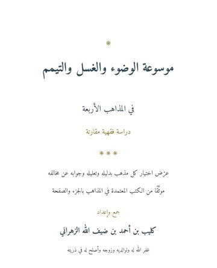

۞
موسوعة الوضوء والغسل والتيمم
في المذاهب الأربعة
الطهارات الثلاث: الوضوء والغسل والتيمم، بعرض اختيار كل مذهب بدليله وتعليله وجوابه عن مخالفه، موثَّقًا من الكتب المعتمدة بالجزء والصفحة.
جمع وإعداد: كليب بن أحمد بن ضيف الله الزهراني
غفر الله له ولوالديه وزوجه وأصلح له في ذريته
غفر الله له ولوالديه وزوجه وأصلح له في ذريته
كتب المؤلف للقراءة والتنزيل (PDF)
لم تبدأ القراءة بعد
من أقوال أهل العلم في الاختلاف الفقهي٥ د قراءةًالمقدمة٤ د قراءةًمراتب أفعال الطهارة عند المذاهب وأثرها في حكم الترك٢ د قراءةً
رحلة الطهارة
كل محطة مسألة؛ والشريط تحتها يبيّن مقدار المتفق عليه، وما لا يؤثر الخلاف فيه في الصحة، وما يرجع الخلاف فيه إلى الصحة والبطلان.
متفق عليهخلاف لا يؤثر في الصحةخلاف مؤثر في الصحة
- القسم الأول: الوضوء١ما تجب له الطهارة من الحدث، ومسّ المصحف وحمله١١ د قراءةً · ١ متفق، ١ لا يؤثر، ١ مؤثر٢النية في الوضوء٩ د قراءةً · ١ متفق، ١ مؤثر٣التسمية في الوضوء٨ د قراءةً · ١ متفق، ١ لا يؤثر، ١ مؤثر٤السواك٧ د قراءةً · ١ متفق، ١ لا يؤثر٥غسل الكفين في أول الوضوء٧ د قراءةً · ١ متفق، ١ مؤثر٦المضمضة والاستنشاق والاستنثار٩ د قراءةً · ١ متفق، ١ لا يؤثر، ١ مؤثر٧غسل الوجه: حدّه، وما عليه من الشعر٩ د قراءةً · ١ متفق، ١ مؤثر٨غسل اليدين إلى المرفقين٤ د قراءةً · ١ متفق٩مسح الرأس: قدره، وتكراره، والمسح على العمامة١٢ د قراءةً · ١ متفق، ١ لا يؤثر، ١ مؤثر١٠مسح الأذنين٧ د قراءةً · ١ متفق، ١ لا يؤثر، ١ مؤثر١١مسح الرقبة٤ د قراءةً · ١ متفق، ١ لا يؤثر١٢غسل الرجلين إلى الكعبين٦ د قراءةً · ١ متفق١٣الترتيب بين أعضاء الوضوء٧ د قراءةً · ١ متفق، ١ مؤثر١٤الموالاة بين أعضاء الوضوء٧ د قراءةً · ١ متفق، ١ مؤثر١٥الدلك في الوضوء والغسل٥ د قراءةً · ١ متفق، ١ مؤثر١٦التثليث والزيادة على الثلاث وتنشيف الأعضاء١٢ د قراءةً · ١ متفق، ١ لا يؤثر١٧الذكر بعد الوضوء ودعاء الأعضاء وركعتا الوضوء٧ د قراءةً · ١ متفق، ١ لا يؤثر١٨المسح على الخفين: مشروعيته وتوقيته وابتداء مدته١٠ د قراءةً · ١ متفق، ١ مؤثر١٩شروط المسح على الخفين: الطهارة عند اللبس، والخرق، والجوربان١٥ د قراءةً · ١ متفق، ١ مؤثر٢٠صفة المسح على الخفين وقدره المجزئ، وحكم نزعهما١٢ د قراءةً · ١ متفق، ١ مؤثر٢١المسح على الجبيرة والعصائب١٢ د قراءةً · ١ متفق، ١ مؤثر٢٢الخارج من السبيلين والخارج النجس من غيرهما١١ د قراءةً · ١ متفق، ١ مؤثر٢٣النوم وزوال العقل٩ د قراءةً · ١ متفق، ١ مؤثر٢٤مسّ الفرج٨ د قراءةً · ١ متفق، ١ مؤثر٢٥لمس المرأة٨ د قراءةً · ١ متفق، ١ مؤثر٢٦نواقض انفرد بها بعض المذاهب: أكل لحم الإبل، وغسل الميت، والقهقهة في الصلاة١٠ د قراءةً · ١ متفق، ١ مؤثر٢٧الشك في الحدث بعد تيقن الطهارة٥ د قراءةً · ١ متفق، ١ مؤثر
- القسم الثاني: الغسل٢٨موجبات الغسل: الإنزال والتقاء الختانين١٠ د قراءةً · ١ متفق، ١ مؤثر٢٩غسل الكافر إذا أسلم٥ د قراءةً · ١ متفق، ١ لا يؤثر٣٠فروض الغسل: النية، وتعميم البدن، والموالاة، ونقض الضفائر٩ د قراءةً · ١ متفق، ١ لا يؤثر، ١ مؤثر٣١إجزاء الغسل عن الوضوء، وتداخل الأغسال٨ د قراءةً · ١ متفق، ١ لا يؤثر، ١ مؤثر٣٢ما يحرم على الجنب والحائض: قراءة القرآن والمكث في المسجد١٠ د قراءةً · ١ متفق، ١ لا يؤثر٣٣غسل الجمعة وسائر الأغسال المسنونة٧ د قراءةً · ١ متفق، ١ لا يؤثر
- القسم الثالث: التيمم٣٤مشروعية التيمم وفقد الماء في السفر والحضر وإعادة الحاضر١٢ د قراءةً · ١ متفق، ١ لا يؤثر، ١ مؤثر٣٥التيمم للمرض وخوف الضرر والبرد١٢ د قراءةً · ١ متفق، ١ لا يؤثر، ١ مؤثر٣٦التيمم لخوف فوت الجنازة والعيد وخروج الوقت مع وجود الماء١٠ د قراءةً · ١ متفق، ١ لا يؤثر، ١ مؤثر٣٧ما يُتيمم به: التراب أو كل ما كان من جنس الأرض١١ د قراءةً · ١ متفق، ١ لا يؤثر، ١ مؤثر٣٨صفة التيمم: عدد الضربات وحدّ اليدين والترتيب والموالاة١٥ د قراءةً · ١ متفق، ١ لا يؤثر، ١ مؤثر٣٩شروط التيمم: النية، ودخول الوقت، وطلب الماء١٤ د قراءةً · ١ متفق، ١ لا يؤثر، ١ مؤثر٤٠وجود بعض ما يكفي من الماء، ووقت التيمم المستحب١١ د قراءةً · ١ متفق، ١ لا يؤثر، ١ مؤثر٤١التيمم رافع للحدث أم مبيح، وعدد الفرائض بتيمم واحد١٣ د قراءةً · ١ متفق، ١ لا يؤثر، ١ مؤثر٤٢مبطلات التيمم: رؤية الماء قبل الصلاة وفي أثنائها وبعدها١١ د قراءةً · ١ متفق، ١ لا يؤثر، ١ مؤثر٤٣فاقد الطهورين١٢ د قراءةً · ١ متفق، ١ لا يؤثر، ١ مؤثر
بعد الرحلة
بين يدي الكتاب
۞
من أقوال أهل العلم في الاختلاف الفقهي
عن عمرو بن العاص رضي الله عنه أنه سمع رسول الله ﷺ يقول: «إذا حكم الحاكم فاجتهد ثم أصاب فله أجران، وإذا حكم فاجتهد ثم أخطأ فله أجر».
٭ أولًا: في سعة الاختلاف الفقهي، وترك الإنكار والهجر فيه
عمر بن عبد العزيز (ت ١٠١هـ): قال القاسم بن محمد: «لقد أعجبني قول عمر بن عبد العزيز رضي الله عنه: ما أحب أن أصحاب رسول الله ﷺ لم يختلفوا؛ لأنه لو كان قولًا واحدًا كان الناس في ضيق، وإنهم أئمة يُقتدى بهم، ولو أخذ رجل بقول أحدهم كان في سعة»، قال ابن عبد البر: «هذا فيما كان طريقه الاجتهاد».
القاسم بن محمد بن أبي بكر الصديق (ت ١٠٧هـ): «لقد نفع الله تعالى باختلاف أصحاب النبي ﷺ في أعمالهم، لا يعمل العالم بعمل رجل منهم إلا رأى أنه في سعة، ورأى أنه خير منه قد عمله».
سفيان الثوري (ت ١٦١هـ): «إذا رأيت الرجل يعمل العمل الذي قد اختُلف فيه وأنت ترى غيره فلا تنهه».
مالك بن أنس (ت ١٧٩هـ): قال: «دعاني أبو جعفر أمير المؤمنين فقال لي: يا أبا عبد الله، إني أريد أن أكتب إلى الآفاق فأحملهم على كتاب الموطأ حتى لا يبقى أحد يخالفك فيه. قال مالك: فقلت: يا أمير المؤمنين، إن أصحاب رسول الله ﷺ تفرّقوا في البلدان، واتّبعهم الناس، فرأى كل فريق أن قد اتّبع متَّبَعًا».
أحمد بن حنبل (ت ٢٤١هـ): قال في رواية المرّوذي: «لا ينبغي للفقيه أن يحمل الناس على مذهبه، ولا يشدّد عليهم»؛ و«كان إسحاق بن بهلول قد سمّى كتابه كتاب الاختلاف، فقال له أحمد: سمّه كتاب السعة».
ابن قدامة المقدسي (ت ٦٢٠هـ): نقل عنه ابن مفلح أنه ذكر «في مسألة مفردة أنه لا ينبغي لأحد أن ينكر على غيره العمل بمذهبه، فإنه لا إنكار على المجتهدات».
النووي (ت ٦٧٦هـ): «ثم العلماء إنما ينكرون ما أُجمع عليه، أما المختلف فيه فلا إنكار فيه؛ لأن على أحد المذهبين كل مجتهد مصيب، وهذا هو المختار عند كثيرين من المحققين أو أكثرهم، وعلى المذهب الآخر المصيب واحد، والمخطئ غير متعيّن لنا، والإثم مرفوع عنه، لكن إن ندبه على جهة النصيحة إلى الخروج من الخلاف فهو حسن محبوب مندوب إلى فعله برفق».
ابن تيمية (ت ٧٢٨هـ): «مسائل الاجتهاد من عمل فيها بقول بعض العلماء لم يُنكر عليه ولم يُهجر، ومن عمل بأحد القولين لم يُنكر عليه»؛ وقال: «وأما الاختلاف في الأحكام فأكثر من أن ينضبط، ولو كان كلما اختلف مسلمان في شيء تهاجرا لم يبق بين المسلمين عصمة ولا أخوة، ولقد كان أبو بكر وعمر رضي الله عنهما سيّدا المسلمين يتنازعان في أشياء لا يقصدان إلا الخير»؛ وقال: «والنزاع في الأحكام قد يكون رحمة إذا لم يُفضِ إلى شرّ عظيم من خفاء الحكم».
٭ ثانيًا: في اجتهاد الأئمة وتحرّيهم الصواب، وأن المخطئ منهم معذور مأجور
ابن تيمية (ت ٧٢٨هـ): «وليُعلم أنه ليس أحد من الأئمة -المقبولين عند الأمة قبولًا عامًّا- يتعمّد مخالفة رسول الله ﷺ في شيء من سنته؛ دقيق ولا جليل؛ فإنهم متفقون اتفاقًا يقينيًّا على وجوب اتباع الرسول ﷺ، وعلى أن كل أحد من الناس يؤخذ من قوله ويُترك إلا رسول الله ﷺ، ولكن إذا وُجد لواحد منهم قول قد جاء حديث صحيح بخلافه فلا بد له من عذر في تركه».
الذهبي (ت ٧٤٨هـ): «ولو أنّا كلما أخطأ إمام في اجتهاده في آحاد المسائل خطأً مغفورًا له قمنا عليه، وبدّعناه، وهجرناه، لما سلم معنا لا ابن نصر، ولا ابن منده، ولا من هو أكبر منهما، والله هو هادي الخلق إلى الحق، وهو أرحم الراحمين، فنعوذ بالله من الهوى والفظاظة».
ابن القيم (ت ٧٥١هـ): «ومن له علم بالشرع والواقع يعلم قطعًا أن الرجل الجليل الذي له في الإسلام قدم صالح وآثار حسنة، وهو من الإسلام وأهله بمكان، قد تكون منه الهفوة والزلة هو فيها معذور بل ومأجور لاجتهاده؛ فلا يجوز أن يُتّبع فيها، ولا يجوز أن تُهدر مكانته وإمامته ومنزلته من قلوب المسلمين».
حواشي هذا القسم
- أخرجه البخاري في صحيحه، كتاب الاعتصام، باب أجر الحاكم إذا اجتهد فأصاب أو أخطأ (٧٣٥٢)، ومسلم في صحيحه، كتاب الأقضية، باب بيان أجر الحاكم إذا اجتهد فأصاب أو أخطأ (١٧١٦).
- ابن عبد البر، جامع بيان العلم وفضله (٢/ ٩٠١–٩٠٢).
- ابن عبد البر، جامع بيان العلم وفضله (٢/ ٩٠٠–٩٠١).
- أبو نعيم، حلية الأولياء (٦/ ٣٦٨)؛ الخطيب البغدادي، الفقيه والمتفقه (٢/ ١٣٦).
- ابن عساكر، كشف المغطا في فضل الموطا (ص ٢٧).
- بواسطة: ابن مفلح، الآداب الشرعية (١/ ١٦٦).
- ابن أبي يعلى، طبقات الحنابلة (١/ ٢٩٧).
- بواسطة: ابن مفلح، الآداب الشرعية (١/ ١٦٦).
- النووي، شرح صحيح مسلم (٢/ ٢٣).
- ابن تيمية، مجموع الفتاوى (٢٠/ ٢٠٧).
- ابن تيمية، مجموع الفتاوى (٢٤/ ١٧٣).
- ابن تيمية، مجموع الفتاوى (١٤/ ١٥٩).
- ابن تيمية، رفع الملام عن الأئمة الأعلام (ص ٨–٩).
- الذهبي، سير أعلام النبلاء (١٤/ ٤٠).
- ابن القيم، إعلام الموقعين (٣/ ٢٢٠).
المقدمة
الحمد لله الذي جعل الطهور شطر الإيمان، وجعل الماء طهورًا والأرض مسجدًا وطهورًا، والصلاة والسلام على من بُعث بالحنيفية السمحة، نبينا محمد وعلى آله وصحبه أجمعين، أما بعد:
فإن الطهارة مفتاح الصلاة، وشرط صحتها الذي لا تقوم إلا به، ولذلك افتتح الفقهاء بها مصنفاتهم، وبسطوا فيها القول بسطًا لم يبسطوه في كثير من الأبواب، لكثرة ما يتعلق بها من مسائل يحتاجها كل مسلم في يومه وليلته. وقد اختلف الأئمة الأربعة في كثير من دقائقها، فما يكون فرضًا عند أحدهم قد يكون سنة عند آخر، وما يبطل الطهارة عند هذا قد لا يبطلها عند ذاك؛ فاحتاج طالب العلم إلى عرض يجمع أقوال المذاهب في صعيد واحد، مقرونة بأدلتها وتعليلاتها وأجوبة كل مذهب عن مخالفه، منقولة من كتب أصحابها المعتمدة بحروفها.
وقد سرت في هذا الكتاب على المنهج الذي سلكته في «موسوعة الصلاة في المذاهب الأربعة»، فجعلته في ثلاثة أقسام: الوضوء، ثم الغسل، ثم التيمم، وأدخلت في كل قسم ما وقفت عليه أثناء البحث من المسائل المتعلقة به كالمسح على الخفين والجبيرة في الوضوء، وفاقد الطهورين في التيمم، حتى بلغت مسائله ثلاثًا وأربعين مسألة.
وأسأل الله تعالى أن يجعله خالصًا لوجهه الكريم، نافعًا لعباده، وأن يغفر لي ما وقع فيه من خطأ أو تقصير، فما كان فيه من صواب فمن الله وحده، وما كان من خطأ فمني ومن الشيطان، والله ورسوله منه بريئان.
٭ منهج البحث
أولًا: ترتيب المسألة. تُعرض كل مسألة على النحو الآتي:
- عنوان المسألة، يليه بيان حالها من الاتفاق والاختلاف في صناديق ملونة:
- الصندوق الأخضر: ما اتفقت عليه المذاهب الأربعة في المسألة.
- الصندوق الأزرق: ما اختلفت فيه المذاهب اختلافًا لا أثر له في صحة العبادة، كالاختلاف في الأفضل والمستحب.
- الصندوق الأحمر: ما اختلفت فيه المذاهب بين مصحِّح ومبطل، وهو أهم ما ينبغي أن يعتني به القارئ.
- تمهيد يبين أصل المسألة ومأخذ الخلاف فيها.
- تحرير محل النزاع.
- عرض المذاهب الأربعة مرتبة على ترتيبها الزمني: الحنفية، ثم المالكية، ثم الشافعية، ثم الحنابلة، ولكل مذهب إطار مستقل يشتمل على: القول، ثم الأدلة، ثم التعليل، ثم الجواب عن المخالف.
- جدول بخلاصة الأقوال.
- فرع في حكم الترك عمدًا وسهوًا، يبين أثر الإخلال بما تقرر في المسألة على صحة الطهارة.
ثانيًا: النقل والتوثيق.
- أنقل قول كل مذهب من كتب أصحابه المعتمدة، ولا أنسب إلى مذهب قولًا من كتب غيره إلا عند الحاجة مع التصريح بذلك.
- ما نقلته بحروفه أضعه بين علامتي التنصيص «»، دون حذف أو تصرف، فإن اقتضى المقام اختصار ما لا تعلق له بالمسألة أشرت إليه بثلاث نقاط ( ... ).
- إذا كان الدليل منقولًا من كتب مذهب آخر صدّرت الإحالة بقولي: «حكاه عنهم»؛ ليعلم القارئ أنه ليس من كتب المذهب نفسه.
- إذا لم أقف على نص صريح للمذهب في جزئية، وأمكن استنباطها من قواعده أو من نص قريب، صدّرت ذلك بقولي: «ويظهر»، تمييزًا لاستنباطي عن نصوصهم.
- أحيل في الحاشية على اسم المؤلف ثم الكتاب ثم الجزء والصفحة، هكذا: (المؤلف، الكتاب (الجزء/ الصفحة).)، والحواشي مرقّمة في كل صفحة.
- أعتمد في كل مذهب على كتبه المعتمدة: فللحنفية «بدائع الصنائع» للكاساني، و«الدر المختار» للحصكفي مع «رد المحتار» لابن عابدين؛ وللمالكية «الإشراف على نكت مسائل الخلاف» للقاضي عبد الوهاب، و«الشرح الكبير» للدردير مع «حاشية الدسوقي»؛ وللشافعية «منهاج الطالبين» للنووي مع شرحه «مغني المحتاج» للخطيب الشربيني؛ وللحنابلة «المغني» لابن قدامة، و«كشاف القناع» للبهوتي، وغيرها مما يرد في مواضعه.
- إذا ذكر المؤلف حكمًا على حديث نقلته عنه منسوبًا إليه، ولم أحكم على حديث من عندي.
ثالثًا: التخريج.
- أعزو الآيات إلى سورها وأرقامها في المتن بين معقوفين.
- أخرّج الأحاديث من مصادرها: فإن كان في الصحيحين أو أحدهما اكتفيت بالعزو إليهما بذكر الكتاب والباب ورقم الحديث، وإن كان في غيرهما عزوته إلى من خرّجه من أصحاب السنن وغيرهم.
- اعتمدت في الترقيم: صحيح البخاري، وصحيح مسلم بترقيم محمد فؤاد عبد الباقي، وسنن أبي داود بتحقيق محمد محيي الدين عبد الحميد، وجامع الترمذي بتحقيق أحمد شاكر ومن أكمله، وسنن النسائي الصغرى، وسنن ابن ماجه بترقيم محمد فؤاد عبد الباقي.
تمهيد
۞
مراتب أفعال الطهارة عند المذاهب وأثرها في حكم الترك
يتوقف فهم الخلاف في كثير من مسائل هذا الكتاب على معرفة اصطلاح كل مذهب في مراتب أفعال الطهارة؛ إذ قد يتفق مذهبان في أن الفعل مطلوب، ويختلفان في أثر تركه على صحة الطهارة، تبعًا لاختلاف المرتبة التي جعلها له كل منهما.
- الحنفية: يفرّقون بين الفرض، وهو ما ثبت بدليل قطعي وتبطل الطهارة بتركه كغسل الأعضاء المنصوص عليها، والسنة المؤكدة التي يُلام تاركها ولا تبطل الطهارة بتركها كالنية والترتيب والتسمية في الوضوء، والمستحب أو الأدب الذي لا يلحق تاركه لوم.
- المالكية: يقسمون أفعال الطهارة إلى فرائض تبطل بتركها، وسنن يُطلب تداركها إن تُركت ولا تبطل الطهارة بتركها في الجملة، وفضائل لا يترتب على تركها شيء. ولهم تفصيل دقيق في الترك عمدًا أو نسيانًا، وفي التذكر بعد طول أو قبله، يتكرر في مسائل الموالاة والترتيب ومسح الأذنين وغيرها.
- الشافعية: يفرّقون بين الأركان والفروض التي لا تصح الطهارة إلا بها، والسنن التي تكمل بها الطهارة ولا تبطل بتركها، ويعبّرون في ترجيحاتهم بالأظهر والأصح والمذهب والصحيح، ولكل منها دلالة على قوة الخلاف في المذهب.
- الحنابلة: يفرّقون بين الفروض والشروط التي تبطل الطهارة بتركها عمدًا وسهوًا، والواجبات التي تسقط بالسهو عند بعضهم كالتسمية، والسنن. ويذكرون في كثير من المسائل روايتين عن الإمام أحمد، والمعتمد عند المتأخرين ما في «الإقناع» و«المنتهى» وشروحهما.
ولهذا جعلت في آخر كل مسألة فرعًا لحكم الترك عمدًا وسهوًا، أنزّل فيه ما تقرر في المسألة على اصطلاح كل مذهب، ليتبين للقارئ أثر الخلاف في صحة الطهارة لا في مجرد الحكم التكليفي.
۞
المسألة الأولى
۞
ما تجب له الطهارة من الحدث، ومسّ المصحف وحمله
الخلاصة في نظرةمن جدول خلاصة الأقوال في المسألة، والتفصيل بأدلته في موضعه
الحنفية
- الطهارة للطواف: واجبة لا شرط
- مسّ المصحف: يحرم إلا بغلاف متجافٍ، ويُكره بالكُمّ تحريمًا
- حمله بعلاقة أو حائل منفصل: يجوز
المالكية
- الطهارة للطواف: شرط
- مسّ المصحف: يحرم ولو بعود، ويُستثنى المعلّم والمتعلّم
- حمله بعلاقة أو حائل منفصل: يُمنع إلا في أمتعة مقصودة
الشافعية
- الطهارة للطواف: شرط
- مسّ المصحف: يحرم مسّ ورقه وجلده وخريطته وصندوقه
- حمله بعلاقة أو حائل منفصل: يحرم إلا لضرورة أو في أمتعة
الحنابلة
- الطهارة للطواف: شرط
- مسّ المصحف: يحرم بأي عضو من البدن
- حمله بعلاقة أو حائل منفصل: يجوز
متفق عليه بين المذاهب: أن الطهارة من الحدث شرط لصحة الصلاة، وأنه يحرم على المحدث مسّ المصحف.
مختلف فيه بين من يصحّح ومن يبطل: الطواف بغير طهارة (يصح مع الإثم والجبر عند الحنفية؛ لوجوب الطهارة فيه لا اشتراطها، ولا يصح عند الجمهور).
مختلف فيه، ولا أثر له في صحة الطهارة: حمل المصحف بعلاقته أو بحائل منفصل (يجوز عند الحنفية والحنابلة، ويُمنع عند المالكية والشافعية).
٭ تمهيد
الحدث وصفٌ قائم بالبدن يمنع مما تُشترط له الطهارة، قال الدردير: «(وَمَنَعَ حَدَثٌ) أَصْغَرُ وَكَذَا أَكْبَرُ وَسَيَأْتِي أَيْ الْوَصْفُ الْقَائِمُ بِالشَّخْصِ ثَلَاثَةَ أُمُورٍ (صَلَاةً) بِجَمِيعِ أَنْوَاعِهَا وَمِنْهَا سُجُودُ التِّلَاوَةِ (وَطَوَافًا وَمَسَّ مُصْحَفٍ)». والأصل في ذلك قوله تعالى: ﴿يَا أَيُّهَا الَّذِينَ آمَنُوا إِذَا قُمْتُمْ إِلَى الصَّلَاةِ فَاغْسِلُوا وُجُوهَكُمْ﴾ [المائدة: ٦]، وقوله ﷺ: «لا يقبل الله صلاة أحدكم إذا أحدث حتى يتوضأ»، قال الخطيب الشربيني: «وَالْقَبُولُ يُقَالُ لِحُصُولِ الثَّوَابِ وَلِوُقُوعِ الْفِعْلِ صَحِيحًا، وَهُوَ الْمُرَادُ هُنَا بِقَرِينَةِ الْإِجْمَاعِ فَالْمَعْنَى لَا تَصِحُّ صَلَاةٌ إلَّا بِوُضُوءٍ».
٭ الفرع الأول: الطهارة للطواف
مذهب الحنفية
القول
الطهارة في الطواف واجبة لا شرط؛ فيحرم على المحدث، ولا يبطل به: «(وَ) يَحْرُمُ بِهِ (طَوَافٌ) لِوُجُوبِ الطَّهَارَةِ فِيهِ»، قال ابن عابدين: «(قَوْلُهُ لِوُجُوبِ الطَّهَارَةِ فِيهِ) حَتَّى لَوْ لَمْ يَكُنْ ثَمَّةَ مَسْجِدٌ لَا يَحِلُّ فِعْلُهُ بِدُونِهَا ... لِأَنَّهُ كَمَا تَجِبُ الطَّهَارَةُ فِيهِ مِنْ الْحَدَثِ الْأَكْبَرِ تَجِبُ مِنْ الْأَصْغَرِ». وقال الكاساني: «فَأَمَّا الطَّهَارَةُ عَنْ الْحَدَثِ، وَالْجَنَابَةِ، وَالْحَيْضِ، وَالنِّفَاسِ فَلَيْسَتْ بِشَرْطٍ لِجَوَازِ الطَّوَافِ، وَلَيْسَتْ بِفَرْضٍ عِنْدنَا بَلْ وَاجِبَةٌ حَتَّى يَجُوزَ الطَّوَافُ بِدُونِهَا».
الأدلة
قوله تعالى: ﴿وَلْيَطَّوَّفُوا بِالْبَيْتِ الْعَتِيقِ﴾ [الحج: ٢٩]، قال الكاساني: «أَمَرَ بِالطَّوَافِ مُطْلَقًا عَنْ شَرْطِ الطَّهَارَةِ، وَلَا يَجُوزُ تَقْيِيدُ مُطْلَقِ الْكِتَابِ بِخَبَرِ الْوَاحِدِ».
الجواب عن المخالف
عن استدلال الجمهور بحديث «الطواف صلاة»: أنه محمول على التشبيه: «فَيُحْمَلُ عَلَى التَّشْبِيهِ كَمَا فِي قَوْله تَعَالَى: ﴿وَأَزْوَاجُهُ أُمَّهَاتُهُمْ﴾ [الأحزاب: ٦] أَيْ: كَأُمَّهَاتِهِمْ وَمَعْنَاهُ الطَّوَافُ كَالصَّلَاةِ إمَّا فِي الثَّوَابِ أَوْ فِي أَصْلِ الْفَرْضِيَّةِ فِي طَوَافِ الزِّيَارَةِ؛ لِأَنَّ كَلَامَ التَّشْبِيهِ لَا عُمُومَ لَهُ فَيُحْمَلُ عَلَى الْمُشَابَهَةِ فِي بَعْضِ الْوُجُوهِ عَمَلًا بِالْكِتَابِ».
مذهب الجمهور: المالكية والشافعية والحنابلة
القول
الطهارة من الحدث شرط لصحة الطواف فرضه ونفله، فلا يصح من المحدث: قال الدردير: «(وَمَنَعَ حَدَثٌ) ... (صَلَاةً) ... (وَطَوَافًا)»؛ وقال الخطيب الشربيني: «(وَالطَّوَافُ) فَرْضُهُ وَنَفْلُهُ فِي ضِمْنِ نُسُكٍ أَوْ غَيْرِهِ».
الأدلة
قوله ﷺ: «الطَّوَافُ صَلَاةٌ إلَّا أَنَّ اللَّهَ أَحَلَّ فِيهِ الْكَلَامَ فَمَنْ تَكَلَّمَ فَلَا يَتَكَلَّمْ إلَّا بِخَيْرٍ»، قال الخطيب الشربيني: «رَوَاهُ الْحَاكِمُ عَنْ ابْنِ عَبَّاسٍ. وَقَالَ: صَحِيحُ الْإِسْنَادِ».
التعليل
«وَإِذَا كَانَ صَلَاةً فَالصَّلَاةُ لَا جَوَازَ لَهَا بِدُونِ الطَّهَارَةِ».
الجواب عن المخالف
ويظهر منه أن الحديث عندهم بيانٌ لصفة الطواف المأمور به في الآية، لا تقييدٌ لمطلقها، وأن حمله على التشبيه في الثواب خلاف ظاهر قوله: «إلا أن الله أحلّ فيه الكلام»؛ إذ الاستثناء من الأحكام دليل على أن التشبيه فيها.
٭ الفرع الثاني: مسّ المصحف وحمله
مذهب الحنفية
القول
يحرم على المحدث مسّ المصحف إلا بغلاف منفصل عنه، ويجوز حمله بذلك: «(وَ) يَحْرُمُ (بِهِ) أَيْ بِالْأَكْبَرِ (وَبِالْأَصْغَرِ) مَسُّ مُصْحَفٍ: أَيْ مَا فِيهِ آيَةٌ كَدِرْهَمٍ وَجِدَارٍ ... (إلَّا بِغِلَافٍ مُتَجَافٍ) غَيْرِ مُشَرَّزٍ»؛ وفي المسّ بالكُمّ خلاف، قال ابن نجيم: «وَفِي الْهِدَايَةِ وَيُكْرَهُ مَسُّهُ بِالْكُمِّ هُوَ الصَّحِيحُ؛ لِأَنَّهُ تَابِعٌ لَهُ ... وَفِي فَتْحِ الْقَدِيرِ وَالْمُرَادُ بِالْكَرَاهَةِ كَرَاهَةُ التَّحْرِيمِ».
التعليل
أن المحرّم المسّ، وهو المباشرة؛ ولذا عُلّل القول بعدم كراهة المسّ بالكم «بِأَنَّ الْمَسَّ مُحَرَّمٌ وَهُوَ اسْمٌ لِلْمُبَاشَرَةِ بِالْيَدِ بِلَا حَائِلٍ»، والغلاف المتجافي ليس تابعًا للمصحف فلا يكون مسّه مسًّا له.
مذهب المالكية
القول
يمنع الحدث مسّ المصحف ولو بعود، وحمله ولو بعلاقة أو في وسادة، إلا في أمتعة قُصدت بالحمل: «(وَ) مَنَعَ (حَمْلَهُ وَإِنْ بِعِلَاقَةٍ) إنْ لَمْ يُجْعَلْ حِرْزًا وَإِلَّا جَازَ عَلَى أَحَدِ الْقَوْلَيْنِ (أَوْ) وَإِنْ حَمَلَهُ فِي (وِسَادَةٍ) مُثَلَّثَةِ الْوَاوِ (إلَّا) أَنْ يَحْمِلَهُ (بِأَمْتِعَةٍ قُصِدَتْ) فَيَجُوزُ (وَإِنْ) حُمِلَتْ (عَلَى كَافِرٍ) لِأَنَّ الْمَقْصُودَ مَا فِيهِ الْمُصْحَفُ مِنْ الْأَمْتِعَةِ أَمَّا إنْ قُصِدَا مَعًا وَأَوْلَى إنْ قُصِدَ الْمُصْحَفُ فَقَطْ بِالْحَمْلِ مُنِعَ». ويُستثنى من المنع المعلّم والمتعلّم، ومنه في الحائض: «وَمَسِّ الْمُصْحَفِ مَا لَمْ تَكُنْ مُعَلَّمَةً أَوْ مُتَعَلِّمَةً».
التعليل
أن الحمل تعظيم وتلبّس بالمصحف فوق المسّ؛ ولذا نقل ابن قدامة عن مالك: «أَحْسَنُ مَا سَمِعْت أَنَّهُ لَا يَحْمِلُ الْمُصْحَفَ بِعَلَّاقَتِهِ وَلَا فِي غِلَافِهِ إلَّا وَهُوَ طَاهِرٌ؛ وَلِيس ذَلِكَ لِأَنَّهُ يُدَنِّسُهُ، وَلَكِنْ تَعْظِيمًا لِلْقُرْآنِ».
مذهب الشافعية
القول
يحرم على المحدث حمل المصحف ومسّ ورقه وجلده المتصل به، وما أُعدّ له من خريطة وصندوق هو فيهما: «(وَحَمْلُ الْمُصْحَفِ) ... (وَمَسُّ وَرَقِهِ) الْمَكْتُوبِ فِيهِ وَغَيْرِهِ بِأَعْضَاءِ الْوُضُوءِ أَوْ بِغَيْرِهَا وَلَوْ كَانَ فَاقِدًا لِلطَّهُورَيْنِ أَوْ مَسَّهُ مِنْ وَرَاءِ حَائِلٍ كَثَوْبٍ رَقِيقٍ لَا يَمْنَعُ وُصُولَ الْيَدِ إلَيْهِ»؛ «(وَكَذَا جِلْدُهُ) الْمُتَّصِلُ بِهِ يَحْرُمُ مَسُّهُ بِمَا ذُكِرَ (عَلَى الصَّحِيحِ) ؛ لِأَنَّهُ كَالْجُزْءِ مِنْهُ»، ثم قال النووي: «وَخَرِيطَةٌ، وَصُنْدُوقٌ فِيهِمَا مُصْحَفٌ».
الأدلة
قوله تعالى: ﴿لَا يَمَسُّهُ إِلَّا الْمُطَهَّرُونَ﴾ [الواقعة: ٧٩]، قال الخطيب الشربيني: «أَيْ الْمُتَطَهِّرُونَ هُوَ خَبَرٌ بِمَعْنَى النَّهْيِ وَلَوْ كَانَ بَاقِيًا عَلَى أَصْلِهِ لَزِمَ الْخُلْفُ فِي كَلَامِهِ تَعَالَى؛ لِأَنَّ غَيْرَ الْمُتَطَهِّرِ يَمَسُّهُ، وَقَالَ ﷺ: «لَا يَمَسَّ الْقُرْآنَ إلَّا طَاهِرٌ» رَوَاهُ الْحَاكِمُ وَقَالَ: إسْنَادُهُ عَلَى شَرْطِ الصَّحِيحِ».
التعليل
«وَالْحَمْلُ أَبْلَغُ مِنْ الْمَسِّ»؛ فإذا مُنع من المسّ فالحمل أولى، واستثنوا الضرورة: «نَعَمْ يَجُوزُ حَمْلُهُ لِضَرُورَةٍ كَخَوْفٍ عَلَيْهِ مِنْ غَرَقٍ أَوْ حَرْقٍ أَوْ نَجَاسَةٍ أَوْ وُقُوعِهِ فِي يَدِ كَافِرٍ، وَلَمْ يَتَمَكَّنْ مِنْ الطَّهَارَةِ، بَلْ يَجِبُ أَخْذُهُ حِينَئِذٍ».
مذهب الحنابلة
القول
لا يمسّ المصحف إلا طاهر من الحدثين، ولا يجوز مسّه بشيء من جسده، ويجوز حمله بعلاقته أو بحائل لا يتبعه في البيع: «وَلَا يَمَسُّ الْمُصْحَفَ إلَّا طَاهِرٌ يَعْنِي طَاهِرًا مِنْ الْحَدَثَيْنِ جَمِيعًا»؛ «فَإِنَّهُ لَا يَجُوزُ لَهُ مَسُّهُ بِشَيْءٍ مِنْ جَسَدِهِ؛ لِأَنَّهُ مِنْ جَسَدِهِ، فَأَشْبَهَ يَدَهُ»؛ «وَيَجُوزُ حَمْلُهُ بِعِلَاقَتِهِ. وَهَذَا قَوْلُ أَبِي حَنِيفَةَ».
الأدلة
قوله تعالى: ﴿لَا يَمَسُّهُ إِلَّا الْمُطَهَّرُونَ﴾ [الواقعة: ٧٩]، وكتاب النبي ﷺ لعمرو بن حزم: «أَنْ لَا يَمَسَّ الْقُرْآنَ إلَّا طَاهِرٌ»، قال ابن قدامة: «وَهُوَ كِتَابٌ مَشْهُورٌ، رَوَاهُ أَبُو عُبَيْدٍ فِي فَضَائِلِ الْقُرْآنِ وَغَيْرِهِ، وَرَوَاهُ الْأَثْرَمُ».
التعليل
في جواز الحمل: «أَنَّهُ غَيْرُ مَاسٍّ لَهُ، فَلَمْ يُمْنَعْ مِنْهُ، كَمَا لَوْ حَمَلَهُ فِي رَحْلِهِ؛ وَلِأَنَّ النَّهْيَ إنَّمَا يَتَنَاوَلُ الْمَسَّ، وَالْحَمْلُ لَيْسَ بِمَسٍّ، فَلَمْ يَتَنَاوَلْهُ النَّهْيُ».
الجواب عن المخالف
- عن احتجاج داود بكتابه ﷺ إلى قيصر: «فَأَمَّا الْآيَةُ الَّتِي كَتَبَ بِهَا النَّبِيُّ ﷺ فَإِنَّمَا قَصَدَ بِهَا الْمُرَاسَلَةَ، وَالْآيَةُ فِي الرِّسَالَةِ أَوْ كِتَابِ فِقْهٍ أَوْ نَحْوِهِ لَا تَمْنَعُ مَسَّهُ، وَلَا يَصِيرُ الْكِتَابُ بِهَا مُصْحَفًا، وَلَا تَثْبُتُ لَهُ حُرْمَتُهُ».
- عن قول من خصّ المسّ بباطن الكف: «وَقَوْلُهُمْ: إنَّ الْمَسَّ إنَّمَا يَخْتَصُّ بِبَاطِنِ الْيَدِ؛ لَيْسَ بِصَحِيحٍ؛ فَإِنَّ كُلَّ شَيْءٍ لَاقَى شَيْئًا فَقَدْ مَسَّهُ».
- عن قياس المالكية والشافعية الحمل على المسّ: «وَقِيَاسُهُمْ فَاسِدٌ؛ فَإِنَّ الْعِلَّةَ فِي الْأَصْلِ مَسُّهُ، وَهُوَ غَيْرُ مَوْجُودٍ فِي الْفَرْعِ، وَالْحَمْلُ لَا أَثَرَ لَهُ، فَلَا يَصِحُّ التَّعْلِيلُ بِهِ».
٭ خلاصة الأقوال فيما تجب له الطهارة ومسّ المصحف
| المذهب | الطهارة للطواف | مسّ المصحف | حمله بعلاقة أو حائل منفصل |
|---|---|---|---|
| الحنفية | واجبة لا شرط | يحرم إلا بغلاف متجافٍ، ويُكره بالكُمّ تحريمًا | يجوز |
| المالكية | شرط | يحرم ولو بعود، ويُستثنى المعلّم والمتعلّم | يُمنع إلا في أمتعة مقصودة |
| الشافعية | شرط | يحرم مسّ ورقه وجلده وخريطته وصندوقه | يحرم إلا لضرورة أو في أمتعة |
| الحنابلة | شرط | يحرم بأي عضو من البدن | يجوز |
٭ فرع: حكم الترك عمدًا وسهوًا
- الصلاة: لا تصح من المحدث عمدًا ولا سهوًا باتفاق؛ لأن الطهارة شرط، والشرط لا يسقط بالنسيان، فمن صلى محدثًا ناسيًا لزمته الإعادة عند الجميع.
- الطواف: يظهر من قول الحنفية أن من طاف محدثًا صح طوافه مع الإثم في العمد، ولزمه الجبر على تفصيلهم في كتاب الحج؛ ولا يصح عند الجمهور عمدًا ولا سهوًا.
- مسّ المصحف: إثمٌ لا يتعلق به بطلان عبادة، ويسقط الإثم بالنسيان على قواعد الجميع.
حواشي هذا القسم
- الدردير، الشرح الكبير مع حاشية الدسوقي (١/ ١٢٥).
- أخرجه البخاري في صحيحه، كتاب الوضوء، باب لا تقبل صلاة بغير طهور (١٣٥)، ومسلم في صحيحه، كتاب الطهارة، باب وجوب الطهارة للصلاة (٢٢٥)، من حديث أبي هريرة رضي الله عنه.
- الخطيب الشربيني، مغني المحتاج (١/ ١٤٩).
- الخطيب الشربيني، مغني المحتاج (١/ ١٤٩).
- ابن قدامة، المغني (١/ ١٠٨).
- الحصكفي، الدر المختار مع حاشية ابن عابدين (١/ ١٧٣).
- الكاساني، بدائع الصنائع (٢/ ١٢٩).
- الكاساني، بدائع الصنائع (٢/ ١٢٩).
- الكاساني، بدائع الصنائع (٢/ ١٢٩).
- الدردير، الشرح الكبير مع حاشية الدسوقي (١/ ١٢٥).
- الخطيب الشربيني، مغني المحتاج (١/ ١٤٩).
- الخطيب الشربيني، مغني المحتاج (١/ ١٤٩). والحديث أخرجه الترمذي في سننه، أبواب الحج، باب ما جاء في الكلام في الطواف (٩٦٠)، من حديث ابن عباس رضي الله عنهما.
- حكاه عنهم: الكاساني، بدائع الصنائع (٢/ ١٢٩).
- الحصكفي، الدر المختار مع حاشية ابن عابدين (١/ ١٧٣).
- ابن نجيم، البحر الرائق (١/ ٢١٢).
- ابن نجيم، البحر الرائق (١/ ٢١٢).
- الدردير، الشرح الكبير مع حاشية الدسوقي (١/ ١٢٥).
- الدسوقي، حاشيته على الشرح الكبير (١/ ١٧٥).
- حكاه عنهم: ابن قدامة، المغني (١/ ١٠٩).
- الخطيب الشربيني، مغني المحتاج (١/ ١٤٩).
- الخطيب الشربيني، مغني المحتاج (١/ ١٤٩).
- النووي، منهاج الطالبين مع مغني المحتاج (١/ ١٥٠).
- الخطيب الشربيني، مغني المحتاج (١/ ١٤٩).
- الخطيب الشربيني، مغني المحتاج (١/ ١٤٩).
- الخطيب الشربيني، مغني المحتاج (١/ ١٤٩).
- ابن قدامة، المغني (١/ ١٠٨).
- ابن قدامة، المغني (١/ ١٠٩).
- ابن قدامة، المغني (١/ ١٠٨–١٠٩). والحديث أخرجه مالك في الموطأ، كتاب القرآن، باب الأمر بالوضوء لمن مسّ القرآن.
- ابن قدامة، المغني (١/ ١٠٩).
- أخرجه البخاري في صحيحه، كتاب بدء الوحي، باب كيف كان بدء الوحي (٧)، ومسلم في صحيحه، كتاب الجهاد والسير، باب كتاب النبي ﷺ إلى هرقل (١٧٧٣).
- ابن قدامة، المغني (١/ ١٠٩).
- ابن قدامة، المغني (١/ ١٠٩).
- ابن قدامة، المغني (١/ ١٠٩).
المسألة الثانية
۞
النية في الوضوء
الخلاصة في نظرةمن جدول خلاصة الأقوال في المسألة، والتفصيل بأدلته في موضعه
الحنفية
- حكمها في الوضوء والغسل: سنة مؤكدة (وشرط في الوضوء بسؤر الحمار ونبيذ التمر)
- أثر تركها: يصح الوضوء ولا ثواب
- أبرز المستند: آية الوضوء، والماء مطهّر بطبعه
المالكية
- حكمها في الوضوء والغسل: شرط (فرض)
- أثر تركها: لا يصح
- أبرز المستند: «إنما الأعمال بالنيات»، وقياسه على التيمم
الشافعية
- حكمها في الوضوء والغسل: فرض، أول فروضه الستة
- أثر تركها: لا يصح
- أبرز المستند: الحديث، والوضوء عبادة محضة
الحنابلة
- حكمها في الوضوء والغسل: شرط
- أثر تركها: لا يصح
- أبرز المستند: الحديث، والآية: «إذا قمتم إلى الصلاة» أي: لها
متفق عليه بين المذاهب: أن محل النية القلب، وأن الوضوء بلا نية لا يُثاب عليه ثواب العبادة، وأن النية شرط في التيمم.
مختلف فيه بين من يصحّح ومن يبطل: الوضوء والغسل بلا نية (يصحان عند الحنفية، ولا يصحان عند الجمهور).
٭ تمهيد
النية في اللغة القصد، قال ابن قدامة: «وَالنِّيَّةُ: الْقَصْدُ، يُقَالُ: نَوَاك: اللَّهُ بِخَيْرٍ. أَيْ قَصَدَك بِهِ»، وفي الشرع قال الخطيب الشربيني: «وَشَرْعًا قَصْدُ الشَّيْءِ مُقْتَرِنًا بِفِعْلِهِ ... وَمَحَلُّهَا الْقَلْبُ، وَالْمَقْصُودُ بِهَا تَمْيِيزُ الْعِبَادَةِ عَنْ الْعَادَةِ كَالْجُلُوسِ لِلِاعْتِكَافِ تَارَةً وَلِلِاسْتِرَاحَةِ أُخْرَى أَوْ تَمْيِيزُ رُتْبَتِهَا». ومنشأ الخلاف: هل الوضوء طهارةٌ بالماء معقولة المعنى كإزالة النجاسة، فلا تفتقر إلى قصد، أو عبادةٌ محضة لا تتحقق إلا بالنية.
مذهب الحنفية
القول
النية في الوضوء سنة مؤكدة، وليست شرطًا لكونه مفتاحًا للصلاة، وهي شرط لحصول الثواب: «ثُمَّ اعْلَمْ أَنَّ النِّيَّةَ فِي غَيْرِ التَّوَضُّؤِ بِسُؤْرِ الْحِمَارِ وَبِنَبِيذِ التَّمْرِ سُنَّةٌ مُؤَكَّدَةٌ عَلَى الصَّحِيحِ وَلَيْسَتْ بِشَرْطٍ فِي كَوْنِ الْوُضُوءِ مِفْتَاحًا لِلصَّلَاةِ وَوَقْتُهَا عِنْدَ غَسْلِ الْوَجْهِ وَمَحَلُّهَا الْقَلْبُ ... وَأَمَّا النِّيَّةُ فِي التَّوَضُّؤِ بِسُؤْرِ الْحِمَارِ أَوْ بِنَبِيذِ التَّمْرِ فَشَرْطٌ ... لِأَنَّهَا شَرْطٌ فِي كَوْنِهِ سَبَبًا لِلثَّوَابِ عَلَى الْأَصَحِّ»؛ وقال السرخسي: «وَعَلَى هَذَا الْأَصْلِ قُلْنَا بِجَوَازِ الْوُضُوءِ، وَالْغُسْلِ مِنْ الْجَنَابَةِ بِدُونِ النِّيَّةِ».
الأدلة
- آية الوضوء: «(وَلَنَا) آيَةُ الْوُضُوءِ فَفِيهَا تَنْصِيصٌ عَلَى الْغُسْلِ، وَالْمَسْحِ، وَذَلِكَ يَتَحَقَّقُ بِدُونِ النِّيَّةِ فَاشْتِرَاطُ النِّيَّةِ يَكُونُ زِيَادَةً عَلَى النَّصِّ إذْ لَيْسَ فِي اللَّفْظِ الْمَنْصُوصِ مَا يَدُلُّ عَلَى النِّيَّةِ، وَالزِّيَادَةُ لَا تَثْبُتُ بِخَبَرِ الْوَاحِدِ، وَلَا بِالْقِيَاسِ».
- قوله تعالى: ﴿وَأَنْزَلْنَا مِنَ السَّمَاءِ مَاءً طَهُورًا﴾ [الفرقان: ٤٨]: «وَالطَّهُورُ الطَّاهِرُ فِي نَفْسِهِ الْمُطَهِّرُ لِغَيْرِهِ فَلَا يَتَوَقَّفُ حُصُولُ التَّطَهُّرِ بِهِ عَلَى فِعْلٍ يَكُونُ مِنْهُ كَالنَّارِ فَإِنَّهُ لَا يَتَوَقَّفُ حُصُولُ الِاحْتِرَاقِ بِهَا عَلَى فِعْلٍ يَكُونُ مِنْ الْعَبْدِ»؛ ولذا قالوا: «إذَا نَسِيَ الْمُتَوَضِّئُ مَسْحَ رَأْسِهِ فَأَصَابَهُ مَاءُ الْمَطَرِ مِقْدَارَ ثَلَاثَةِ أَصَابِعَ فَمَسَحَهُ بِيَدِهِ، أَوْ لَمْ يَمْسَحْهُ أَجْزَأَهُ عَنْ مَسْحِ الرَّأْسِ».
التعليل
- «وَلِأَنَّهَا طَهَارَةٌ بِالْمَاءِ فَكَانَتْ كَغُسْلِ النَّجَاسَةِ، وَتَأْثِيرُ مَا قُلْنَا أَنَّ الْمَاءَ مُطَهِّرٌ فِي نَفْسِهِ، وَالْحَدَثُ الْحُكْمِيُّ دُونَ النَّجَاسَةِ الْعَيْنِيَّةِ فَإِذَا عَمِلَ الْمَاءُ فِي إزَالَةِ النَّجَاسَةِ الْعَيْنِيَّةِ بِدُونِ النِّيَّةِ فَفِي إزَالَةِ الْحَدَثِ الْحُكْمِيِّ أَوْلَى».
- الفرق بينه وبين التيمم: «أَنَّ التَّيَمُّمَ لَيْسَ بِطَهَارَةٍ حَقِيقِيَّةٍ وَإِنَّمَا جُعِلَ طَهَارَةً عِنْدَ الْحَاجَةِ، وَالْحَاجَةُ إنَّمَا تُعْرَفُ بِالنِّيَّةِ بِخِلَافِ الْوُضُوءِ؛ لِأَنَّهُ طَهَارَةٌ حَقِيقِيَّةٌ ... وَلِأَنَّ مَأْخَذَ الِاسْمِ دَلِيلُ كَوْنِهَا شَرْطًا لِمَا ذَكَرْنَا أَنَّهُ يُنْبِئُ عَنْ الْقَصْدِ ... فَأَمَّا الْوُضُوءُ فَإِنَّهُ مَأْخُوذٌ مِنْ الْوَضَاءَةِ وَأَنَّهَا تَحْصُلُ بِدُونِ النِّيَّةِ».
الجواب عن المخالف
عن قول الجمهور: إن الوضوء عبادة فلا تصح بغير نية: «وَنَحْنُ نُسَلِّمُ أَنَّ الْوُضُوءَ بِغَيْرِ نِيَّةٍ لَا يَكُونُ عِبَادَةً، وَلَكِنَّ مَعْنَى الْعِبَادَةِ فِيهَا تَبَعٌ غَيْرُ مَقْصُودٍ إنَّمَا الْمَقْصُودُ إزَالَةُ الْحَدَثِ»؛ وعن قياسه على التيمم: أن في لفظ التيمم ما يدل على النية دون الوضوء: «بِخِلَافِ التَّيَمُّمِ فَإِنَّهُ عِبَارَةٌ عَنْ الْقَصْدِ لُغَةً ... فَفِي اللَّفْظِ مَا يَدُلُّ عَلَى اشْتِرَاطِ النِّيَّةِ فِيهِ».
مذهب الجمهور: المالكية والشافعية والحنابلة
القول
النية فرض في طهارة الأحداث كلها، لا يصح وضوء ولا غسل ولا تيمم إلا بها:
- المالكية: «النية شرط في طهارة الأحداث كلها، خلافاً لأبي حنيفة حين قال: ليست بشرط في وضوء ولا في غسل».
- الشافعية: هي أول فروض الوضوء الستة: «فَرْضُهُ سِتَّةٌ: أَحَدُهَا نِيَّةُ رَفْعِ حَدَثٍ، أَوْ اسْتِبَاحَةِ مُفْتَقِرٍ»؛ «وَحُكْمُهَا الْوُجُوبُ».
- الحنابلة: «وَالنِّيَّةُ مِنْ شَرَائِطِ الطَّهَارَةِ لِلْأَحْدَاثِ كُلِّهَا، لَا يَصِحُّ وُضُوءٌ وَلَا غُسْلٌ وَلَا تَيَمُّمٌ، إلَّا بِهَا. رُوِيَ ذَلِكَ عَنْ عَلِيٍّ وَبِهِ قَالَ رَبِيعَةُ وَمَالِكٌ وَالشَّافِعِيُّ وَاللَّيْثُ وَإِسْحَاقُ وَأَبُو عُبَيْدَةَ، وَابْنُ الْمُنْذِرِ».
الأدلة
- قوله ﷺ: «إنما الأعمال بالنيات، وإنما لكل امرئ ما نوى»، قال ابن قدامة: «فَنَفَى أَنْ يَكُونَ لَهُ عَمَلٌ شَرْعِيٌّ بِدُونِ النِّيَّةِ»، وقال الخطيب الشربيني: «أَيْ الْأَعْمَالُ الْمُعْتَدُّ بِهَا شَرْعًا».
- قوله تعالى: ﴿إِذَا قُمْتُمْ إِلَى الصَّلَاةِ فَاغْسِلُوا﴾، قال القاضي عبد الوهاب: «مفهومه للصلاة»، وقال ابن قدامة: «أَيْ: لِلصَّلَاةِ، كَمَا يُقَالُ: إذَا لَقِيت الْأَمِيرَ فَتَرَجَّلْ. أَيْ: لَهُ».
التعليل
- «وَلِأَنَّ الْوُضُوءَ عِبَادَةٌ مَحْضَةٌ طَرِيقُهُ الْأَفْعَالُ فَلَمْ يَصِحَّ مِنْ غَيْرِ نِيَّةٍ كَالصَّلَاةِ، فَاحْتُرِزَ بِالْعِبَادَةِ عَنْ الْأَكْلِ وَالشُّرْبِ وَالنَّوْمِ وَنَحْوِ ذَلِكَ، وَبِالْمَحْضَةِ عَنْ الْعِدَّةِ».
- «ولأنها طهارة من حدث كالتيمم، ولأنها عبادة منفردة بها كالصلاة والصوم».
الجواب عن المخالف
- عن قول الحنفية: الآية ذكرت الشرائط ولم تذكر النية: «قُلْنَا: إنَّمَا ذَكَرَ أَرْكَانَ الْوُضُوءِ، وَبَيَّنَ النَّبِيُّ ﷺ شَرْطَهُ كَآيَةِ التَّيَمُّمِ».
- عن قولهم: مقتضى الأمر حصول الإجزاء بفعل المأمور: «قُلْنَا: بَلْ مُقْتَضَاهُ وُجُوبُ الْفِعْلِ، وَهُوَ وَاجِبٌ. فَاشْتُرِطَ لِصِحَّتِهِ شَرْطٌ آخَرُ، بِدَلِيلِ التَّيَمُّمِ».
- عن قياسه على إزالة النجاسة: «وَقَوْلُهُمْ: إنَّهَا طَهَارَةٌ. قُلْنَا: إلَّا أَنَّهَا عِبَادَةٌ، وَالْعِبَادَةُ لَا تَكُونُ إلَّا مَنْوِيَّةً؛ لِأَنَّهَا قُرْبَةٌ إلَى اللَّهِ تَعَالَى، وَطَاعَةٌ لَهُ، وَامْتِثَالٌ لِأَمْرِهِ، وَلَا يَحْصُلُ ذَلِكَ بِغَيْرِ نِيَّةٍ».
٭ فرع: صفة النية وما يُنوى
صفة النية عند من اشترطها (الحنابلة، ويوافقهم الجمهور في أصلها)
يقصد بطهارته رفع الحدث أو استباحة ما لا يُستباح إلا بها: «وَصِفَتُهَا أَنْ يَقْصِدَ بِطَهَارَتِهِ اسْتِبَاحَةَ شَيْءٍ لَا يُسْتَبَاحُ إلَّا بِهَا، كَالصَّلَاةِ وَالطَّوَافِ وَمَسِّ الْمُصْحَفِ، وَيَنْوِي رَفْعَ الْحَدَثِ، وَمَعْنَاهُ إزَالَةُ الْمَانِعِ مِنْ كُلِّ فِعْلٍ يَفْتَقِرُ إلَى الطَّهَارَةِ. وَهَذَا قَوْلُ مَنْ وَافَقَنَا عَلَى اشْتِرَاطِ النِّيَّةِ، لَا نَعْلَمُ بَيْنَهُمْ فِيهِ اخْتِلَافًا. فَإِنْ نَوَى بِالطَّهَارَةِ مَا لَا تُشْرَعُ لَهُ الطَّهَارَةُ؛ كَالتَّبَرُّدِ وَالْأَكْلِ وَالْبَيْعِ وَالنِّكَاحِ وَنَحْوِهِ، وَلَمْ يَنْوِ الطَّهَارَةَ الشَّرْعِيَّةَ، لَمْ يَرْتَفِعْ حَدَثُهُ». وفي نية تجديد الوضوء ممن تبيّن أنه محدث روايتان: «إحْدَاهُمَا تَصِحُّ؛ لِأَنَّهُ طَهَارَةٌ شَرْعِيَّةٌ، فَيَنْبَغِي أَنْ يَحْصُلَ لَهُ مَا نَوَاهُ ... وَالثَّانِيَةُ لَا تَصِحُّ طَهَارَتُهُ؛ لِأَنَّهُ لَمْ يَنْوِ رَفْعَ الْحَدَثِ وَلَا مَا تَضَمَّنَهُ، أَشْبَهَ مَا لَوْ نَوَى التَّبَرُّدَ».
وأما الحنفية فالنية عندهم -حيث سُنّت- نية ما لا يصح إلا بالطهارة أو رفع الحدث: «وَالْمَذْهَبُ أَنْ يَنْوِيَ مَا لَا يَصِحُّ إلَّا بِالطَّهَارَةِ مِنْ الْعِبَادَةِ أَوْ رَفْعِ الْحَدَثِ كَمَا فِي التَّيَمُّمِ».
٭ خلاصة الأقوال في النية
| المذهب | حكمها في الوضوء والغسل | أثر تركها | أبرز المستند |
|---|---|---|---|
| الحنفية | سنة مؤكدة (وشرط في الوضوء بسؤر الحمار ونبيذ التمر) | يصح الوضوء ولا ثواب | آية الوضوء، والماء مطهّر بطبعه |
| المالكية | شرط (فرض) | لا يصح | «إنما الأعمال بالنيات»، وقياسه على التيمم |
| الشافعية | فرض، أول فروضه الستة | لا يصح | الحديث، والوضوء عبادة محضة |
| الحنابلة | شرط | لا يصح | الحديث، والآية: «إذا قمتم إلى الصلاة» أي: لها |
٭ فرع: حكم الترك عمدًا وسهوًا
- الحنفية: يصح الوضوء بلا نية عمدًا وسهوًا؛ إذ ليست شرطًا، ويفوته الثواب، ويأثم إثم ترك السنة المؤكدة إن اعتاد تركها على قاعدتهم المتقدمة في التمهيد.
- الجمهور: النية شرط، فلا يصح الوضوء ولا الغسل بدونها عمدًا ولا سهوًا، ومن صلى بطهارة لا نية فيها أعاد.
حواشي هذا القسم
- ابن قدامة، المغني (١/ ٨٢).
- الخطيب الشربيني، مغني المحتاج (١/ ١٦٧).
- ابن قدامة، المغني (١/ ٨٣).
- السرخسي، المبسوط (١/ ٧٢).
- ابن نجيم، البحر الرائق (١/ ٢٥).
- السرخسي، المبسوط (١/ ٧٢).
- السرخسي، المبسوط (١/ ٧٢).
- السرخسي، المبسوط (١/ ٧٢).
- السرخسي، المبسوط (١/ ٧٢).
- الكاساني، بدائع الصنائع (١/ ٥٢).
- السرخسي، المبسوط (١/ ٧٢).
- السرخسي، المبسوط (١/ ٧٢).
- القاضي عبد الوهاب، الإشراف على نكت مسائل الخلاف (١/ ١١٦).
- النووي، منهاج الطالبين مع مغني المحتاج (١/ ١٦٧).
- الخطيب الشربيني، مغني المحتاج (١/ ١٦٧).
- ابن قدامة، المغني (١/ ٨٢).
- أخرجه البخاري في صحيحه، كتاب بدء الوحي، باب كيف كان بدء الوحي (١)، ومسلم في صحيحه، كتاب الإمارة، باب قوله ﷺ: «إنما الأعمال بالنية» (١٩٠٧)، من حديث عمر بن الخطاب رضي الله عنه.
- ابن قدامة، المغني (١/ ٨٣).
- الخطيب الشربيني، مغني المحتاج (١/ ١٦٧).
- القاضي عبد الوهاب، الإشراف (١/ ١١٦).
- ابن قدامة، المغني (١/ ٨٣).
- الخطيب الشربيني، مغني المحتاج (١/ ١٦٧).
- القاضي عبد الوهاب، الإشراف (١/ ١١٦).
- ابن قدامة، المغني (١/ ٨٣).
- ابن قدامة، المغني (١/ ٨٣).
- ابن قدامة، المغني (١/ ٨٣).
- ابن قدامة، المغني (١/ ٨٣).
- ابن قدامة، المغني (١/ ٨٣).
- ابن عابدين، منحة الخالق على البحر الرائق (١/ ٢٥)، نقلًا عن الزيلعي.
المسألة الثالثة
۞
التسمية في الوضوء
الخلاصة في نظرةمن جدول خلاصة الأقوال في المسألة، والتفصيل بأدلته في موضعه
الحنفية
- حكمها: سنة (والأصح عند صاحب الهداية: مستحبة)
- أبرز المستند: الجمع بين الأحاديث بنفي الفضيلة
المالكية
- حكمها: غير واجبة (فضيلة)
- أبرز المستند: الآية لم تذكرها، والقياس على الصوم
الشافعية
- حكمها: سنة أوله
- إذا نسيها في أوله: يأتي بها في أثنائه عمدًا كان الترك أو سهوًا
- أبرز المستند: القياس على التسمية في الطعام
الحنابلة
- حكمها: واجبة مع الذكر في الوضوء والغسل والتيمم
- إذا نسيها في أوله: تسقط سهوًا، ويسمّي ويبني إن ذكرها
- أبرز المستند: «لا وضوء لمن لم يذكر اسم الله عليه»
متفق عليه بين المذاهب: مشروعية التسمية في أول الوضوء.
مختلف فيه بين من يصحّح ومن يبطل: ترك التسمية عمدًا (يبطل الوضوء على المذهب عند الحنابلة، ولا يبطل عند الجمهور).
مختلف فيه، ولا أثر له في الصحة: محلها إذا نُسيت في أوله، وصيغتها.
٭ تمهيد
التسمية قول: «بسم الله» عند ابتداء الوضوء، والأصل فيها حديث: «لا وضوء لمن لم يذكر اسم الله عليه»؛ ومدار الخلاف على ثبوته، ثم على معنى النفي فيه: أهو نفي للصحة أو للكمال.
مذهب الجمهور: الحنفية والمالكية والشافعية
القول
التسمية في الوضوء سنة أو مستحبة، ولا يبطل الوضوء بتركها عمدًا ولا سهوًا:
- الحنفية: «وَمَا ذَكَرَهُ الْمُصَنِّفُ مِنْ أَنَّهَا سُنَّةٌ مُخْتَارُ الْقُدُورِيِّ وَفِي الْهِدَايَةِ الْأَصَحُّ أَنَّهَا مُسْتَحَبَّةٌ قِيلَ، وَهُوَ ظَاهِرُ الرِّوَايَةِ».
- المالكية: «التسمية على الوضوء غير واجبة، خلافاً لأحمد بن حنبل».
- الشافعية: «وَالتَّسْمِيَةُ أَوَّلَهُ» من سننه، «(فَإِنْ تَرَكَ) هَا سَهْوًا أَوْ عَمْدًا أَوْ فِي أَوَّلِ طَعَامٍ كَذَلِكَ (فَفِي أَثْنَائِهِ) يَأْتِي بِهَا فَيَقُولُ: بِسْمِ اللَّهِ أَوَّلَهُ وَآخِرَهُ».
الأدلة
- آية الوضوء: «لقوله تعالى: ﴿فاغسلوا﴾ ولم يذكرها».
- حديث: «لا يقبل الله صلاة أحدكم حتى يضع الوضوء مواضعه» -كما أورده القاضي عبد الوهاب- «ولم يذكر التسمية».
- أحاديث تركه ﷺ ذكر الله على غير طهارة، كحديث تيممه لرد السلام، وحديث المهاجر بن قنفذ: «إنه لم يمنعني أن أرد عليك إلا أني كنت على غير وضوء»، قال ابن نجيم: «فَهَذِهِ تُفِيدُ عَدَمَ ذِكْرِهِ ﵇ اسْمَهُ تَعَالَى عَلَى غَيْرِ طَهَارَةٍ وَمُقْتَضَاهُ انْتِفَاؤُهُ فِي أَوَّلِ الْوُضُوءِ فَيُحْمَلُ الْأَوَّلُ عَلَى نَفْيِ الْفَضِيلَةِ جَمْعًا بَيْنَ الْأَحَادِيثِ».
- وللشافعية في تداركها في الأثناء: خبر: «إذَا أَكَلَ أَحَدُكُمْ فَلْيَذْكُرْ اسْمَ اللَّهِ تَعَالَى، فَإِنْ نَسِيَ أَنْ يَذْكُرَ اللَّهَ تَعَالَى فِي أَوَّلِهِ فَلْيَقُلْ: بِسْمِ اللَّهِ أَوَّلَهُ وَآخِرَهُ» «وَيُقَاسُ بِالْأَكْلِ الْوُضُوءُ، وَبِالنِّسْيَانِ الْعَمْدُ».
التعليل
«ولأنها عبادة, وليس في آخرها نطق واجب، فلم يجب في أولها كالصوم عكسه الصلاة، ولأنها قول باللسان، فلم تلزم في الوضوء كالتسبيح».
الجواب عن المخالف
عن حديث «لا وضوء لمن لم يذكر اسم الله عليه»: أن المراد نفي الفضيلة جمعًا بين الأحاديث كما تقدم، وقد أقرّ ابن نجيم بأنه «وَإِنْ ضُعِّفَ ارْتَقَى إلَى الْحَسَنِ بِكَثْرَةِ طُرُقِهِ»، ثم جمع بينه وبين ما سبق: «بِأَنَّ التَّسْمِيَةَ مِنْ لَوَازِمِ إكْمَالِهِ فَكَانَ ذِكْرُهَا مِنْ تَمَامِهِ».
مذهب الحنابلة
القول
التسمية واجبة في الوضوء والغسل والتيمم، وتسقط سهوًا، فإن ذكرها في أثنائه سمّى وبنى، وإن تركها عمدًا لم تصح طهارته: «(وَهِيَ) أَيْ التَّسْمِيَةُ (وَاجِبَةٌ فِي وُضُوءٍ) ... (وَ) هِيَ وَاجِبَةٌ أَيْضًا فِي (غُسْلٍ وَتَيَمُّمٍ) قِيَاسًا عَلَى الْوُضُوءِ (وَتَسْقُطُ) فِي الثَّلَاثَةِ (سَهْوًا) نَصًّا ... (وَإِنْ ذَكَرَهَا) أَيْ التَّسْمِيَةَ (فِي أَثْنَائِهِ) ... (سَمَّى وَبَنَى)». وصيغتها: «بِسْمِ اللَّهِ لَا يَقُومُ غَيْرُهَا مَقَامَهَا». وفي المذهب رواية أنها سنة، قال المرداوي: «وَعَنْهُ أَنَّهَا وَاجِبَةٌ وَهِيَ الْمَذْهَبُ».
الأدلة
حديث أبي هريرة: «لَا صَلَاةَ لِمَنْ لَا وُضُوءَ لَهُ وَلَا وُضُوءَ لِمَنْ لَمْ يَذْكُرْ اسْمَ اللَّهِ عَلَيْهِ»؛ قال ابن قدامة: «وَهَذَا نَفْيٌ فِي نَكِرَةٍ يَقْتَضِي أَنْ لَا يَصِحَّ وُضُوءُهُ بِدُونِ التَّسْمِيَةِ».
التعليل
في سقوطها بالسهو: «لِأَنَّهَا عِبَادَةٌ تَتَغَايَرُ أَفْعَالُهَا، فَكَانَ مِنْ وَاجِبَاتِهَا مَا يَسْقُطُ سَهْوًا كَالصَّلَاةِ»، وفي البناء على ما مضى إذا ذكرها في الأثناء: «لِأَنَّهُ لَمَّا عُفِيَ عَنْهَا مَعَ السَّهْوِ فِي جُمْلَةِ الطَّهَارَةِ فَفِي بَعْضِهَا أَوْلَى»؛ وفي بطلانها بالعمد: «لِأَنَّهُ تَرَكَ وَاجِبًا فِي الطَّهَارَةِ، أَشْبَهَ مَا لَوْ تَرَكَ النِّيَّةَ».
الجواب عن المخالف
عن قول من قال: لا تسقط بالسهو قياسًا على سائر الواجبات: «وَالْأَوَّلُ أَوْلَى؛ لِقَوْلِهِ ﵇: «عُفِيَ لِأُمَّتِي عَنْ الْخَطَأِ وَالنِّسْيَانِ» ؛ وَلِأَنَّ الْوُضُوءَ عِبَادَةٌ تَتَغَايَرُ أَفْعَالُهَا، فَكَانَ فِي وَاجِبَاتِهَا مَا يَسْقُطُ بِالسَّهْوِ كَالصَّلَاةِ، وَلَا يَصِحُّ قِيَاسُهَا عَلَى سَائِرِ وَاجِبَاتِ الطَّهَارَةِ؛ لِأَنَّ تِلْكَ تَأَكَّدَ وُجُوبُهَا، بِخِلَافِ التَّسْمِيَةِ».
تنبيه: اختار ابن قدامة رواية السنية، وقال في توجيهها: «أَنَّهَا طَهَارَةٌ، فَلَا تَفْتَقِرُ إلَى التَّسْمِيَةِ، كَالطَّهَارَةِ مِنْ النَّجَاسَةِ، أَوْ عِبَادَةٌ، فَلَا تَجِبُ فِيهَا التَّسْمِيَةُ كَسَائِرِ الْعِبَادَاتِ؛ وَلِأَنَّ الْأَصْلَ عَدَمُ الْوُجُوبِ، وَإِنَّمَا ثَبَتَ بِالشَّرْعِ وَالْأَحَادِيثِ، قَالَ أَحْمَدُ: لَيْسَ يَثْبُتُ فِي هَذَا حَدِيثٌ، وَلَا أَعْلَمُ فِيهَا حَدِيثًا لَهُ إسْنَادٌ جَيِّدٌ ... وَإِنْ صَحَّ ذَلِكَ فَيُحْمَلُ عَلَى تَأْكِيدِ الِاسْتِحْبَابِ وَنَفْيِ الْكَمَالِ بِدُونِهَا، كَقَوْلِهِ: «لَا صَلَاةَ لِجَارِ الْمَسْجِدِ إلَّا فِي الْمَسْجِدِ»».
٭ خلاصة الأقوال في التسمية
| المذهب | حكمها | إذا نسيها في أوله | أبرز المستند |
|---|---|---|---|
| الحنفية | سنة (والأصح عند صاحب الهداية: مستحبة) | — | الجمع بين الأحاديث بنفي الفضيلة |
| المالكية | غير واجبة (فضيلة) | — | الآية لم تذكرها، والقياس على الصوم |
| الشافعية | سنة أوله | يأتي بها في أثنائه عمدًا كان الترك أو سهوًا | القياس على التسمية في الطعام |
| الحنابلة | واجبة مع الذكر في الوضوء والغسل والتيمم | تسقط سهوًا، ويسمّي ويبني إن ذكرها | «لا وضوء لمن لم يذكر اسم الله عليه» |
٭ فرع: حكم الترك عمدًا وسهوًا
- الجمهور: لا يبطل الوضوء بترك التسمية عمدًا ولا سهوًا؛ لأنها سنة، ويفوته الكمال.
- الحنابلة: إن تركها عمدًا لم تصح طهارته على المذهب: «(فَإِنْ تَرَكَهَا) أَيْ التَّسْمِيَةَ (عَمْدًا) لَمْ تَصِحَّ طَهَارَتُهُ»، وإن تركها سهوًا صحّت، وإن ذكرها في أثنائه سمّى وبنى.
حواشي هذا القسم
- أخرجه أبو داود في سننه، كتاب الطهارة، باب في التسمية على الوضوء (١٠١)، من حديث أبي هريرة رضي الله عنه؛ والترمذي في سننه، أبواب الطهارة، باب ما جاء في التسمية عند الوضوء (٢٥)، وابن ماجه في سننه، كتاب الطهارة، باب ما جاء في التسمية في الوضوء (٣٩٧)، من حديث سعيد بن زيد رضي الله عنه. قال ابن قدامة: «قَالَ الْإِمَامُ أَحْمَدُ: حَدِيثُ أَبِي سَعِيدٍ أَحْسَنُ حَدِيثٍ فِي هَذَا الْبَابِ. وَقَالَ التِّرْمِذِيُّ: حَدِيثُ سَعِيدِ بْنِ زَيْدٍ أَحْسَنُ»، المغني (١/ ٧٦).
- ابن نجيم، البحر الرائق (١/ ١٩).
- القاضي عبد الوهاب، الإشراف على نكت مسائل الخلاف (١/ ١١٦).
- النووي، منهاج الطالبين مع مغني المحتاج (١/ ١٨٥–١٨٦).
- القاضي عبد الوهاب، الإشراف (١/ ١١٦).
- القاضي عبد الوهاب، الإشراف (١/ ١١٦).
- أخرجه البخاري في صحيحه، كتاب التيمم، باب التيمم في الحضر إذا لم يجد الماء (٣٣٧)، ومسلم في صحيحه، كتاب الحيض، باب التيمم (٣٦٩)، من حديث أبي الجهيم رضي الله عنه.
- أخرجه أبو داود في سننه، كتاب الطهارة، باب أيرد السلام وهو يبول (١٧).
- ابن نجيم، البحر الرائق (١/ ١٩)، حكايةً لجواب الطحاوي في شرح معاني الآثار.
- الخطيب الشربيني، مغني المحتاج (١/ ١٨٦). والحديث أخرجه الترمذي في سننه، أبواب الأطعمة، باب ما جاء في التسمية على الطعام (١٨٥٨)، من حديث عائشة رضي الله عنها.
- القاضي عبد الوهاب، الإشراف (١/ ١١٦).
- ابن نجيم، البحر الرائق (١/ ١٩).
- البهوتي، كشاف القناع (١/ ٩١).
- البهوتي، كشاف القناع (١/ ٩١).
- المرداوي، الإنصاف (١/ ١٢٨).
- البهوتي، كشاف القناع (١/ ٩١)، وعزاه إلى أحمد وأبي داود وابن ماجه.
- ابن قدامة، المغني (١/ ٧٦).
- البهوتي، كشاف القناع (١/ ٩١).
- البهوتي، كشاف القناع (١/ ٩١).
- ابن قدامة، المغني (١/ ٧٧).
- ابن قدامة، المغني (١/ ٧٧). والحديث أخرجه ابن ماجه في سننه، كتاب الطلاق، باب طلاق المكره والناسي (٢٠٤٥)، بلفظ: «إن الله وضع عن أمتي الخطأ والنسيان وما استكرهوا عليه»، من حديث ابن عباس رضي الله عنهما.
- ابن قدامة، المغني (١/ ٧٦–٧٧).
- البهوتي، كشاف القناع (١/ ٩١).
المسألة الرابعة
۞
السواك
الخلاصة في نظرةمن جدول خلاصة الأقوال في المسألة، والتفصيل بأدلته في موضعه
الحنفية
- حكمه: سنة مؤكدة
- محله: للوضوء عند المضمضة
- للصائم بعد الزوال: لا بأس به
المالكية
- حكمه: مستحب (فضيلة)
- محله: في الوضوء وعند الصلاة
- للصائم بعد الزوال: جائز كل النهار، ويُكره بالرطب
الشافعية
- حكمه: سنة
- محله: للوضوء وللصلاة ولو استاك في وضوئها
- للصائم بعد الزوال: مكروه
الحنابلة
- حكمه: سنة مؤكدة
- محله: يتأكد عند الصلاة والانتباه وتغيّر الفم
- للصائم بعد الزوال: لا يُستحب، وفي كراهته روايتان
متفق عليه بين المذاهب: أن السواك مشروع غير واجب، وأن الوضوء لا يبطل بتركه.
مختلف فيه، ولا أثر له في صحة الوضوء: كونه سنة للوضوء أو للصلاة أيضًا، ومرتبته، وحكمه للصائم بعد الزوال.
٭ تمهيد
السواك: دلك الأسنان بعود ونحوه لتنظيف الفم، قال ابن قدامة: «أَكْثَرُ أَهْلِ الْعِلْمِ يَرَوْنَ السِّوَاكَ سُنَّةً غَيْرَ وَاجِبٍ، وَلَا نَعْلَمُ أَحَدًا قَالَ بِوُجُوبِهِ إلَّا إِسْحَاقَ وَدَاوُد». والأصل فيه قوله ﷺ: «لولا أن أشق على أمتي لأمرتهم بالسواك عند كل صلاة»، قال ابن قدامة: «يَعْنِي لَأَمَرْتهمْ أَمْرَ إيجَابٍ؛ لِأَنَّ الْمَشَقَّةَ إنَّمَا تَلْحَقُ بِالْإِيجَابِ لَا بِالنَّدْبِ».
٭ الفرع الأول: السواك سنةٌ للوضوء أو للصلاة
مذهب الحنفية
القول
السواك سنة مؤكدة للوضوء، محلّه عند المضمضة: «(وَالسِّوَاكُ) سُنَّةٌ مُؤَكَّدَةٌ كَمَا فِي الْجَوَاهِرِ عِنْدَ الْمَضْمَضَةِ، وَقِيلَ: قَبْلَهَا، وَهُوَ لِلْوُضُوءِ عِنْدَنَا إلَّا إذَا نَسِيَهُ».
الأدلة
حديث: «لَوْلَا أَنْ أَشُقَّ عَلَى أُمَّتِي لَأَمَرْتُهُمْ بِالسِّوَاكِ عِنْدَ كُلِّ وُضُوءٍ وَعِنْدَ كُلِّ صَلَاةٍ».
مذهب المالكية
القول
السواك مستحب (من فضائل الوضوء): «السواك مستحب، خلافاً لمن حكي عنه وجوبه».
الأدلة
«لقوله: (كتب عليّ السواك ولم يكتب عليكم)».
التعليل
«ولأن المقصود منه النظافة وإزالة الرائحة عن الفم، فكان ندبا كغسل الغمر من الفم».
مذهب الشافعية
القول
السواك من سنن الوضوء، ويُسنّ للصلاة ولو لم يتغير الفم ولو استاك في وضوئها: «(وَيُسَنُّ لِلصَّلَاةِ) وَلَوْ نَفْلًا، وَلِكُلِّ رَكْعَتَيْنِ مِنْ نَحْوِ التَّرَاوِيحِ، أَوْ لِمُتَيَمِّمٍ، أَوْ فَاقِدِ الطَّهُورَيْنِ، أَوْ صَلَاةِ جِنَازَةٍ، وَلَوْ لَمْ يَكُنْ الْفَمُ مُتَغَيِّرًا وَاسْتَاكَ فِي وُضُوئِهَا».
الأدلة
«لِخَبَرِ الصَّحِيحَيْنِ «لَوْلَا أَنْ أَشُقَّ عَلَى أُمَّتِي لَأَمَرْتُهُمْ بِالسِّوَاكِ عِنْدَ كُلِّ صَلَاةٍ» أَيْ أَمْرَ إيجَابٍ، وَلِخَبَرِ «رَكْعَتَانِ بِسِوَاكٍ أَفْضَلُ مِنْ سَبْعِينَ رَكْعَةٍ بِلَا سِوَاكٍ» رَوَاهُ الْحُمَيْدِيُّ بِإِسْنَادٍ جَيِّدٍ».
مذهب الحنابلة
القول
السواك سنة، ويتأكد في ثلاثة مواضع: «وَيَتَأَكَّدُ اسْتِحْبَابُهُ فِي مَوَاضِعَ ثَلَاثَةٍ: عِنْدَ الصَّلَاةِ؛ لِلْخَبَرِ الْأَوَّلِ. وَعِنْدَ الْقِيَامِ مِنْ النَّوْمِ ... وَعِنْدَ تَغَيُّرِ رَائِحَةِ فِيهِ بِمَأْكُولٍ أَوْ غَيْرِهِ».
الأدلة
- حديث: «لولا أن أشق على أمتي...» المتقدم.
- حديث حذيفة: «كَانَ رَسُولُ اللَّهِ ﷺ إذَا قَامَ مِنْ اللَّيْلِ يَشُوصُ فَاهُ بِالسِّوَاكِ».
الجواب عن المخالف
عن احتجاج من أوجبه بحديث الأمر بالسواك عند كل صلاة: «وَهَذَا يَدُلُّ عَلَى أَنَّ الْأَمْرَ فِي حَدِيثِهِمْ أَمْرُ نَدْبٍ وَاسْتِحْبَابٍ، وَيَحْتَمِلُ أَنْ يَكُونَ ذَلِكَ وَاجِبًا فِي حَقِّ النَّبِيِّ ﷺ عَلَى الْخُصُوصِ، جَمْعًا بَيْنَ الْخَبَرَيْنِ».
٭ الفرع الثاني: السواك للصائم بعد الزوال
مذهب الحنفية والمالكية
القول
لا يُكره السواك للصائم كل النهار:
- الحنفية: «وَأَمَّا السِّوَاكُ فَلَا بَأْسَ بِهِ لِلصَّائِمِ أَطْلَقَهُ فَشَمِلَ الرَّطْبَ وَالْيَابِسَ وَالْمَبْلُولَ وَغَيْرَهُ قَبْلَ الزَّوَالِ وَبَعْدَهُ».
- المالكية: «(وَجَازَ سِوَاكٌ) أَيْ بِمَا لَا يَتَحَلَّلُ مِنْهُ شَيْءٌ وَكُرِهَ بِالرَّطْبِ لِمَا يَتَحَلَّلُ مِنْهُ ... (كُلَّ النَّهَارِ) أَيْ وِفَاقًا لِأَبِي حَنِيفَةَ».
الأدلة
- عموم حديث: «لولا أن أشق على أمتي...»، قال ابن نجيم: «لِتَنَاوُلِهِ الظُّهْرَ وَالْعَصْرَ وَالْمَغْرِبَ»، وقال الدسوقي: «وَهَذَا يَعُمُّ الصَّائِمَ وَغَيْرَهُ».
- حديث عامر بن ربيعة: «رَأَيْت النَّبِيَّ ﷺ مَا لَا أُحْصِي يَتَسَوَّكُ وَهُوَ صَائِمٌ»، وحديث: «مِنْ خَيْرِ خِصَالِ الصَّائِمِ السِّوَاكُ».
مذهب الشافعية
القول
يُكره السواك للصائم بعد الزوال: «وَلَا يُكْرَهُ إلَّا لِلصَّائِمِ بَعْدَ الزَّوَالِ».
الأدلة
قوله ﷺ: «لخلوف فم الصائم أطيب عند الله من ريح المسك»، وأثر عمر رضي الله عنه: «يَسْتَاكُ مَا بَيْنَهُ وَبَيْنَ الظُّهْرِ، وَلَا يَسْتَاكُ بَعْدَ ذَلِكَ».
التعليل
«وَلِأَنَّ السِّوَاكَ إنَّمَا اُسْتُحِبَّ لِإِزَالَةِ رَائِحَةِ الْفَمِ ... وَإِزَالَةُ الْمُسْتَطَابِ مَكْرُوهٌ، كَدَمِ الشُّهَدَاءِ وَشَعَثِ الْإِحْرَامِ».
مذهب الحنابلة
القول
لا يُستحب للصائم بعد الزوال بلا خلاف في المذهب، وفي كراهته روايتان: «قَالَ ابْنُ عَقِيلٍ لَا يَخْتَلِفُ الْمَذْهَبُ أَنَّهُ لَا يُسْتَحَبُّ لِلصَّائِمِ السِّوَاكُ بَعْدَ الزَّوَالِ، وَهَلْ يُكْرَهُ؟ عَلَى رِوَايَتَيْنِ: إحْدَاهُمَا يُكْرَهُ، وَهُوَ قَوْلُ الشَّافِعِيِّ ... وَالثَّانِيَةُ لَا يُكْرَهُ، وَرَخَّصَ فِيهِ غَدْوَةً وَعَشِيًّا النَّخَعِيُّ وَابْنُ سِيرِينَ وَعُرْوَةُ وَمَالِكٌ وَأَصْحَابُ الرَّأْيِ».
الأدلة
لرواية الكراهة ما استدل به الشافعية؛ ولرواية عدمها: «لِعُمُومِ الْأَحَادِيثِ الْمَرْوِيَّةِ فِي السِّوَاكِ».
٭ خلاصة الأقوال في السواك
| المذهب | حكمه | محله | للصائم بعد الزوال |
|---|---|---|---|
| الحنفية | سنة مؤكدة | للوضوء عند المضمضة | لا بأس به |
| المالكية | مستحب (فضيلة) | في الوضوء وعند الصلاة | جائز كل النهار، ويُكره بالرطب |
| الشافعية | سنة | للوضوء وللصلاة ولو استاك في وضوئها | مكروه |
| الحنابلة | سنة مؤكدة | يتأكد عند الصلاة والانتباه وتغيّر الفم | لا يُستحب، وفي كراهته روايتان |
٭ فرع: حكم الترك عمدًا وسهوًا
السواك سنة باتفاق، فلا أثر لتركه عمدًا ولا سهوًا في صحة الوضوء ولا الصلاة عند أحد من الأربعة، وإنما يفوت الفضل؛ ويرى الحنفية أن من نسيه عند الوضوء أتى به للصلاة، كما في قول الحصكفي: «وَهُوَ لِلْوُضُوءِ عِنْدَنَا إلَّا إذَا نَسِيَهُ».
حواشي هذا القسم
- ابن قدامة، المغني (١/ ٧١).
- أخرجه البخاري في صحيحه، كتاب الجمعة، باب السواك يوم الجمعة (٨٨٧)، ومسلم في صحيحه، كتاب الطهارة، باب السواك (٢٥٢)، من حديث أبي هريرة رضي الله عنه.
- ابن قدامة، المغني (١/ ٧١).
- ابن قدامة، المغني (١/ ٧١).
- الحصكفي، الدر المختار مع حاشية ابن عابدين (١/ ١١٣).
- ابن نجيم، البحر الرائق (٢/ ٣٠٢).
- القاضي عبد الوهاب، الإشراف على نكت مسائل الخلاف (١/ ١١٥).
- القاضي عبد الوهاب، الإشراف (١/ ١١٥)، كذا أورده.
- القاضي عبد الوهاب، الإشراف (١/ ١١٥).
- الخطيب الشربيني، مغني المحتاج (١/ ١٨٤).
- الخطيب الشربيني، مغني المحتاج (١/ ١٨٤).
- ابن قدامة، المغني (١/ ٧١).
- ابن قدامة، المغني (١/ ٧١). والحديث أخرجه البخاري في صحيحه، كتاب الوضوء، باب السواك (٢٤٥)، ومسلم في صحيحه، كتاب الطهارة، باب السواك (٢٥٥).
- ابن قدامة، المغني (١/ ٧١).
- ابن نجيم، البحر الرائق (٢/ ٣٠٢).
- الدسوقي، حاشيته على الشرح الكبير (١/ ٥٣٤).
- ابن نجيم، البحر الرائق (٢/ ٣٠٢).
- الدسوقي، حاشيته على الشرح الكبير (١/ ٥٣٤).
- حكاه عنهم: ابن قدامة، المغني (١/ ٧٣). وحديث عامر أخرجه الترمذي في سننه، أبواب الصوم، باب ما جاء في السواك للصائم (٧٢٥)، وقال: حديث حسن؛ وحديث «من خير خصال الصائم» أخرجه ابن ماجه في سننه، كتاب الصيام، باب ما جاء في السواك والكحل للصائم (١٦٧٧)، من حديث عائشة رضي الله عنها.
- النووي، منهاج الطالبين مع مغني المحتاج (١/ ١٨٤).
- أخرجه البخاري في صحيحه، كتاب الصوم، باب فضل الصوم (١٨٩٤)، ومسلم في صحيحه، كتاب الصيام، باب فضل الصيام (١١٥١)، من حديث أبي هريرة رضي الله عنه.
- حكاه عنهم: ابن قدامة، المغني (١/ ٧٢).
- حكاه عنهم: ابن قدامة، المغني (١/ ٧٢).
- ابن قدامة، المغني (١/ ٧٢–٧٣).
- ابن قدامة، المغني (١/ ٧٣).
- الحصكفي، الدر المختار مع حاشية ابن عابدين (١/ ١١٣).
المسألة الخامسة
۞
غسل الكفين في أول الوضوء
الخلاصة في نظرةمن جدول خلاصة الأقوال في المسألة، والتفصيل بأدلته في موضعه
الحنفية
- لغير القائم من النوم: سنة
- للقائم من نوم الليل: سنة
- أبرز المستند: الآية، والحديث محمول على الندب
المالكية
- لغير القائم من النوم: مستحب
- للقائم من نوم الليل: مستحب
- أبرز المستند: الظاهر، وليس الغسل من حدث ولا نجس
الشافعية
- لغير القائم من النوم: سنة ولو تيقن طهارتهما
- للقائم من نوم الليل: سنة، ويكره الغمس قبل غسلهما
- أبرز المستند: الاتباع، وتعليل الحديث بالشك
الحنابلة
- لغير القائم من النوم: سنة
- للقائم من نوم الليل: واجب تعبدًا، يُعتبر له نية وتسمية، ويسقط سهوًا
- أبرز المستند: ظاهر الأمر والنهي في الحديث
متفق عليه بين المذاهب: مشروعية غسل الكفين ثلاثًا في أول الوضوء لغير القائم من النوم، وأنه ليس بواجب حينئذ.
مختلف فيه بين من يصحّح ومن يبطل: غسلهما للقائم من نوم الليل الناقض (واجب تعبدًا عند الحنابلة على المذهب، ونُقل عن بعضهم أنه شرط لصحة الصلاة، وسنة عند الجمهور).
٭ تمهيد
غسل الكفين إلى الكوعين قبل إدخالهما الإناء، قال ابن قدامة: «غَسْلُ الْيَدَيْنِ فِي أَوَّلِ الْوُضُوءِ مَسْنُونٌ فِي الْجُمْلَةِ، سَوَاءٌ قَامَ مِنْ النَّوْمِ أَوْ لَمْ يَقُمْ؛ لِأَنَّهَا الَّتِي تَغْمِسُ فِي الْإِنَاءِ وَتَنْقُلُ الْوُضُوءَ إلَى الْأَعْضَاءِ، فَفِي غَسْلِهِمَا إحْرَازٌ لِجَمِيعِ الْوُضُوءِ»، والأصل فيه حديث عثمان رضي الله عنه في صفة وضوئه ﷺ: «دَعَا بِالْمَاءِ فَأَفْرَغَ عَلَى كَفَّيْهِ ثَلَاثَ مَرَّاتٍ، فَغَسَلَهُمَا، ثُمَّ أَدْخَلَ يَدَهُ فِي الْإِنَاءِ»، وحديث: «إذا استيقظ أحدكم من نومه فليغسل يده قبل أن يدخلها في وضوئه، فإن أحدكم لا يدري أين باتت يده».
مذهب الجمهور: الحنفية والمالكية والشافعية
القول
غسل الكفين في الابتداء سنة مطلقًا، قام من نوم أو لم يقم، ويُكره غمسهما قبل غسلهما لمن لم يتيقن طهارتهما:
- الحنفية: «كَمَا أَنَّ التَّسْمِيَةَ سُنَّةٌ فِي الِابْتِدَاءِ مُطْلَقًا كَذَلِكَ غَسْلُ الْيَدَيْنِ سُنَّةٌ فِي الِابْتِدَاءِ مُطْلَقًا أَعْنِي: سَوَاءٌ كَانَ الْوُضُوءُ عَنْ نَوْمٍ أَوْ غَيْرِهِ».
- المالكية: «غسل اليدين قبل إدخالهما الإناء مستحب غير واجب. خلافاً لأحمد بن حنبل، وداود».
- الشافعية: «(وَ) مِنْ سُنَنِهِ (غَسْلُ كَفَّيْهِ) إلَى كُوعَيْهِ قَبْلَ الْمَضْمَضَةِ وَإِنْ تَيَقَّنَ طُهْرَهُمَا أَوْ تَوَضَّأَ مِنْ نَحْوِ إبْرِيقٍ لِلِاتِّبَاعِ ... (فَإِنْ لَمْ يَتَيَقَّنْ طُهْرَهُمَا) بِأَنْ تَرَدَّدَ فِيهِ (كُرِهَ غَمْسُهُمَا فِي الْإِنَاءِ) الَّذِي فِيهِ مَاءٌ قَلِيلٌ أَوْ مَائِعٌ وَلَوْ كَثُرَ (قَبْلَ غَسْلِهِمَا) ثَلَاثًا».
الأدلة
- آية الوضوء، قال زيد بن أسلم في تفسيرها: «إذَا قُمْتُمْ مِنْ نَوْمٍ»، «وَلِأَنَّ الْقِيَامَ مِنْ النَّوْمِ دَاخِلٌ فِي عُمُومِ الْآيَةِ، وَقَدْ أَمَرَهُ بِالْوُضُوءِ مِنْ غَيْرِ غَسْلِ الْكَفَّيْنِ فِي أَوَّلِهِ، وَالْأَمْرُ بِالشَّيْءِ يَقْتَضِي حُصُولَ الْإِجْزَاءِ بِهِ»؛ وقال القاضي عبد الوهاب: «للظاهر، والخبر».
- تعليل الحديث بالشك: «وَالْحَدِيثُ مَحْمُولٌ عَلَى الِاسْتِحْبَابِ، لَتَعْلِيلِهِ بِمَا يَقْتَضِي ذَلِكَ، وَهُوَ قَوْلُهُ: «فَإِنَّهُ لَا يَدْرِي أَيْنَ بَاتَتْ يَدُهُ» وَطَرَيَانُ الشَّكِّ عَلَى يَقِينِ الطَّهَارَةِ لَا يُؤَثِّرُ فِيهَا، كَمَا لَوْ تَيَقَّنَ الطَّهَارَةَ وَشَكَّ فِي الْحَدَثِ، فَيَدُلُّ ذَلِكَ عَلَى أَنَّهُ أَرَادَ النَّدْبَ».
التعليل
- «ولأنه غسل يفعله المكلف في نفسه لا من حدث ولا نجس، فلم يكن واجباً كسائر الأغسال المستحبة».
- «وَلِأَنَّهُ قَائِمٌ مِنْ نَوْمٍ، فَأَشْبَهَ الْقَائِمَ مِنْ نَوْمِ النَّهَارِ».
مذهب الحنابلة
القول
غسل الكفين ثلاثًا سنة لغير القائم من نوم الليل الناقض للوضوء، وواجب تعبدًا على القائم منه، ويسقط سهوًا: «(ثُمَّ يَغْسِلُ كَفَّيْهِ ثَلَاثًا وَلَوْ تَيَقَّنَ طَهَارَتَهُمَا) ... (وَهُوَ سُنَّةٌ) لِأَنَّهُ لَمْ يُذْكَرْ فِي الْآيَةِ (لِغَيْرِ قَائِمٍ مِنْ نَوْمِ لَيْلٍ نَاقِضٍ لِوُضُوءٍ) ... (فَإِنْ كَانَ) قَائِمًا (مِنْهُ) ... (فَ) غَسْلُهُمَا ثَلَاثًا (وَاجِبٌ تَعَبُّدًا) كَغُسْلِ الْمَيِّتِ ... وَلِكَوْنِ غَسْلِهِمَا وَاجِبًا تَعَبُّدًا وَجَبَ وَلَوْ بَاتَتَا مَكْتُوفَتَيْنِ أَوْ فِي جِرَابٍ وَنَحْوِهِ (وَيَسْقُطُ) غَسْلُ الْيَدَيْنِ مِنْ قِيَامِ اللَّيْلِ (سَهْوًا)»، «(وَتُعْتَبَرُ لَهُ) أَيْ لِغَسْلِ يَدَيْ الْقَائِمِ مِنْ نَوْمِ اللَّيْلِ النَّاقِضِ لِلْوُضُوءِ (نِيَّةٌ وَتَسْمِيَةٌ)». وعن أحمد رواية أنه مستحب، قال ابن قدامة: «فَرُوِيَ عَنْ أَحْمَدَ وُجُوبُهُ، وَهُوَ الظَّاهِرُ عَنْهُ ... وَرُوِيَ أَنَّ ذَلِكَ مُسْتَحَبٌّ، وَلَيْسَ بِوَاجِبٍ».
الأدلة
حديث: «إذَا اسْتَيْقَظَ أَحَدُكُمْ مِنْ نَوْمِهِ فَلْيَغْسِلْ يَدَيْهِ قَبْلَ أَنْ يُدْخِلَهُمَا الْإِنَاءَ ثَلَاثًا؛ فَإِنَّ أَحَدَكُمْ لَا يَدْرِي أَيْنَ بَاتَتْ يَدُهُ»، «وَفِي لَفْظٍ لِمُسْلِمٍ: " فَلَا يَغْمِسْ يَدَهُ فِي وَضُوءٍ حَتَّى يَغْسِلَهَا ثَلَاثًا ". وَأَمْرُهُ يَقْتَضِي الْوُجُوبَ، وَنَهْيُهُ يَقْتَضِي التَّحْرِيمَ».
التعليل
- في كونه تعبدًا: أنه يجب ولو باتت اليد في جراب، فلم يكن معلّلًا بتوهّم النجاسة؛ ولهذا قالوا: «وَجَبَ وَلَوْ بَاتَتَا مَكْتُوفَتَيْنِ أَوْ فِي جِرَابٍ وَنَحْوِهِ».
- في سقوطه بالسهو: «لِأَنَّهَا طَهَارَةٌ مُفْرَدَةٌ وَإِنْ وَجَبَتْ».
الجواب عن المخالف
عن إلحاق نوم النهار بنوم الليل: «وَلَنَا أَنَّ فِي الْخَبَرِ مَا يَدُلُّ عَلَى إرَادَةِ نَوْمِ اللَّيْلِ؛ لِقَوْلِهِ: (فَإِنَّهُ لَا يَدْرِي أَيْنَ بَاتَتْ يَدِهِ) ، وَالْمَبِيتُ يَكُون بِاللَّيْلِ خَاصَّةً، وَلَا يَصِحُّ قِيَاسُ غَيْرِهِ عَلَيْهِ لِوَجْهَيْنِ: أَحَدُهُمَا أَنَّ الْحُكْمَ ثَبَتَ تَعَبُّدًا، فَلَا يَصِحُّ تَعْدِيَتُهُ. الثَّانِي أَنَّ اللَّيْلَ مَظِنَّةُ النَّوْمِ وَالِاسْتِغْرَاقِ فِيهِ وَطُولِ مُدَّتِهِ».
٭ خلاصة الأقوال في غسل الكفين
| المذهب | لغير القائم من النوم | للقائم من نوم الليل | أبرز المستند |
|---|---|---|---|
| الحنفية | سنة | سنة | الآية، والحديث محمول على الندب |
| المالكية | مستحب | مستحب | الظاهر، وليس الغسل من حدث ولا نجس |
| الشافعية | سنة ولو تيقن طهارتهما | سنة، ويكره الغمس قبل غسلهما | الاتباع، وتعليل الحديث بالشك |
| الحنابلة | سنة | واجب تعبدًا، يُعتبر له نية وتسمية، ويسقط سهوًا | ظاهر الأمر والنهي في الحديث |
٭ فرع: حكم الترك عمدًا وسهوًا
- الجمهور: لا أثر لتركه في صحة الوضوء عمدًا ولا سهوًا، ويُكره الغمس قبل الغسل لمن شك في طهارة يديه عند الشافعية.
- الحنابلة: يسقط بالسهو بنص المذهب، ومقتضاه أنه لا يستأنف إذا تذكر في الأثناء؛ وأما تركه عمدًا فإثمٌ، وقد نقل البهوتي عن أبي تميم وغيره أن غسلهما على القول بوجوبه شرط لصحة الصلاة، ثم تعقّبه: «وَحَيْثُ كَانَ كَذَلِكَ فَكَيْفَ يَسْقُطُ بِالنِّسْيَانِ»؛ ويظهر منه أن المعتمد عندهم صحة الوضوء مع الإثم في العمد، ما لم يغمس يده في ماء قليل، على تفصيل في حكم ذلك الماء.
حواشي هذا القسم
- ابن قدامة، المغني (١/ ٧٣).
- ابن قدامة، المغني (١/ ٧٣). والحديث أخرجه البخاري في صحيحه، كتاب الوضوء، باب الوضوء ثلاثًا ثلاثًا (١٥٩)، ومسلم في صحيحه، كتاب الطهارة، باب صفة الوضوء وكماله (٢٢٦).
- أخرجه البخاري في صحيحه، كتاب الوضوء، باب الاستجمار وترًا (١٦٢)، ومسلم في صحيحه، كتاب الطهارة، باب كراهة غمس المتوضئ وغيره يده المشكوك في نجاستها في الإناء قبل غسلها ثلاثًا (٢٧٨)، من حديث أبي هريرة رضي الله عنه.
- ابن قدامة، المغني (١/ ٧٣).
- ابن نجيم، البحر الرائق (١/ ١٩).
- القاضي عبد الوهاب، الإشراف على نكت مسائل الخلاف (١/ ١١٦–١١٧).
- الخطيب الشربيني، مغني المحتاج (١/ ١٨٦).
- حكاه عنهم: ابن قدامة، المغني (١/ ٧٣).
- القاضي عبد الوهاب، الإشراف (١/ ١١٧).
- حكاه عنهم: ابن قدامة، المغني (١/ ٧٣).
- القاضي عبد الوهاب، الإشراف (١/ ١١٧).
- حكاه عنهم: ابن قدامة، المغني (١/ ٧٣).
- البهوتي، كشاف القناع (١/ ٩٢).
- البهوتي، كشاف القناع (١/ ٩٢).
- ابن قدامة، المغني (١/ ٧٣).
- ابن قدامة، المغني (١/ ٧٣).
- البهوتي، كشاف القناع (١/ ٩٢).
- البهوتي، كشاف القناع (١/ ٩٢)، نقلًا عن المبدع.
- ابن قدامة، المغني (١/ ٧٣).
- البهوتي، كشاف القناع (١/ ٩٢).
المسألة السادسة
۞
المضمضة والاستنشاق والاستنثار
الخلاصة في نظرةمن جدول خلاصة الأقوال في المسألة، والتفصيل بأدلته في موضعه
الحنفية
- في الوضوء: سنتان
- في الغسل: فرضان
- الأفضل في صفتهما: الفصل بماء جديد لكل منهما
المالكية
- في الوضوء: سنتان
- في الغسل: سنتان
- الأفضل في صفتهما: الفصل (إفراد كل منهما بغرفة)
الشافعية
- في الوضوء: سنتان، والترتيب بينهما مستحق
- في الغسل: سنتان
- الأفضل في صفتهما: الجمع بثلاث غرف (على ما صحّحه النووي)
الحنابلة
- في الوضوء: واجبتان
- في الغسل: واجبتان
- الأفضل في صفتهما: الجمع من كف واحدة
متفق عليه بين المذاهب: مشروعية المضمضة والاستنشاق في الوضوء والغسل، واستحباب المبالغة فيهما لغير الصائم، وتقديم المضمضة على الاستنشاق.
مختلف فيه بين من يصحّح ومن يبطل: تركهما في الوضوء (لا يصح عند الحنابلة، ويصح عند الجمهور)، وتركهما في الغسل (لا يصح عند الحنفية والحنابلة، ويصح عند المالكية والشافعية).
مختلف فيه، ولا أثر له في الصحة: الأفضل في صفتهما بين الجمع والفصل.
٭ تمهيد
قال ابن قدامة: «وَالْمَضْمَضَةُ: إدَارَةُ الْمَاءِ فِي الْفَمِ. وَالِاسْتِنْشَاقُ: اجْتِذَابُ الْمَاءِ بِالنَّفَسِ إلَى بَاطِنِ الْأَنْفِ. وَالِاسْتِنْثَارُ: إخْرَاجُ الْمَاءِ مِنْ أَنْفِهِ. وَلَكِنْ يُعَبَّرُ بِالِاسْتِنْثَارِ عَنْ الِاسْتِنْشَاقِ؛ لِكَوْنِهِ مِنْ لَوَازِمِهِ». ومنشأ الخلاف: هل الفم والأنف من الوجه المأمور بغسله، أو هما من البواطن؛ وهل يُفرَّق بين الطهارة الصغرى والكبرى.
٭ الفرع الأول: حكم المضمضة والاستنشاق
مذهب الحنفية
القول
هما سنتان في الوضوء، فرضان في الغسل: «(وَأَمَّا) الَّذِي هُوَ فِي أَثْنَاءِ الْوُضُوءِ (فَمِنْهَا) : الْمَضْمَضَةُ، وَالِاسْتِنْشَاقُ»؛ وفي الغسل: «وَلِهَذَا وَجَبَتْ الْمَضْمَضَةُ، وَالِاسْتِنْشَاقُ فِي الْغُسْلِ، لِأَنَّ إيصَالَ الْمَاءِ إلَى دَاخِلِ الْفَمِ، وَالْأَنْفِ مُمْكِنٌ بِلَا حَرَجٍ».
الأدلة
- في الوضوء: «أَنَّ الْوَاجِبَ فِي بَابِ الْوُضُوءِ غَسْلُ الْأَعْضَاءِ الثَّلَاثَةِ، وَمَسْحُ الرَّأْسِ، وَدَاخِلُ الْأَنْفِ، وَالْفَمِ لَيْسَ مِنْ جُمْلَتِهَا أَمَّا مَا سِوَى الْوَجْهِ فَظَاهِرٌ، وَكَذَا الْوَجْهُ؛ لِأَنَّهُ اسْمٌ لِمَا يُوَاجَهُ إلَيْهِ عَادَةً، وَدَاخِلُ الْأَنْفِ، وَالْفَمُ لَا يُوَاجَهُ إلَيْهِ بِكُلِّ حَالٍ، فَلَا يَجِبُ غَسْلُهُ».
- في الغسل: قوله تعالى: ﴿وَإِنْ كُنْتُمْ جُنُبًا فَاطَّهَّرُوا﴾ [المائدة: ٦]، «أَيْ طَهِّرُوا أَبْدَانَكُمْ فَيَجِبُ غَسْلُ مَا يُمْكِن غَسْلُهُ مِنْ غَيْرِ حَرَجٍ ظَاهِرًا كَانَ أَوْ بَاطِنًا».
الجواب عن المخالف
- عن احتجاج الحنابلة بمواظبته ﷺ: «وَمُوَاظَبَةُ النَّبِيِّ ﷺ عَلَيْهِمَا فِي الْوُضُوءِ دَلِيلُ السُّنِّيَّةِ دُونَ الْفَرْضِيَّةِ، فَإِنَّهُ كَانَ يُوَاظِبُ عَلَى سُنَنِ الْعِبَادَاتِ».
- عن قول الشافعي: إن الأمر في الجنابة يتعلق بالظاهر دون الباطن: أن الواجب هناك تطهير البدن كله فيما لا حرج فيه، كما تقدم.
مذهب المالكية والشافعية
القول
هما سنتان في الوضوء والغسل جميعًا:
- المالكية: «المضمضة والاستنشاق سنتان في الوضوء، خلافاً لأحمد، ولداود»، «وهما سنتان في الغسل خلافاً، لأبي حنيفة».
- الشافعية: «(وَ) مِنْ سُنَنِهِ (الْمَضْمَضَةُ وَ) بَعْدَهَا (الِاسْتِنْشَاقُ) وَلَوْ ابْتَلَعَ الْمَاءَ أَوْ لَمْ يُدِرْهُ فِي فَمِهِ».
الأدلة
- حديث مسلم: «مَا مِنْكُمْ مِنْ أَحَدٍ يَقْرَبُ وُضُوءَهُ ثُمَّ يَتَمَضْمَضُ وَيَسْتَنْشِقُ وَيَسْتَنْثِرُ إلَّا خَرَّتْ خَطَايَا فِيهِ وَخَيَاشِيمِهِ مَعَ الْمَاءِ».
- حديث: «عشر من الفطرة»، وذكر منها المضمضة والاستنشاق: «وَالْفِطْرَةُ: السُّنَّةُ، وَذِكْرُهُ لَهُمَا مِنْ الْفِطْرَةِ يَدُلُّ عَلَى مُخَالَفَتِهِمَا لِسَائِرِ الْوُضُوءِ».
- في الغسل: «لقوله ﵇ لأم سلمة: (إنما يكفيك أن تحثي على رأسك ثلاث حثيات وتفيضي الماء عليك فإذا أنت قد طهرت)».
التعليل
- «ولأنها طهارة من حدث كالتيمم ولأنها باطن في أصل خلقة الوجه كداخل العينين».
- «ولأن كل موضع من الوجه لم يلزم إيصال الماء إليه في الوضوء لم يلزم في الغسل كداخل العينين».
- «وَلِأَنَّ الْوَجْهَ مَا تَحْصُلُ بِهِ الْمُوَاجَهَةُ، وَلَا تَحْصُلُ الْمُوَاجَهَةُ بِهِمَا».
الجواب عن المخالف
عن خبر الأمر بهما: «وَأَمَّا خَبَرُ «تَمَضْمَضُوا وَاسْتَنْشِقُوا» فَضَعِيفٌ».
مذهب الحنابلة
القول
المضمضة والاستنشاق واجبان في الطهارتين جميعًا؛ لأن الفم والأنف من الوجه: «وَالْفَمُ وَالْأَنْفُ مِنْ الْوَجْهِ. يَعْنِي أَنَّ الْمَضْمَضَةَ وَالِاسْتِنْشَاقَ وَاجِبَانِ فِي الطَّهَارَتَيْنِ جَمِيعًا: الْغُسْلُ، وَالْوُضُوءُ؛ فَإِنَّ غَسْلَ الْوَجْهِ وَاجِبٌ فِيهِمَا. هَذَا الْمَشْهُورُ فِي الْمَذْهَبِ».
الأدلة
- الأمر بالاستنثار: «لِأَنَّ النَّبِيَّ ﷺ قَالَ: «مَنْ تَوَضَّأَ فَلْيَسْتَنْثِرْ» . وَفِي رِوَايَةٍ قَالَ: «إذَا تَوَضَّأَ أَحَدُكُمْ فَلْيَجْعَلْ فِي أَنْفِهِ مَاءً ثُمَّ لِيَسْتَنْثِرْ» ... وَهَذَا أَمْرٌ يَقْتَضِي الْوُجُوبَ».
- حديث عائشة: «الْمَضْمَضَةُ وَالِاسْتِنْشَاقُ مِنْ الْوُضُوءِ الَّذِي لَا بُدَّ مِنْهُ»، «رَوَاهُ أَبُو بَكْرٍ فِي الشَّافِي بِإِسْنَادِهِ ... وَأَخْرَجَهُ الدَّارَقُطْنِيّ فِي سُنَنِهِ».
- «وَلِأَنَّ كُلَّ مَنْ وَصَفَ وُضُوءَ رَسُولِ اللَّهِ ﷺ مُسْتَقْصِيًا، ذَكَرَ أَنَّهُ تَمَضْمَضَ وَاسْتَنْشَقَ، وَمُدَاوَمَتُهُ عَلَيْهِمَا تَدُلُّ عَلَى وُجُوبِهِمَا؛ لِأَنَّ فِعْلَهُ يَصْلُحُ أَنْ يَكُونَ بَيَانًا وَتَفْصِيلًا لِلْوُضُوءِ الْمَأْمُورِ بِهِ فِي كِتَابِ اللَّهِ».
التعليل
«وَلِأَنَّ الْأَنْفَ لَا يَزَالُ مَفْتُوحًا، وَلَيْسَ لَهُ غِطَاءٌ يَسْتُرُهُ، بِخِلَافِ الْفَمِ».
الجواب عن المخالف
عن الاستدلال بحديث الفطرة: «وَكَوْنُهُمَا مِنْ الْفِطْرَةِ لَا يَنْفِي وُجُوبَهُمَا، لِاشْتِمَالِ الْفِطْرَةِ عَلَى الْوَاجِبِ وَالْمَنْدُوبِ، وَلِذَلِكَ ذَكَرَ فِيهَا الْخِتَانَ، وَهُوَ وَاجِبٌ».
٭ الفرع الثاني: الجمع بينهما أو الفصل
مذهب الحنفية
القول
السنة إفراد كل منهما بماء جديد، مع تقديم المضمضة، وفعلهما باليمين: «(وَمِنْهَا) : إفْرَادُ كُلِّ وَاحِدٍ مِنْهُمَا بِمَاءٍ عَلَى حِدَةٍ عِنْدَنَا، وَعِنْدَ الشَّافِعِيِّ السُّنَّةُ الْجَمْعُ بَيْنَهُمَا بِمَاءٍ وَاحِدٍ».
الأدلة
«أَنَّ الَّذِينَ حَكَوْا وُضُوءَ رَسُولِ اللَّهِ ﷺ أَخَذُوا لِكُلِّ وَاحِدٍ مِنْهُمَا مَاءً جَدِيدًا».
التعليل
«وَلِأَنَّهُمَا عُضْوَانِ مُنْفَرِدَانِ فَيُفْرَدُ كُلُّ وَاحِدٍ مِنْهُمَا بِمَاءٍ عَلَى حِدَةٍ كَسَائِرِ الْأَعْضَاءِ».
الجواب عن المخالف
عن حديث المضمضة والاستنشاق بكف واحدة: «وَمَا رَوَاهُ مُحْتَمَلٌ، يُحْتَمَلُ أَنَّهُ تَمَضْمَضَ، وَاسْتَنْشَقَ بِكَفٍّ وَاحِدٍ بِمَاءٍ وَاحِدٍ، وَيُحْتَمَلُ أَنَّهُ فَعَلَ ذَلِكَ بِمَاءٍ عَلَى حِدَةٍ فَلَا يَكُونُ حُجَّةً مَعَ الِاحْتِمَالِ، أَوْ يُرَدُّ الْمُحْتَمَلُ إلَى الْمُحْكَمِ».
مذهب المالكية
القول
الأفضل إفراد كل منهما بغرفة: «الأفضل إفراد كل واحد منهما بغرفة خلافاً للشافعي في أحد قوليه: إن الأفضل الجمع بينهما في غرفة».
التعليل
«لأنهما عضوان مغسولان كاليدين والرجلين».
مذهب الشافعية
القول
في المذهب قولان، والمعتمد ما صحّحه النووي من تفضيل الجمع بثلاث غرف: «وَالْأَظْهَرُ أَنَّ فَصْلَهُمَا أَفْضَلُ، ثُمَّ الْأَصَحُّ يَتَمَضْمَضُ بِغَرْفَةٍ ثَلَاثًا، ثُمَّ يَسْتَنْشِقُ بِأُخْرَى ثَلَاثًا»، ثم قال: «قُلْتُ: الْأَظْهَرُ تَفْضِيلُ الْجَمْعِ بِثَلَاثِ غُرَفٍ يَتَمَضْمَضُ مِنْ كُلٍّ، ثُمَّ يَسْتَنْشِقُ، وَاَللَّهُ أَعْلَمُ». والترتيب بينهما مستحق: «أَنَّ التَّرْتِيبَ مُسْتَحَقٌّ لَا مُسْتَحَبٌّ ... فَلَوْ أَتَى بِالِاسْتِنْشَاقِ مَعَ الْمَضْمَضَةِ حُسِبَتْ دُونَهُ».
مذهب الحنابلة
القول
يُستحب الجمع بينهما من كف واحدة، يتمضمض ويستنشق بيمناه ويستنثر بيسراه: «وَيُسْتَحَبُّ أَنْ يَتَمَضْمَضَ وَيَسْتَنْشِقَ مِنْ كَفٍّ وَاحِدَةٍ يَجْمَعُ بَيْنَهُمَا، قَالَ الْأَثْرَمُ: سَمِعْت أَبَا عَبْدِ اللَّهِ يُسْأَلُ: أَيُّمَا أَعْجَبُ إلَيْك؛ الْمَضْمَضَةُ وَالِاسْتِنْشَاقُ بِغَرْفَةٍ وَاحِدَةٍ، أَوْ كُلُّ وَاحِدَةٍ مِنْهَا عَلَى حِدَةٍ؟ قَالَ: بِغَرْفَةٍ وَاحِدَةٍ».
الأدلة
حديث عبد الله بن زيد: «تَمَضْمَضَ وَاسْتَنْثَرَ ثَلَاثًا ثَلَاثًا مِنْ غَرْفَةٍ وَاحِدَةٍ» رواه البخاري، وحديث عثمان وعلي رضي الله عنهما في ذلك.
٭ خلاصة الأقوال في المضمضة والاستنشاق
| المذهب | في الوضوء | في الغسل | الأفضل في صفتهما |
|---|---|---|---|
| الحنفية | سنتان | فرضان | الفصل بماء جديد لكل منهما |
| المالكية | سنتان | سنتان | الفصل (إفراد كل منهما بغرفة) |
| الشافعية | سنتان، والترتيب بينهما مستحق | سنتان | الجمع بثلاث غرف (على ما صحّحه النووي) |
| الحنابلة | واجبتان | واجبتان | الجمع من كف واحدة |
٭ فرع: حكم الترك عمدًا وسهوًا
- المالكية والشافعية: سنتان في الطهارتين، فلا يبطل الوضوء ولا الغسل بتركهما عمدًا ولا سهوًا؛ ويظهر من قاعدة المالكية المتقدمة في ترك السنة أن من نسيهما فعلهما لما يُستقبل ولم يُعد الصلاة.
- الحنفية: لا يبطل الوضوء بتركهما، ولا يصح الغسل بدونهما عمدًا ولا سهوًا؛ لأنهما فرضان فيه.
- الحنابلة: لا تصح الطهارتان بتركهما عمدًا ولا سهوًا على المشهور؛ لأنهما من الوجه المأمور بغسله.
حواشي هذا القسم
- ابن قدامة، المغني (١/ ٨٩).
- ابن قدامة، المغني (١/ ٧٧).
- الكاساني، بدائع الصنائع (١/ ٢١).
- الكاساني، بدائع الصنائع (١/ ٣٤).
- الكاساني، بدائع الصنائع (١/ ٢١).
- الكاساني، بدائع الصنائع (١/ ٢١).
- الكاساني، بدائع الصنائع (١/ ٢١).
- القاضي عبد الوهاب، الإشراف على نكت مسائل الخلاف (١/ ١١٧).
- الخطيب الشربيني، مغني المحتاج (١/ ١٨٧).
- الخطيب الشربيني، مغني المحتاج (١/ ١٨٧). والحديث أخرجه مسلم في صحيحه، كتاب صلاة المسافرين وقصرها، باب إسلام عمرو بن عبسة (٨٣٢).
- أخرجه مسلم في صحيحه، كتاب الطهارة، باب خصال الفطرة (٢٦١)، من حديث عائشة رضي الله عنها.
- حكاه عنهم: ابن قدامة، المغني (١/ ٨٨).
- القاضي عبد الوهاب، الإشراف (١/ ١١٧). والحديث أخرجه مسلم في صحيحه، كتاب الحيض، باب حكم ضفائر المغتسلة (٣٣٠)، من حديث أم سلمة رضي الله عنها.
- القاضي عبد الوهاب، الإشراف (١/ ١١٧).
- القاضي عبد الوهاب، الإشراف (١/ ١١٧).
- حكاه عنهم: ابن قدامة، المغني (١/ ٨٨).
- الخطيب الشربيني، مغني المحتاج (١/ ١٨٧).
- ابن قدامة، المغني (١/ ٨٨).
- ابن قدامة، المغني (١/ ٨٨). والحديث أخرجه البخاري في صحيحه، كتاب الوضوء، باب الاستجمار وترًا (١٦٢)، ومسلم في صحيحه، كتاب الطهارة، باب الإيتار في الاستنثار والاستجمار (٢٣٧)، من حديث أبي هريرة رضي الله عنه.
- ابن قدامة، المغني (١/ ٨٨).
- ابن قدامة، المغني (١/ ٨٨–٨٩).
- ابن قدامة، المغني (١/ ٨٨)، في توجيه رواية وجوب الاستنشاق وحده.
- ابن قدامة، المغني (١/ ٨٩).
- الكاساني، بدائع الصنائع (١/ ٢١).
- الكاساني، بدائع الصنائع (١/ ٢١).
- الكاساني، بدائع الصنائع (١/ ٢١).
- الكاساني، بدائع الصنائع (١/ ٢١).
- القاضي عبد الوهاب، الإشراف (١/ ١١٧).
- القاضي عبد الوهاب، الإشراف (١/ ١١٧).
- النووي، منهاج الطالبين مع مغني المحتاج (١/ ١٨٧–١٨٨).
- الخطيب الشربيني، مغني المحتاج (١/ ١٨٧).
- ابن قدامة، المغني (١/ ٨٩).
- ابن قدامة، المغني (١/ ٨٩). وحديث عبد الله بن زيد أخرجه البخاري في صحيحه، كتاب الوضوء، باب من مضمض واستنشق من غرفة واحدة (١٩١)، ومسلم في صحيحه، كتاب الطهارة، باب في وضوء النبي ﷺ (٢٣٥).
المسألة السابعة
۞
غسل الوجه: حدّه، وما عليه من الشعر
الخلاصة في نظرةمن جدول خلاصة الأقوال في المسألة، والتفصيل بأدلته في موضعه
الحنفية
- البياض بين العذار والأذن: من الوجه
- الشعر الخفيف: يسقط غسل ما تحته (عند الكاساني)
- المسترسل من اللحية: لا يجب غسله ولا مسحه
المالكية
- البياض بين العذار والأذن: ليس من الوجه
- الشعر الخفيف: يجب إيصال الماء إلى البشرة
- المسترسل من اللحية: يجب
الشافعية
- البياض بين العذار والأذن: من الوجه
- الشعر الخفيف: يجب غسل ظاهره وباطنه
- المسترسل من اللحية: يجب على المعتمد، وفي قول لا يجب
الحنابلة
- البياض بين العذار والأذن: من الوجه
- الشعر الخفيف: يجب غسل البشرة تحته
- المسترسل من اللحية: يجب
متفق عليه بين المذاهب: فرضية غسل الوجه مرة، وأن حدّه طولًا من منابت شعر الرأس المعتاد إلى أسفل الذقن، وأنه يكفي غسل ظاهر الشعر الكثيف دون ما تحته في الوضوء.
مختلف فيه بين من يصحّح ومن يبطل: ترك غسل البياض الذي بين العذار والأذن (لا يصح الوضوء عند الجمهور، ويصح عند المالكية)، وترك المسترسل من اللحية (لا يصح عند المالكية والحنابلة والمعتمد عند الشافعية، ويصح عند الحنفية).
٭ تمهيد
الوجه ما تقع به المواجهة، والأصل في غسله قوله تعالى: ﴿فَاغْسِلُوا وُجُوهَكُمْ﴾ [المائدة: ٦]. قال الكاساني: «(وَأَمَّا) أَرْكَانُ الْوُضُوءِ فَأَرْبَعَةٌ: (أَحَدُهَا): غَسْلُ الْوَجْهِ مَرَّةً وَاحِدَةً ... وَذَكَرَ فِي غَيْرِ رِوَايَةِ الْأُصُولِ أَنَّهُ مِنْ قِصَاصِ الشَّعْرِ إلَى أَسْفَلِ الذَّقَنِ، وَإِلَى شَحْمَتَيْ الْأُذُنَيْنِ، وَهَذَا تَحْدِيدٌ صَحِيحٌ؛ لِأَنَّهُ تَحْدِيدُ الشَّيْءِ بِمَا يُنْبِئُ عَنْهُ اللَّفْظُ لُغَةً؛ لِأَنَّ الْوَجْهَ اسْمٌ لِمَا يُوَاجِهُ الْإِنْسَانَ، أَوْ مَا يُوَاجَهُ إلَيْهِ فِي الْعَادَةِ». ومدار الخلاف في فروع المسألة على ضابط المواجهة: هل يدخل فيه ما يواجَه به في بعض الأحوال (كالبياض بعد نبات اللحية)، وما نزل عن محاذاة الوجه من الشعر.
٭ الفرع الأول: البياض الذي بين العذار والأذن
مذهب الجمهور: الحنفية والشافعية والحنابلة
القول
البياض الذي بين العذار والأذن من الوجه، يجب غسله:
- الحنفية: حدّ الوجه عرضًا «إلَى شَحْمَتَيْ الْأُذُنَيْنِ».
- الشافعية: «وَيَجِبُ غَسْلُ كُلِّ هُدْبٍ، وَحَاجِبٍ، وَعِذَارٍ، وَشَارِبٍ، وَخَدٍّ وَعَنْفَقَةٍ شَعَرًا وَبَشَرًا».
- الحنابلة: «وَيَدْخُلُ فِي الْوَجْهِ الْعِذَارُ، وَهُوَ الشَّعْرُ الَّذِي عَلَى الْعَظْمِ النَّاتِئِ الَّذِي هُوَ سَمْتُ صِمَاخِ الْأُذُنِ، وَمَا انْحَطَّ عَنْهُ إلَى وَتَدِ الْأُذُنِ».
التعليل
«أَنَّ هَذَا مِنْ الْوَجْهِ فِي حَقِّ مَنْ لَا لِحْيَةَ لَهُ، فَكَانَ مِنْهُ فِي حَقِّ مَنْ لَهُ لِحْيَةٌ كَسَائِرِ الْوَجْهِ».
الجواب عن المخالف
عن قول المالكية: إن الوجه ما تحصل به المواجهة: «قُلْنَا: وَهَذَا يَحْصُلُ بِهِ الْمُوَاجَهَةُ فِي الْغُلَامِ»، «وَيُسْتَحَبُّ تَعَاهُدُ هَذَا الْمَوْضِعِ بِالْغَسْلِ؛ لِأَنَّهُ مِمَّا يَغْفُلُ النَّاسُ عَنْهُ».
مذهب المالكية
القول
ما خلف العذار إلى الأذن ليس من الوجه: «وما خلف العذار إلى الأذن ليس من الوجه، خلافاً لأبي حنيفة والشافعي».
التعليل
«لأن المواجهة لا تقع به في الغالب، ولأنه من غضاريف الأذنين وتوابعها ولأنه لا يلزم المرأة فدية إذا غطته في الإحرام».
٭ الفرع الثاني: الشعر الكثيف والخفيف
مذهب الحنفية
القول
يسقط غسل ما تحت شعر الوجه إذا نبت، ولم يفرق الكاساني بين الكثيف والخفيف: «فَإِذَا نَبَتَ الشَّعْرُ يَسْقُطُ غَسْلُ مَا تَحْتَهُ عِنْدَ عَامَّةِ الْعُلَمَاءِ، وَقَالَ أَبُو عَبْدِ اللَّهِ الْبَلْخِيّ: إنَّهُ لَا يَسْقُطُ غَسْلُهُ وَقَالَ الشَّافِعِيُّ: إنْ كَانَ الشَّعْرُ كَثِيفًا يَسْقُطُ، وَإِنْ كَانَ خَفِيفًا لَا يَسْقُطُ».
التعليل
«(وَلَنَا) أَنَّ الْوَاجِبَ غَسْلُ الْوَجْهِ، وَلَمَّا نَبَتَ الشَّعْرُ خَرَجَ مَا تَحْتَهُ مِنْ أَنْ يَكُونَ وَجْهًا، لِأَنَّهُ لَا يُوَاجَهُ إلَيْهِ، فَلَا يَجِبُ غُسْلُهُ».
الجواب عن المخالف
عن تفريق الشافعي بالحرج: «لِأَنَّ السُّقُوطَ فِي الْكَثِيفِ لَيْسَ لِمَكَانِ الْحَرَجِ، بَلْ لِخُرُوجِهِ مِنْ أَنْ يَكُونَ وَجْهًا لِاسْتِتَارِهِ بِالشَّعْرِ، وَقَدْ وُجِدَ ذَلِكَ فِي الْخَفِيفِ».
مذهب الجمهور: المالكية والشافعية والحنابلة
القول
الشعر الخفيف الذي يصف البشرة يجب إيصال الماء إلى ما تحته، والكثيف يُغسل ظاهره:
- المالكية: «إذا كان شعر العارضين من الخفة بحيث لا يستر البشرة لزم إيصال الماء إلى البشرة، خلافاً لأبي حنيفة، أو بعض أصحابه».
- الشافعية: اللحية «(إنْ خَفَّتْ كَهُدْبٍ) فَيَجِبُ غَسْلُ ظَاهِرِهَا وَبَاطِنِهَا (وَإِلَّا) بِأَنْ كَثُفَتْ (فَلْيَغْسِلْ ظَاهِرَهَا)».
- الحنابلة: «وَهَذِهِ الشُّعُورُ كُلُّهَا إنْ كَانَتْ كَثِيفَةً لَا تَصِفُ الْبَشَرَةَ، أَجْزَأَهُ غَسْلُ ظَاهِرِهَا. وَإِنْ كَانَتْ تَصِفُ الْبَشَرَةَ، وَجَبَ غَسْلُهَا مَعَهُ».
الأدلة
- الآية: «وما لم يستره الشعر داخل في الاسم».
- في الاكتفاء بظاهر الكثيف: «وَلِمَا رَوَى الْبُخَارِيُّ أَنَّهُ ﷺ تَوَضَّأَ فَغَرَفَ غَرْفَةَ غَسَلَ بِهَا وَجْهَهُ، وَكَانَتْ لِحْيَتُهُ الْكَرِيمَةُ كَثِيفَةً وَبِالْغَرْفَةِ الْوَاحِدَةِ لَا يَصِلُ الْمَاءُ إلَى ذَلِكَ غَالِبًا».
التعليل
- في الخفيف: «ولأنها بشرة ظاهرة من الوجه كالتي لا شعر لها».
- في الكثيف: «ولأنه شعر يستر ما تحته في العادة فوجب أن ينتقل الفرض إليه، أصله شعر الرأس»؛ و«لِعُسْرِ إيصَالِ الْمَاءِ إلَيْهِ مَعَ الْكَثَافَةِ الْغَيْرِ النَّادِرَةِ».
٭ الفرع الثالث: ما استرسل من اللحية
مذهب الحنفية
القول
يُفرض غسل جميع اللحية التي تلاقي البشرة، ولا يجب غسل المسترسل ولا مسحه: «(وَغَسْلُ جَمِيعِ اللِّحْيَةِ فَرْضٌ) يَعْنِي عَمَلِيًّا (أَيْضًا) عَلَى الْمَذْهَبِ الصَّحِيحِ الْمُفْتَى بِهِ الْمَرْجُوعِ إلَيْهِ، وَمَا عَدَا هَذِهِ الرِّوَايَةَ مَرْجُوعٌ عَنْهُ كَمَا فِي الْبَدَائِعِ. ثُمَّ لَا خِلَافَ أَنَّ الْمُسْتَرْسِلَ لَا يَجِبُ غَسْلُهُ وَلَا مَسْحُهُ»، قال ابن عابدين: «وَهُوَ احْتِرَازٌ عَنْ الْمُسْتَرْسِلِ: وَهُوَ مَا خَرَجَ عَنْ دَائِرَةِ الْوَجْهِ، فَإِنَّهُ لَا يَجِبُ غَسْلُهُ وَلَا مَسْحُهُ بَلْ يُسَنُّ».
التعليل
«وَلَنَا أَنَّهُ إنَّمَا يُوَاجِهُ إلَى الْمُتَّصِلِ عَادَةً لَا إلَى الْمُسْتَرْسِلِ فَلَمْ يَكُنْ وَجْهًا فَلَا يَجِبُ غَسْلُهُ».
مذهب الجمهور: المالكية والشافعية والحنابلة
القول
يجب غسل ظاهر ما استرسل من اللحية:
- المالكية: «إمرار الماء على المسترسل من شعر اللحية واجب على الظاهر من المذهب».
- الشافعية: هو المعتمد، وفي قول: «وَفِي قَوْلٍ لَا يَجِبُ غَسْلُ خَارِجٍ عَنْ الْوَجْهِ».
- الحنابلة: «وَيَجِبُ غَسْلُ مَا اسْتَرْسَلَ مِنْ اللِّحْيَةِ ... وَظَاهِرُ مَذْهَبِ أَحْمَدَ الَّذِي عَلَيْهِ أَصْحَابُهُ، وُجُوبُ غَسْلِ اللِّحْيَةِ كُلِّهَا مِمَّا هُوَ نَابِتٌ فِي مَحَلِّ الْفَرْضِ، سَوَاءٌ حَاذَى مَحَلَّ الْفَرْضِ أَوْ تَجَاوَزَهُ، وَهُوَ ظَاهِرُ كَلَامِ الشَّافِعِيِّ».
الأدلة
- الآية: «لقوله تعالى: ﴿فاغسلوا وجوهكم﴾. فالاسم للعضو وما اتصل به من الخلقة».
- ما رُوي «أَنَّ النَّبِيَّ ﷺ رَأَى رَجُلًا قَدْ غَطَّى لِحْيَتَهُ فِي الصَّلَاةِ، فَقَالَ: اكْشِفْ وَجْهَكَ؛ فَإِنَّ اللِّحْيَةَ مِنْ الْوَجْهِ».
التعليل
- «ولأنها شعر نابت على عضو يلزم تطهيره، فأشبه ما لم يسترسل».
- «وَلِأَنَّهُ نَابِتٌ فِي مَحَلِّ الْفَرْضِ يَدْخُلُ فِي اسْمِهِ ظَاهِرًا، فَأَشْبَهَ الْيَدَ الزَّائِدَةَ؛ وَلِأَنَّهُ يُوَاجَهُ بِهِ، فَيَدْخُلُ فِي اسْمِ الْوَجْهِ».
الجواب عن المخالف
عن قياس الحنفية المسترسل على النازل من شعر الرأس: «وَيُفَارِقُ شَعْرَ الرَّأْسِ، فَإِنَّ النَّازِلَ عَنْهُ لَا يَدْخُلُ فِي اسْمِهِ، وَالْخُفُّ لَا يَجِبُ مَسْحُ جَمِيعِهِ، بِخِلَافِ مَا نَحْنُ فِيهِ».
٭ خلاصة الأقوال في غسل الوجه وشعره
| المذهب | البياض بين العذار والأذن | الشعر الخفيف | المسترسل من اللحية |
|---|---|---|---|
| الحنفية | من الوجه | يسقط غسل ما تحته (عند الكاساني) | لا يجب غسله ولا مسحه |
| المالكية | ليس من الوجه | يجب إيصال الماء إلى البشرة | يجب |
| الشافعية | من الوجه | يجب غسل ظاهره وباطنه | يجب على المعتمد، وفي قول لا يجب |
| الحنابلة | من الوجه | يجب غسل البشرة تحته | يجب |
٭ فرع: حكم الترك عمدًا وسهوًا
غسل الوجه ركن باتفاق، فمن ترك لمعة منه عمدًا أو سهوًا لم يصح وضوؤه حتى يغسلها، على تفصيل المذاهب في الموالاة والترتيب (ويأتي في مسائلهما)؛ ويظهر من ذلك أن من ترك البياض بين العذار والأذن، أو المسترسل من اللحية، بطلت طهارته عند من أوجب غسله، وصحت عند من لم يوجبه.
حواشي هذا القسم
- الكاساني، بدائع الصنائع (١/ ٣).
- الكاساني، بدائع الصنائع (١/ ٣).
- الكاساني، بدائع الصنائع (١/ ٣).
- النووي، منهاج الطالبين مع مغني المحتاج (١/ ١٧٣).
- ابن قدامة، المغني (١/ ٨٦).
- ابن قدامة، المغني (١/ ٨٦).
- ابن قدامة، المغني (١/ ٨٦).
- القاضي عبد الوهاب، الإشراف على نكت مسائل الخلاف (١/ ١١٨).
- القاضي عبد الوهاب، الإشراف (١/ ١١٨).
- الكاساني، بدائع الصنائع (١/ ٣).
- الكاساني، بدائع الصنائع (١/ ٣).
- الكاساني، بدائع الصنائع (١/ ٣).
- القاضي عبد الوهاب، الإشراف (١/ ١١٨).
- الخطيب الشربيني، مغني المحتاج (١/ ١٧٤).
- ابن قدامة، المغني (١/ ٨٦).
- القاضي عبد الوهاب، الإشراف (١/ ١١٨).
- الخطيب الشربيني، مغني المحتاج (١/ ١٧٤). والحديث أخرجه البخاري في صحيحه، كتاب الوضوء، باب غسل الوجه باليدين من غرفة واحدة (١٤٠)، من حديث ابن عباس رضي الله عنهما.
- القاضي عبد الوهاب، الإشراف (١/ ١١٩).
- القاضي عبد الوهاب، الإشراف (١/ ١١٨).
- الخطيب الشربيني، مغني المحتاج (١/ ١٧٤).
- الحصكفي، الدر المختار مع حاشية ابن عابدين (١/ ١٠٠).
- ابن عابدين، رد المحتار (١/ ٩٧).
- ابن عابدين، رد المحتار (١/ ١٠١).
- القاضي عبد الوهاب، الإشراف (١/ ١١٧).
- النووي، منهاج الطالبين مع مغني المحتاج (١/ ١٧٤).
- ابن قدامة، المغني (١/ ٨٧).
- القاضي عبد الوهاب، الإشراف (١/ ١١٧–١١٨).
- ابن قدامة، المغني (١/ ٨٧).
- القاضي عبد الوهاب، الإشراف (١/ ١١٨).
- ابن قدامة، المغني (١/ ٨٧).
- ابن قدامة، المغني (١/ ٨٧).
المسألة الثامنة
۞
غسل اليدين إلى المرفقين
الخلاصة في نظرةمن جدول خلاصة الأقوال في المسألة، والتفصيل بأدلته في موضعه
الحنفية
- الحكم: فرض
- دخول المرفقين: يدخلان
- المستند: حديث جابر بيانٌ لمجمل الآية، والاحتياط
المالكية
- الحكم: فرض
- دخول المرفقين: يدخلان (وخالف بعض الأصحاب)
- المستند: حديث جابر، والمرفق حدّ لعضو مغسول
الشافعية
- الحكم: فرض
- دخول المرفقين: يدخلان
- المستند: الآية مع البيان النبوي
الحنابلة
- الحكم: فرض
- دخول المرفقين: يدخلان
- المستند: حديث جابر
متفق عليه بين المذاهب: فرضية غسل اليدين، ووجوب إدخال المرفقين في الغسل، واستحباب تقديم اليمنى.
٭ تمهيد
الأصل فيه قوله تعالى: ﴿وَأَيْدِيَكُمْ إِلَى الْمَرَافِقِ﴾ [المائدة: ٦]، قال ابن قدامة: «لَا خِلَافَ بَيْنَ عُلَمَاءِ الْأُمَّةِ فِي وُجُوبِ غَسْلِ الْيَدَيْنِ فِي الطَّهَارَةِ». وموضع النظر: دخول المرفقين في الغَسل؛ لأن «إلى» في أصل وضعها لانتهاء الغاية.
مذهب الأئمة الأربعة
القول
- الحنفية: الركن الثاني غسل اليدين مع المرفقين، وجعلوا ذكر المرفق «لِإِسْقَاطِ الْحُكْمِ عَمَّا وَرَاءَهُ، لَا لِمَدِّ الْحُكْمِ إلَيْهِ».
- المالكية: «وإدخال المرفقين في غسل اليدين واجب، خلافاً لزفر وغيره».
- الشافعية: «الثَّالِثُ: غَسْلُ يَدَيْهِ مَعَ مِرْفَقَيْهِ».
- الحنابلة: «وَغَسْلُ الْيَدَيْنِ إلَى الْمِرْفَقَيْنِ وَيُدْخِلُ الْمِرْفَقَيْنِ فِي الْغَسْلِ».
الأدلة
حديث جابر: «كَانَ النَّبِيُّ ﷺ إذَا تَوَضَّأَ أَدَارَ الْمَاءَ إلَى مِرْفَقَيْهِ»، قال الكاساني: «فَكَانَ فِعْلُهُ بَيَانًا لِمُجْمَلِ الْكِتَابِ، وَالْمُجْمَلُ إذَا الْتَحَقَ بِهِ الْبَيَانُ يَصِيرُ مُفَسَّرًا مِنْ الْأَصْلِ».
التعليل
- «ولأنه حد لعضو مغسول كالعينين».
- أن الغايات قسمان: «مِنْهَا مَا لَا يَدْخُلُ تَحْتَ مَا ضُرِبَتْ لَهُ الْغَايَةُ، وَمِنْهَا مَا يَدْخُلُ، كَمَنْ قَالَ: رَأَيْتُ فُلَانًا مِنْ رَأْسِهِ إلَى قَدَمِهِ، وَأَكَلْتُ السَّمَكَةَ مِنْ رَأْسِهَا إلَى ذَنَبِهَا، دَخَلَ الْقَدَمُ، وَالذَّنَبُ ... فَيُحْمَلُ عَلَى الثَّانِي احْتِيَاطًا».
الجواب عن المخالف
عن قياس زفر ومن وافقه المرفقين على الليل في قوله تعالى: ﴿ثُمَّ أَتِمُّوا الصِّيَامَ إِلَى اللَّيْلِ﴾: «وَبِهِ تَبَيَّنَ أَنَّ الْمِرْفَقَ لَا يَصْلُحُ غَايَةً لِحُكْمٍ ثَبَتَ فِي الْيَدِ، لِكَوْنِهِ بَعْضَ الْيَدِ، بِخِلَافِ اللَّيْلِ فِي بَابِ الصَّوْمِ، أَلَا تَرَى أَنَّهُ لَوْلَا ذِكْرُ اللَّيْلُ لَمَا اقْتَضَى الْأَمْرُ إلَّا وُجُوبَ صَوْمِ سَاعَةٍ، فَكَانَ ذِكْرُ اللَّيْلِ لِمَدِّ الْحُكْمِ إلَيْهِ».
٭ فرع: الوسخ تحت الأظفار
اختلف الحنابلة في الوسخ اليسير تحت الأظفار المانع من وصول الماء: «فَقَالَ ابْنُ عَقِيلٍ لَا تَصِحُّ طَهَارَتُهُ حَتَّى يُزِيلَهُ ... وَيَحْتَمِلُ أَنْ لَا يَلْزَمَهُ ذَلِكَ؛ لِأَنَّ هَذَا يَسْتُرُ عَادَةً، فَلَوْ كَانَ غَسْلُهُ وَاجِبًا لَبَيَّنَهُ النَّبِيُّ ﷺ؛ لِأَنَّهُ لَا يَجُوزُ تَأْخِيرُ الْبَيَانِ عَنْ وَقْتِ الْحَاجَةِ إلَيْهِ».
٭ خلاصة الأقوال في غسل اليدين
| المذهب | الحكم | دخول المرفقين | المستند |
|---|---|---|---|
| الحنفية | فرض | يدخلان | حديث جابر بيانٌ لمجمل الآية، والاحتياط |
| المالكية | فرض | يدخلان (وخالف بعض الأصحاب) | حديث جابر، والمرفق حدّ لعضو مغسول |
| الشافعية | فرض | يدخلان | الآية مع البيان النبوي |
| الحنابلة | فرض | يدخلان | حديث جابر |
٭ فرع: حكم الترك عمدًا وسهوًا
غسل اليدين مع المرفقين ركن باتفاق، فمن ترك شيئًا منهما ولو يسيرًا عمدًا أو سهوًا لم يصح وضوؤه حتى يأتي به، مع مراعاة الموالاة والترتيب عند من أوجبهما.
حواشي هذا القسم
- ابن قدامة، المغني (١/ ٩٠).
- ابن قدامة، المغني (١/ ٩٠).
- ابن قدامة، المغني (١/ ٩٠).
- الكاساني، بدائع الصنائع (١/ ٤).
- القاضي عبد الوهاب، الإشراف على نكت مسائل الخلاف (١/ ١١٩).
- النووي، منهاج الطالبين مع مغني المحتاج (١/ ١٧٤).
- الخرقي، مختصره مع المغني (١/ ٩٠).
- ابن قدامة، المغني (١/ ٩٠). والحديث أخرجه الدارقطني في سننه، كتاب الطهارة، باب وضوء رسول الله ﷺ.
- الكاساني، بدائع الصنائع (١/ ٤).
- القاضي عبد الوهاب، الإشراف (١/ ١١٩).
- الكاساني، بدائع الصنائع (١/ ٤).
- الكاساني، بدائع الصنائع (١/ ٤).
- ابن قدامة، المغني (١/ ٩٢).
المسألة التاسعة
۞
مسح الرأس: قدره، وتكراره، والمسح على العمامة
الخلاصة في نظرةمن جدول خلاصة الأقوال في المسألة، والتفصيل بأدلته في موضعه
الحنفية
- القدر المجزئ: ربع الرأس، أو ثلاث أصابع، أو قدر الناصية (روايات)
- التكرار: مرة واحدة
- المسح على العمامة: لا يجزئ
المالكية
- القدر المجزئ: الاستيعاب
- التكرار: غير مسنون
- المسح على العمامة: لا يجزئ
الشافعية
- القدر المجزئ: ما يقع عليه اسم المسح ولو بعض شعرة في حده
- التكرار: يُسن التثليث
- المسح على العمامة: لا يجزئ وحده
الحنابلة
- القدر المجزئ: الاستيعاب للرجل، ومقدّم الرأس للمرأة (وعنه: البعض)
- التكرار: لا يُسن في الصحيح
- المسح على العمامة: يجزئ
متفق عليه بين المذاهب: فرضية مسح الرأس، وأنه لا يجزئ مسح الأذنين عنه، وأن مسح النازل عن حد الرأس من الشعر لا يجزئ.
مختلف فيه بين من يصحّح ومن يبطل: القدر المجزئ (الجميع عند المالكية والحنابلة في حق الرجل، والربع أو ثلاث أصابع عند الحنفية، وما ينطلق عليه الاسم عند الشافعية)، والاقتصار على المسح على العمامة (يجزئ عند الحنابلة، ولا يجزئ عند الجمهور).
مختلف فيه، ولا أثر له في الصحة: تكرار المسح ثلاثًا.
٭ تمهيد
الأصل في مسح الرأس قوله تعالى: ﴿وَامْسَحُوا بِرُءُوسِكُمْ﴾ [المائدة: ٦]، قال ابن قدامة: «لَا خِلَافَ فِي وُجُوبِ مَسْحِ الرَّأْسِ». ومدار الخلاف في القدر المجزئ على معنى الباء في الآية: أهي للإلصاق فيتناول المسح جميع الرأس، أو للتبعيض، أو تقتضي آلة المسح فيتقدر بها؛ وعلى حديث المغيرة بن شعبة: «أن النبي ﷺ توضأ فمسح بناصيته وعلى العمامة وعلى الخفين».
٭ الفرع الأول: القدر المجزئ من مسح الرأس
مذهب الحنفية
القول
المفروض مسح ربع الرأس أو قدر ثلاث أصابع، على روايات في المذهب: «(وَالثَّالِثُ) : مَسْحُ الرَّأْسِ مَرَّةً وَاحِدَةً ... وَاخْتُلِفَ فِي الْمِقْدَارِ الْمَفْرُوضِ مَسْحُهُ، ذَكَرَهُ فِي الْأَصْلِ، وَقَدَّرَهُ بِثَلَاثِ أَصَابِعِ الْيَدِ، وَرَوَى الْحَسَنُ عَنْ أَبِي حَنِيفَةَ أَنَّهُ قَدَّرَهُ بِالرُّبْعِ، وَهُوَ قَوْلُ زُفَرَ وَذَكَرَ الْكَرْخِيُّ وَالطَّحَاوِيُّ عَنْ أَصْحَابِنَا مِقْدَارَ النَّاصِيَةِ».
الأدلة
«(وَلَنَا) أَنَّ الْأَمْرَ بِالْمَسْحِ يَقْتَضِي آلَةً، إذْ الْمَسْحُ لَا يَكُونُ إلَّا بِآلَةٍ، وَآلَةُ الْمَسْحِ هِيَ أَصَابِعُ الْيَدِ عَادَةً، وَثَلَاثُ أَصَابِعِ الْيَدِ أَكْثَرُ الْأَصَابِعِ، وَلِلْأَكْثَرِ حُكْمُ الْكُلِّ، فَصَارَ كَأَنَّهُ نَصَّ عَلَى الثَّلَاثِ وَقَالَ: " وَامْسَحُوا بِرُءُوسِكُمْ بِثَلَاثِ أَصَابِعِ أَيْدِيكُمْ "». وحديث المغيرة: «وَقَدْ رَوَى الْمُغِيرَةُ بْنُ شُعْبَةَ عَنْ «النَّبِيِّ ﷺ أَنَّهُ بَالَ، وَتَوَضَّأَ، وَمَسَحَ عَلَى نَاصِيَتِهِ» فَصَارَ فِعْلُهُ ﵊ بَيَانًا لِمُجْمَلِ الْكِتَابِ»؛ «وَوَجْهُ التَّقْدِيرِ بِالرُّبْعِ أَنَّهُ قَدْ ظَهَرَ اعْتِبَارُ الرُّبْعِ فِي كَثِيرٍ مِنْ الْأَحْكَامِ، كَمَا فِي حَلْقِ رُبْعِ الرَّأْسِ أَنَّهُ يَحِلُّ بِهِ الْمُحْرِمُ ... وَكَمَا فِي انْكِشَافِ الرُّبْعِ مِنْ الْعَوْرَةِ فِي بَابِ الصَّلَاةِ».
الجواب عن المخالف
عن قول الشافعي بأدنى ما يقع عليه الاسم: «لِأَنَّ مَاسِحَ شَعْرَةٍ، أَوْ ثَلَاثِ شَعَرَاتٍ لَا يُسَمَّى مَاسِحًا فِي الْعُرْفِ، فَلَا بُدَّ مِنْ الْحَمْلِ عَلَى مِقْدَارٍ يُسَمَّى الْمَسْحُ عَلَيْهِ مَسْحًا فِي الْمُتَعَارَفِ». وعن الاستيعاب وقول مالك: في توجيه التقدير بالناصية ورد قولي مالك والشافعي: «فَلِأَنَّ مَسْحَ جَمِيعِ الرَّأْسِ لَيْسَ بِمُرَادٍ مِنْ الْآيَةِ بِالْإِجْمَاعِ، أَلَا تَرَى أَنَّهُ عِنْدَ مَالِكٍ أَنَّ مَسْحَ جَمِيعِ الرَّأْسِ إلَّا قَلِيلًا مِنْهُ جَائِزٌ، فَلَا يُمْكِنُ حَمْلُ الْآيَةِ عَلَى جَمِيعِ الرَّأْسِ، وَلَا عَلَى بَعْضٍ مُطْلَقٍ، وَهُوَ أَدْنَى مَا يَنْطَلِقُ عَلَيْهِ الِاسْمُ كَمَا قَالَهُ الشَّافِعِيُّ».
مذهب المالكية
القول
الفرض استيعاب الرأس بالمسح: «والفرض من الرأس ايعابه، خلافاً لأبي حنيفة، والشافعي».
الأدلة
«لقوله تعالى: ﴿وامسحوا برءوسكم﴾ والحكم إذا علق باسم وجب استيفاء ما يناوله كقوله: كل رغيفا وأعط درهما، ولأن الصيغة عموم بدليل حسن تقدير الاستثناء فيه، ودخول التخصيص عليه، وتأكيده بألفاظ العموم».
التعليل
«ولأنه عضو ورد الظاهر به مطلقا من غير تحديد فأشبه الوجه، ولأنه عضو من أعضاء الوضوء، فلم يتعلق فرضه بأقل ما يقع عليه الاسم، أو بالربع كسائر الأعضاء، ولأنه لو كان له أصل في الوضوء لكان التيمم أولى به، ولأنه عضو يعتد بمباشرته في المسح، فوجب ايعابه كالوجه في التيمم».
مذهب الشافعية
القول
يجزئ ما ينطلق عليه اسم المسح من بشرة الرأس أو شعر في حدّه: «الرَّابِعُ: مُسَمَّى مَسْحٍ لِبَشَرَةِ رَأْسِهِ، أَوْ شَعَرٍ فِي حَدِّهِ»، «(وَالْأَصَحُّ) وَفِي الرَّوْضَةِ الصَّحِيحُ (جَوَازُ غَسْلِهِ) أَيْ الرَّأْسِ؛ لِأَنَّهُ مَسْحٌ وَزِيَادَةٌ فَأَجْزَأَ بِطَرِيقِ الْأَوْلَى ... (وَ) جَوَازُ (وَضْعِ الْيَدِ) عَلَيْهِ (بِلَا مَدٍّ) لِحُصُولِ الْمَقْصُودِ مِنْ وُصُولِ الْبَلَلِ إلَيْهِ».
الأدلة
- حديث المغيرة في المسح على الناصية والعمامة، المتقدم في التمهيد؛ «وَإِنَّ عُثْمَانَ مَسَحَ مُقَدَّمَ رَأْسِهِ بِيَدِهِ مَرَّةً وَاحِدَةً».
- «أَنَّ الْأَمْرَ تَعَلَّقَ بِالْمَسْحِ بِالرَّأْسِ، وَالْمَسْحُ بِالشَّيْءِ لَا يَقْتَضِي اسْتِيعَابَهُ فِي الْعُرْفِ، يُقَالُ: (مَسَحْتُ يَدِي بِالْمِنْدِيلِ) ، وَإِنْ لَمْ يَمْسَحْ بِكُلِّهِ، وَيُقَالُ: " كَتَبْتُ بِالْقَلَمِ، وَضَرَبْتُ بِالسَّيْفِ "، وَإِنْ لَمْ يَكْتُبْ بِكُلِّ الْقَلَمِ، وَلَمْ يَضْرِبْ بِكُلِّ السَّيْفِ، فَيَتَنَاوَلُ أَدْنَى مَا يَنْطَلِقُ عَلَيْهِ الِاسْمُ».
التعليل
«وَلِأَنَّ مَنْ مَسَحَ بَعْضَ رَأْسِهِ يُقَالُ: مَسَحَ بِرَأْسِهِ، كَمَا يُقَالُ: مَسَحَ بِرَأْسِ الْيَتِيمِ وَقَبَّلَ رَأْسَهُ»؛ وفي كون الشعر والبشرة أصلين: «أُجِيبَ بِأَنَّ كُلًّا مِنْ الشَّعْرِ وَالْبَشَرَةِ يَصْدُقُ عَلَيْهِ مُسَمَّى الرَّأْسِ عُرْفًا إذْ الرَّأْسُ اسْمٌ لِمَا رَأَسَ وَعَلَا».
مذهب الحنابلة
القول
في المذهب روايتان، والظاهر وجوب الاستيعاب في حق الرجل، ويجزئ المرأة مسح مقدم رأسها: «وَاخْتُلِفَ فِي قَدْرِ الْوَاجِبِ؛ فَرُوِيَ عَنْ أَحْمَدَ وُجُوبُ مَسْحِ جَمِيعِهِ فِي حَقِّ كُلِّ أَحَدٍ. وَهُوَ ظَاهِرُ كَلَامِ الْخِرَقِيِّ وَمَذْهَبُ مَالِكٍ وَرُوِيَ عَنْ أَحْمَدَ يُجْزِئُ مَسْحُ بَعْضِهِ ... إلَّا أَنَّ الظَّاهِرَ عَنْ أَحْمَدَ ﵀، فِي حَقِّ الرَّجُلِ، وُجُوبُ الِاسْتِيعَابِ، وَأَنَّ الْمَرْأَةَ يُجْزِئُهَا مَسْحُ مُقَدَّمِ رَأْسِهَا».
الأدلة
«وَلَنَا قَوْلُ اللَّهِ تَعَالَى ﴿وَامْسَحُوا بِرُءُوسِكُمْ﴾ [المائدة: ٦] ، وَالْبَاءُ لِلْإِلْصَاقِ، فَكَأَنَّهُ قَالَ: وَامْسَحُوا رُءُوسَكُمْ. فَيَتَنَاوَلُ الْجَمِيعَ. كَمَا قَالَ فِي التَّيَمُّمِ ﴿فَامْسَحُوا بِوُجُوهِكُمْ﴾ [النساء: ٤٣]»، «وَلِأَنَّ النَّبِيَّ ﷺ لَمَّا تَوَضَّأَ مَسَحَ رَأْسَهُ كُلَّهُ، وَهَذَا يَصْلُحُ أَنْ يَكُونَ مُبَيِّنًا لِلْمَسْحِ الْمَأْمُورِ بِهِ».
الجواب عن المخالف
- عن دعوى أن الباء للتبعيض: «وَقَوْلُهُمْ: " الْبَاءُ لِلتَّبْعِيضِ " غَيْرُ صَحِيحٍ، وَلَا يَعْرِفُ أَهْلُ الْعَرَبِيَّةِ ذَلِكَ، قَالَ ابْنُ بَرْهَانٍ: مَنْ زَعَمَ أَنَّ الْبَاءَ تُفِيدُ التَّبْعِيضَ فَقَدْ جَاءَ أَهْلُ اللُّغَةِ بِمَا لَا يَعْرِفُونَهُ».
- عن حديث المغيرة: «وَحَدِيثُ الْمُغِيرَةِ يَدُلُّ عَلَى جَوَازِ الْمَسْحِ عَلَى الْعِمَامَةِ، وَنَحْنُ نَقُولُ بِهِ»، و«مَا ذَكَرُوهُ مِنْ اللَّفْظِ مَجَازٌ لَا يُعْدَلُ إلَيْهِ عَنْ الْحَقِيقَةِ إلَّا بِدَلِيلٍ».
٭ الفرع الثاني: تكرار مسح الرأس
مذهب الجمهور: الحنفية والمالكية والحنابلة
القول
لا يُسن تكرار مسح الرأس، بل يمسح مرة واحدة مستوعبة:
- الحنفية: «مَسْحُ الرَّأْسِ مَرَّةً وَاحِدَةً لِقَوْلِهِ تَعَالَى ﴿وَامْسَحُوا بِرُءُوسِكُمْ﴾ وَالْأَمْرُ الْمُطْلَقُ بِالْفِعْلِ لَا يُوجِبُ التَّكْرَارَ».
- المالكية: «تكرار مسح الرأس بماء جديد غير مسنون، خلافاً للشافعي».
- الحنابلة: «وَلَا يُسَنُّ تَكْرَارُ مَسْحِ الرَّأْسِ فِي الصَّحِيحِ مِنْ الْمَذْهَبِ. وَهُوَ قَوْلُ أَبِي حَنِيفَةَ وَمَالِكٍ ... قَالَ التِّرْمِذِيُّ: وَالْعَمَلُ عَلَيْهِ عِنْدَ أَكْثَرِ أَهْلِ الْعِلْمِ مِنْ أَصْحَابِ رَسُولِ اللَّهِ ﷺ وَمَنْ بَعْدَهُمْ».
الأدلة
حديث عبد الله بن زيد: «وَمَسَحَ بِرَأْسِهِ مَرَّةً وَاحِدَةً» متفق عليه؛ وما رُوي: «(توضأ فغسل أعضاءه كلها ثلاثا ثلاثا ومسح برأسه مرة)».
التعليل
«ولأنه مسح في طهارة الحدث كالخفين في التيمم، ولأن موضوع المسح التخفيف، فلا يجوز أن يكون من سنته ما ينافي موضوعه، والتكرار تغليظ فلم يكن من سنته».
مذهب الشافعية
القول
يُسن تثليث المسح كالغسل: «وَتَثْلِيثُ الْغَسْلِ وَالْمَسْحِ».
الأدلة
«لِأَنَّ أَبَا دَاوُد رَوَى عَنْ شَقِيقِ بْنِ سَلَمَةَ، قَالَ: «رَأَيْت عُثْمَانَ بْنَ عَفَّانَ غَسَلَ ذِرَاعَيْهِ ثَلَاثًا، وَمَسَحَ بِرَأْسِهِ ثَلَاثًا. ثُمَّ قَالَ: رَأَيْت رَسُولَ اللَّهِ ﷺ فَعَلَ مِثْلَ هَذَا.»»، وأحاديث «تَوَضَّأَ ثَلَاثًا ثَلَاثًا».
التعليل
«وَلِأَنَّ الرَّأْسَ أَصْلٌ فِي الطَّهَارَةِ، فَسُنَّ تَكْرَارُهَا فِيهِ كَالْوَجْهِ».
٭ الفرع الثالث: المسح على العمامة
مذهب الجمهور: الحنفية والمالكية والشافعية
القول
لا يجزئ المسح على العمامة عن مسح الرأس: «ولا يجزئ مسح العمامة عن مسح الرأس خلافاً لأحمد وداود»؛ وقال ابن قدامة في حكاية المانعين: «وَقَالَ عُرْوَةُ، وَالنَّخَعِيُّ، وَالشَّعْبِيُّ، وَالْقَاسِمُ، وَمَالِكٌ، وَالشَّافِعِيُّ، وَأَصْحَابُ الرَّأْيِ: لَا يَمْسَحُ عَلَيْهَا». ويستحب عند الشافعية تكميل المسح عليها بعد مسح ما يجزئ من الرأس: «فَإِنْ عَسُرَ رَفْعُ الْعِمَامَةِ كَمَّلَ بِالْمَسْحِ عَلَيْهَا».
الأدلة
«لقوله: ﴿وامسحوا برءوسكم﴾ والعمامة لا تسمى رأساً وكذلك الخُمُر».
التعليل
«ولأنه عضو فرض مسحه لأجل الحدث، فلم يجز مسح الحائل دونه كالوجه في التيمم. ولأنه عضو لا تلحق المشقة في إيصال الماء إليه غالباً كالقدمين»؛ «وَلِأَنَّهُ لَا تَلْحَقُهُ الْمَشَقَّةُ فِي نَزْعِهَا، فَلَمْ يَجُزْ الْمَسْحُ عَلَيْهَا، كَالْكُمَّيْنِ».
مذهب الحنابلة
القول
يجوز المسح على العمامة: «وَيَجُوزُ الْمَسْحُ عَلَى الْعِمَامَةِ، قَالَ ابْنُ الْمُنْذِرِ: وَمِمَّنْ مَسَحَ عَلَى الْعِمَامَةِ أَبُو بَكْرٍ الصِّدِّيقُ، وَبِهِ قَالَ عُمَرُ، وَأَنَسٌ، وَأَبُو أُمَامَةَ».
الأدلة
«وَلَنَا مَا رُوِيَ عَنْ الْمُغِيرَةِ بْنِ شُعْبَةَ، قَالَ: «تَوَضَّأَ رَسُولُ اللَّهِ ﷺ وَمَسَحَ عَلَى الْخُفَّيْنِ وَالْعِمَامَةِ.» قَالَ التِّرْمِذِيُّ: هَذَا حَدِيثٌ حَسَنٌ صَحِيحٌ، وَفِي " مُسْلِمٍ " «أَنَّ النَّبِيَّ ﷺ مَسَحَ عَلَى الْخُفَّيْنِ وَالْخِمَارِ» . قَالَ أَحْمَدُ: هُوَ مِنْ خَمْسَةِ وُجُوهٍ عَنْ النَّبِيِّ ﷺ».
التعليل
«وَلِأَنَّهُ حَائِلٌ فِي مَحَلٍّ وَرَدَ الشَّرْعُ بِمَسْحِهِ، فَجَازَ الْمَسْحُ عَلَيْهِ، كَالْخُفَّيْنِ؛ وَلِأَنَّ الرَّأْسَ عُضْوٌ يَسْقُطُ فَرْضُهُ فِي التَّيَمُّمِ، فَجَازَ الْمَسْحُ عَلَى حَائِلِهِ، كَالْقَدَمَيْنِ».
الجواب عن المخالف
عن الاحتجاج بالآية: «وَالْآيَةُ لَا تَنْفِي مَا ذَكَرْنَاهُ؛ فَإِنَّ النَّبِيَّ ﷺ مُبَيِّنٌ لِكَلَامِ اللَّهِ، مُفَسِّرٌ لَهُ، وَقَدْ مَسَحَ النَّبِيُّ ﷺ عَلَى الْعِمَامَةِ، وَأَمَرَ بِالْمَسْحِ عَلَيْهَا، وَهَذَا يَدُلُّ عَلَى أَنَّ الْمُرَادَ بِالْآيَةِ الْمَسْحُ عَلَى الرَّأْسِ، أَوْ حَائِلِهِ».
٭ خلاصة الأقوال في مسح الرأس
| المذهب | القدر المجزئ | التكرار | المسح على العمامة |
|---|---|---|---|
| الحنفية | ربع الرأس، أو ثلاث أصابع، أو قدر الناصية (روايات) | مرة واحدة | لا يجزئ |
| المالكية | الاستيعاب | غير مسنون | لا يجزئ |
| الشافعية | ما يقع عليه اسم المسح ولو بعض شعرة في حده | يُسن التثليث | لا يجزئ وحده |
| الحنابلة | الاستيعاب للرجل، ومقدّم الرأس للمرأة (وعنه: البعض) | لا يُسن في الصحيح | يجزئ |
٭ فرع: حكم الترك عمدًا وسهوًا
- مسح الرأس ركن باتفاق، فمن تركه عمدًا أو سهوًا لم يصح وضوؤه.
- ويظهر من الخلاف في القدر المجزئ أن من مسح بعض رأسه دون القدر المعتبر في مذهبه لم يصح وضوؤه عنده، كمن مسح ربع رأسه عند المالكية والحنابلة، أو ما دون ثلاث أصابع عند الحنفية.
- التكرار سنة عند الشافعية، فلا أثر لتركه في الصحة عند أحد.
حواشي هذا القسم
- ابن قدامة، المغني (١/ ٩٢).
- أخرجه مسلم في صحيحه، كتاب الطهارة، باب المسح على الناصية والعمامة (٢٧٤)، من حديث المغيرة بن شعبة رضي الله عنه.
- الكاساني، بدائع الصنائع (١/ ٤).
- الكاساني، بدائع الصنائع (١/ ٤).
- الكاساني، بدائع الصنائع (١/ ٥).
- الكاساني، بدائع الصنائع (١/ ٤–٥).
- الكاساني، بدائع الصنائع (١/ ٤).
- القاضي عبد الوهاب، الإشراف على نكت مسائل الخلاف (١/ ١١٩).
- القاضي عبد الوهاب، الإشراف (١/ ١١٩).
- القاضي عبد الوهاب، الإشراف (١/ ١١٩–١٢٠).
- النووي، منهاج الطالبين مع مغني المحتاج (١/ ١٧٦).
- الخطيب الشربيني، مغني المحتاج (١/ ١٧٧).
- حكاه عنهم: ابن قدامة، المغني (١/ ٩٣).
- حكاه عنهم: الكاساني، بدائع الصنائع (١/ ٤).
- حكاه عنهم: ابن قدامة، المغني (١/ ٩٣).
- الخطيب الشربيني، مغني المحتاج (١/ ١٧٧).
- ابن قدامة، المغني (١/ ٩٣).
- ابن قدامة، المغني (١/ ٩٣).
- ابن قدامة، المغني (١/ ٩٣).
- ابن قدامة، المغني (١/ ٩٣).
- الكاساني، بدائع الصنائع (١/ ٤).
- القاضي عبد الوهاب، الإشراف (١/ ١١٩).
- ابن قدامة، المغني (١/ ٩٤).
- ابن قدامة، المغني (١/ ٩٤). والحديث أخرجه البخاري في صحيحه، كتاب الوضوء، باب مسح الرأس مرة (١٩٢)، من حديث عبد الله بن زيد رضي الله عنه.
- القاضي عبد الوهاب، الإشراف (١/ ١١٩).
- القاضي عبد الوهاب، الإشراف (١/ ١١٩).
- النووي، منهاج الطالبين مع مغني المحتاج (١/ ١٨٨).
- حكاه عنهم: ابن قدامة، المغني (١/ ٩٤). وحديث شقيق أخرجه أبو داود في سننه، كتاب الطهارة، باب صفة وضوء النبي ﷺ (١١٠).
- حكاه عنهم: ابن قدامة، المغني (١/ ٩٤).
- القاضي عبد الوهاب، الإشراف (١/ ١٢٠).
- ابن قدامة، المغني (١/ ٢١٩).
- النووي، منهاج الطالبين مع مغني المحتاج (١/ ١٩٠).
- القاضي عبد الوهاب، الإشراف (١/ ١٢٠).
- القاضي عبد الوهاب، الإشراف (١/ ١٢٠).
- حكاه عنهم: ابن قدامة، المغني (١/ ٢١٩).
- ابن قدامة، المغني (١/ ٢١٩).
- ابن قدامة، المغني (١/ ٢١٩). وحديث «الخفين والخمار» أخرجه مسلم في صحيحه، كتاب الطهارة، باب المسح على الناصية والعمامة (٢٧٥)، من حديث بلال رضي الله عنه.
- ابن قدامة، المغني (١/ ٢١٩).
- ابن قدامة، المغني (١/ ٢١٩).
المسألة العاشرة
۞
مسح الأذنين
الخلاصة في نظرةمن جدول خلاصة الأقوال في المسألة، والتفصيل بأدلته في موضعه
الحنفية
- الحكم: سنة
- الماء: بماء الرأس
- أبرز المستند: حديث علي، و«الأذنان من الرأس» بيانٌ للحكم
المالكية
- الحكم: سنة (وقيل: واجب)
- الماء: تجديد الماء أفضل
- أبرز المستند: انفراد المسنون عن المفروض
الشافعية
- الحكم: سنة
- الماء: بماء جديد
- أبرز المستند: عضوان منفردان
الحنابلة
- الحكم: واجب على المعتمد (ونُقل الإجزاء مع تركهما)
- الماء: يُسن ماء جديد
- أبرز المستند: «الأذنان من الرأس»، وحديث عبد الله بن زيد
متفق عليه بين المذاهب: مشروعية مسح الأذنين ظاهرهما وباطنهما، وأن مسحهما لا يجزئ عن مسح الرأس، وأنهما لا يُغسلان مع الوجه.
مختلف فيه بين من يصحّح ومن يبطل: ترك مسح الأذنين (يجب مسحهما عند الحنابلة على المعتمد، وهو سنة عند الجمهور).
مختلف فيه، ولا أثر له في الصحة: مسحهما بماء الرأس أو بماء جديد.
٭ تمهيد
الأصل في مسح الأذنين ما نقله الصحابة في صفة وضوئه ﷺ، كحديث الربيّع: «أَنَّهَا رَأَتْ النَّبِيَّ ﷺ مَسَحَ رَأْسَهُ، مَا أَقْبَلَ مِنْهُ وَمَا أَدْبَرَ وَصُدْغَيْهِ وَأُذُنَيْهِ مَرَّةً وَاحِدَةً»، وحديث ابن عباس: «أَنَّ النَّبِيَّ ﷺ مَسَحَ رَأْسَهُ وَأُذُنَيْهِ ظَاهِرَهُمَا وَبَاطِنَهُمَا»، «وَقَالَ التِّرْمِذِيُّ: حَدِيثُ ابْنِ عَبَّاسٍ وَحَدِيثُ الرُّبَيِّعِ صَحِيحَانِ». ومدار الخلاف على حديث: «الأذنان من الرأس»: أهو بيان لحكمهما فيجب مسحهما ويُمسحان بماء الرأس، أو هما عضوان مستقلان يُسنّ مسحهما بماء جديد.
٭ الفرع الأول: حكم مسح الأذنين
مذهب الجمهور: الحنفية والمالكية والشافعية
القول
مسح الأذنين سنة:
- الحنفية: من سنن الوضوء «أَنْ يَمْسَحَ الْأُذُنَيْنِ ظَاهِرَهُمَا، وَبَاطِنَهُمَا بِمَاءِ الرَّأْسِ».
- المالكية: في المذهب قولان، قال القاضي عبد الوهاب: «واختلف في حكمهما فمن أصحابنا من يقول: إن مسحهما واجب لكونهما من الرأس، ومنهم من يقول: إنه مسنون»، والمعتمد أنه سنة.
- الشافعية: من سننه بعد مسح الرأس: «(ثُمَّ أُذُنَيْهِ)».
التعليل
- في المالكية: «ووجه نفيه أنه من سنتهما تجديد الماء لهما بخلاف سائر أبعاض الرأس. ولأن إطلاق اسم الرأس لا يتناولهما لأن أهل اللغة قد ذكروا أبعاض الرأس ولم يعدوهما منه. ولأنه لا خلاف أن مسحهما مرتب بعد مسح الرأس، إما من طريق الإيجاب أو الندب، وذلك يفيد أنهما ليستا منه».
- وعند الحنفية: أن كونهما من الرأس ثبت بخبر الواحد، فلا يُلحقان بالرأس في الفرضية الثابتة بدليل مقطوع به: «لِأَنَّ وُجُوبَ مَسْحِ الرَّأْسِ ثَبَتَ بِدَلِيلٍ مَقْطُوعٍ بِهِ. وَكَوْنُ الْأُذُنَيْنِ مِنْ الرَّأْسِ ثَبَتَ بِخَبَرِ الْوَاحِدِ، وَأَنَّهُ يُوجِبُ الْعَمَلَ دُونَ الْعِلْمِ».
مذهب الحنابلة
القول
يجب مسح الأذنين ظاهرهما وباطنهما على المعتمد: «(وَيَجِبُ مَسْحُ أُذُنَيْهِ ظَاهِرِهِمَا وَبَاطِنِهِمَا، لِأَنَّهُمَا مِنْ الرَّأْسِ)». وقال ابن قدامة: «وَالْأُذُنَانِ مِنْ الرَّأْسِ، فَقِيَاسُ الْمَذْهَبِ وُجُوبُ مَسْحِهِمَا مَعَ مَسْحِهِ. وَقَالَ الْخَلَّالُ كُلُّهُمْ حَكَوْا عَنْ أَبِي عَبْدِ اللَّهِ فِيمَنْ تَرَكَ مَسْحَهُمَا عَامِدًا أَوْ نَاسِيًا، أَنَّهُ يُجْزِئُهُ».
الأدلة
«لِقَوْلِهِ ﵇ «الْأُذُنَانِ مِنْ الرَّأْسِ» رَوَاهُ ابْنُ مَاجَهْ مِنْ غَيْرِ وَجْهٍ».
التعليل
لرواية الإجزاء مع الترك: «لِأَنَّهُمَا تَبَعٌ لِلرَّأْسِ، لَا يُفْهَمُ مِنْ إطْلَاقِ اسْمِ الرَّأْسِ دُخُولُهُمَا فِيهِ، وَلَا يُشْبِهَانِ بَقِيَّةَ أَجْزَاءِ الرَّأْسِ، وَلِذَلِكَ لَمْ يُجْزِهِ مَسْحُهُمَا عَنْ مَسْحِهِ عِنْدَ مَنْ اجْتَزَأَ بِمَسْحِ بَعْضِهِ».
٭ الفرع الثاني: مسحهما بماء الرأس أو بماء جديد
مذهب الحنفية
القول
يُمسحان بماء الرأس: «(وَمِنْهَا) : أَنْ يَمْسَحَ الْأُذُنَيْنِ ظَاهِرَهُمَا، وَبَاطِنَهُمَا بِمَاءِ الرَّأْسِ، وَقَالَ الشَّافِعِيُّ: السُّنَّةُ أَنْ يَأْخُذَ لِكُلِّ وَاحِدٍ مِنْهُمَا مَاءً جَدِيدًا».
الأدلة
«(وَلَنَا) مَا رُوِيَ عَنْ عَلِيٍّ ﵁ «أَنَّ رَسُولَ اللَّهِ ﷺ مَسَحَ أُذُنَيْهِ بِمَاءٍ مَسَحَ بِهِ رَأْسَهُ» . وَرُوِيَ عَنْ أَنَسِ بْنِ مَالِكٍ ﵁ عَنْ النَّبِيِّ ﷺ أَنَّهُ قَالَ «الْأُذُنَانِ مِنْ الرَّأْسِ» ، وَمَعْلُومٌ أَنَّهُ مَا أَرَادَ بِهِ بَيَانَ الْخِلْقَةِ، بَلْ بَيَانَ الْحُكْمِ».
الجواب عن المخالف
عن قول الشافعية: لو كانتا من الرأس لناب مسحهما عنه: «إلَّا أَنَّهُ لَا يَنُوبُ الْمَسْحُ عَلَيْهِمَا عَنْ مَسْحِ الرَّأْسِ لِأَنَّ وُجُوبَ مَسْحِ الرَّأْسِ ثَبَتَ بِدَلِيلٍ مَقْطُوعٍ بِهِ ... فَلَوْ نَابَ الْمَسْحُ عَلَيْهِمَا عَنْ مَسْحِ الرَّأْسِ لَجَعَلْنَاهُمَا مِنْ الرَّأْسِ قَطْعًا، وَهَذَا لَا يَجُوزُ، وَصَارَ هَذَا كَقَوْلِ النَّبِيِّ ﷺ الْحَطِيمُ مِنْ الْبَيْتِ فَالْحَدِيثُ يُفِيدُ كَوْنَ الْحَطِيمِ مِنْ الْبَيْتِ، حَتَّى يُطَافَ بِهِ كَمَا يُطَافُ بِالْبَيْتِ، ثُمَّ لَا يَجُوزُ أَدَاءُ الصَّلَاةِ إلَيْهِ».
مذهب الجمهور: المالكية والشافعية والحنابلة
القول
يُسن تجديد الماء لهما:
- المالكية: «وتجديد الماء لهما أفضل. خلافاً لأبي حنيفة».
- الشافعية: «السُّنَّةُ أَنْ يَأْخُذَ لِكُلِّ وَاحِدٍ مِنْهُمَا مَاءً جَدِيدًا».
- الحنابلة: «(وَيُسَنُّ) مَسْحُهُمَا (بِمَاءٍ جَدِيدٍ بَعْدَ) مَسْحِ (رَأْسِهِ)».
الأدلة
- حديث عبد الله بن زيد: «أَنَّهُ رَأَى رَسُولَ اللَّهِ ﷺ يَتَوَضَّأُ فَأَخَذَ لِأُذُنَيْهِ مَاءً خِلَافَ الَّذِي لِرَأْسِهِ» رواه البيهقي، «وَقَالَ إسْنَادُهُ صَحِيحٌ».
- «لأنه ﵇ كان يجدد الماء لهما».
التعليل
- «لأن المغسولات نفلا تنفرد عن المغسولات فرضاً فيجب أن تنفرد الممسوحات نفلاً عن الممسوحات فرضاً. ولأن المسح نوع من الطهارة، فوجب أن يكون من مسنونه ما ينفرد عن فرضه كالغسل».
- وللشافعية: «أَنَّهُمَا عُضْوَانِ مُنْفَرِدَانِ، وَلَيْسَا مِنْ الرَّأْسِ حَقِيقَةً، وَحُكْمًا، أَمَّا الْحَقِيقَةُ فَإِنَّ الرَّأْسَ مَنْبَتُ الشَّعْرِ، وَلَا شَعْرَ عَلَيْهِمَا. وَأَمَّا الْحُكْمُ فَلِأَنَّ الْمَسْحَ عَلَيْهِمَا لَا يَنُوبُ عَنْ مَسْحِ الرَّأْسِ».
٭ خلاصة الأقوال في مسح الأذنين
| المذهب | الحكم | الماء | أبرز المستند |
|---|---|---|---|
| الحنفية | سنة | بماء الرأس | حديث علي، و«الأذنان من الرأس» بيانٌ للحكم |
| المالكية | سنة (وقيل: واجب) | تجديد الماء أفضل | انفراد المسنون عن المفروض |
| الشافعية | سنة | بماء جديد | عضوان منفردان |
| الحنابلة | واجب على المعتمد (ونُقل الإجزاء مع تركهما) | يُسن ماء جديد | «الأذنان من الرأس»، وحديث عبد الله بن زيد |
٭ فرع: حكم الترك عمدًا وسهوًا
- الجمهور: لا يبطل الوضوء بترك مسحهما عمدًا ولا سهوًا؛ لأنه سنة، ويظهر من قاعدة المالكية أن من نسيه مسحهما لما يُستقبل.
- الحنابلة: مقتضى الوجوب أن الوضوء لا يصح بتركهما، وقد نقل الخلّال عن أحمد الإجزاء مع الترك عمدًا أو سهوًا كما تقدم؛ فالمسألة عندهم على قولين.
حواشي هذا القسم
- ابن قدامة، المغني (١/ ٩٧). وحديث ابن عباس أخرجه الترمذي في سننه، أبواب الطهارة، باب ما جاء في مسح الأذنين ظاهرهما وباطنهما (٣٦).
- أخرجه ابن ماجه في سننه، كتاب الطهارة، باب الأذنان من الرأس (٤٤٣)، وأبو داود في سننه، كتاب الطهارة، باب صفة وضوء النبي ﷺ (١٣٤)، والترمذي في سننه، أبواب الطهارة، باب ما جاء أن الأذنين من الرأس (٣٧)، من حديث أبي أمامة رضي الله عنه.
- القاضي عبد الوهاب، الإشراف على نكت مسائل الخلاف (١/ ١٢٠).
- الكاساني، بدائع الصنائع (١/ ٢٣).
- القاضي عبد الوهاب، الإشراف (١/ ١٢١).
- النووي، منهاج الطالبين مع مغني المحتاج (١/ ١٩٠).
- القاضي عبد الوهاب، الإشراف (١/ ١٢١–١٢٢).
- الكاساني، بدائع الصنائع (١/ ٢٣).
- البهوتي، كشاف القناع (١/ ١٠٠).
- ابن قدامة، المغني (١/ ٩٧).
- البهوتي، كشاف القناع (١/ ١٠٠).
- ابن قدامة، المغني (١/ ٩٧).
- الكاساني، بدائع الصنائع (١/ ٢٣).
- الكاساني، بدائع الصنائع (١/ ٢٣).
- الكاساني، بدائع الصنائع (١/ ٢٣).
- القاضي عبد الوهاب، الإشراف (١/ ١٢٢).
- حكاه عنهم: الكاساني، بدائع الصنائع (١/ ٢٣).
- البهوتي، كشاف القناع (١/ ١٠٠).
- البهوتي، كشاف القناع (١/ ١٠٠).
- القاضي عبد الوهاب، الإشراف (١/ ١٢٢).
- القاضي عبد الوهاب، الإشراف (١/ ١٢٢).
- حكاه عنهم: الكاساني، بدائع الصنائع (١/ ٢٣).
المسألة الحادية عشرة
۞
مسح الرقبة
الخلاصة في نظرةمن جدول خلاصة الأقوال في المسألة، والتفصيل بأدلته في موضعه
الحنفية
- الحكم: أدب مستحب على الصحيح، وقيل سنة، وقيل بدعة
- المستند: ما رُوي من مسحه ﷺ ظاهر رقبته
المالكية
- الحكم: لا يُندب بل يُكره
- المستند: عدم ثبوته، والزيادة على المشروع
الشافعية
- الحكم: لا يُسن، بل بدعة (عند النووي)
- المستند: لم يثبت فيه شيء، وخبر «أمان من الغل» موضوع
الحنابلة
- الحكم: لا يُسن على الصحيح، وعنه يُستحب
متفق عليه بين المذاهب: أن مسح الرقبة ليس من فرائض الوضوء، وأن مسح الحلقوم غير مشروع.
مختلف فيه، ولا أثر له في الصحة: استحباب مسح الرقبة (مستحب عند الحنفية، ومكروه عند المالكية، وبدعة لا تُسن عند الشافعية، ولا يُسن على الصحيح عند الحنابلة).
٭ تمهيد
المراد بمسح الرقبة إمرار اليد على القفا بعد مسح الرأس، وهي مسألة دائرة بين الاستحباب والكراهة، ومدار الخلاف على ثبوت ما رُوي فيها.
مذهب الحنفية
القول
مسح الرقبة أدب مستحب على الصحيح، وفيه خلاف بين المشايخ: «(قَوْلُهُ: وَمَسَحَ رَقَبَتَهُ) يَعْنِي بِظَهْرِ الْيَدَيْنِ لِعَدَمِ اسْتِعْمَالِ بِلَّتِهِمَا، وَقَدْ اُخْتُلِفَ فِيهِ فَقِيلَ بِدْعَةٌ وَقِيلَ سُنَّةٌ، وَهُوَ قَوْلُ الْفَقِيهِ أَبِي جَعْفَرٍ وَبِهِ أَخَذَ كَثِيرٌ مِنْ الْعُلَمَاءِ كَذَا فِي شَرْحِ مِسْكِينٍ، وَفِي الْخُلَاصَةِ الصَّحِيحُ أَنَّهُ أَدَبٌ، وَهُوَ بِمَعْنَى الْمُسْتَحَبِّ»؛ وقال الكاساني: «(وَأَمَّا) مَسْحُ الرَّقَبَةِ فَقَدْ اخْتَلَفَ الْمَشَايِخُ فِيهِ، قَالَ أَبُو بَكْرٍ الْأَعْمَشُ: إنَّهُ سُنَّةٌ».
الأدلة
«وَاسْتَدَلَّ فِي فَتْحِ الْقَدِيرِ عَلَى اسْتِحْبَابِ مَسْحِ الرَّقَبَةِ «أَنَّهُ ﵇ مَسَحَ ظَاهِرَ رَقَبَتِهِ مَعَ مَسْحِ الرَّأْسِ» فَانْدَفَعَ بِهِ قَوْلُ مَنْ زَعَمَ أَنَّهُ بِدْعَةٌ».
مذهب المالكية
القول
لا يُندب مسح الرقبة، بل يُكره: «(وَ) لَا يُنْدَبُ (مَسْحُ الرَّقَبَةِ) بَلْ يُكْرَه»، وعدّه الدسوقي في مكروهات الوضوء مع «الزِّيَادَةُ عَلَى الثَّلَاثَةِ فِي الْمَغْسُولِ وَعَلَى وَاحِدَةٍ فِي الْمَمْسُوحِ عَلَى الرَّاجِحِ وَإِطَالَةُ الْغُرَّةِ وَمَسْحُ الرَّقَبَةِ».
التعليل
أنه زيادة على ما نقله الواصفون لوضوئه ﷺ، وقد قرن الدردير ترك ندبه بترك ندب إطالة الغرة وتعليلها بأنها «مِنْ الْغُلُوِّ فِي الدِّينِ».
مذهب الشافعية
القول
لا يُسن مسح الرقبة، بل هو بدعة: «وَلَا يُسَنُّ مَسْحُ الرَّقَبَةِ إذْ لَمْ يَثْبُتْ فِيهِ شَيْءٌ. قَالَ الْمُصَنِّفُ: بَلْ هُوَ بِدْعَةٌ».
الجواب عن المخالف
عن الاستدلال بما رُوي في فضله: «قَالَ وَأَمَّا خَبَرُ «مَسْحُ الرَّقَبَةِ أَمَانٌ مِنْ الْغِلِّ» فَمَوْضُوعٌ، وَأَثَرُ ابْنِ عُمَرَ: مَنْ تَوَضَّأَ وَمَسَحَ عُنُقَهُ وُقِيَ الْغِلَّ يَوْمَ الْقِيَامَةِ غَيْرُ مَعْرُوفٍ».
مذهب الحنابلة
القول
لا يُسن مسح العنق على الصحيح من المذهب، وعن أحمد رواية باستحبابه: «ظَاهِرُ كَلَامِ الْمُصَنِّفِ: أَنَّهُ لَا يُسَنُّ مَسْحُ الْعُنُقِ، وَهُوَ الصَّحِيحُ مِنْ الْمَذْهَبِ ... قَالَ فِي مَجْمَعِ الْبَحْرَيْنِ: لَا يُسْتَحَبُّ مَسْحُ الْعُنُقِ فِي أَقْوَى الرِّوَايَتَيْنِ ... وَعَنْهُ يُسْتَحَبُّ، اخْتَارَهُ فِي الْغُنْيَةِ، وَابْنُ الْجَوْزِيِّ فِي أَسْبَابِ الْهِدَايَةِ».
٭ خلاصة الأقوال في مسح الرقبة
| المذهب | الحكم | المستند |
|---|---|---|
| الحنفية | أدب مستحب على الصحيح، وقيل سنة، وقيل بدعة | ما رُوي من مسحه ﷺ ظاهر رقبته |
| المالكية | لا يُندب بل يُكره | عدم ثبوته، والزيادة على المشروع |
| الشافعية | لا يُسن، بل بدعة (عند النووي) | لم يثبت فيه شيء، وخبر «أمان من الغل» موضوع |
| الحنابلة | لا يُسن على الصحيح، وعنه يُستحب | — |
٭ فرع: حكم الترك عمدًا وسهوًا
لا أثر لفعل مسح الرقبة ولا تركه في صحة الوضوء عند أحد من الأربعة.
حواشي هذا القسم
- ابن نجيم، البحر الرائق (١/ ٢٩).
- ابن نجيم، البحر الرائق (١/ ٢٩).
- الكاساني، بدائع الصنائع (١/ ٢٣).
- ابن نجيم، البحر الرائق (١/ ٢٩).
- الدردير، الشرح الكبير مع حاشية الدسوقي (١/ ١٠٣).
- الدسوقي، حاشيته على الشرح الكبير (١/ ١٠٤).
- الدردير، الشرح الكبير مع حاشية الدسوقي (١/ ١٠٣).
- الخطيب الشربيني، مغني المحتاج (١/ ١٩٠).
- الخطيب الشربيني، مغني المحتاج (١/ ١٩٠)، نقلًا عن النووي.
- المرداوي، الإنصاف (١/ ١٣٧).
المسألة الثانية عشرة
۞
غسل الرجلين إلى الكعبين
الخلاصة في نظرةمن جدول خلاصة الأقوال في المسألة، والتفصيل بأدلته في موضعه
الحنفية
- فرض الرجلين المكشوفتين: الغسل
- الكعبان: العظمان الناتئان، وردّوا رواية هشام
- المستند: النصب، وحديث «ويل للأعقاب»، والتواتر
المالكية
- فرض الرجلين المكشوفتين: الغسل
- الكعبان: روايتان، والراجح الناتئان
- المستند: النصب، وحكاية الصحابة لوضوئه ﷺ
الشافعية
- فرض الرجلين المكشوفتين: الغسل مع الكعبين
- الكعبان: الناتئان
- المستند: الإجماع
الحنابلة
- فرض الرجلين المكشوفتين: الغسل
- الكعبان: الناتئان
- المستند: النصب، وإجماع الصحابة
متفق عليه بين المذاهب الأربعة: أن فرض الرجلين المكشوفتين الغسل لا المسح، وأن الكعبين يدخلان في الغسل، وأن الكعبين هما العظمان الناتئان عند مفصل الساق والقدم.
٭ تمهيد
الأصل فيه قوله تعالى: ﴿وَأَرْجُلَكُمْ إِلَى الْكَعْبَيْنِ﴾ [المائدة: ٦]، وفي «أرجلكم» قراءتان: النصب عطفًا على المغسولات، والخفض عطفًا على الممسوح؛ ومن هنا نشأ خلافُ من خالف في المسح أو التخيير، وهو قول خارج المذاهب الأربعة. قال الخطيب الشربيني: «(الْخَامِسُ) مِنْ الْفُرُوضِ (غَسْلُ رِجْلَيْهِ) بِإِجْمَاعِ مَنْ يُعْتَدَّ بِإِجْمَاعِهِ (مَعَ كَعْبَيْهِ)».
مذهب الأئمة الأربعة
القول
- الحنفية: الركن الرابع «غَسْلُ الرِّجْلَيْنِ مَرَّةً وَاحِدَةً، لِقَوْلِهِ تَعَالَى: ﴿وَأَرْجُلَكُمْ إِلَى الْكَعْبَيْنِ﴾».
- المالكية: «وفرض الرجلين الغسل».
- الشافعية: «(الْخَامِسُ) مِنْ الْفُرُوضِ (غَسْلُ رِجْلَيْهِ) ... (مَعَ كَعْبَيْهِ)».
- الحنابلة: من فروض الوضوء الستة «(وَغَسْلُ الرِّجْلَيْنِ إلَى الْكَعْبَيْنِ)».
الأدلة
- قراءة النصب: «لقوله تعالى: ﴿وأرجلكم إلى الكعبين﴾ بالنصب وذلك عطف على الوجه واليدين».
- التحديد بالكعبين: «أَنَّ اللَّهَ تَعَالَى مَدَّ الْحُكْمَ فِي الْأَرْجُلِ إلَى الْكَعْبَيْنِ، وَوُجُوبُ الْمَسْحِ لَا يَمْتَدُّ إلَيْهِمَا»؛ وقال البهوتي: «ثُمَّ قِيلَ إلَى الْكَعْبَيْنِ دَفْعًا لِظَنِّ ظَانٍّ أَنَّهَا مَمْسُوحَةٌ؛ لِأَنَّ الْمَسْحَ لَمْ يُضْرَبْ لَهُ غَايَةٌ فِي الشَّرْعِ».
- حديث: «وَيْلٌ لِلْأَعْقَابِ مِنْ النَّارِ، أَسْبِغُوا الْوُضُوءَ»، قال الكاساني: «وَمَعْلُومٌ أَنَّ قَوْلَهُ: «وَيْلٌ لِلْأَعْقَابِ مِنْ النَّارِ» وَعِيدٌ لَا يُسْتَحَقُّ إلَّا بِتَرْكِ الْمَفْرُوضِ ... وَقَدْ ثَبَتَ بِالتَّوَاتُرِ «أَنَّ النَّبِيَّ ﷺ غَسَلَ رِجْلَيْهِ فِي الْوُضُوءِ» ، لَا يَجْحَدُهُ مُسْلِمٌ، فَكَانَ قَوْلُهُ، وَفِعْلُهُ بَيَانُ الْمُرَادِ بِالْآيَةِ».
- الإجماع: «وَرَوَى سَعِيدٌ عَنْ عَبْدِ الرَّحْمَنِ بْنِ أَبِي لَيْلَى بِسَنَدٍ حَسَنٍ قَالَ أَجْمَعَ أَصْحَابُ رَسُول اللَّهِ ﷺ عَلَى غَسْلِ الْقَدَمَيْنِ».
التعليل
«لأنه عضو منصوص على حدِّه كاليدين، ولأن بدليهما المسح على الخف، وحكم البدل يخالف حكم المبدل»؛ و«أَنَّ الْغَسْلَ يَتَضَمَّنُ الْمَسْحَ، إذْ الْغَسْلُ إسَالَةٌ، وَالْمَسْحُ إصَابَةٌ، وَفِي الْإِسَالَةِ إصَابَةٌ، وَزِيَادَةٌ، فَكَانَ مَا قُلْنَاهُ عَمَلًا بِالْقِرَاءَتَيْنِ مَعًا».
الجواب عن المخالف
عن قراءة الخفض: «فَتُحْمَلُ قِرَاءَةُ النَّصْبِ عَلَى مَا إذَا كَانَتْ الرِّجْلَانِ بَادِيَتَيْنِ، وَتُحْمَلُ قِرَاءَةُ الْخَفْضِ عَلَى مَا إذَا كَانَتَا مَسْتُورَتَيْنِ بِالْخُفَّيْنِ تَوْفِيقًا بَيْنَ الْقِرَاءَتَيْنِ، وَعَمَلًا بِهِمَا»؛ وقال البهوتي: «وَأَمَّا الْجَرُّ فَقِيلَ بِالْجِوَارِ وَالْوَاوُ تَأْبَاهُ وَقَالَ أَبُو زَيْدٍ الْمَسْحُ عِنْدَ الْعَرَبِ غَسْلٌ وَمَسْحٌ، فَغَايَةُ الْأَمْرِ أَنَّهَا تَصِيرُ بِمَنْزِلَةِ الْمُجْمَلِ، وَصِحَاحُ الْأَحَادِيثِ تَبْلُغُ التَّوَاتُرَ فِي وُجُوبِ غَسْلِهَا».
٭ فرع: تحديد الكعبين
مذهب الحنفية
القول
الكعب هو العظم الناتئ، وما رواه هشام عن محمد غير صحيح النسبة إلى الطهارة: «لِأَنَّ الْكَعْبَ فِي اللُّغَةِ اسْمٌ لِمَا عَلَا وَارْتَفَعَ، وَمِنْهُ سُمِّيَتْ الْكَعْبَةُ كَعْبَةً ... وَمَا رَوَى هِشَامٌ عَنْ مُحَمَّدٍ أَنَّهُ الْمِفْصَلُ الَّذِي عِنْدَ مَعْقِدِ الشِّرَاكِ عَلَى ظَهْرِ الْقَدَمِ فَغَيْرُ صَحِيحٍ، إنَّمَا قَالَ مُحَمَّدٌ فِي مَسْأَلَةِ الْمُحْرِمِ إذَا لَمْ يَجِدْ نَعْلَيْنِ، أَنَّهُ يَقْطَعُ الْخُفَّ أَسْفَلَ الْكَعْبِ، فَقَالَ: إنَّ الْكَعْبَ هَهُنَا الَّذِي فِي مِفْصَلِ الْقَدَمِ فَنَقَلَ هِشَامٌ ذَلِكَ إلَى الطَّهَارَةِ».
الأدلة
«وَفِي الْخَبَرِ عَنْ رَسُولِ اللَّهِ ﷺ أَنَّهُ قَالَ فِي تَسْوِيَةِ الصُّفُوفِ فِي الصَّلَاةِ: «أَلْصِقُوا الْكِعَابَ بِالْكِعَابِ» وَلَمْ يَتَحَقَّقْ مَعْنَى الْإِلْصَاقِ إلَّا فِي النَّاتِئِ».
مذهب المالكية
القول
في المذهب روايتان: «واختلف عنه في الكعبين، فروي عنه أنهما اللذان في ظهر القدمين عند معقد الشراك عند حد العقب، وروي أنهما النابتان في جنبي الساقين».
التعليل
«فوجه الأول أن في كل رجل كعبا واحدا، وذلك لا يكون إلا على هذا الوجه ... ووجه الآخر قوله: ﴿إلى الكعبين﴾. فدل على أن في كل رجل كعبين لأنه أوردهما بلفظ التثنية، ولو أراد الجمع لقال إلى الكعاب، كما لما كان في كل يد مرفق واحد قال: ﴿إلى المرافق﴾. ولأن الكعب ما نتأ وظهر لأنه مأخوذ من التكعيب والنتوء وذلك لا يوجد إلا فيما قلناه».
٭ خلاصة الأقوال في غسل الرجلين
| المذهب | فرض الرجلين المكشوفتين | الكعبان | المستند |
|---|---|---|---|
| الحنفية | الغسل | العظمان الناتئان، وردّوا رواية هشام | النصب، وحديث «ويل للأعقاب»، والتواتر |
| المالكية | الغسل | روايتان، والراجح الناتئان | النصب، وحكاية الصحابة لوضوئه ﷺ |
| الشافعية | الغسل مع الكعبين | الناتئان | الإجماع |
| الحنابلة | الغسل | الناتئان | النصب، وإجماع الصحابة |
٭ فرع: حكم الترك عمدًا وسهوًا
غسل الرجلين ركن باتفاق، فمن ترك منهما لمعة -ولو في العقب- عمدًا أو سهوًا لم يصح وضوؤه؛ للوعيد في حديث «ويل للأعقاب من النار».
حواشي هذا القسم
- الخطيب الشربيني، مغني المحتاج (١/ ١٧٧).
- القاضي عبد الوهاب، الإشراف على نكت مسائل الخلاف (١/ ١٢٢).
- الكاساني، بدائع الصنائع (١/ ٥).
- القاضي عبد الوهاب، الإشراف (١/ ١٢٢).
- الخطيب الشربيني، مغني المحتاج (١/ ١٧٧).
- البهوتي، كشاف القناع (١/ ٨٣).
- القاضي عبد الوهاب، الإشراف (١/ ١٢٢).
- الكاساني، بدائع الصنائع (١/ ٦).
- البهوتي، كشاف القناع (١/ ٨٣).
- أخرجه البخاري في صحيحه، كتاب العلم، باب من رفع صوته بالعلم (٦٠)، ومسلم في صحيحه، كتاب الطهارة، باب وجوب غسل الرجلين بكمالهما (٢٤١)، من حديث عبد الله بن عمرو رضي الله عنهما.
- الكاساني، بدائع الصنائع (١/ ٦).
- البهوتي، كشاف القناع (١/ ٨٣).
- القاضي عبد الوهاب، الإشراف (١/ ١٢٣).
- الكاساني، بدائع الصنائع (١/ ٦).
- الكاساني، بدائع الصنائع (١/ ٦).
- البهوتي، كشاف القناع (١/ ٨٣).
- الكاساني، بدائع الصنائع (١/ ٧).
- الكاساني، بدائع الصنائع (١/ ٧).
- القاضي عبد الوهاب، الإشراف (١/ ١٢٣).
- القاضي عبد الوهاب، الإشراف (١/ ١٢٣).
المسألة الثالثة عشرة
۞
الترتيب بين أعضاء الوضوء
الخلاصة في نظرةمن جدول خلاصة الأقوال في المسألة، والتفصيل بأدلته في موضعه
الحنفية
- حكمه: سنة
- حكم الوضوء المنكَّس: صحيح مع ترك السنة
- أبرز المستند: الواو لمطلق الجمع، والمقصود التطهير
المالكية
- حكمه: سنة
- حكم الوضوء المنكَّس: صحيح، ويعيد المنكَّس وما بعده مع القرب استحبابًا
- أبرز المستند: الواو للجمع، والقياس على الغسل
الشافعية
- حكمه: فرض
- حكم الوضوء المنكَّس: لا يُحتسب إلا ما وقع مرتبًا
- أبرز المستند: فعله ﷺ المبيِّن، و«ابدءوا بما بدأ الله به»
الحنابلة
- حكمه: فرض
- حكم الوضوء المنكَّس: لا يُحتسب إلا ما وقع مرتبًا
- أبرز المستند: قرينة إدخال الممسوح بين المغسولات
متفق عليه بين المذاهب: أن الترتيب بين اليمنى واليسرى غير واجب، وأن الأفضل الإتيان بالوضوء مرتبًا كما في الآية.
مختلف فيه بين من يصحّح ومن يبطل: الوضوء المنكَّس (يصح عند الحنفية والمالكية، ولا يصح عند الشافعية والحنابلة).
٭ تمهيد
المراد بالترتيب: غسل الوجه، ثم اليدين، ثم مسح الرأس، ثم غسل الرجلين، على ما في آية المائدة. ومدار الخلاف على الواو في الآية: أهي لمطلق الجمع فلا تقتضي ترتيبًا، أو اقترنت بها قرينة تفيده، وهي إدخال الممسوح بين المغسولات.
مذهب الحنفية والمالكية
القول
الترتيب سنة لا فرض:
- الحنفية: «(وَمِنْهَا) : التَّرْتِيبُ فِي الْوُضُوءِ؛ لِأَنَّ النَّبِيَّ ﷺ وَاظَبَ عَلَيْهِ، وَمُوَاظَبَتُهُ عَلَيْهِ دَلِيلُ السُّنَّةِ، وَهَذَا عِنْدَنَا، وَعِنْدَ الشَّافِعِيِّ هُوَ فَرْضٌ».
- المالكية: «وترتيب الوضوء مستحب غير مستحق خلافاً للشافعي»، وعدّه خليل من سنن الوضوء: «(وَتَرْتِيبُ فَرَائِضِهِ) ش: يَعْنِي أَنَّ السُّنَّةَ الثَّامِنَةَ مِنْ سُنَنِ الْوُضُوءِ أَنْ يُرَتِّبَ فَرَائِضَهُ».
الأدلة
- الآية: «(وَلَنَا) أَنَّ حَرْفَ الْوَاوِ لِلْجَمْعِ الْمُطْلَقِ. وَالْجُمَعُ بِصِفَةِ التَّرْتِيبِ جَمْعٌ مُقَيَّدٌ، وَلَا يَجُوزُ تَقْيِيدُ الْمُطْلَقِ إلَّا بِدَلِيلٍ»؛ و«واو النسق للجمع دون الترتيب».
- الأثر: «وَرُوِيَ عَنْ عَلِيٍّ وَابْنِ مَسْعُودٍ: مَا أُبَالِي بِأَيِّ أَعْضَائِي بَدَأْت. وَقَالَ ابْنُ مَسْعُودٍ: لَا بَأْسَ أَنْ تَبْدَأَ بِرِجْلَيْك قَبْلَ يَدَيْك فِي الْوُضُوءِ».
التعليل
- «وَلِأَنَّ الْأَمْرَ بِالْوُضُوءِ لِلتَّطْهِيرِ ... وَالتَّطْهِيرُ لَا يَقِفُ عَلَى التَّرْتِيبِ».
- «ولأنها طهارة شرعية كالغسل. ولأن اليدين عضو من أعضاء الوضوء فصحت الطهارة مع التبدية به كالوجه. ولأنه تقديم وتأخير في الوضوء فلم يمنع صحة الطهارة كتقديم اليسرى على اليمنى. ولأنها عبادة يجوز تفريق النيات على أبعاضهما فلم يكن الترتيب من شرطها، أصله الزكاة عكسه الصلاة».
الجواب عن المخالف
عن استدلال الشافعية بفعله ﷺ مرتبًا: «وَفِعْلُ النَّبِيِّ ﷺ يُمْكِنُ أَنْ يُحْمَلَ عَلَى مُوَافَقَةِ الْكِتَابِ، وَهُوَ أَنَّهُ إنَّمَا فَعَلَ ذَلِكَ لِدُخُولِهِ تَحْتَ الْجَمْعِ الْمُطْلَقِ ... كَمَنْ أَعْتَقَ رَقَبَةً مُؤْمِنَةً فِي كَفَّارَةِ الْيَمِينِ أَوْ الظِّهَارِ أَنَّهُ يَجُوزُ بِالْإِجْمَاعِ، وَذَا لَا يَنْفِي أَنْ تَكُونَ الرَّقَبَةُ الْمُطْلَقَةُ مُرَادَةً مِنْ النَّصِّ».
مذهب الشافعية والحنابلة
القول
الترتيب فرض من فروض الوضوء:
- الشافعية: «(السَّادِسُ) مِنْ الْفُرُوضِ (تَرْتِيبُهُ هَكَذَا) أَيْ كَمَا ذَكَرَهُ مِنْ الْبُدَاءَةِ بِغَسْلِ الْوَجْهِ مَقْرُونًا بِالنِّيَّةِ، ثُمَّ الْيَدَيْنِ، ثُمَّ مَسْحَ الرَّأْسِ، ثُمَّ غَسْلَ الرِّجْلَيْنِ».
- الحنابلة: «أَنَّ التَّرْتِيبَ فِي الْوُضُوءِ عَلَى مَا فِي الْآيَةِ وَاجِبٌ عِنْدَ أَحْمَدَ لَمْ أَرَ عَنْهُ فِيهِ اخْتِلَافًا، وَهُوَ مَذْهَبُ الشَّافِعِيِّ وَأَبِي ثَوْرٍ وَأَبِي عُبَيْدٍ».
الأدلة
- قرينة الآية: «أَنَّ فِي الْآيَةِ قَرِينَةً تَدُلُّ عَلَى أَنَّهُ أُرِيدَ بِهَا التَّرْتِيبُ؛ فَإِنَّهُ أَدْخَلَ مَمْسُوحًا بَيْنَ مَغْسُولَيْنِ، وَالْعَرَبُ لَا تَقْطَعُ النَّظِيرَ عَنْ نَظِيرِهِ إلَّا لِفَائِدَةٍ، وَالْفَائِدَةُ هَاهُنَا التَّرْتِيبُ».
- فعله ﷺ المبيّن: «لِفِعْلِهِ ﷺ الْمُبَيِّنِ لِلْوُضُوءِ الْمَأْمُورِ بِهِ. رَوَاهُ مُسْلِمٌ وَغَيْرُهُ»، «وَلِقَوْلِهِ فِي حَجَّتِهِ ابْدَءُوا بِمَا بَدَأَ اللَّهُ بِهِ» رَوَاهُ النَّسَائِيُّ بِإِسْنَادٍ صَحِيحٍ. وَالْعِبْرَةُ بِعُمُومِ اللَّفْظِ».
- «وَلِأَنَّ كُلَّ مَنْ حَكَى وُضُوءَ رَسُولِ اللَّهِ ﷺ حَكَاهُ مُرَتَّبًا، وَهُوَ مُفَسِّرٌ لِمَا فِي كِتَابِ اللَّهِ تَعَالَى، وَتَوَضَّأَ مُرَتِّبًا، وَقَالَ: «هَذَا وُضُوءٌ لَا يَقْبَلُ اللَّهُ الصَّلَاةَ إلَّا بِهِ» . أَيْ بِمِثْلِهِ».
التعليل
«وَلِأَنَّهُ عِبَادَةٌ تَبْطُلُ بِالْحَدَثِ فَكَانَ التَّرْتِيبُ مُعْتَبَرًا فِيهِ كَالصَّلَاةِ يَجِبُ فِيهَا الرُّكُوعُ قَبْلَ السُّجُودِ وَلَوْ كَانَ التَّنْكِيسُ جَائِزًا لَفَعَلَهُ وَلَوْ مَرَّةً لِتَبْيِينِ الْجَوَازِ».
الجواب عن المخالف
- عن قولهم: فائدة القرينة استحباب الترتيب: «قُلْنَا: الْآيَةُ مَا سِيقَتْ إلَّا لِبَيَانِ الْوَاجِبِ؛ وَلِهَذَا لَمْ يَذْكُرْ فِيهَا شَيْئًا مِنْ السُّنَنِ؛ وَلِأَنَّهُ مَتَى اقْتَضَى اللَّفْظُ التَّرْتِيبَ كَانَ مَأْمُورًا بِهِ، وَالْأَمْرُ يَقْتَضِي الْوُجُوبَ».
- عن أثر علي وابن مسعود: «قَالَ أَحْمَدُ: إنَّمَا عَنَيَا بِهِ الْيُسْرَى قَبْلَ الْيُمْنَى؛ لِأَنَّ مَخْرَجَهُمَا مِنْ الْكِتَابِ وَاحِدٌ. ثُمَّ قَالَ أَحْمَدُ: حَدَّثَنَا جَرِيرٌ، عَنْ قَابُوسَ، عَنْ أَبِيهِ، أَنَّ عَلِيًّا سُئِلَ، فَقِيلَ لَهُ: أَحَدُنَا يَسْتَعْجِلُ، فَيَغْسِلُ شَيْئًا قَبْلَ شَيْءٍ؟ قَالَ: لَا. حَتَّى يَكُونَ كَمَا أَمَرَ اللَّهُ تَعَالَى، وَالرِّوَايَةُ الْأُخْرَى عَنْ ابْنِ مَسْعُودٍ وَلَا يُعْرَفُ لَهَا أَصْلٌ».
٭ فرع: حكم من نكّس وضوءه
المالكية
مَن نكّس وضوءه أعاد المنكَّس وما بعده إن قرُب، فإن بعُد أعاد المنكَّس وحده على رواية ابن القاسم، قال الحطاب في توجيه الإعادة مع القرب: «لِأَنَّهُ إنَّمَا أَمَرَ بِإِعَادَةِ الْمُنَكَّسِ وَمَا بَعْدَهُ بِحَضْرَةِ الْمَاءِ لِيَأْتِيَ بِالْوُضُوءِ عَلَى الْوَجْهِ الْأَكْمَلِ مِنْ مُرَاعَاةِ الْمُوَالَاةِ وَالتَّرْتِيبِ، فَيَخْرُجُ بِذَلِكَ مِنْ الْخِلَافِ».
الحنابلة (ويوافقهم الشافعية في الأصل)
لا يُحتسب ما غسله قبل موضعه: «وَإِذَا نَكَسَ وُضُوءَهُ، فَبَدَأَ بِشَيْءٍ مِنْ أَعْضَائِهِ قَبْلَ وَجْهِهِ، لَمْ يُحْتَسَبْ بِمَا غَسَلَهُ قَبْلَ وَجْهِهِ، فَإِذَا غَسَلَ وَجْهَهُ مَعَ بَقَاءِ نِيَّتِهِ أَوْ بَعْدَهَا بِزَمَنٍ يَسِيرٍ اُحْتُسِبَ لَهُ بِهِ، ثُمَّ يُرَتِّبُ الْأَعْضَاءَ الثَّلَاثَةَ ... وَإِنْ نَكَسَ وُضُوءَهُ جَمِيعَهُ، لَمْ يَصِحَّ لَهُ إلَّا غَسْلُ وَجْهِهِ. وَإِنْ تَوَضَّأَ مُنَكِّسًا أَرْبَعَ مَرَّاتٍ، صَحَّ وُضُوءُهُ، يَحْصُلُ لَهُ مِنْ كُلِّ مَرَّةٍ غَسْلُ عُضْوٍ إذَا كَانَ مُتَقَارِبًا».
٭ خلاصة الأقوال في الترتيب
| المذهب | حكمه | حكم الوضوء المنكَّس | أبرز المستند |
|---|---|---|---|
| الحنفية | سنة | صحيح مع ترك السنة | الواو لمطلق الجمع، والمقصود التطهير |
| المالكية | سنة | صحيح، ويعيد المنكَّس وما بعده مع القرب استحبابًا | الواو للجمع، والقياس على الغسل |
| الشافعية | فرض | لا يُحتسب إلا ما وقع مرتبًا | فعله ﷺ المبيِّن، و«ابدءوا بما بدأ الله به» |
| الحنابلة | فرض | لا يُحتسب إلا ما وقع مرتبًا | قرينة إدخال الممسوح بين المغسولات |
٭ فرع: حكم الترك عمدًا وسهوًا
- الحنفية والمالكية: لا يبطل الوضوء بترك الترتيب عمدًا ولا سهوًا؛ لأنه سنة، ويظهر من قاعدة المالكية في ترك السنة أن من نكّس ناسيًا أعاد المنكَّس على التفصيل المتقدم دون إعادة الصلاة.
- الشافعية والحنابلة: الترتيب فرض لا يسقط بالنسيان، فمن نكّس عمدًا أو سهوًا لم يُحتسب له إلا ما وقع في موضعه، ولزمه إتمام الوضوء مرتبًا، وإعادة ما صلّى به.
حواشي هذا القسم
- ابن قدامة، المغني (١/ ١٠١).
- الكاساني، بدائع الصنائع (١/ ٢١–٢٢).
- القاضي عبد الوهاب، الإشراف على نكت مسائل الخلاف (١/ ١٢٣).
- الحطاب، مواهب الجليل (١/ ٢٤٩).
- الكاساني، بدائع الصنائع (١/ ٢٢).
- القاضي عبد الوهاب، الإشراف (١/ ١٢٣–١٢٤).
- حكاه عنهم: ابن قدامة، المغني (١/ ١٠١).
- الكاساني، بدائع الصنائع (١/ ٢٢).
- القاضي عبد الوهاب، الإشراف (١/ ١٢٤).
- الكاساني، بدائع الصنائع (١/ ٢٢).
- الخطيب الشربيني، مغني المحتاج (١/ ١٨٠).
- ابن قدامة، المغني (١/ ١٠٠).
- ابن قدامة، المغني (١/ ١٠١).
- الخطيب الشربيني، مغني المحتاج (١/ ١٨٠). والحديث أخرجه النسائي في سننه، كتاب مناسك الحج، باب القول بعد ركعتي الطواف (٢٩٦٢)، وأصله عند مسلم في صحيحه، كتاب الحج، باب حجة النبي ﷺ (١٢١٨)، من حديث جابر رضي الله عنه.
- ابن قدامة، المغني (١/ ١٠١).
- البهوتي، كشاف القناع (١/ ٨٣).
- ابن قدامة، المغني (١/ ١٠١).
- ابن قدامة، المغني (١/ ١٠١).
- الحطاب، مواهب الجليل (١/ ٢٥٢).
- ابن قدامة، المغني (١/ ١٠١).
المسألة الرابعة عشرة
۞
الموالاة بين أعضاء الوضوء
الخلاصة في نظرةمن جدول خلاصة الأقوال في المسألة، والتفصيل بأدلته في موضعه
الحنفية
- حكمها: سنة
- ضابط التفريق المؤثر: لا يبطل الوضوء بحال
- أبرز المستند: ظاهر الآية، والقياس على الغسل
المالكية
- حكمها: فرض مع الذكر والقدرة
- ضابط التفريق المؤثر: التفريق المتفاحش عمدًا، ويبني الناسي والعاجز
- أبرز المستند: الأمر على الفور، وحديث اللمعة
الشافعية
- حكمها: سنة في الجديد، فرض في القديم
- ضابط التفريق المؤثر: لا يبطل في الجديد
- أبرز المستند: تفريقه ﷺ في وضوء السوق، وفعل ابن عمر
الحنابلة
- حكمها: فرض
- ضابط التفريق المؤثر: جفاف العضو السابق في الزمن المعتدل
- أبرز المستند: حديث اللمعة، والقياس على الصلاة
متفق عليه بين المذاهب: أن التفريق اليسير لا يضر، وأن الموالاة مشروعة في الجملة.
مختلف فيه بين من يصحّح ومن يبطل: التفريق الكثير بين أعضاء الوضوء (يبطله عند الحنابلة مطلقًا، وعند المالكية مع الذكر والقدرة، ولا يبطله عند الحنفية والشافعية).
٭ تمهيد
الموالاة: ألا يؤخر غسل عضو حتى يجف الذي قبله في الزمن المعتدل. قال ابن قدامة: «وَالْمُوَالَاةُ الْوَاجِبَةُ أَنْ لَا يَتْرُكَ غَسْلَ عُضْوٍ حَتَّى يَمْضِيَ زَمَنٌ يَجِفُّ فِيهِ الْعُضْوُ الَّذِي قَبْلَهُ فِي الزَّمَانِ الْمُعْتَدِلِ». ومدار الخلاف على حديث صاحب اللمعة، وعلى قياس الوضوء على الغسل أو على الصلاة.
مذهب الحنفية والشافعية
القول
الموالاة سنة، ولا يبطل الوضوء بالتفريق ولو طال:
- الحنفية: «(وَمِنْهَا) : الْمُوَالَاةُ، وَهِيَ أَنْ لَا يَشْتَغِلُ الْمُتَوَضِّئُ بَيْنَ أَفْعَالِ الْوُضُوءِ بِعَمَلٍ لَيْسَ مِنْهُ؛، لِأَنَّ النَّبِيَّ ﷺ هَكَذَا كَانَ يَفْعَلُ، وَقِيلَ فِي تَفْسِيرِ الْمُوَالَاةِ: أَنْ لَا يَمْكُثَ فِي أَثْنَاءِ الْوُضُوءِ مِقْدَارَ مَا يَجِفُّ فِيهِ الْعُضْوُ الْمَغْسُولُ ... وَعِنْدَ مَالِكٍ هِيَ فَرْضٌ، وَقِيلَ: إنَّهُ أَحَدُ قَوْلَيْ الشَّافِعِيِّ، وَالْكَلَامُ فِي الطَّرَفَيْنِ عَلَى نَحْوِ مَا ذَكَرْنَا فِي التَّرْتِيبِ».
- الشافعية: «(وَ) مِنْ سُنَنِهِ (الْمُوَالَاةُ) بَيْنَ الْأَعْضَاءِ فِي التَّطْهِيرِ بِحَيْثُ لَا يَجِفُّ الْأَوَّلُ قَبْلَ الشُّرُوعِ فِي الثَّانِي مَعَ اعْتِدَالِ الْهَوَاءِ ... (وَأَوْجَبَهَا الْقَدِيمُ)».
الأدلة
- ظاهر الآية: «لِظَاهِرِ الْآيَةِ؛ وَلِأَنَّ الْمَأْمُورَ بِهِ غَسْلُ الْأَعْضَاءِ، فَكَيْفَمَا غَسَلَ جَازَ».
- «وَدَلِيلُ الْجَدِيدِ مَا رُوِيَ «أَنَّهُ ﷺ تَوَضَّأَ فِي السُّوقِ فَغَسَلَ وَجْهَهُ وَيَدَيْهِ وَمَسَحَ رَأْسَهُ فَدُعِيَ إلَى جِنَازَةٍ فَأَتَى الْمَسْجِدَ فَمَسَحَ عَلَى خُفَّيْهِ وَصَلَّى عَلَيْهَا» قَالَ الْإِمَامُ الشَّافِعِيُّ: وَبَيْنَهُمَا تَفْرِيقٌ كَثِيرٌ، وَقَدْ صَحَّ عَنْ ابْنِ عُمَرَ - رَضِيَ اللَّهُ تَعَالَى عَنْهُمَا - التَّفْرِيقُ وَلَمْ يُنْكِرْ عَلَيْهِ أَحَدٌ».
التعليل
- «وَلِأَنَّهَا عِبَادَةٌ لَا يُبْطِلُهَا التَّفْرِيقُ الْيَسِيرُ، فَكَذَا الْكَثِيرُ كَالْحَجِّ».
- «وَلِأَنَّهَا إحْدَى الطَّهَارَتَيْنِ، فَلَمْ تَجِبْ الْمُوَالَاةُ فِيهَا كَالْغُسْلِ».
مذهب المالكية
القول
الموالاة (الفور) فرض مع الذكر والقدرة، وتسقط بالنسيان والعجز: «(وَاجِبَةٌ إنْ ذَكَرَ وَقَدَرَ وَبَنَى)»، قال الدسوقي: «(قَوْلُهُ: إنْ ذَكَرَ وَقَدَرَ) أَيْ وَأَمَّا النَّاسِي وَالْعَاجِزُ فَلَا تَجِبُ الْمُوَالَاةُ فِي حَقِّهِمَا وَحِينَئِذٍ إذَا فَرَّقَ نَاسِيًا أَوْ عَاجِزًا، فَإِنَّهُ يَبْنِي مُطْلَقًا سَوَاءٌ طَالَ أَمْ لَا لَكِنَّ النَّاسِيَ يَبْنِي بِنِيَّةٍ جَدِيدَةٍ»؛ وقال القاضي عبد الوهاب: «وإذا فرق وضوءه أو غسله تفريقاً متفاحشاً لم يجزه خلافاً لأبي حنيفة والشافعي».
الأدلة
- «لقوله تعالى: ﴿فاغسلوا وجوهكم﴾؛ لأنه أمر والأمر المطلق على الفور. ولأن الخطاب بصيغة الشرط والجزاء، ومن حق الجزاء أن لا يتأخر عن جملة الشرط، وجملة الأعضاء جزاء للشرط الذي هو القيام إلى الصلاة، فوجب أن لا يتغير شيء منها عنه كقوله: إذا دخلت الدار فلك درهم».
- «وروي أن عمر بن الخطاب ﵁ توضأ، وبقي على رجله قطعة لم يصبها الماء فأمره رسول الله ﷺ أن يعيد الوضوء».
التعليل
«ولأنها عبادة ينافيها الحدث فكان للتفريق تأثير في إبطالها كالصلاة. ولأنها عبادة يتقرب بها لفعل الصلاة فجاز أن تبطل بالتفريق كالأذان».
مذهب الحنابلة
القول
الموالاة واجبة، فإن فرّق حتى جف العضو السابق في الزمن المعتدل بطل الوضوء: «وَلَمْ يَذْكُرْ الْخِرَقِيِّ الْمُوَالَاةَ، وَهِيَ وَاجِبَةٌ عِنْدَ أَحْمَدَ نَصَّ عَلَيْهَا فِي مَوَاضِعَ. وَهَذَا قَوْلُ الْأَوْزَاعِيِّ وَأَحَدُ قَوْلَيْ الشَّافِعِيِّ قَالَ الْقَاضِي: وَنَقَلَ حَنْبَلُ عَنْ أَحْمَدَ أَنَّهَا غَيْرُ وَاجِبَةٍ».
الأدلة
«وَلَنَا مَا ذَكَرْنَا مِنْ رِوَايَةِ عُمَرَ، أَنَّ النَّبِيَّ ﷺ «رَأَى رَجُلًا يُصَلِّي وَفِي ظَهْرِ قَدَمِهِ لُمْعَةٌ قَدْرَ الدِّرْهَمِ لَمْ يُصِبْهَا الْمَاءُ، فَأَمَرَهُ النَّبِيُّ ﷺ أَنْ يُعِيدَ الْوُضُوءَ وَالصَّلَاةَ» . وَلَوْ لَمْ تَجِبْ الْمُوَالَاةُ لَأَجْزَأَهُ غَسْلُ اللُّمْعَةِ».
التعليل
«وَلِأَنَّهَا عِبَادَةٌ يُفْسِدُهَا الْحَدَثُ، فَاشْتُرِطَتْ لَهَا الْمُوَالَاةُ كَالصَّلَاةِ».
الجواب عن المخالف
- عن الاستدلال بظاهر الآية: «وَالْآيَةُ دَلَّتْ عَلَى وُجُوبِ الْغَسْلِ، وَالنَّبِيُّ ﷺ بَيَّنَ كَيْفِيَّتَهُ، وَفَسَّرَ مُجْمَلَهُ بِفِعْلِهِ وَأَمْرِهِ، فَإِنَّهُ لَمْ يَتَوَضَّأْ إلَّا مُتَوَالِيًا، وَأَمَرَ تَارِكَ الْمُوَالَاةِ بِإِعَادَةِ الْوُضُوءِ».
- عن القياس على الغسل: «وَغُسْلُ الْجَنَابَةِ بِمَنْزِلَةِ غَسْلِ عُضْوٍ وَاحِدٍ، بِخِلَافِ الْوُضُوءِ».
- عن تفريق المالكية بين العمد وغيره: ذكره ابن قدامة قولًا لمالك: «وَقَالَ مَالِكٌ: إنْ تَعَمَّدَ التَّفْرِيقَ بَطَلَ، وَإِلَّا فَلَا»، ثم احتج بحديث اللمعة؛ ويظهر منه أن الأمر بالإعادة فيه مطلق لم يُفصَّل فيه بين العمد والنسيان.
٭ خلاصة الأقوال في الموالاة
| المذهب | حكمها | ضابط التفريق المؤثر | أبرز المستند |
|---|---|---|---|
| الحنفية | سنة | لا يبطل الوضوء بحال | ظاهر الآية، والقياس على الغسل |
| المالكية | فرض مع الذكر والقدرة | التفريق المتفاحش عمدًا، ويبني الناسي والعاجز | الأمر على الفور، وحديث اللمعة |
| الشافعية | سنة في الجديد، فرض في القديم | لا يبطل في الجديد | تفريقه ﷺ في وضوء السوق، وفعل ابن عمر |
| الحنابلة | فرض | جفاف العضو السابق في الزمن المعتدل | حديث اللمعة، والقياس على الصلاة |
٭ فرع: حكم الترك عمدًا وسهوًا
- الحنفية والشافعية: لا يبطل الوضوء بالتفريق عمدًا ولا سهوًا ولو طال، ويفوته الكمال.
- المالكية: إن فرّق عمدًا تفريقًا كثيرًا بطل وضوؤه، وإن فرّق ناسيًا أو عاجزًا بنى على ما فعل ولو طال، والناسي يجدد النية، كما تقدم في كلام الدسوقي.
- الحنابلة: يبطل بالتفريق الكثير عمدًا وسهوًا؛ لأنها شرط في الوضوء كالترتيب، ولا يُعدّ تفريقًا ما نشفت فيه الأعضاء لاشتغاله بواجب أو مسنون في الطهارة: «وَإِنْ نَشِفَتْ أَعْضَاؤُهُ لِاشْتِغَالِهِ بِوَاجِبٍ فِي الطَّهَارَةِ أَوْ مَسْنُونٍ، لَمْ يُعَدَّ تَفْرِيقًا، كَمَا لَوْ طَوَّلَ أَرْكَانَ الصَّلَاةِ».
حواشي هذا القسم
- ابن قدامة، المغني (١/ ١٠٢).
- الدسوقي، حاشيته على الشرح الكبير (١/ ٩١).
- الكاساني، بدائع الصنائع (١/ ٢٢).
- الخطيب الشربيني، مغني المحتاج (١/ ١٩٢).
- حكاه عنهم: ابن قدامة، المغني (١/ ١٠٢).
- الخطيب الشربيني، مغني المحتاج (١/ ١٩٢).
- الخطيب الشربيني، مغني المحتاج (١/ ١٩٢).
- حكاه عنهم: ابن قدامة، المغني (١/ ١٠٢).
- الدردير، الشرح الكبير مع حاشية الدسوقي (١/ ٩١).
- القاضي عبد الوهاب، الإشراف على نكت مسائل الخلاف (١/ ١٢٤).
- القاضي عبد الوهاب، الإشراف (١/ ١٢٤).
- القاضي عبد الوهاب، الإشراف (١/ ١٢٤).
- القاضي عبد الوهاب، الإشراف (١/ ١٢٤).
- ابن قدامة، المغني (١/ ١٠٢).
- ابن قدامة، المغني (١/ ١٠٢). والحديث أخرجه أبو داود في سننه، كتاب الطهارة، باب تفريق الوضوء (١٧٥)، عن بعض أصحاب النبي ﷺ.
- ابن قدامة، المغني (١/ ١٠٢).
- ابن قدامة، المغني (١/ ١٠٢).
- ابن قدامة، المغني (١/ ١٠٢).
- ابن قدامة، المغني (١/ ١٠٢).
المسألة الخامسة عشرة
۞
الدلك في الوضوء والغسل
الخلاصة في نظرةمن جدول خلاصة الأقوال في المسألة، والتفصيل بأدلته في موضعه
الحنفية
- حكمه: سنة
المالكية
- حكمه: فرض في الوضوء والغسل
- المستند: الغسل لغةً يقتضي إمرار اليد، وأحاديث الأمر بالدلك
الشافعية
- حكمه: سنة
- المستند: حديث أم سلمة «ثم تفيضين عليك الماء»
الحنابلة
- حكمه: سنة، ولا يجب إذا تيقن وصول الماء
- المستند: حديث أم سلمة، والقياس على غسل النجاسة
متفق عليه بين المذاهب: أن الدلك مشروع في الطهارتين، وأنه واجب في حق ما لا يصل إليه الماء إلا به.
مختلف فيه بين من يصحّح ومن يبطل: الاقتصار على صبّ الماء أو الانغماس دون إمرار اليد (لا يجزئ عند المالكية، ويجزئ عند الجمهور).
٭ تمهيد
الدلك: إمرار اليد على العضو مع الماء أو عقبه، قال الدردير: «(وَ) الْفَرِيضَةُ الْخَامِسَةُ (الدَّلْكُ) وَهُوَ إمْرَارُ الْيَدِ عَلَى الْعُضْوِ وَلَوْ بَعْدَ صَبِّ الْمَاءِ قَبْلَ جَفَافِهِ ... وَالدَّلْكُ فِي الْغَسْلِ هُوَ إمْرَارُ الْعُضْوِ عَلَى الْعُضْوِ». ومدار الخلاف على حقيقة «الغسل» في اللغة: أهو إيصال الماء إلى المحل، أو إيصاله مع إمرار اليد.
مذهب الجمهور: الحنفية والشافعية والحنابلة
القول
الدلك سنة في الوضوء والغسل، ولا يجب إذا تيقن أو غلب على ظنه وصول الماء:
- الحنفية: يعدّونه من سنن الوضوء والغسل، قال ابن عابدين في سنن الغسل: «(قَوْلُهُ: كَسُنَنِ الْوُضُوءِ) أَيْ مِنْ الْبُدَاءَةِ بِالنِّيَّةِ وَالتَّسْمِيَةِ وَالسِّوَاكِ وَالتَّخْلِيلِ وَالدَّلْكِ وَالْوَلَاءِ».
- الحنابلة، ويوافقهم الشافعية: «وَلَا يَجِبُ عَلَيْهِ إمْرَارُ يَدِهِ عَلَى جَسَدِهِ فِي الْغُسْلِ وَالْوُضُوءِ، إذَا تَيَقَّنَ أَوْ غَلَبَ عَلَى ظَنِّهِ وُصُولُ الْمَاءِ إلَى جَمِيعِ جَسَدِهِ».
الأدلة
حديث أم سلمة: «قُلْت يَا رَسُولَ اللَّهِ، إنِّي امْرَأَةٌ أَشُدُّ ضَفْرَ رَأْسِي، أَفَأَنْقُضُهُ لِغُسْلِ الْجَنَابَةِ؟ فَقَالَ: لَا، إنَّمَا يَكْفِيك أَنْ تَحْثِي عَلَى رَأْسِك ثَلَاثَ حَثَيَاتٍ، ثُمَّ تُفِيضِينَ عَلَيْك الْمَاءَ فَتَطْهُرِينَ».
التعليل
«وَلِأَنَّهُ غُسْلٌ وَاجِبٌ، فَلَمْ يَجِبْ فِيهِ إمْرَارُ الْيَدِ، كَغَسْلِ النَّجَاسَةِ».
الجواب عن المخالف
- عن قول المالكية: لا يُسمّى غسلًا إلا مع الدلك: «وَمَا ذَكَرُوهُ فِي الْغُسْلِ غَيْرُ مُسَلَّمٍ؛ فَإِنَّهُ يُقَالُ: غَسَلَ الْإِنَاءَ وَإِنْ لَمْ يُمِرَّ يَدَهُ، وَيُسَمَّى السَّيْلُ الْكَبِيرُ غَاسُولًا».
- عن قياسه على التيمم: «وَالتَّيَمُّمُ أُمِرْنَا فِيهِ بِالْمَسْحِ؛ لِأَنَّهُ طَهَارَةٌ بِالتُّرَابِ، وَيَتَعَذَّرُ فِي الْغَالِبِ إمْرَارُ التُّرَابِ إلَّا بِالْيَدِ».
مذهب المالكية
القول
الدلك فريضة في الوضوء والغسل، فلا يجزئ مجرد الصب أو الانغماس: «ولا يجزئ مجرد الاغتماس أو صب الماء على البدن دون إمرار اليد في الوضوء والغسل. خلافاً لأبي حنيفة والشافعي»؛ وعدّه الدردير الفريضة الخامسة من فرائض الوضوء.
الأدلة
- «لقوله تعالى: ﴿فاغسلوا وجوهكم﴾. وقوله: ﴿حتى تغتسلوا﴾ والغسل في اللغة يظهر صفة زائدة على إيصال الماء إلى المحل وليس ذلك إلا إمرار اليد».
- «وروي عن عائشة (أن رسول الله ﷺ أمرها في غسل الجنابة فقال: (أفرغي الماء على رأسك ثم ادلكي جسدك). وعن عمر ﵁ أنه سأل رسول الله ﷺ عن غسل الجنابة فقال: (ثم تدلك بكفيك في كل مرة). وقوله ﵇: (بلغوا الشعر وأنقوا البشرة). والانقاء صفة زائدة على إيصال الماء».
التعليل
- «ولأنهم يفرقون بينه وبين الاغتماس فيقولون: اغتسل واغتمس، واغتماس واغتسال فدل على اختلاف حكميهما».
- «ولأنه أحد نوعي الطهارة فوجب أن يلزم فيه إمرار اليد كالمسح»؛ ونحوه ما حكاه ابن قدامة عنهم: «وَلِأَنَّ الْغُسْلَ طَهَارَةٌ عَنْ حَدَثٍ، فَوَجَبَ إمْرَارُ الْيَدِ فِيهَا، كَالتَّيَمُّمِ».
٭ خلاصة الأقوال في الدلك
| المذهب | حكمه | المستند |
|---|---|---|
| الحنفية | سنة | — |
| المالكية | فرض في الوضوء والغسل | الغسل لغةً يقتضي إمرار اليد، وأحاديث الأمر بالدلك |
| الشافعية | سنة | حديث أم سلمة «ثم تفيضين عليك الماء» |
| الحنابلة | سنة، ولا يجب إذا تيقن وصول الماء | حديث أم سلمة، والقياس على غسل النجاسة |
٭ فرع: حكم الترك عمدًا وسهوًا
- الجمهور: لا يبطل الوضوء ولا الغسل بترك الدلك عمدًا ولا سهوًا إذا عمّ الماءُ العضو.
- المالكية: الدلك فريضة، فمن تركه لم يصح وضوؤه ولا غسله؛ ويظهر من قاعدتهم المتقدمة في ترك الفرض نسيانًا («وَمَنْ تَرَكَ فَرْضًا أَتَى بِهِ وَبِالصَّلَاةِ») أن من نسي دلك عضو أتى به وأعاد ما صلى.
حواشي هذا القسم
- الدردير، الشرح الكبير مع حاشية الدسوقي (١/ ٩٠).
- ابن قدامة، المغني (١/ ١٦١).
- ابن عابدين، رد المحتار (١/ ١٥٦).
- ابن قدامة، المغني (١/ ١٦١).
- ابن قدامة، المغني (١/ ١٦١). والحديث أخرجه مسلم في صحيحه، كتاب الحيض، باب حكم ضفائر المغتسلة (٣٣٠).
- ابن قدامة، المغني (١/ ١٦١).
- ابن قدامة، المغني (١/ ١٦٢).
- ابن قدامة، المغني (١/ ١٦٢).
- القاضي عبد الوهاب، الإشراف على نكت مسائل الخلاف (١/ ١٢٥).
- الدردير، الشرح الكبير مع حاشية الدسوقي (١/ ٩٠).
- القاضي عبد الوهاب، الإشراف (١/ ١٢٥).
- القاضي عبد الوهاب، الإشراف (١/ ١٢٥)، كذا أورد هذه الأخبار.
- القاضي عبد الوهاب، الإشراف (١/ ١٢٥).
- القاضي عبد الوهاب، الإشراف (١/ ١٢٦).
- حكاه عنهم: ابن قدامة، المغني (١/ ١٦١).
المسألة السادسة عشرة
۞
التثليث والزيادة على الثلاث وتنشيف الأعضاء
الخلاصة في نظرةمن جدول خلاصة الأقوال في المسألة، والتفصيل بأدلته في موضعه
الحنفية
- الثانية والثالثة: سنة
- الرابعة: مكروهة إن اعتقد خلاف السنة، ولا بأس بها بنية وضوء على وضوء
- التنشيف: لا بأس به دون مبالغة
المالكية
- الثانية والثالثة: فضيلتان (مستحبتان)
- الرابعة: مكروهة على المعتمد، وقيل ممنوعة
- التنشيف: جائز
الشافعية
- الثانية والثالثة: سنة في المغسول والممسوح
- الرابعة: مكروهة بنية الوضوء، وتحرم في الماء الموقوف
- التنشيف: تركه أولى في الأصح
الحنابلة
- الثانية والثالثة: سنة، والثلاث أفضل
- الرابعة: منهي عنها («لا يزيد إلا مبتلى»)
- التنشيف: لا بأس به
متفق عليه بين المذاهب: أن الغسلة الواحدة المستوعبة تجزئ، وأن الثلاث أكمل من الواحدة.
مختلف فيه دون أثر في الصحة: رتبة الثانية والثالثة (سنة أو فضيلة)، وحكم الرابعة (كراهة أو منع)، وحكم التنشيف بالمنديل.
٭ تمهيد
يشتمل هذا الموضع على ثلاثة فروع متقاربة: عدد الغسلات المشروع في الوضوء، وحكم ما جاوز الثلاث، وحكم تنشيف الأعضاء بعد الطهارة. وقد حكى ابن قدامة أصل المسألة فقال: «وَالْوُضُوءُ مَرَّةً مَرَّةً يُجْزِئُ، وَالثَّلَاثُ أَفْضَلُ هَذَا قَوْلُ أَكْثَرِ أَهْلِ الْعِلْمِ، إلَّا أَنَّ مَالِكًا لَمْ يُوَقِّتْ مَرَّةً وَلَا ثَلَاثًا، قَالَ: إنَّمَا قَالَ اللَّهُ تَعَالَى: ﴿فَاغْسِلُوا وُجُوهَكُمْ﴾».
الفرع الأول: التثليث
مذهب الحنفية
القول
التثليث سنة، قال الكاساني: «(وَمِنْهَا) : التَّثْلِيثُ فِي الْغَسْلِ، وَهُوَ أَنْ يَغْسِلَ أَعْضَاءَ الْوُضُوءِ ثَلَاثًا ثَلَاثًا».
الأدلة
«لِمَا رُوِيَ أَنَّ رَسُولَ اللَّهِ ﷺ «تَوَضَّأَ مَرَّةً مَرَّةً وَقَالَ: هَذَا وُضُوءٌ لَا يَقْبَلُ اللَّهُ الصَّلَاةَ إلَّا بِهِ، وَتَوَضَّأَ مَرَّتَيْنِ مَرَّتَيْنِ وَقَالَ: هَذَا وُضُوءُ مَنْ يُضَاعِفُ اللَّهُ لَهُ الْأَجْرَ مَرَّتَيْنِ، وَتَوَضَّأَ ثَلَاثًا ثَلَاثًا وَقَالَ: هَذَا وُضُوئِي، وَوُضُوءُ الْأَنْبِيَاءِ مِنْ قَبْلِي فَمَنْ زَادَ عَلَى هَذَا، أَوْ نَقَصَ فَقَدْ تَعَدَّى وَظَلَمَ»».
التعليل
وحملوا الوعيد في الزيادة والنقص على الاعتقاد لا على الفعل: «وَالصَّحِيحُ أَنَّهُ مَحْمُولٌ عَلَى الِاعْتِقَادِ دُونَ نَفْسِ الْفِعْلِ، مَعْنَاهُ فَمَنْ زَادَ عَلَى الثَّلَاثِ، أَوْ نَقَصَ عَنْ الثَّلَاثِ بِأَنْ لَمْ يَرَ الثَّلَاثَ سُنَّةً؛ لِأَنَّ مَنْ لَمْ يَرَ سُنَّةَ رَسُولِ اللَّهِ ﷺ سُنَّةً فَقَدْ ابْتَدَعَ فَيَلْحَقُهُ الْوَعِيدُ، حَتَّى لَوْ زَادَ عَلَى الثَّلَاثِ، أَوْ نَقَصَ وَرَأَى الثَّلَاثَ سُنَّةً لَا يَلْحَقُهُ هَذَا الْوَعِيدُ؛ لِأَنَّ الزِّيَادَةَ عَلَى الثَّلَاثِ مِنْ بَابِ الْوُضُوءِ عَلَى الْوُضُوءِ إذَا نَوَى بِهِ، وَأَنَّهُ نُورٌ عَلَى نُورٍ».
الجواب عن المخالف
ويظهر منه جوابهم عمن جعل الزيادة محرمة بإطلاق: أن الوعيد متعلق باعتقاد خلاف السنة، فإذا نوى بالزيادة وضوءًا على وضوء لم يلحقه.
مذهب المالكية
القول
الغسلة الأولى فرض، والثانية والثالثة فضيلتان لا سنتان، قال خليل: «وَشَفْعُ غَسْلِهِ وَتَثْلِيثُهُ»، قال الحطاب: «يَعْنِي أَنَّ مِنْ فَضَائِلِ الْوُضُوءِ شَفْعُ الْمَغْسُولِ وَتَثْلِيثُهُ فَالْغَسْلَةُ الثَّانِيَةُ وَالثَّالِثَةُ فَضِيلَتَانِ وَهَذَا هُوَ الْمَشْهُورُ».
الأدلة
أن الله تعالى أمر بالغسل ولم يوقّت عددًا، وهو ما حكاه ابن قدامة عن مالك: «إنَّمَا قَالَ اللَّهُ تَعَالَى: ﴿فَاغْسِلُوا وُجُوهَكُمْ﴾».
التعليل
ويظهر منه أنهم لما رأوا النبي ﷺ قد توضأ مرة مرة ومرتين مرتين وثلاثًا ثلاثًا، ولم يواظب على الثلاث مواظبة لا ترك معها، أنزلوا ما زاد على الواحدة منزلة الفضيلة لا السنة المؤكدة.
الجواب عن المخالف
ويُكرَه عندهم ما زاد على الثلاث على المعتمد، قال الدسوقي في المكروهات: «(قَوْلُهُ: عَلَى الرَّاجِحِ) أَيْ مِنْ الْقَوْلَيْنِ السَّابِقَيْنِ فِي قَوْلِهِ وَهَلْ تُكْرَهُ الرَّابِعَةُ أَوْ تُمْنَعُ خِلَافٌ»، وقال في موضع آخر: «وَتَقَدَّمَ أَنَّ الْمُعْتَمَدَ الْكَرَاهَةُ».
مذهب الشافعية
القول
التثليث سنة في المغسول والممسوح جميعًا: «(وَ) مِنْ سُنَنِهِ (تَثْلِيثُ الْغَسْلِ وَالْمَسْحِ) الْمَفْرُوضِ وَالْمَنْدُوبِ لِلِاتِّبَاعِ رَوَاهُ مُسْلِمٌ وَغَيْرُهُ، وَإِنَّمَا لَمْ يَجِبْ؛ لِأَنَّهُ ﷺ «تَوَضَّأَ مَرَّةً مَرَّةً، وَتَوَضَّأَ مَرَّتَيْنِ مَرَّتَيْنِ»».
الأدلة
«لِأَنَّهُ ﷺ تَوَضَّأَ ثَلَاثًا ثَلَاثًا ثُمَّ قَالَ: هَكَذَا الْوُضُوءُ، فَمَنْ زَادَ عَلَى هَذَا أَوْ نَقَصَ فَقَدْ أَسَاءَ وَظَلَمَ» . رَوَاهُ أَبُو دَاوُد وَغَيْرُهُ. وَقَالَ فِي الْمَجْمُوعِ: إنَّهُ صَحِيحٌ».
التعليل
وعلّلوا كراهة الزيادة والنقص معًا، وأجابوا عن وضوئه ﷺ مرة مرة: «أُجِيبَ بِأَنَّ ذَلِكَ كَانَ لِبَيَانِ الْجَوَازِ، فَكَانَ فِي ذَلِكَ الْحَالِ أَفْضَلَ؛ لِأَنَّ الْبَيَانَ فِي حَقِّهِ ﷺ وَاجِبٌ».
الجواب عن المخالف
- وقيّدوا كراهة الزيادة بقصد الوضوء: «قَالَ ابْنُ دَقِيقِ الْعِيدِ: وَمَحَلُّ الْكَرَاهَةِ فِي الزِّيَادَةِ عَلَى الثَّلَاثِ إذَا أَتَى بِهَا عَلَى قَصْدِ نِيَّةِ الْوُضُوءِ: أَيْ أَوْ أَطْلَقَ، فَلَوْ زَادَ عَلَيْهَا بِنِيَّةِ التَّبَرُّدِ أَوْ مَعَ قَطْعِ نِيَّةِ الْوُضُوءِ عَنْهَا لَمْ يُكْرَهْ».
- وقد يحرم التثليث لعارض: «كَأَنْ ضَاقَ الْوَقْتُ بِحَيْثُ لَوْ اشْتَغَلَ بِهِ لَخَرَجَ الْوَقْتُ فَإِنَّهُ يَحْرُمُ التَّثْلِيثُ، أَوْ قَلَّ الْمَاءُ بِحَيْثُ لَا يَكْفِيهِ إلَّا لِلْفَرْضِ، فَتَحْرُمُ الزِّيَادَةُ»، وكذا في الماء الموقوف على من يتطهر به، قال الزركشي: «حُرِّمَتْ الزِّيَادَةُ بِلَا خِلَافٍ؛ لِأَنَّهَا غَيْرُ مَأْذُونٍ فِيهَا».
- والشاك يأخذ باليقين: «فَإِذَا شَكَّ هَلْ غَسَلَ ثَلَاثًا أَوْ مَرَّتَيْنِ أَخَذَ بِالْأَقَلِّ وَغَسَلَ الْأُخْرَى، وَقِيلَ: يَأْخُذُ بِالْأَكْثَرِ حَذَرًا مِنْ أَنْ يَزِيدَ رَابِعَةً فَإِنَّهَا بِدْعَةٌ، وَتَرْكُ سُنَّةٍ أَهْوَنُ مِنْ بِدْعَةٍ. وَأَجَابَ الْأَوَّلُ بِأَنَّ الْبِدْعَةَ ارْتِكَابُ الرَّابِعَةِ عَالِمًا بِكَوْنِهَا رَابِعَةً». ونظيره عند المالكية قولان في كراهة الثالثة المشكوك فيها وندبها.
مذهب الحنابلة
القول
الواحدة تجزئ والثلاث أفضل، ويجوز المخالفة بين الأعضاء: «وَإِنْ غَسَلَ بَعْضَ أَعْضَائِهِ مَرَّةً وَبَعْضَهَا أَكْثَرَ، جَازَ لِأَنَّهُ إذَا جَازَ ذَلِكَ فِي الْكُلِّ جَازَ فِي الْبَعْضِ».
الأدلة
- «وَقَدْ رُوِيَ عَنْ ابْنِ عَبَّاسٍ قَالَ: «تَوَضَّأَ النَّبِيُّ ﷺ مَرَّةً مَرَّةً» رَوَاهُ الْبُخَارِيُّ، وَرَوَى أَبُو هُرَيْرَةَ، أَنَّ النَّبِيَّ ﷺ «تَوَضَّأَ مَرَّتَيْنِ مَرَّتَيْنِ» رَوَاهُ التِّرْمِذِيُّ. وَقَالَ: هَذَا حَدِيثٌ حَسَنٌ غَرِيبٌ. وَعَنْ عَلِيٍّ أَنَّ النَّبِيَّ ﷺ «تَوَضَّأَ ثَلَاثًا ثَلَاثًا» . قَالَ التِّرْمِذِيُّ: حَدِيثُ عَلِيٍّ أَحْسَنُ شَيْءٍ فِي هَذَا الْبَابِ وَأَصَحُّ».
- حديث عثمان في صفة الوضوء، وفيه: «ثُمَّ غَسَلَ وَجْهَهُ ثَلَاثَ مَرَّاتٍ، ثُمَّ غَسَلَ يَدَهُ الْيُمْنَى إلَى الْمِرْفَقِ ثَلَاثَ مَرَّاتٍ ... ثُمَّ قَالَ: رَأَيْت رَسُولَ اللَّهِ ﷺ تَوَضَّأَ نَحْوَ وُضُوئِي هَذَا».
- وفي جواز المخالفة بين الأعضاء: «وَفِي حَدِيثِ عَبْدِ اللَّهِ بْنِ زَيْدٍ، أَنَّ النَّبِيَّ ﷺ «تَوَضَّأَ فَغَسَلَ وَجْهَهُ ثَلَاثًا، وَغَسَلَ يَدَيْهِ مَرَّتَيْنِ، وَمَسَحَ بِرَأْسِهِ مَرَّةً.» مُتَّفَقٌ عَلَيْهِ».
التعليل
«قَالَ ابْنُ شِهَابٍ وَكَانَ عُلَمَاؤُنَا يَقُولُونَ: هَذَا الْوُضُوءُ أَسْبَغُ مَا يَتَوَضَّأُ بِهِ أَحَدٌ لِلصَّلَاةِ».
الجواب عن المخالف
في الزيادة على الثلاث: «قَالَ أَحْمَدُ ﵀: لَا يَزِيدُ عَلَى الثَّلَاثِ إلَّا رَجُلٌ مُبْتَلًى. وَقَالَ ابْنُ الْمُبَارَكِ لَا آمَنُ مَنْ ازْدَادَ عَلَى الثَّلَاثِ أَنْ يَأْثَمَ. وَقَالَ إبْرَاهِيمُ النَّخَعِيُّ تَشْدِيدُ الْوُضُوءِ مِنْ الشَّيْطَانِ، لَوْ كَانَ هَذَا فَضْلًا لَأُوثِرَ بِهِ أَصْحَابُ مُحَمَّدٍ ﷺ».
الفرع الثاني: تنشيف الأعضاء
مذهب الجمهور: الحنفية والمالكية والحنابلة
القول
لا بأس بالتنشيف بعد الوضوء والغسل:
- الحنفية: عدّه صاحب الدر من آداب الوضوء، قال ابن عابدين: «(قَوْلُهُ: وَالتَّمَسُّحُ بِمِنْدِيلٍ) ذَكَرَهُ صَاحِبُ الْمُنْيَةِ فِي الْغُسْلِ. وَقَالَ فِي الْحِلْيَةِ: وَلَمْ أَرَ مَنْ ذَكَرَهُ غَيْرَهُ، وَإِنَّمَا وَقَعَ الْخِلَافُ فِي الْكَرَاهَةِ؛ فَفِي الْخَانِيَّةِ: وَلَا بَأْسَ لِلْمُتَوَضِّئِ وَالْمُغْتَسِلِ. رُوِيَ عَنْ رَسُولِ ﷺ أَنَّهُ كَانَ يَفْعَلُهُ، وَمِنْهُمْ مَنْ كَرِهَ ذَلِكَ وَمِنْهُمْ مِنْ كَرِهَهُ لِلْمُتَوَضِّئِ دُونَ الْمُغْتَسِلِ. وَالصَّحِيحُ مَا قُلْنَا، إلَّا أَنَّهُ يَنْبَغِي أَنْ لَا يُبَالِغَ وَلَا يَسْتَقْصِي فَيُبْقِي أَثَرَ الْوُضُوءِ، عَلَى أَعْضَائِهِ».
- المالكية: «(وَ) لَا يُنْدَبُ (تَرْكُ مَسْحِ الْأَعْضَاءِ) أَيْ تَنْشِيفُهَا مِنْ الْبَلَلِ بِخِرْقَةٍ مَثَلًا بَلْ يَجُوزُ»، قال الدسوقي: «أَيْ وَيَجُوزُ أَيْضًا مَسْحُهَا بِمِنْدِيلٍ أَوْ مِنْشَفَةٍ خِلَافًا لِلشَّافِعِيَّةِ فِي اسْتِحْبَابِهِمْ تَرْكَ ذَلِكَ الْمَسْحِ وَكَرَاهَتَهُمْ لَهُ».
- الحنابلة: «وَلَا بَأْسَ بِتَنْشِيفِ أَعْضَائِهِ بِالْمِنْدِيلِ مِنْ بَلَلِ الْوُضُوءِ وَالْغُسْلِ، قَالَ الْخَلَّالُ الْمَنْقُولُ عَنْ أَحْمَدَ أَنَّهُ لَا بَأْسَ بِالتَّنْشِيفِ بَعْدَ الْوُضُوءِ. وَمِمَّنْ رُوِيَ عَنْهُ أَخْذُ الْمِنْدِيلِ بَعْدَ الْوُضُوءِ عُثْمَانُ وَالْحَسَنُ بْنُ عَلِيٍّ وَأَنَسٌ، وَكَثِيرٌ مِنْ أَهْلِ الْعِلْمِ».
الأدلة
- «لما روى معاذ أنه (كان رسول الله ﷺ إذا توضأ مسح وجهه بطرف ثوبه). وروى عروة عن عائشة (أنه ... كانت له خرقة يتنشف بها بعد الوضوء)».
- «وَرُوِيَ عَنْ قَيْسِ بْنِ سَعْدٍ، «أَنَّ النَّبِيَّ ﷺ اغْتَسَلَ، ثُمَّ أَتَيْنَاهُ بِمِلْحَفَةٍ وَرْسِيَّةٍ، فَالْتَحَفَ بِهَا.» إلَّا أَنَّ التِّرْمِذِيَّ قَالَ: لَا يَصِحُّ فِي هَذَا الْبَابِ شَيْءٌ».
التعليل
- «لِأَنَّ الْأَصْلَ الْإِبَاحَةُ».
- «ولأنه تنشف عضو من غسل فأشبه سائر الاغتسال».
الجواب عن المخالف
عن حديث ميمونة في رد المنديل: «وَتَرْكُ النَّبِيِّ ﷺ لَا يَدُلُّ عَلَى الْكَرَاهَةِ، فَإِنَّ النَّبِيَّ ﷺ قَدْ يَتْرُكُ الْمُبَاحَ كَمَا يَفْعَلُهُ»؛ وزاد البهوتي: «وَأَيْضًا هَذِهِ قَضِيَّةٌ فِي عَيْنٍ يُحْتَمَلُ أَنَّهُ تَرَكَ الْمِنْدِيلَ لِأَمْرٍ يَخْتَصُّ بِهَا قَالَ ابْنُ عَبَّاسٍ كَانُوا لَا يَرَوْنَ بِالْمِنْدِيلِ بَأْسًا وَلَكِنْ كَانُوا يَكْرَهُونَ الْعَادَةَ». ولا يكره عندهم نفض الماء باليد: «وَلَا يُكْرَهُ نَفْضُ الْمَاءِ عَنْ بَدَنِهِ بِيَدَيْهِ؛ لِحَدِيثِ مَيْمُونَةَ».
مذهب الشافعية
القول
ترك التنشيف من السنن، وفعله خلاف الأولى في الأصح، وكذا ترك النفض: «(وَكَذَا التَّنْشِيفُ) بِالرَّفْعِ: أَيْ تَرْكُهُ مِنْ بَلَلِ مَاءِ الْوُضُوءِ بِلَا عُذْرٍ خِلَافُ الْأَوْلَى، (فِي الْأَصَحِّ)».
الأدلة
«وَلِأَنَّهُ ﷺ بَعْدَ غَسْلِهِ مِنْ الْجَنَابَةِ أَتَتْهُ مَيْمُونَةُ بِمِنْدِيلٍ فَرَدَّهُ وَجَعَلَ يَقُولُ بِالْمَاءِ هَكَذَا يَنْفُضُهُ» . رَوَاهُ الشَّيْخَانِ».
التعليل
«لِأَنَّهُ يُزِيلُ أَثَرَ الْعِبَادَةِ»؛ وفي النفض: «لِأَنَّهُ كَالتَّبَرِّي مِنْ الْعِبَادَةِ فَهُوَ خِلَافُ الْأَوْلَى».
الجواب عن المخالف
عن احتجاج المخالف بأنه ﷺ نفض الماء بيده: «وَلَا دَلِيلَ فِي ذَلِكَ لِإِبَاحَةِ النَّفْضِ فَقَدْ يَكُونُ فَعَلَهُ ﷺ لِبَيَانِ الْجَوَازِ»؛ وعن حديث عائشة في الخرقة: فقد ضعّفه أحمد نفسه، «وَسُئِلَ أَحْمَدُ عَنْ هَذَا الْحَدِيثِ، فَقَالَ: مُنْكَرٌ مُنْكَرٌ».
٭ خلاصة الأقوال في التثليث والتنشيف
| المذهب | الثانية والثالثة | الرابعة | التنشيف |
|---|---|---|---|
| الحنفية | سنة | مكروهة إن اعتقد خلاف السنة، ولا بأس بها بنية وضوء على وضوء | لا بأس به دون مبالغة |
| المالكية | فضيلتان (مستحبتان) | مكروهة على المعتمد، وقيل ممنوعة | جائز |
| الشافعية | سنة في المغسول والممسوح | مكروهة بنية الوضوء، وتحرم في الماء الموقوف | تركه أولى في الأصح |
| الحنابلة | سنة، والثلاث أفضل | منهي عنها («لا يزيد إلا مبتلى») | لا بأس به |
٭ فرع: حكم الترك عمدًا وسهوًا
- لا يبطل الوضوء بالاقتصار على غسلة واحدة مستوعبة في المذاهب الأربعة، عمدًا كان أو سهوًا؛ لأن ما زاد عليها سنة أو فضيلة.
- ولا يبطل بالزيادة على الثلاث ولا بالتنشيف؛ وإنما الخلاف في الكراهة والأولوية.
حواشي هذا القسم
- ابن قدامة، المغني (١/ ١٠٣).
- الكاساني، بدائع الصنائع (١/ ٢٢).
- الكاساني، بدائع الصنائع (١/ ٢٢). والحديث بهذا السياق أخرجه ابن ماجه في سننه، كتاب الطهارة، باب ما جاء في الوضوء مرة ومرتين وثلاثا (٤١٩) من حديث ابن عمر، وفي إسناده ضعف.
- الكاساني، بدائع الصنائع (١/ ٢٢).
- الحطاب، مواهب الجليل (١/ ٢٥٩).
- حكاه عنهم: ابن قدامة، المغني (١/ ١٠٣).
- الدسوقي، حاشية الدسوقي على الشرح الكبير (١/ ١٠٤).
- الدسوقي، حاشية الدسوقي (١/ ١٢٤).
- الخطيب الشربيني، مغني المحتاج (١/ ١٨٨).
- الخطيب الشربيني، مغني المحتاج (١/ ١٨٩). والحديث أخرجه أبو داود في سننه، كتاب الطهارة، باب الوضوء ثلاثا ثلاثا (١٣٥) من حديث عمرو بن شعيب عن أبيه عن جده.
- الخطيب الشربيني، مغني المحتاج (١/ ١٨٩).
- الخطيب الشربيني، مغني المحتاج (١/ ١٨٩).
- الخطيب الشربيني، مغني المحتاج (١/ ١٨٩).
- الخطيب الشربيني، مغني المحتاج (١/ ١٨٩).
- الخطيب الشربيني، مغني المحتاج (١/ ١٨٩).
- الدردير، الشرح الكبير مع حاشية الدسوقي (١/ ١٠٤).
- ابن قدامة، المغني (١/ ١٠٣).
- ابن قدامة، المغني (١/ ١٠٣). وحديث ابن عباس أخرجه البخاري في صحيحه، كتاب الوضوء، باب الوضوء مرة مرة (١٥٧).
- ابن قدامة، المغني (١/ ١٠٣). والحديث أخرجه مسلم في صحيحه، كتاب الطهارة، باب صفة الوضوء وكماله (٢٢٦).
- ابن قدامة، المغني (١/ ١٠٣).
- ابن قدامة، المغني (١/ ١٠٣).
- ابن قدامة، المغني (١/ ١٠٣–١٠٤).
- ابن عابدين، رد المحتار (١/ ١٣١).
- الدردير، الشرح الكبير مع حاشية الدسوقي (١/ ١٠٤).
- الدسوقي، حاشية الدسوقي (١/ ١٠٤).
- ابن قدامة، المغني (١/ ١٠٤).
- القاضي عبد الوهاب، الإشراف (١/ ١٢٤–١٢٥).
- ابن قدامة، المغني (١/ ١٠٤).
- ابن قدامة، المغني (١/ ١٠٤).
- القاضي عبد الوهاب، الإشراف (١/ ١٢٥).
- ابن قدامة، المغني (١/ ١٠٤).
- البهوتي، كشاف القناع (١/ ١٠٦).
- ابن قدامة، المغني (١/ ١٠٤).
- الخطيب الشربيني، مغني المحتاج (١/ ١٩٢).
- الخطيب الشربيني، مغني المحتاج (١/ ١٩٢). والحديث أخرجه البخاري في صحيحه، كتاب الغسل، باب نفض اليدين من الغسل عن الجنابة (٢٧٦)، ومسلم في صحيحه، كتاب الحيض، باب صفة غسل الجنابة (٣١٧).
- الخطيب الشربيني، مغني المحتاج (١/ ١٩٢).
- الخطيب الشربيني، مغني المحتاج (١/ ١٩٢).
- الخطيب الشربيني، مغني المحتاج (١/ ١٩٢).
- حكاه: ابن قدامة، المغني (١/ ١٠٤).
المسألة السابعة عشرة
۞
الذكر بعد الوضوء ودعاء الأعضاء وركعتا الوضوء
الخلاصة في نظرةمن جدول خلاصة الأقوال في المسألة، والتفصيل بأدلته في موضعه
الحنفية
- الذكر بعد الفراغ: مستحب
- دعاء الأعضاء: مستحب (أدب)
- ركعتا الوضوء: مستحبتان في غير وقت كراهة
المالكية
- الذكر بعد الفراغ: فضيلة
- دعاء الأعضاء: لا يعمل به لشدة ضعفه
الشافعية
- الذكر بعد الفراغ: سنة، مع «سبحانك اللهم»
- دعاء الأعضاء: لا أصل له
- ركعتا الوضوء: سنة عقب الفراغ
الحنابلة
- الذكر بعد الفراغ: سنة مع رفع البصر
- دعاء الأعضاء: لم يذكروه في السنن
- ركعتا الوضوء: مستحبتان لحديث عثمان
متفق عليه بين المذاهب: استحباب الشهادتين بعد الفراغ من الوضوء، وأن تركه لا يؤثر في صحته.
مختلف فيه دون أثر في الصحة: الدعاء عند غسل كل عضو (يستحبه الحنفية، ويضعّف أصله المالكية والشافعية)، وفعل ركعتي الوضوء في وقت النهي.
٭ تمهيد
ما يقال عقب الوضوء ثابت بحديث عمر في صحيح مسلم، وأما ما يقال عند كل عضو فمداره على أحاديث تكلم فيها أهل الحديث، فوقع الخلاف في استحبابه. ثم يُلحق بالوضوء صلاة ركعتين عقبه.
مذهب الحنفية
القول
يستحب الذكر بعد الفراغ والدعاء عند كل عضو، وصلاة ركعتين في غير وقت كراهة؛ فمن آداب الوضوء عندهم: «وَالتَّمَسُّحُ بِمِنْدِيلٍ، وَعَدَمُ نَفْضِ يَدِهِ، وَقِرَاءَةُ سُورَةِ الْقَدْرِ، وَصَلَاةُ رَكْعَتَيْنِ، فِي غَيْرِ وَقْتِ كَرَاهَةٍ».
الأدلة
قال ابن عابدين: «قَالَ فِي الْحِلْيَةِ: وَعَنْ الْبَرَاءِ بْنِ عَازِبٍ عَنْ النَّبِيِّ ﷺ قَالَ: «مَا مِنْ عَبْدٍ يَقُولُ حِينَ يَتَوَضَّأُ: بِسْمِ اللَّهِ ثُمَّ يَقُولُ بِكُلِّ عُضْوٍ: أَشْهَدُ أَنْ لَا إلَهَ إلَّا اللَّهُ وَحْدَهُ لَا شَرِيكَ لَهُ وَأَشْهَدُ أَنَّ مُحَمَّدًا عَبْدُهُ وَرَسُولُهُ، ثُمَّ يَقُولُ حِينَ يَفْرُغُ: اللَّهُمَّ اجْعَلْنِي مِنْ التَّوَّابِينَ وَاجْعَلْنِي مِنْ الْمُتَطَهِّرِينَ إلَّا فُتِحَتْ لَهُ ثَمَانِيَةُ أَبْوَابِ الْجَنَّةِ يَدْخُلُ مِنْ أَيُّهَا يَشَاءُ، فَإِنْ قَامَ مِنْ وَقْتِهِ ذَلِكَ فَصَلَّى رَكْعَتَيْنِ يَقْرَأُ فِيهِمَا وَيَعْلَمُ مَا يَقُولُ انْفَتَلَ مِنْ صَلَاتِهِ كَيَوْمِ وَلَدَتْهُ أُمُّهُ ثُمَّ يُقَالُ لَهُ: اسْتَأْنِفْ الْعَمَلَ» رَوَاهُ الْحَافِظُ الْمُسْتَغْفِرِيُّ، وَقَالَ: حَدِيثٌ حَسَنٌ».
التعليل
وبيّنوا صيغة دعاء الأعضاء: «(قَوْلُهُ: وَالدُّعَاءُ بِالْوَارِدِ) فَيَقُولُ بَعْدَ التَّسْمِيَةِ عِنْدَ الْمَضْمَضَةِ: اللَّهُمَّ أَعِنِّي عَلَى تِلَاوَةِ الْقُرْآنِ وَذِكْرِك وَشُكْرِك وَحُسْنِ عِبَادَتِك، وَعِنْدَ الِاسْتِنْشَاقِ: اللَّهُمَّ أَرِحْنِي رَائِحَةَ الْجَنَّةِ وَلَا تُرِحْنِي رَائِحَةَ النَّارِ، وَعِنْدَ غَسْلِ الْوَجْهِ: اللَّهُمَّ بَيِّضْ وَجْهِي يَوْمَ تَبْيَضُّ وُجُوهٌ وَتَسْوَدُّ وُجُوهٌ»، ثم ذكر بقية الأعضاء. ويظهر منه أنهم عدّوه من الآداب لا من السنن، ولذا ساغ فيه العمل بما دون الصحيح.
الجواب عن المخالف
ويظهر من تصريحهم بتحسين المستغفري للحديث جوابُهم عمّن قال: لا أصل له.
مذهب المالكية
القول
يستحب الذكر بعد الفراغ، ولا يُعمل بدعاء الأعضاء: «وَمِنْ الْفَضَائِلِ الدُّعَاءُ بَعْدَ الْفَرَاغِ مِنْهُ بِأَنْ «يَقُولَ وَهُوَ رَافِعٌ رَأْسَهُ إلَى السَّمَاءِ: أَشْهَدُ أَنْ لَا إلَهَ إلَّا اللَّهُ وَحْدَهُ لَا شَرِيكَ لَهُ وَأَشْهَدُ أَنَّ مُحَمَّدًا عَبْدُهُ وَرَسُولُهُ اللَّهُمَّ اجْعَلْنِي مِنْ التَّوَّابِينَ وَاجْعَلْنِي مِنْ الْمُتَطَهِّرِينَ» وَمَا يُقَالُ عِنْدَ فِعْلِ كُلِّ عُضْوٍ فَحَدِيثٌ ضَعِيفٌ جِدًّا وَلَا يُعْمَلُ بِهِ وَقَوْلُ الْأَقْفَهْسِيِّ أَنَّهُ يُسْتَحَبُّ فِيهِ نَظَرٌ».
الأدلة
«قَالَ ابْنُ أَبِي زَيْدٍ فِي الرِّسَالَةِ يُسْتَحَبُّ أَنْ يَقُولَ بِأَثَرِ الْوُضُوءِ اللَّهُمَّ اجْعَلْنِي مِنَ التَّوَّابِينَ وَاجْعَلْنِي مِنَ الْمُتَطَهِّرِينَ وَقَالَ ﵊ مَنْ تَوَضَّأَ فَأَحْسَنَ الْوُضُوءَ ثُمَّ رَفَعَ طَرْفَهُ إِلَى السَّمَاءِ فَقَالَ أَشْهَدُ أَنْ لَا إِلَهَ إِلَّا اللَّهُ وَحْدَهُ لَا شَرِيكَ لَهُ وَأَشْهَدُ أَنَّ مُحَمَّدًا عَبْدُهُ وَرَسُولُهُ فُتِحَتْ لَهُ أَبْوَابُ الْجَنَّةِ يَدْخُلُ مِنْ أَيِّهَا شَاءَ».
التعليل
ويظهر منه أنهم قصروا الاستحباب على ما صح فيه الخبر، وتركوا ما اشتد ضعفه.
الجواب عن المخالف
عن استحباب دعاء الأعضاء: أنه «حَدِيثٌ ضَعِيفٌ جِدًّا وَلَا يُعْمَلُ بِهِ».
مذهب الشافعية
القول
يستحب الذكر بعد الفراغ مستقبل القبلة، وزيادة التسبيح، ولا يستحب دعاء الأعضاء: «(وَيَقُولُ بَعْدَهُ) أَيْ بَعْدَ فَرَاغِ الْوُضُوءِ، وَهُوَ مُسْتَقْبِلُ الْقِبْلَةِ رَافِعًا يَدَيْهِ إلَى السَّمَاءِ كَمَا قَالَهُ فِي الْعُبَابِ: (أَشْهَدُ أَنْ لَا إلَهَ إلَّا اللَّهُ وَحْدَهُ لَا شَرِيكَ لَهُ، وَأَشْهَدُ أَنَّ مُحَمَّدًا عَبْدُهُ وَرَسُولُهُ)». ومن سننهم أيضًا: «وَأَنْ يُصَلِّيَ رَكْعَتَيْنِ عَقِبَ الْفَرَاغِ».
الأدلة
- «لِخَبَرِ مُسْلِمٍ «مَنْ تَوَضَّأَ فَقَالَ: أَشْهَدُ أَنْ لَا إلَهَ إلَّا اللَّهُ وَحْدَهُ لَا شَرِيكَ لَهُ إلَخْ فُتِحَتْ لَهُ أَبْوَابُ الْجَنَّةِ الثَّمَانِيَةُ يَدْخُلُ مِنْ أَيُّهَا شَاءَ» (اللَّهُمَّ اجْعَلْنِي مِنْ التَّوَّابِينَ وَاجْعَلْنِي مِنْ الْمُتَطَهِّرِينَ) زَادَهُ التِّرْمِذِيُّ عَلَى مُسْلِمٍ».
- وفي التسبيح: «لِخَبَرِ الْحَاكِمِ وَصَحَّحَهُ «مَنْ تَوَضَّأَ ثُمَّ قَالَ: سُبْحَانَكَ اللَّهُمَّ وَبِحَمْدِكَ أَشْهَدُ أَنْ لَا إلَهَ إلَّا أَنْتَ إلَخْ كُتِبَ فِي رَقٍّ ثُمَّ طُبِعَ بِطَابَعٍ»».
التعليل
قال النووي في المنهاج: «وَحَذَفْتُ دُعَاءَ الْأَعْضَاءِ إذْ لَا أَصْلَ لَهُ».
الجواب عن المخالف
عن دعاء الأعضاء الذي استحبه الحنفية: ذكر الخطيب صيغته ثم نقل حذف النووي له لعدم أصله: «(وَحَذَفْتُ دُعَاءَ الْأَعْضَاءِ) وَهُوَ أَنْ يَقُولَ عِنْدَ غَسْلِ الْكَفَّيْنِ: اللَّهُمَّ احْفَظْ يَدَيَّ مِنْ مَعَاصِيكَ كُلِّهَا، وَعِنْدَ الْمَضْمَضَةِ: اللَّهُمَّ أَعِنِّي عَلَى ذِكْرِكَ وَشُكْرِكَ».
مذهب الحنابلة
القول
«(وَيُسَنُّ عَقِبَ فَرَاغِهِ مِنْ الْوُضُوءِ رَفْعُ بَصَرِهِ إلَى السَّمَاءِ وَقَوْلُ «أَشْهَدُ أَنْ لَا إلَهَ إلَّا اللَّهُ وَحْدَهُ لَا شَرِيكِ لَهُ وَأَشْهَدُ أَنَّ مُحَمَّدًا عَبْدُهُ وَرَسُولُهُ اللَّهُمَّ اجْعَلْنِي مَنْ التَّوَّابِينَ وَاجْعَلْنِي مِنْ الْمُتَطَهِّرِينَ» )».
الأدلة
- «لِحَدِيثِ عُمَرَ يَرْفَعُهُ قَالَ «مَا مِنْكُمْ مِنْ أَحَدٍ يَتَوَضَّأُ فَيُبْلِغُ، أَوْ فَيُسْبِغُ الْوُضُوءَ، ثُمَّ يَقُولُ: أَشْهَدُ أَنْ لَا إلَهَ إلَّا اللَّهُ وَحْدَهُ لَا شَرِيكَ لَهُ وَأَشْهَدُ أَنَّ مُحَمَّدًا عَبْدُهُ وَرَسُولُهُ إلَّا فُتِّحَتْ لَهُ أَبْوَابُ الْجَنَّةِ الثَّمَانِيَةِ، يَدْخُلُ مِنْ أَيُّهَا شَاءَ» رَوَاهُ مُسْلِمٌ وَرَوَاهُ التِّرْمِذِيُّ وَزَادَ فِيهِ «اللَّهُمَّ اجْعَلْنِي مِنْ التَّوَّابِينَ وَاجْعَلْنِي مِنْ الْمُتَطَهِّرِينَ» وَرَوَاهُ أَحْمَدُ وَأَبُو دَاوُد».
- وفي ركعتي الوضوء استدل ابن قدامة بحديث عثمان: «مَنْ تَوَضَّأَ نَحْوَ وُضُوئِي هَذَا، ثُمَّ قَامَ فَرَكَعَ رَكْعَتَيْنِ لَا يُحَدِّثُ فِيهِمَا نَفْسَهُ، غُفِرَ لَهُ مَا تَقَدَّمَ مِنْ ذَنْبِهِ».
التعليل
ويظهر من اقتصارهم في سنن ما بعد الوضوء على الذكر الوارد في حديثي عمر وأبي سعيد أنهم لا يعدّون دعاء الأعضاء من سنن الوضوء.
الجواب عن المخالف
لم أقف لهم على رد صريح على القائلين بدعاء الأعضاء فيما رجعت إليه من كتبهم.
٭ خلاصة الأقوال
| المذهب | الذكر بعد الفراغ | دعاء الأعضاء | ركعتا الوضوء |
|---|---|---|---|
| الحنفية | مستحب | مستحب (أدب) | مستحبتان في غير وقت كراهة |
| المالكية | فضيلة | لا يعمل به لشدة ضعفه | — |
| الشافعية | سنة، مع «سبحانك اللهم» | لا أصل له | سنة عقب الفراغ |
| الحنابلة | سنة مع رفع البصر | لم يذكروه في السنن | مستحبتان لحديث عثمان |
٭ فرع: حكم الترك عمدًا وسهوًا
لا أثر لترك شيء من ذلك في صحة الوضوء في المذاهب الأربعة، عمدًا كان أو سهوًا؛ لأنه ذكر وصلاة مستقلان بعد تمام الطهارة.
حواشي هذا القسم
- الحصكفي، الدر المختار مع رد المحتار (١/ ١٣١).
- ابن عابدين، رد المحتار (١/ ١٢٧).
- ابن عابدين، رد المحتار (١/ ١٢٧).
- الخرشي، شرح مختصر خليل (١/ ١٣٩).
- القرافي، الذخيرة (١/ ٢٨٩).
- الخرشي، شرح مختصر خليل (١/ ١٣٩).
- الخطيب الشربيني، مغني المحتاج (١/ ١٩٣).
- الخطيب الشربيني، مغني المحتاج (١/ ١٩٣).
- الخطيب الشربيني، مغني المحتاج (١/ ١٩٣). والحديث أخرجه مسلم في صحيحه، كتاب الطهارة، باب الذكر المستحب عقب الوضوء (٢٣٤)، والترمذي في سننه، أبواب الطهارة، باب فيما يقال بعد الوضوء (٥٥).
- الخطيب الشربيني، مغني المحتاج (١/ ١٩٤).
- النووي، منهاج الطالبين مع مغني المحتاج (١/ ١٩٤).
- الخطيب الشربيني، مغني المحتاج (١/ ١٩٤).
- البهوتي، كشاف القناع (١/ ١٠٨).
- البهوتي، كشاف القناع (١/ ١٠٨).
- ابن قدامة، المغني (١/ ١٠٣). والحديث أخرجه البخاري في صحيحه، كتاب الوضوء، باب الوضوء ثلاثا ثلاثا (١٥٩)، ومسلم (٢٢٦).
المسألة الثامنة عشرة
۞
المسح على الخفين: مشروعيته وتوقيته وابتداء مدته
الخلاصة في نظرةمن جدول خلاصة الأقوال في المسألة، والتفصيل بأدلته في موضعه
الحنفية
- المقيم: يمسح
- التوقيت: يوم وليلة / ثلاثة أيام
- ابتداء المدة: من الحدث بعد اللبس
المالكية
- المقيم: روايتان
- التوقيت: لا توقيت
الشافعية
- المقيم: يمسح
- التوقيت: يوم وليلة / ثلاثة أيام
- ابتداء المدة: من تمام الحدث بعد اللبس
الحنابلة
- المقيم: يمسح
- التوقيت: يوم وليلة / ثلاثة أيام
- ابتداء المدة: من الحدث (الظاهر)، ورواية: من المسح
متفق عليه بين المذاهب: جواز المسح على الخفين في السفر، وأنه بدل عن غسل الرجلين، وأنه لا يجزئ في الغسل من الجنابة.
مختلف فيه بين من يصحّح ومن يبطل: المسح بعد مضي يوم وليلة للمقيم أو ثلاثة أيام للمسافر (يصح عند المالكية لعدم التوقيت، ويبطل عند الجمهور)، والمسح بعد انقضاء مدة محسوبة من الحدث عند من يحسبها من المسح.
٭ تمهيد
المسح على الخفين رخصة ثابتة بالسنة المستفيضة، حتى قال القاضي عبد الوهاب: «وقد ادعي في ثبوته العلم الضروري، كما ادعي ذلك في غسل الجمعة»، وقال الكاساني: «فَالْمَسْحُ عَلَى الْخُفَّيْنِ جَائِزٌ عِنْدَ عَامَّةِ الْفُقَهَاءِ، وَعَامَّةِ الصَّحَابَةِ ﵃ إلَّا شَيْئًا قَلِيلًا رُوِيَ عَنْ ابْنِ عَبَّاسٍ ﵁ أَنَّهُ لَا يَجُوزُ، وَهُوَ قَوْلُ الرَّافِضَةِ». وتتناول هذه المسألة ثلاثة فروع: جوازه للمقيم، وتوقيته، ومبدأ مدته.
الفرع الأول: المسح للمقيم وتوقيت المدة
مذهب الجمهور: الحنفية والشافعية والحنابلة
القول
يجوز المسح للمقيم والمسافر، وهو مؤقت: يوم وليلة للمقيم، وثلاثة أيام بلياليهن للمسافر. قال الكاساني: «قَالَ عَامَّتُهُمْ: إنَّهُ مُقَدَّرٌ بِمُدَّةٍ فِي حَقِّ الْمُقِيمِ يَوْمًا وَلَيْلَةً، وَفِي حَقِّ الْمُسَافِرِ ثَلَاثَةَ أَيَّامٍ، وَلَيَالِيَهَا»؛ وقال ابن قدامة: «قَالَ أَحْمَدُ: التَّوْقِيتُ مَا أَثْبَتَهُ فِي الْمَسْحِ عَلَى الْخُفَّيْنِ. قِيلَ لَهُ: تَذْهَبُ إلَيْهِ؟ قَالَ: نَعَمْ، وَهُوَ مِنْ وُجُوهٍ. وَبِهَذَا قَالَ عُمَرُ، وَعَلِيٌّ، وَابْنُ مَسْعُودٍ، وَابْنُ عَبَّاسٍ، وَأَبُو زَيْدٍ، وَشُرَيْحٌ، وَعَطَاءٌ، وَالثَّوْرِيُّ، وَإِسْحَاقُ، وَأَصْحَابُ الرَّأْيِ، وَهُوَ ظَاهِرُ مَذْهَبِ الشَّافِعِيِّ».
الأدلة
- «مَا رَوَى عَلِيٌّ، ﵁ «أَنَّ النَّبِيَّ ﷺ جَعَلَ ثَلَاثَةَ أَيَّامٍ وَلَيَالِيِهِنَّ لِلْمُسَافِرِ وَيَوْمًا وَلَيْلَةً لِلْمُقِيمِ» . رَوَاهُ مُسْلِمٌ».
- «وَعَنْ عَوْفِ بْنِ مَالِكٍ الْأَشْجَعِيِّ، «أَنَّ رَسُولَ اللَّهِ ﷺ أَمَرَ بِالْمَسْحِ عَلَى الْخُفَّيْنِ فِي غَزْوَةِ تَبُوكَ، ثَلَاثَةَ أَيَّامٍ وَلَيَالِيهِنَّ لِلْمُسَافِرِ، وَيَوْمًا وَلَيْلَةً لِلْمُقِيمِ» . رَوَاهُ الْإِمَامُ أَحْمَدُ، وَقَالَ: هُوَ أَجْوَدُ حَدِيثٍ فِي الْمَسْحِ عَلَى الْخُفَّيْنِ؛ لِأَنَّهُ فِي غَزْوَةِ تَبُوكَ، وَهِيَ آخِرُ غَزْوَةٍ غَزَاهَا النَّبِيُّ ﷺ وَهُوَ آخِرُ فِعْلِهِ».
- وقال الكاساني في شهرة حديث التوقيت: «وَهَذَا حَدِيثٌ مَشْهُورٌ رَوَاهُ جَمَاعَةٌ مِنْ الصَّحَابَةِ مِثْلِ عُمَرَ، وَعَلِيٍّ،، وَخُزَيْمَةَ بْنِ ثَابِتٍ، وَأَبِي سَعِيدٍ الْخُدْرِيِّ، وَصَفْوَانَ بْنِ عَسَّالٍ، وَعَوْفِ بْنِ مَالِكٍ، وَأَبِي عُمَارَةَ، وَابْنِ عَبَّاسٍ، وَعَائِشَةَ ﵃ حَتَّى قَالَ أَبُو يُوسُفَ: خَبَرُ مَسْحِ الْخُفَّيْنِ يَجُوزُ نَسْخُ الْقُرْآنِ بِمِثْلِهِ».
التعليل
في مسح المقيم: «لِأَنَّ الْمُقِيمَ يَحْتَاجُ إلَى التَّرَفُّهِ، وَدَفْعِ الْمَشَقَّةِ، إلَّا إنَّ حَاجَةَ الْمُسَافِرِ إلَى ذَلِكَ أَشَدُّ، فَزِيدَتْ مُدَّتُهُ لِزِيَادَةِ التَّرْفِيهِ»؛ وفي بطلان المسح بانقضاء المدة: «وَلَنَا أَنَّ غَسْلَ الرِّجْلَيْنِ شَرْطٌ لِلصَّلَاةِ، وَإِنَّمَا قَامَ الْمَسْحُ مَقَامَهُ فِي الْمُدَّةِ، فَإِذَا انْقَضَتْ لَمْ يَجُزْ أَنْ يَقُومَ مَقَامَهُ إلَّا بِدَلِيلٍ؛ وَلِأَنَّهَا طَهَارَةٌ لَا يَجُوزُ ابْتِدَاؤُهَا، فَيُمْنَعُ مِنْ اسْتَدَامَتْهَا، كَالْمُتَيَمِّمِ عِنْدَ رُؤْيَةِ الْمَاءِ».
الجواب عن المخالف
- عن تعليل المالكية قصر المسح على السفر: «وَأَمَّا الْكَلَامُ مَعَ مَالِكٍ، فَوَجْهُ قَوْلِهِ أَنَّ الْمَسْحَ شُرِعَ تَرَفُّهًا، وَدَفْعًا لِلْمَشَقَّةِ، فَيَخْتَصُّ شَرْعِيَّتُهُ بِمَكَانِ الْمَشَقَّةِ، وَهُوَ السَّفَرُ. (وَلَنَا) مَا رَوَيْنَا مِنْ الْحَدِيثِ الْمَشْهُورِ ... وَمَا ذُكِرَ مِنْ الِاعْتِبَارِ غَيْرُ سَدِيدٍ».
- عن حديث «سبعًا» وأثر عقبة: «فَهُوَ غَرِيبٌ، فَلَا يُتْرَكُ بِهِ الْمَشْهُورُ مَعَ أَنَّ الرِّوَايَةَ الْمُتَّفَقَ عَلَيْهَا أَنَّهُ بَلَغَ بِالْمَسْحِ ثَلَاثًا، ثُمَّ تَأْوِيلُهُ أَنَّهُ احْتَاجَ إلَى الْمَسْحِ سَبْعًا فِي مُدَّةِ الْمَسْحِ».
- عن حديث أبي بن عمارة: «وَحَدِيثُهُمْ لَيْسَ بِالْقَوِيِّ. قَالَ أَبُو دَاوُد. وَفِي إسْنَادِهِ مَجَاهِيلُ مِنْهُمْ: عَبْدُ الرَّحْمَنِ بْنُ رَزِينٍ، وَأَيُّوبُ بْنُ قَطَنٍ، وَمُحَمَّدُ بْنُ زَيْدٍ. وَيَحْتَمِلُ أَنَّهُ يَمْسَحُ مَا شَاءَ، إذَا نَزَعَهُمَا عِنْدَ انْتِهَاءِ مُدَّتِهِ ثُمَّ لَبِسَهُمَا. وَيَحْتَمِلُ أَنَّهُ قَالَ: " وَمَا شِئْت " مِنْ الْيَوْمِ وَالْيَوْمَيْنِ وَالثَّلَاثَةِ. وَيَحْتَمِلُ أَنَّهُ مَنْسُوخٌ بِأَحَادِيثِنَا؛ لِأَنَّهَا مُتَأَخِّرَةٌ، لِكَوْنِ حَدِيثِ عَوْفٍ فِي غَزْوَةِ تَبُوكَ، وَلَيْسَ بَيْنَهَا وَبَيْنَ وَفَاةِ رَسُولِ اللَّهِ ﷺ إلَّا شَيْءٌ يَسِيرٌ، وَقِيَاسُهُمْ يَنْتَقِضُ بِالتَّيَمُّمِ».
مذهب المالكية
القول
المسح غير مؤقت، وفي المقيم روايتان: «وليس فيه توقيت بمدة من الزمان معلومة. خلافاً لأبي حنيفة والشافعي»، و«وعنه في جوازه للمقيم روايتان».
الأدلة
- «لما روي أنه ﵇ أرخص في المسح على الخفين فأطلق وفي حديث عمر وأنس أن النبي ﷺ قال: (إذا أدخلت رجليك في الخفين وأنت طاهر فامسح عليهما، وصلِّ فيهما ما لم تنزعهما أو تصبك جنابة)».
- «وفي حديث أُبيَ بن عمارة أنه قال: يا رسول الله أمسح على الخفين؟ قال: نعم، قال يوماً قال نعم ويومين حتى تبلغ سبعاً قال نعم وما بدا لك) وروي (ماشئت) ففيه دليلان: أحدهما: أنه جوز المسح فيما زاد على الثلاثة على الحد الذي جوزه في الثلاثة بعد المسألة عنها على حد واحد, والآخر قوله (ما شئت وما بدا لك) وهذا نص في سقوط التوقيت».
- «وفي حديث عقبة بن عامر قال: (قدمت على عمر بن الخطاب ﵁ بفتح الشام وعلي خفان فنظر إليهما وقال: كم لك منذ لم تنزعهما؟ قلت لبستهما يوم الجمعة واليوم الجمعة. قال: أصبت).وفي حديث آخر (أصبت السُنة)».
- ووجه رواية الجواز للمقيم: «قوله ﷺ: (يمسح المسافر والمقيم على خفيه). وقوله: (إذا أدخلت رجليك في الخفين وأنت طاهر فامسح عليهما ما لم تنزعهما). ولم يشترط كونه مسافراً ولأنه ﵇ مسح على خفيه في الحضر».
التعليل
- «ولأنها رخصة فلم تتعلق بمدة من الزمان معلومة كالقصر والفطر. ولأن طهارات الأحداث لا تتعلق بتوقيت زمان كالوضوء والغسل ولأن كل طهارة جاز أن تستدام ثلاثة أيام جاز استدامتها فيما زاد عليها على حد استدامتها في الثلاثة أصله المسح على الجبائر والعصائب».
- «ولأن طهارة الأحداث لا يجوز اختلاف حكم المقيم والمسافر فيما يرجع إلى قدرها وتوقيتها أصله الوضوء والغسل».
- ووجه رواية المنع في المقيم: «هو أن المسح جوز لضرورة السفر بانقطاع المسافر عن صحابته ورفقته بتشاغله بخلع خفيه كل وقت أراد الطهارة، وهذا معدوم في الحضر. ولأن السفر يختص بأشياء من الرخص لا توجد في الحضر كالقصر والفطر وغير ذلك».
الجواب عن المخالف
ويظهر من استدلالهم بحديث أبي بن عمارة جوابُهم عن أحاديث التوقيت: أنها محمولة على بيان مدة يجوز فيها المسح لا على منعه فيما زاد؛ لأنه ﷺ أجاز بعد السؤال عن الثلاث ما زاد عليها «على حد واحد».
الفرع الثاني: ابتداء مدة المسح
مذهب الجمهور: الحنفية والشافعية وظاهر مذهب الحنابلة
القول
تبدأ المدة من الحدث بعد اللبس:
- الحنفية: «فَقَالَ عَامَّةُ الْعُلَمَاءِ يُعْتَبَرُ مِنْ وَقْتِ الْحَدَثِ بَعْدَ اللُّبْسِ، فَيَمْسَحُ مِنْ وَقْتِ الْحَدَثِ إلَى وَقْتِ الْحَدَثِ».
- الشافعية: «وَابْتِدَاءُ مُدَّةِ الْمَسْحِ (مِنْ) تَمَامِ (الْحَدَثِ بَعْدَ لُبْسٍ) ؛ لِأَنَّ وَقْتَ جَوَازِ الْمَسْحِ أَيْ الرَّافِعِ لِلْحَدَثِ يَدْخُلُ بِذَلِكَ».
- الحنابلة: «يَعْنِي ابْتِدَاءَ الْمُدَّةِ مِنْ حِينِ أَحْدَثَ بَعْدَ لُبْسِ الْخُفِّ. هَذَا ظَاهِرُ مَذْهَبِ أَحْمَدَ وَهُوَ مَذْهَبُ الثَّوْرِيِّ، وَالشَّافِعِيِّ، وَأَصْحَابِ الرَّأْيِ».
الأدلة
«وَلَنَا: مَا نَقَلَهُ الْقَاسِمُ بْنُ زَكَرِيَّا الْمُطَرَّزُ، فِي حَدِيثِ صَفْوَانَ: «مِنْ الْحَدَثِ إلَى الْحَدَثِ»».
التعليل
- «لِأَنَّ الْخُفَّ جُعِلَ مَانِعًا مِنْ سِرَايَةِ الْحَدَثِ إلَى الْقَدَمِ، وَمَعْنَى الْمَنْعِ إنَّمَا يَتَحَقَّقُ عِنْدَ الْحَدَثِ، فَيُعْتَبَرُ ابْتِدَاءُ الْمُدَّةِ مِنْ هَذَا الْوَقْتِ؛ لِأَنَّ هَذِهِ الْمُدَّةَ ضُرِبَتْ تَوْسِعَةً، وَتَيْسِيرًا لِتَعَذُّرِ نَزْعِ الْخُفَّيْنِ فِي كُلِّ زَمَانٍ، وَالْحَاجَةُ إلَى التَّوْسِعَةِ عِنْدَ الْحَدَثِ؛ لِأَنَّ الْحَاجَةَ إلَى النَّزْعِ عِنْدَهُ».
- «وَلِأَنَّ مَا بَعْدَ الْحَدَثِ زَمَانٌ يُسْتَبَاحُ فِيهِ الْمَسْحُ، فَكَانَ مِنْ وَقْتِهِ، كَبَعْدِ الْمَسْحِ».
الجواب عن المخالف
عن الاحتجاج بظاهر «يمسح المسافر ثلاثة أيام»: «وَالْخَبَرُ أَرَادَ أَنَّهُ يَسْتَبِيحُ الْمَسْحَ دُونَ فِعْلِهِ».
رواية عند الحنابلة: من المسح بعد الحدث
القول
«وَرُوِيَ عَنْ أَحْمَدَ رِوَايَةٌ أُخْرَى، أَنَّ ابْتِدَاءَهَا مِنْ حِينِ مَسَحَ بَعْدَ أَنْ أَحْدَثَ وَيُرْوَى ذَلِكَ عَنْ عُمَرَ ﵁ فَرَوَى الْخَلَّالُ عَنْهُ، أَنَّهُ قَالَ امْسَحْ إلَى مِثْلِ سَاعَتِك الَّتِي مَسَحْت». واختاره النووي من الشافعية خلافًا للمعتمد عندهم: «وَاخْتَارَ الْمُصَنِّفُ فِي مَجْمُوعِهِ أَنَّ ابْتِدَاءَ الْمُدَّةِ مِنْ الْمَسْحِ؛ لِأَنَّ قُوَّةَ الْأَحَادِيثِ تُعْطِيهِ».
الأدلة
«وَاحْتَجَّ أَحْمَدُ بِظَاهِرِ الْحَدِيثِ، قَوْلِهِ: يَمْسَحُ الْمُسَافِرُ عَلَى خُفَّيْهِ ثَلَاثَةَ أَيَّامٍ وَلَيَالِيهِنَّ».
التعليل
«وَلِأَنَّ مَا قَبْلَ الْمَسْحِ مُدَّةٌ لَمْ تُبَحْ الصَّلَاةُ بِمَسْحِ الْخُفِّ فِيهَا. فَلَمْ تُحْسَبْ مِنْ الْمُدَّةِ، كَمَا قَبْلَ الْحَدَثِ».
الجواب عن المخالف
ويظهر منه أن الحديث جعل المدة ظرفًا للمسح نفسه، فلا يُحسب منها زمان لم يقع فيه مسح.
٭ خلاصة الأقوال في مشروعية المسح وتوقيته
| المذهب | المقيم | التوقيت | ابتداء المدة |
|---|---|---|---|
| الحنفية | يمسح | يوم وليلة / ثلاثة أيام | من الحدث بعد اللبس |
| المالكية | روايتان | لا توقيت | — |
| الشافعية | يمسح | يوم وليلة / ثلاثة أيام | من تمام الحدث بعد اللبس |
| الحنابلة | يمسح | يوم وليلة / ثلاثة أيام | من الحدث (الظاهر)، ورواية: من المسح |
٭ فرع: حكم المسح بعد انقضاء المدة
- الجمهور: إذا انقضت المدة بطل المسح، فلا يصلي حتى يتطهر، ثم اختلفوا فيما يلزمه، وسيأتي في مبطلات المسح.
- المالكية: لا مدة تنقضي، فيمسح ما لم يخلع أو تصبه جنابة.
حواشي هذا القسم
- القاضي عبد الوهاب، الإشراف (١/ ١٢٩).
- الكاساني، بدائع الصنائع (١/ ٧).
- الكاساني، بدائع الصنائع (١/ ٨).
- ابن قدامة، المغني (١/ ٢٠٩).
- ابن قدامة، المغني (١/ ٢١٠). والحديث أخرجه مسلم في صحيحه، كتاب الطهارة، باب التوقيت في المسح على الخفين (٢٧٦).
- ابن قدامة، المغني (١/ ٢١٠).
- الكاساني، بدائع الصنائع (١/ ٧).
- الكاساني، بدائع الصنائع (١/ ٨).
- ابن قدامة، المغني (١/ ٢١٠).
- الكاساني، بدائع الصنائع (١/ ٨).
- الكاساني، بدائع الصنائع (١/ ٨).
- ابن قدامة، المغني (١/ ٢١٠). وحديث أبي بن عمارة أخرجه أبو داود في سننه، كتاب الطهارة، باب التوقيت في المسح (١٥٨).
- القاضي عبد الوهاب، الإشراف (١/ ١٣٢).
- القاضي عبد الوهاب، الإشراف (١/ ١٣١).
- القاضي عبد الوهاب، الإشراف (١/ ١٣٢).
- القاضي عبد الوهاب، الإشراف (١/ ١٣٢–١٣٣).
- القاضي عبد الوهاب، الإشراف (١/ ١٣٣).
- القاضي عبد الوهاب، الإشراف (١/ ١٣١).
- القاضي عبد الوهاب، الإشراف (١/ ١٣٣).
- القاضي عبد الوهاب، الإشراف (١/ ١٣٤).
- القاضي عبد الوهاب، الإشراف (١/ ١٣١–١٣٢).
- الكاساني، بدائع الصنائع (١/ ٨).
- الخطيب الشربيني، مغني المحتاج (١/ ٢٠٢).
- ابن قدامة، المغني (١/ ٢١٢).
- ابن قدامة، المغني (١/ ٢١٢).
- الكاساني، بدائع الصنائع (١/ ٨).
- ابن قدامة، المغني (١/ ٢١٢).
- ابن قدامة، المغني (١/ ٢١٢).
- ابن قدامة، المغني (١/ ٢١٢).
- الخطيب الشربيني، مغني المحتاج (١/ ٢٠٤).
- ابن قدامة، المغني (١/ ٢١٢).
- ابن قدامة، المغني (١/ ٢١٢).
المسألة التاسعة عشرة
۞
شروط المسح على الخفين: الطهارة عند اللبس، والخرق، والجوربان
الخلاصة في نظرةمن جدول خلاصة الأقوال في المسألة، والتفصيل بأدلته في موضعه
الحنفية
- كمال الطهارة: وقت الحدث بعد اللبس
- الخرق: يعفى عما دون ثلاث أصابع
- الجوربان: الثخينان عند الصاحبين وإليه رجع أبو حنيفة، والمجلّدان اتفاقًا
المالكية
- كمال الطهارة: وقت اللبس
- الخرق: يعفى عن اليسير غير المتفاحش
- الجوربان: المجلّدان فقط
الشافعية
- كمال الطهارة: وقت اللبس
- الخرق: يمنع إن بدا شيء من محل الفرض
- الجوربان: كل ساتر قوي يمنع نفوذ الماء ويمكن المشي فيه
الحنابلة
- كمال الطهارة: وقت اللبس (ورواية كالحنفية)
- الخرق: يمنع إن بدا شيء من القدم
- الجوربان: الصفيق الثابت بنفسه، ولو غير مجلّد
متفق عليه بين المذاهب: اشتراط الطهارة المائية للبس الخف في الجملة، وأن المسح لا يجزئ عن الجنابة، وأن الخف الساتر الذي يمكن المشي فيه يمسح عليه.
مختلف فيه بين من يصحّح ومن يبطل: المسح على خف لُبس قبل كمال الطهارة كمن غسل رجلًا فأدخلها ثم الأخرى (يصح عند الحنفية، ويبطل عند الجمهور)، والمسح على خف فيه خرق يسير (يصح عند الحنفية والمالكية، ويبطل عند الشافعية والحنابلة)، والمسح على الجورب غير المجلَّد (يصح عند الحنابلة والصاحبين، ويبطل عند المالكية وأبي حنيفة).
٭ تمهيد
لما كان المسح على الخفين رخصة على خلاف الأصل، تنازع الفقهاء في ضبط شروطها: فمنهم من نظر إلى وقت الحاجة إلى المسح وهو وقت الحدث، ومنهم من نظر إلى وقت اللبس؛ ومنهم من نظر إلى مسمى الخف وما جرت به عادة الناس من خروقه، ومنهم من نظر إلى ستر محل الفرض. قال ابن قدامة: «لَا نَعْلَمُ فِي اشْتِرَاطِ تَقَدُّمِ الطَّهَارَةِ لِجَوَازِ الْمَسْحِ خِلَافًا»، وإنما الخلاف في كمالها ووقت اعتباره.
الفرع الأول: وقت اعتبار كمال الطهارة
مذهب الحنفية
القول
الشرط كمال الطهارة وقت الحدث بعد اللبس، لا وقت اللبس: «أَحَدُهَا: أَنْ يَكُونَ لَابِسُ الْخُفَّيْنِ عَلَى طَهَارَةٍ كَامِلَةٍ عِنْدَ الْحَدَثِ بَعْدَ اللُّبْسِ، وَلَا يُشْتَرَطُ أَنْ يَكُونَ عَلَى طَهَارَةٍ كَامِلَةٍ وَقْتَ اللُّبْسِ، وَلَا أَنْ يَكُونَ عَلَى طَهَارَةٍ كَامِلَةٍ أَصْلًا وَرَأْسًا، وَهَذَا مَذْهَبُ أَصْحَابِنَا».
الأدلة
ويظهر منه أنهم استدلوا بأن قوله ﷺ: «أدخلتهما طاهرتين» يصدق على من كملت طهارته قبل أن يحدث، إذ كانت القدمان طاهرتين حين حلّ الحدث.
التعليل
- «(وَلَنَا) أَنَّ الْمَسْحَ شُرِعَ لِمَكَانِ الْحَاجَةِ، وَالْحَاجَةُ إلَى الْمَسْحِ إنَّمَا تَتَحَقَّقُ وَقْتَ الْحَدَثِ بَعْدَ اللُّبْسِ، فَأَمَّا عِنْدَ الْحَدَثِ قَبْلَ اللُّبْسِ فَلَا حَاجَةَ؛ لِأَنَّهُ يُمْكِنُهُ الْغَسْلُ، وَكَذَا لَا حَاجَةَ بَعْدَ اللُّبْسِ قَبْلَ الْحَدَثِ، لِأَنَّهُ طَاهِرٌ، فَكَانَ الشَّرْطُ كَمَالَ الطَّهَارَةِ وَقْتَ الْحَدَثِ بَعْدَ اللُّبْسِ وَقَدْ وُجِدَ».
- وفرّعوا عليه: «وَبَيَانُ ذَلِكَ أَنَّ الْمُحْدِثَ إذَا غَسَلَ رِجْلَيْهِ أَوَّلًا، وَلَبِسَ خُفَّيْهِ، ثُمَّ أَتَمَّ الْوُضُوءَ قَبْلَ أَنْ يُحْدِثَ، ثُمَّ أَحْدَثَ جَازَ لَهُ أَنْ يَمْسَحَ عَلَى الْخُفَّيْنِ عِنْدَنَا، لِوُجُودِ الشَّرْطِ، وَهُوَ لُبْسُ الْخُفَّيْنِ عَلَى طَهَارَةٍ كَامِلَةٍ وَقْتَ الْحَدَثِ بَعْدَ اللُّبْسِ».
الجواب عن المخالف
عن قول الشافعي: «وَعِنْدَ الشَّافِعِيِّ لَا يَجُوزُ لِعَدَمِ الطَّهَارَةِ وَقْتَ اللُّبْسِ؛ لِأَنَّ التَّرْتِيبَ عِنْدَهُ شَرْطٌ، فَكَانَ غَسْلُ الرِّجْلَيْنِ مُقَدَّمًا عَلَى الْأَعْضَاءِ الْأُخَرِ مُلْحَقًا بِالْعَدَمِ»؛ فيظهر منه أن الخلاف عندهم فرع الخلاف في الترتيب، وقد تقدم أنه ليس بفرض عندهم. وأما ما لا يخفى من ضعف هذه الطهارة فقد أشار إليه أبو حنيفة حين سئل عن لبس الخف قبل البول ليمسح: «لَا يَفْعَلُهُ إلَّا فَقِيهٌ».
مذهب الجمهور: المالكية والشافعية والحنابلة
القول
لا يمسح إلا من لبسهما بعد كمال الطهارة:
- المالكية: «لا يجوز المسح إلا لمن لبسهما بعد كمال الوضوء. خلافاً لمطرف من أصحابنا ولأبي حنيفة، في قولهما: إن من غسل إحدى رجليه فأدخلهما في الخف ثم غسل الأخرى وأدخلها في الخف جاز له المسح».
- الشافعية: «(وَشَرْطُهُ) أَيْ جَوَازِ مَسْحِ الْخُفِّ أَمْرَانِ: أَحَدُهُمَا: (أَنْ يُلْبَسَ بَعْدَ كَمَالِ طُهْرٍ) مِنْ الْحَدَثَيْنِ لِلْحَدِيثِ السَّابِقِ، فَلَوْ لَبِسَهُ قَبْلَ غَسْلِ رِجْلَيْهِ وَغَسَلَهُمَا فِيهِ لَمْ يَجُزْ الْمَسْحُ إلَّا أَنْ يَنْزِعَهُمَا مِنْ مَوْضِعِ الْقَدَمِ ثُمَّ يُدْخِلَهُمَا فِيهِ، وَلَوْ أَدْخَلَ إحْدَاهُمَا بَعْدَ غَسْلِهَا ثُمَّ غَسَلَ الْأُخْرَى وَأَدْخَلَهَا لَمْ يَجُزْ الْمَسْحُ إلَّا أَنْ يَنْزِعَ الْأُولَى مِنْ مَوْضِعِ الْقَدَمِ ثُمَّ يُدْخِلَهَا فِيهِ».
- الحنابلة: «فَأَمَّا إنْ غَسَلَ إحْدَى رِجْلَيْهِ، فَأَدْخَلَهَا الْخُفَّ، ثُمَّ غَسَلَ الْأُخْرَى وَأَدْخَلَهَا الْخُفَّ، لَمْ يَجُزْ الْمَسْحُ أَيْضًا. وَهُوَ قَوْلُ الشَّافِعِيِّ وَإِسْحَاقَ، وَنَحْوُهُ عَنْ مَالِكٍ. وَحَكَى بَعْضُ أَصْحَابِنَا رِوَايَةً أُخْرَى عَنْ أَحْمَدَ، أَنَّهُ يَجُوزُ الْمَسْحُ».
الأدلة
- حديث المغيرة: «كُنْت مَعَ النَّبِيِّ ﷺ فِي سَفَرٍ، فَأَهْوَيْت لِأَنْزِعَ خُفَّيْهِ، فَقَالَ: دَعْهُمَا فَإِنِّي أَدْخَلْتُهُمَا طَاهِرَتَيْنِ فَمَسَحَ عَلَيْهِمَا.» مُتَّفَقٌ عَلَيْهِ»، «وَفِي لَفْظٍ لِأَبِي دَاوُد: «دَعْ الْخُفَّيْنِ، فَإِنِّي أَدْخَلْت الْقَدَمَيْنِ الْخُفَّيْنِ وَهُمَا طَاهِرَتَانِ» . فَجَعَلَ الْعِلَّةَ وُجُودَ الطَّهَارَةِ فِيهِمَا جَمِيعًا وَقْتَ إدْخَالِهِمَا».
- «وروى أبو بكرة (أن رسول الله ﷺ رخص للمسافر والمقيم في المسح على الخفين إذا تطهر فلبس خفيه). وهذا يقتضي لبساً يتعقب كمال الطهارة».
التعليل
- «وَلِأَنَّ مَا اُعْتُبِرَتْ لَهُ الطَّهَارَةُ اُعْتُبِرَ لَهُ كَمَالُهَا؛ كَالصَّلَاةِ وَمَسِّ الْمُصْحَفِ؛ وَلِأَنَّ الْأَوَّلَ خُفٌّ مَلْبُوسٌ قَبْلَ رَفْعِ الْحَدَثِ، فَلَمْ يَجُزْ الْمَسْحُ عَلَيْهِ، كَمَا لَوْ لَبِسَهُ قَبْلَ غَسْلِ قَدَمَيْهِ، وَدَلِيلُ بَقَاءِ الْحَدَثِ أَنَّهُ لَا يَجُوزُ لَهُ مَسُّ الْمُصْحَفِ بِالْعُضْوِ الْمَغْسُولِ».
- «ولأنه لبس ابتدئ قبل كمال طهارته فأشبه أن يدخلهما غير مغسولتين. ولأن كل ما كانت الطهارة من شرطه لم يصح تقدمه على بعضها كالصلاة».
الجواب عن المخالف
عن قياس الحنفية على من نزع الخف الأول ثم لبسه: «فَأَمَّا إذَا نَزَعَ الْخُفَّ الْأَوَّلَ، ثُمَّ لَبِسَهُ، فَقَدْ لَبِسَهُ بَعْدَ كَمَالِ الطَّهَارَةِ»؛ وعن قولهم: إنه طاهر حين الحدث: «ولا يكون طاهراً إلا إذا كملت طهارته».
الفرع الثاني: الخف المخرَّق
مذهب الحنفية
القول
لا يمنع الخرق اليسير، ويمنع قدر ثلاث أصابع: «(وَمِنْهَا) أَنْ لَا يَكُونَ بِالْخُفِّ خَرْقٌ كَثِيرٌ، فَأَمَّا الْيَسِيرُ، فَلَا يَمْنَعُ الْمَسْحَ، وَهَذَا قَوْلُ أَصْحَابِنَا الثَّلَاثَةِ وَهُوَ اسْتِحْسَانٌ، وَالْقِيَاسُ أَنْ يُمْنَعَ قَلِيلُهُ، وَكَثِيرُهُ، وَهُوَ قَوْلُ زُفَرَ، وَالشَّافِعِيِّ»، «وَالْحَدُّ الْفَاصِلُ بَيْنَ الْقَلِيلِ، وَالْكَثِيرِ، هُوَ قَدْرُ ثَلَاثِ أَصَابِعَ، فَإِنْ كَانَ الْخَرْقُ قَدْرَ ثَلَاثِ أَصَابِعَ، مَنَعَ، وَإِلَّا فَلَا».
الأدلة
«وَجْهُ الِاسْتِحْسَانِ أَنَّ رَسُولَ اللَّهِ ﷺ أَمَرَ أَصْحَابَهُ ﵃ بِالْمَسْحِ، مَعَ عِلْمِهِ بِأَنَّ خِفَافَهُمْ لَا تَخْلُو عَنْ قَلِيلِ الْخُرُوقِ، فَكَانَ هَذَا مِنْهُ بَيَانًا أَنَّ الْقَلِيلَ مِنْ الْخُرُوقِ لَا يَمْنَعُ الْمَسْحَ».
التعليل
- «وَلِأَنَّ الْمَسْحَ أُقِيمَ مَقَامَ الْغَسْلِ تَرَفُّهًا، فَلَوْ مَنَعَ قَلِيلَ الِانْكِشَافِ، لَمْ يَحْصُلْ التَّرْفِيهُ لِوُجُودِهِ فِي أَغْلَبِ الْخِفَافِ».
- وفي التقدير بالثلاث: «وَإِنَّمَا قُدِّرَ بِالثَّلَاثِ لِوَجْهَيْنِ، أَحَدُهُمَا أَنَّ هَذَا الْقَدْرَ إذَا انْكَشَفَ، مَنَعَ مِنْ قَطْعِ الْأَسْفَارِ. وَالثَّانِي أَنَّ الثَّلَاثَ أَصَابِعَ أَكْثَرُ الْأَصَابِعِ، وَلِلْأَكْثَرِ حُكْمُ الْكُلِّ».
الجواب عن المخالف
عن قياس المانعين: «وَجْهُ الْقِيَاسِ أَنَّهُ لَمَّا ظَهَرَ شَيْءٌ مِنْ الْقَدَمِ، وَإِنْ قَلَّ وَجَبَ غَسْلُهُ لِحُلُولِ الْحَدَثِ بِهِ، لِعَدَمِ الِاسْتِتَارِ بِالْخُفِّ، وَالرِّجْلُ فِي حَقِّ الْغَسْلِ غَيْرُ مُتَجَزِّئَةٍ»؛ وقد تركوه استحسانًا بالنص المتقدم.
مذهب المالكية
القول
«إذا كان خرق الخف يسيراً غير متفاحش ولا مانع متابعة المشي فيه جاز المسح عليه. خلافاً للشافعي».
الأدلة
«لما روي أنه ﵇ أرخص في المسح على الخفين فأطلق. وقوله: (إذا لبست خفيك وأنت طاهر فأمسح عليهما وصل فيهما) ولم يفرق».
التعليل
«ولأن الضرورة تدعو إلى ذلك لاختلاف الناس في لبس الخفاف لأن منها الخلق واللبيس وما فيه فتق يسير فلو منع المسح إلا على خف لم ينخرق منه شيء يسير للحق في ذلك ضرورة شديدة، وأدى إلى أن يختص به قوم دون قوم، وزال موضع الرخصة العامة فيه».
الجواب عن المخالف
ويظهر من تعليلهم أن اشتراط الستر التام يُفضي إلى إبطال عموم الرخصة، وهو ما لا يُظن بالشارع.
مذهب الشافعية والحنابلة
القول
لا يمسح على خف يبدو منه شيء من محل الفرض:
- الشافعية: «فَإِنْ قَصُرَ عَنْ مَحِلِّ الْفَرْضِ أَوْ كَانَ بِهِ تَخَرُّقٌ فِي مَحِلِّ الْفَرْضِ ضَرَّ، وَلَوْ تَخَرَّقَتْ الْبِطَانَةُ بِكَسْرِ الْبَاءِ أَوْ الظِّهَارَةُ بِكَسْرِ الظَّاءِ وَالْبَاقِي صَفِيقٌ لَمْ يَضُرَّ وَإِلَّا ضَرَّ».
- الحنابلة: «(وَإِذَا كَانَ فِي الْخُفِّ خَرْقٌ يَبْدُو مِنْهُ بَعْضُ الْقَدَمِ، لَمْ يَجُزْ الْمَسْحُ عَلَيْهِ) وَجُمْلَتُهُ أَنَّهُ إنَّمَا يَجُوزُ الْمَسْحُ عَلَى الْخُفِّ وَنَحْوِهِ، إذَا كَانَ سَاتِرًا لِمَحَلِّ الْفَرْضِ، فَإِنْ ظَهَرَ مِنْ مَحَلِّ الْفَرْضِ شَيْءٌ، لَمْ يَجُزْ الْمَسْحُ، وَإِنْ كَانَ يَسِيرًا مِنْ مَوْضِعِ الْخَرَزِ أَوْ مِنْ غَيْرِهِ، إذَا كَانَ يُرَى مِنْهُ الْقَدَمُ. وَإِنْ كَانَ فِيهِ شَقٌّ يَنْضَمُّ وَلَا يَبْدُو مِنْهُ الْقَدَمُ، لَمْ يَمْنَعْ جَوَازَ الْمَسْحِ».
الأدلة
ويظهر منه أن مستندهم أن الرخصة وردت في الخف، وهو اسم لما يستر القدم، فإذا ظهر بعض محل الفرض لم يكن مستورًا بما يُمسح عليه.
التعليل
«وَلَنَا أَنَّهُ غَيْرُ سَاتِرٍ لِلْقَدَمِ، فَلَمْ يَجُزْ الْمَسْحُ عَلَيْهِ، كَمَا لَوْ كَثُرَ وَتَفَاحَشَ، أَوْ قِيَاسًا عَلَى غَيْرِ الْخُفِّ؛ وَلِأَنَّ حُكْمَ مَا ظَهَرَ الْغَسْلُ، وَمَا اسْتَتَرَ الْمَسْحُ، فَإِذَا اجْتَمَعَا، غَلَبَ حُكْمُ الْغَسْلِ، كَمَا لَوْ انْكَشَفَتْ إحْدَى قَدَمَيْهِ».
الجواب عن المخالف
حكى ابن قدامة حجة المخالفين ثم ردها بما تقدم: «وَتَعَلَّقُوا بِعُمُومِ الْحَدِيثِ، وَبِأَنَّهُ خُفٌّ يُمْكِنُ مُتَابَعَةُ الْمَشْيِ فِيهِ، فَأَشْبَهَ الصَّحِيحَ؛ وَلِأَنَّ الْغَالِبَ عَلَى خِفَافِ الْعَرَبِ كَوْنُهَا مُخَرَّقَةً»؛ والجواب أن التفريق بين اليسير والفاحش تحكّم، فإن العلة ظهور محل الفرض، وهي موجودة في الحالين.
الفرع الثالث: المسح على الجوربين
مذهب الحنفية
القول
يجوز على المجلَّدين والمنعَّلين اتفاقًا عندهم، وعلى الثخينين عند الصاحبين وإليه رجع أبو حنيفة: «فَإِنْ كَانَا رَقِيقَيْنِ يَشِفَّانِ الْمَاءَ، لَا يَجُوزُ الْمَسْحُ عَلَيْهِمَا بِالْإِجْمَاعِ، وَإِنْ كَانَا ثَخِينَيْنِ لَا يَجُوزُ عِنْدَ أَبِي حَنِيفَةَ وَعِنْدَ أَبِي يُوسُفَ، وَمُحَمَّدٍ يَجُوزُ. وَرُوِيَ عَنْ أَبِي حَنِيفَةَ أَنَّهُ رَجَعَ إلَى قَوْلِهِمَا فِي آخِرِ عُمُرِهِ، وَذَلِكَ أَنَّهُ مَسَحَ عَلَى جَوْرَبَيْهِ فِي مَرَضِهِ، ثُمَّ قَالَ لِعُوَّادِهِ: " فَعَلْتُ مَا كُنْت أَمْنَعُ النَّاسَ عَنْهُ " فَاسْتَدَلُّوا بِهِ عَلَى رُجُوعِهِ».
الأدلة
«احْتَجَّ أَبُو يُوسُفَ، وَمُحَمَّدٌ بِحَدِيثِ الْمُغِيرَةِ بْنِ شُعْبَةَ، أَنَّ «النَّبِيَّ ﷺ تَوَضَّأَ، وَمَسَحَ عَلَى الْجَوْرَبَيْنِ»».
التعليل
- للصاحبين: «وَلِأَنَّ الْجَوَازَ فِي الْخُفِّ لِدَفْعِ الْحَرَجِ لِمَا يَلْحَقُهُ مِنْ الْمَشَقَّةِ بِالنَّزْعِ، وَهَذَا الْمَعْنَى مَوْجُودٌ فِي الْجَوْرَبِ».
- ولأبي حنيفة في قوله الأول: «أَنَّ جَوَازَ الْمَسْحِ عَلَى الْخُفَّيْنِ ثَبَتَ نَصًّا، بِخِلَافِ الْقِيَاسِ، فَكُلُّ مَا كَانَ فِي مَعْنَى الْخُفِّ فِي إدْمَانِ الْمَشْيِ عَلَيْهِ، وَإِمْكَانِ قَطْعِ السَّفَرِ بِهِ، يَلْحَقُ بِهِ، وَمَا لَا، فَلَا».
الجواب عن المخالف
عن حديث المغيرة على القول الأول: «(وَأَمَّا) الْحَدِيثُ فَيُحْتَمَلُ أَنَّهُمَا كَانَا مُجَلَّدَيْنِ، أَوْ مُنَعَّلَيْنِ، وَبِهِ نَقُولُ: وَلَا عُمُومَ لَهُ، لِأَنَّهُ حِكَايَةُ حَالٍ، أَلَا يُرَى أَنَّهُ لَمْ يَتَنَاوَلْ الرَّقِيقَ مِنْ الْجَوَارِبِ؟».
مذهب المالكية
القول
«لا يجوز المسح على جوربين غير مجلدين. خلافاً لأحمد».
الأدلة
«لقوله تعالى: ﴿وأرجلكم إلى الكعبين﴾. ولقوله ﵇: (يمسح المسافر والمقيم على خفيه). ففيه الرخصة فدل على الاختصاص بما وردت فيه».
التعليل
«ولأنه حائل لا يمكن متابعة المشي فيه كالخرقة يلفها على رجليه».
الجواب عن المخالف
ويظهر من تعليلهم بقصر الرخصة على موردها جوابُهم عن آثار الصحابة في الجوارب: أنها محمولة على المجلَّد الذي في معنى الخف.
مذهب الشافعية
القول
يصح المسح على كل ساتر قوي يمكن تتابع المشي فيه ويمنع نفوذ الماء، من جلد أو غيره، ولا يصح على الضعيف: «وَسَوَاءٌ فِي ذَلِكَ الْمُتَّخَذُ مِنْ جِلْدٍ أَوْ غَيْرِهِ كَلِبَدٍ وَزُجَاجٍ وَخِرَقٍ مُطْبَقَةٍ بِخِلَافِ مَا لَا يُمْكِنُ الْمَشْيُ فِيهِ لِمَا ذُكِرَ لِثِقَلِهِ كَالْحَدِيدِ أَوْ لِتَحْدِيدِ رَأْسِهِ الْمَانِعِ لَهُ مِنْ الثُّبُوتِ، أَوْ ضَعْفِهِ كَجَوْرَبِ الصُّوفِيَّةِ وَالْمُتَّخَذِ مِنْ جِلْدٍ ضَعِيفٍ». وحكى الكاساني عنهم أنه «لَا يَجُوزُ الْمَسْحُ عَلَى الْجَوَارِبِ، وَإِنْ كَانَتْ مُنَعَّلَةً، إلَّا إذَا كَانَتْ مُجَلَّدَةً إلَى الْكَعْبَيْنِ».
الأدلة
ويظهر منه أنهم أداروا الحكم على معنى الخف، فما قام مقامه في القوة وإمكان المشي أُلحق به، وإن لم يسمّ خفًّا.
التعليل
«إذْ لَا حَاجَةَ لِمِثْلِ ذَلِكَ وَلَا فَائِدَةَ فِي إدَامَتِهِ».
الجواب عن المخالف
ويظهر من ضبطهم الستر بمنع نفوذ الماء أنهم لا يكتفون بالجورب المنسوج الذي يشف الماء، وإن ثبت على القدم.
مذهب الحنابلة
القول
يجوز المسح على الجورب الصفيق الثابت بنفسه، ولا يشترط تجليده: «إنَّمَا يَجُوزُ الْمَسْحُ عَلَى الْجَوْرَبِ بِالشَّرْطَيْنِ اللَّذَيْنِ ذَكَرْنَاهُمَا فِي الْخُفِّ، أَحَدُهُمَا أَنْ يَكُونَ صَفِيقًا، لَا يَبْدُو مِنْهُ شَيْءٌ مِنْ الْقَدَمِ. الثَّانِي أَنْ يُمْكِنَ مُتَابَعَةُ الْمَشْيِ فِيهِ ... وَلَا يُعْتَبَرُ أَنْ يَكُونَا مُجَلَّدَيْنِ».
الأدلة
- «وَلَنَا: مَا رَوَى الْمُغِيرَةُ بْنُ شُعْبَةَ، «أَنَّ النَّبِيَّ ﷺ مَسَحَ عَلَى الْجَوْرَبَيْنِ وَالنَّعْلَيْنِ» . قَالَ التِّرْمِذِيُّ: هَذَا حَدِيثٌ حَسَنٌ صَحِيحٌ. وَهَذَا يَدُلُّ عَلَى أَنَّ النَّعْلَيْنِ لَمْ يَكُونَا عَلَيْهِمَا؛ لِأَنَّهُمَا لَوْ كَانَا كَذَلِكَ لَمْ يَذْكُرْ النَّعْلَيْنِ، فَإِنَّهُ لَا يُقَالُ: مَسَحْت عَلَى الْخُفِّ وَنَعْلِهِ».
- «قَالَ أَحْمَدُ: يُذْكَرُ الْمَسْحُ عَلَى الْجَوْرَبَيْنِ عَنْ سَبْعَةٍ، أَوْ ثَمَانِيَةٍ، مِنْ أَصْحَابِ رَسُولِ اللَّهِ ﷺ».
التعليل
«وَلِأَنَّ الصَّحَابَةَ ﵃، مَسَحُوا عَلَى الْجَوَارِبِ، وَلَمْ يَظْهَرْ لَهُمْ مُخَالِفٌ فِي عَصْرِهِمْ، فَكَانَ إجْمَاعًا؛ وَلِأَنَّهُ سَاتِرٌ لِمَحَلِّ الْفَرْضِ، يَثْبُتُ فِي الْقَدَمِ، فَجَازَ الْمَسْحُ عَلَيْهِ، كَالنَّعْلِ».
الجواب عن المخالف
«وَقَوْلُهُمْ: لَا يُمْكِنُ مُتَابَعَةُ الْمَشْيِ فِيهِ. قُلْنَا: لَا يَجُوزُ الْمَسْحُ عَلَيْهِ إلَّا أَنْ يَكُونَ مِمَّا يَثْبُتُ بِنَفْسِهِ، وَيُمْكِنُ مُتَابَعَةُ الْمَشْيِ فِيهِ. فَأَمَّا الرَّقِيقُ فَلَيْسَ بِسَاتِرٍ».
٭ خلاصة الأقوال في شروط المسح
| المذهب | كمال الطهارة | الخرق | الجوربان |
|---|---|---|---|
| الحنفية | وقت الحدث بعد اللبس | يعفى عما دون ثلاث أصابع | الثخينان عند الصاحبين وإليه رجع أبو حنيفة، والمجلّدان اتفاقًا |
| المالكية | وقت اللبس | يعفى عن اليسير غير المتفاحش | المجلّدان فقط |
| الشافعية | وقت اللبس | يمنع إن بدا شيء من محل الفرض | كل ساتر قوي يمنع نفوذ الماء ويمكن المشي فيه |
| الحنابلة | وقت اللبس (ورواية كالحنفية) | يمنع إن بدا شيء من القدم | الصفيق الثابت بنفسه، ولو غير مجلّد |
٭ فرع: حكم الترك عمدًا وسهوًا
- من مسح على خف فاقد لشرط من هذه الشروط على مذهبه لم يصح مسحه ولا صلاته، عمدًا كان أو سهوًا؛ لأن الشرط لا يسقط بالنسيان.
- ويختلف تصور البطلان باختلاف المذهب: فمن غسل رجلًا وأدخلها الخف ثم الأخرى صح مسحه عند الحنفية وبطل عند الجمهور، ومن مسح على مخرَّق يسير صح عند الحنفية والمالكية وبطل عند الشافعية والحنابلة.
حواشي هذا القسم
- ابن قدامة، المغني (١/ ٢٠٧).
- الكاساني، بدائع الصنائع (١/ ٩).
- الكاساني، بدائع الصنائع (١/ ٩).
- الكاساني، بدائع الصنائع (١/ ٩).
- الكاساني، بدائع الصنائع (١/ ٩).
- الكاساني، بدائع الصنائع (١/ ١٠).
- القاضي عبد الوهاب، الإشراف (١/ ١٢٩–١٣٠).
- الخطيب الشربيني، مغني المحتاج (١/ ٢٠٥).
- ابن قدامة، المغني (١/ ٢٠٧).
- ابن قدامة، المغني (١/ ٢٠٧). والحديث أخرجه البخاري في صحيحه، كتاب الوضوء، باب إذا أدخل رجليه وهما طاهرتان (٢٠٦)، ومسلم في صحيحه، كتاب الطهارة، باب المسح على الخفين (٢٧٤).
- ابن قدامة، المغني (١/ ٢٠٧).
- القاضي عبد الوهاب، الإشراف (١/ ١٣٠).
- ابن قدامة، المغني (١/ ٢٠٧).
- القاضي عبد الوهاب، الإشراف (١/ ١٣١).
- ابن قدامة، المغني (١/ ٢٠٧).
- القاضي عبد الوهاب، الإشراف (١/ ١٣١).
- الكاساني، بدائع الصنائع (١/ ١١).
- الكاساني، بدائع الصنائع (١/ ١١).
- الكاساني، بدائع الصنائع (١/ ١١).
- الكاساني، بدائع الصنائع (١/ ١١).
- الكاساني، بدائع الصنائع (١/ ١١).
- الكاساني، بدائع الصنائع (١/ ١١).
- القاضي عبد الوهاب، الإشراف (١/ ١٣٥).
- القاضي عبد الوهاب، الإشراف (١/ ١٣٥).
- القاضي عبد الوهاب، الإشراف (١/ ١٣٥).
- الخطيب الشربيني، مغني المحتاج (١/ ٢٠٦).
- ابن قدامة، المغني (١/ ٢١٦).
- ابن قدامة، المغني (١/ ٢١٦).
- ابن قدامة، المغني (١/ ٢١٦).
- الكاساني، بدائع الصنائع (١/ ١٠).
- الكاساني، بدائع الصنائع (١/ ١٠).
- الكاساني، بدائع الصنائع (١/ ١٠).
- الكاساني، بدائع الصنائع (١/ ١٠).
- الكاساني، بدائع الصنائع (١/ ١٠).
- القاضي عبد الوهاب، الإشراف (١/ ١٣٦).
- القاضي عبد الوهاب، الإشراف (١/ ١٣٦).
- القاضي عبد الوهاب، الإشراف (١/ ١٣٦).
- الخطيب الشربيني، مغني المحتاج (١/ ٢٠٧).
- حكاه عنهم: الكاساني، بدائع الصنائع (١/ ١٠).
- الخطيب الشربيني، مغني المحتاج (١/ ٢٠٧).
- ابن قدامة، المغني (١/ ٢١٥).
- ابن قدامة، المغني (١/ ٢١٥). والحديث أخرجه الترمذي في سننه، أبواب الطهارة، باب في المسح على الجوربين والنعلين (٩٩).
- ابن قدامة، المغني (١/ ٢١٥).
- ابن قدامة، المغني (١/ ٢١٥).
- ابن قدامة، المغني (١/ ٢١٥).
المسألة العشرون
۞
صفة المسح على الخفين وقدره المجزئ، وحكم نزعهما
الخلاصة في نظرةمن جدول خلاصة الأقوال في المسألة، والتفصيل بأدلته في موضعه
الحنفية
- القدر الواجب: ثلاث أصابع من أصابع اليد
- مسح الأسفل: ليس محلًا للمسح
- أثر النزع: يغسل قدميه فقط
المالكية
- القدر الواجب: جميع الأعلى
- مسح الأسفل: مندوب، ويعيد في الوقت بتركه
- أثر النزع: يغسلهما فورًا، وإلا استأنف
الشافعية
- القدر الواجب: مسمى المسح
- مسح الأسفل: سنة
- أثر النزع: يغسل قدميه (الأظهر)، وقول: يتوضأ
الحنابلة
- القدر الواجب: أكثر الأعلى
- مسح الأسفل: لا يسن
- أثر النزع: يستأنف الوضوء، ورواية: يغسل قدميه
متفق عليه بين المذاهب: أن محل المسح ظاهر الخف، وأن الاقتصار على أسفله أو عقبه لا يجزئ، وأن نزع الخف أو أحدهما يبطل المسح في القدمين.
مختلف فيه بين من يصحّح ومن يبطل: قدر المسح المجزئ (مسمى المسح عند الشافعية، وثلاث أصابع عند الحنفية، وأكثر الأعلى عند الحنابلة، وجميع الأعلى عند المالكية)، وما يلزم من نزع خفيه وهو على طهارة المسح (غسل القدمين، أو استئناف الوضوء).
٭ تمهيد
لا يُسنّ استيعاب الخف بالمسح ولا تكراره عند الجمهور، وإنما الخلاف في القدر الواجب منه، وفي مسح أسفله مع أعلاه. ثم إذا ظهرت القدم بنزع أو غيره بطل المسح باتفاق، واختلفوا فيما يلزمه: أيكفيه غسل قدميه أم يستأنف الوضوء؟ وهو خلاف مبني على الموالاة، كما قال ابن قدامة: «وَهَذَا الِاخْتِلَافُ مَبْنِيٌّ عَلَى وُجُوبِ الْمُوَالَاةِ فِي الْوُضُوءِ، فَمَنْ أَجَازَ التَّفْرِيقَ جَوَّزَ غَسْلَ الْقَدَمَيْنِ؛ لِأَنَّ سَائِرَ أَعْضَائِهِ مَغْسُولَةٌ، وَلَمْ يَبْقَ إلَّا غَسْلُ قَدَمَيْهِ، فَإِذَا غَسَلَهُمَا كَمَّلَ وُضُوءَهُ. وَمَنْ مَنَعَ التَّفْرِيقَ أَبْطَلَ وُضُوءَهُ؛ لِفَوَاتِ الْمُوَالَاةِ».
الفرع الأول: قدر المسح وصفته
مذهب الحنفية
القول
الفرض قدر ثلاث أصابع من أصابع اليد على ظاهر الخف، ولا يُمسح الباطن: «فَالْمِقْدَارُ الْمَفْرُوضُ هُوَ مِقْدَارُ ثَلَاثِ أَصَابِعَ طُولًا، وَعَرْضًا، مَمْدُودًا، أَوْ مَوْضُوعًا، وَعِنْدَ الشَّافِعِيِّ، الْمَفْرُوضُ هُوَ أَدْنَى مَا يَنْطَلِقُ عَلَيْهِ اسْمُ الْمَسْحِ، كَمَا قَالَ فِي مَسْحِ الرَّأْسِ».
الأدلة
- «لِمَا رُوِيَ فِي حَدِيثِ عَلِيٍّ ﵁ أَنَّهُ قَالَ فِي آخِرِهِ: لَكِنِّي رَأَيْتُ رَسُولَ اللَّهِ ﷺ يَمْسَحُ عَلَى ظَاهِرِ خُفَّيْهِ خُطُوطًا بِالْأَصَابِعِ وَهَذَا خَرَجَ مَخْرَجَ التَّفْسِيرِ لِلْمَسْحِ أَنَّهُ الْخُطُوطُ بِالْأَصَابِعِ، وَالْأَصَابِعُ اسْمُ جَمْعٍ، وَأَقَلُّ الْجَمْعِ الصَّحِيحِ ثَلَاثَةٌ، فَكَانَ هَذَا تَقْدِيرًا لِلْمَسْحِ بِثَلَاثِ أَصَابِعِ الْيَدِ».
- وفي الاقتصار على الظاهر: «وَالْأَصْلُ فِيهِ مَا رُوِيَ عَنْ عُمَرَ ﵁ أَنَّهُ قَالَ: سَمِعْت «رَسُولَ اللَّهِ ﷺ يَأْمُرُ بِالْمَسْحِ عَلَى ظَاهِرِ الْخُفَّيْنِ»».
التعليل
«وَلِأَنَّ بَاطِنَ الْخُفِّ لَا يَخْلُو عَنْ لَوْثٍ عَادَةً، فَالْمَسْحُ عَلَيْهِ يَكُونُ تَلْوِيثًا لِلْيَدِ، وَلِأَنَّ فِيهِ بَعْضَ الْحَرَجِ، وَمَا شُرِعَ الْمَسْحُ إلَّا لِدَفْعِ الْحَرَجِ»؛ وفي اعتبار أصابع اليد: «وَلِأَنَّ الْفَرْضَ يَتَأَدَّى بِهِ بِيَقِينٍ، لِأَنَّهُ ظَاهِرٌ مَحْسُوسٌ، فَأَمَّا أَصَابِعُ الرِّجْلِ فَمُسْتَتِرَةٌ بِالْخُفِّ، فَلَا يُعْلَمُ مِقْدَارُهَا إلَّا بِالْحِرْزِ، وَالظَّنِّ».
الجواب عن المخالف
ويظهر من تفسيرهم «الخطوط بالأصابع» بأقل الجمع جوابُهم عن الشافعية في الاكتفاء بأدنى المسح، وعن المالكية في الاستيعاب.
مذهب المالكية
القول
يجب مسح أعلى الخف كله، ويندب الجمع بينه وبين الأسفل، فإن ترك الأعلى بطلت صلاته، وإن ترك الأسفل أعاد في الوقت: «(وَ) نُدِبَ (مَسْحُ أَعْلَاهُ وَأَسْفَلِهِ) أَيْ نُدِبَ الْجَمْعُ بَيْنَهُمَا وَإِلَّا فَمَسْحُ الْأَعْلَى وَاجِبٌ»، «(وَبَطَلَتْ) الصَّلَاةُ (إنْ) (تَرَكَ) مَسْحَ (أَعْلَاهُ) وَاقْتَصَرَ عَلَى مَسْحِ الْأَسْفَلِ (لَا) إنْ تَرَكَ (أَسْفَلَهُ فَفِي الْوَقْتِ) الْمُخْتَارِ يُعِيدُهَا».
الأدلة
«لما رواه المغيرة قال: (وضأت رسول الله ﷺ في غزوة تبوك فمسح أعلا الخف وأسفله)»؛ وفي منع الاقتصار على الباطن: «لقول علي: (لو كان المسح يؤخذ قياساً لكان باطن الخف أولى من ظاهره ولكني رأيت رسول الله ﷺ يمسح ظاهره)».
التعليل
«ولأنه موضع من الخف يحاذي المغسول من القدم فكان محلا للمسح أصله أعلا الخف»؛ وفي الاقتصار على الباطن: «ولأن باطن الخف في حكم النعل وظاهره في حكم الخف بدليل أن المحرم تلزمه الفدية بلبس الخف، ولا تلزمه بلبس النعل».
الجواب عن المخالف
«والاختيار مسح أعلا الخف وأسفله خلافاً لأبي حنيفة في قوله: إن باطنه ليس بمحل للمسح»؛ ويظهر منه أنهم ردّوا على الحنفية بحديث المغيرة المصرّح بمسح الأسفل.
مذهب الشافعية
القول
يكفي مسمى المسح على ما يحاذي الفرض من ظاهر الأعلى، ويسن مسح أعلاه وأسفله خطوطًا: «(وَيُسَنُّ مَسْحُ) ظَاهِرِ (أَعْلَاهُ) أَيْ السَّاتِرِ لِمُشْطِ الرِّجْلِ (وَأَسْفَلِهِ) وَعَقِبِهِ وَحَرْفِهِ (خُطُوطًا)»، «(وَيَكْفِي مُسَمَّى مَسْحٍ) كَمَسْحِ الرَّأْسِ فَيَكْفِي بِيَدٍ وَعُودٍ وَنَحْوِهِمَا».
الأدلة
«لِأَنَّ الْمَسْحَ وَرَدَ مُطْلَقًا وَلَمْ يَصِحَّ فِي تَقْدِيرِ شَيْءٍ فَتَعَيَّنَ الِاكْتِفَاءُ بِمَا يَنْطَلِقُ عَلَيْهِ الِاسْمُ».
التعليل
وفي منع الاقتصار على الأسفل والعقب: «لِأَنَّ الِاقْتِصَارَ عَلَيْهِمَا لَمْ يَرِدْ، وَثَبَتَ الِاقْتِصَارُ عَلَى الْأَعْلَى، وَالرُّخْصَةُ يَجِبُ فِيهَا الِاتِّبَاعُ»؛ وفي ترك الاستيعاب والتكرار: «وَلَا يُسَنُّ اسْتِيعَابُهُ بِالْمَسْحِ، وَيُكْرَهُ تَكْرَارُهُ وَغَسْلُهُ؛ لِأَنَّ ذَلِكَ مُفْسِدٌ لِلْخُفِّ وَلَوْ فَعَلَ ذَلِكَ أَجْزَأَهُ».
الجواب عن المخالف
ويظهر من قولهم: «ولم يصح في تقدير شيء» ردُّهم على من قدّر المسح بثلاث أصابع أو بأكثر الأعلى.
مذهب الحنابلة
القول
الواجب مسح أكثر أعلى الخف، ولا يسن مسح أسفله ولا عقبه: «وَالصَّحِيحُ مِنْ الْمَذْهَبِ: أَنَّ الْوَاجِبَ مَسْحُ أَكْثَرِ أَعْلَى الْخُفِّ. وَعَلَيْهِ الْجُمْهُورُ»، و«فَأَمَّا أَسْفَلُهُ وَعَقِبُهُ فَلَا يُسَنُّ مَسْحُهُ مِنْ الْخُفِّ».
الأدلة
حديث المغيرة في صفة المسح: «أَعْلَاهُمَا مَسْحَةً وَاحِدَةً، حَتَّى كَأَنِّي أَنْظُرُ إلَى أَثَرِ أَصَابِعِهِ عَلَى الْخُفَّيْنِ»، «وَقَدْ ذَكَرْنَا أَنَّ النَّبِيَّ ﷺ إنَّمَا مَسَحَ ظَاهِرَ الْخُفِّ وَلَا خِلَافَ فِي أَنَّهُ يُجْزِئُ مَسْحُ ظَاهِرِهِ».
التعليل
في الأسفل: «لِأَنَّهُ لَيْسَ مَحَلًّا لِفَرْضِ الْمَسْحِ، فَلَمْ يُجْزِئْ مَسْحُهُ كَالسَّاقِ»؛ وفي الكيفية: «وَقَالَ أَحْمَدُ: كَيْفَمَا فَعَلَهُ فَهُوَ جَائِزٌ، بِالْيَدِ الْوَاحِدَةِ أَوْ بِالْيَدَيْنِ».
الجواب عن المخالف
عن الاكتفاء بالإصبع: «وَإِنْ مَسَحَ بِإِصْبَعٍ أَوْ إصْبَعَيْنِ، أَجْزَأَهُ إذَا كَرَّرَ الْمَسْحَ بِهَا، حَتَّى يَصِيرَ مِثْلَ الْمَسْحِ بِأَصَابِعِهِ»، فلم يكتفوا بأدنى ما يسمى مسحًا.
الفرع الثاني: ما يلزم من نزع الخفين بعد المسح
مذهب الحنفية والشافعية في الأظهر: يغسل قدميه
القول
- الحنفية: «(وَمِنْهَا) نَزْعُ الْخُفَّيْنِ، لِأَنَّهُ إذَا نَزَعَهُمَا فَقَدْ سَرَى الْحَدَثُ السَّابِقُ إلَى الْقَدَمَيْنِ، ثُمَّ إنْ كَانَ مُحْدِثًا، يَتَوَضَّأُ بِكَمَالِهِ، وَيُصَلِّي، وَإِنْ لَمْ يَكُنْ مُحْدِثًا يَغْسِلُ قَدَمَيْهِ لَا غَيْرُ، وَلَا يَسْتَقْبِلُ الْوُضُوءَ»، وكذا انقضاء المدة: «وَإِنْ لَمْ يَكُنْ مُحْدِثًا، يَغْسِلُ قَدَمَيْهِ لَا غَيْرُ، وَيُصَلِّي».
- الشافعية: «(وَمَنْ نَزَعَ) فِي الْمُدَّةِ خُفَّيْهِ أَوْ أَحَدَهُمَا أَوْ خَرَجَا أَوْ أَحَدُهُمَا عَنْ صَلَاحِيَةِ الْمَسْحِ، أَوْ انْقَضَتْ الْمُدَّةُ، أَوْ شَكَّ فِي بَقَائِهَا أَوْ ظَهَرَ بَعْضُ الرِّجْلِ بِتَخَرُّقٍ أَوْ غَيْرِهِ كَانْحِلَالِ شَرَجٍ أَوْ نَحْوِ ذَلِكَ (وَهُوَ بِطُهْرِ الْمَسْحِ) فِي جَمِيعِ ذَلِكَ (غَسَلَ قَدَمَيْهِ)».
الأدلة
ويظهر منه أنهم لم يحتجوا بنص خاص، وإنما بنوه على أن المسح بدل عن غسل الرجلين وحدهما، وأن بقية الأعضاء قد غُسلت.
التعليل
- «(وَلَنَا) أَنَّ الْحَدَثَ السَّابِقَ هُوَ الَّذِي حَلَّ بِقَدَمَيْهِ وَقَدْ غَسَلَ بَعْدَهُ سَائِرَ الْأَعْضَاءِ، وَبَقِيَتْ الْقَدَمَانِ فَقَطْ، فَلَا يَجِبُ عَلَيْهِ إلَّا غَسْلُهُمَا، وَهُوَ مَذْهَبُ عَبْدِ اللَّهِ بْنِ عُمَرَ».
- «لِبُطْلَانِ طُهْرِهِمَا بِمَا ذُكِرَ؛ لِأَنَّ الْأَصْلَ غَسْلُهُمَا، وَالْمَسْحُ بَدَلٌ، فَإِذَا زَالَ حُكْمُ الْبَدَلِ رَجَعَ إلَى الْأَصْلِ كَالتَّيَمُّمِ بَعْدَ وُجُودِ الْمَاءِ».
الجواب عن المخالف
- عن قول من لم يوجب شيئًا: «وَجْهُ الْقَوْلِ الْآخَرِ أَنَّ الطَّهَارَةَ إذَا تَمَّتْ لَا تُنْتَقَضُ إلَّا بِالْحَدَثِ، وَنَزْعُ الْخُفِّ لَا يُعْقَلُ حَدَثًا (وَلَنَا) أَنَّ الْمَانِعَ مِنْ سِرَايَةِ الْحَدَثِ إلَى الْقَدَمِ اسْتِتَارُهَا بِالْخُفِّ وَقَدْ زَالَ بِالنَّزْعِ فَسَرَى الْحَدَثُ السَّابِقُ إلَى الْقَدَمَيْنِ جَمِيعًا».
- وعن القول باستئناف الوضوء: أن الحدث السابق لم يحلّ إلا بالقدمين، وما سواهما مغسول بعده، فلا يعاد.
مذهب المالكية
القول
يغسل رجليه بشرط المبادرة، فإن أخّر استأنف على حكم الموالاة: «إذا خلع الخف بطل المسح ولزمه غسل رجليه. خلافاً لداود»، وحكى ابن قدامة عن مالك: «أَنَّهُ إذَا خَلَعَ خُفَّيْهِ، غَسَلَ قَدَمَيْهِ مَكَانَهُ، وَصَحَّتْ طَهَارَتُهُ. وَإِنْ أَخَّرَهُ، اسْتَأْنَفَ الطَّهَارَةَ». وصرّح الدردير بأن المبادرة هنا «كَالْمُوَالَاةِ» في الوضوء.
الأدلة
«لقوله تعالى: ﴿وأرجلكم إلى الكعبين﴾ وقوله ﵇: (وإذا أدخلت رجليك في الخفين وأنت طاهر فأمسح عليهما وصلِّ فيهما ما لم تنزعهما أو تصبك جنابة)».
التعليل
- «ولأنه مسح على حائل دون عضو من أعضاء الوضوء على وجه البدل، وكان بخلعه مبطلاً لحكمه كالعصائب والجبائر».
- وفي المبادرة: «لِأَنَّ الطَّهَارَةَ كَانَتْ صَحِيحَةً فِي جَمِيعِ الْأَعْضَاءِ إلَى حِينِ نَزْعِ الْخُفَّيْنِ، أَوْ انْقِضَاءِ الْمُدَّةِ، وَإِنَّمَا بَطَلَتْ فِي الْقَدَمَيْنِ خَاصَّةً، فَإِذَا غَسَلَهُمَا عَقِيبَ النَّزْعِ، لَمْ تَفُتْ الْمُوَالَاةُ؛ لِقُرْبِ غَسْلِهِمَا مِنْ الطَّهَارَةِ الصَّحِيحَةِ فِي بَقِيَّةِ الْأَعْضَاءِ».
الجواب عن المخالف
عن قول من قصر البطلان على الرجل المنزوع خفها: «وإذا خلع أحد خفيه بطل المسح على الآخر ولزمه غسل رجليه خلافاً لأصبغ. لقوله تعالى: ﴿وأرجلكم إلى الكعبين﴾. ولأن الرجلين في حكم العضو الواحد فظهور إحداهما كظهور كليهما».
مذهب الحنابلة
القول
يبطل وضوؤه فيستأنفه، وعن أحمد رواية بغسل القدمين: «يَعْنِي قَبْلَ انْقِضَاءِ الْمُدَّةِ إذَا خَلَعَ خُفَّيْهِ بَعْدَ الْمَسْحِ عَلَيْهِمَا، بَطَلَ وُضُوءُهُ. وَبِهِ قَالَ النَّخَعِيُّ، وَالزُّهْرِيُّ، وَمَكْحُولٌ، وَالْأَوْزَاعِيُّ، وَإِسْحَاقُ، وَهُوَ أَحَدُ قَوْلَيْ الشَّافِعِيِّ. وَعَنْ أَحْمَدَ، رِوَايَةٌ أُخْرَى، أَنَّهُ يُجْزِئُهُ غَسْلُ قَدَمَيْهِ».
الأدلة
ويظهر منه أن مستندهم وجوب الموالاة، وقد تقدم دليلها عندهم في مسألة الموالاة، فإذا بطل المسح فات الولاء بين القدمين وما قبلهما.
التعليل
«وَلَنَا أَنَّ الْوُضُوءَ بَطَلَ فِي بَعْضِ الْأَعْضَاءِ، فَبَطَلَ فِي جَمِيعِهَا، كَمَا لَوْ أَحْدَثَ».
الجواب عن المخالف
- عن قول المالكية بالمبادرة: «وَلَا يَصِحُّ؛ لِأَنَّ الْمَسْحَ قَدْ بَطَلَ حُكْمُهُ، وَصَارَ إلَى أَنْ نُضِيفَ الْغَسْلَ إلَى الْغَسْلِ، فَلَمْ يَبْقَ لِلْمَسْحِ حُكْمٌ؛ وَلِأَنَّ الِاعْتِبَارَ فِي الْمُوَالَاةِ إنَّمَا هُوَ لِقُرْبِ الْغَسْلِ مِنْ الْغَسْلِ، لَا مِنْ حُكْمِهِ، فَإِنَّهُ مَتَى زَالَ حُكْمُ الْغَسْلِ بَطَلَتْ الطَّهَارَةُ، وَلَمْ يَنْفَعْ قُرْبُ الْغَسْلِ شَيْئًا؛ لِكَوْنِ الْحُكْمِ لَا يَعُودُ بَعْدَ زَوَالِهِ إلَّا بِسَبَبٍ جَدِيدٍ».
- عن قول من لم يوجب شيئًا: «وَمَا ذَكَرُوهُ يَبْطُلُ بِنَزْعِ أَحَدِ الْخُفَّيْنِ، فَإِنَّهُ يُبْطِلُ الطَّهَارَةَ فِي الْقَدَمَيْنِ جَمِيعًا، وَإِنَّمَا نَابَ مَسْحُهُ عَنْ إحْدَاهُمَا».
٭ خلاصة الأقوال في صفة المسح ونزع الخف
| المذهب | القدر الواجب | مسح الأسفل | أثر النزع |
|---|---|---|---|
| الحنفية | ثلاث أصابع من أصابع اليد | ليس محلًا للمسح | يغسل قدميه فقط |
| المالكية | جميع الأعلى | مندوب، ويعيد في الوقت بتركه | يغسلهما فورًا، وإلا استأنف |
| الشافعية | مسمى المسح | سنة | يغسل قدميه (الأظهر)، وقول: يتوضأ |
| الحنابلة | أكثر الأعلى | لا يسن | يستأنف الوضوء، ورواية: يغسل قدميه |
٭ فرع: حكم الترك عمدًا وسهوًا
- من ترك القدر الواجب من المسح على مذهبه لم يصح وضوؤه عمدًا كان أو سهوًا.
- ومن ترك مسح الأسفل: فلا شيء عليه عند الحنفية والشافعية والحنابلة، ويعيد في الوقت المختار عند المالكية.
- ومن نزع خفيه وصلى قبل أن يغسل قدميه أو يتوضأ: بطلت صلاته في المذاهب الأربعة.
حواشي هذا القسم
- ابن قدامة، المغني (١/ ٢١٠).
- ابن قدامة، المغني (١/ ٢١٨).
- الكاساني، بدائع الصنائع (١/ ١٢).
- الكاساني، بدائع الصنائع (١/ ١٢).
- الكاساني، بدائع الصنائع (١/ ١٢).
- الكاساني، بدائع الصنائع (١/ ١٢).
- الكاساني، بدائع الصنائع (١/ ١٢).
- الدردير، الشرح الكبير مع حاشية الدسوقي (١/ ١٤٦).
- الدردير، الشرح الكبير مع حاشية الدسوقي (١/ ١٤٧).
- القاضي عبد الوهاب، الإشراف (١/ ١٣٤). والحديث أخرجه أبو داود في سننه، كتاب الطهارة، باب كيف المسح (١٦٥)، وأعله.
- القاضي عبد الوهاب، الإشراف (١/ ١٣٤).
- القاضي عبد الوهاب، الإشراف (١/ ١٣٤).
- القاضي عبد الوهاب، الإشراف (١/ ١٣٤).
- القاضي عبد الوهاب، الإشراف (١/ ١٣٤).
- الخطيب الشربيني، مغني المحتاج (١/ ٢٠٩).
- الخطيب الشربيني، مغني المحتاج (١/ ٢٠٩).
- الخطيب الشربيني، مغني المحتاج (١/ ٢٠٩–٢١٠).
- الخطيب الشربيني، مغني المحتاج (١/ ٢١٠).
- الخطيب الشربيني، مغني المحتاج (١/ ٢٠٩).
- المرداوي، الإنصاف (١/ ١٨٤).
- ابن قدامة، المغني (١/ ٢١٦).
- ابن قدامة، المغني (١/ ٢١٨).
- ابن قدامة، المغني (١/ ٢١٨).
- ابن قدامة، المغني (١/ ٢١٨).
- ابن قدامة، المغني (١/ ٢١٨).
- ابن قدامة، المغني (١/ ٢١٨).
- الكاساني، بدائع الصنائع (١/ ١٢).
- الكاساني، بدائع الصنائع (١/ ١٢).
- الخطيب الشربيني، مغني المحتاج (١/ ٢١١).
- الكاساني، بدائع الصنائع (١/ ١٢).
- الخطيب الشربيني، مغني المحتاج (١/ ٢١١).
- الكاساني، بدائع الصنائع (١/ ١٣).
- القاضي عبد الوهاب، الإشراف (١/ ١٣٥–١٣٦).
- حكاه عنهم: ابن قدامة، المغني (١/ ٢١١).
- الدردير، الشرح الكبير مع حاشية الدسوقي (١/ ١٤٦).
- القاضي عبد الوهاب، الإشراف (١/ ١٣٦).
- القاضي عبد الوهاب، الإشراف (١/ ١٣٦).
- حكاه عنهم: ابن قدامة، المغني (١/ ٢١١).
- القاضي عبد الوهاب، الإشراف (١/ ١٣٦).
- ابن قدامة، المغني (١/ ٢١٠).
- ابن قدامة، المغني (١/ ٢١١).
- ابن قدامة، المغني (١/ ٢١١).
- ابن قدامة، المغني (١/ ٢١١).
المسألة الحادية والعشرون
۞
المسح على الجبيرة والعصائب
الخلاصة في نظرةمن جدول خلاصة الأقوال في المسألة، والتفصيل بأدلته في موضعه
الحنفية
- التيمم مع المسح: لا يجب
- الطهارة عند الشد: لا تشترط
- الإعادة بعد البرء: لا يعيد
- القدر الواجب: الأكثر
المالكية
- التيمم مع المسح: لا يجب
- الطهارة عند الشد: لا تشترط
- الإعادة بعد البرء: لا يعيد
- القدر الواجب: التعميم
الشافعية
- التيمم مع المسح: يجب
- الطهارة عند الشد: تشترط، وإلا قضى
- الإعادة بعد البرء: لا يقضي إن شدّها على طهر (الأظهر)
- القدر الواجب: التعميم (المعتمد)
الحنابلة
- التيمم مع المسح: لا يجب (ويحتمل فيما جاوز الحاجة)
- الطهارة عند الشد: روايتان
- الإعادة بعد البرء: لا يعيد
- القدر الواجب: التعميم
متفق عليه بين المذاهب: جواز المسح على الجبيرة إذا خيف الضرر بنزعها، وأنه غير مؤقت بمدة بل إلى البرء، وأنه يجزئ في الحدثين الأصغر والأكبر.
مختلف فيه بين من يصحّح ومن يبطل: الاقتصار على المسح دون تيمم (يجزئ عند الحنفية والمالكية والحنابلة، ولا يجزئ عند الشافعية)، والمسح على جبيرة شُدّت على حدث (يجزئ عند الحنفية والمالكية ورواية عند الحنابلة، ولا يجزئ عند الشافعية والرواية الأخرى).
٭ تمهيد
الجبيرة: ما يُشدّ على الكسر لينجبر، ويلحق بها العصائب واللصوق على الجروح والقروح. قال الكاساني: «فَالْمَسْحُ عَلَى الْجَبَائِرِ جَائِزٌ،، وَالْأَصْلُ فِي جَوَازِهِ مَا رُوِيَ عَنْ عَلِيٍّ ﵁ أَنَّهُ قَالَ: كُسِرَ زَنْدِي يَوْمَ أُحُدٍ فَسَقَطَ اللِّوَاءُ مِنْ يَدِي فَقَالَ النَّبِيُّ: ﷺ «اجْعَلُوهَا فِي يَسَارِهِ فَإِنَّهُ صَاحِبُ لِوَائِي فِي الدُّنْيَا، وَالْآخِرَةِ فَقُلْتُ: يَا رَسُولَ اللَّهِ مَا أَصْنَعُ بِالْجَبَائِرِ؟ فَقَالَ: امْسَحْ عَلَيْهَا»». وأصح ما في الباب حديث جابر في صاحب الشجة، وفيه: «إنَّمَا كَانَ يَكْفِيهِ أَنْ يَتَيَمَّمَ وَيَعْصِبَ عَلَى رَأْسِهِ خِرْقَةً ثُمَّ يَمْسَحَ عَلَيْهَا وَيَغْسِلَ سَائِرَ جَسَدِهِ»، وعليه مدار الخلاف في الجمع بين المسح والتيمم.
الفرع الأول: الجمع بين المسح والتيمم
مذهب الجمهور: الحنفية والمالكية والحنابلة
القول
يغسل الصحيح ويمسح على الجبيرة، ولا تيمم عليه:
- المالكية: «إذا خاف الضرر الذي هو التلف أو زيادة المرض غسل الصحيح من أعضاء وضوئه ومسح على العضو الكسير ولم يلزمه التيمم مع ذلك. خلافاً للشافعي».
- الحنابلة: «وَلَا يَحْتَاجُ مَعَ مَسْحِهَا إلَى تَيَمُّمٍ، وَيَحْتَمِلُ أَنْ يَتَيَمَّمَ مَعَ مَسْحِهَا فِيمَا إذَا تَجَاوَزَ بِهَا مَوْضِعَ الْحَاجَةِ».
- الحنفية: جعلوا المسح على الجبيرة كالغسل لما تحتها: «لِأَنَّ الْمَسْحَ عَلَى الْجَبَائِرِ كَالْغَسْلِ لِمَا تَحْتَهَا، فَإِذَا مَسَحَ عَلَيْهَا فَكَأَنَّهُ غَسَلَ مَا تَحْتَهَا لِقِيَامِهِ مَقَامَ الْغَسْلِ»، ويظهر منه أنه لا يُضمّ إليه تيمم عندهم.
الأدلة
«لقوله ﵇: (امسح على الجبائر) ولم يأمره بالتيمم وهذا كالنص لأن تأخير البيان عن وقت الحاجة لا يجوز».
التعليل
«ولأنه مسح على حائل دون عضو من أعضاء الوضوء فلم يجب التيمم معه، أصله المسح على الخف. ولأن المسح على الجبيرة بدل والتيمم بدل واجتماع بدلين في عضو خلاف الأصول. ولأنه حصل متوضئاً فأشبه أن يباشر الأعضاء بالماء».
الجواب عن المخالف
ويظهر من استدلالهم بخلو حديث علي من ذكر التيمم جوابُهم عن حديث جابر: أن رواية التيمم فيه لا تقاوم ترك البيان في حديث علي، وأن الجمع بين بدلين في عضو واحد مخالف للأصول.
مذهب الشافعية
القول
يغسل الصحيح، ويتيمم عن العليل، ويمسح الجبيرة كلها بالماء: «(غَسَلَ الصَّحِيحَ) عَلَى الْمَذْهَبِ؛ لِأَنَّهَا طَهَارَةٌ ضَرُورَةٌ فَاعْتُبِرَ الْإِتْيَانُ فِيهَا بِأَقْصَى الْمُمْكِنِ (وَتَيَمَّمَ)»، «(وَيَجِبُ مَعَ ذَلِكَ مَسْحُ كُلِّ جَبِيرَتِهِ) الَّتِي يَضُرُّ نَزْعُهَا (بِمَاءٍ) اسْتِعْمَالًا لِلْمَاءِ مَا أَمْكَنَ».
الأدلة
«لِمَا رَوَى أَبُو دَاوُد وَالدَّارَقُطْنِيّ بِإِسْنَادٍ كُلُّ رِجَالِهِ ثِقَاتٌ عَنْ جَابِرٍ فِي الْمَشْجُوجِ الَّذِي احْتَلَمَ، وَاغْتَسَلَ فَدَخَلَ الْمَاءُ شَجَّتَهُ فَمَاتَ أَنَّ النَّبِيَّ ﷺ قَالَ: «إنَّمَا كَانَ يَكْفِيهِ أَنْ يَتَيَمَّمَ وَيَعْصِبَ عَلَى رَأْسِهِ خِرْقَةً ثُمَّ يَمْسَحَ عَلَيْهَا وَيَغْسِلَ سَائِرَ جَسَدِهِ»».
التعليل
«وَالتَّيَمُّمُ الْمُتَقَدِّمُ بَدَلٌ عَنْ غَسْلِ الْعُضْوِ الْعَلِيلِ، وَمَسْحُ السَّاتِرِ بَدَلٌ عَنْ غَسْلِ مَا تَحْتَ أَطْرَافِهِ مِنْ الصَّحِيحِ»؛ فلا يجتمع عندهم بدلان عن شيء واحد.
الجواب عن المخالف
عن قول المخالف: إن اجتماع البدلين خلاف الأصول: قد بيّنوا أن كل بدل منهما عن محل غير محل الآخر كما تقدم، وأن المسح بالتراب على الجبيرة لا يجب: «بِخِلَافِ التُّرَابِ لَا يَجِبُ مَسْحُهَا بِهِ وَإِنْ كَانَتْ فِي مَحَلِّهِ؛ لِأَنَّهُ ضَعِيفٌ، فَلَا يُؤَثِّرُ مِنْ وَرَاءِ الْحَائِلِ».
الفرع الثاني: اشتراط الطهارة لشدّ الجبيرة، والإعادة بعد البرء
مذهب الحنفية والمالكية ورواية عند الحنابلة
القول
لا تشترط الطهارة لشدّها، ولا يعيد ما صلى بعد البرء:
- الحنفية: «(وَمِنْهَا) : أَنَّهُ لَا تُشْتَرَطُ الطَّهَارَةُ لِوَضْعِ الْجَبَائِرِ، حَتَّى لَوْ وَضَعَهَا، وَهُوَ مُحْدِثٌ، ثُمَّ تَوَضَّأَ جَازَ لَهُ أَنْ يَمْسَحَ عَلَيْهَا»، و«وَلَوْ مَسَحَ عَلَى الْجَبَائِرِ وَصَلَّى أَيَّامًا، ثُمَّ بَرَأَتْ جِرَاحَتُهُ لَا يَجِبُ عَلَيْهِ إعَادَةُ مَا صَلَّى بِالْمَسْحِ، وَهَذَا قَوْلُ أَصْحَابِنَا».
- المالكية: «وسواء شد العضو على طهر أو حدث. خلافاً للشافعي»، و«إذا مسح على العصائب وصلى ثم برأ العضو لم يعد. خلافاً للشافعي».
- الحنابلة في رواية اختارها الخلال: «أَنَّهُ لَا يُشْتَرَطُ تَقَدُّمُ الطَّهَارَةِ عَلَى شَدِّهَا فِي إحْدَى الرِّوَايَتَيْنِ. اخْتَارَهُ الْخَلَّالُ».
الأدلة
- «لقوله ﵇: (وامسح على الجبائر) ولم يفرق».
- «وَيُقَوِّي هَذَا حَدِيثُ جَابِرٍ فِي الَّذِي أَصَابَتْهُ، الشَّجَّةُ، فَإِنَّهُ قَالَ: «إنَّمَا كَانَ يُجْزِئُهُ أَنْ يَعْصِبَ عَلَى جُرْحِهِ خِرْقَةً، وَيَمْسَحَ عَلَيْهَا.» وَلَمْ يَذْكُرْ الطَّهَارَةَ، وَكَذَلِكَ أَمَرَ عَلِيًّا أَنْ يَمْسَحَ عَلَى الْجَبَائِرِ، وَلَمْ يَشْتَرِطْ طَهَارَةً».
- وفي عدم الإعادة: «(وَلَنَا) مَا رَوَيْنَا مِنْ حَدِيثِ عَلِيٍّ ﵁ أَنَّ «النَّبِيَّ ﷺ أَمَرَهُ بِالْمَسْحِ عَلَى الْجَبَائِرِ» ، وَلَمْ يَأْمُرْهُ بِإِعَادَةِ الصَّلَاةِ مَعَ حَاجَتِهِ إلَى الْبَيَانِ».
التعليل
- «لِأَنَّ الْمَسْحَ عَلَى الْجَبَائِرِ كَالْغَسْلِ لِمَا تَحْتَهَا ... وَالْخُفُّ جُعِلَ مَانِعًا مِنْ نُزُولِ الْحَدَثِ بِالْقَدَمَيْنِ لَا رَافِعًا لَهُ».
- «ولأنه يخاف الضرر بإيصال الماء إلى العضو دليله إذا شدها على طهر والخف بخلاف ذلك؛ لأنه لا يخاف منه من الضرر ما يخاف من الجبائر. ولأنه سبب جاز معه الانتقال إلى بدل في الطهارة لا يجوز مع عدمه فلم يكن من شرطه وجوبه على طهر، أصله المرض الذي يجوز معه التيمم».
- «وَلِأَنَّ الْمَسْحَ عَلَيْهَا جَازَ دَفْعًا لِمَشَقَّةِ نَزْعِهَا، وَنَزْعُهَا، يَشُقُّ إذَا لَبِسَهَا عَلَى غَيْرِ طَهَارَةٍ، كَمَشَقَّتِهِ إذَا لَبِسَهَا عَلَى طَهَارَةٍ».
الجواب عن المخالف
عن قياس الشافعي على المحبوس: «وَجْهُ قَوْلِهِ أَنَّ هَذَا عُذْرٌ نَادِرٌ، فَلَا يَمْنَعُ وُجُوبَ الْقَضَاءِ عِنْدَ زَوَالِهِ كَالْمَحْبُوسِ فِي السِّجْنِ»، والجواب ترك الأمر بالإعادة في حديث علي مع الحاجة إلى البيان؛ و«ولأن التغليظ مع عدم الضرورة آكد منه في الضرورة اعتباراً بالأصول وقد ثبت أن المسح على الخف يسقط به الفرض مع نقصان ضرورته عن مسألتنا فكان في مسألتنا أولى».
مذهب الشافعية والرواية الأخرى عند الحنابلة
القول
- الشافعية: إن وضعها على طهر لم يقضِ في الأظهر، وإن وضعها على حدث وجب نزعها، فإن تعذر قضى: «(وَإِنْ كَانَ) بِالْأَعْضَاءِ أَوْ بَعْضِهَا (سَاتِرٌ) كَجَبِيرَةٍ (لَمْ يَقْضِ فِي الْأَظْهَرِ إنْ وَضَعَ) السَّاتِرَ (عَلَى طُهْرٍ)»، «فَإِنْ وُضِعَ عَلَى حَدَثٍ وَجَبَ نَزْعُهُ، فَإِنْ تَعَذَّرَ قَضَى عَلَى الْمَشْهُورِ».
- الحنابلة في الرواية الثانية: «لَا يَمْسَحُ عَلَيْهَا إلَّا أَنْ يَشُدَّهَا عَلَى طَهَارَةٍ. وَهُوَ ظَاهِرُ كَلَامِ الْخِرَقِيِّ ... فَعَلَى هَذَا إذَا لَبِسَهَا عَلَى غَيْرِ طَهَارَةٍ، ثُمَّ خَافَ مِنْ نَزْعِهَا، تَيَمَّمَ لَهَا».
الأدلة
ويظهر منه أنهم قاسوا الجبيرة على الخف في اشتراط تقدم الطهارة، بجامع أن كلًّا منهما حائل يُمسح عليه.
التعليل
- «لِأَنَّهُ حَائِلٌ يَمْسَحُ عَلَيْهِ، فَكَانَ مِنْ شَرْطِ الْمَسْحِ عَلَيْهِ تَقَدُّمُ الطَّهَارَةِ، كَسَائِرِ الْمَمْسُوحَاتِ».
- وفي عدم القضاء إذا وُضعت على طهر: «لِأَنَّهُ أَوْلَى مِنْ الْمَسْحِ عَلَى الْخُفِّ لِلضَّرُورَةِ هُنَا. وَالثَّانِي: يَقْضِي؛ لِأَنَّهُ عُذْرٌ نَادِرٌ غَيْرُ دَائِمٍ».
الجواب عن المخالف
عن احتجاج الحنفية بأن المسح على الجبيرة كالغسل لما تحتها: ويظهر من قول الشافعية «طهارة ضرورة» أنهم لا يجعلونه غسلًا حقيقيًّا يستغني عن شروطه، ولذا أوجبوا معه التيمم والقضاء إذا وُضعت على حدث.
الفرع الثالث: القدر الواجب مسحه من الجبيرة
مذهب المالكية والشافعية والحنابلة: الاستيعاب
القول
- المالكية: «ويلزم تعميم ما ستر منها من موضع الفرض من العضو. خلافاً للشافعية في قولهم يجزيه ما يقع عليه الاسم»؛ والمعتمد عند الشافعية الاستيعاب كما تقدم: «وَيَجِبُ مَعَ ذَلِكَ مَسْحُ كُلِّ جَبِيرَتِهِ بِمَاءٍ، وَقِيلَ بَعْضِهَا».
- الحنابلة: «أَنَّهُ يَجِبُ اسْتِيعَابُهَا بِالْمَسْحِ؛ لِأَنَّهُ لَا ضَرَرَ فِي تَعْمِيمِهَا بِهِ، بِخِلَافِ الْخُفِّ؛ فَإِنَّهُ يَشُقُّ تَعْمِيمُ جَمِيعِهِ، وَيُتْلِفُهُ الْمَسْحُ».
الأدلة
ظاهر الأمر بالمسح على الجبائر، وهو يقتضي تعميمها.
التعليل
«لأنه بدل في الطهارة لا يجوز الانتقال إليه مع القدرة على مبدله فكان الفرض جميعه، أصله التيمم وبهذا فارق الخف».
الجواب عن المخالف
ويظهر منه أن قياس الجبيرة على الخف في الاكتفاء بالبعض لا يصح؛ لأن تعميم الخف يتلفه، ولا ضرر في تعميم الجبيرة.
مذهب الحنفية
القول
يكفي مسح أكثرها في رواية الحسن، ولم يُذكر في ظاهر الرواية: «وَعَنْ الْحَسَنِ بْنِ زِيَادٍ أَنَّهُ قَالَ: إنْ مَسَحَ عَلَى الْأَكْثَرِ جَازَ، وَإِلَّا فَلَا». وصفة هذا المسح عندهم الوجوب العملي لا الفرضية: «فَقَالَ عَلَى قَوْلِ أَبِي حَنِيفَةَ: الْمَسْحُ عَلَى الْجَبَائِرِ مُسْتَحَبٌّ، وَلَيْسَ بِوَاجِبٍ ... وَعِنْدَهُمَا وَاجِبٌ»، ثم وفّق الكاساني بأن من نفى وجوبه عند أبي حنيفة «عَنَى بِهِ أَنَّهُ لَيْسَ بِفَرْضٍ عِنْدَهُ».
الأدلة
«وَحُجَّتُهُمَا مَا رَوَيْنَا عَنْ عَلِيٍّ ﵁ أَنَّ رَسُولَ اللَّهِ ﷺ «أَمَرَ عَلِيًّا ﵁ بِالْمَسْحِ عَلَى الْجَبَائِرِ بِقَوْلِهِ: امْسَحْ عَلَيْهَا» ، وَمُطْلَقُ الْأَمْرِ لِلْوُجُوبِ، وَلِأَبِي حَنِيفَةَ أَنَّ الْفَرْضِيَّةَ لَا تَثْبُتُ إلَّا بِدَلِيلٍ مَقْطُوعٍ بِهِ».
التعليل
«وَهَهُنَا لَا تَقْدِيرَ مِنْ الشَّرْعِ بَلْ وَرَدَ بِالْمَسْحِ عَلَى الْجَبَائِرِ، فَظَاهِرُهُ يَقْتَضِي الِاسْتِيعَابَ، إلَّا أَنَّ ذَلِكَ لَا يَخْلُو عَنْ ضَرْبِ حَرَجٍ فَأُقِيمَ الْأَكْثَرُ مَقَامَ الْجَمِيعِ».
الجواب عن المخالف
ويظهر من تعليلهم أنهم يسلّمون أن الظاهر الاستيعاب، وإنما أقاموا الأكثر مقامه دفعًا للحرج.
٭ خلاصة الأقوال في المسح على الجبيرة
| المذهب | التيمم مع المسح | الطهارة عند الشد | الإعادة بعد البرء | القدر الواجب |
|---|---|---|---|---|
| الحنفية | لا يجب | لا تشترط | لا يعيد | الأكثر |
| المالكية | لا يجب | لا تشترط | لا يعيد | التعميم |
| الشافعية | يجب | تشترط، وإلا قضى | لا يقضي إن شدّها على طهر (الأظهر) | التعميم (المعتمد) |
| الحنابلة | لا يجب (ويحتمل فيما جاوز الحاجة) | روايتان | لا يعيد | التعميم |
٭ فرع: حكم الترك عمدًا وسهوًا
- من ترك مسح الجبيرة وهو لا يضره: لم يجزئه عند الصاحبين والجمهور، وعلى رواية «الاستحباب» عن أبي حنيفة يجزئه، وقد وفّق الكاساني بين القولين كما تقدم.
- ومن ترك التيمم مع المسح: صحت طهارته عند الجمهور، ولم تصح عند الشافعية.
- فإن سقطت الجبيرة لا عن برء لم يبطل مسحه عند الحنفية؛ لأن «السُّقُوطَ بِسَبَبِ الْعُذْرِ، وَأَنَّهُ قَائِمٌ»، وإن سقطت عن برء غسل موضعها.
حواشي هذا القسم
- الكاساني، بدائع الصنائع (١/ ١٣). وحديث علي أخرجه ابن ماجه في سننه، كتاب الطهارة، باب المسح على الجبائر (٦٥٧).
- الخطيب الشربيني، مغني المحتاج (١/ ٢٥٦). والحديث أخرجه أبو داود في سننه، كتاب الطهارة، باب في المجروح يتيمم (٣٣٦).
- القاضي عبد الوهاب، الإشراف (١/ ١٧٤).
- ابن قدامة، المغني (١/ ٢٠٤).
- الكاساني، بدائع الصنائع (١/ ١٤).
- القاضي عبد الوهاب، الإشراف (١/ ١٧٤).
- القاضي عبد الوهاب، الإشراف (١/ ١٧٤).
- الخطيب الشربيني، مغني المحتاج (١/ ٢٥٦).
- الخطيب الشربيني، مغني المحتاج (١/ ٢٥٧).
- الخطيب الشربيني، مغني المحتاج (١/ ٢٥٦).
- الخطيب الشربيني، مغني المحتاج (١/ ٢٥٧).
- الخطيب الشربيني، مغني المحتاج (١/ ٢٥٧).
- الكاساني، بدائع الصنائع (١/ ١٤).
- الكاساني، بدائع الصنائع (١/ ١٤).
- القاضي عبد الوهاب، الإشراف (١/ ١٧٤).
- القاضي عبد الوهاب، الإشراف (١/ ١٧٤).
- ابن قدامة، المغني (١/ ٢٠٤).
- القاضي عبد الوهاب، الإشراف (١/ ١٧٤).
- ابن قدامة، المغني (١/ ٢٠٤).
- الكاساني، بدائع الصنائع (١/ ١٤).
- الكاساني، بدائع الصنائع (١/ ١٤).
- القاضي عبد الوهاب، الإشراف (١/ ١٧٤).
- ابن قدامة، المغني (١/ ٢٠٤).
- الكاساني، بدائع الصنائع (١/ ١٤).
- القاضي عبد الوهاب، الإشراف (١/ ١٧٤).
- النووي، منهاج الطالبين مع مغني المحتاج (١/ ٢٧٦).
- ابن قدامة، المغني (١/ ٢٠٤).
- ابن قدامة، المغني (١/ ٢٠٤).
- الخطيب الشربيني، مغني المحتاج (١/ ٢٧٦).
- القاضي عبد الوهاب، الإشراف (١/ ١٧٣).
- النووي، منهاج الطالبين مع مغني المحتاج (١/ ٢٥٧).
- ابن قدامة، المغني (١/ ٢٠٤).
- القاضي عبد الوهاب، الإشراف (١/ ١٧٣).
- الكاساني، بدائع الصنائع (١/ ١٤).
- الكاساني، بدائع الصنائع (١/ ١٣–١٤).
- الكاساني، بدائع الصنائع (١/ ١٣–١٤).
- الكاساني، بدائع الصنائع (١/ ١٤).
- الكاساني، بدائع الصنائع (١/ ١٤).
المسألة الثانية والعشرون
۞
الخارج من السبيلين والخارج النجس من غيرهما
الخلاصة في نظرةمن جدول خلاصة الأقوال في المسألة، والتفصيل بأدلته في موضعه
الحنفية
- النادر من السبيلين: ينقض
- السلس والاستحاضة: ينقض، ويتوضأ لوقت كل صلاة
- النجس من غير السبيلين: ينقض إذا سال، والقيء إذا ملأ الفم
المالكية
- النادر من السبيلين: لا ينقض
- السلس والاستحاضة: لا ينقض
- النجس من غير السبيلين: لا ينقض
الشافعية
- النادر من السبيلين: ينقض
- السلس والاستحاضة: ينقض، ويتوضأ لكل فرض
- النجس من غير السبيلين: لا ينقض
الحنابلة
- النادر من السبيلين: ينقض
- السلس والاستحاضة: ينقض
- النجس من غير السبيلين: البول والغائط مطلقًا، وغيرهما إذا فحش
متفق عليه بين المذاهب: أن البول والغائط والريح والمذي الخارجة من السبيلين على وجه الصحة تنقض الوضوء.
مختلف فيه بين من يصحّح ومن يبطل: الخارج النادر من السبيلين كالدود والحصى والدم (ينقض عند الحنفية والشافعية والحنابلة، ولا ينقض عند المالكية)، والخارج النجس من غير السبيلين كالدم السائل والقيء (ينقض عند الحنفية والحنابلة بقيوده، ولا ينقض عند المالكية والشافعية).
٭ تمهيد
يرجع الخلاف في هذا الباب إلى ضبط «الحدث» الذي ينقض الطهارة: هل هو خروج النجس من البدن أيًّا كان مخرجه، أو الخروج من المخرج المعتاد أيًّا كان الخارج، أو الخارج المعتاد من المخرج المعتاد. وقد لخّص الكاساني ذلك فقال: «قَالَ أَصْحَابُنَا الثَّلَاثَةُ: هُوَ خُرُوجُ النَّجَسِ مِنْ الْآدَمِيِّ الْحَيِّ، سَوَاءٌ كَانَ مِنْ السَّبِيلَيْنِ الدُّبُرِ وَالذَّكَرِ أَوْ فَرْجِ الْمَرْأَةِ، أَوْ مِنْ غَيْرِ السَّبِيلَيْنِ ... وَقَالَ مَالِكٌ فِي قَوْلٍ: هُوَ خُرُوجُ النَّجَسِ الْمُعْتَادِ مِنْ السَّبِيلِ الْمُعْتَادِ، فَلَمْ يَجْعَلْ دَمَ الِاسْتِحَاضَةِ حَدَثًا لِكَوْنِهِ غَيْرَ مُعْتَادٍ. وَقَالَ الشَّافِعِيُّ: هُوَ خُرُوجُ شَيْءٍ مِنْ السَّبِيلَيْنِ».
الفرع الأول: الخارج النادر من السبيلين
مذهب الجمهور: الحنفية والشافعية والحنابلة
القول
كل خارج من السبيلين ينقض، معتادًا كان أو نادرًا:
- الحنفية: «وَسَوَاءٌ كَانَ الْخَارِجُ مِنْ السَّبِيلَيْنِ مُعْتَادًا كَالْبَوْلِ، وَالْغَائِطِ، وَالْمَنِيِّ، وَالْمَذْيِ، وَالْوَدْيِ، وَدَمِ الْحَيْضِ، وَالنِّفَاسِ، أَوْ غَيْرَ مُعْتَادٍ كَدَمِ الِاسْتِحَاضَةِ».
- الشافعية: «(خُرُوجُ شَيْءٍ) عَيْنًا كَانَ أَوْ رِيحًا، طَاهِرًا أَوْ نَجِسًا، جَافًّا أَوْ رَطْبًا، مُعْتَادًا كَبَوْلٍ أَوْ نَادِرًا كَدَمٍ انْفَصَلَ أَوْ لَا، قَلِيلًا أَوْ كَثِيرًا طَوْعًا أَوْ كَرْهًا».
- الحنابلة: «(طَاهِرًا) كَانَ الْخَارِجُ، كَوَلَدٍ بِلَا دَمٍ (أَوْ نَجِسًا) كَالْبَوْلِ وَغَيْرِهِ فَيَنْقُضُ الْخَارِجُ مِنْ السَّبِيلَيْنِ».
الأدلة
- أمره ﷺ المستحاضة بالوضوء، ودمها غير معتاد: «فَأَمَرَهَا بِالْوُضُوءِ وَدَمُهَا غَيْرُ مُعْتَادٍ فَيُقَاسُ عَلَيْهِ مَا سِوَاهُ»؛ وقال الكاساني: «وَأَمَّا قَوْلُ مَالِكٍ فَمُخَالِفٌ لِلسُّنَّةِ، وَهُوَ قَوْلُهُ ﷺ «الْمُسْتَحَاضَةُ تَتَوَضَّأُ لِوَقْتِ كُلِّ صَلَاةٍ» وَقَوْلُهُ «لِلْمُسْتَحَاضَةِ تَوَضَّئِي، وَصَلِّي، وَإِنْ قَطَرَ الدَّمُ عَلَى الْحَصِيرِ قَطْرًا»».
- عموم قوله تعالى: ﴿أَوْ جَاءَ أَحَدٌ مِنْكُمْ مِنَ الْغَائِطِ﴾، «وَيُقَاسُ بِمَا فِي الْآيَةِ وَالْأَخْبَارِ كُلُّ خَارِجٍ مِمَّا ذُكِرَ، وَإِنْ لَمْ تَدْفَعُهُ الطَّبِيعَةُ كَعُودٍ خَرَجَ مِنْ الْفَرْجِ بَعْدَ أَنْ دَخَلَ فِيهِ».
التعليل
«وَلِأَنَّ الْمَعْنَى الَّذِي يَقْتَضِي كَوْنَ الْخُرُوجِ مِنْ السَّبِيلَيْنِ حَدَثًا لَا يُوجِبُ الْفَصْلَ بَيْنَ الْمُعْتَادِ، وَغَيْرِ الْمُعْتَادِ لِمَا يُذْكَرُ، فَالْفَصْلُ يَكُونُ تَحَكُّمًا عَلَى الدَّلِيلِ».
الجواب عن المخالف
عن احتجاج المالكية بحديث «لا ينصرف حتى يسمع صوتًا أو يجد ريحًا»: «وَالْمُرَادُ الْعِلْمُ بِخُرُوجِهِ لَا سَمْعُهُ، وَلَا شَمُّهُ، وَلَيْسَ الْمُرَادُ حَصْرَ النَّاقِضِ فِي الصَّوْتِ وَالرِّيحِ، بَلْ نَفَى وُجُوبَ الْوُضُوءِ بِالشَّكِّ فِي خُرُوجِ الرِّيحِ».
مذهب المالكية
القول
لا ينقض الخارج النادر من السبيلين، ولا ما خرج على وجه السلس: «ولا وضوء مما يخرج من السبيلين نادراً كالحصا والدود والدم. خلافاً لأبي حنيفة والشافعي»، و«ولا وضوء من السلس والاستحاضة خلافاً لأبي حنيفة والشافعي».
الأدلة
- «لقوله ﵇: (لا وضوء إلا من صوت أو ريح) وقوله: (لكن من غائط أو بول أو نوم)».
- وفي السلس: «لما روي أن رجلاً أتى النبي ﷺ قال: إن بي الباسور يسيل مني فقال ﷺ: (إذا توضأت فسال من قرنك إلى قدمك فلا وضوء عليك)».
التعليل
- «ولأنه خارج غير معتاد فأشبه أن يخرج من غير مخرج الحدث».
- «ولأن كل خارج من البدن إذا خرج في الصلاة لم يمنع المضي فيها، ولم يوجب فسادها، فإن خروجه خارجها لا ينقض الوضوء أصله الدموع والعرق عكسه البول والمذي إذا خرجا على السلامة».
الجواب عن المخالف
ويظهر من تقييدهم النقض بما «خرج على السلامة» جوابُهم عن حديث المستحاضة: أن الأمر فيه بالوضوء محمول على الاستحباب؛ إذ لو كان دمها ناقضًا لما صحت صلاتها مع جريانه.
الفرع الثاني: الخارج النجس من غير السبيلين
مذهب الحنفية
القول
ينقض الوضوء خروج النجس من غير السبيلين إذا سال عن رأس الجرح، والقيء إذا ملأ الفم: «فَإِنْ سَالَ الدَّمُ وَالْقَيْحُ وَالصَّدِيدُ عَنْ رَأْسِ الْجُرْحِ، وَالْقُرْحِ يُنْتَقَضُ الْوُضُوءُ عِنْدَنَا لِوُجُودِ الْحَدَثِ، وَهُوَ خُرُوجُ النَّجَسِ»، «وَعَلَى هَذَا خُرُوجُ الْقَيْءِ مِلْءَ الْفَمِ أَنَّهُ يَكُونُ حَدَثًا، وَإِنْ كَانَ أَقَلَّ مِنْ مِلْءِ الْفَمِ لَا يَكُونُ حَدَثًا».
الأدلة
- «(وَلَنَا) مَا رُوِيَ عَنْ أَبِي أُمَامَةَ الْبَاهِلِيِّ ﵁ أَنَّهُ قَالَ: دَخَلْتُ عَلَى رَسُولِ اللَّهِ ﷺ فَغَرَفْتُ لَهُ غَرْفَةً، فَأَكَلَهَا، فَجَاءَ الْمُؤَذِّنُ فَقُلْتُ: الْوُضُوءَ يَا رَسُولَ اللَّهِ، فَقَالَ ﷺ إنَّمَا عَلَيْنَا الْوُضُوءُ مِمَّا يَخْرُجُ لَيْسَ مِمَّا يَدْخُلُ وَعَلَّقَ الْحُكْمَ بِكُلِّ مَا يَخْرُجُ أَوْ بِمُطْلَقِ الْخَارِجِ مِنْ غَيْرِ اعْتِبَارِ الْمَخْرَجِ، إلَّا أَنَّ خُرُوجَ الطَّاهِرِ لَيْسَ بِمُرَادٍ، فَبَقِيَ خُرُوجُ النَّجَسِ مُرَادًا».
- «وَرُوِيَ عَنْ عَائِشَةَ ﵂ عَنْ رَسُولِ اللَّهِ ﷺ أَنَّهُ قَالَ «مَنْ قَاءَ، أَوْ رَعَفَ فِي صَلَاتِهِ فَلْيَنْصَرِفْ، وَلْيَتَوَضَّأْ، وَلْيَبْنِ عَلَى صَلَاتِهِ مَا لَمْ يَتَكَلَّمْ»».
- «وَرُوِيَ أَنَّهُ قَالَ لِفَاطِمَةَ بِنْتِ حُبَيْشٍ «تَوَضَّئِي فَإِنَّهُ دَمُ عِرْقٍ انْفَجَرَ» أَمَرَهَا بِالْوُضُوءِ، وَعَلَّلَ بِانْفِجَارِ دَمِ الْعِرْقِ، لَا بِالْمُرُورِ عَلَى الْمَخْرَجِ، وَعَنْ تَمِيمٍ الدَّارِيِّ عَنْ رَسُولِ اللَّهِ ﷺ أَنَّهُ قَالَ: «الْوُضُوءُ مِنْ كُلِّ دَمٍ سَائِلٍ» ، وَالْأَخْبَارُ فِي هَذَا الْبَابِ وَرَدَتْ مَوْرِدَ الِاسْتِفَاضَةِ، حَتَّى رُوِيَ عَنْ عَشَرَةٍ مِنْ الصَّحَابَةِ أَنَّهُمْ قَالُوا مِثْلَ مَذْهَبِنَا».
التعليل
- «وَلِأَنَّ الْخُرُوجَ مِنْ السَّبِيلَيْنِ إنَّمَا كَانَ حَدَثًا؛ لِأَنَّهُ يُوجِبُ تَنْجِيسَ ظَاهِرِ الْبَدَنِ لِضَرُورَةِ تَنَجُّسِ مَوْضِعِ الْإِصَابَةِ، فَتَزُولُ الطَّهَارَةُ ضَرُورَةً، إذْ النَّجَاسَةُ، وَالطَّهَارَةُ ضِدَّانِ، فَلَا يَجْتَمِعَانِ فِي مَحَلٍّ وَاحِدٍ فِي زَمَانٍ وَاحِدٍ».
- وفي اشتراط السيلان: «وَهَذَا لِأَنَّ الدَّمَ إذَا لَمْ يَسِلْ كَانَ فِي مَحَلِّهِ، لِأَنَّ الْبَدَنَ مَحَلُّ الدَّمِ، وَالرُّطُوبَاتِ إلَّا أَنَّهُ كَانَ مُسْتَتِرًا بِالْجَلْدَةِ. وَانْشِقَاقُهَا يُوجِبُ زَوَالَ السُّتْرَةِ لَا زَوَالَ الدَّمِ عَنْ مَحَلِّهِ، وَلَا حُكْمَ لِلنَّجَسِ مَا دَامَ فِي مَحَلِّهِ».
الجواب عن المخالف
- عن حديث «قاء فغسل فمه»: «وَمَا رَوَاهُ الشَّافِعِيُّ مُحْتَمَلٌ يَحْتَمِلُ أَنَّهُ قَاءَ أَقَلَّ مِنْ مِلْءِ الْفَمِ. وَكَذَا اسْمُ الْوُضُوءِ يَحْتَمِلُ غَسْلَ الْفَمِ، فَلَا يَكُونُ حُجَّةً مَعَ الِاحْتِمَالِ».
- عن صلاة عمر وجرحه يثعب دمًا: «وَأَمَّا حَدِيثُ عُمَرَ فَلَيْسَ فِيهِ أَنَّهُ كَانَ يُصَلِّي بَعْدَ الطَّعْنِ مِنْ غَيْرِ تَجْدِيدِ الْوُضُوءِ، بَلْ يُحْتَمَلُ أَنَّهُ تَوَضَّأَ بَعْدَ الطَّعْنِ مَعَ سَيَلَانِ الدَّمِ، وَصَلَّى. وَبِهِ نَقُولُ، كَمَا فِي الْمُسْتَحَاضَةِ».
مذهب الحنابلة
القول
ينقض البول والغائط من غير السبيلين قليلهما وكثيرهما، وما سواهما من النجاسات لا ينقض إلا كثيره الفاحش: «(وَإِنْ كَانَتْ) النَّجَاسَاتُ الْخَارِجَةُ مِنْ غَيْرِ السَّبِيلَيْنِ (غَيْرَ الْغَائِطِ وَالْبَوْلِ، كَالْقَيْءِ وَالدَّمِ وَالْقَيْحِ) وَدُودِ الْجِرَاحِ (لَمْ يَنْقُضْ إلَّا كَثِيرُهَا)»، «(وَهُوَ) أَيْ: الْكَثِيرُ (مَا فَحُشَ فِي نَفْسِ كُلِّ أَحَدٍ بِحَسَبِهِ)».
الأدلة
- «أَمَّا كَوْنُ الْكَثِيرِ يَنْقُضُ فَلِقَوْلِهِ ﵇ فِي حَدِيثِ فَاطِمَةَ «إنَّهُ دَمُ عِرْقٍ فَتَوَضَّئِي لِكُلِّ صَلَاةٍ» رَوَاهُ التِّرْمِذِيُّ».
- «وَأَمَّا كَوْنُ الْقَلِيلِ مِنْ ذَلِكَ لَا يَنْقُضُ، فَلِمَفْهُومِ قَوْلِ ابْنِ عَبَّاسٍ فِي الدَّمِ إذَا كَانَ فَاحِشًا فَعَلَيْهِ الْإِعَادَةُ. قَالَ أَحْمَدُ عِدَّةٌ مِنْ الصَّحَابَةِ تَكَلَّمُوا فِيهِ، وَابْنُ عُمَرَ عَصَرَ بَثْرَةً فَخَرَجَ الدَّمُ فَصَلَّى وَلَمْ يَتَوَضَّأ، وَابْنُ أَبِي أَوْفَى عَصَرَ دُمَّلًا وَذَكَرَ غَيْرَهُمَا وَلَمْ يُعْرَفْ لَهُمْ مُخَالِفٌ مِنْ الصَّحَابَةِ فَكَانَ إجْمَاعًا».
التعليل
«وَلِأَنَّهَا نَجَاسَةٌ خَارِجَةٌ مِنْ الْبَدَنِ أَشْبَهَتْ الْخَارِجَ مِنْ السَّبِيلِ»؛ وفي ضبط الفاحش بحال كل أحد: «لِأَنَّ اعْتِبَارَ حَالِ الْإِنْسَانِ بِمَا يَسْتَفْحِشُهُ غَيْرُهُ حَرَجٌ فَيَكُونُ مَنْفِيًّا».
الجواب عن المخالف
ويظهر من تفريقهم بين القليل والكثير جمعُهم بين آثار الصحابة في الترك وأخبار الوضوء من الدم: فالترك محمول على اليسير، والأمر محمول على الفاحش.
مذهب المالكية والشافعية
القول
لا ينقض شيء من الخارج من غير السبيلين:
- المالكية: «وما يخرج من البدن من غير السبيلين كالقيء والحجامة والفصاد وما أشبه ذلك لا ينقض الوضوء. خلافاً لأبي حنيفة».
- الشافعية: «وَلَا بِالنَّجَاسَةِ الْخَارِجَةِ مِنْ غَيْرِ الْفَرْجِ كَالْفَصْدِ وَالْحِجَامَةِ».
الأدلة
- «لِمَا رَوَى أَبُو دَاوُد بِإِسْنَادٍ صَحِيحٍ «أَنَّ رَجُلَيْنِ مِنْ أَصْحَابِ النَّبِيِّ ﷺ حَرَسَا الْمُسْلِمِينَ فِي غَزْوَةِ ذَاتِ الرِّقَاعِ فَقَامَ أَحَدُهُمَا يُصَلِّي، فَرَمَاهُ رَجُلٌ مِنْ الْكُفَّارِ بِسَهْمٍ فَنَزَعَهُ وَصَلَّى، وَدَمُهُ يَجْرِي وَعَلِمَ النَّبِيُّ ﷺ بِهِ، وَلَمْ يُنْكِرْهُ»».
- «وروى أنس أن رسول الله ﷺ احتجم فلم يزد على أن غسل محاجمه وصلى). ومنه حديث ثوبان (أن النبي ﷺ قاء فأفطر قال: ثوبان أنا سكبت له وضوء وقلت يا رسول الله الوضوء واجب من القيء، قال: (لو كان واجباً لوجدته في كتاب الله)».
التعليل
«ولأنه خارج من غير السبيلين كالدموع، ومن غير المخرج المعتاد كالدود والدم من المخرج. ولأنه خارج من البدن لا ينقض الوضوء قليله، فلم ينقضه كثيره، أصله العرق، عكسه البول»؛ وقرّر الشافعية أصلًا عامًّا في النواقض: «وَعِلَّةُ النَّقْضِ بِهَا غَيْرُ مَعْقُولَةِ الْمَعْنَى فَلَا يُقَاسُ عَلَيْهَا غَيْرُهَا».
الجواب عن المخالف
عن قول الحنفية: إن صاحب السهم صلى والدم يصيبه فدل على عفو: «وَأَمَّا صَلَاتُهُ مَعَ الدَّمِ فَلِقِلَّةِ مَا أَصَابَهُ مِنْهُ»؛ وعن التفريق بين القليل والكثير: أنه منقوض بالبول، فإن قليله وكثيره ينقض، ولما لم ينقض قليل الدم لم ينقض كثيره.
٭ خلاصة الأقوال في الخارج
| المذهب | النادر من السبيلين | السلس والاستحاضة | النجس من غير السبيلين |
|---|---|---|---|
| الحنفية | ينقض | ينقض، ويتوضأ لوقت كل صلاة | ينقض إذا سال، والقيء إذا ملأ الفم |
| المالكية | لا ينقض | لا ينقض | لا ينقض |
| الشافعية | ينقض | ينقض، ويتوضأ لكل فرض | لا ينقض |
| الحنابلة | ينقض | ينقض | البول والغائط مطلقًا، وغيرهما إذا فحش |
٭ فرع: حكم الترك عمدًا وسهوًا
من صلى بعد خروج ناقض على مذهبه دون أن يتوضأ بطلت صلاته عمدًا كان أو سهوًا؛ لأن الطهارة شرط لا يسقط بالنسيان. فمن صلى بعد رعاف سائل مثلًا: أعاد عند الحنفية، وعند الحنابلة إن كان فاحشًا، ولم يُعِد عند المالكية والشافعية.
حواشي هذا القسم
- الكاساني، بدائع الصنائع (١/ ٢٤).
- الكاساني، بدائع الصنائع (١/ ٢٤).
- الخطيب الشربيني، مغني المحتاج (١/ ١٤٠).
- البهوتي، كشاف القناع (١/ ١٢٣).
- البهوتي، كشاف القناع (١/ ١٢٣).
- الكاساني، بدائع الصنائع (١/ ٢٤).
- الخطيب الشربيني، مغني المحتاج (١/ ١٤١).
- الكاساني، بدائع الصنائع (١/ ٢٤).
- الخطيب الشربيني، مغني المحتاج (١/ ١٤١).
- القاضي عبد الوهاب، الإشراف (١/ ١٤٣).
- القاضي عبد الوهاب، الإشراف (١/ ١٤٢).
- القاضي عبد الوهاب، الإشراف (١/ ١٤٣).
- القاضي عبد الوهاب، الإشراف (١/ ١٤٢)، كذا أورده.
- القاضي عبد الوهاب، الإشراف (١/ ١٤٣).
- القاضي عبد الوهاب، الإشراف (١/ ١٤٢).
- الكاساني، بدائع الصنائع (١/ ٢٥).
- الكاساني، بدائع الصنائع (١/ ٢٥).
- الكاساني، بدائع الصنائع (١/ ٢٤).
- الكاساني، بدائع الصنائع (١/ ٢٤). والحديث أخرجه ابن ماجه في سننه، كتاب إقامة الصلاة، باب ما جاء في البناء على الصلاة (١٢٢١).
- الكاساني، بدائع الصنائع (١/ ٢٤).
- الكاساني، بدائع الصنائع (١/ ٢٤).
- الكاساني، بدائع الصنائع (١/ ٢٥).
- الكاساني، بدائع الصنائع (١/ ٢٤).
- الكاساني، بدائع الصنائع (١/ ٢٤).
- البهوتي، كشاف القناع (١/ ١٢٤).
- البهوتي، كشاف القناع (١/ ١٢٤).
- البهوتي، كشاف القناع (١/ ١٢٤).
- البهوتي، كشاف القناع (١/ ١٢٤).
- البهوتي، كشاف القناع (١/ ١٢٤).
- القاضي عبد الوهاب، الإشراف (١/ ١٥١).
- الخطيب الشربيني، مغني المحتاج (١/ ١٤٠).
- الخطيب الشربيني، مغني المحتاج (١/ ١٤٠). والحديث أخرجه أبو داود في سننه، كتاب الطهارة، باب الوضوء من الدم (١٩٨).
- القاضي عبد الوهاب، الإشراف (١/ ١٥١–١٥٢)، كذا أورده.
- القاضي عبد الوهاب، الإشراف (١/ ١٥٢).
- الخطيب الشربيني، مغني المحتاج (١/ ١٤٠).
- الخطيب الشربيني، مغني المحتاج (١/ ١٤٠).
المسألة الثالثة والعشرون
۞
النوم وزوال العقل
الخلاصة في نظرةمن جدول خلاصة الأقوال في المسألة، والتفصيل بأدلته في موضعه
الحنفية
- المضطجع: ينقض
- الجالس: لا ينقض إن لم يستند
- القائم: لا ينقض
- الراكع والساجد: لا ينقض
المالكية
- المضطجع: ينقض
- الجالس: ينقض إذا طال واستثقل
- القائم: ينقض إذا طال
- الراكع والساجد: ينقض
الشافعية
- المضطجع: ينقض
- الجالس: لا ينقض إن مكّن مقعده ولو طال
- القائم: ينقض
- الراكع والساجد: ينقض
الحنابلة
- المضطجع: ينقض
- الجالس: لا ينقض يسيره
- القائم: لا ينقض يسيره
- الراكع والساجد: ينقض ولو يسيرًا
متفق عليه بين المذاهب: أن زوال العقل بالجنون والإغماء والسكر ينقض الوضوء، وأن نوم المضطجع المستغرق ينقضه، وأن النعاس وحديث النفس لا ينقضان.
مختلف فيه بين من يصحّح ومن يبطل: نوم الساجد والراكع (لا ينقض عند الحنفية، وينقض عند المالكية والحنابلة)، ونوم الجالس الطويل (لا ينقض عند الحنفية والشافعية إذا مكّن مقعده، وينقض عند المالكية والحنابلة).
٭ تمهيد
ليس النوم حدثًا في نفسه عند الأئمة الأربعة، وإنما هو مظنة الحدث، قال القاضي عبد الوهاب في الرد على من جعله حدثًا: «ولأن تعليله ﵇ بقوله: (فإنه إذا اضطجع استرخت مفاصله). وقوله: (فإذا نامت العينان استطلق الوكاء). يدل على أن النوم ليس بحدث في نفسه وأن الوضوء إنما يجب منه بكونه مؤدياً إلى خروج الحدث». وأما زوال العقل بغير النوم فناقض بالإجماع، قال البهوتي: «(زَوَالُ الْعَقْلِ) كَحُدُوثِ جُنُونٍ أَوْ بِرْسَامٍ كَثِيرًا كَانَ أَوْ قَلِيلًا (أَوْ تَغْطِيَتِهِ) بِإِغْمَاءٍ أَوْ سُكْرٍ قَلِيلٍ أَوْ كَثِيرٍ قَالَ فِي الْمُبْدِعِ: إجْمَاعًا عَلَى كُلِّ الْأَحْوَالِ؛ لِأَنَّ هَؤُلَاءِ لَا يَشْعُرُونَ بِحَالٍ، بِخِلَافِ النَّائِمِ». فانحصر الخلاف في ضبط النوم الناقض: أبالهيئة، أم بالمقدار، أم بهما.
مذهب الحنفية
القول
لا ينقض إلا نوم المضطجع والمتورك ومن في معناهما، ولا ينقض نوم القائم والقاعد والراكع والساجد في الصلاة، وكذا خارجها إن كان على هيئة الصلاة: «وَإِنْ كَانَ خَارِجَ الصَّلَاةِ فَإِنْ كَانَ قَاعِدًا مُسْتَقِرًّا عَلَى الْأَرْضِ غَيْرَ مُسْتَنِدٍ إلَى شَيْءٍ لَا يَكُونُ حَدَثًا، لِأَنَّهُ لَيْسَ بِسَبَبٍ لِوُجُودِ الْحَدَثِ غَالِبًا»، وفي الصلاة: «لَا يَكُونُ حَدَثًا سَوَاءٌ غَلَبَهُ النَّوْمُ، أَوْ تَعَمَّدَ فِي ظَاهِرِ الرِّوَايَةِ».
الأدلة
- «مَا رُوِيَ عَنْ ابْنِ عَبَّاسٍ ﵁ أَنَّ «النَّبِيَّ ﷺ نَامَ فِي صَلَاتِهِ حَتَّى غَطَّ، وَنَفَخَ، ثُمَّ قَالَ: لَا وُضُوءَ عَلَى مَنْ نَامَ قَائِمًا، أَوْ قَاعِدًا، أَوْ رَاكِعًا أَوْ سَاجِدًا إنَّمَا الْوُضُوءُ عَلَى مَنْ نَامَ مُضْطَجِعًا فَإِنَّهُ إذَا نَامَ مُضْطَجِعًا اسْتَرْخَتْ مَفَاصِلُهُ» نَصَّ عَلَى الْحُكْمِ، وَعَلَّلَ بِاسْتِرْخَاءِ الْمَفَاصِلِ».
- «وَفِي الْمَشْهُورِ مِنْ الْأَخْبَارِ عَنْ رَسُولِ اللَّهِ ﷺ أَنَّهُ قَالَ «إذَا نَامَ الْعَبْدُ فِي سُجُودِهِ يُبَاهِي اللَّهُ تَعَالَى بِهِ مَلَائِكَتَهُ فَيَقُولُ: اُنْظُرُوا إلَى عَبْدِي رُوحُهُ عِنْدِي وَجَسَدُهُ فِي طَاعَتِي» . وَلَوْ كَانَ النَّوْمُ فِي الصَّلَاةِ حَدَثًا لِمَا كَانَ جَسَدُهُ فِي طَاعَةِ اللَّهِ تَعَالَى».
التعليل
«لِأَنَّ الْإِمْسَاكَ فِيهَا بَاقٍ أَلَا تَرَى أَنَّهُ لَمْ يَسْقُطْ»؛ وفي المتورك: «لِأَنَّ مَقْعَدَهُ يَكُونُ مُتَجَافِيًا عَنْ الْأَرْضِ فَكَانَ فِي مَعْنَى النَّوْمِ مُضْطَجِعًا فِي كَوْنِهِ سَبَبًا لِوُجُودِ الْحَدَثِ بِوَاسِطَةِ اسْتِرْخَاءِ الْمَفَاصِلِ، وَزَوَالُ مَسْكَةُ الْيَقَظَةِ».
الجواب عن المخالف
عن احتجاج الشافعي بحديث صفوان «لكن من نوم» وحديث «العينان وكاء»: «وَلَا حُجَّةَ لَهُ فِيمَا رُوِيَ؛ لِأَنَّ مُطْلَقَ النَّوْمِ يَنْصَرِفُ إلَى النَّوْمِ الْمُتَعَارَفِ، وَهُوَ نَوْمُ الْمُضْطَجِعِ، وَكَذَا اسْتِطْلَاقُ الْوِكَاءِ يَتَحَقَّقُ بِهِ لَا بِكُلِّ نَوْمٍ».
مذهب المالكية
القول
النوم المستغرق ينقض على أي هيئة، فينقض نوم الساجد، والراكع كالساجد عند مالك، وينقض نوم القائم والجالس إذا طال، ولا ينقض الخفيف: «إذا نام ساجداً توضأ، خلافاً لأبي حنيفة»، و«القائم والجالس إذا طال نومهما لزمهما الوضوء. خلافاً للشافعي وقوله لا وضوء على الجالس أصلا».
الأدلة
«لقوله: (من نام فليتوضأ). وقوله: (من استجمع النوم فعليه الوضوء). وهذه عبارة عن الاستغراق وشدة التمكين»؛ وفي الساجد: «لقوله: (فمن نام فليتوضأ). وقوله: (ومن استجمع نوماً فليتوضأ)».
التعليل
- في الساجد: «ولأنه متمكن من النوم على حال يسرع معها خروج الحدث فأشبه المضطجع».
- في الجالس الطويل: «ولأنه إذا طال نومه استثقل وزال تماسكه وأسرع إليه خروج الحدث فكان كالمضطجع».
الجواب عن المخالف
عن قول من لم ينقض بشيء من النوم إلا المضطجع: ما ذكروه من أن العبرة بالاستغراق المفضي إلى الحدث لا بالهيئة وحدها؛ وعن قول من نقض بقليله وكثيره: «وهذا غلط لقوله ﵇ في حديث حذيفة وسأله أمن هذا وضوء؟ فقال: (لا حتى تضع جنبك) ... فلو كان جميع النوم حدثاً لم يكن لهذا التخصيص فائدة».
مذهب الشافعية
القول
زوال العقل ينقض إلا نوم من مكّن مقعده من مقرّه، ولو طال: «(إلَّا نَوْمَ مُمَكِّنٍ مَقْعَدَهُ) أَيْ أَلْيَيْهِ مِنْ مَقَرِّهِ مِنْ أَرْضٍ أَوْ غَيْرِهَا فَلَا يُنْقَضُ وُضُوءُهُ، وَلَوْ مُسْتَنِدًا إلَى مَا لَوْ زَالَ لَسَقَطَ لِأَمْنِ خُرُوجِ شَيْءٍ حِينَئِذٍ مِنْ دُبُرِهِ».
الأدلة
- «لِقَوْلِهِ ﷺ: «الْعَيْنَانِ وِكَاءُ السَّهِ فَمَنْ نَامَ فَلْيَتَوَضَّأْ» رَوَاهُ أَبُو دَاوُد وَغَيْرُهُ».
- «وَلِقَوْلِ أَنَسٍ ﵁: كَانَ أَصْحَابُ رَسُولِ اللَّهِ ﷺ يَنَامُونَ ثُمَّ يُصَلُّونَ وَلَا يَتَوَضَّئُونَ، رَوَاهُ مُسْلِمٌ، وَفِي رِوَايَةٍ لِأَبِي دَاوُد يَنَامُونَ حَتَّى تَخْفُقَ رُءُوسُهُمْ الْأَرْضَ، وَحُمِلَ عَلَى نَوْمِ الْمُمَكِّنِ جَمْعًا بَيْنَ الْحَدِيثَيْنِ».
التعليل
«وَالْمَعْنَى فِيهِ أَنَّ الْيَقِظَةَ هِيَ الْحَافِظَةُ لِمَا يَخْرُجُ، وَالنَّائِمُ قَدْ يَخْرُجُ مِنْهُ الشَّيْءُ، وَلَا يَشْعُرُ بِهِ»، فإذا مكّن مقعده أُمن الخروج؛ «وَلَا عِبْرَةَ بِاحْتِمَالِ خُرُوجِ رِيحٍ مِنْ قُبُلِهِ؛ لِأَنَّهُ نَادِرٌ».
الجواب عن المخالف
عن قولهم: الأصل عدم الخروج فكيف ينقض النوم؟: «أُجِيبَ بِأَنَّهُ لِمَا جُعِلَ مَظِنَّةً لِخُرُوجِهِ مِنْ غَيْرِ شُعُورٍ بِهِ أُقِيمَ مَقَامَ الْيَقِينِ كَمَا أُقِيمَتْ الشَّهَادَةُ الْمُفِيدَةُ لِلظَّنِّ مَقَامَ الْيَقِينِ فِي شَغْلِ الذِّمَّةِ»؛ ويظهر من تعليلهم بأمن الخروج أن نوم الساجد والراكع ينقض عندهم لانفتاح المخرج، خلافًا للحنفية.
مذهب الحنابلة
القول
النوم ينقض إلا اليسير عرفًا من جالس أو قائم، وينقض يسيره من راكع وساجد ومستند ومتكئ: «(وَإِلَّا) النَّوْمَ (الْيَسِيرَ عُرْفًا مِنْ جَالِسٍ وَقَائِمٍ)»، «(وَيَنْقُضُ) النَّوْمُ (الْيَسِيرُ مِنْ رَاكِعٍ وَسَاجِدٍ) كَمُضْطَجِعٍ ... (وَ) يَنْقُضُ الْيَسِيرُ أَيْضًا مِنْ (مُسْتَنِدٍ وَمُتَّكِئٍ وَمُحْدَبٍ كَمُضْطَجِعٍ) بِجَامِعِ الِاعْتِمَادِ».
الأدلة
- «وَلِعُمُومِ حَدِيثِ عَلِيٍّ «الْعَيْنُ وِكَاءُ السَّهِ فَمَنْ نَامَ فَلْيَتَوَضَّأْ» رَوَاهُ أَحْمَدُ وَأَبُو دَاوُد وَابْنُ مَاجَهْ».
- في استثناء اليسير: «لِقَوْلِ أَنَسٍ «كَانَ أَصْحَابُ النَّبِيِّ ﷺ يَنْتَظِرُونَ الْعِشَاءَ الْآخِرَةَ، حَتَّى تَخْفِقَ رُءُوسُهُمْ، ثُمَّ يُصَلُّونَ وَلَا يَتَوَضَّئُونَ» رَوَاهُ أَبُو دَاوُد بِإِسْنَادٍ صَحِيحٍ».
التعليل
- «وَلِأَنَّ النَّوْمَ وَنَحْوَهُ مَظِنَّةُ الْحَدَثِ، فَأُقِيمَ مَقَامَهُ».
- في إلحاق القائم بالجالس: «وَلِأَنَّ الْجَالِسَ وَالْقَائِمَ يَشْتَبِهَانِ فِي الِانْحِفَاظِ وَاجْتِمَاعِ الْمَخْرَجِ وَرُبَّمَا كَانَ الْقَائِمُ أَبْعَدَ مِنْ الْحَدَثِ، لِكَوْنِهِ لَوْ اسْتَثْقَلَ فِي النَّوْمِ سَقَطَ».
الجواب عن المخالف
عن قياس الحنفية الراكع والساجد على الجالس: «وَقِيَاسُهَا عَلَى الْجَالِسِ مَرْدُودٌ بِأَنَّ مَحَلَّ الْحَدَثِ فِيهِمَا مُنْفَتِحٌ، بِخِلَافِ الْجَالِسِ». وضابط الكثير: «لَا بُدَّ فِي النَّوْمِ النَّاقِضِ مِنْ الْغَلَبَةِ عَلَى الْعَقْلِ فَمَنْ سَمِعَ كَلَامَ غَيْرِهِ وَفَهِمَهُ فَلَيْسَ بِنَائِمٍ فَإِنْ سَمِعَهُ وَلَمْ يَفْهَمْهُ فَيَسِيرٌ».
٭ خلاصة الأقوال في النوم
| المذهب | المضطجع | الجالس | القائم | الراكع والساجد |
|---|---|---|---|---|
| الحنفية | ينقض | لا ينقض إن لم يستند | لا ينقض | لا ينقض |
| المالكية | ينقض | ينقض إذا طال واستثقل | ينقض إذا طال | ينقض |
| الشافعية | ينقض | لا ينقض إن مكّن مقعده ولو طال | ينقض | ينقض |
| الحنابلة | ينقض | لا ينقض يسيره | لا ينقض يسيره | ينقض ولو يسيرًا |
٭ فرع: حكم الترك عمدًا وسهوًا
من نام نومًا ناقضًا على مذهبه ثم صلى ولم يتوضأ بطلت صلاته عمدًا أو سهوًا. ومن شك هل نام نومًا ناقضًا أو لا: لم ينتقض وضوؤه عند الشافعية والحنابلة؛ «لِتَيَقُّنِهِ الطَّهَارَةَ وَشَكِّهِ فِي نَقْضِهَا»، و«وَلَوْ شَكَّ هَلْ نَامَ أَوْ نَعَسَ أَوْ نَامَ مُمَكِّنًا أَوْ لَا لَمْ يَنْتَقِضْ».
حواشي هذا القسم
- القاضي عبد الوهاب، الإشراف (١/ ١٤٦).
- البهوتي، كشاف القناع (١/ ١٢٥).
- الكاساني، بدائع الصنائع (١/ ٣١).
- الكاساني، بدائع الصنائع (١/ ٣١).
- الكاساني، بدائع الصنائع (١/ ٣١). والحديث أخرجه أبو داود في سننه، كتاب الطهارة، باب في الوضوء من النوم (٢٠٢)، والترمذي في سننه، أبواب الطهارة، باب الوضوء من النوم (٧٧).
- الكاساني، بدائع الصنائع (١/ ٣١).
- الكاساني، بدائع الصنائع (١/ ٣١).
- الكاساني، بدائع الصنائع (١/ ٣١).
- الكاساني، بدائع الصنائع (١/ ٣١).
- القاضي عبد الوهاب، الإشراف (١/ ١٤٤).
- القاضي عبد الوهاب، الإشراف (١/ ١٤٤–١٤٥).
- القاضي عبد الوهاب، الإشراف (١/ ١٤٥).
- القاضي عبد الوهاب، الإشراف (١/ ١٤٤).
- القاضي عبد الوهاب، الإشراف (١/ ١٤٤).
- القاضي عبد الوهاب، الإشراف (١/ ١٤٥).
- القاضي عبد الوهاب، الإشراف (١/ ١٤٦).
- الخطيب الشربيني، مغني المحتاج (١/ ١٤٣).
- الخطيب الشربيني، مغني المحتاج (١/ ١٤٣). والحديث أخرجه أبو داود في سننه، كتاب الطهارة، باب في الوضوء من النوم (٢٠٣).
- الخطيب الشربيني، مغني المحتاج (١/ ١٤٣). وحديث أنس أخرجه مسلم في صحيحه، كتاب الحيض، باب الدليل على أن نوم الجالس لا ينقض الوضوء (٣٧٦).
- الخطيب الشربيني، مغني المحتاج (١/ ١٤٣).
- الخطيب الشربيني، مغني المحتاج (١/ ١٤٣).
- الخطيب الشربيني، مغني المحتاج (١/ ١٤٣).
- البهوتي، كشاف القناع (١/ ١٢٥).
- البهوتي، كشاف القناع (١/ ١٢٦).
- البهوتي، كشاف القناع (١/ ١٢٥).
- البهوتي، كشاف القناع (١/ ١٢٥).
- البهوتي، كشاف القناع (١/ ١٢٥).
- البهوتي، كشاف القناع (١/ ١٢٦).
- البهوتي، كشاف القناع (١/ ١٢٦).
- البهوتي، كشاف القناع (١/ ١٢٦).
- البهوتي، كشاف القناع (١/ ١٢٦).
- الخطيب الشربيني، مغني المحتاج (١/ ١٤٣).
المسألة الرابعة والعشرون
۞
مسّ الفرج
الخلاصة في نظرةمن جدول خلاصة الأقوال في المسألة، والتفصيل بأدلته في موضعه
الحنفية
- مس الذكر: لا ينقض
- مس الدبر: لا ينقض
- مس المرأة فرجها: لا ينقض
المالكية
- مس الذكر: ينقض
- آلة المس: باطن الكف أو اللذة (وجهان)
- مس الدبر: لا ينقض
- مس المرأة فرجها: روايتان
الشافعية
- مس الذكر: ينقض
- آلة المس: بطن الكف والأصابع
- مس الدبر: ينقض (الجديد)
- مس المرأة فرجها: ينقض
الحنابلة
- مس الذكر: ينقض مطلقًا
- آلة المس: اليد إلى الكوع بطنًا وظهرًا
- مس الدبر: ينقض
- مس المرأة فرجها: ينقض
متفق عليه بين المذاهب: أن مس الفرج من وراء حائل صفيق لا ينقض، وأن مس الأنثيين لا ينقض.
مختلف فيه بين من يصحّح ومن يبطل: مس الذكر بباطن الكف بلا حائل (لا ينقض عند الحنفية، وينقض عند المالكية والشافعية والحنابلة)، ومس حلقة الدبر (ينقض عند الشافعية في الجديد والحنابلة، ولا ينقض عند المالكية والحنفية).
٭ تمهيد
مدار المسألة على حديثين: حديث بسرة بنت صفوان: «من مس ذكره فليتوضأ»، وحديث طلق بن علي في سؤال النبي ﷺ عن الرجل يمس ذكره: «إنما هو بضعة منك». فمن قدّم الأول أو جعله ناسخًا نقض، ومن قدّم الثاني أو حمل الأول على الاستحباب أو غسل اليد لم ينقض. ثم اختلف الناقضون في صفة المس الناقض: أبباطن الكف، أم باليد كلها، أم بشرط اللذة.
مذهب الحنفية
القول
«وَلَوْ مَسَّ ذَكَرَهُ بِبَاطِنِ كَفِّهِ مِنْ غَيْرِ حَائِلٍ لَا يُنْتَقَضُ وُضُوءُهُ عِنْدَنَا، وَعِنْدَ الشَّافِعِيِّ يُنْتَقَضُ».
الأدلة
«(وَلَنَا) مَا رُوِيَ عَنْ عُمَرَ، وَعَلِيٍّ، وَابْنِ مَسْعُودٍ، وَابْنِ عَبَّاسٍ، وَزَيْدِ بْنِ ثَابِتٍ، وَعِمْرَانَ بْنِ حُصَيْنٍ، وَحُذَيْفَةَ بْنِ الْيَمَانِ، وَأَبِي الدَّرْدَاءِ، وَأَبِي هُرَيْرَةَ ﵃ أَنَّهُمْ لَمْ يَجْعَلُوا مَسَّ الذَّكَرِ حَدَثًا، حَتَّى قَالَ عَلِيٌّ ﵁ لَا أُبَالِي مَسِسْته، أَوْ أَرْنَبَةَ أَنْفِي».
التعليل
«وَلِأَنَّهُ لَيْسَ بِحَدَثٍ بِنَفْسِهِ، وَلَا سَبَبٌ لِوُجُودِ الْحَدَثِ غَالِبًا فَأَشْبَهَ مَسَّ الْأَنْفِ، وَلِأَنَّ مَسَّ الْإِنْسَانِ ذَكَرَهُ مِمَّا يَغْلِبُ وُجُودُهُ فَلَوْ جُعِلَ حَدَثًا يُؤَدِّي إلَى الْحَرَجِ».
الجواب عن المخالف
عن حديث بسرة: «وَمَا رَوَاهُ فَقَدْ قِيلَ أَنَّهُ لَيْسَ بِثَابِتٍ لِوُجُوهٍ أَحَدُهَا أَنَّهُ مُخَالِفٌ لِإِجْمَاعِ الصَّحَابَةِ ﵃، وَهُوَ مَا ذَكَرْنَا. وَالثَّانِي أَنَّهُ رُوِيَ أَنَّ هَذِهِ الْحَادِثَةَ وَقَعَتْ فِي زَمَنِ مَرْوَانَ بْنِ الْحَكَمِ فَشَاوَرَ مَنْ بَقِيَ مِنْ الصَّحَابَةِ فَقَالُوا: لَا نَدَعُ كِتَابَ رَبِّنَا، وَلَا سُنَّةَ نَبِيِّنَا بِقَوْلِ امْرَأَةٍ لَا نَدْرِي أَصَدَقَتْ أَمْ كَذَبَتْ، وَالثَّالِثُ أَنَّهُ خَبَرُ وَاحِدٍ فِيمَا تَعُمُّ بِهِ الْبَلْوَى فَلَوْ ثَبَتَ لَاشْتَهَرَ، وَلَوْ ثَبَتَ فَهُوَ مَحْمُولٌ عَلَى غَسْلِ الْيَدَيْنِ، لِأَنَّ الصَّحَابَةَ كَانُوا يَسْتَنْجُونَ بِالْأَحْجَارِ دُونَ الْمَاءِ فَإِذَا مَسُّوهُ بِأَيْدِيهِمْ كَانَتْ تَتَلَوَّثُ خُصُوصًا فِي أَيَّامِ الصَّيْفِ فَأَمَرَ بِالْغَسْلِ لِهَذَا».
مذهب المالكية
القول
مس الذكر ينقض، وفي ضابطه وجهان: باطن الكف، أو اللذة: «مس الذكر يؤثر في نقض الوضوء خلافاً لأبي حنيفة وسحنون ولابن القاسم في أحد قوليه»، و«في اعتبار الوجه الذي إذا حصل عليه نقض الطهر وجهان: أحدهما: أن يكون بباطن الكف. والآخر أن يكون بلذة». ولا ينقض عندهم مس الدبر، وفي مس المرأة فرجها روايتان.
الأدلة
- «لقوله ﵇: (من مس ذكره فليتوضأ)».
- ولاعتبار باطن الكف: «قوله ﵇: (إذا أفضى أحدكم بيده إلى فرجه فليتوضأ). والإفضاء لا يكون غالباً إلا بباطن الكف».
التعليل
«ولأنه مس قارنته اللذة كمس النساء. ولأنه لمس يفضي إلى المذي كمس الفرج بالفرج»؛ ووجه اعتبار اللذة: «أنه لمس يؤثر في نقض الطهر، فوجب أن تعتبر فيه اللذة كمس النساء».
الجواب عن المخالف
عن قول الشافعية في الدبر: «ولا وضوء على من مس الدبر. خلافاً للشافعي. لقوله: (من مس ذكره فليتوضأ) فدل على أن ما عداه بخلافه ولأنه عضو لا لذة في مسه فأشبه سائر الأعضاء».
مذهب الشافعية
القول
ينقض مس قبل الآدمي ببطن الكف، وكذا حلقة الدبر في الجديد: «(الرَّابِعُ مَسُّ قُبُلِ الْآدَمِيِّ) ذَكَرًا كَانَ أَوْ أُنْثَى مِنْ نَفْسِهِ أَوْ غَيْرِهِ مُتَّصِلًا أَوْ مُنْفَصِلًا (بِبَطْنِ الْكَفِّ) مِنْ غَيْرِ حَائِلٍ»، «(وَكَذَا فِي الْجَدِيدِ حَلْقَةُ دُبُرِهِ) أَيْ الْآدَمِيِّ؛ لِأَنَّهُ فَرْجٌ، وَقِيَاسًا عَلَى الْقُبُلِ بِجَامِعِ النَّقْضِ بِالْخَارِجِ مِنْهُمَا».
الأدلة
«لِخَبَرِ «مَنْ مَسَّ فَرْجَهُ فَلْيَتَوَضَّأْ» رَوَاهُ التِّرْمِذِيُّ وَصَحَّحَهُ، وَلِخَبَرِ ابْنِ حِبَّانَ «إذَا أَفْضَى أَحَدُكُمْ بِيَدِهِ إلَى فَرْجِهِ وَلَيْسَ بَيْنَهُمَا سِتْرٌ وَلَا حِجَابٌ فَلْيَتَوَضَّأْ» وَالْإِفْضَاءُ لُغَةً الْمَسُّ بِبَطْنِ، الْكَفِّ فَثَبَتَ النَّقْضُ فِي فَرْجِ نَفْسِهِ بِالنَّصِّ فَيَكُونُ فِي فَرْجِ غَيْرِهِ أَوْلَى؛ لِأَنَّهُ أَفْحَشُ لِهَتْكِ حُرْمَةِ غَيْرِهِ».
التعليل
وفي تخصيص بطن الكف: «لِأَنَّ الْمَسَّ إنَّمَا يُثِيرُ الشَّهْوَةَ بِبَطْنِ الْكَفِّ»؛ «وَالْمُرَادُ بِالْمَسِّ مَسُّ جُزْءٍ مِنْ الْفَرْجِ بِجُزْءٍ مِنْ بَطْنِ الْكَفِّ، وَبَطْنُ الْكَفِّ الرَّاحَةُ مَعَ بُطُونِ الْأَصَابِعِ».
الجواب عن المخالف
عن حديث طلق: «وَأَمَّا خَبَرُ عَدَمِ النَّقْضِ بِمَسِّ الْفَرْجِ فَقَالَ ابْنُ حِبَّانَ وَغَيْرُهُ: إنَّهُ مَنْسُوخٌ».
مذهب الحنابلة
القول
ينقض مس الذكر مطلقًا باليد كلها، بشهوة أو غيرها، ومس حلقة الدبر، ومس المرأة فرجها: «(مَسُّ ذَكَرِ آدَمِيٍّ إلَى أُصُولِ الْأُنْثَيَيْنِ مُطْلَقًا) أَيْ: سَوَاءٌ كَانَ الْمَاسُّ ذَكَرًا أَوْ أُنْثَى بِشَهْوَةٍ أَوْ غَيْرِهَا ذَكَرُهُ أَوْ ذَكَرُ غَيْرِهِ سَوَاءٌ كَانَ صَغِيرًا أَوْ كَبِيرًا»، «(بِيَدِهِ) فَلَا يَنْقُضُ الْمَسُّ بِغَيْرِهَا لِحَدِيثِ أَبِي هُرَيْرَةَ السَّابِقِ، وَسَوَاءٌ كَانَ الْمَسُّ (بِبَطْنِ كَفِّهِ أَوْ بِظَهْرِهِ أَوْ بِحَرْفِهِ) لِلْعُمُومِ فَالْمُرَادُ بِالْيَدِ: مِنْ رُءُوسِ الْأَصَابِعِ إلَى الْكُوعِ كَالسَّرِقَةِ»، و«(وَيَنْقُضُ مَسُّ حَلْقَةِ دُبُرٍ مِنْهُ) ... (أَوْ مِنْ غَيْرِهِ)».
الأدلة
- «لِحَدِيثِ بُسْرَةَ بِنْتِ صَفْوَانَ أَنَّ النَّبِيَّ ﷺ قَالَ «مَنْ مَسَّ ذَكَرَهُ فَلْيَتَوَضَّأْ» رَوَاهُ مَالِكٌ وَالشَّافِعِيُّ وَأَحْمَدُ وَغَيْرُهُمْ وَصَحَّحَهُ أَحْمَدُ وَابْنُ مَعِينٍ قَالَ الْبُخَارِيُّ أَصَحُّ شَيْءٍ فِي هَذَا الْبَابِ حَدِيثُ بُسْرَةَ. وَعَنْ أُمِّ حَبِيبَةَ مَعْنَاهُ رَوَاهُ ابْنُ مَاجَهْ وَالْأَثْرَمُ وَصَحَّحَهُ أَحْمَدُ وَأَبُو زُرْعَةَ».
- «وَعَنْ أَبِي هُرَيْرَةَ أَنَّ النَّبِيَّ ﷺ قَالَ «إذَا أَفْضَى أَحَدُكُمْ بِيَدِهِ إلَى ذَكَرِهِ فَقَدْ وَجَبَ عَلَيْهِ الْوُضُوءُ» رَوَاهُ الشَّافِعِيُّ وَأَحْمَدُ وَفِي رِوَايَةٍ لَهُ «وَلَيْسَ دُونَهُ سِتْرٌ»».
- في المرأة: «لِقَوْلِهِ ﷺ «مَنْ مَسَّ فَرْجَهُ فَلْيَتَوَضَّأْ» رَوَاهُ ابْنُ مَاجَهْ وَغَيْرُهُ. وَالْفَرْجُ اسْمُ جِنْسٍ مُضَافٍ فَيَعُمَّ، وَلِقَوْلِهِ ﷺ «أَيُّمَا امْرَأَةٍ مَسَّتْ فَرْجَهَا فَلْتَتَوَضَّأْ» رَوَاهُ أَحْمَدُ مِنْ حَدِيثِ عَمْرِو بْنِ شُعَيْبٍ وَإِسْنَادُهُ جَيِّدٌ إلَيْهِ».
التعليل
«وَقَدْ رُوِيَ ذَلِكَ عَنْ بِضْعَةَ عَشَرَ صَحَابِيًّا وَهَذَا لَا يُدْرَكُ بِالْقِيَاسِ فَعُلِمَ أَنَّهُمْ قَالُوهُ عَنْ تَوْقِيفٍ».
الجواب عن المخالف
عن حديث طلق: «وَهَذَا وَإِنْ لَمْ يَكُنْ نَصًّا فِي النَّسْخِ فَهُوَ ظَاهِرٌ فِيهِ قَالَ فِي الْمُبْدِعِ: وَقَدْ رَوَى الطَّبَرَانِيُّ بِإِسْنَادِهِ وَصَحَّحَهُ عَنْ قَيْسٍ عَنْ أَبِيهِ عَنْ النَّبِيِّ ﷺ قَالَ «مَنْ مَسَّ ذَكَرَهُ فَلْيَتَوَضَّأْ» . قَالَ وَيُشْبِهُ أَنْ يَكُونَ طَلْقٌ سَمِعَ النَّاسِخَ وَالْمَنْسُوخَ، وَفِي تَصْحِيحِهِ نَظَرٌ فَإِنَّهُ مِنْ رِوَايَةِ حَمَّادِ بْنِ مُحَمَّدٍ الْحَنَفِيِّ، وَأَيُّوبَ بْنِ عُتْبَةَ وَهُمَا ضَعِيفَانِ»؛ وعن قول المالكية باشتراط اللذة: أن الحديث مطلق «بِشَهْوَةٍ أَوْ غَيْرِهَا».
٭ خلاصة الأقوال في مس الفرج
| المذهب | مس الذكر | آلة المس | مس الدبر | مس المرأة فرجها |
|---|---|---|---|---|
| الحنفية | لا ينقض | — | لا ينقض | لا ينقض |
| المالكية | ينقض | باطن الكف أو اللذة (وجهان) | لا ينقض | روايتان |
| الشافعية | ينقض | بطن الكف والأصابع | ينقض (الجديد) | ينقض |
| الحنابلة | ينقض مطلقًا | اليد إلى الكوع بطنًا وظهرًا | ينقض | ينقض |
٭ فرع: حكم الترك عمدًا وسهوًا
- من مس ذكره ثم صلى ولم يتوضأ: صحت صلاته عند الحنفية، وبطلت عند الشافعية والحنابلة.
- وفي الماسّ ناسيًا عند المالكية روايتان: «فوجه الوجوب عموم قوله: (من مس ذكره فليتوضأ) ... ووجه نفيه ما روي أن رجلاً قال: يا رسول الله إني أكون في الصلاة فتقع يدي على فرجي، فقال ﷺ: (وأنا ربما كان ذلك مني امض في صلاتك)».
حواشي هذا القسم
- الكاساني، بدائع الصنائع (١/ ٣٠).
- الكاساني، بدائع الصنائع (١/ ٣٠).
- الكاساني، بدائع الصنائع (١/ ٣٠).
- الكاساني، بدائع الصنائع (١/ ٣٠).
- القاضي عبد الوهاب، الإشراف (١/ ١٤٨).
- القاضي عبد الوهاب، الإشراف (١/ ١٤٨).
- القاضي عبد الوهاب، الإشراف (١/ ١٥٠).
- القاضي عبد الوهاب، الإشراف (١/ ١٥٠).
- القاضي عبد الوهاب، الإشراف (١/ ١٤٨).
- القاضي عبد الوهاب، الإشراف (١/ ١٤٩).
- القاضي عبد الوهاب، الإشراف (١/ ١٤٨).
- القاضي عبد الوهاب، الإشراف (١/ ١٤٩).
- القاضي عبد الوهاب، الإشراف (١/ ١٥٠).
- الخطيب الشربيني، مغني المحتاج (١/ ١٤٦).
- الخطيب الشربيني، مغني المحتاج (١/ ١٤٧).
- الخطيب الشربيني، مغني المحتاج (١/ ١٤٦–١٤٧). وحديث بسرة أخرجه الترمذي في سننه، أبواب الطهارة، باب الوضوء من مس الذكر (٨٢)، وأبو داود (١٨١).
- الخطيب الشربيني، مغني المحتاج (١/ ١٤٤).
- الخطيب الشربيني، مغني المحتاج (١/ ١٤٧).
- الخطيب الشربيني، مغني المحتاج (١/ ١٤٧).
- البهوتي، كشاف القناع (١/ ١٢٦).
- البهوتي، كشاف القناع (١/ ١٢٧).
- البهوتي، كشاف القناع (١/ ١٢٨).
- البهوتي، كشاف القناع (١/ ١٢٦).
- البهوتي، كشاف القناع (١/ ١٢٦).
- البهوتي، كشاف القناع (١/ ١٢٨).
- البهوتي، كشاف القناع (١/ ١٢٦).
- البهوتي، كشاف القناع (١/ ١٢٧).
- القاضي عبد الوهاب، الإشراف (١/ ١٤٩).
المسألة الخامسة والعشرون
۞
لمس المرأة
الخلاصة في نظرةمن جدول خلاصة الأقوال في المسألة، والتفصيل بأدلته في موضعه
الحنفية
- اللمس بلا شهوة: لا ينقض
- اللمس بشهوة: لا ينقض، إلا المباشرة الفاحشة عند الشيخين
- المحرم: لا ينقض
- الملموس: لا ينقض
المالكية
- اللمس بلا شهوة: لا ينقض
- اللمس بشهوة: ينقض ولو بحائل رقيق
- المحرم: ينقض بشهوة
- الملموس: ينقض إن التذ
الشافعية
- اللمس بلا شهوة: ينقض
- اللمس بشهوة: ينقض
- المحرم: لا ينقض (الأظهر)
- الملموس: ينقض (الأظهر)
الحنابلة
- اللمس بلا شهوة: لا ينقض
- اللمس بشهوة: ينقض
- المحرم: ينقض بشهوة
- الملموس: لا ينقض
متفق عليه بين المذاهب: أن الجماع يوجب الطهارة، وأن الإنزال باللمس يوجب الغسل، وأن خروج المذي بسببه ينقض الوضوء.
مختلف فيه بين من يصحّح ومن يبطل: لمس المرأة الأجنبية بلا شهوة ولا حائل (ينقض عند الشافعية، ولا ينقض عند الجمهور)، واللمس بشهوة دون خروج شيء (ينقض عند المالكية والشافعية والحنابلة، ولا ينقض عند الحنفية)، ولمس المحرم بشهوة (ينقض عند المالكية والحنابلة، ولا ينقض عند الشافعية في الأظهر).
٭ تمهيد
أصل المسألة قوله تعالى: ﴿أَوْ لَامَسْتُمُ النِّسَاءَ﴾، وقُرئ ﴿أَوْ لَمَسْتُمُ﴾؛ فمن حمل اللمس على الجماع لم ينقض بمجرد اللمس، ومن حمله على حقيقته نقض. ثم اختلف الناقضون: فمنهم من أجرى الآية على عمومها فنقض بكل لمس، ومنهم من قيّدها بالشهوة جمعًا بينها وبين أخبار لمس النبي ﷺ بعض نسائه في الصلاة.
مذهب الحنفية
القول
لا ينقض لمس المرأة ولا تقبيلها ما لم يخرج شيء؛ فقد حكى الكاساني قول الشافعي ثم قال: «(وَلَنَا) مَا رُوِيَ عَنْ عَائِشَةَ ﵂ أَنَّهَا سُئِلَتْ عَنْ هَذِهِ الْحَادِثَةِ فَقَالَتْ «كَانَ رَسُولُ اللَّهِ ﷺ يُقَبِّلُ بَعْضَ نِسَائِهِ، ثُمَّ يَخْرُجُ إلَى الصَّلَاةِ، وَلَا يَتَوَضَّأُ»». ويستثنى عند أبي حنيفة وأبي يوسف المباشرة الفاحشة: «وَهُوَ أَنْ يُبَاشِرَ الرَّجُلُ الْمَرْأَةَ بِشَهْوَةٍ، وَيَنْتَشِرَ لَهَا، وَلَيْسَ بَيْنَهُمَا ثَوْبٌ، وَلَمْ يَرَ بَلَلًا فَعِنْدَ أَبِي حَنِيفَةَ، وَأَبِي يُوسُفَ يَكُونُ حَدَثًا اسْتِحْسَانًا وَالْقِيَاسُ أَنْ لَا يَكُونَ حَدَثًا، وَهُوَ قَوْلُ مُحَمَّدٍ»؛ وإنما جعلوها حدثًا لأنها «سَبَبًا لِخُرُوجِ النَّجَسِ الْحَقِيقِيِّ غَالِبًا فَيُقَامُ السَّبَبُ مَقَامَ الْمُسَبَّبِ احْتِيَاطًا».
الأدلة
- حديث عائشة المتقدم.
- «وَأَمَّا الْآيَةُ فَقَدْ نُقِلَ عَنْ ابْنِ عَبَّاسٍ ﵁ أَنَّ الْمُرَادَ مِنْ اللَّمْسِ الْجِمَاعُ، وَهُوَ تُرْجُمَانُ الْقُرْآنِ. وَذَكَرَ ابْنُ السِّكِّيتِ فِي إصْلَاحِ الْمَنْطِقِ أَنَّ اللَّمْسَ إذَا قُرِنَ بِالنِّسَاءِ يُرَادُ بِهِ الْوَطْءُ تَقُولُ الْعَرَبُ لَمَسْت الْمَرْأَةَ، أَيْ: جَامَعْتهَا».
التعليل
«وَلِأَنَّ الْمَسَّ لَيْسَ بِحَدَثٍ بِنَفْسِهِ، وَلَا سَبَبٌ لِوُجُودِ الْحَدَثِ غَالِبًا فَأَشْبَهَ مَسَّ الرَّجُلِ الرَّجُلَ، وَالْمَرْأَةِ الْمَرْأَةَ، وَلِأَنَّ مَسَّ أَحَدِ الزَّوْجَيْنِ صَاحِبَهُ مِمَّا يَكْثُرُ وُجُودُهُ فَلَوْ جُعِلَ حَدَثًا لَوَقَعَ النَّاسُ فِي الْحَرَجِ».
الجواب عن المخالف
عن قولهم إن اللمس حقيقة في المس باليد: «عَلَى أَنَّ اللَّمْسَ يَحْتَمِلُ الْجِمَاعَ إمَّا حَقِيقَةً، أَوْ مَجَازًا فَيُحْمَلُ عَلَيْهِ تَوْفِيقًا بَيْنَ الدَّلَائِلِ».
مذهب المالكية
القول
اللمس باليد والقبلة ينقضان إذا قارنتهما اللذة، ولا فرق بين الأجنبية وذات المحرم، ولا بين الحائل الرقيق وعدمه: «اللمس باليد والقبلة مؤثران في نقض الوضوء. خلافاً لأبي حنيفة»، «والاعتبار في ذلك للذة. خلافاً للشافعي»، «وإذا وجد اللامس اللذة فلا فرق بين ذوات المحارم والأجنبية. خلافاً للشافعي».
الأدلة
- «لقوله تعالى: ﴿أو لامستم النساء﴾. وقرئ (أو لمستم النساء)».
- وفي اشتراط اللذة: «ولأنه ﷺ (كان يقبل ويلمس ثم يصلي ولا يتوضأ). وقالت عائشة: (فقدته ليلة فوقعت يدي على أخمص قدميه وهو ساجد)، ولم ينقل أنه توضأ».
التعليل
- «ولأنه لمس يحرم الربيبة كالإيلاج. ولأن اللمس ضربان أعلى وأدنى والطهر نوعان: أعلى وأدنى. فلما وجب بالأعلى وهو التقاء الختانين أعلى الطهرين, وجب أن يجب بالأدنى, وهو ما دونه, أدناهما وهو الوضوء».
- في اللذة: «واللمس إنما يؤدي إلى خروج المذي إذا كان للذة؛ لأنها هي التي تهيجه وهذا معدوم فيه إذا لم تقارنه لذة فلم ينقض الوضوء».
الجواب عن المخالف
- عن الحنفية: أن الآية عامة في اللمس، وأن القبلة إنما لا تنقض إذا خلت من اللذة كما في حديث عائشة.
- عن الشافعية في الملموس: «إذا التذ الملموس فعليه الوضوء. خلافاً للشافعي في أحد قوليه. لأنه ملتذ بلمس له تأثير في نقض الوضوء فأشبه اللامس»؛ وفي المحارم: «لقوله تعالى: ﴿أو لامستم النساء﴾ فعم ولأنه معنى يؤثر في نقض الوضوء ولا فرق فيه بين ذوات المحارم والأجنبيات كالإيلاج».
مذهب الشافعية
القول
ينقض التقاء بشرتي الرجل والمرأة بلا حائل مطلقًا، بشهوة أو غيرها، إلا المحرم في الأظهر، والملموس كاللامس في الأظهر: «(الثَّالِثُ الْتِقَاءُ بَشَرَتَيْ الرَّجُلِ وَالْمَرْأَةِ)»، «وَلَا فَرْقَ فِي ذَلِكَ بَيْنَ أَنْ يَكُونَ بِشَهْوَةٍ أَوْ إكْرَاهٍ أَوْ نِسْيَانٍ»، و«(إلَّا مَحْرَمًا) لَهُ بِنَسَبٍ أَوْ رَضَاعٍ أَوْ مُصَاهَرَةٍ فَلَا يَنْقُضُ لَمْسُهَا وَلَوْ بِشَهْوَةٍ (فِي الْأَظْهَرِ)».
الأدلة
«لِقَوْلِهِ تَعَالَى: ﴿أَوْ لامَسْتُمُ النِّسَاءَ﴾ أَيْ لَمَسْتُمْ كَمَا قُرِئَ بِهِ فَعَطَفَ اللَّمْسَ عَلَى الْمَجِيءِ مِنْ الْغَائِطِ وَرَتَّبَ عَلَيْهِمَا الْأَمْرَ بِالتَّيَمُّمِ عِنْدَ فَقْدِ الْمَاءِ فَدَلَّ عَلَى أَنَّهُ حَدَثٌ كَالْمَجِيءِ مِنْ الْغَائِطِ، لَا جَامَعْتُمْ؛ لِأَنَّهُ خِلَافُ الظَّاهِرِ؛ إذْ اللَّمْسُ لَا يَخْتَصُّ بِالْجِمَاعِ. قَالَ تَعَالَى: ﴿فَلَمَسُوهُ بِأَيْدِيهِمْ﴾ وَقَالَ ﷺ: «لَعَلَّكَ لَمَسْت»».
التعليل
«وَالْمَعْنَى فِيهِ أَنَّهُ مَظِنَّةُ ثَوَرَانِ الشَّهْوَةِ، وَمِثْلُهُ فِي ذَلِكَ بَاقِي صُوَرِ الِالْتِقَاءِ فَأُلْحِقَ بِهِ»؛ وفي المحرم: «لِأَنَّهَا لَيْسَتْ مَظِنَّةً لِلشَّهْوَةِ بِالنِّسْبَةِ إلَيْهِ كَالرَّجُلِ»؛ وفي الملموس: «لِاسْتِوَائِهِمَا فِي لَذَّةِ اللَّمْسِ كَالْمُشْتَرِكِينَ فِي لَذَّةِ الْجِمَاعِ».
الجواب عن المخالف
عن حديث عائشة في وقوع يدها على قدمي النبي ﷺ وهو ساجد: «وَأُجِيبَ عَمَّا رَوَاهُ مُسْلِمٌ عَنْ عَائِشَةَ ﵂ ... بِاحْتِمَالِ الْحَائِلِ»؛ وعن اشتراط الشهوة: أن اللمس أقيم مقام مظنتها، فلا يتوقف على وجودها كالنوم في نقضه.
مذهب الحنابلة
القول
ينقض مس الرجل بشرة الأنثى لشهوة، ولا ينقض لغير شهوة: «(الْخَامِسُ) مِنْ النَّوَاقِضِ (مَسُّ بَشَرَتَهُ) أَيْ: الذَّكَرِ (بَشَرَةَ أُنْثَى) لِشَهْوَةٍ».
الأدلة
«لِقَوْلِهِ تَعَالَى ﴿أَوْ لامَسْتُمُ النِّسَاءَ﴾ وَأَمَّا كَوْنُ اللَّمْسِ لَا يَنْقُضُ إلَّا إذَا كَانَ لِشَهْوَةٍ فَلِلْجَمْعِ بَيْنَ الْآيَةِ وَالْأَخْبَارِ؛ لِأَنَّهُ رُوِيَ عَنْ عَائِشَةَ قَالَتْ «فَقَدْت النَّبِيَّ ﷺ لَيْلَةً مِنْ الْفِرَاشِ فَالْتَمَسْتُهُ، فَوَقَعَتْ يَدِي عَلَى بَطْنِ قَدَمَيْهِ وَهُوَ فِي الْمَسْجِدِ وَهُمَا مَنْصُوبَتَانِ» رَوَاهُ مُسْلِمٌ وَنَصْبُهُمَا دَلِيلٌ عَلَى أَنَّهُ كَانَ يُصَلِّي. وَرُوِيَ عَنْهَا أَيْضًا قَالَتْ «كُنْتُ أَنَامُ بَيْنَ يَدَيْ النَّبِيِّ ﷺ وَرِجْلَايَ فِي قِبْلَتِهِ فَإِذَا سَجَدَ غَمَزَنِي، فَقَبَضْتُ رِجْلِي» مُتَّفَقٌ عَلَيْهِ وَالظَّاهِرُ أَنَّ غَمْزَهُ رِجْلَيْهَا كَانَ مِنْ غَيْرِ حَائِلٍ».
التعليل
«وَلِأَنَّ النَّبِيَّ ﷺ «صَلَّى وَهُوَ حَامِلٌ أُمَامَةَ بِنْتَ أَبِي الْعَاصِ بْنِ الرَّبِيعِ إذَا سَجَدَ وَضَعَهَا، وَإِذَا قَامَ حَمَلَهَا» مُتَّفَقٌ عَلَيْهِ»، ويظهر منه أن حمله لها لا يخلو من مسّ، فدل على أن اللمس المجرد عن الشهوة لا ينقض.
الجواب عن المخالف
عن قول الشافعية بحمل حديث عائشة على الحائل: «وَالظَّاهِرُ أَنَّ غَمْزَهُ رِجْلَيْهَا كَانَ مِنْ غَيْرِ حَائِلٍ»؛ وعن قول الحنفية: أن الآية صريحة في اللمس، فلا تُترك بالكلية، وإنما تُقيّد بالشهوة جمعًا بين الأدلة.
٭ خلاصة الأقوال في لمس المرأة
| المذهب | اللمس بلا شهوة | اللمس بشهوة | المحرم | الملموس |
|---|---|---|---|---|
| الحنفية | لا ينقض | لا ينقض، إلا المباشرة الفاحشة عند الشيخين | لا ينقض | لا ينقض |
| المالكية | لا ينقض | ينقض ولو بحائل رقيق | ينقض بشهوة | ينقض إن التذ |
| الشافعية | ينقض | ينقض | لا ينقض (الأظهر) | ينقض (الأظهر) |
| الحنابلة | لا ينقض | ينقض | ينقض بشهوة | لا ينقض |
٭ فرع: حكم الترك عمدًا وسهوًا
من لمس امرأة لمسًا ناقضًا على مذهبه ثم صلى بلا وضوء بطلت صلاته عمدًا أو سهوًا؛ ويستحب عند الشافعية الوضوء مما اختُلف فيه «خُرُوجًا مِنْ الْخِلَافِ».
حواشي هذا القسم
- الكاساني، بدائع الصنائع (١/ ٣٠). والحديث أخرجه أبو داود في سننه، كتاب الطهارة، باب الوضوء من القبلة (١٧٩)، والترمذي (٨٦).
- الكاساني، بدائع الصنائع (١/ ٢٩).
- الكاساني، بدائع الصنائع (١/ ٢٩).
- الكاساني، بدائع الصنائع (١/ ٣٠).
- الكاساني، بدائع الصنائع (١/ ٣٠).
- الكاساني، بدائع الصنائع (١/ ٣٠).
- القاضي عبد الوهاب، الإشراف (١/ ١٤٦–١٤٧).
- القاضي عبد الوهاب، الإشراف (١/ ١٤٧).
- القاضي عبد الوهاب، الإشراف (١/ ١٤٨).
- القاضي عبد الوهاب، الإشراف (١/ ١٤٧).
- القاضي عبد الوهاب، الإشراف (١/ ١٤٧).
- القاضي عبد الوهاب، الإشراف (١/ ١٤٧).
- القاضي عبد الوهاب، الإشراف (١/ ١٤٧).
- القاضي عبد الوهاب، الإشراف (١/ ١٤٨).
- القاضي عبد الوهاب، الإشراف (١/ ١٤٨).
- الخطيب الشربيني، مغني المحتاج (١/ ١٤٤).
- الخطيب الشربيني، مغني المحتاج (١/ ١٤٥).
- الخطيب الشربيني، مغني المحتاج (١/ ١٤٤).
- الخطيب الشربيني، مغني المحتاج (١/ ١٤٤).
- الخطيب الشربيني، مغني المحتاج (١/ ١٤٥).
- الخطيب الشربيني، مغني المحتاج (١/ ١٤٥).
- الخطيب الشربيني، مغني المحتاج (١/ ١٤٥–١٤٦).
- البهوتي، كشاف القناع (١/ ١٢٨).
- البهوتي، كشاف القناع (١/ ١٢٨). وحديث عائشة الأول أخرجه مسلم في صحيحه، كتاب الصلاة، باب ما يقال في الركوع والسجود (٤٨٦)، والثاني أخرجه البخاري (٣٨٢)، ومسلم (٥١٢).
- البهوتي، كشاف القناع (١/ ١٢٨).
- البهوتي، كشاف القناع (١/ ١٢٨).
- الخطيب الشربيني، مغني المحتاج (١/ ١٤٦).
المسألة السادسة والعشرون
۞
نواقض انفرد بها بعض المذاهب: أكل لحم الإبل، وغسل الميت، والقهقهة في الصلاة
الخلاصة في نظرةمن جدول خلاصة الأقوال في المسألة، والتفصيل بأدلته في موضعه
الحنفية
- لحم الجزور: لا ينقض
- غسل الميت: لا ينقض
- القهقهة في الصلاة: تنقض في ذات الركوع والسجود
المالكية
- لحم الجزور: لا ينقض
- غسل الميت: لا ينقض
- القهقهة في الصلاة: لا تنقض
الشافعية
- لحم الجزور: لا ينقض (والدليل مع النقض عند النووي)
- غسل الميت: لا ينقض
- القهقهة في الصلاة: لا تنقض
الحنابلة
- لحم الجزور: ينقض
- غسل الميت: ينقض (المذهب)، واختار ابن قدامة عدمه
- القهقهة في الصلاة: لا تنقض
متفق عليه بين المذاهب: أن أكل ما مسّته النار لا ينقض الوضوء، وأن التبسم في الصلاة لا ينقضه.
مختلف فيه بين من يصحّح ومن يبطل: أكل لحم الجزور وغسل الميت (ينقضان عند الحنابلة دون الجمهور)، والقهقهة في الصلاة ذات الركوع والسجود (تنقض عند الحنفية دون الجمهور).
٭ تمهيد
هذه نواقض لا ترجع إلى خروج شيء ولا إلى مظنة خروجه في الظاهر، وإنما أثبتها من أثبتها بالنص تعبّدًا، ونفاها من نفاها لضعف النص عنده أو لتأويله أو لدعوى نسخه. ولذا اتفق المثبتون على قصرها على مورد النص: فالحنفية قصروا القهقهة على الصلاة الكاملة، والحنابلة قصروا النقض على لحم الجزور دون لبنه ومرقه.
الفرع الأول: أكل لحم الإبل
مذهب الحنابلة
القول
أكل لحم الجزور ناقض تعبدًا، قليله وكثيره، نيئه ومطبوخه، دون لبنها ومرقها وكبدها وسنامها: «(السَّابِعُ) مِنْ النَّوَاقِضِ (أَكْلُ لَحْمِ الْجَزُورِ)».
الأدلة
«لِقَوْلِهِ ﷺ «تَوَضَّئُوا مِنْ لُحُومِ الْإِبِلِ وَلَا تَتَوَضَّئُوا مِنْ لُحُومِ الْغَنَمِ» رَوَاهُ أَحْمَدُ وَأَبُو دَاوُد وَالتِّرْمِذِيُّ مِنْ حَدِيثِ الْبَرَاءِ بْنِ عَازِبٍ. وَرَوَى مُسْلِمٌ مَعْنَاهُ مِنْ حَدِيثِ جَابِرِ بْنِ سَمُرَةَ وَالْأَوَّلُ صَحَّحَهُ أَحْمَدُ وَإِسْحَاقُ وَقَالَ ابْنُ خُزَيْمَةَ لَمْ نَرَ خِلَافًا بَيْنَ عُلَمَاءِ الْحَدِيثِ أَنَّ هَذَا الْخَبَرَ صَحِيحٌ».
التعليل
«وَوَجَبَ الْوُضُوءُ مِنْ أَكْلِ لَحْمِ الْجَزُورِ (تَعَبُّدًا) لَا يُعْقَلُ مَعْنَاهُ فَلَا يَتَعَدَّى إلَى غَيْرِهِ».
الجواب عن المخالف
- عن حمل الوضوء على غسل اليد أو على الاستحباب: «لِأَنَّ الْوُضُوءَ الْوَارِدَ فِي الشَّرْعِ يُحْمَلُ عَلَى مَوْضُوعِهِ الشَّرْعِيِّ وَلِأَنَّهُ جَمْعٌ بَيْنَ مَا أَمَرَ بِهِ، وَهُوَ الْوُضُوءُ مِنْ لُحُومِهَا، وَبَيْنَ مَا نَهَى عَنْهُ وَهُوَ عَدَمُ الْوُضُوءِ مِنْ لُحُومِ الْغَنَمِ ... وَلِأَنَّ مُقْتَضَى الْأَمْرِ الْإِيجَابُ، خُصُوصًا وَقَدْ سُئِلَ ﷺ عَنْ هَذَا اللَّحْمِ، فَأَجَابَ بِالْأَمْرِ بِالْوُضُوءِ فَلَوْ حُمِلَ عَلَى غَيْرِ الْوُجُوبِ لَكَانَ تَلْبِيسًا لَا جَوَابًا».
- عن دعوى النسخ بحديث «ترك الوضوء مما مست النار»: «وَدَعْوَى النَّسْخِ مَرْدُودَةٌ بِأَنَّ مِنْ شَرْطِهِ: عَدَمُ إمْكَانِ الْجَمْعِ وَتَأَخُّرُ النَّاسِخِ».
مذهب الجمهور: الحنفية والمالكية والشافعية
القول
لا ينقض أكل لحم الإبل:
- المالكية: «ولا وضوء من أكل لحوم الإبل. خلافاً لداود وأحمد».
- الشافعية: «وَلَا بِأَكْلِ لَحْمِ الْجَزُورِ عَلَى الْمَذْهَبِ ... وَإِنْ صَحَّحَ الْمُصَنِّفُ الْأَخِيرَ مِنْهَا مِنْ جِهَةِ الدَّلِيلِ».
- الحنفية: ويظهر من أصلهم أن الوضوء إنما يجب «مِمَّا يَخْرُجُ لَيْسَ مِمَّا يَدْخُلُ» أنه لا ينقض عندهم.
الأدلة
«لقوله: (لا وضوء من طعام أحله الله)»؛ وحديث أبي أمامة: «إنَّمَا عَلَيْنَا الْوُضُوءُ مِمَّا يَخْرُجُ لَيْسَ مِمَّا يَدْخُلُ».
التعليل
«ولأنه مأكول فأشبه الخبز. ولأنه حيوان فلم يجب بأكله الوضوء كالبقر والغنم. ولأن الأكل نوع من الانتفاع به، فلم يجب به وضوء أصله البيع وغيره».
الجواب عن المخالف
أجاب النووي من جهة المذهب: «أَقْرَبُ مَا يَسْتَرْوِحُ إلَيْهِ فِي ذَلِكَ قَوْلُ الْخُلَفَاءِ الرَّاشِدِينَ وَجَمَاهِيرِ الصَّحَابَةِ، وَمِمَّا يُضْعِفُ النَّقْضَ بِهِ أَنَّ الْقَائِلَ بِهِ لَا يُعَدِّيهِ إلَى شَحْمِهِ وَسَنَامِهِ مَعَ أَنَّهُ لَا فَرْقَ».
الفرع الثاني: غسل الميت
مذهب الحنابلة
القول
غسل الميت أو بعضه ينقض الوضوء على المذهب: «(السَّادِسُ) مِنْ نَوَاقِضِ الْوُضُوءِ (غُسْلُ الْمَيِّتِ أَوْ بَعْضِهِ وَلَوْ فِي قَمِيصٍ)»، «(وَغَاسِلُ الْمَيِّتِ: مَنْ يُقَلِّبَهُ وَيُبَاشِرُهُ وَلَوْ مَرَّةً لَا مَنْ يَصُبُّ الْمَاءَ وَنَحْوَهُ)».
الأدلة
«فَرُوِيَ عَنْ ابْنِ عُمَرَ وَابْنِ عَبَّاسٍ أَنَّهُمَا كَانَا يَأْمُرَانِ غَاسِلَ الْمَيِّتِ بِالْوُضُوءِ. وَعَنْ أَبِي هُرَيْرَةَ، قَالَ: أَقَلُّ مَا فِيهِ الْوُضُوءُ. وَلَا نَعْلَمُ لَهُمْ مُخَالِفًا فِي الصَّحَابَةِ».
التعليل
«وَلِأَنَّ الْغَالِبَ فِيهِ أَنَّهُ لَا يَسْلَمُ أَنْ تَقَعَ يَدُهُ عَلَى فَرْجِ الْمَيِّتِ، فَكَانَ مَظِنَّةُ ذَلِكَ قَائِمًا مَقَامَ حَقِيقَتِهِ، كَمَا أُقِيمَ النَّوْمُ مَقَامَ الْحَدَثِ».
الجواب عن المخالف
ويظهر من استدلالهم بقول الصحابة مع عدم المخالف أنهم جعلوه في حكم الإجماع السكوتي.
قول أكثر الفقهاء: الحنفية والمالكية والشافعية، واختاره ابن قدامة
القول
لا وضوء من غسل الميت، قال ابن قدامة: «وَقَالَ أَبُو الْحَسَنِ التَّمِيمِيُّ: لَا وُضُوءَ فِيهِ. وَهَذَا قَوْلُ أَكْثَرِ الْفُقَهَاءِ وَهُوَ الصَّحِيحُ إنْ شَاءَ اللَّهُ»؛ وهو مقتضى حصر الشافعية للنواقض في أربعة لا يقاس عليها.
الأدلة
«لِأَنَّ الْوُجُوبَ مِنْ الشَّرْعِ. وَلَمْ يَرِدْ فِي هَذَا نَصٌّ، وَلَا هُوَ فِي مَعْنَى الْمَنْصُوصِ عَلَيْهِ، فَبَقِيَ عَلَى الْأَصْلِ».
التعليل
«وَلِأَنَّهُ غَسْلُ آدَمِيٍّ. فَأَشْبَهَ غَسْلَ الْحَيِّ».
الجواب عن المخالف
«وَمَا رُوِيَ عَنْ أَحْمَدَ فِي هَذَا يُحْمَلُ عَلَى الِاسْتِحْبَابِ دُونَ الْإِيجَابِ؛ فَإِنَّ كَلَامَهُ يَقْتَضِي نَفْيَ الْوُجُوبِ، فَإِنَّهُ تَرَكَ الْعَمَلَ بِالْحَدِيثِ الْمَرْوِيِّ عَنْ النَّبِيِّ ﷺ «مَنْ غَسَّلَ مَيِّتًا فَلْيَغْتَسِلْ» وَعَلَّلَ ذَلِكَ بِأَنَّ الصَّحِيحَ أَنَّهُ مَوْقُوفٌ عَلَى أَبِي هُرَيْرَةَ. فَإِذَا لَمْ يُوجِبْ الْغَسْلَ بِقَوْلِ أَبِي هُرَيْرَةَ، مَعَ احْتِمَالِ أَنْ يَكُونَ مِنْ قَوْلِ رَسُولِ اللَّهِ ﷺ فَلَأَنْ لَا يُوجِبَ الْوُضُوءَ بِقَوْلِهِ، مَعَ عَدَمِ ذَلِكَ الِاحْتِمَالِ، أَوْلَى وَأَحْرَى».
الفرع الثالث: القهقهة في الصلاة
مذهب الحنفية
القول
القهقهة في صلاة ذات ركوع وسجود تنقض الوضوء استحسانًا، ولا تنقض خارجها ولا في صلاة الجنازة وسجدة التلاوة، ولا ينقض التبسم: «(وَأَمَّا) الثَّانِي فَهُوَ الْقَهْقَهَةُ فِي صَلَاةٍ مُطْلَقَةٍ، وَهِيَ الصَّلَاةُ الَّتِي لَهَا رُكُوعٌ، وَسُجُودٌ، فَلَا يَكُونُ حَدَثًا خَارِجَ الصَّلَاةِ، وَلَا فِي صَلَاةِ الْجِنَازَةِ، وَسَجْدَةِ التِّلَاوَةِ. وَهَذَا اسْتِحْسَانٌ، وَالْقِيَاسُ أَنْ لَا تَكُونَ حَدَثًا، وَهُوَ قَوْلُ الشَّافِعِيِّ، وَلَا خِلَافَ فِي التَّبَسُّمِ أَنَّهُ لَا يَكُونُ حَدَثًا».
الأدلة
«(وَلَنَا) مَا رُوِيَ فِي الْمَشَاهِيرِ عَنْ النَّبِيِّ ﷺ أَنَّهُ «كَانَ يُصَلِّي فَجَاءَ أَعْرَابِيٌّ فِي عَيْنَيْهِ سَوْءٌ فَوَقَعَ فِي بِئْرٍ عَلَيْهَا خُصْفَةٌ فَضَحِكَ بَعْضُ مَنْ خَلْفِهِ فَلَمَّا قَضَى النَّبِيُّ ﷺ الصَّلَاةَ قَالَ مَنْ قَهْقَهَ مِنْكُمْ فَلْيُعِدْ الْوُضُوءَ، وَالصَّلَاةَ، وَمِنْ تَبَسَّمَ، فَلَا شَيْءَ عَلَيْهِ»».
التعليل
«لَكِنْ هَذَا حُكْمُ عُرْفٍ بِخِلَافِ الْقِيَاسِ بِالنَّصِّ، وَالنَّصُّ وَرَدَ بِانْتِقَاضِ الْوُضُوءِ بِالْقَهْقَهَةِ فِي صَلَاةٍ مُسْتَتِمَّةِ الْأَرْكَانِ فَبَقِيَ مَا وَرَاءَ ذَلِكَ عَلَى أَصْلِ الْقِيَاسِ».
الجواب عن المخالف
- عن طعن الشافعية في الحديث بأنه لا بئر في المسجد، وأنه لا يظن بالصحابة الضحك: «وَهَذَا الطَّعْنُ فَاسِدٌ لِأَنَّا مَا رَوَيْنَا الصَّلَاةَ كَانَتْ فِي الْمَسْجِدِ عَلَى أَنَّهُ كَانَتْ فِي الْمَسْجِدِ حَفِيرَةٌ يُجْمَعُ فِيهَا مَاءُ الْمَطَرِ، وَمِثْلُهَا يُسَمَّى بِئْرًا»، «بَلْ كَانَ الضَّاحِكُ بَعْضُ الْأَحْدَاثِ، أَوْ الْأَعْرَابِ، أَوْ بَعْضُ الْمُنَافِقِينَ لِغَلَبَةِ الْجَهْلِ عَلَيْهِمْ».
- عن حديث جابر «الضحك ينقض الصلاة ولا ينقض الوضوء»: «وَحَدِيثُ جَابِرٍ مَحْمُولٌ عَلَى مَا دُونِ الْقَهْقَهَةِ تَوْفِيقًا بَيْنَ الدَّلَائِلِ».
مذهب الجمهور: المالكية والشافعية والحنابلة
القول
لا تنقض القهقهة الوضوء في الصلاة ولا خارجها، وإنما تبطل الصلاة: «وإذا قهقه في صلاته فلا وضوء عليه. خلافاً لأبي حنيفة»؛ وقال الخطيب: «وَلَا بِالْقَهْقَهَةِ فِي الصَّلَاةِ، وَإِلَّا لَمَا اخْتَصَّ النَّقْضُ بِهَا كَسَائِرِ النَّوَاقِضِ، وَمَا رُوِيَ مِنْ أَنَّهَا تَنْقُضُ فَضَعِيفٌ».
الأدلة
«لقوله: (الضاحك في صلاته، والمفقع أصابعه، والملتفت بمنزلة واحدة)»؛ وحديث جابر الذي احتج به الشافعي: «الضَّحِكُ يَنْقُضُ الصَّلَاةَ، وَلَا يَنْقُضُ الْوُضُوءَ».
التعليل
- «ولأن كل ما لم ينقض الوضوء في غير صلاة لم ينقض في الصلاة كالكلام، عكسه الحدث. ولأن كل معنى لا ينقض الوضوء إذا حصل في صلاة الجنازة، لم ينقض في غيرها كالتبسم والكلام».
- «ولأن الضحك من جنس الكلام، وقد ثبت أن قذف المحصنات بالزنى الذي هو أبلغ في المعصية من الضحك لا ينقض الوضوء والضحك أولى».
الجواب عن المخالف
عن حديث الأعرابي: أنه ضعيف كما قال الخطيب، وأن النقض لو ثبت لما اختص بالصلاة «كَسَائِرِ النَّوَاقِضِ»؛ ويلزم الحنفية على أصلهم أن يقصروه على الصلاة الكاملة، وقد فعلوا، وهو دليل على أنه ليس حدثًا في نفسه.
٭ خلاصة الأقوال
| المذهب | لحم الجزور | غسل الميت | القهقهة في الصلاة |
|---|---|---|---|
| الحنفية | لا ينقض | لا ينقض | تنقض في ذات الركوع والسجود |
| المالكية | لا ينقض | لا ينقض | لا تنقض |
| الشافعية | لا ينقض (والدليل مع النقض عند النووي) | لا ينقض | لا تنقض |
| الحنابلة | ينقض | ينقض (المذهب)، واختار ابن قدامة عدمه | لا تنقض |
٭ فرع: حكم الترك عمدًا وسهوًا
من أكل لحم جزور أو غسّل ميتًا ثم صلى ولم يتوضأ: أعاد عند الحنابلة عمدًا كان أو سهوًا، ولم يُعد عند الجمهور. ومن قهقه في صلاته: أعاد الوضوء والصلاة عند الحنفية، والصلاة وحدها عند الجمهور.
حواشي هذا القسم
- القاضي عبد الوهاب، الإشراف (١/ ١٥٣).
- البهوتي، كشاف القناع (١/ ١٣٠).
- البهوتي، كشاف القناع (١/ ١٣٠). وحديث جابر بن سمرة أخرجه مسلم في صحيحه، كتاب الحيض، باب الوضوء من لحوم الإبل (٣٦٠).
- البهوتي، كشاف القناع (١/ ١٣٠).
- البهوتي، كشاف القناع (١/ ١٣٠).
- البهوتي، كشاف القناع (١/ ١٣٠).
- القاضي عبد الوهاب، الإشراف (١/ ١٥٣).
- الخطيب الشربيني، مغني المحتاج (١/ ١٤٠).
- الكاساني، بدائع الصنائع (١/ ٢٤).
- القاضي عبد الوهاب، الإشراف (١/ ١٥٣).
- الكاساني، بدائع الصنائع (١/ ٢٤).
- القاضي عبد الوهاب، الإشراف (١/ ١٥٣–١٥٤).
- الخطيب الشربيني، مغني المحتاج (١/ ١٤٠).
- البهوتي، كشاف القناع (١/ ١٢٩).
- البهوتي، كشاف القناع (١/ ١٣٠).
- ابن قدامة، المغني (١/ ١٤١).
- ابن قدامة، المغني (١/ ١٤١).
- ابن قدامة، المغني (١/ ١٤١).
- الخطيب الشربيني، مغني المحتاج (١/ ١٤٠).
- ابن قدامة، المغني (١/ ١٤١).
- ابن قدامة، المغني (١/ ١٤١).
- ابن قدامة، المغني (١/ ١٤١).
- الكاساني، بدائع الصنائع (١/ ٣٢).
- الكاساني، بدائع الصنائع (١/ ٣٢).
- الكاساني، بدائع الصنائع (١/ ٣٢).
- الكاساني، بدائع الصنائع (١/ ٣٢).
- الكاساني، بدائع الصنائع (١/ ٣٢).
- القاضي عبد الوهاب، الإشراف (١/ ١٥٢).
- الخطيب الشربيني، مغني المحتاج (١/ ١٤٠).
- القاضي عبد الوهاب، الإشراف (١/ ١٥٢)، كذا أورده.
- حكاه عنهم: الكاساني، بدائع الصنائع (١/ ٣٢).
- القاضي عبد الوهاب، الإشراف (١/ ١٥٢).
- القاضي عبد الوهاب، الإشراف (١/ ١٥٢–١٥٣).
- الخطيب الشربيني، مغني المحتاج (١/ ١٤٠).
المسألة السابعة والعشرون
۞
الشك في الحدث بعد تيقن الطهارة
الخلاصة في نظرةمن جدول خلاصة الأقوال في المسألة، والتفصيل بأدلته في موضعه
الحنفية
- تيقن الطهارة وشك في الحدث: على طهارته
- كثير الشك: على طهارته
المالكية
- تيقن الطهارة وشك في الحدث: روايتان: يجب الوضوء، أو يستحب
- كثير الشك: على طهارته
الشافعية
- تيقن الطهارة وشك في الحدث: على طهارته
- كثير الشك: على طهارته
الحنابلة
- تيقن الطهارة وشك في الحدث: على طهارته ولو غلب على ظنه الحدث
- كثير الشك: على طهارته
متفق عليه بين المذاهب: أن من تيقن الحدث وشك في الطهارة فهو محدث يلزمه الوضوء، وأن الموسوس الذي يكثر شكه لا يلتفت إلى شكه.
مختلف فيه بين من يصحّح ومن يبطل: صلاة من تيقن الطهارة ثم شك في الحدث ولم يتوضأ (تصح عند الجمهور، ولا تصح عند المالكية على المشهور إذا لم يكن مستنكحًا).
٭ تمهيد
هذه المسألة فرع عن قاعدة «اليقين لا يزول بالشك»، وقد استثنى منها المالكية في المشهور الشك في الحدث خارج الصلاة احتياطًا للصلاة، فإنها لا تُدخل إلا بطهارة متيقنة. وقد حكى ابن قدامة الخلاف فقال: «وَقَالَ مَالِكٌ: إنْ شَكَّ فِي الْحَدَثِ إنْ كَانَ يَلْحَقُهُ كَثِيرًا، فَهُوَ عَلَى وُضُوئِهِ. وَإِنْ كَانَ لَا يَلْحَقُهُ كَثِيرًا، تَوَضَّأَ؛ لِأَنَّهُ لَا يَدْخُلُ فِي الصَّلَاةِ مَعَ الشَّكِّ».
مذهب الجمهور: الحنفية والشافعية والحنابلة
القول
من تيقن الطهارة وشك في الحدث فهو على طهارته، ولا أثر لغلبة الظن، وهو قول «أَهْلُ الْعِرَاقِ وَالْأَوْزَاعِيُّ وَالشَّافِعِيُّ وَسَائِرُ أَهْلِ الْعِلْمِ، فِيمَا عَلِمْنَا إلَّا الْحَسَنَ وَمَالِكًا». وقال الخطيب في الشك في النوم الناقض: «وَلَوْ شَكَّ هَلْ نَامَ أَوْ نَعَسَ أَوْ نَامَ مُمَكِّنًا أَوْ لَا لَمْ يَنْتَقِضْ».
الأدلة
«وَلَنَا مَا رَوَى عَبْدُ اللَّهِ بْنُ زَيْدٍ قَالَ: «شُكِيَ إلَى النَّبِيِّ ﷺ الرَّجُلُ يُخَيَّلُ إلَيْهِ وَهُوَ فِي الصَّلَاةِ أَنَّهُ يَجِدُ الشَّيْءَ، قَالَ: لَا يَنْصَرِفُ حَتَّى يَسْمَعَ صَوْتًا أَوْ يَجِدَ رِيحًا» . مُتَّفَقٌ عَلَيْهِ. وَلِمُسْلِمٍ عَنْ أَبِي هُرَيْرَةَ، قَالَ: قَالَ رَسُولُ اللَّهِ ﷺ «إذَا وَجَدَ أَحَدُكُمْ فِي بَطْنِهِ شَيْئًا فَأَشْكَلَ عَلَيْهِ، أَخَرَجَ مِنْهُ أَمْ لَمْ يَخْرُجْ فَلَا يَخْرُجْ مِنْ الْمَسْجِدِ حَتَّى يَسْمَعَ صَوْتًا أَوْ يَجِدَ رِيحًا»».
التعليل
«وَلِأَنَّهُ إذَا شَكَّ تَعَارَضَ عِنْدَهُ الْأَمْرَانِ، فَيَجِبُ سُقُوطُهُمَا، كَالْبَيِّنَتَيْنِ إذَا تَعَارَضَتَا، وَيَرْجِعُ إلَى التَّيَقُّنِ، وَلَا فَرْقَ بَيْنَ أَنْ يَغْلِبَ عَلَى ظَنِّهِ أَحَدُهُمَا، أَوْ يَتَسَاوَى الْأَمْرَانِ عِنْدَهُ؛ لِأَنَّ غَلَبَةَ الظَّنِّ إذَا لَمْ تَكُنْ مَضْبُوطَةً بِضَابِطٍ شَرْعِيٍّ، لَا يُلْتَفَتُ إلَيْهَا».
الجواب عن المخالف
عن قول المالكية إنه لا يدخل الصلاة مع الشك: أن الشارع نهى عن الانصراف من الصلاة بالشك، فدل على أن الطهارة المتيقنة لا ترتفع به، ولا فرق بين داخل الصلاة وخارجها؛ ويظهر منه أن تفريق الحسن بين الحالين لا يستقيم؛ لأن ما لا يرفع الطهارة في الصلاة لا يرفعها خارجها.
مذهب المالكية
القول
إذا تيقن الطهارة وشك في الحدث، ولم يكن ممن يكثر شكه، ففيه روايتان: الوجوب والاستحباب: «إذا تيقن الطهارة وشك في الحدث ولم يكن ممن يعتريه ذلك كثيراً ففيها روايتان: إحداهما: وجوب الوضوء، والأخرى: استحبابه». والمعتمد عند متأخريهم الوجوب، قال الدسوقي: «لِمَا تَقَدَّمَ مِنْ أَنَّ الشَّكَّ فِي الْحَدَثِ كَتَحَقُّقِهِ».
الأدلة
ويظهر منه أنهم حملوا حديث «لا ينصرف حتى يسمع صوتًا» على من شك وهو في الصلاة، فلا يقطعها، دون من شك قبل الدخول فيها.
التعليل
- لرواية الوجوب: «لأنه غير متيقن في هذه الحالة كونه طاهراً فلزمه الوضوء أصله إذا تيقن الحدث وشك في الطهارة. ولأن الشك في الحدث له مدخل في وجوب الوضوء كالنوم».
- لرواية الاستحباب: «أنه شك طرأ على يقين ولم يزل به اليقين أصله إذا تيقن الحدث، وشك في الطهارة. ولأنها طهارة مستحقة للصلاة، فإذا تيقن حصولها لم يلزم فعلها بالشك في حدوث ما يوجبها، أصله إزالة النجاسة ولأن هذا الشك لو وجد في الصلاة لم يعتبر به فكذلك إذا كان خارجها».
الجواب عن المخالف
ويظهر من تعليل رواية الوجوب بأن «الشك في الحدث له مدخل في وجوب الوضوء كالنوم» جوابُهم عن الجمهور: أن الشرع قد أقام المظنة مقام اليقين في النوم، فكذلك الشك احتياطًا للصلاة.
٭ خلاصة الأقوال في الشك في الحدث
| المذهب | تيقن الطهارة وشك في الحدث | كثير الشك |
|---|---|---|
| الحنفية | على طهارته | على طهارته |
| المالكية | روايتان: يجب الوضوء، أو يستحب | على طهارته |
| الشافعية | على طهارته | على طهارته |
| الحنابلة | على طهارته ولو غلب على ظنه الحدث | على طهارته |
٭ فرع: حكم الترك عمدًا وسهوًا
من شك في الحدث بعد تيقن الطهارة فصلى ولم يتوضأ: صحت صلاته عند الجمهور، وأعاد على رواية الوجوب عند المالكية؛ ويستحب الوضوء خروجًا من الخلاف.
۞
حواشي هذا القسم
- ابن قدامة، المغني (١/ ١٤٥).
- ابن قدامة، المغني (١/ ١٤٥).
- الخطيب الشربيني، مغني المحتاج (١/ ١٤٣).
- ابن قدامة، المغني (١/ ١٤٥). وحديث عبد الله بن زيد أخرجه البخاري في صحيحه، كتاب الوضوء، باب لا يتوضأ من الشك حتى يستيقن (١٣٧)، ومسلم (٣٦١)، وحديث أبي هريرة أخرجه مسلم (٣٦٢).
- ابن قدامة، المغني (١/ ١٤٥).
- القاضي عبد الوهاب، الإشراف (١/ ١٥٤).
- الدسوقي، حاشية الدسوقي على الشرح الكبير (١/ ١٣٢).
- القاضي عبد الوهاب، الإشراف (١/ ١٥٤).
- القاضي عبد الوهاب، الإشراف (١/ ١٥٤).
المسألة الثامنة والعشرون
۞
موجبات الغسل: الإنزال والتقاء الختانين
الخلاصة في نظرةمن جدول خلاصة الأقوال في المسألة، والتفصيل بأدلته في موضعه
الحنفية
- المني بلا شهوة: لا غسل
- بقية المني بعد الغسل: يغتسل إن خرج قبل البول (الطرفان)
- من أمسك ذكره فلم يخرج: لا غسل حتى يخرج
المالكية
- المني بلا شهوة: لا غسل
- بقية المني بعد الغسل: لا غسل
الشافعية
- المني بلا شهوة: يغتسل
- بقية المني بعد الغسل: يغتسل مطلقًا
- من أمسك ذكره فلم يخرج: لا غسل
الحنابلة
- المني بلا شهوة: لا غسل
- بقية المني بعد الغسل: لا غسل (المشهور)، ويغتسل (اختيار ابن قدامة)
- من أمسك ذكره فلم يخرج: لا غسل (ظاهر الخرقي)، ويغتسل (المشهور عن أحمد)
متفق عليه بين المذاهب: أن خروج المني الدافق بشهوة يوجب الغسل يقظةً ونومًا، وأن التقاء الختانين يوجبه وإن لم يُنزل، وأن من احتلم ولم يجد بللًا فلا غسل عليه.
مختلف فيه بين من يصحّح ومن يبطل: خروج المني بلا شهوة لمرض أو ضرب (يوجب الغسل عند الشافعية دون الجمهور)، وخروج بقية المني بعد الاغتسال (يوجب الغسل عند الشافعية مطلقًا، وعند الحنفية قبل البول، ولا يوجبه عند المالكية والحنابلة في المشهور).
٭ تمهيد
الأصل في موجبات الغسل قوله تعالى: ﴿وَلَا جُنُبًا إِلَّا عَابِرِي سَبِيلٍ حَتَّى تَغْتَسِلُوا﴾، وقوله ﷺ: «إنما الماء من الماء»، وقوله: «إذا جاوز الختان الختان فقد وجب الغسل». وقد حكى ابن قدامة الإجماع على الأصل فقال: «فَخُرُوجُ الْمَنِيِّ الدَّافِقِ بِشَهْوَةٍ، يُوجِبُ الْغُسْلَ مِنْ الرَّجُلِ وَالْمَرْأَةِ فِي يَقَظَةٍ أَوْ فِي نَوْمٍ. وَهُوَ قَوْلُ عَامَّةِ الْفُقَهَاءِ. قَالَهُ التِّرْمِذِيُّ. وَلَا نَعْلَمُ فِيهِ خِلَافًا». وأما الإيلاج فقال القاضي عبد الوهاب: «ويجب الغسل بالإيلاج وإن لم ينزل، خلافاً لداود. لقوله تعالى: ﴿ولا جنبا إلا عابري سبيل﴾ والجنابة مقارفة الجماع. وقوله: (إذا جاوز الختان الختان فقد وجب الغسل)». فانحصر خلاف المذاهب في اعتبار الشهوة في المني الخارج.
الفرع الأول: خروج المني بلا شهوة
مذهب الجمهور: الحنفية والمالكية والحنابلة
القول
لا يجب الغسل بخروج المني لمرض أو ضرب أو برد لا عن شهوة:
- الحنفية: «(وَأَمَّا) الْمُخْتَلَفُ فِيهِ (فَمِنْهَا) أَنْ يَنْفَصِلَ الْمَنِيُّ لَا عَنْ شَهْوَةٍ وَيَخْرُجُ لَا عَنْ شَهْوَةٍ بِأَنْ ضَرَبَ عَلَى ظَهْرِهِ ضَرْبًا قَوِيًّا، أَوْ حَمَلَ حَمْلًا ثَقِيلًا، فَلَا غُسْلَ فِيهِ عِنْدَنَا، وَعِنْدَ الشَّافِعِيِّ فِيهِ الْغُسْلُ».
- المالكية والحنابلة: «فَإِنْ خَرَجَ شَبِيهُ الْمَنِيِّ؛ لِمَرَضٍ أَوْ بَرْدٍ لَا عَنْ شَهْوَةٍ، فَلَا غُسْلَ فِيهِ. وَهَذَا قَوْلُ أَبِي حَنِيفَةَ وَمَالِكٍ. وَقَالَ الشَّافِعِيُّ: وَيَجِبُ بِهِ الْغُسْلُ».
الأدلة
- «(وَلَنَا) مَا رُوِيَ عَنْ رَسُولِ اللَّهِ ﷺ أَنَّهُ «سُئِلَ عَنْ الْمَرْأَةِ تَرَى فِي الْمَنَامِ يُجَامِعُهَا زَوْجُهَا فَقَالَ ﷺ أَتَجِدُ لَذَّةً؟ فَقِيلَ: نَعَمْ فَقَالَ: عَلَيْهَا الِاغْتِسَالُ إذَا وَجَدَتْ الْمَاءَ» ، وَلَوْ لَمْ يَخْتَلِفْ الْحُكْمُ بِالشَّهْوَةِ، وَعَدَمِهَا لَمْ يَكُنْ لِلسُّؤَالِ عَنْ اللَّذَّةِ مَعْنًى».
- «وَلَنَا أَنَّ النَّبِيَّ ﷺ وَصَفَ الْمَنِيَّ الْمُوجِبَ لِلْغُسْلِ بِكَوْنِهِ أَبْيَضَ غَلِيظًا، وَقَالَ لِعَلِيٍّ «إذَا فَضَخْت الْمَاءَ فَاغْتَسِلْ.» رَوَاهُ أَبُو دَاوُد ... وَالْفَضْخُ: خُرُوجُهُ عَلَى وَجْهِ الشَّدَّةِ».
التعليل
«وَلِأَنَّ وُجُوبَ الِاغْتِسَالِ مُعَلَّقٌ بِنُزُولِ الْمَنِيِّ، وَأَنَّهُ فِي اللُّغَةِ اسْمٌ لِلْمُنْزَلِ عَنْ شَهْوَةٍ»؛ وعند المالكية: «ولأنه مائع خارج من القبل لم تقترن به الشهوة المخصوصة فلم يكن جنابة كالبول».
الجواب عن المخالف
- عن حديث «الماء من الماء»: «وَأَمَّا الْحَدِيثُ فَالْمُرَادُ مِنْ الْمَاءِ الْمَاءُ الْمُتَعَارَفُ، وَهُوَ الْمُنْزَلُ عَنْ شَهْوَةٍ لِانْصِرَافِ مُطْلَقِ الْكَلَامِ إلَى الْمُتَعَارَفِ».
- عن حديث «إذا رأت الماء»: «يَعْنِي الِاحْتِلَامَ، وَإِنَّمَا يَخْرُجُ فِي الِاحْتِلَامِ بِالشَّهْوَةِ، وَالْحَدِيثُ الْآخَرُ مَنْسُوخٌ، عَلَى أَنَّ هَذَا يَجُوزُ أَنْ يَمْنَعَ كَوْنَهُ مَنِيًّا؛ لِأَنَّ النَّبِيَّ ﷺ وَصَفَ الْمَنِيَّ بِصِفَةٍ غَيْرِ مَوْجُودَةٍ فِي هَذَا».
مذهب الشافعية
القول
يجب الغسل بخروج المني بأي صفة خرج، ويُعرف بإحدى خواصه الثلاث: «(وَ) تَحْصُلُ أَيْضًا (بِخُرُوجِ مَنِيٍّ)»، «(وَيُعْرَفُ) الْمَنِيُّ (بِتَدَفُّقِهِ) بِأَنْ يَخْرُجَ بِدُفْعَاتٍ ... (أَوْ لَذَّةٍ) بِالْمُعْجَمَةِ (بِخُرُوجِهِ) مَعَ فُتُورِ الذَّكَرِ وَانْكِسَارِ الشَّهْوَةِ عَقِبَهُ وَإِنْ لَمْ يَتَدَفَّقْ لِقِلَّتِهِ أَوْ خَرَجَ عَلَى لَوْنِ الدَّمِ (أَوْ رِيحِ عَجِينٍ) ... (رَطْبًا أَوْ) رِيحَ (بَيَاضِ بَيْضٍ) ... (جَافًّا) وَإِنْ لَمْ يَلْتَذَّ وَلَمْ يَتَدَفَّقْ».
الأدلة
«وَالْأَصْلُ فِي ذَلِكَ خَبَرُ مُسْلِمٍ «إنَّمَا الْمَاءُ مِنْ الْمَاءِ» وَخَبَرُ الصَّحِيحَيْنِ عَنْ أُمِّ سَلَمَةَ قَالَتْ «جَاءَتْ أُمُّ سُلَيْمٍ إلَى رَسُولِ اللَّهِ ﷺ فَقَالَتْ: إنَّ اللَّهَ لَا يَسْتَحْيِ مِنْ الْحَقِّ هَلْ عَلَى الْمَرْأَةِ مِنْ غُسْلٍ إذَا احْتَلَمَتْ؟ قَالَ: نَعَمْ إذَا رَأَتْ الْمَاءَ»».
التعليل
ويظهر منه أنهم علّقوا الحكم بعين المني، فمتى عُرف بإحدى خواصه وجب الغسل، شهوةً أو غيرها؛ وقد حكاه عنهم ابن قدامة: «وَلِأَنَّهُ مَنِيٌّ خَارِجٌ فَأَوْجَبَ الْغُسْلَ، كَمَا لَوْ خَرَجَ حَالَ الْإِغْمَاءِ».
الجواب عن المخالف
ويظهر من جعلهم «التدفق» و«الريح» علامتين مستقلتين عن اللذة جوابُهم عن حديث «أتجد لذة»: أن السؤال عنها لتعرُّف كون الخارج منيًّا، لا لاشتراطها.
الفرع الثاني: خروج بقية المني بعد الاغتسال، ومن أمسك ذكره
مذهب الحنفية
القول
المعتبر عند أبي حنيفة ومحمد انفصاله عن شهوة، فإذا خرجت بقيته قبل البول وجب الغسل، وعند أبي يوسف لا يجب: «(وَمِنْهَا) أَنْ يَنْفَصِلَ الْمَنِيُّ عَنْ شَهْوَةٍ وَيَخْرُجُ لَا عَنْ شَهْوَةٍ، وَأَنَّهُ يُوجِبُ الْغُسْلَ فِي قَوْلِ أَبِي حَنِيفَةَ، وَمُحَمَّدٍ. وَعِنْدَ أَبِي يُوسُفَ لَا يُوجِبُ فَالْمُعْتَبَرُ عِنْدَهُمَا الِانْفِصَالُ عَنْ شَهْوَةٍ، وَعِنْدَهُ الْمُعْتَبَرُ هُوَ الِانْفِصَالُ مَعَ الْخُرُوجِ عَنْ شَهْوَةٍ، وَفَائِدَتُهُ تَظْهَرُ فِي مَوْضِعَيْنِ أَحَدُهُمَا إذَا احْتَلَمَ الرَّجُلُ فَانْتَبَهَ وَقَبَضَ عَلَى عَوْرَتِهِ، حَتَّى سَكَنَتْ شَهْوَتُهُ، ثُمَّ خَرَجَ الْمَنِيُّ بِلَا شَهْوَةٍ، وَالثَّانِي إذَا جَامَعَ فَاغْتَسَلَ قَبْلَ أَنْ يَبُولَ، ثُمَّ خَرَجَ مِنْهُ بَقِيَّةُ الْمَنِيِّ».
الأدلة
ويظهر منه أنهم استدلوا بأحاديث الأمر بالغسل من الماء، والخارج بعد الغسل وقبل البول هو بقية ذلك الماء.
التعليل
«وَلَهُمَا أَنَّهُ إذَا احْتَمَلَ الْوُجُوبَ، وَالْعَدَمَ فَالْقَوْلُ بِالْوُجُوبِ أَوْلَى احْتِيَاطًا»؛ وفي التفريق بين ما قبل البول وما بعده: «لِأَنَّهُ بَقِيَّةُ مَاءٍ خَرَجَ بِالدَّفْقِ وَالشَّهْوَةِ، فَأَوْجَبَ الْغُسْلَ كَالْأَوَّلِ وَبَعْدَ الْبَوْلِ خَرَجَ بِغَيْرِ دَفْقٍ وَشَهْوَةٍ، وَلَا نَعْلَمُ أَنَّهُ بَقِيَّةُ الْأَوَّلِ؛ لِأَنَّهُ لَوْ كَانَ بَقِيَّتَهُ لَمَا تَخَلَّفَ بَعْدَ الْبَوْلِ».
الجواب عن المخالف
عن قول أبي يوسف: «وَجْهُ قَوْلِ أَبِي يُوسُفَ أَنَّ جَانِبَ الِانْفِصَالِ يُوجِبُ الْغُسْلَ وَجَانِبَ الْخُرُوجِ يَنْفِيهِ، فَلَا يَجِبُ مَعَ الشَّكِّ»، والجواب ما تقدم من تقديم الاحتياط.
مذهب المالكية والمشهور عند الحنابلة
القول
لا يجب الغسل بخروج بقية المني بعد الغسل، بال أو لم يبل:
- المالكية: «إذا اغتسل الجنب ثم خرج منه بقية الماء فلا غسل عليه، ولا فرق بين أن يخرج قبل البول أو بعده. خلافاً للشافعي حين أوجب إعادة الغسل ولغيره حين فرق بين الأمرين».
- الحنابلة: «فَالْمَشْهُورُ عَنْ أَحْمَدَ أَنَّهُ لَا غُسْلَ عَلَيْهِ، قَالَ الْخَلَّالُ: تَوَاتَرَتْ الرِّوَايَاتُ عَنْ أَبِي عَبْدِ اللَّهِ، أَنَّهُ لَيْسَ عَلَيْهِ إلَّا الْوُضُوءُ، بَالَ أَوْ لَمْ يَبُلْ، فَعَلَى هَذَا اسْتَقَرَّ قَوْلُهُ. وَرُوِيَ ذَلِكَ عَنْ عَلِيٍّ وَابْنِ عَبَّاسٍ وَعَطَاءٍ وَالزُّهْرِيِّ وَمَالِكٍ وَاللَّيْثِ وَالثَّوْرِيِّ وَإِسْحَاقَ».
الأدلة
«لما روي أن أم سلمة سألت رسول الله ﷺ عن المرأة تحتلم هل عليها غسل؟ فقال: أتجد شهوة؟ قالت: نعم. قال: فتغتسل) فهذا تنبيه على العلة وهي اللذة».
التعليل
- «ولأنه مائع خارج من القبل لم تقترن به الشهوة المخصوصة فلم يكن جنابة كالبول».
- «لِأَنَّهُ جَنَابَةٌ وَاحِدَةٌ، فَلَمْ يَجِبْ بِهِ غُسْلَانِ، كَمَا لَوْ خَرَجَ دُفْعَةً وَاحِدَةً».
الجواب عن المخالف
عن التفريق بين ما قبل البول وما بعده: أنه لا أثر للبول في كون الخارج جنابة أو غير جنابة، وإنما العبرة باللذة، وهي منتفية في الحالين. واختار ابن قدامة خلاف المشهور: «وَالصَّحِيحُ أَنَّهُ يَجِبُ الْغُسْلُ؛ لِأَنَّ الْخُرُوجَ يَصْلُحُ مُوجِبًا لِلْغُسْلِ، وَمَا ذَكَرَهُ يَبْطُلُ بِمَا إذَا جَامَعَ فَلَمْ يُنْزِلْ، فَاغْتَسَلَ، ثُمَّ أَنْزَلَ».
مذهب الشافعية
القول
يجب الغسل بخروج بقية المني مطلقًا؛ لأنه يُعرف بالريح وإن لم يتدفق ولم يلتذ: «وَإِنْ لَمْ يَلْتَذَّ وَلَمْ يَتَدَفَّقْ كَأَنْ خَرَجَ بَاقِي مَنِيِّهِ بَعْدَ غُسْلِهِ». وأما من أحس بانتقاله فأمسك ذكره فلم يخرج: «فَلَا غُسْلَ عَلَيْهِ كَمَا عُلِمَ مِمَّا مَرَّ وَصَرَّحَ بِهِ فِي الرَّوْضَةِ».
الأدلة
عموم «إنما الماء من الماء» المتقدم.
التعليل
«لِأَنَّ الِاعْتِبَارَ بِخُرُوجِهِ كَسَائِرِ الْأَحْدَاثِ».
الجواب عن المخالف
ويظهر منه أن قول المخالف «جنابة واحدة فلا توجب غسلين» منقوض بمن جامع فاغتسل ثم أنزل، وهو ما ألزم به ابن قدامة نفسه أصحابه.
٭ خلاصة الأقوال في موجبات الغسل بالمني
| المذهب | المني بلا شهوة | بقية المني بعد الغسل | من أمسك ذكره فلم يخرج |
|---|---|---|---|
| الحنفية | لا غسل | يغتسل إن خرج قبل البول (الطرفان) | لا غسل حتى يخرج |
| المالكية | لا غسل | لا غسل | — |
| الشافعية | يغتسل | يغتسل مطلقًا | لا غسل |
| الحنابلة | لا غسل | لا غسل (المشهور)، ويغتسل (اختيار ابن قدامة) | لا غسل (ظاهر الخرقي)، ويغتسل (المشهور عن أحمد) |
٭ فرع: حكم الترك عمدًا وسهوًا
من وجب عليه الغسل على مذهبه فصلى بلا غسل لم تصح صلاته عمدًا كان أو سهوًا، ويقضي ما صلى؛ قال الخطيب فيمن رأى منيًّا في ثوبه: «لَزِمَهُ الْغُسْلُ وَإِعَادَةُ كُلِّ صَلَاةٍ لَا يَحْتَمِلُ خُلُوَّهَا عَنْهُ، وَيُسْتَحَبُّ إعَادَةُ كُلِّ صَلَاةٍ احْتَمَلَ خُلُوَّهَا عَنْهُ».
حواشي هذا القسم
- ابن قدامة، المغني (١/ ١٤٦).
- القاضي عبد الوهاب، الإشراف (١/ ١٥٤).
- ابن قدامة، المغني (١/ ١٤٨).
- الكاساني، بدائع الصنائع (١/ ٣٧).
- ابن قدامة، المغني (١/ ١٤٦).
- الكاساني، بدائع الصنائع (١/ ٣٧).
- ابن قدامة، المغني (١/ ١٤٦). والحديث أخرجه أبو داود في سننه، كتاب الطهارة، باب في المذي (٢٠٦).
- الكاساني، بدائع الصنائع (١/ ٣٧).
- القاضي عبد الوهاب، الإشراف (١/ ١٥٥).
- الكاساني، بدائع الصنائع (١/ ٣٧).
- ابن قدامة، المغني (١/ ١٤٦).
- الخطيب الشربيني، مغني المحتاج (١/ ٢١٤).
- الخطيب الشربيني، مغني المحتاج (١/ ٢١٤). وحديث «إنما الماء من الماء» أخرجه مسلم في صحيحه، كتاب الحيض، باب إنما الماء من الماء (٣٤٣)، وحديث أم سلمة أخرجه البخاري (١٣٠)، ومسلم (٣١٣).
- حكاه عنهم: ابن قدامة، المغني (١/ ١٤٦).
- الكاساني، بدائع الصنائع (١/ ٣٧).
- الكاساني، بدائع الصنائع (١/ ٣٧).
- حكاه عنهم: ابن قدامة، المغني (١/ ١٤٨).
- الكاساني، بدائع الصنائع (١/ ٣٧).
- القاضي عبد الوهاب، الإشراف (١/ ١٥٥).
- ابن قدامة، المغني (١/ ١٤٧–١٤٨).
- القاضي عبد الوهاب، الإشراف (١/ ١٥٥).
- القاضي عبد الوهاب، الإشراف (١/ ١٥٥).
- ابن قدامة، المغني (١/ ١٤٨).
- ابن قدامة، المغني (١/ ١٤٨).
- الخطيب الشربيني، مغني المحتاج (١/ ٢١٤).
- الخطيب الشربيني، مغني المحتاج (١/ ٢١٥).
- حكاه عنهم: ابن قدامة، المغني (١/ ١٤٨).
- الخطيب الشربيني، مغني المحتاج (١/ ٢١٥).
المسألة التاسعة والعشرون
۞
غسل الكافر إذا أسلم
الخلاصة في نظرةمن جدول خلاصة الأقوال في المسألة، والتفصيل بأدلته في موضعه
الحنفية
- الحكم: مستحب
- إن أجنب في كفره: لا يجب (عند أبي حنيفة بحال)
المالكية
- الحكم: واجب
- إن أجنب في كفره: واجب
الشافعية
- الحكم: مستحب
- إن أجنب في كفره: واجب (الأصح)
الحنابلة
- الحكم: واجب
- إن أجنب في كفره: واجب
متفق عليه بين المذاهب: مشروعية الغسل للكافر إذا أسلم، وأن الإسلام يصح قبل الغسل.
مختلف فيه دون أثر في صحة الإسلام: حكم هذا الغسل (واجب عند المالكية والحنابلة، ومستحب عند الحنفية والشافعية إلا أن يكون قد أجنب في كفره عند الشافعية).
٭ تمهيد
الإسلام لا يتوقف على الغسل باتفاق، وإنما الخلاف في وجوب الغسل بعده: أهو موجب مستقل كالجنابة، أم مستحب تعظيمًا للإسلام، أم يجب لاحتمال الجنابة في حال الكفر. وقد جمع ابن قدامة المذاهب في هذا فقال: «وَجُمْلَتُهُ أَنَّ الْكَافِرَ إذَا أَسْلَمَ وَجَبَ عَلَيْهِ الْغُسْلُ، سَوَاءٌ كَانَ أَصْلِيًّا، أَوْ مُرْتَدًّا، اغْتَسَلَ قَبْلَ إسْلَامِهِ أَوْ لَمْ يَغْتَسِلْ، وُجِدَ مِنْهُ فِي زَمَنِ كُفْرِهِ مَا يُوجِبُ الْغُسْلَ أَوْ لَمْ يُوجَدْ. وَهَذَا مَذْهَبُ مَالِكٍ وَأَبِي ثَوْرٍ وَابْنِ الْمُنْذِرِ ... وَهَذَا مَذْهَبُ الشَّافِعِيِّ. وَلَمْ يُوجِبْ عَلَيْهِ أَبُو حَنِيفَةَ الْغُسْلَ بِحَالٍ».
مذهب المالكية والحنابلة: الوجوب
القول
- المالكية: «إذا أسلم الكافر فعليه الغسل. خلافاً لأكثرهم».
- الحنابلة: «وَجَبَ عَلَيْهِ الْغُسْلُ، سَوَاءٌ كَانَ أَصْلِيًّا، أَوْ مُرْتَدًّا»، وعدّه البهوتي من النواقض لأنه من موجبات الغسل: «(وَإِسْلَامِ الْكَافِرِ) أَصْلِيًّا كَانَ أَوْ مُرْتَدًّا».
الأدلة
- «مَا رَوَى «قَيْسُ بْنُ عَاصِمٍ، قَالَ: أَتَيْت النَّبِيَّ ﷺ أُرِيدُ الْإِسْلَامَ فَأَمَرَنِي أَنْ أَغْتَسِلَ بِمَاءٍ وَسِدْرٍ» رَوَاهُ أَبُو دَاوُد، وَالنَّسَائِيُّ وَأَمْرُهُ يَقْتَضِي الْوُجُوبَ».
- «وروي (أن نصرانيا أسلم وأمره بالاغتسال) وهذا نقل الحكم بسببه».
- «عَلَى أَنَّهُ قَدْ رُوِيَ، أَنَّ سَعْدَ بْنَ مُعَاذٍ، وَأُسَيْدَ بْنَ حُضَيْرٍ، حِينَ أَرَادَا الْإِسْلَامَ، سَأَلَا مُصْعَبَ بْنَ عُمَيْرٍ وَأَسْعَدَ بْنَ زُرَارَةَ: كَيْفَ تَصْنَعُونَ إذَا دَخَلْتُمْ فِي هَذَا الْأَمْرِ؟ قَالَا: نَغْتَسِلُ، وَنَشْهَدُ شَهَادَةَ الْحَقِّ. وَهَذَا يَدُلُّ عَلَى أَنَّهُ كَانَ مُسْتَفِيضًا».
التعليل
- «ولأن الكافر جنب لأن جنابته لا تزال عنه حال كفره إذ هو ممن لا تصح منه النية فإذا أسلم لزمه الغسل».
- «وَلِأَنَّ الْكَافِرَ لَا يَسْلَمُ غَالِبًا مِنْ جَنَابَةٍ تَلْحَقُهُ، وَنَجَاسَةٍ تُصِيبُهُ، وَهُوَ لَا يَغْتَسِلُ، وَلَا يَرْتَفِعُ حَدَثُهُ إذَا اغْتَسَلَ، فَأُقِيمَتْ مَظِنَّةُ ذَلِكَ مَقَامَ حَقِيقَتِهِ، كَمَا أُقِيمَ النَّوْمُ مَقَامَ الْحَدَثِ، وَالْتِقَاءُ الْخِتَانَيْنِ مَقَامَ الْإِنْزَالِ».
الجواب عن المخالف
عن احتجاج الحنفية بقلة النقل مع كثرة من أسلم، وبحديث معاذ: «وَمَا ذَكَرُوهُ مِنْ قِلَّةِ النَّقْلِ، فَلَا يَصِحُّ مِمَّنْ أَوْجَبَ الْغُسْلَ عَلَى مَنْ أَسْلَمَ بَعْدَ الْجَنَابَةِ فِي شِرْكِهِ، فَإِنَّ الظَّاهِرَ أَنَّ الْبَالِغَ لَا يَسْلَمُ مِنْهَا، ثُمَّ إنَّ الْخَبَرَ إذَا صَحَّ كَانَ حُجَّةً مِنْ غَيْرِ اعْتِبَارِ شَرْطٍ آخَرَ».
مذهب الحنفية
القول
لا يجب الغسل على من أسلم بحال، وإنما يستحب: «وَلَمْ يُوجِبْ عَلَيْهِ أَبُو حَنِيفَةَ الْغُسْلَ بِحَالٍ».
الأدلة
«وَلِأَنَّ «النَّبِيَّ ﷺ لَمَّا بَعَثَ مُعَاذًا إلَى الْيَمَنِ قَالَ: اُدْعُهُمْ إلَى شَهَادَةِ أَنْ لَا إلَهَ إلَّا اللَّهُ وَأَنَّ مُحَمَّدًا عَبْدُهُ وَرَسُولُهُ فَإِنْ هُمْ أَطَاعُوك لِذَلِكَ فَأَعْلِمْهُمْ أَنَّ عَلَيْهِمْ صَدَقَةً تُؤْخَذُ مِنْ أَغْنِيَائِهِمْ فَتُرَدُّ عَلَى فُقَرَائِهِمْ» . وَلَوْ كَانَ الْغُسْلُ وَاجِبًا لَأَمَرَهُمْ بِهِ؛ لِأَنَّهُ أَوَّلُ وَاجِبَاتِ الْإِسْلَامِ».
التعليل
«لِأَنَّ الْعَدَدَ الْكَثِيرَ وَالْجَمَّ الْغَفِيرَ أَسْلَمُوا، فَلَوْ أُمِرَ كُلُّ مَنْ أَسْلَمَ بِالْغُسْلِ، لَنُقِلَ نَقْلًا مُتَوَاتِرًا أَوْ ظَاهِرًا».
الجواب عن المخالف
ويظهر منه أنهم يحملون أمر قيس بن عاصم على الندب، جمعًا بينه وبين ترك الأمر به لعامة من أسلم.
مذهب الشافعية
القول
يستحب الغسل لمن أسلم تعظيمًا للإسلام، ويجب إن عرض له في كفره ما يوجب الغسل، ولا عبرة بغسله في الكفر: «(وَ) الْغُسْلُ لِ (لْكَافِرِ) بَعْدَ إسْلَامِهِ (إذَا أَسْلَمَ) تَعْظِيمًا لِلْإِسْلَامِ»، «هَذَا إنْ لَمْ يَعْرِضْ لَهُ فِي كُفْرِهِ مَا يُوجِبُ الْغُسْلَ وَإِلَّا وَجَبَ عَلَى الْأَصَحِّ، وَقِيلَ: يَسْقُطُ، وَلَا عِبْرَةَ بِالْغُسْلِ فِي الْكُفْرِ فِي الْأَصَحِّ».
الأدلة
«وَقَدْ أَمَرَ ﷺ قَيْسَ بْنَ عَاصِمٍ بِهِ لَمَّا أَسْلَمَ، وَكَذَا ثُمَامَةُ بْنُ أَثَالٍ» رَوَاهُمَا ابْنَا خُزَيْمَةَ وَحِبَّانَ».
التعليل
«وَإِنَّمَا لَمْ يَجِبْ؛ لِأَنَّ جَمَاعَةً أَسْلَمُوا وَلَمْ يَأْمُرْهُمْ ﷺ بِالْغُسْلِ».
الجواب عن المخالف
ويظهر منه أنهم جمعوا بين الأمر والترك: فحملوا الأمر على الندب في الأصل، وأوجبوه عند تحقق سببه وهو الجنابة؛ لأن غسله في الكفر لم يرفعها لفقد النية المعتبرة.
٭ خلاصة الأقوال في غسل من أسلم
| المذهب | الحكم | إن أجنب في كفره |
|---|---|---|
| الحنفية | مستحب | لا يجب (عند أبي حنيفة بحال) |
| المالكية | واجب | واجب |
| الشافعية | مستحب | واجب (الأصح) |
| الحنابلة | واجب | واجب |
٭ فرع: حكم الترك عمدًا وسهوًا
إسلامه صحيح في المذاهب كلها قبل الغسل. فإن صلى قبل أن يغتسل: صحت صلاته عند الحنفية، وعند الشافعية إن لم يكن أجنب في كفره، ولم تصح عند المالكية والحنابلة لبقاء حكم الجنابة.
حواشي هذا القسم
- ابن قدامة، المغني (١/ ١٥٢).
- القاضي عبد الوهاب، الإشراف (١/ ١٥٦).
- ابن قدامة، المغني (١/ ١٥٢).
- البهوتي، كشاف القناع (١/ ١٣١).
- ابن قدامة، المغني (١/ ١٥٢). والحديث أخرجه أبو داود في سننه، كتاب الطهارة، باب في الرجل يسلم فيؤمر بالغسل (٣٥٥)، والنسائي (١٨٨)، والترمذي (٦٠٥).
- القاضي عبد الوهاب، الإشراف (١/ ١٥٦).
- ابن قدامة، المغني (١/ ١٥٢).
- القاضي عبد الوهاب، الإشراف (١/ ١٥٦).
- ابن قدامة، المغني (١/ ١٥٢).
- ابن قدامة، المغني (١/ ١٥٢).
- حكاه عنهم: ابن قدامة، المغني (١/ ١٥٢).
- حكاه عنهم: ابن قدامة، المغني (١/ ١٥٢).
- حكاه عنهم: ابن قدامة، المغني (١/ ١٥٢).
- الخطيب الشربيني، مغني المحتاج (١/ ٥٥٩).
- الخطيب الشربيني، مغني المحتاج (١/ ٥٥٩).
- الخطيب الشربيني، مغني المحتاج (١/ ٥٥٩).
المسألة الثلاثون
۞
فروض الغسل: النية، وتعميم البدن، والموالاة، ونقض الضفائر
الخلاصة في نظرةمن جدول خلاصة الأقوال في المسألة، والتفصيل بأدلته في موضعه
الحنفية
- النية: سنة
- الموالاة: سنة
- نقض الضفائر للجنابة: لا يجب (الأصح)
- نقضها للحيض: لا يجب
المالكية
- النية: فرض اتفاقًا
- الموالاة: فرض مع الذكر والقدرة
- نقض الضفائر للجنابة: لا يجب
- نقضها للحيض: لا يجب
الشافعية
- النية: فرض مقرونة بأول مغسول
- الموالاة: سنة
- نقض الضفائر للجنابة: لا يجب إن وصل الماء
- نقضها للحيض: لا يجب إن وصل الماء
الحنابلة
- النية: فرض
- الموالاة: سنة
- نقض الضفائر للجنابة: لا يجب
- نقضها للحيض: لا يجب (الصحيح)، وأوجبه بعضهم
متفق عليه بين المذاهب: وجوب تعميم ظاهر البدن بالماء في الغسل، وأنه لا ترتيب بين أعضائه، وأن المرأة لا يلزمها نقض ضفائرها لغسل الجنابة إذا وصل الماء إلى أصول الشعر.
مختلف فيه بين من يصحّح ومن يبطل: الغسل بلا نية (يصح عند الحنفية، ولا يصح عند الجمهور)، وتفريق الغسل تفريقًا كثيرًا (يبطل عند المالكية مع الذكر والقدرة، ولا يبطل عند الجمهور).
مختلف فيه دون أثر في الصحة: نقض الضفائر لغسل الحيض (مستحب عند الجمهور، وأوجبه بعض الحنابلة).
٭ تمهيد
ركن الغسل المتفق عليه تعميم البدن بالماء، قال الكاساني: «(وَأَمَّا) رُكْنُهُ فَهُوَ إسَالَةُ الْمَاءِ عَلَى جَمِيعِ مَا يُمْكِنُ إسَالَتُهُ عَلَيْهِ مِنْ الْبَدَنِ مِنْ غَيْرِ حَرَجٍ مَرَّةً وَاحِدَةً حَتَّى لَوْ بَقِيَتْ لُمْعَةٌ لَمْ يُصِبْهَا الْمَاءُ لَمْ يَجُزْ الْغُسْلُ، وَإِنْ كَانَتْ يَسِيرَةً لِقَوْلِهِ تَعَالَى ﴿وَإِنْ كُنْتُمْ جُنُبًا فَاطَّهَّرُوا﴾، أَيْ: طَهِّرُوا أَبْدَانَكُمْ». وما زاد عليه مختلف فيه: فقد تقدم الخلاف في المضمضة والاستنشاق في الغسل (المسألة السادسة)، وفي الدلك (المسألة الخامسة عشرة)، ويُذكر هنا الخلاف في النية والموالاة ونقض الضفائر. وقد جمع ابن قدامة فروض الغسل عند الحنابلة فقال: «وَاجِبَاتُ الْغُسْلِ شَيْئَيْنِ لَا غَيْرُ؛ النِّيَّةُ، وَغَسْلُ جَمِيعِ الْبَدَنِ»، وعدّها الدردير عند المالكية خمسة: «الْأَوَّلُ تَعْمِيمُ ظَاهِرِ الْجَسَدِ بِالْمَاءِ ... الثَّانِي وَالثَّالِثُ النِّيَّةُ وَالْمُوَالَاةُ»، ثم تخليل الشعر والدلك.
الفرع الأول: النية في الغسل
مذهب الحنفية
القول
النية ليست شرطًا في صحة الغسل، كما في الوضوء: «(وَأَمَّا) شُرُوطُهُ فَمَا ذَكَرْنَا فِي الْوُضُوءِ»، وقد تقدم في مسألة النية أنها عندهم من سنن الوضوء لا من شروطه.
الأدلة
قوله تعالى: ﴿وَإِنْ كُنْتُمْ جُنُبًا فَاطَّهَّرُوا﴾، والمأمور به التطهير بالماء، وقد حصل.
التعليل
ويظهر من جعلهم شروط الغسل شروطَ الوضوء أن العلة واحدة: أن الماء مطهّر بطبعه، فلا يفتقر إلى نية كإزالة النجاسة.
الجواب عن المخالف
ما تقدم في مسألة النية في الوضوء.
مذهب الجمهور: المالكية والشافعية والحنابلة
القول
النية فرض في الغسل:
- المالكية: «(وَوَاجِبُهُ نِيَّةٌ وَمُوَالَاةٌ كَالْوُضُوءِ)»، «لِوُجُوبِ النِّيَّةِ هُنَا اتِّفَاقًا بِخِلَافِهَا فِي الْوُضُوءِ فَإِنَّهُ جَرَى فِيهَا خِلَافٌ».
- الشافعية: أقل الغسل نية رفع الجنابة أو استباحة مفتقر إليه أو أداء فرض الغسل، «(مَقْرُونَةٌ بِأَوَّلِ فَرْضٍ) وَهُوَ أَوَّلُ مَا يُغْسَلُ مِنْ الْبَدَنِ، سَوَاءٌ أَكَانَ مِنْ أَعْلَاهُ أَمْ مِنْ أَسْفَلِهِ إذْ لَا تَرْتِيبَ فِيهِ، فَلَوْ نَوَى بَعْدَ غَسْلِ جُزْءٍ مِنْهُ وَجَبَ إعَادَةُ غُسْلِهِ».
- الحنابلة: «وَاجِبَاتُ الْغُسْلِ شَيْئَيْنِ لَا غَيْرُ؛ النِّيَّةُ، وَغَسْلُ جَمِيعِ الْبَدَنِ».
الأدلة
حديث «إنما الأعمال بالنيات»، وقد تقدم تخريجه وتقرير الاستدلال به في مسألة النية في الوضوء.
التعليل
ويظهر منه أن الغسل عبادة كالوضوء، فلا تتميز عن العادة إلا بالنية.
الجواب عن المخالف
ما تقدم في مسألة النية في الوضوء.
الفرع الثاني: الموالاة في الغسل
مذهب المالكية
القول
الموالاة في الغسل كالموالاة في الوضوء: واجبة مع الذكر والقدرة، فإن فرّق ناسيًا بنى مطلقًا، وإن عجز بنى ما لم يطل: «وَأَمَّا فِي الْمُوَالَاةِ فَبِاعْتِبَارِ الْحُكْمِ وَالْوَصْفِ لِجَرَيَانِ الْخِلَافِ هُنَا أَيْضًا مِنْ الْوُجُوبِ إنْ ذُكِرَ وَقُدِّرَ وَالسُّنَّةُ أَنَّهُ يَبْنِي بِنِيَّةٍ إنْ نَسِيَ مُطْلَقًا وَإِنْ عَجَزَ مَا لَمْ يُطِلْ»؛ وقد حكى ابن قدامة أن الأمر «اُخْتُلِفَ فِيهِ عَنْ مَالِكٍ».
الأدلة
ما تقدم من أدلتهم في الموالاة في الوضوء، وهي جارية هنا لقوله: «كالوضوء».
التعليل
ويظهر منه أن الغسل عبادة واحدة يُطلب اتصال أجزائها، فإذا فرّقها عمدًا مع القدرة لم تكن عبادة واحدة.
الجواب عن المخالف
ما تقدم في مسألة الموالاة في الوضوء.
مذهب الجمهور: الحنفية والشافعية والحنابلة
القول
لا تجب الموالاة في الغسل ولا يبطله التفريق، قال ابن قدامة: «وَأَكْثُرُ أَهْلِ الْعِلْمِ لَا يَرَوْنَ تَفْرِيقَ الْغُسْلِ مُبْطِلًا لَهُ، إلَّا أَنَّ رَبِيعَةَ» ... «وَاخْتُلِفَ فِيهِ عَنْ مَالِكٍ». ويظهر هذا عند الشافعية من قولهم: إن الغسل يصح ابتداؤه من أي موضع من البدن «إذْ لَا تَرْتِيبَ فِيهِ».
الأدلة
ويظهر منه أن الواجب في الآية التطهير، وهو يحصل بغسل جميع البدن ولو متفرقًا.
التعليل
وعلّل الحنابلة سقوط الموالاة في الغسل دون الوضوء بأن الغسل لا ترتيب فيه، فقال ابن قدامة في الجبيرة: «لِأَنَّ التَّرْتِيبَ وَالْمُوَالَاةَ سَاقِطَانِ فِيهِ».
الجواب عن المخالف
ويظهر منه أن قياس الغسل على الوضوء في الموالاة لا يستقيم عندهم، لأن الوضوء عبادة مرتّبة الأعضاء، والغسل عضو واحد في الحكم.
الفرع الثالث: نقض الضفائر
اتفاق المذاهب في الجنابة، ومذهب الجمهور في الحيض
القول
لا يجب نقض الضفائر في غسل الجنابة إذا وصل الماء إلى أصول الشعر، باتفاق الأئمة الأربعة: «وَاتَّفَقَ الْأَئِمَّةُ الْأَرْبَعَةُ عَلَى أَنَّ نَقْضَهُ غَيْرُ وَاجِبٍ»؛ وقال الكاساني في المضفور: «وَقَالَ بَعْضُهُمْ: لَا يَجِبُ، وَهُوَ اخْتِيَارُ الشَّيْخِ الْإِمَامِ أَبِي بَكْرٍ مُحَمَّدِ بْنِ الْفَضْلِ الْبُخَارِيِّ وَهُوَ الْأَصَحُّ»؛ وقيّده الشافعية بوصول الماء: «وَيَجِبُ نَقْضُ الضَّفَائِرِ إنْ لَمْ يَصِلْ الْمَاءُ إلَى بَاطِنِهَا إلَّا بِالنَّقْضِ». وكذلك الحيض عند الجمهور، وهو الصحيح عند ابن قدامة.
الأدلة
- حديث أم سلمة: «إنِّي امْرَأَةٌ أَشُدُّ ضَفْرَ رَأْسِي، أَفَأَنْقُضُهُ لِلْجَنَابَةِ؟ قَالَ: لَا، إنَّمَا يَكْفِيك أَنْ تَحْثِي عَلَى رَأْسِك ثَلَاثَ حَثَيَاتٍ، ثُمَّ تُفِيضِينَ عَلَيْك الْمَاءَ فَتَطْهُرِينَ»، «لِأَنَّ فِي بَعْضِ أَلْفَاظِ حَدِيثِ «أُمِّ سَلَمَةَ ... أَفَأَنْقُضُهُ لِلْحَيْضَةِ وَلِلْجَنَابَةِ؟ فَقَالَ: لَا» ... وَهَذِهِ زِيَادَةٌ يَجِبُ قَبُولُهَا، وَهَذَا صَرِيحٌ فِي نَفْيِ الْوُجُوبِ».
- إنكار عائشة على ابن عمر: «يَا عَجَبًا لِابْنِ عُمَرَ، يَأْمُرُ النِّسَاءَ إذَا اغْتَسَلْنَ أَنْ يَنْقُضْنَ رُءُوسَهُنَّ، أَفَلَا يَأْمُرُهُنَّ أَنْ يَحْلِقْنَ، رُءُوسَهُنَّ».
- حديث أسماء في غسل المحيض: «ثُمَّ تَصُبُّ عَلَى رَأْسِهَا، فَتَدْلُكُهُ دَلْكًا شَدِيدًا، حَتَّى تَبْلُغَ شُؤُونَ رَأْسِهَا، ثُمَّ تَصُبُّ عَلَيْهَا الْمَاءَ» . رَوَاهُ مُسْلِمٌ. وَلَوْ كَانَ النَّقْضُ وَاجِبًا لَذَكَرِهِ؛ لِأَنَّهُ لَا يَجُوزُ تَأْخِيرُ الْبَيَانِ عَنْ وَقْتِ الْحَاجَةِ».
التعليل
«وَلِأَنَّ ضَفِيرَتَهَا إذَا كَانَتْ مَشْدُودَةً فَتَكْلِيفُهَا نَقْضُهَا يُؤَدِّي إلَى الْحَرَجِ»؛ «وَلِأَنَّهُ مَوْضِعٌ مِنْ الْبَدَنِ، فَاسْتَوَى فِيهِ الْحَيْضُ وَالْجَنَابَةُ، كَسَائِرِ الْبَدَنِ».
الجواب عن المخالف
- عن حديث «تحت كل شعرة جنابة»: «وَالْحَدِيثُ مَحْمُولٌ عَلَى هَذِهِ الْحَالَةِ»، أي على الشعر المنقوض.
- عن حديث «انقضي رأسك وامتشطي»: «لَيْسَ فِيهِ أَمْرٌ بِالْغُسْلِ، وَلَوْ أُمِرَتْ بِالْغُسْلِ لَمْ يَكُنْ فِيهِ حُجَّةٌ؛ لِأَنَّ ذَلِكَ لَيْسَ هُوَ غُسْلَ الْحَيْضِ، إنَّمَا أُمِرَتْ بِالْغُسْلِ فِي حَالِ الْحَيْضِ لِلْإِحْرَامِ بِالْحَجِّ».
قول بعض الحنابلة: وجوب نقضه للحيض
القول
«وَأَمَّا نَقْضُهُ لِلْغُسْلِ مِنْ الْحَيْضِ فَاخْتَلَفَ أَصْحَابُنَا فِي وُجُوبِهِ، فَمِنْهُمْ مَنْ أَوْجَبَهُ، وَهُوَ قَوْلُ الْحَسَنِ وَطَاوُسٍ».
الأدلة
«لِمَا رُوِيَ عَنْ عَائِشَةَ ﵂ أَنَّ النَّبِيَّ ﷺ قَالَ لَهَا إذْ كَانَتْ حَائِضًا: «خُذِي مَاءَك وَسِدْرَك، وَامْتَشِطِي» . وَلَا يَكُونُ الْمَشْطُ إلَّا فِي شَعْرٍ غَيْرِ مَضْفُورٍ، وَلِلْبُخَارِيِّ: «اُنْقُضِي رَأْسَك وَامْتَشِطِي» . وَلِابْنِ مَاجَهْ: «اُنْقُضِي شَعْرَك وَاغْتَسِلِي»».
التعليل
«وَلِأَنَّ الْأَصْلَ وُجُوبُ نَقْضِ الشَّعْرِ لِيَتَحَقَّقَ وُصُولُ الْمَاءِ إلَى مَا يَجِبُ غَسْلُهُ، فَعُفِيَ عَنْهُ فِي غُسْلِ الْجَنَابَةِ؛ لِأَنَّهُ يَكْثُرُ فَيَشُقُّ ذَلِكَ فِيهِ، وَالْحَيْضُ بِخِلَافِهِ، فَبَقِيَ عَلَى مُقْتَضَى الْأَصْلِ فِي الْوُجُوبِ».
الجواب عن المخالف
ويظهر من تعليلهم بكثرة الجنابة وندرة الحيض أنهم لا يرون زيادة «الحيضة» في حديث أم سلمة صريحة في غسل الحيض بعينه.
٭ خلاصة الأقوال في فروض الغسل
| المذهب | النية | الموالاة | نقض الضفائر للجنابة | نقضها للحيض |
|---|---|---|---|---|
| الحنفية | سنة | سنة | لا يجب (الأصح) | لا يجب |
| المالكية | فرض اتفاقًا | فرض مع الذكر والقدرة | لا يجب | لا يجب |
| الشافعية | فرض مقرونة بأول مغسول | سنة | لا يجب إن وصل الماء | لا يجب إن وصل الماء |
| الحنابلة | فرض | سنة | لا يجب | لا يجب (الصحيح)، وأوجبه بعضهم |
٭ فرع: حكم الترك عمدًا وسهوًا
- من ترك لمعة من بدنه لم يصبها الماء لم يصح غسله في المذاهب الأربعة، عمدًا أو سهوًا، فيغسلها.
- ومن اغتسل بلا نية: أجزأه عند الحنفية، ولم يجزئه عند الجمهور.
- ومن فرّق غسله: صح عند الجمهور، وعند المالكية يبني إن نسي مطلقًا، وإن عجز ما لم يطل، ويبتدئ إن تعمّد وطال.
حواشي هذا القسم
- الكاساني، بدائع الصنائع (١/ ٣٤).
- ابن قدامة، المغني (١/ ١٦٢).
- الدردير، الشرح الكبير مع حاشية الدسوقي (١/ ١٣٢–١٣٣).
- الكاساني، بدائع الصنائع (١/ ٣٤).
- الدردير، الشرح الكبير مع حاشية الدسوقي (١/ ١٣٣).
- الخطيب الشربيني، مغني المحتاج (١/ ٢١٨).
- ابن قدامة، المغني (١/ ١٦٢).
- الدردير، الشرح الكبير مع حاشية الدسوقي (١/ ١٣٣).
- ابن قدامة، المغني (١/ ١٦٢).
- ابن قدامة، المغني (١/ ١٦٢).
- ابن قدامة، المغني (١/ ١٦٢).
- الخطيب الشربيني، مغني المحتاج (١/ ٢١٨).
- ابن قدامة، المغني (١/ ٢١١).
- ابن قدامة، المغني (١/ ١٦٦).
- الكاساني، بدائع الصنائع (١/ ٣٤).
- الخطيب الشربيني، مغني المحتاج (١/ ٢١٩).
- ابن قدامة، المغني (١/ ١٦٦). والحديث أخرجه مسلم في صحيحه، كتاب الحيض، باب حكم ضفائر المغتسلة (٣٣٠).
- ابن قدامة، المغني (١/ ١٦٦).
- ابن قدامة، المغني (١/ ١٦٦). والحديث أخرجه مسلم في صحيحه، كتاب الحيض (٣٣١).
- ابن قدامة، المغني (١/ ١٦٦).
- الكاساني، بدائع الصنائع (١/ ٣٤).
- ابن قدامة، المغني (١/ ١٦٦).
- الكاساني، بدائع الصنائع (١/ ٣٤).
- ابن قدامة، المغني (١/ ١٦٦).
- ابن قدامة، المغني (١/ ١٦٦).
- ابن قدامة، المغني (١/ ١٦٦).
- ابن قدامة، المغني (١/ ١٦٦).
المسألة الحادية والثلاثون
۞
إجزاء الغسل عن الوضوء، وتداخل الأغسال
الخلاصة في نظرةمن جدول خلاصة الأقوال في المسألة، والتفصيل بأدلته في موضعه
الحنفية
- إجزاء الغسل عن الوضوء: يجزئ
- الغسلان الواجبان: يتداخلان
المالكية
- إجزاء الغسل عن الوضوء: يجزئ
- الغسلان الواجبان: يتداخلان ولو نوى أحدهما
- الواجب مع المسنون بنية واحدة: يحصلان إذا نواهما
الشافعية
- إجزاء الغسل عن الوضوء: يجزئ (المذهب) ولو لم ينوه
- الغسلان الواجبان: يتداخلان
- الواجب مع المسنون بنية واحدة: يحصلان إذا نواهما، وإلا حصل المنوي
الحنابلة
- إجزاء الغسل عن الوضوء: يجزئ إذا نواهما، ورواية: لا حتى يتوضأ
- الغسلان الواجبان: يتداخلان
متفق عليه بين المذاهب: استحباب الوضوء قبل الغسل، وأن من اجتمع عليه غسلان واجبان كالجنابة والحيض أجزأه غسل واحد.
مختلف فيه بين من يصحّح ومن يبطل: الصلاة بغسل الجنابة دون وضوء ولا نية له (تصح عند الحنفية والمالكية والشافعية في المذهب، ولا تصح عند الحنابلة إلا أن ينوي الوضوء).
مختلف فيه دون أثر في الصحة: حصول غسل الجمعة بغسل الجنابة إذا لم ينوه.
٭ تمهيد
إذا اجتمع على المكلف حدثان أصغر وأكبر، أو موجبان للغسل، فهل تتداخل الطهارات فيُجزئ عنها فعل واحد؟ أصل ذلك عند الشافعية أن «مَبْنَى الطَّهَارَاتِ عَلَى التَّدَاخُلِ». وقد حكى ابن عبد البر الإجماع على إجزاء الغسل عن الوضوء في الجملة فيما نقله عنه ابن قدامة: «الْمُغْتَسِلُ مِنْ الْجَنَابَةِ إذَا لَمْ يَتَوَضَّأْ وَعَمَّ جَمِيعَ جَسَدِهِ، فَقَدْ أَدَّى مَا عَلَيْهِ؛ لِأَنَّ اللَّهَ تَعَالَى إنَّمَا افْتَرَضَ عَلَى الْجُنُبِ الْغُسْلَ مِنْ الْجَنَابَةِ، دُونَ الْوُضُوءِ، بِقَوْلِهِ ﴿وَإِنْ كُنْتُمْ جُنُبًا فَاطَّهَّرُوا﴾ . وَهُوَ إجْمَاعٌ لَا خِلَافَ فِيهِ بَيْنَ الْعُلَمَاءِ، إلَّا أَنَّهُمْ أَجْمَعُوا عَلَى اسْتِحْبَابِ الْوُضُوءِ قَبْلَ الْغُسْلِ، تَأَسِّيًا بِرَسُولِ اللَّهِ ﷺ؛ وَلِأَنَّهُ أَعْوَنُ عَلَى الْغُسْلِ، وَأَهْذَبُ فِيهِ». لكن الحنابلة اشترطوا لذلك نية الوضوء، وفي المسألة رواية وقول بعدم الإجزاء أصلًا.
الفرع الأول: إجزاء الغسل عن الوضوء
مذهب الجمهور: الحنفية والمالكية والشافعية
القول
يجزئ الغسل عن الوضوء وإن لم ينوه:
- المالكية: «ومن أحدث ثم أجنب أجزأه الغسل من الوضوء خلافاً للشافعي في بعض أقاويله».
- الشافعية: «(قُلْتُ: وَلَوْ أَحْدَثَ ثُمَّ أَجْنَبَ أَوْ عَكْسُهُ) أَيْ أَجْنَبَ ثُمَّ أَحْدَثَ أَوْ أَجْنَبَ وَأَحْدَثَ مَعًا (كَفَى الْغُسْلُ) سَوَاءٌ أَنَوَى الْوُضُوءَ مَعَهُ أَمْ لَا غَسَلَ أَعْضَاءَ الْوُضُوءِ مُرَتِّبًا أَمْ لَا (عَلَى الْمَذْهَبِ)».
- الحنفية: ويظهر من عدم اشتراطهم النية في الطهارتين أن الغسل يرفع الحدثين عندهم بكل حال؛ وهو داخل في الإجماع الذي حكاه ابن عبد البر.
الأدلة
- قوله تعالى: ﴿وَإِنْ كُنْتُمْ جُنُبًا فَاطَّهَّرُوا﴾، وقد تقدم وجه الاستدلال به في كلام ابن عبد البر.
- «لِأَنَّهُ ﷺ قَالَ: «أَمَّا أَنَا فَأُحْثِيَ عَلَى رَأْسِي ثَلَاثَ حَثَيَاتٍ فَإِذَا أَنَا قَدْ طَهُرْتُ» . رَوَاهُ ابْنُ مَاجَهْ وَغَيْرُهُ عَنْ جُبَيْرِ بْنِ مُطْعِمٍ. وَلَمْ يَفْصِلْ ﷺ مَعَ أَنَّ الْغَالِبَ أَنَّ الْجَنَابَةَ لَا تَتَجَرَّدُ عَنْ الْحَدَثِ فَتَدَاخَلَتَا كَالْجَنَابَةِ وَالْحَيْضِ».
التعليل
- «لأن الطهارة الصغرى تدخل في الكبرى إذا اجتمعتا أصله إذا سبقت الكبرى. ولأن الطهارتين المتساويتين تتداخلان فكانت الصغرى بأن تدخل في الكبرى أولى».
- «وَقَدْ نَبَّهَ الرَّافِعِيُّ عَلَى أَنَّ الْغُسْلَ إنَّمَا يَقَعُ عَلَى الْجَنَابَةِ، وَأَنَّ الْأَصْغَرَ يَضْمَحِلُّ مَعَهُ أَوْ لَا يَبْقَى لَهُ حُكْمٌ».
الجواب عن المخالف
عن قول من أوجب الوضوء مع الغسل لأن النبي ﷺ توضأ في غسله: أن فعله ﷺ محمول على الاستحباب، بدليل الإجماع على أن من عمّ بدنه فقد أدى ما عليه، كما حكاه ابن عبد البر.
مذهب الحنابلة
القول
يجزئ الغسل عن الوضوء إذا نواهما، فإن لم ينو الوضوء لم يجزئه إلا عن الغسل، وعن أحمد رواية: لا يجزئه حتى يتوضأ: «يَعْنِي أَنَّهُ يُجْزِئُهُ الْغُسْلُ عَنْهُمَا إذَا نَوَاهُمَا. نَصَّ عَلَيْهِ أَحْمَدُ، وَعَنْهُ رِوَايَةٌ أُخْرَى: لَا يُجْزِئُهُ الْغُسْلُ عَنْ الْوُضُوءِ، حَتَّى يَأْتِيَ بِهِ قَبْلَ الْغُسْلِ أَوْ بَعْدَهُ. وَهُوَ أَحَدُ قَوْلَيْ الشَّافِعِيِّ»، «فَإِنْ لَمْ يَنْوِ الْوُضُوءَ لَمْ يُجْزِهِ إلَّا عَنْ الْغُسْلِ».
الأدلة
«وَلَنَا قَوْلُ اللَّهِ تَعَالَى: ﴿لا تَقْرَبُوا الصَّلاةَ وَأَنْتُمْ سُكَارَى حَتَّى تَعْلَمُوا مَا تَقُولُونَ وَلا جُنُبًا إِلا عَابِرِي سَبِيلٍ حَتَّى تَغْتَسِلُوا﴾ . جَعَلَ الْغُسْلَ غَايَةً لِلْمَنْعِ مِنْ الصَّلَاةِ، فَإِذَا اغْتَسَلَ يَجِبُ أَنْ لَا يُمْنَعَ مِنْهَا»؛ و«عَنْ عَائِشَةَ، قَالَتْ: «كَانَ رَسُولُ اللَّهِ ﷺ لَا يَتَوَضَّأُ بَعْدَ الْغُسْلِ مِنْ الْجَنَابَةِ»».
التعليل
«وَلِأَنَّهُمَا عِبَادَتَانِ مِنْ جِنْسٍ وَاحِدٍ، فَتَدْخُلُ الصُّغْرَى فِي الْكُبْرَى، كَالْعُمْرَةِ فِي الْحَجِّ»؛ ويظهر من اشتراطهم نية الوضوء أنهم بنوه على أن كل طهارة لا تحصل إلا بنيتها، فإذا لم ينوها لم ترتفع.
الجواب عن المخالف
عن الرواية الثانية وقول الشافعي القديم: «لِأَنَّ النَّبِيَّ ﷺ فَعَلَ ذَلِكَ؛ وَلِأَنَّ الْجَنَابَةَ وَالْحَدَثَ وُجِدَا مِنْهُ، فَوَجَبَتْ لَهُمَا الطَّهَارَتَانِ، كَمَا لَوْ كَانَا مُفْرَدَيْنِ»، والجواب ما تقدم من دلالة الآية على أن الغسل غاية المنع. وفيمن أحدث في أثناء غسله: «أَتَمَّ غُسْلَهُ، وَيَتَوَضَّأُ ... وَقَالَ الْحَسَنُ: يَسْتَأْنِفُ الْغُسْلَ. وَلَا يَصِحُّ؛ لِأَنَّ الْحَدَثَ لَا يُنَافِي الْغُسْلَ، فَلَا يُؤَثِّرُ وُجُودُهُ فِيهِ، كَغَيْرِ الْحَدَثِ».
الفرع الثاني: تداخل الأغسال الواجبة والمسنونة
اتفاق المذاهب في تداخل الواجبَين، وخلافهم في المسنون
القول
- الغسلان الواجبان يتداخلان: «إذَا اجْتَمَعَ شَيْئَانِ يُوجِبَانِ الْغُسْلَ ... أَجْزَأَهُ عَنْهُمَا. قَالَهُ أَكْثَرُ أَهْلِ الْعِلْمِ؛ مِنْهُمْ ... وَمَالِكٌ وَالشَّافِعِيُّ ... وَأَصْحَابُ الرَّأْيِ»؛ وعند المالكية: «(وَإِنْ) (نَوَتْ) امْرَأَةٌ جُنُبٌ وَحَائِضٍ أَوْ نُفَسَاءَ بِغُسْلِهَا (الْحَيْضَ) أَوْ النِّفَاسَ (وَالْجَنَابَةَ) مَعًا (أَوْ) نَوَتْ (أَحَدَهُمَا نَاسِيَةً) أَوْ ذَاكِرَةً (لِلْآخَرِ) وَلَمْ تُخْرِجُهُ حَصَلَا».
- الواجب مع المسنون: إذا نواهما حصلا عند المالكية والشافعية، وإن نوى أحدهما حصل وحده عند الشافعية: «(وَمَنْ اغْتَسَلَ لِجَنَابَةٍ) أَوْ نَحْوِهَا كَحَيْضٍ (وَ) نَحْوِ (جُمُعَةٍ) كَعِيدٍ بِأَنْ نَوَاهُمَا (حَصَلَا) ... (أَوْ لِأَحَدِهِمَا حَصَلَ) غُسْلُهُ (فَقَطْ) اعْتِبَارًا بِمَا نَوَاهُ».
الأدلة
ويظهر منه أن مستندهم حديث «إنما لكل امرئ ما نوى»: فما نواه حصل، وما لم ينوه من المقاصد المستقلة لم يحصل.
التعليل
- في الواجبين: «وَمَنْ وَجَبَ عَلَيْهِ فَرْضَانِ كَغُسْلَيْ جَنَابَةٍ وَحَيْضٍ كَفَاهُ الْغُسْلُ لِأَحَدِهِمَا، وَكَذَا لَوْ سُنَّ فِي حَقِّهِ سُنَّتَانِ كَغُسْلَيْ عِيدٍ وَجُمُعَةٍ، وَلَا يَضُرُّ التَّشْرِيكُ بِخِلَافِ نَحْوِ الظُّهْرِ مَعَ سُنَّتِهِ؛ لِأَنَّ مَبْنَى الطَّهَارَاتِ عَلَى التَّدَاخُلِ».
- في عدم اندراج المسنون في الواجب بلا نية: «وَإِنَّمَا لَمْ يَنْدَرِجْ النَّفَلُ فِي الْفَرْضِ؛ لِأَنَّهُ مَقْصُودٌ فَأَشْبَهَ سُنَّةَ الظُّهْرِ مَعَ فَرْضِهِ».
الجواب عن المخالف
عن إيراد حصول تحية المسجد بالفرض دون نيتها: «أُجِيبَ بِأَنَّ الْقَصْدَ ثَمَّ إشْغَالُ الْبُقْعَةِ بِصَلَاةٍ وَقَدْ حَصَلَ، وَلَيْسَ الْقَصْدُ هُنَا النَّظَافَةَ فَقَطْ بِدَلِيلِ أَنَّهُ يَتَيَمَّمُ عِنْدَ عَجْزِهِ عَنْ الْمَاءِ».
٭ خلاصة الأقوال
| المذهب | إجزاء الغسل عن الوضوء | الغسلان الواجبان | الواجب مع المسنون بنية واحدة |
|---|---|---|---|
| الحنفية | يجزئ | يتداخلان | — |
| المالكية | يجزئ | يتداخلان ولو نوى أحدهما | يحصلان إذا نواهما |
| الشافعية | يجزئ (المذهب) ولو لم ينوه | يتداخلان | يحصلان إذا نواهما، وإلا حصل المنوي |
| الحنابلة | يجزئ إذا نواهما، ورواية: لا حتى يتوضأ | يتداخلان | — |
٭ فرع: حكم الترك عمدًا وسهوًا
من اغتسل من الجنابة ولم يتوضأ ثم صلى: صحت صلاته عند الجمهور، ولم تصح عند الحنابلة إن لم ينو الوضوء، فيتوضأ ويعيد.
حواشي هذا القسم
- الخطيب الشربيني، مغني المحتاج (١/ ٢٢٣).
- ابن قدامة، المغني (١/ ١٦١).
- القاضي عبد الوهاب، الإشراف (١/ ١٥٦).
- الخطيب الشربيني، مغني المحتاج (١/ ٢٢٣).
- الخطيب الشربيني، مغني المحتاج (١/ ٢٢٣).
- القاضي عبد الوهاب، الإشراف (١/ ١٥٦).
- الخطيب الشربيني، مغني المحتاج (١/ ٢٢٣).
- ابن قدامة، المغني (١/ ١٦١).
- ابن قدامة، المغني (١/ ١٦١).
- ابن قدامة، المغني (١/ ١٦١).
- ابن قدامة، المغني (١/ ١٦١). والحديث أخرجه الترمذي في سننه، أبواب الطهارة، باب ما جاء في الوضوء بعد الغسل (١٠٧).
- ابن قدامة، المغني (١/ ١٦١).
- حكاه: ابن قدامة، المغني (١/ ١٦١).
- ابن قدامة، المغني (١/ ١٦١).
- ابن قدامة، المغني (١/ ١٦٢).
- الدردير، الشرح الكبير مع حاشية الدسوقي (١/ ١٣٣).
- الخطيب الشربيني، مغني المحتاج (١/ ٢٢٣).
- الخطيب الشربيني، مغني المحتاج (١/ ٢٢٣).
- الخطيب الشربيني، مغني المحتاج (١/ ٢٢٣).
- الخطيب الشربيني، مغني المحتاج (١/ ٢٢٣).
المسألة الثانية والثلاثون
۞
ما يحرم على الجنب والحائض: قراءة القرآن والمكث في المسجد
الخلاصة في نظرةمن جدول خلاصة الأقوال في المسألة، والتفصيل بأدلته في موضعه
الحنفية
- قراءة الجنب: تحرم
- قراءة الحائض: تحرم
- ما دون الآية: يجوز
- العبور في المسجد: لا، إلا لضرورة مع التيمم
- لبث الجنب المتوضئ: لا
المالكية
- قراءة الجنب: تحرم (الكثير)
- قراءة الحائض: روايتان
- العبور في المسجد: يجوز
- لبث الجنب المتوضئ: لا
الشافعية
- قراءة الجنب: تحرم
- قراءة الحائض: تحرم
- ما دون الآية: يحرم بقصد التلاوة
- العبور في المسجد: يجوز
- لبث الجنب المتوضئ: لا
الحنابلة
- قراءة الجنب: تحرم
- قراءة الحائض: تحرم
- ما دون الآية: روايتان
- العبور في المسجد: يجوز للحاجة
- لبث الجنب المتوضئ: يجوز
متفق عليه بين المذاهب: أن الجنب والحائض يحرم عليهما الصلاة والطواف ومس المصحف، وأن لهما ذكر الله تعالى بغير قصد التلاوة.
مختلف فيه دون أثر في صحة عبادة: قراءة الحائض للقرآن (تجوز عند المالكية في رواية، وتحرم عند الجمهور)، وقراءة ما دون الآية، وعبور الجنب المسجد، ولبثه فيه إذا توضأ (يجوز عند الحنابلة وحدهم).
٭ تمهيد
تقدم في المسألة الأولى حكم مس المصحف والطواف للمحدث. ويختص الحدث الأكبر بتحريم أمرين آخرين: قراءة القرآن، والمكث في المسجد؛ وقد خالف بعض السلف في القراءة فقال: «وَقَالَ ابْنُ عَبَّاسٍ يَقْرَأُ وِرْدَهُ. وَقَالَ سَعِيدُ بْنُ الْمُسَيِّبِ: يَقْرَأُ الْقُرْآنَ، أَلَيْسَ هُوَ فِي جَوْفِهِ»، وأما الأئمة الأربعة فمتفقون على منع الجنب من القراءة في الجملة، ويختلفون في الحائض وفي القدر الممنوع، وفي العبور واللبث.
الفرع الأول: قراءة القرآن
مذهب الجمهور: الحنفية والشافعية والحنابلة ورواية عند المالكية
القول
لا يقرأ الجنب ولا الحائض ولا النفساء القرآن: «وَلَا يَقْرَأُ الْقُرْآنَ جُنُبٌ وَلَا حَائِضٌ وَلَا نُفَسَاءُ رُوِيت الْكَرَاهِيَةُ لِذَلِكَ عَنْ عُمَرَ وَعَلِيٍّ وَالْحَسَنِ وَالنَّخَعِيِّ وَالزُّهْرِيِّ وَقَتَادَةِ وَالشَّافِعِيِّ وَأَصْحَابِ الرَّأْيِ»؛ وفي المالكية: «ولا يجوز للجنب أن يقرأ الكثير من القرآن. خلافاً لداود»، وفي الحائض عندهم روايتان، إحداهما المنع.
الأدلة
- «مَا رُوِيَ عَنْ عَلِيٍّ، ﵁ «أَنَّ النَّبِيَّ ﷺ لَمْ يَكُنْ يَحْجُبُهُ، أَوْ قَالَ: يَحْجِزُهُ، عَنْ قِرَاءَةِ الْقُرْآنِ شَيْءٌ، لَيْسَ الْجَنَابَةُ.» رَوَاهُ أَبُو دَاوُد، وَالنَّسَائِيُّ، وَالتِّرْمِذِيُّ، وَقَالَ: حَدِيثٌ حَسَنٌ صَحِيحٌ».
- «وَعَنْ ابْنِ عُمَرَ، «أَنَّ النَّبِيَّ ﷺ قَالَ: لَا تَقْرَأُ الْحَائِضُ وَلَا الْجُنُبُ شَيْئًا مِنْ الْقُرْآنِ.» رَوَاهُ أَبُو دَاوُد، وَالتِّرْمِذِيُّ. وَقَالَ: يَرْوِيهِ إسْمَاعِيلُ بْنُ عَيَّاشٍ عَنْ نَافِعٍ، وَقَدْ ضَعَّفَ، الْبُخَارِيُّ رِوَايَتَهُ عَنْ أَهْلِ الْحِجَازِ».
التعليل
- في الحائض: «وَإِذَا ثَبَتَ هَذَا فِي الْجُنُبِ فَفِي الْحَائِضِ أَوْلَى؛ لِأَنَّ حَدَثَهَا آكَدُ، وَلِذَلِكَ حَرَّمَ الْوَطْءَ، وَمَنَعَ الصِّيَامَ، وَأَسْقَطَ الصَّلَاةَ، وَسَاوَاهَا فِي سَائِرِ أَحْكَامِهَا».
- ووجه المنع عند المالكية: «ولأن حدثهما موجب للغسل كالجنابة. ولأنها لما منعت من دخول المسجد ومس المصحف لحرمة القرآن، كانت بالمنع من القراءة أولى».
الجواب عن المخالف
عن تعليل المالكية بطول مدة الحيض وخشية النسيان: ويظهر من قولهم إن حدثها «آكد» من الجنابة أن طول المدة لا يخفف الحكم، وإنما يشتد به.
رواية عند المالكية: الحائض تقرأ
القول
يجوز للحائض قراءة القرآن، دون الجنب، وقد حكاه ابن قدامة عن مالك: «وَحُكِيَ عَنْ مَالِكٍ لِلْحَائِضِ الْقِرَاءَةُ دُونَ الْجُنُبِ؛ لِأَنَّ أَيَّامَهَا تَطُولُ، فَإِنْ مَنَعْنَاهَا مِنْ الْقِرَاءَةِ نَسِيَتْ».
الأدلة
«ووجه الجواز قوله ﵇: (اقرءوا القرآن). وأقل أحوال هذا اللفظ الإباحة».
التعليل
«ولأنه حدث لا يؤمر معه بالوضوء عند النوم كالحدث الأصغر. ولأن بها ضرورة إلى ذلك كضرورة المحدث، لأن الحيض عادة مألوفة تدوم بها الأيام، ولا يقدر على رفعه فيشق عليها الامتناع من القراءة أياماً تباعاً فجاز لهذه الضرورة أن يعفى لها عن المنع كما جاز ذلك للمحدث».
الجواب عن المخالف
عن قياس الحائض على الجنب: أن الجنب قادر على رفع حدثه متى شاء، والحائض لا تقدر، فافترقا؛ وهو معنى قولهم: «ولا يقدر على رفعه».
الفرع الثاني: قراءة ما دون الآية
مذهب الحنفية ورواية عند الحنابلة: لا يمنع منه
القول
«وَالثَّانِيَةُ لَا يُمْنَعُ مِنْهُ، وَهُوَ قَوْلُ أَبِي حَنِيفَةَ».
الأدلة
ويظهر منه أنهم حملوا النهي عن قراءة «القرآن» على ما يُسمى قرآنًا معجزًا، وما دون الآية لا يتحقق فيه ذلك.
التعليل
«لِأَنَّهُ لَا يَحْصُلُ بِهِ الْإِعْجَازُ، وَلَا يُجْزِئُ فِي الْخُطْبَةِ، وَيَجُوزُ إذَا لَمْ يُقْصَدْ بِهِ الْقُرْآنُ، وَكَذَلِكَ إذَا قُصِدَ».
الجواب عن المخالف
ويظهر من تعليلهم بعدم الإجزاء في الخطبة أن ما دون الآية ليس في حكم القرآن في سائر الأحكام، فلا يكون في حكمه هنا.
مذهب الشافعية ورواية عند الحنابلة: يمنع منه
القول
يحرم على الجنب قراءة شيء من القرآن ولو حرفًا بقصد التلاوة: «إحْدَاهُمَا، لَا يَجُوزُ، وَرُوِيَ عَنْ عَلِيٍّ ﵁ أَنَّهُ سُئِلَ عَنْ الْجُنُبِ يَقْرَأُ الْقُرْآنَ؟ فَقَالَ: لَا، وَلَا حَرْفًا. وَهَذَا مَذْهَبُ الشَّافِعِيِّ».
الأدلة
«لِعُمُومِ الْخَبَرِ فِي النَّهْيِ»، وهو قوله: «لا تقرأ الحائض ولا الجنب شيئًا من القرآن».
التعليل
«وَلِأَنَّهُ قُرْآنٌ، فَمُنِعَ مِنْ قِرَاءَتِهِ، كَالْآيَةِ».
الجواب عن المخالف
عن تعليل الحنفية بعدم الإعجاز: أن النهي ورد بلفظ «شيئًا» وهو نكرة في سياق النهي فتعم القليل والكثير. وأما الذكر الذي لا يتميز به القرآن فلا خلاف فيه: «فَإِنْ لَمْ يُقْصَدْ بِهِ الْقُرْآنُ، فَلَا بَأْسَ؛ فَإِنَّهُ لَا خِلَافَ فِي أَنَّ لَهُمْ ذِكْرَ اللَّهِ تَعَالَى، وَيَحْتَاجُونَ إلَى التَّسْمِيَةِ عِنْدَ اغْتِسَالِهِمْ».
الفرع الثالث: عبور المسجد واللبث فيه
مذهب المالكية والشافعية والحنابلة: يجوز العبور للحاجة
القول
يحرم اللبث، ويباح العبور: «وَلَيْسَ لَهُمْ اللُّبْثُ فِي الْمَسْجِدِ ... وَيُبَاحُ الْعُبُورُ لِلْحَاجَةِ، مِنْ أَخْذِ شَيْءٍ، أَوْ تَرْكِهِ، أَوْ كَوْنِ الطَّرِيقِ فِيهِ، فَأَمَّا لِغَيْرِ ذَلِكَ فَلَا يَجُوزُ بِحَالٍ. وَمِمَّنْ نُقِلَتْ عَنْهُ الرُّخْصَةُ فِي الْعُبُورِ: ابْنُ مَسْعُودٍ وَابْنُ عَبَّاسٍ وَابْنُ الْمُسَيِّبِ وَابْنُ جُبَيْرٍ وَالْحَسَنُ وَمَالِكٌ وَالشَّافِعِيُّ»؛ وقال الخطيب: «(الْمُكْثُ) لِمُسْلِمٍ غَيْرِ النَّبِيِّ ﷺ (بِالْمَسْجِدِ) أَوْ التَّرَدُّدُ فِيهِ لِغَيْرِ عُذْرٍ».
الأدلة
- «وَلَنَا قَوْلُ اللَّهِ تَعَالَى: (إلَّا عَابِرِي سَبِيلٍ) ، وَالِاسْتِثْنَاءُ مِنْ الْمَنْهِيِّ عَنْهُ إبَاحَةٌ»؛ «قَالَ ابْنُ عَبَّاسٍ وَغَيْرُهُ: أَيْ لَا تَقْرَبُوا مَوَاضِعَ الصَّلَاةِ؛ لِأَنَّهُ لَيْسَ فِيهَا عُبُورُ سَبِيلٍ؛ بَلْ فِي مَوَاضِعِهَا وَهُوَ الْمَسْجِدُ».
- «وَعَنْ عَائِشَةَ، «أَنَّ رَسُولَ اللَّهِ ﷺ قَالَ لَهَا: نَاوِلِينِي الْخُمْرَةَ مِنْ الْمَسْجِدِ. قَالَتْ: إنِّي حَائِضٌ، قَالَ إنَّ حَيْضَتَك لَيْسَتْ فِي يَدِك» . رَوَاهُ مُسْلِمٌ. وَعَنْ جَابِرٍ قَالَ: كُنَّا نَمُرُّ فِي الْمَسْجِدِ وَنَحْنُ جُنُبٌ».
- وفي تحريم اللبث: «وَرَوَتْ عَائِشَةُ، قَالَتْ: «جَاءَ النَّبِيُّ ﷺ وَبُيُوتُ أَصْحَابِهِ شَارِعَةٌ فِي الْمَسْجِدِ، فَقَالَ: وَجِّهُوا هَذِهِ الْبُيُوتَ عَنْ الْمَسْجِدِ؛ فَإِنِّي لَا أُحِلُّ الْمَسْجِدَ لِحَائِضٍ وَلَا جُنُبٍ» رَوَاهُ أَبُو دَاوُد».
التعليل
«وَعَنْ زَيْدِ بْنِ أَسْلَمَ، قَالَ: كَانَ أَصْحَابُ رَسُولِ اللَّهِ ﷺ يَمْشُونَ فِي الْمَسْجِدِ وَهُمْ جُنُبٌ رَوَاهُ ابْنُ الْمُنْذِرِ أَيْضًا. وَهَذَا إشَارَةٌ إلَى جَمِيعِهِمْ، فَيَكُونُ إجْمَاعًا».
الجواب عن المخالف
عن احتجاج الحنفية بحديث «لا أحل المسجد لحائض ولا جنب»: أنه مخصوص بالآية المستثنية لعابر السبيل، وبحديث الخمرة.
مذهب الحنفية
القول
لا يدخل الجنب المسجد ولو عابرًا إلا ألّا يجد بدًّا فيتيمم، وهو ما حكاه ابن قدامة: «وَقَالَ الثَّوْرِيُّ وَإِسْحَاقُ لَا يَمُرُّ فِي الْمَسْجِدِ إلَّا أَنْ لَا يَجِدَ بُدًّا، فَيَتَيَمَّمَ. وَهُوَ قَوْلُ أَصْحَابِ الرَّأْيِ».
الأدلة
«لِقَوْلِ النَّبِيِّ ﷺ: «لَا أُحِلُّ الْمَسْجِدَ لِحَائِضٍ وَلَا جُنُبٍ.»».
التعليل
ويظهر منه أنهم حملوا «عابري سبيل» في الآية على المسافرين العادمين للماء، كما رُوي «عَنْ عَلِيٍّ وَابْنِ عَبَّاسٍ وَسَعِيدِ بْنِ جُبَيْرٍ وَمُجَاهِدٍ ... فِي تَأْوِيلِ قَوْله تَعَالَى: ﴿وَلا جُنُبًا إِلا عَابِرِي سَبِيلٍ﴾ . يَعْنِي مُسَافِرِينَ لَا يَجِدُونَ مَاءً، فَيَتَيَمَّمُونَ»، فلم يبق في الآية استثناء للعبور.
الجواب عن المخالف
عن حديث الخمرة: ويظهر من أصلهم أنه لا دلالة فيه على دخول الحائض، وإنما على تناولها شيئًا من المسجد وهي خارجه.
انفراد الحنابلة: لبث الجنب إذا توضأ
القول
«إذَا تَوَضَّأَ الْجُنُبُ فَلَهُ اللُّبْثُ فِي الْمَسْجِدِ فِي قَوْلِ أَصْحَابِنَا وَإِسْحَاقَ وَقَالَ أَكْثَرُ أَهْلِ الْعِلْمِ: لَا يَجُوزُ؛ لِلْآيَةِ وَالْخَبَرِ».
الأدلة
«وَاحْتَجَّ أَصْحَابُنَا بِمَا رُوِيَ عَنْ زَيْدِ بْنِ أَسْلَمَ، قَالَ: كَانَ أَصْحَابُ رَسُولِ اللَّهِ ﷺ يَتَحَدَّثُونَ فِي الْمَسْجِدِ عَلَى غَيْرِ وُضُوءٍ، وَكَانَ الرَّجُلُ يَكُونُ جُنُبًا فَيَتَوَضَّأُ، ثُمَّ يَدْخُلُ، فَيَتَحَدَّثُ. وَهَذَا إشَارَةٌ إلَى جَمِيعِهِمْ، فَيَكُونُ إجْمَاعًا يُخَصُّ بِهِ الْعُمُومُ».
التعليل
«وَلِأَنَّهُ إذَا تَوَضَّأَ خَفَّ حُكْمُ الْحَدَثِ، فَأَشْبَهَ التَّيَمُّمَ عِنْدَ عَدَمِ الْمَاءِ، وَدَلِيلُ خِفَّتِهِ أَمْرُ النَّبِيِّ الْجُنُبَ بِهِ إذَا أَرَادَ النَّوْمَ، وَاسْتِحْبَابُهُ لِمَنْ أَرَادَ الْأَكْلَ وَمُعَاوَدَةَ الْوَطْءِ»؛ وأما الحائض «إذَا تَوَضَّأَتْ فَلَا يُبَاحُ لَهَا اللُّبْثُ؛ لِأَنَّ وُضُوءَهَا لَا يَصِحُّ».
الجواب عن المخالف
عن احتجاج الجمهور بالآية والخبر: أن عمومهما مخصوص بإجماع الصحابة الذي دل عليه أثر زيد بن أسلم. وإن عجز الجنب عن الغسل والوضوء واحتاج إلى اللبث «تَيَمَّمَ، ثُمَّ أَقَامَ فِي الْمَسْجِدِ».
٭ خلاصة الأقوال فيما يحرم على الجنب والحائض
| المذهب | قراءة الجنب | قراءة الحائض | ما دون الآية | العبور في المسجد | لبث الجنب المتوضئ |
|---|---|---|---|---|---|
| الحنفية | تحرم | تحرم | يجوز | لا، إلا لضرورة مع التيمم | لا |
| المالكية | تحرم (الكثير) | روايتان | — | يجوز | لا |
| الشافعية | تحرم | تحرم | يحرم بقصد التلاوة | يجوز | لا |
| الحنابلة | تحرم | تحرم | روايتان | يجوز للحاجة | يجوز |
٭ فرع: حكم الترك عمدًا وسهوًا
هذه محرمات لا تعلق لها بصحة عبادة؛ فمن قرأ جنبًا أو لبث في المسجد أثم على مذهب من يحرّم ذلك إن تعمد، ولا إثم على الناسي، ولا يبطل بذلك شيء من عباداته.
حواشي هذا القسم
- ابن قدامة، المغني (١/ ١٠٦).
- ابن قدامة، المغني (١/ ١٠٦).
- القاضي عبد الوهاب، الإشراف (١/ ١٢٦).
- القاضي عبد الوهاب، الإشراف (١/ ١٢٨).
- ابن قدامة، المغني (١/ ١٠٦). والحديث أخرجه أبو داود في سننه، كتاب الطهارة، باب في الجنب يقرأ القرآن (٢٢٩)، والترمذي (١٤٦)، والنسائي (٢٦٥).
- ابن قدامة، المغني (١/ ١٠٦).
- ابن قدامة، المغني (١/ ١٠٦).
- القاضي عبد الوهاب، الإشراف (١/ ١٢٨).
- حكاه عنهم: ابن قدامة، المغني (١/ ١٠٦).
- القاضي عبد الوهاب، الإشراف (١/ ١٢٩).
- القاضي عبد الوهاب، الإشراف (١/ ١٢٩).
- ابن قدامة، المغني (١/ ١٠٦).
- ابن قدامة، المغني (١/ ١٠٦).
- ابن قدامة، المغني (١/ ١٠٦).
- ابن قدامة، المغني (١/ ١٠٦).
- ابن قدامة، المغني (١/ ١٠٦).
- ابن قدامة، المغني (١/ ١٠٦).
- ابن قدامة، المغني (١/ ١٠٧).
- الخطيب الشربيني، مغني المحتاج (١/ ٢١٥).
- ابن قدامة، المغني (١/ ١٠٧).
- الخطيب الشربيني، مغني المحتاج (١/ ٢١٥).
- ابن قدامة، المغني (١/ ١٠٧). وحديث عائشة أخرجه مسلم في صحيحه، كتاب الحيض، باب جواز غسل الحائض رأس زوجها (٢٩٨).
- ابن قدامة، المغني (١/ ١٠٧). والحديث أخرجه أبو داود في سننه، كتاب الطهارة، باب في الجنب يدخل المسجد (٢٣٢).
- ابن قدامة، المغني (١/ ١٠٧).
- حكاه عنهم: ابن قدامة، المغني (١/ ١٠٧).
- حكاه عنهم: ابن قدامة، المغني (١/ ١٠٧).
- ابن قدامة، المغني (١/ ١٠٨).
- ابن قدامة، المغني (١/ ١٠٨).
- ابن قدامة، المغني (١/ ١٠٨).
- ابن قدامة، المغني (١/ ١٠٨).
- ابن قدامة، المغني (١/ ١٠٨).
- ابن قدامة، المغني (١/ ١٠٧).
المسألة الثالثة والثلاثون
۞
غسل الجمعة وسائر الأغسال المسنونة
الخلاصة في نظرةمن جدول خلاصة الأقوال في المسألة، والتفصيل بأدلته في موضعه
الحنفية
- حكمه: سنة
- لمن: لليوم (الحسن) أو للصلاة (أبو يوسف)
- أثر الحدث بعده: يفوت الفضل عند أبي يوسف
المالكية
- حكمه: سنة مؤكدة
- لمن: لمن يحضر
- وقته: متصل بالرواح شرطًا
الشافعية
- حكمه: سنة مؤكدة
- لمن: لمن يريد الحضور
- وقته: من الفجر، والأفضل قربه من الذهاب
- أثر الحدث بعده: لا يبطله
الحنابلة
- حكمه: سنة، آكد الأغسال
- لمن: لحاضرها
- وقته: من الفجر، والأفضل عند المضي
- أثر الحدث بعده: لا يبطله، ويكفيه الوضوء
متفق عليه بين المذاهب: مشروعية الغسل للجمعة والعيدين والإحرام، وأن من ترك غسل الجمعة وتوضأ صحت جمعته.
مختلف فيه دون أثر في الصحة: هل غسل الجمعة لليوم أو للصلاة، ووقته (من الفجر عند الجمهور، ومتصل بالرواح عند المالكية)، وهل يبطل بالحدث بعده.
٭ تمهيد
ورد في غسل الجمعة أحاديث ظاهرها الوجوب كقوله ﷺ: «غسل يوم الجمعة واجب على كل محتلم»، وأحاديث تدل على عدمه كحديث سمرة: «من توضأ يوم الجمعة فبها ونعمت، ومن اغتسل فالغسل أفضل»؛ فجمع الأئمة الأربعة بينها بحمل الوجوب على التأكيد، قال البهوتي: «وَقَوْلُهُ: وَاجِبٌ مَعْنَاهُ مُتَأَكِّدُ الِاسْتِحْبَابِ، كَمَا تَقُولُ: حَقُّكَ وَاجِبٌ عَلَيَّ». والمسألة شاهد على ضرورة أخذ مذهب كل إمام من كتب أصحابه: فقد نسب الكاساني إلى مالك القول بأن غسل الجمعة فريضة، والمعتمد في كتب المالكية أنه سنة مؤكدة كما سيأتي.
مذهب الحنفية
القول
غسل الجمعة سنة، واختلف أصحابهم هل هو لليوم أو للصلاة: «ثُمَّ غُسْلُ يَوْمِ الْجُمُعَةِ لِصَلَاةِ الْجُمُعَةِ أَمْ لِيَوْمِ الْجُمُعَةِ؟ قَالَ الْحَسَنُ بْنُ زِيَادٍ: لِيَوْمِ الْجُمُعَةِ إظْهَارًا لِفَضِيلَتِهِ، قَالَ النَّبِيُّ: ﷺ «سَيِّدُ الْأَيَّامِ يَوْمُ الْجُمُعَةِ» ، وَقَالَ أَبُو يُوسُفَ: لِصَلَاةِ الْجُمُعَةِ؛ لِأَنَّهَا مُؤَدَّاةٌ بِشَرَائِطَ لَيْسَتْ لِغَيْرِهَا فَلَهَا مِنْ الْفَضِيلَةِ مَا لَيْسَ لِغَيْرِهَا».
الأدلة
«وَلَنَا مَا رَوَى أَبُو هُرَيْرَةَ ﵁ عَنْ النَّبِيِّ ﷺ أَنَّهُ قَالَ: «مَنْ تَوَضَّأَ يَوْمَ الْجُمُعَةِ فَبِهَا وَنِعْمَتْ وَمَنْ اغْتَسَلَ فَهُوَ أَفْضَلُ»».
التعليل
«وَفَائِدَةُ الِاخْتِلَافِ أَنَّ مَنْ اغْتَسَلَ يَوْمَ الْجُمُعَةِ قَبْلَ صَلَاةِ الْجُمُعَةِ ثُمَّ أَحْدَثَ فَتَوَضَّأَ وَصَلَّى بِهِ الْجُمُعَةَ فَعِنْدَ أَبِي يُوسُفَ لَا يَصِيرُ مُدْرِكًا لِفَضِيلَةِ الْغُسْلِ، وَعِنْدَ الْحَسَنِ يَصِيرُ مُدْرِكًا لَهَا».
الجواب عن المخالف
عن حديث «واجب على كل محتلم»: «وَمَا رُوِيَ مِنْ الْحَدِيثِ فَتَأْوِيلُهُ مَرْوِيٌّ عَنْ ابْنِ عَبَّاسٍ وَعَائِشَةَ أَنَّهُمَا قَالَا: كَانَ النَّاسُ عُمَّالَ أَنْفُسِهِمْ وَكَانُوا يَلْبَسُونَ الصُّوفَ وَيَعْرَقُونَ فِيهِ وَالْمَسْجِدُ قَرِيبُ السَّمْكِ فَكَانَ يَتَأَذَّى بَعْضُهُمْ بِرَائِحَةِ بَعْضٍ فَأُمِرُوا بِالِاغْتِسَالِ لِهَذَا، ثُمَّ اُنْتُسِخَ هَذَا حِينَ لَبِسُوا غَيْرَ الصُّوفِ وَتَرَكُوا الْعَمَلَ بِأَيْدِيهِمْ».
مذهب المالكية
القول
غسل الجمعة سنة مؤكدة، ومن شرط سنته أن يتصل بالرواح: «غسل الجمعة سنة مؤكدة. خلافاً لمن ذهب إلى وجوبه»، «ومن شرط سنته أن يتعقبه الرواح ولا يتراخى ما بينهما تراخياً شديداً. وقال ابن وهب يجوز أن يغتسل عقيب طلوع الفجر الثاني؛ ويروح عند الزوال وهو قول أبي حنيفة والشافعي».
الأدلة
- في السنية: «لقوله ﵇: (من جاء إلى الجمعة فتوضأ فبها ونعمت ومن اغتسل فالغسل أفضل)».
- في الاتصال بالرواح: «فدليلنا قوله ﵇: (إذا راح أحدكم إلى الجمعة فليغتسل). فعلقه بالرواح فوجب أن يتعلق به».
التعليل
«ولأنه غسل لأمر مستقبل كالإحرام. ولأنه غسل ليوم عيد فأشبه غسل العيد. ولأنه مقصود به التنظيف وإزالة الرائحة فأشبه التطيب»؛ وفي الاتصال: «لأنه أريد به التنظيف وإزالة الروائح وحضور الجمعة بذلك فينبغي أن يكون عند الرواح ليبقى عليه آثاره».
الجواب عن المخالف
عن قول الجمهور بأن وقته من الفجر: أن الحديث علّقه بالرواح لا باليوم، والمعنى المقصود منه لا يحصل مع التراخي.
مذهب الشافعية والحنابلة
القول
غسل الجمعة سنة مؤكدة لمن يحضرها، ووقته من طلوع الفجر الصادق، والأفضل تقريبه من الذهاب، ولا يبطله الحدث:
- الشافعية: «(يُسَنُّ الْغُسْلُ لِحَاضِرِهَا) أَيْ لِمَنْ يُرِيدُ حُضُورَهَا وَإِنْ لَمْ تَجِبْ عَلَيْهِ الْجُمُعَةُ»، «(وَوَقْتُهُ مِنْ الْفَجْرِ) الصَّادِقِ لِأَنَّ الْأَخْبَارَ عَلَّقَتْهُ بِالْيَوْمِ ... فَلَا يُجْزِئُ قَبْلَهُ»، «وَلَا يُبْطِلُ غُسْلَ الْجُمُعَةِ الْحَدَثُ فَيَتَوَضَّأُ وَلَا الْجَنَابَةُ فَيَغْتَسِلُ، وَيُكْرَهُ تَرْكُهُ بِلَا عُذْرٍ عَلَى الْأَصَحِّ».
- الحنابلة: «(لِحَاضِرِهَا) ... (فِي يَوْمِهَا) أَيْ: يَوْمِ الْجُمُعَةِ وَأَوَّلُهُ: مِنْ طُلُوعِ الْفَجْرِ، فَلَا يُجْزِئُ الِاغْتِسَالُ قَبْلَهُ»، «(فَإِنْ اغْتَسَلَ ثُمَّ أَحْدَثَ) حَدَثًا أَصْغَرَ (أَجْزَأَهُ الْغُسْلُ) الْمُتَقَدِّمُ؛ لِأَنَّ الْحَدَثَ لَا يُبْطِلُهُ (وَكَفَاهُ الْوُضُوءُ) لِحَدَثِهِ (وَهُوَ) أَيْ: غُسْلُ الْجُمُعَةِ (آكَدُ الْأَغْسَالِ الْمَسْنُونَةِ)».
الأدلة
- «لِحَدِيثِ «إذَا جَاءَ أَحَدُكُمْ الْجُمُعَةَ فَلْيَغْتَسِلْ» ، وَلِخَبَرِ الْبَيْهَقِيّ بِسَنَدٍ صَحِيحٍ «مَنْ أَتَى الْجُمُعَةَ مِنْ الرِّجَالِ وَالنِّسَاءِ فَلْيَغْتَسِلْ وَمَنْ لَمْ يَأْتِهَا فَلَيْسَ عَلَيْهِ غُسْلٌ»».
- في الصرف عن الوجوب: «وَفِي الصَّحِيحَيْنِ «أَنَّ عُثْمَانَ دَخَلَ وَعُمَرُ يَخْطُبُ، فَقَالَ: مَا بَالُ رِجَالٍ يَتَأَخَّرُونَ عَنْ النِّدَاءِ، فَقَالَ عُثْمَانُ: يَا أَمِيرَ الْمُؤْمِنِينَ مَا زِدْت حِينَ سَمِعْت النِّدَاءَ أَنْ تَوَضَّأْت ثُمَّ جِئْت»».
- في الوقت: «كَقَوْلِهِ ﷺ «مَنْ اغْتَسَلَ يَوْمَ الْجُمُعَةَ ثُمَّ رَاحَ فِي السَّاعَةِ الْأُولَى» الْحَدِيثَ».
التعليل
وفي تخصيصه بالحاضر دون العيد: «بِأَنَّ غُسْلَهُ لِلزِّينَةِ وَإِظْهَارِ السُّرُورِ، وَهَذَا لِلتَّنْظِيفِ وَدَفْعِ الْأَذَى عَنْ النَّاسِ»؛ وفي تقريبه من الذهاب: «لِأَنَّهُ أَبْلَغُ فِي الْمَقْصُودِ».
الجواب عن المخالف
عن اشتراط المالكية الاتصال بالرواح: أن الأخبار علّقته باليوم، وأما تقريبه من الرواح فأفضل لا شرط؛ وعن ظاهر الوجوب: «وَصَرَفَ هَذِهِ الْأَحَادِيثَ عَنْ الْوُجُوبِ خَبَرُ «مَنْ تَوَضَّأَ يَوْمَ الْجُمُعَةِ فَبِهَا وَنِعْمَتْ، وَمَنْ اغْتَسَلَ فَالْغُسْلُ أَفْضَلُ» رَوَاهُ التِّرْمِذِيُّ وَحَسَّنَهُ».
فرع: سائر الأغسال المسنونة
عدّ الشافعية من الأغسال المسنونة غسل العيدين والكسوف والاستسقاء، والغسل من غسل الميت، وللمجنون والمغمى عليه إذا أفاقا، وللكافر إذا أسلم، وأغسال الحج: «(وَمِنْ الْمَسْنُونِ غُسْلُ الْعِيدِ وَالْكُسُوفِ وَالِاسْتِسْقَاءِ) ... (وَلِغَاسِلِ الْمَيِّتِ) ... (وَالْمَجْنُونِ وَالْمُغْمَى عَلَيْهِ إذَا أَفَاقَا) ... (وَالْكَافِرِ إذَا أَسْلَمَ، وَأَغْسَالُ الْحَجِّ)». وعلّلوا عدم وجوب الغسل من غسل الميت بقوله ﷺ: «لَيْسَ عَلَيْكُمْ مِنْ غُسْلِ مَيِّتِكُمْ غُسْلٌ إذَا غَسَّلْتُمُوهُ» رَوَاهُ الْحَاكِمُ، وَقَالَ: إنَّهُ عَلَى شَرْطِ الْبُخَارِيِّ». وعدّ الحنابلة غسل الجمعة آكدها، «ثُمَّ بَعْدَهُ الْغُسْلُ مِنْ غُسْلِ الْمَيِّتِ».
٭ خلاصة الأقوال في غسل الجمعة
| المذهب | حكمه | لمن | وقته | أثر الحدث بعده |
|---|---|---|---|---|
| الحنفية | سنة | لليوم (الحسن) أو للصلاة (أبو يوسف) | — | يفوت الفضل عند أبي يوسف |
| المالكية | سنة مؤكدة | لمن يحضر | متصل بالرواح شرطًا | — |
| الشافعية | سنة مؤكدة | لمن يريد الحضور | من الفجر، والأفضل قربه من الذهاب | لا يبطله |
| الحنابلة | سنة، آكد الأغسال | لحاضرها | من الفجر، والأفضل عند المضي | لا يبطله، ويكفيه الوضوء |
٭ فرع: حكم الترك عمدًا وسهوًا
من ترك غسل الجمعة صحت جمعته باتفاق، ويكره تركه بلا عذر عند الشافعية.
۞
حواشي هذا القسم
- البهوتي، كشاف القناع (١/ ١٥٠).
- الكاساني، بدائع الصنائع (١/ ٢٧٠).
- الكاساني، بدائع الصنائع (١/ ٢٧٠).
- الكاساني، بدائع الصنائع (١/ ٢٧٠). والمحفوظ أنه من حديث سمرة بن جندب: أخرجه أبو داود في سننه، كتاب الطهارة، باب في الرخصة في ترك الغسل يوم الجمعة (٣٥٤)، والترمذي (٤٩٧).
- الكاساني، بدائع الصنائع (١/ ٢٧٠).
- الكاساني، بدائع الصنائع (١/ ٢٧٠).
- القاضي عبد الوهاب، الإشراف (١/ ١٨٥).
- القاضي عبد الوهاب، الإشراف (١/ ١٨٥).
- القاضي عبد الوهاب، الإشراف (١/ ١٨٥).
- القاضي عبد الوهاب، الإشراف (١/ ١٨٥).
- القاضي عبد الوهاب، الإشراف (١/ ١٨٥).
- القاضي عبد الوهاب، الإشراف (١/ ١٨٥).
- الخطيب الشربيني، مغني المحتاج (١/ ٥٥٨).
- الخطيب الشربيني، مغني المحتاج (١/ ٥٥٩).
- البهوتي، كشاف القناع (١/ ١٥٠).
- الخطيب الشربيني، مغني المحتاج (١/ ٥٥٨).
- الخطيب الشربيني، مغني المحتاج (١/ ٥٥٨). والحديث أخرجه البخاري (٨٧٨)، ومسلم (٨٤٥).
- الخطيب الشربيني، مغني المحتاج (١/ ٥٥٨).
- الخطيب الشربيني، مغني المحتاج (١/ ٥٥٨).
- البهوتي، كشاف القناع (١/ ١٥٠).
- الخطيب الشربيني، مغني المحتاج (١/ ٥٥٨).
- النووي، منهاج الطالبين مع مغني المحتاج (١/ ٥٥٩).
- الخطيب الشربيني، مغني المحتاج (١/ ٥٥٩).
- البهوتي، كشاف القناع (١/ ١٥٠).
- الخطيب الشربيني، مغني المحتاج (١/ ٥٥٩).
المسألة الرابعة والثلاثون
۞
مشروعية التيمم وفقد الماء في السفر والحضر وإعادة الحاضر
الخلاصة في نظرةمن جدول خلاصة الأقوال في المسألة، والتفصيل بأدلته في موضعه
الحنفية
- هل يتيمم الحاضر؟: نعم، والعبرة بالبعد ميلًا
- هل يعيد إذا وجد الماء؟: المحبوس في المصر يعيد، لا المسافر
- مأخذ الحكم: المانع من قبل العباد يُحتاط له
المالكية
- هل يتيمم الحاضر؟: نعم، للفرض غير الجمعة وللجنازة المتعينة
- هل يعيد إذا وجد الماء؟: لا يعيد
- مأخذ الحكم: أتى بما أمر به
الشافعية
- هل يتيمم الحاضر؟: نعم
- هل يعيد إذا وجد الماء؟: يقضي المقيم، لا المسافر إلا العاصي بسفره
- مأخذ الحكم: الفقد في الحضر نادر
الحنابلة
- هل يتيمم الحاضر؟: نعم، وفي رواية: لا يتيمم المحبوس ببيت المضيف
- هل يعيد إذا وجد الماء؟: روايتان: يعيد، ولا يعيد
- مأخذ الحكم: ذكر السفر خرج مخرج الغالب
متفق عليه بين المذاهب: مشروعية التيمم بالكتاب والسنة والإجماع، وأنه يباح للمحدث حدثًا أصغر وللجنب والحائض والنفساء، وأن المسافر العادم للماء يتيمم ويصلي ولا يعيد.
مختلف فيه دون أثر في الصحة: اشتراط السفر المباح أو كفاية مطلق السفر، وحدّ البعد الذي يصير به الماء معدومًا.
مختلف فيه بين من يصحّح ومن يبطل: إعادة الحاضر الذي عدم الماء إذا وجده (يعيد عند الشافعية وفي رواية عند الحنابلة، ولا يعيد عند المالكية وفي الرواية الأخرى للحنابلة، ويعيد المحبوس في المصر عند الحنفية).
٭ تمهيد
التيمم في اللغة القصد، وفي الشرع مسح الوجه واليدين بالصعيد على وجه مخصوص؛ قال ابن قدامة: «التَّيَمُّمُ فِي اللُّغَةِ الْقَصْدُ. قَالَ اللَّهُ تَعَالَى ﴿وَلا تَيَمَّمُوا الْخَبِيثَ مِنْهُ تُنْفِقُونَ﴾ [البقرة: ٢٦٧] ... وَقَالَ اللَّهُ تَعَالَى: ﴿فَتَيَمَّمُوا صَعِيدًا طَيِّبًا﴾ [المائدة: ٦] . أَيْ: اقْصِدُوهُ. ثُمَّ نُقِلَ فِي عُرْفِ الْفُقَهَاءِ إلَى مَسْحِ الْوَجْهِ وَالْيَدَيْنِ بِشَيْءٍ مِنْ الصَّعِيدِ. وَهُوَ جَائِزٌ بِالْكِتَابِ وَالسُّنَّةِ وَالْإِجْمَاعِ، أَمَّا الْكِتَابُ، فَقَوْلُهُ تَعَالَى: ﴿فَلَمْ تَجِدُوا مَاءً فَتَيَمَّمُوا صَعِيدًا طَيِّبًا فَامْسَحُوا بِوُجُوهِكُمْ وَأَيْدِيكُمْ مِنْهُ﴾ [المائدة: ٦] . وَأَمَّا السُّنَّةُ، فَحَدِيثُ عَمَّارٍ وَغَيْرِهِ، وَأَمَّا الْإِجْمَاعُ، فَأَجْمَعَتْ الْأُمَّةُ عَلَى جَوَازِ التَّيَمُّمِ فِي الْجُمْلَةِ». وعرّفه الكاساني بأنه «عِبَارَةٌ عَنْ اسْتِعْمَالِ الصَّعِيدِ فِي عُضْوَيْنِ مَخْصُوصَيْنِ عَلَى قَصْدِ التَّطْهِيرِ بِشَرَائِطَ مَخْصُوصَةٍ»، وعرّفه الدردير بأنه «طَهَارَةٌ تُرَابِيَّةٌ تَشْتَمِلُ عَلَى مَسْحِ الْوَجْهِ وَالْيَدَيْنِ بِنِيَّةٍ، وَالْمُرَادُ بِالتُّرَابِ جِنْسُ الْأَرْضِ فَيَشْمَلُ الْحَجَرَ وَغَيْرَهُ».
وأسباب التيمم عند الفقهاء ترجع إلى أصلين: عدم الماء حقيقة، والعجز عن استعماله مع وجوده. وتتناول هذه المسألة الأصل الأول، وتأتي المسألة التالية في الثاني. والسؤال الذي ينبني عليه الخلاف هنا: هل ذكر السفر في الآية شرط، أم خرج مخرج الغالب؟ ثم إن تيمم الحاضر فصلى، فهل يجزئه أم يعيد إذا قدر على الماء؟
مذهب الحنفية
القول
الجواز معلّق بعدم الماء ودفع الحرج، لا بالسفر، ويقدَّر البعد بالميل: «وَأَقْرَبُ الْأَقَاوِيلِ اعْتِبَارُ الْمِيلِ؛ لِأَنَّ الْجَوَازَ لِدَفْعِ الْحَرَجِ. ... وَسَوَاءٌ خَرَجَ مِنْ الْمِصْرِ لِلسَّفَرِ، أَوْ لِأَمْرٍ آخَرَ. وَقَالَ بَعْضُ النَّاسِ: " لَا يَتَيَمَّمُ إلَّا أَنْ يَكُونَ قَصَدَ سَفَرًا " وَأَنَّهُ لَيْسَ بِسَدِيدٍ، لِأَنَّ مَا لَهُ ثَبَتَ الْجَوَازُ، وَهُوَ دَفْعُ الْحَرَجِ لَا يُفْصَلُ بَيْنَ الْمُسَافِرِ، وَغَيْرِهِ». وأما المحبوس في المصر فيتيمم ويصلي ثم يعيد في ظاهر الرواية: «الْمَحْبُوسُ فِي الْمِصْرِ فِي مَكَان طَاهِرٍ يَتَيَمَّمُ، وَيُصَلِّي، ثُمَّ يُعِيدُ إذَا خَرَجَ وَرَوَى الْحَسَنُ عَنْ أَبِي حَنِيفَةَ أَنَّهُ لَا يُصَلِّي، وَهُوَ قَوْلُ زُفَرَ وَرُوِيَ عَنْ أَبِي يُوسُفَ أَنَّهُ لَا يُعِيدُ الصَّلَاةَ»، وعليه المتأخرون: «صَلَّى الْمَحْبُوسُ بِالتَّيَمُّمِ، إنْ فِي الْمِصْرِ أَعَادَ وَإِلَّا لَا».
الأدلة
- قوله تعالى: ﴿فَلَمْ تَجِدُوا مَاءً فَتَيَمَّمُوا صَعِيدًا طَيِّبًا﴾ [المائدة: ٦]، وقوله ﷺ: «التَّيَمُّمُ وُضُوءُ الْمُسْلِمِ وَلَوْ إلَى عَشْرِ حِجَجٍ مَا لَمْ يَجِدْ الْمَاءَ، أَوْ يُحْدِثْ»؛ قال الكاساني: «شَرَطَ عَدَمَ وِجْدَانِ الْمَاءِ لِجَوَازِ التَّيَمُّمِ ... جَعَلَهُ وُضُوءَ الْمُسْلِمِ إلَى غَايَةِ وُجُودِ الْمَاءِ، أَوْ الْحَدَثِ».
- آية التيمم نفسها أشارت إلى علة الحرج: «وَإِلَيْهِ وَقَعَتْ الْإِشَارَةُ فِي آيَةِ التَّيَمُّمِ، وَهُوَ قَوْله تَعَالَى عَلَى أَثَرِ الْآيَةِ مَا يُرِيدُ اللَّهُ لِيَجْعَلَ عَلَيْكُمْ فِي الدِّينِ مِنْ حَرَجٍ وَلَكِنْ يُرِيدُ لِيُطَهِّرَكُمْ وَلَا حَرَجَ فِيمَا دُونَ الْمِيلِ فَأَمَّا الْمِيلُ فَصَاعِدًا، فَلَا يَخْلُو عَنْ حَرَجٍ».
التعليل
وجه الإعادة في المحبوس: «أَنَّ الْعَجْزَ لِلْحَالِ قَدْ تَحَقَّقَ إلَّا أَنَّهُ يَحْتَمِلُ الِارْتِفَاعَ، فَإِنَّهُ قَادِرٌ عَلَى رَفْعِهِ إذَا كَانَ بِحَقٍّ، وَإِنْ كَانَ بِغَيْرِ حَقٍّ فَكَذَلِكَ؛ لِأَنَّ الظُّلْمَ يُدْفَعُ وَلَهُ وِلَايَةُ الدَّفْعِ بِالرَّفْعِ إلَى مَنْ لَهُ الْوِلَايَةُ فَأُمِرَ بِالصَّلَاةِ احْتِيَاطًا لِتَوَجُّهِ الْأَمْرِ بِالصَّلَاةِ بِالتَّيَمُّمِ؛ لِأَنَّ احْتِمَالَ الْجَوَازِ ثَابِتٌ؛ لِاحْتِمَالِ أَنَّ هَذَا الْقَدْرَ مِنْ الْعَجْزِ يَكْفِي لِتَوْجِيهِ الْأَمْرِ بِالصَّلَاةِ بِالتَّيَمُّمِ، وَأُمِرَ بِالْقَضَاءِ فِي الثَّانِي؛ لِأَنَّ احْتِمَالَ عَدَمِ الْجَوَازِ ثَابِتٌ؛ لِاحْتِمَالِ أَنَّ الْمُعْتَبَرَ حَقِيقَةً الْقُدْرَةُ دُونَ الْعَجْزِ الْحَالِي، فَيُؤْمَرُ بِالْقَضَاءِ عَمَلًا بِالشَّبَهَيْنِ، وَأَخْذًا بِالثِّقَةِ، وَالِاحْتِيَاطِ، وَصَارَ كَالْمُقَيَّدِ أَنَّهُ يُصَلِّي قَاعِدًا، ثُمَّ يُعِيدُ إذَا أُطْلِقَ، كَذَا هَذَا، بِخِلَافِ الْمَحْبُوسِ فِي السَّفَرِ؛ لِأَنَّ ثَمَّةَ تَحَقَّقَ الْعَجْزُ مِنْ كُلِّ وَجْهٍ؛ لِأَنَّهُ انْضَافَ إلَى الْمَنْعِ الْحَقِيقِيِّ السَّفَرُ، وَالْغَالِبُ فِي السَّفَرِ عَدَمُ الْمَاء». وعلّله ابن عابدين بأن المانع من قِبَل العباد: «(قَوْلُهُ أَعَادَ) ؛ لِأَنَّهُ مَانِعٌ مِنْ قِبَلِ الْعِبَادِ (قَوْلُهُ وَإِلَّا لَا) عَلَّلُوهُ بِأَنَّ الْغَالِبَ فِي السَّفَرِ عَدَمُ الْمَاءِ».
الجواب عن المخالف
عن قول من شرط السفر: «وَأَنَّهُ لَيْسَ بِسَدِيدٍ، لِأَنَّ مَا لَهُ ثَبَتَ الْجَوَازُ، وَهُوَ دَفْعُ الْحَرَجِ لَا يُفْصَلُ بَيْنَ الْمُسَافِرِ، وَغَيْرِهِ». وعن رواية أبي يوسف بعدم الإعادة قياسًا على المريض، ورواية الحسن بأنه لا يصلي، أجاب بما سبق من الجمع بين الشبهين احتياطًا.
مذهب المالكية
القول
يتيمم فاقد الماء في السفر والحضر، ولا إعادة عليه، إلا أن الحاضر الصحيح لا يتيمم إلا للفرض غير الجمعة وللجنازة المتعينة: «وَاَلَّذِي يَسُوغُ لَهُ التَّيَمُّمُ فَاقِدُ الْمَاءِ فِي سَفَرٍ أَوْ حَضَرٍ وَفَاقِدُ الْقُدْرَةِ عَلَى اسْتِعْمَالِهِ وَهُوَ الْمَرِيضُ حَقِيقَةً أَوْ حُكْمًا وَكُلُّ مَنْ جَازَ لَهُ التَّيَمُّمُ فَيَتَيَمَّمُ لِلْفَرْضِ وَالنَّفَلِ وَلِلْجُمُعَةِ وَالْجِنَازَةِ تَعَيَّنَتْ أَوَّلًا إلَّا الصَّحِيحُ الْحَاضِرُ الْفَاقِدُ لِلْمَاءِ فَإِنَّهُ لَا يَتَيَمَّمُ إلَّا لِفَرْضٍ غَيْرِ الْجُمُعَةِ وَالْجِنَازَةِ الْمُتَعَيِّنَةِ عَلَيْهِ فَلَا يُصَلِّي بِهِ النَّفَلَ أَوْ جِنَازَةً غَيْرَ مُتَعَيِّنَةً إلَّا تَبَعًا». وفي الإشراف: «المقيم إذا عدم الماء وخاف الفوات تيمم وصلى. خلافاً لأبي حنيفة في قوله: لا يتيمم إلا أن يكون مريضاً أو محبوساً»، «ولا إعادة عليه خلافاً للشافعي».
الأدلة
- حديث أبي ذر: «الصعيد الطيب وضوء المسلم ولو لم يجد الماء عشر حجج».
- وفي نفي الإعادة: «لقوله ﷺ: (التراب كافيك)».
التعليل
ويظهر من قول الدردير «وَالْمُرَادُ بِالتُّرَابِ جِنْسُ الْأَرْضِ» وجعله سبب التيمم «فَاقِدُ الْمَاءِ فِي سَفَرٍ أَوْ حَضَرٍ» أن المعتبر عندهم وصف العدم لا وصف السفر، وأن من أتى بما أُمر به خرج من عهدته فلا يعيد، وهو ما حكاه ابن قدامة توجيهًا لمذهبهم: «لِأَنَّهُ أَتَى بِمَا أُمِرَ بِهِ، فَخَرَجَ مِنْ عُهْدَتِهِ؛ وَلِأَنَّهُ صَلَّى بِالتَّيَمُّمِ الْمَشْرُوعِ عَلَى الْوَجْهِ الْمَشْرُوعِ، فَأَشْبَهَ الْمَرِيضَ وَالْمُسَافِرَ».
الجواب عن المخالف
عن أبي حنيفة في قصر التيمم على المريض والمحبوس، وعن الشافعي في الإعادة، استدلوا بعموم حديث أبي ذر، وبأن قوله ﷺ «التراب كافيك» يقتضي الكفاية دون قضاء.
مذهب الشافعية
القول
يتيمم العادم مسافرًا كان أو مقيمًا، ويقضي المقيم دون المسافر إلا العاصي بسفره: «وَيَقْضِي الْمُقِيمُ الْمُتَيَمِّمُ لِفَقْدِ الْمَاءِ لَا الْمُسَافِرُ إلَّا الْعَاصِي بِسَفَرِهِ فِي الْأَصَحِّ».
الأدلة
لم أقف في الموضع على دليل نقلي خاص بالقضاء في مغني المحتاج، وإنما عللوه بالمعنى كما سيأتي، واستدلوا لأصل التيمم بالآية والحديث العامين.
التعليل
«(وَيَقْضِي الْمُقِيمُ الْمُتَيَمِّمُ) وُجُوبًا (لِفَقْدِ الْمَاءِ) لِنُدُورِ الْفَقْدِ وَعَدَمِ دَوَامِهِ، وَفِي قَوْلٍ لَا يَقْضِي، وَاخْتَارَهُ الْمُصَنِّفُ؛ لِأَنَّهُ أَتَى بِالْمَقْدُورِ، وَفِي قَوْلٍ لَا تَلْزَمُهُ الصَّلَاةُ فِي الْحَالِ بَلْ يَصْبِرُ حَتَّى يَجِدَهُ»، «(لَا الْمُسَافِرُ) الْمُتَيَمِّمُ لِفَقْدِهِ وَإِنْ قَصُرَ سَفَرُهُ عَلَى الْمَشْهُورِ لِعُمُومِ الْفَقْدِ فِيهِ (إلَّا الْعَاصِي بِسَفَرِهِ) كَآبِقٍ وَنَاشِزَةٍ، وَمَنْ سَافَرَ لِيُتْعِبَ نَفْسَهُ أَوْ دَابَّتَهُ فَإِنَّهُ يَلْزَمُهُ أَنْ يُصَلِّيَ بِالتَّيَمُّمِ وَيَقْضِي (فِي الْأَصَحِّ) ؛ لِأَنَّهُ لَيْسَ مِنْ أَهْلِ الرُّخْصَةِ».
الجواب عن المخالف
عمدتهم في الجواب أن العبرة بغالب الأحوال: فالفقد في الحضر نادر لا يدوم فلا يسقط القضاء، وفي السفر عام فيسقط؛ ولهذا اختار النووي عدم القضاء لكونه «أَتَى بِالْمَقْدُورِ»، والمعتمد الأول.
مذهب الحنابلة
القول
يتيمم العادم في الحضر كالسفر، طويلِه وقصيرِه، ولو كان سفر معصية: «فَإِنْ عَدِمَ الْمَاءَ فِي الْحَضَرِ، بِأَنْ انْقَطَعَ الْمَاءُ عَنْهُمْ، أَوْ حُبِسَ فِي مِصْرٍ، فَعَلَيْهِ التَّيَمُّمُ وَالصَّلَاةُ. وَهَذَا قَوْلُ مَالِكٍ، وَالثَّوْرِيِّ، وَالْأَوْزَاعِيِّ، وَالشَّافِعِيِّ، وَقَالَ أَبُو حَنِيفَةَ، فِي رِوَايَةٍ عَنْهُ: لَا يُصَلِّي؛ لِأَنَّ اللَّهَ تَعَالَى شَرَطَ السَّفَرَ لِجَوَازِ التَّيَمُّمِ، فَلَا يَجُوزُ لِغَيْرِهِ، وَقَدْ رُوِيَ عَنْ أَحْمَدَ: أَنَّهُ سُئِلَ عَنْ رَجُلٍ حُبِسَ فِي دَارٍ، وَأُغْلِقَ عَلَيْهِ الْبَابُ بِمَنْزِلِ الْمُضِيفِ، أَيَتَيَمَّمُ؟ قَالَ: لَا». وفي الإعادة روايتان: «فَعَلَى هَذَا إذَا تَيَمَّمَ فِي الْحَضَرِ، وَصَلَّى، ثُمَّ قَدَرَ عَلَى الْمَاءِ، فَهَلْ يُعِيدُ؟ عَلَى رِوَايَتَيْنِ؛ إحْدَاهُمَا يُعِيدُ. وَهُوَ مَذْهَبُ الشَّافِعِيِّ؛ لِأَنَّ هَذَا عُذْرٌ نَادِرٌ، فَلَا يَسْقُطُ بِهِ الْقَضَاءُ، كَالْحَيْضِ فِي الصَّوْمِ. وَالثَّانِيَةُ لَا يُعِيدُ. وَهُوَ مَذْهَبُ مَالِكٍ؛ لِأَنَّهُ أَتَى بِمَا أُمِرَ بِهِ، فَخَرَجَ مِنْ عُهْدَتِهِ؛ وَلِأَنَّهُ صَلَّى بِالتَّيَمُّمِ الْمَشْرُوعِ عَلَى الْوَجْهِ الْمَشْرُوعِ، فَأَشْبَهَ الْمَرِيضَ وَالْمُسَافِرَ، مَعَ أَنَّ عُمُومَ الْخَبَرِ يَدُلُّ عَلَيْهِ». وأطلق البهوتي صحة التيمم لعدم الماء حضرًا وسفرًا.
الأدلة
- «لِقَوْلِهِ تَعَالَى ﴿وَإِنْ كُنْتُمْ مَرْضَى أَوْ عَلَى سَفَرٍ أَوْ جَاءَ أَحَدٌ مِنْكُمْ مِنَ الْغَائِطِ أَوْ لامَسْتُمُ النِّسَاءَ فَلَمْ تَجِدُوا مَاءً فَتَيَمَّمُوا﴾ [المائدة: ٦] وَيُتَصَوَّرُ عَدَمُ الْمَاءِ فِي الْحَضَرِ (بِحَبْسٍ) لِلْمُتَيَمِّمِ عِنْدَ الْخُرُوجِ فِي طَلَبِ الْمَاءِ، أَوْ حَبْسٍ لِلْمَاءِ عَنْ الْمُتَيَمِّمِ، بِحَيْثُ لَا يَقْدِرُ عَلَيْهِ، وَلَا يَجِدُ غَيْرَهُ (أَوْ غَيْرِهِ) أَيْ: غَيْرِ الْحَبْسِ، كَقَطْعِ عَدُوٍّ مَاءَ بَلَدِهِ».
- حديث أبي ذر: «وَلَنَا مَا رَوَى أَبُو ذَرٍّ، أَنَّ رَسُولَ اللَّهِ ﷺ قَالَ: «إنَّ الصَّعِيدَ الطَّيِّبَ طَهُورُ الْمُسْلِمِ، وَإِنْ لَمْ يَجِدْ الْمَاءَ عَشْرَ سِنِينَ. فَإِذَا وَجَدَ الْمَاءَ فَلْيُمِسَّهُ بَشَرَتَهُ. فَإِنَّ ذَلِكَ خَيْرٌ» . قَالَ التِّرْمِذِيُّ: هَذَا حَدِيثٌ حَسَنٌ صَحِيحٌ. فَيَدْخُلُ تَحْتَ عُمُومِهِ مَحَلُّ النِّزَاعِ».
التعليل
«وَلِأَنَّهُ عَادِمٌ لِلْمَاءِ، فَأَشْبَهَ الْمُسَافِرَ». وفي سفر المعصية: «وَلَا فَرْقَ بَيْنَ سَفَرِ الطَّاعَةِ وَالْمَعْصِيَةِ؛ لِأَنَّ التَّيَمُّمَ عَزِيمَةٌ، فَلَا يَجُوزُ تَرْكُهُ بِخِلَافِ بَقِيَّةِ الرُّخَصِ؛ وَلِأَنَّهُ حُكْمٌ لَا يَخْتَصُّ بِالسَّفَرِ، فَأُبِيحَ فِي سَفَرِ الْمَعْصِيَةِ، كَمَسْحِ يَوْمٍ وَلَيْلَةٍ».
الجواب عن المخالف
عن احتجاج أبي حنيفة بذكر السفر في الآية: «وَالْآيَةُ يُحْتَمَلُ أَنَّ يَكُونَ ذِكْرُ السَّفَرِ فِيهَا خَرَجَ مَخْرَجَ الْغَالِبِ؛ لِأَنَّ الْغَالِبَ أَنَّ الْمَاءَ إنَّمَا يُعْدَمُ، فِيهِ كَمَا ذُكِرَ، فِي السَّفَرِ، وَعَدَمُ وُجُودُ الْكَاتِبِ فِي الرَّهْنِ، وَلَيْسَا شَرْطَيْنِ فِيهِ، وَلَوْ كَانَ حُجَّةً فَالْمَنْطُوقُ مُقَدَّمٌ عَلَيْهِ، عَلَى أَنَّ أَبَا حَنِيفَةَ لَا يَرَى دَلِيلَ الْخِطَابِ حُجَّةً، وَالْآيَةُ إنَّمَا يُحْتَجُّ بِدَلِيلِ خِطَابِهَا». وقال البهوتي: «وَالتَّقْيِيدُ بِالسَّفَرِ خَرَجَ مَخْرَجَ الْغَالِبِ؛ لِأَنَّهُ مَحَلُّ الْعَدَمِ غَالِبًا».
٭ خلاصة الأقوال في تيمم الحاضر العادم وإعادته
| المذهب | هل يتيمم الحاضر؟ | هل يعيد إذا وجد الماء؟ | مأخذ الحكم |
|---|---|---|---|
| الحنفية | نعم، والعبرة بالبعد ميلًا | المحبوس في المصر يعيد، لا المسافر | المانع من قبل العباد يُحتاط له |
| المالكية | نعم، للفرض غير الجمعة وللجنازة المتعينة | لا يعيد | أتى بما أمر به |
| الشافعية | نعم | يقضي المقيم، لا المسافر إلا العاصي بسفره | الفقد في الحضر نادر |
| الحنابلة | نعم، وفي رواية: لا يتيمم المحبوس ببيت المضيف | روايتان: يعيد، ولا يعيد | ذكر السفر خرج مخرج الغالب |
٭ فرع: حكم الترك عمدًا وسهوًا
من وجبت عليه الصلاة وهو عادم للماء فترك التيمم وصلى بغير طهارة لم تصح صلاته باتفاق؛ لأن التيمم شرط حينئذ يقوم مقام الطهارة بالماء. ومن ترك التيمم في الحضر ظنًّا أنه لا يُشرع إلا في السفر فأخّر الصلاة حتى خرج وقتها لزمه القضاء عند الجميع؛ لأن الصلاة مؤقتة والتيمم بدل يتمكن به من أدائها في وقتها.
حواشي هذا القسم
- ابن قدامة، المغني (١/ ١٧٢).
- الكاساني، بدائع الصنائع (١/ ٤٥).
- الدردير، الشرح الكبير مع حاشية الدسوقي (١/ ١٤٧).
- الكاساني، بدائع الصنائع (١/ ٤٧).
- الكاساني، بدائع الصنائع (١/ ٥٠).
- الحصكفي، الدر المختار مع حاشية ابن عابدين (١/ ٢٥٣).
- الكاساني، بدائع الصنائع (١/ ٤٦). والحديث بنحوه من حديث أبي ذر: أخرجه أبو داود في سننه، كتاب الطهارة، باب الجنب يتيمم (٣٣٢)، والترمذي في جامعه، أبواب الطهارة، باب ما جاء في التيمم للجنب إذا لم يجد الماء (١٢٤)، والنسائي في سننه، كتاب الطهارة (٣٢٢).
- الكاساني، بدائع الصنائع (١/ ٤٧).
- الكاساني، بدائع الصنائع (١/ ٥٠).
- ابن عابدين، رد المحتار (١/ ٢٥٣).
- الكاساني، بدائع الصنائع (١/ ٤٧).
- الدردير، الشرح الكبير مع حاشية الدسوقي (١/ ١٤٧).
- القاضي عبد الوهاب، الإشراف (١/ ١٦٧–١٦٨).
- القاضي عبد الوهاب، الإشراف (١/ ١٦٨). وسبق تخريجه.
- القاضي عبد الوهاب، الإشراف (١/ ١٦٨).
- حكاه عنهم: ابن قدامة، المغني (١/ ١٧٣).
- القاضي عبد الوهاب، الإشراف (١/ ١٦٨).
- النووي، منهاج الطالبين مع مغني المحتاج (١/ ٢٧٤).
- الخطيب الشربيني، مغني المحتاج (١/ ٢٧٤).
- الخطيب الشربيني، مغني المحتاج (١/ ٢٧٤).
- ابن قدامة، المغني (١/ ١٧٢–١٧٣).
- ابن قدامة، المغني (١/ ١٧٣).
- البهوتي، كشاف القناع (١/ ١٦٢).
- البهوتي، كشاف القناع (١/ ١٦٢).
- ابن قدامة، المغني (١/ ١٧٣). وسبق تخريجه.
- ابن قدامة، المغني (١/ ١٧٣).
- ابن قدامة، المغني (١/ ١٧٢).
- ابن قدامة، المغني (١/ ١٧٣).
- البهوتي، كشاف القناع (١/ ١٦٢).
المسألة الخامسة والثلاثون
۞
التيمم للمرض وخوف الضرر والبرد
الخلاصة في نظرةمن جدول خلاصة الأقوال في المسألة، والتفصيل بأدلته في موضعه
الحنفية
- خوف زيادة المرض وبطء البرء: يبيح التيمم
- البرد في المصر: يجزئ عند أبي حنيفة، لا عند الصاحبين
- الإعادة: لا يعيد على قول الإمام
المالكية
- خوف زيادة المرض وبطء البرء: يبيح التيمم، بشرط استناد الخوف لسبب
- البرد في المصر: يتيمم (مريض حكمًا)
- الإعادة: لا يعيد
الشافعية
- خوف زيادة المرض وبطء البرء: يبيحه في الأظهر مع الفحش والظهور
- البرد في المصر: يتيمم
- الإعادة: يعيد الحاضر، وفي المسافر قولان
الحنابلة
- خوف زيادة المرض وبطء البرء: يبيح التيمم
- البرد في المصر: يتيمم إن عجز عن التسخين
- الإعادة: لا يعيد على الأصح
متفق عليه بين المذاهب: أن المريض الذي يخاف على نفسه التلف باستعمال الماء يتيمم، وأن الخوف من عدو أو سبع أو عطش يحول بينه وبين الماء يبيح التيمم.
مختلف فيه دون أثر في الصحة: ضابط الخوف المعتبر (هل يكفي خوف زيادة المرض وبطء البرء)، وشرط العجز عن تسخين الماء في البرد.
مختلف فيه بين من يصحّح ومن يبطل: تيمم الصحيح في المصر لخوف البرد (يجزئه عند أبي حنيفة والمالكية والحنابلة، ولا يجزئه عند الصاحبين)، وإعادة المتيمم للبرد (يعيد الحاضر عند الشافعية، ولا إعادة عند المالكية والحنابلة).
٭ تمهيد
قال تعالى: ﴿وَإِنْ كُنْتُمْ مَرْضَى أَوْ عَلَى سَفَرٍ﴾ [المائدة: ٦]، فجعل المرض سببًا مستقلًّا للتيمم إلى جانب السفر. والأصل في الباب حديث عمرو بن العاص في غزوة ذات السلاسل، وحديث صاحب الشجة. وأوسع المذاهب في هذا الباب الحنفية والمالكية والحنابلة، إذ يكتفون بخوف زيادة المرض أو تأخر البرء، وكان الشافعي في نقل الحنفية والمالكية لا يبيحه إلا لخوف التلف، والمعتمد في كتب الشافعية إلحاق بطء البرء والشين الفاحش في الأظهر.
مذهب الحنفية
القول
يتيمم من به جراحة أو مرض يخاف زيادته باستعمال الماء: «وَكَذَا إذَا كَانَ بِهِ جِرَاحَةٌ، أَوْ جُدَرِيٌّ أَوْ مَرَضٌ يَضُرُّهُ اسْتِعْمَالُ الْمَاءِ فَيَخَافُ زِيَادَةَ الْمَرَضِ بِاسْتِعْمَالِ الْمَاءِ يَتَيَمَّمُ عِنْدَنَا وَقَالَ الشَّافِعِيُّ: لَا يَجُوزُ التَّيَمُّمُ، حَتَّى يَخَافَ التَّلَفَ». وفي البرد في المصر خلاف بين الإمام وصاحبيه: «وَلَوْ أَجْنَبَ فِي لَيْلَةٍ بَارِدَةٍ يَخَافُ عَلَى نَفْسِهِ الْهَلَاكَ لَوْ اغْتَسَلَ وَلَمْ يَقْدِرْ عَلَى تَسْخِينِ الْمَاءِ وَلَا عَلَى أُجْرَةِ الْحَمَّامِ فِي الْمِصْرِ أَجْزَأَهُ التَّيَمُّمُ فِي قَوْلِ أَبِي حَنِيفَةَ وَقَالَ أَبُو يُوسُفَ، وَمُحَمَّدٌ: إنْ كَانَ فِي الْمِصْرِ لَا يُجْزِئُهُ».
الأدلة
- «قَوْله تَعَالَى ﴿وَإِنْ كُنْتُمْ مَرْضَى أَوْ عَلَى سَفَرٍ﴾ [المائدة: ٦] إلَى قَوْلِهِ ﴿فَتَيَمَّمُوا صَعِيدًا طَيِّبًا﴾ [المائدة: ٦] أَبَاحَ التَّيَمُّمَ لِلْمَرِيضِ مُطْلَقًا مِنْ غَيْرِ فَصْلٍ بَيْنَ مَرَضٍ، وَمَرَضٍ، إلَّا أَنَّ الْمَرَضَ الَّذِي لَا يَضُرُّ مَعَهُ اسْتِعْمَالُ الْمَاءِ لَيْسَ بِمُرَادٍ فَبَقِيَ الْمَرَضُ الَّذِي يَضُرُّ مَعَهُ اسْتِعْمَالُ الْمَاءِ مُرَادًا بِالنَّصِّ».
- «وَرُوِيَ أَنَّ «وَاحِدًا مِنْ الصَّحَابَةِ ﵃ أَجْنَبَ، وَبِهِ جُدَرِيٌّ فَاسْتَفْتَى أَصْحَابَهُ فَأَفْتَوْهُ بِالِاغْتِسَالِ، فَاغْتَسَلَ، فَمَاتَ، فَبَلَغَ ذَلِكَ رَسُولَ اللَّهِ ﷺ فَقَالَ: قَتَلُوهُ قَتَلَهُمْ اللَّهُ هَلَّا سَأَلُوا إذْ لَمْ يَعْلَمُوا فَإِنَّمَا شِفَاءُ الْعِيِّ السُّؤَالُ، كَانَ يَكْفِيهِ التَّيَمُّمُ» ، وَهَذَا نَصٌّ».
- في البرد، لأبي حنيفة حديث عمرو بن العاص: «أَنَّهُ بَعَثَ سَرِيَّةً، وَأَمَّرَ عَلَيْهِمْ عَمْرَو بْنَ الْعَاصِ ﵁ وَكَانَ ذَلِكَ فِي غَزْوَةِ ذَاتِ السَّلَاسِلِ فَلَمَّا رَجَعُوا شَكَوْا مِنْهُ أَشْيَاءَ مِنْ جُمْلَتِهَا أَنَّهُمْ قَالُوا: صَلَّى بِنَا، وَهُوَ جُنُبٌ، فَذَكَرَ النَّبِيُّ ﷺ ذَلِكَ لَهُ فَقَالَ: يَا رَسُولَ اللَّهِ ﷺ أَجْنَبْتُ فِي لَيْلَةٍ بَارِدَةٍ فَخِفْتُ عَلَى نَفْسِي الْهَلَاكَ لَوْ اغْتَسَلْتُ فَذَكَرْتُ مَا قَالَ اللَّهُ تَعَالَى ﴿وَلا تَقْتُلُوا أَنْفُسَكُمْ إِنَّ اللَّهَ كَانَ بِكُمْ رَحِيمًا﴾ [النساء: ٢٩] فَتَيَمَّمْتُ، وَصَلَّيْتُ بِهِمْ، فَقَالَ لَهُمْ رَسُولُ اللَّهِ ﷺ: أَلَا تَرَوْنَ صَاحِبَكُمْ كَيْفَ نَظَرَ لِنَفْسِهِ وَلَكُمْ»».
التعليل
«وَلِأَنَّ زِيَادَةَ الْمَرَضِ سَبَبُ الْمَوْتِ، وَخَوْفُ الْمَوْتِ مُبِيحٌ فَكَذَا خَوْفُ سَبَبِ الْمَوْتِ؛ لِأَنَّهُ خَوْفُ الْمَوْتِ بِوَاسِطَةٍ. وَالدَّلِيلُ عَلَيْهِ أَنَّهُ أَثَّرَ فِي إبَاحَةِ الْإِفْطَارِ، وَتَرْكِ الْقِيَامِ بِلَا خِلَافٍ، فَهَهُنَا أَوْلَى؛ لِأَنَّ الْقِيَامَ رُكْنٌ فِي بَابِ الصَّلَاةِ، وَالْوُضُوءُ شَرْطٌ، فَخَوْفُ زِيَادَةِ الْمَرَضِ لَمَّا أَثَّرَ فِي إسْقَاطِ الرُّكْنِ فَلَأَنْ يُؤَثِّرَ فِي إسْقَاطِ الشَّرْطِ أَوْلَى». وفي البرد: «وَلَمْ يَأْمُرْهُ بِالْإِعَادَةِ وَلَمْ يَسْتَفْسِرْهُ إنَّهُ كَانَ فِي مَفَازَةٍ، أَوْ مِصْرٍ، وَلِأَنَّهُ عَلَّلَ فِعْلَهُ بِعِلَّةٍ عَامَّةٍ، وَهِيَ خَوْفُ الْهَلَاكِ وَرَسُولُ اللَّهِ ﷺ اسْتَصْوَبَ ذَلِكَ مِنْهُ، وَالْحُكْمُ يَتَعَمَّمُ بِعُمُومِ الْعِلَّةِ».
الجواب عن المخالف
- عن قول الشافعي باشتراط خوف التلف بناءً على أن «الْعَجْزَ عَنْ اسْتِعْمَالِ الْمَاءِ شَرْطُ جَوَازِ التَّيَمُّمِ وَلَا يَتَحَقَّقُ الْعَجْزُ إلَّا عِنْدَ خَوْفِ الْهَلَاكِ»: أجابوا بإطلاق الآية وحديث صاحب الجدري، وبأن خوف سبب الموت كخوفه.
- وعن قول الصاحبين إن «الظَّاهِرَ فِي الْمِصْرِ وُجُودُ الْمَاءِ الْمُسَخَّنِ، وَالدِّفْءِ فَكَانَ الْعَجْزُ نَادِرًا»: «فَالْجَوَابُ عَنْهُ أَنَّهُ فِي حَقِّ الْفُقَرَاءِ الْغُرَبَاءِ لَيْسَ بِنَادِرٍ، عَلَى أَنَّ الْكَلَامَ فِيمَا إذَا تَحَقَّقَ الْعَجْزُ مِنْ كُلِّ وَجْهٍ، حَتَّى لَوْ قَدَرَ عَلَى الِاغْتِسَالِ بِوَجْهٍ مِنْ الْوُجُوهِ لَا يُبَاحُ لَهُ التَّيَمُّمُ».
مذهب المالكية
القول
يتيمم ذو المرض ولو حكمًا، وهو الصحيح يخاف حدوث المرض: «(يَتَيَمَّمُ ذُو مَرَضٍ) وَلَوْ حُكْمًا كَصَحِيحٍ خَافَ بِاسْتِعْمَالِ الْمَاءِ حُدُوثَهُ لَمْ يَقْدِرْ عَلَى اسْتِعْمَالِ الْمَاءِ بِسَبَبِهِ». وفي الإشراف: «إذا خاف زيادة المرض باستعمال الماء وتأخير البرء فإن له التيمم. خلافاً للشافعي في منعه ذلك فيما دون التلف».
الأدلة
قوله تعالى: ﴿وَإِنْ كُنْتُمْ مَرْضَى﴾ [المائدة: ٦]، وقد فسّر الدسوقي المريض المأذون له بأنه «عَاجِزٌ عَنْ اسْتِعْمَالِ الْمَاءِ لِخَوْفِهِ تَأْخِيرَ بُرْئِهِ أَوْ زِيَادَةِ مَرَضِهِ».
التعليل
«ولأن حرمة النفس آكد من حرمة المال، وقد ثبت أنه إذا خاف الضرر بشراء الماء لغلاء ثمنه أنه يتيم ولا يلزمه شراؤه، فخوف الضرر في النفس أولى». واشترطوا أن يستند الخوف إلى سبب، قال الدسوقي في نظيره من مسح الجرح: «وَلَا يَكْفِي مُجَرَّدُ الْخَوْفِ بَلْ لَا بُدَّ مِنْ اسْتِنَادٍ إلَى سَبَبٍ كَإِخْبَارِ طَبِيبٍ أَوْ تَجْرِبَةٍ أَوْ إخْبَارِ مُوَافِقٍ لَهُ فِي الْمِزَاجِ».
الجواب عن المخالف
عن الشافعي في قصر الإباحة على خوف التلف: بأن خوف الضرر في المال أباح التيمم، فالنفس أولى، كما سبق في التعليل.
مذهب الشافعية
القول
يتيمم لخوف التلف أو فوت منفعة عضو، وكذا بطء البرء أو الشين الفاحش في عضو ظاهر في الأظهر: «وَكَذَا بُطْءُ الْبُرْءِ أَوْ الشَّيْنُ الْفَاحِشُ فِي عُضْوٍ ظَاهِرٍ فِي الْأَظْهَرِ». ومن تيمم للبرد في الحضر أعاد، وفي السفر قولان، كما حكاه ابن قدامة: «وَقَالَ الشَّافِعِيُّ: يُعِيدُ إنْ كَانَ حَاضِرًا، وَإِنْ كَانَ مُسَافِرًا فَعَلَى قَوْلَيْنِ».
الأدلة
«لِعُمُومِ قَوْله تَعَالَى: ﴿وَإِنْ كُنْتُمْ مَرْضَى﴾ [النساء: ٤٣] الْآيَةَ. قَالَ ابْنُ عَبَّاسٍ: نَزَلَتْ فِي الْمَرِيضِ يَتَأَذَّى بِالْوُضُوءِ، وَفِي الرَّجُلِ إذَا كَانَتْ بِهِ جِرَاحَةٌ فِي سَبِيلِ اللَّهِ، أَوْ الْقُرُوحِ وَالْجُدَرِيِّ فَيَجْنُبُ فَيَخَافُ إنْ اغْتَسَلَ أَنْ يَمُوتَ فَيَتَيَمَّمُ، إسْنَادُهُ حَسَنٌ، وَالْأَصَحُّ وَقْفُهُ عَلَيْهِ».
التعليل
بيّن الشربيني المراد ببطء البرء والشين: «(وَكَذَا بُطْءُ الْبُرْءِ) بِفَتْحِ الْبَاءِ وَضَمِّهَا: أَيْ طُولَ مُدَّتِهِ، وَإِنْ لَمْ يَزِدْ الْأَلَمُ، وَكَذَا زِيَادَةُ الْعِلَّةِ: وَهُوَ إفْرَاطُ الْأَلَمِ وَكَثْرَةُ الْمِقْدَارِ، وَإِنْ لَمْ تَطُلْ الْمُدَّةُ (أَوْ الشَّيْنُ الْفَاحِشُ) كَسَوَادٍ كَثِيرٍ (فِي عُضْوٍ ظَاهِرٍ فِي الْأَظْهَرِ)»، وأن خوف فوت النفس والعضو أولى: «وَفُهِمَ مِنْ عِبَارَةِ الْمُصَنِّفِ أَنَّ خَوْفَ فَوْتِ النَّفْسِ وَالْعُضْوِ كَذَلِكَ مِنْ بَابِ أَوْلَى، وَصَرَّحَ بِهِمَا فِي الْمُحَرَّرِ، وَلَوْ كَانَ مَرَضُهُ يَسِيرًا أَوْ لَمْ يَكُنْ بِهِ مَرَضٌ فَخَافَ حُدُوثَ مَرَضٍ مَخُوفٍ مِنْ اسْتِعْمَالِ الْمَاءِ تَيَمَّمَ عَلَى الْمَذْهَبِ، أَوْ يَخَافُ شِدَّةُ الضَّنَا. قَالَ فِي الْمَجْمُوعِ: هَذَا إنْ لَمْ يَعْصِ بِالْمَرَضِ، فَإِنْ عَصَى بِهِ لَمْ يَصِحَّ تَيَمُّمُهُ حَتَّى يَتُوبَ».
الجواب عن المخالف
يظهر من تعبير المنهاج بـ«الأظهر» أن في المذهب قولًا آخر بعدم الإباحة لبطء البرء، وهو الذي حكاه عنهم الحنفية والمالكية؛ فالمعتمد عند الشافعية موافق للجمهور في أصل الإباحة بخوف الضرر المعتبر، مع تقييده بالفاحش وبالعضو الظاهر.
مذهب الحنابلة
القول
يباح التيمم لخوف الضرر في البدن من جرح أو مرض أو برد، ولو في الحضر، ولا إعادة: «(أَوْ) أَيْ: وَيَصِحُّ التَّيَمُّمُ (لِخَوْفِ ضَرَرٍ بِاسْتِعْمَالِهِ) أَيْ: الْمَاءِ (فِي بَدَنِهِ مِنْ جُرْحٍ) لِقَوْلِهِ تَعَالَى ﴿وَلا تَقْتُلُوا أَنْفُسَكُمْ﴾ [النساء: ٢٩] وَلِحَدِيثِ جَابِرٍ فِي قِصَّةِ صَاحِبِ الشَّجَّةِ»، «(وَلَوْ) كَانَ خَوْفُهُ عَلَى نَفْسِهِ مِنْ الْبَرْدِ (حَضَرًا) فَيَتَيَمَّمُ دَفْعًا لِلضَّرَرِ كَالسَّفَرِ»، «(وَإِنْ تَيَمَّمَ حَضَرًا أَوْ سَفَرًا خَوْفًا مِنْ الْبَرْدِ) وَلَمْ يُمْكِنْهُ تَسْخِينُهُ وَلَا اسْتِعْمَالُهُ عَلَى وَجْهٍ لَا يَضُرُّهُ وَتَقَدَّمَ (وَصَلَّى، فَلَا إعَادَةَ عَلَيْهِ)».
الأدلة
حديث عمرو بن العاص كما ساقه ابن قدامة: «فِي لَيْلَةٍ بَارِدَةٍ فِي غَزْوَةِ ذَاتِ السَّلَاسِلِ، فَأَشْفَقْت إنْ اغْتَسَلْت أَنْ أَهْلِكَ، فَتَيَمَّمْت، ثُمَّ صَلَّيْت بِأَصْحَابِي الصُّبْحَ، فَذَكَرُوا ذَلِكَ لِلنَّبِيِّ ﷺ فَقَالَ: يَا عَمْرُو، أَصَلَّيْتَ بِأَصْحَابِكَ، وَأَنْتَ جُنُبٌ؟ فَأَخْبَرْته بِاَلَّذِي مَنَعَنِي مِنْ الِاغْتِسَالِ، وَقُلْت: إنِّي سَمِعْت اللَّهَ ﷿ يَقُولُ: ﴿وَلا تَقْتُلُوا أَنْفُسَكُمْ إِنَّ اللَّهَ كَانَ بِكُمْ رَحِيمًا﴾ [النساء: ٢٩] . فَضَحِكَ رَسُولُ اللَّهِ ﷺ، وَلَمْ يَقُلْ شَيْئًا» . وَسُكُوتُ النَّبِيِّ ﷺ يَدُلُّ عَلَى الْجَوَازِ؛ لِأَنَّهُ لَا يُقِرُّ عَلَى الْخَطَأِ».
التعليل
«وَلِأَنَّهُ خَائِفٌ عَلَى نَفْسِهِ، فَأُبِيحَ لَهُ التَّيَمُّمُ كَالْجَرِيحِ وَالْمَرِيضِ، وَكَمَا لَوْ خَافَ عَلَى نَفْسِهِ عَطَشًا أَوْ لِصًّا أَوْ سَبُعًا فِي طَلَبِ الْمَاءِ». وفي نفي الإعادة: «لِحَدِيثِ عَمْرِو بْنِ الْعَاصِ وَتَقَدَّمَ وَلَمْ يَأْمُرْهُ ﷺ بِالْإِعَادَةِ، وَلَوْ وَجَبَتْ لَأَمَرَهُ بِهَا؛ لِأَنَّ تَأْخِيرَ الْبَيَانِ عَنْ وَقْتِ الْحَاجَةِ غَيْرُ جَائِز وَقِيسَ الْحَضَرُ عَلَى السَّفَر».
الجواب عن المخالف
ذكر ابن قدامة الروايتين في الإعادة، ورجّح عدمها: «إحْدَاهُمَا، لَا يَلْزَمُهُ. وَهُوَ قَوْلُ الثَّوْرِيِّ، وَمَالِكٍ، وَأَبِي حَنِيفَةَ، وَابْنِ الْمُنْذِرِ؛ لِحَدِيثِ عَمْرٍو، فَإِنَّ النَّبِيَّ ﷺ لَمْ يَأْمُرْهُ بِالْإِعَادَةِ، وَلَوْ وَجَبَتْ لَأَمَرَهُ بِهَا؛ وَلِأَنَّهُ خَائِفٌ عَلَى نَفْسِهِ، أَشْبَهَ الْمَرِيضَ؛ وَلِأَنَّهُ أَتَى بِمَا أُمِرَ بِهِ، فَأَشْبَهَ سَائِرَ مَنْ يُصَلِّي بِالتَّيَمُّمِ. وَالثَّانِيَةُ يَلْزَمُهُ الْإِعَادَةُ. وَهُوَ قَوْلُ أَبِي يُوسُفَ وَمُحَمَّدٍ؛ لِأَنَّهُ عُذْرٌ نَادِرٌ غَيْرُ مُتَّصِلٍ، فَلَمْ يَمْنَعْ الْإِعَادَةَ كَنِسْيَانِ الطَّهَارَةِ. وَالْأَوَّلُ أَصَحُّ. وَيُفَارِقُ نِسْيَانَ الطَّهَارَةِ؛ لِأَنَّهُ لَمْ يَأْتِ بِمَا أُمِرَ بِهِ، وَإِنَّمَا ظَنَّ أَنَّهُ أَتَى بِهِ، بِخِلَافِ مَسْأَلَتِنَا».
٭ خلاصة الأقوال في التيمم للمرض والبرد
| المذهب | خوف زيادة المرض وبطء البرء | البرد في المصر | الإعادة |
|---|---|---|---|
| الحنفية | يبيح التيمم | يجزئ عند أبي حنيفة، لا عند الصاحبين | لا يعيد على قول الإمام |
| المالكية | يبيح التيمم، بشرط استناد الخوف لسبب | يتيمم (مريض حكمًا) | لا يعيد |
| الشافعية | يبيحه في الأظهر مع الفحش والظهور | يتيمم | يعيد الحاضر، وفي المسافر قولان |
| الحنابلة | يبيح التيمم | يتيمم إن عجز عن التسخين | لا يعيد على الأصح |
٭ فرع: حكم الترك عمدًا وسهوًا
من كان يقدر على تسخين الماء أو استعماله على وجه لا يضره فتيمم لم يصح تيممه عند الجميع؛ لأن الإباحة معلّقة بالعجز، قال الكاساني: «حَتَّى لَوْ قَدَرَ عَلَى الِاغْتِسَالِ بِوَجْهٍ مِنْ الْوُجُوهِ لَا يُبَاحُ لَهُ التَّيَمُّمُ». ويظهر من تعليلهم بحرمة النفس أن من خاف التلف فاغتسل فقد أساء إلى نفسه، وأن طهارته بالماء صحيحة؛ لأن المنع لحق النفس لا لخلل في الطهارة.
حواشي هذا القسم
- الكاساني، بدائع الصنائع (١/ ٤٨).
- الكاساني، بدائع الصنائع (١/ ٤٨).
- الكاساني، بدائع الصنائع (١/ ٤٨).
- الكاساني، بدائع الصنائع (١/ ٤٨). والحديث أخرجه أبو داود في سننه، كتاب الطهارة، باب في المجروح يتيمم (٣٣٦، ٣٣٧) من حديث جابر وابن عباس، وابن ماجه في سننه، كتاب الطهارة، باب في المجروح تصيبه الجنابة (٥٧٢).
- الكاساني، بدائع الصنائع (١/ ٤٨). وأصل الحديث عند أبي داود في سننه، كتاب الطهارة، باب إذا خاف الجنب البرد أيتيمم (٣٣٤)، وعلّقه البخاري في صحيحه، كتاب التيمم، باب إذا خاف الجنب على نفسه المرض أو الموت أو خاف العطش تيمم.
- الكاساني، بدائع الصنائع (١/ ٤٨).
- الكاساني، بدائع الصنائع (١/ ٤٨).
- الكاساني، بدائع الصنائع (١/ ٤٨).
- الكاساني، بدائع الصنائع (١/ ٤٨).
- الدردير، الشرح الكبير مع حاشية الدسوقي (١/ ١٤٧).
- القاضي عبد الوهاب، الإشراف (١/ ١٦٨).
- الدسوقي، حاشيته على الشرح الكبير (١/ ١٤٧).
- القاضي عبد الوهاب، الإشراف (١/ ١٦٨).
- الدسوقي، حاشيته على الشرح الكبير (١/ ١٦٣).
- القاضي عبد الوهاب، الإشراف (١/ ١٦٨).
- النووي، منهاج الطالبين مع مغني المحتاج (١/ ٢٥٤).
- حكاه عنهم: ابن قدامة، المغني (١/ ١٩٣).
- الخطيب الشربيني، مغني المحتاج (١/ ٢٥٤).
- الخطيب الشربيني، مغني المحتاج (١/ ٢٥٤).
- البهوتي، كشاف القناع (١/ ١٦٢).
- البهوتي، كشاف القناع (١/ ١٦٣).
- البهوتي، كشاف القناع (١/ ١٧٠).
- ابن قدامة، المغني (١/ ١٩٣). وسبق تخريجه.
- ابن قدامة، المغني (١/ ١٩٣).
- البهوتي، كشاف القناع (١/ ١٧٠–١٧١).
- ابن قدامة، المغني (١/ ١٩٣).
- الكاساني، بدائع الصنائع (١/ ٤٨).
المسألة السادسة والثلاثون
۞
التيمم لخوف فوت الجنازة والعيد وخروج الوقت مع وجود الماء
الخلاصة في نظرةمن جدول خلاصة الأقوال في المسألة، والتفصيل بأدلته في موضعه
الحنفية
- المكتوبة إذا خيف خروج وقتها: لا يتيمم (خلافًا لزفر)
- الجنازة: يتيمم إن خاف فوت الكل، إلا الولي
- العيد: يتيمم إن خاف فوت الكل
المالكية
- المكتوبة إذا خيف خروج وقتها: يتيمم (على ما قرره الدردير)
- الجنازة: لا يتيمم (المشهور)، وقال ابن وهب: إن صحبها متطهرًا فانتقض تيمم
- العيد: لا يتيمم
الشافعية
- المكتوبة إذا خيف خروج وقتها: لا يتيمم
- الجنازة: لا يتيمم
- العيد: لا يتيمم
الحنابلة
- المكتوبة إذا خيف خروج وقتها: لا يتيمم
- الجنازة: روايتان: المنع، والجواز
- العيد: لا يتيمم
متفق عليه بين المذاهب: أن الأصل منع التيمم مع وجود الماء والقدرة على استعماله، وأن الجمعة لا يُتيمم لها مع وجود الماء.
مختلف فيه دون أثر في الصحة: تيمم ولي الميت، وصفة الخوف المعتبر (فوت الكل أو البعض).
مختلف فيه بين من يصحّح ومن يبطل: صلاة الجنازة والعيد بالتيمم مع وجود الماء خوف فوتهما (تصح عند الحنفية، وفي رواية عند الحنابلة في الجنازة، ولا تصح عند المالكية في المشهور والشافعية والحنابلة في المعتمد)، والمكتوبة بالتيمم لخوف خروج وقتها مع وجود الماء (تصح عند المالكية وزفر، ولا تصح عند الجمهور).
٭ تمهيد
الأصل أن التيمم لا يجوز مع وجود الماء والقدرة على استعماله، والسؤال: هل يُلحق بالعادم من يخاف فوت صلاة لا تُقضى أو لا بدل لها، كالجنازة والعيد؟ بنى الحنفية الجواز على أن «شَرْعَ التَّيَمُّمِ فِي الْأَصْلِ لِخَوْفِ فَوَاتِ الْأَدَاءِ»، وأن ما يفوت إلى خلف كالمكتوبة قائم معنى بقضائه، بخلاف ما يفوت أصلًا. ومنع الجمهور لأن الآية علّقت التيمم بعدم الوجدان.
مذهب الحنفية
القول
عدم الماء شرط فيما وراء الجنازة والعيدين، وأما فيهما فالشرط خوف الفوت: «وَهَذَا الشَّرْطُ الَّذِي ذَكَرْنَا لِجَوَازِ التَّيَمُّمِ، وَهُوَ عَدَمُ الْمَاءِ فِيمَا وَرَاءَ صَلَاةِ الْجِنَازَةِ وَصَلَاةِ الْعِيدَيْنِ، فَأَمَّا فِي هَاتَيْنِ الصَّلَاتَيْنِ فَلَيْسَ بِشَرْطٍ، بَلْ الشَّرْطُ فِيهِمَا خَوْفُ الْفَوْتِ لَوْ اشْتَغَلَ بِالْوُضُوءِ، حَتَّى لَوْ حَضَرَتْهُ الْجِنَازَةُ وَخَافَ فَوْتَ الصَّلَاةِ لَوْ اشْتَغَلَ بِالْوُضُوءِ تَيَمَّمَ وَصَلَّى، وَهَذَا عِنْدَ أَصْحَابِنَا». وأما المكتوبة فلا يتيمم لها وإن خاف خروج الوقت عند أصحابهم الثلاثة: «لَا يَجُوزُ لَهُ التَّيَمُّمُ بَلْ يَجِبُ عَلَيْهِ أَنْ يَذْهَبَ وَيَتَوَضَّأَ وَيُصَلِّيَ خَارِجَ الْوَقْتِ عِنْدَ أَصْحَابِنَا الثَّلَاثَةِ، وَعِنْدَ زُفَرَ يُجْزِئُهُ التَّيَمُّمُ».
الأدلة
«(وَلَنَا) مَا رُوِيَ عَنْ ابْنِ عُمَرَ ﵄ أَنَّهُ قَالَ: إذَا فَجَأَتْكَ جِنَازَةٌ تَخْشَى فَوْتَهَا وَأَنْت عَلَى غَيْرِ وُضُوءٍ؛ فَتَيَمَّمَ لَهَا، وَعَنْ ابْنِ عَبَّاسٍ ﵄ مِثْلُهُ».
التعليل
«وَلِأَنَّ شَرْعَ التَّيَمُّمِ فِي الْأَصْلِ لِخَوْفِ فَوَاتِ الْأَدَاءِ، وَقَدْ وُجِدَ هَهُنَا بَلْ أَوْلَى؛ لِأَنَّ هُنَاكَ تَفُوتُ فَضِيلَةُ الْأَدَاءِ فَقَطْ، فَأَمَّا الِاسْتِدْرَاكُ بِالْقَضَاءِ فَمُمْكِنٌ، وَهَهُنَا تَفُوتُ صَلَاةُ الْجِنَازَةِ أَصْلًا فَكَانَ أَوْلَى بِالْجَوَازِ، حَتَّى وَلَوْ كَانَ وَلِيُّ الْمَيِّتِ لَا يُبَاحُ لَهُ التَّيَمُّمُ، كَذَا رَوَى الْحَسَنُ عَنْ أَبِي حَنِيفَةَ؛ لِأَنَّ لَهُ وِلَايَةَ الْإِعَادَةِ، فَلَا يَخَافُ الْفَوْتَ، وَحَاصِلُ الْكَلَامِ فِيهِ رَاجِعٌ إلَى أَنَّ صَلَاةَ الْجِنَازَةِ لَا تُقْضَى عِنْدَنَا»، «وَكَذَا إذَا خَافَ فَوْتَ صَلَاةِ الْعِيدَيْنِ يَتَيَمَّمُ عِنْدَنَا؛ لِأَنَّهُ لَا يُمْكِنُ اسْتِدْرَاكُهَا بِالْقَضَاءِ؛ لِاخْتِصَاصِهَا بِشَرَائِطَ يَتَعَذَّرُ تَحْصِيلُهَا لِكُلِّ فَرْدٍ. هَذَا إذَا خَافَ فَوْتَ الْكُلِّ فَإِنْ كَانَ يَرْجُو أَنْ يُدْرِكَ الْبَعْضَ لَا يَتَيَمَّمُ».
الجواب عن المخالف
- عن قياس الشافعي على الجمعة وسائر الصلوات وسجدة التلاوة: «بِخِلَافِ الْجُمُعَةِ؛ لِأَنَّ فَرْضَ الْوَقْتِ قَائِمٌ، وَهُوَ الظُّهْرُ وَبِخِلَافِ سَائِرِ الصَّلَوَاتِ، لِأَنَّهَا تَفُوتُ إلَى خَلَفٍ، وَهُوَ الْقَضَاءُ، وَالْفَائِتُ إلَى خَلَفٍ قَائِمٌ مَعْنًى، وَسَجْدَةُ التِّلَاوَةِ لَا يُخَافُ فَوْتُهَا رَأْسًا؛ لِأَنَّهُ لَيْسَ لِأَدَائِهَا وَقْتٌ مُعَيَّنٌ؛ لِأَنَّهَا وَجَبَتْ مُطْلَقَةً عَنْ الْوَقْتِ».
- وعن قول زفر بالتيمم لخوف فوت الوقت قياسًا على الجنازة: «(وَلَنَا) أَنَّ هَذِهِ الصَّلَاةَ لَا تَفُوتُهُ أَصْلًا بَلْ إلَى خَلْفٍ وَهُوَ الْقَضَاءُ، وَالْفَائِتُ إلَى خَلْفٍ قَائِمٌ مَعْنًى بِخِلَافِ صَلَاةِ الْجِنَازَةِ وَالْعِيدَيْنِ؛ لِأَنَّهَا تَفُوتُ أَصْلًا».
مذهب المالكية
القول
- في المكتوبة: يتيمم من خاف باستعمال الماء خروج الوقت، فقد جعل الدردير خوف خروج الوقت من أسباب التيمم: «انْتَقَلَ يَتَكَلَّمُ عَلَى الطَّهَارَةِ التُّرَابِيَّةِ الَّتِي لَا تُسْتَعْمَلُ إلَّا عِنْدَ عَدَمِ الْمَاءِ أَوْ عَدَمِ الْقُدْرَةِ عَلَى اسْتِعْمَالِهِ أَوْ خَوْفٍ عَلَى نَفْسٍ أَوْ مَالٍ أَوْ خَوْفِ خُرُوجِ وَقْتٍ»، وفسّره الدسوقي: «(قَوْلُهُ: أَوْ خَوْفٌ عَلَى نَفْسٍ أَوْ مَالٍ إلَخْ) أَيْ كَمَا لَوْ كَانَ الْمَاءُ مَوْجُودًا فِي مَحَلِّهِ وَقَادِرًا عَلَى اسْتِعْمَالِهِ لَكِنَّهُ خَافَ بِطَلَبِهِ هَلَاكَ نَفْسِهِ مِنْ السِّبَاعِ أَوْ اللُّصُوصِ أَوْ أَخْذَ اللُّصُوصِ لِمَالِهِ أَوْ خَافَ بِاسْتِعْمَالِهِ خُرُوجَ الْوَقْتِ الَّذِي هُوَ فِيهِ». وما حكاه ابن قدامة عن مالك من قوله: «يَغْتَسِلُ، وَإِنْ طَلَعَتْ الشَّمْسُ» رواية الوليد بن مسلم عنه، والمعتمد عند متأخريهم ما تقدم.
- في الجنازة والعيد: الحاضر الصحيح إذا وجد الماء وخاف فوتهما لم يتيمم: «الحاضر إذا خاف فوت الجنازة والعيدين لم يكن له أن يتيمم. خلافاً لأبي حنيفة». وقال الدسوقي: «وَأَمَّا لَوْ كَانَ الْمَاءُ مَوْجُودًا وَخَافَ ذَلِكَ الْحَاضِرُ الصَّحِيحُ بِالِاشْتِغَالِ بِالْوُضُوءِ فَوَاتَ الصَّلَاةِ عَلَى الْجِنَازَةِ فَالْمَشْهُورُ أَنَّهُ لَا يَتَيَمَّمُ لَهَا وَقَالَ ابْنُ وَهْبٍ إنْ صَحِبَهَا عَلَى طَهَارَةٍ وَانْتَقَضَتْ تَيَمَّمَ وَإِلَّا فَلَا». بل الحاضر العادم للماء لا يتيمم لسنّة كالعيد والوتر: «(لَا سُنَّةً) فَلَا يَتَيَمَّمُ لَهَا الْحَاضِرُ الصَّحِيحُ وَأَوْلَى مُسْتَحَبٌّ فَلَا يَتَيَمَّمُ لِوِتْرٍ وَعِيدٍ».
الأدلة
ظاهر قوله تعالى: ﴿فَلَمْ تَجِدُوا مَاءً فَتَيَمَّمُوا﴾ [المائدة: ٦]؛ ويظهر من تفريقهم أن المكتوبة مؤقتة يُطلب إيقاعها في وقتها فكان خوف خروجه عذرًا، وأما الجنازة فهي فرض كفاية يقوم به غيره، والعيد سنة لا يتيمم لها الحاضر أصلًا.
التعليل
ذكر القاضي عبد الوهاب أن الجمعة آكد من الجنازة والعيد، ولا يتيمم لها الحاضر الواجد للماء، فالجنازة والعيد أولى.
الجواب عن المخالف
عن قول أبي حنيفة إنهما تفوتان أصلًا فيُلحقان بالعادم: بأن الجمعة آكد منهما ولا يتيمم لها الواجد، فدلّ على أن خوف فوت ما ليس بمكتوبة مع الوجدان لا يبيح التيمم.
مذهب الشافعية
القول
لا يتيمم الواجد للماء لخوف فوت جنازة ولا عيد، كما حكاه الكاساني عنهم: «وَقَالَ الشَّافِعِيُّ: لَا يَتَيَمَّمُ اسْتِدْلَالًا بِصَلَاةِ الْجُمُعَةِ، وَسَائِرِ الصَّلَوَاتِ، وَسَجْدَةِ التِّلَاوَةِ». ولا يتيمم لخوف فوت الوقت مع وجود الماء، وهو قول أكثر أهل العلم «مِنْهُمْ: الشَّافِعِيُّ، وَأَبُو ثَوْرٍ، وَابْنُ الْمُنْذِرِ، وَأَصْحَابُ الرَّأْيِ».
الأدلة
قوله تعالى: ﴿فَلَمْ تَجِدُوا مَاءً فَتَيَمَّمُوا﴾ [المائدة: ٦]، وطلب الماء واجب بعد الوقت عندهم: «(طَلَبَهُ) بَعْدَ دُخُولِ الْوَقْتِ وُجُوبًا مِمَّا تَوَهَّمَهُ فِيهِ؛ لِأَنَّ التَّيَمُّمَ طَهَارَةٌ ضَرُورَةٌ وَلَا ضَرُورَةَ مَعَ الْإِمْكَانِ».
التعليل
لا ضرورة مع إمكان استعمال الماء، والجنازة تُقضى عندهم على القبر، فلا تفوت أصلًا؛ ولهذا قال الكاساني في سياق الرد عليهم: «وَعِنْدَهُ تُقْضَى».
الجواب عن المخالف
يُفهم من تعليلهم أن ما احتج به الحنفية من خوف الفوت غير مسلَّم في الجنازة؛ لأنها تُقضى، وأن العيد سنة لا يتيمم لها الواجد، قياسًا على الجمعة والمكتوبة.
مذهب الحنابلة
القول
لا يتيمم الواجد للماء لخوف فوت الوقت ولا العيد، وفي الجنازة روايتان: «وَإِذَا كَانَ الْمَاءُ مَوْجُودًا إلَّا أَنَّهُ إذَا اشْتَغَلَ بِتَحْصِيلِهِ وَاسْتِعْمَالِهِ فَاتَ الْوَقْتُ، لَمْ يُبَحْ لَهُ التَّيَمُّمُ، سَوَاءٌ كَانَ حَاضِرًا أَوْ مُسَافِرًا، فِي قَوْلِ أَكْثَرِ أَهْلِ الْعِلْمِ مِنْهُمْ: الشَّافِعِيُّ، وَأَبُو ثَوْرٍ، وَابْنُ الْمُنْذِرِ، وَأَصْحَابُ الرَّأْيِ. وَعَنْ الْأَوْزَاعِيِّ، وَالثَّوْرِيِّ: لَهُ التَّيَمُّمُ. رَوَاهُ عَنْهُمَا الْوَلِيدُ بْنُ مُسْلِمٍ. قَالَ الْوَلِيدُ: فَذَكَرْت ذَلِكَ لِمَالِكٍ، وَابْنِ أَبِي ذِئْبٍ، وَسَعِيدِ بْنِ عَبْدِ الْعَزِيزِ، فَقَالُوا: يَغْتَسِلُ، وَإِنْ طَلَعَتْ الشَّمْسُ»، «وَإِنْ خَافَ فَوْتَ الْعِيدِ، لَمْ يَجُزْ لَهُ التَّيَمُّمُ. وَقَالَ الْأَوْزَاعِيُّ، وَأَصْحَابُ الرَّأْيِ: لَهُ التَّيَمُّمُ؛ لِأَنَّهُ يَخَافُ فَوْتَهَا بِالْكُلِّيَّةِ، فَأَشْبَهَ الْعَادِمَ، وَلَنَا الْآيَةُ وَالْخَبَرُ، وَمَا ذَكَرْنَا مِنْ الْمَعْنَى، وَإِنْ خَافَ فَوْتَ الْجِنَازَةِ فَكَذَلِكَ فِي إحْدَى الرِّوَايَتَيْنِ؛ لِمَا ذَكَرْنَا وَالْأُخْرَى، يُبَاحُ لَهُ التَّيَمُّمُ، وَيُصَلِّي عَلَيْهَا. وَبِهِ قَالَ النَّخَعِيُّ، وَالزُّهْرِيُّ، وَالْحَسَنُ، وَيَحْيَى الْأَنْصَارِيُّ، وَسَعْدُ بْنُ إبْرَاهِيمَ، وَاللَّيْثُ، وَالثَّوْرِيُّ، وَالْأَوْزَاعِيُّ، وَإِسْحَاقُ، وَأَصْحَابُ الرَّأْيِ؛ لِأَنَّهُ لَا يُمْكِنُ اسْتِدْرَاكُهَا بِالْوُضُوءِ، فَأَشْبَهَ الْعَادِمَ».
الأدلة
«وَذَلِكَ لِقَوْلِ اللَّهِ تَعَالَى: ﴿فَلَمْ تَجِدُوا مَاءً فَتَيَمَّمُوا﴾ [المائدة: ٦] وَحَدِيثِ أَبِي ذَرٍّ، وَهَذَا وَاجِدٌ لِلْمَاءِ».
التعليل
«وَلِأَنَّهُ قَادِرٌ عَلَى الْمَاءِ، فَلَمْ يَجُزْ لَهُ التَّيَمُّمُ، كَمَا لَوْ لَمْ يَخَفْ فَوْتَ الْوَقْتِ؛ وَلِأَنَّ الطَّهَارَةَ شَرْطٌ، فَلَمْ يُبَحْ تَرْكُهَا خِيفَةَ فَوْتِ وَقْتِهَا، كَسَائِرِ شَرَائِطِهَا».
الجواب عن المخالف
عن قول الشعبي: يصلي على الجنازة بلا وضوء ولا تيمم لأنها دعاء: «وَلَنَا قَوْلُ النَّبِيِّ ﷺ: «لَا يَقْبَلُ اللَّهُ صَلَاةً بِغَيْرِ طَهُورٍ. وَقَوْلُهُ: لَا يَقْبَلُ اللَّهُ صَلَاةَ مَنْ أَحْدَثَ حَتَّى يَتَوَضَّأَ» . وَقَوْلُ اللَّهِ تَعَالَى: ﴿إِذَا قُمْتُمْ إِلَى الصَّلاةِ فَاغْسِلُوا وُجُوهَكُمْ﴾ [المائدة: ٦] الْآيَةَ ثُمَّ أَبَاحَ تَرْكَ الْغُسْلِ مَشْرُوطًا بِعَدَمِ الْمَاءِ، بِقَوْلِهِ تَعَالَى: ﴿فَلَمْ تَجِدُوا مَاءً فَتَيَمَّمُوا﴾ [المائدة: ٦] ، فَمَا لَمْ يُوجَدْ الشَّرْطُ يَبْقَى عَلَى قَضِيَّةِ الْعُمُومِ».
٭ خلاصة الأقوال في التيمم لخوف الفوت مع وجود الماء
| المذهب | المكتوبة إذا خيف خروج وقتها | الجنازة | العيد |
|---|---|---|---|
| الحنفية | لا يتيمم (خلافًا لزفر) | يتيمم إن خاف فوت الكل، إلا الولي | يتيمم إن خاف فوت الكل |
| المالكية | يتيمم (على ما قرره الدردير) | لا يتيمم (المشهور)، وقال ابن وهب: إن صحبها متطهرًا فانتقض تيمم | لا يتيمم |
| الشافعية | لا يتيمم | لا يتيمم | لا يتيمم |
| الحنابلة | لا يتيمم | روايتان: المنع، والجواز | لا يتيمم |
٭ فرع: حكم الترك عمدًا وسهوًا
من تيمم للجنازة أو العيد مع وجود الماء عند من لا يجيزه لم تصح صلاته؛ لأنه صلى بغير طهارة معتبرة. ومن ترك الصلاة على الجنازة خشية الفوت عند الجمهور فلا إثم عليه؛ لأنها فرض كفاية سقط بفعل غيره.
حواشي هذا القسم
- الكاساني، بدائع الصنائع (١/ ٥١).
- الكاساني، بدائع الصنائع (١/ ٥٥).
- الكاساني، بدائع الصنائع (١/ ٥١).
- الكاساني، بدائع الصنائع (١/ ٥١).
- الكاساني، بدائع الصنائع (١/ ٥١).
- الكاساني، بدائع الصنائع (١/ ٥٥).
- الدردير، الشرح الكبير مع حاشية الدسوقي (١/ ١٤٧).
- الدسوقي، حاشيته على الشرح الكبير (١/ ١٤٧).
- حكاه عنهم: ابن قدامة، المغني (١/ ١٩٦).
- القاضي عبد الوهاب، الإشراف (١/ ١٧١).
- الدسوقي، حاشيته على الشرح الكبير (١/ ١٤٨).
- الدردير، الشرح الكبير مع حاشية الدسوقي (١/ ١٤٨).
- القاضي عبد الوهاب، الإشراف (١/ ١٧١–١٧٢).
- القاضي عبد الوهاب، الإشراف (١/ ١٧٢).
- حكاه عنهم: الكاساني، بدائع الصنائع (١/ ٥١).
- حكاه عنهم: ابن قدامة، المغني (١/ ١٩٦).
- الخطيب الشربيني، مغني المحتاج (١/ ٢٤٦).
- الكاساني، بدائع الصنائع (١/ ٥١).
- ابن قدامة، المغني (١/ ١٩٦).
- ابن قدامة، المغني (١/ ١٩٦).
- ابن قدامة، المغني (١/ ١٩٦).
- ابن قدامة، المغني (١/ ١٩٦).
- ابن قدامة، المغني (١/ ١٩٦). وحديث «لا يقبل الله صلاة بغير طهور» أخرجه مسلم في صحيحه، كتاب الطهارة، باب وجوب الطهارة للصلاة (٢٢٤)، وحديث «لا يقبل الله صلاة من أحدث حتى يتوضأ» أخرجه البخاري في صحيحه، كتاب الوضوء، باب لا تقبل صلاة بغير طهور (١٣٥)، ومسلم (٢٢٥).
المسألة السابعة والثلاثون
۞
ما يُتيمم به: التراب أو كل ما كان من جنس الأرض
الخلاصة في نظرةمن جدول خلاصة الأقوال في المسألة، والتفصيل بأدلته في موضعه
الحنفية
- ما يجوز به: كل ما هو من جنس الأرض (أبو حنيفة ومحمد)
- اشتراط الغبار: لا يشترط عند أبي حنيفة، ويشترطه محمد
- الرمل والحجر: يجوز
المالكية
- ما يجوز به: كل ما صعد على الأرض، والتراب أفضل، ويلحق الثلج والخضخاض
- اشتراط الغبار: لا يشترط
- الرمل والحجر: يجوز ولو لا غبار عليه
الشافعية
- ما يجوز به: التراب الطاهر، والرمل الذي فيه غبار
- اشتراط الغبار: يشترط
- الرمل والحجر: الحجر لا يجوز، والرمل إن كان فيه غبار
الحنابلة
- ما يجوز به: التراب الطاهر ذو الغبار، وعنه رواية في السبخة والرمل
- اشتراط الغبار: يشترط
- الرمل والحجر: لا يجوز إلا ما له غبار
متفق عليه بين المذاهب: أن التيمم بالتراب الطاهر جائز، وأن التيمم بالتراب النجس لا يجوز، وأن ما ليس من جنس الأرض كالحطب والمعادن المنطبعة لا يتيمم به.
مختلف فيه دون أثر في الصحة: الأفضل من أنواع الصعيد، والتيمم بتراب تيمم به غيره.
مختلف فيه بين من يصحّح ومن يبطل: التيمم بالرمل والحجر والجص والنورة وما لا غبار له (يصح عند أبي حنيفة والمالكية، ولا يصح عند الشافعية والحنابلة إلا بتراب أو رمل له غبار)، واشتراط علوق الغبار باليد.
٭ تمهيد
مدار الخلاف على معنى «الصعيد» في قوله تعالى: ﴿فَتَيَمَّمُوا صَعِيدًا طَيِّبًا﴾ [المائدة: ٦]، وعلى معنى «مِن» في قوله: ﴿فَامْسَحُوا بِوُجُوهِكُمْ وَأَيْدِيكُمْ مِنْهُ﴾. فمن جعل الصعيد وجه الأرض أجاز التيمم بكل ما صعد عليها، ومن جعله التراب المنبت قصره عليه، ومن جعل «مِن» للتبعيض اشترط غبارًا يعلق باليد. وفي السنة روايتان: «جعلت لي الأرض مسجدًا وطهورًا»، و«جعلت تربتها لنا طهورًا»؛ فمن حمل المطلق على المقيد خصّ التراب، ومن رأى ذكر بعض أفراد العام لا يخصصه عمّم.
مذهب الحنفية
القول
«قَالَ أَبُو حَنِيفَةَ وَمُحَمَّدٌ: يَجُوزُ التَّيَمُّمُ بِكُلِّ مَا هُوَ مِنْ جِنْسِ الْأَرْضِ وَعَنْ أَبِي يُوسُفَ رِوَايَتَانِ: فِي رِوَايَةٍ بِالتُّرَابِ وَالرَّمْلِ، وَفِي رِوَايَةٍ لَا يَجُوزُ إلَّا بِالتُّرَابِ خَاصَّةً وَهُوَ قَوْلُهُ الْآخَرُ، ذَكَرَهُ الْقُدُورِيُّ وَبِهِ أَخَذَ الشَّافِعِيُّ»، ثم اختلف أبو حنيفة ومحمد في اشتراط العلوق: «فَقَالَ أَبُو حَنِيفَةَ: يَجُوزُ التَّيَمُّمُ بِكُلِّ مَا هُوَ مِنْ جِنْسِ الْأَرْضِ، الْتَزَقَ بِيَدِهِ شَيْءٌ أَوْ لَا. وَقَالَ مُحَمَّدٌ: لَا يَجُوزُ إلَّا إذَا الْتَزَقَ بِيَدِهِ شَيْءٌ مِنْ أَجْزَائِهِ، فَالْأَصْلُ عِنْدَهُ أَنَّهُ لَا بُدَّ مِنْ اسْتِعْمَالِ جُزْءٍ مِنْ الصَّعِيدِ، وَلَا يَكُونُ ذَلِكَ إلَّا بِأَنْ يَلْتَزِقَ بِيَدِهِ شَيْءٌ، (وَعِنْدَ) أَبِي حَنِيفَةَ هَذَا لَيْسَ بِشَرْطٍ، وَإِنَّمَا الشَّرْطُ: مَسُّ وَجْهِ الْأَرْضِ بِالْيَدَيْنِ وَإِمْرَارُهُمَا عَلَى الْعُضْوَيْنِ. وَإِذَا عُرِفَ هَذَا فَعَلَى قَوْلِ أَبِي حَنِيفَةَ يَجُوزُ التَّيَمُّمُ بِالْجِصِّ وَالنُّورَةِ». وضابط جنس الأرض عندهم: «فَكُلُّ مَا يَحْتَرِقُ بِالنَّارِ فَيَصِيرُ رَمَادًا كَالْحَطَبِ وَالْحَشِيشِ وَنَحْوِهِمَا، أَوْ مَا يَنْطَبِعُ وَيَلِينُ كَالْحَدِيدِ وَالصُّفْرِ وَالنُّحَاسِ وَالزُّجَاجِ، وَعَيْنِ الذَّهَبِ وَالْفِضَّةِ وَنَحْوِهَا فَلَيْسَ مِنْ جِنْسِ الْأَرْضِ، وَمَا كَانَ بِخِلَافِ ذَلِكَ فَهُوَ مِنْ جِنْسِهَا».
الأدلة
- من اللغة: «(وَلَهُمَا) أَنَّ الصَّعِيدَ مُشْتَقٌّ مِنْ الصُّعُودِ وَهُوَ الْعُلُوُّ، قَالَ الْأَصْمَعِيُّ: فَعِيلٌ بِمَعْنَى فَاعِلٍ، وَهُوَ الصَّاعِدُ. وَكَذَا قَالَ ابْنُ الْأَعْرَابِيِّ: إنَّهُ اسْمٌ لِمَا تَصَاعَدَ، حَتَّى قِيلَ لِلْقَبْرِ صَعِيدٌ لِعُلُوِّهِ وَارْتِفَاعِهِ وَهَذَا لَا يُوجِبُ الِاخْتِصَاصَ بِالتُّرَابِ بَلْ يَعُمُّ جَمِيعَ أَنْوَاعِ الْأَرْضِ».
- من السنة: «وَالدَّلِيلُ عَلَى أَنَّ الصَّعِيدَ لَا يَخْتَصُّ بِبَعْضِ الْأَنْوَاعِ مَا رُوِيَ عَنْ النَّبِيِّ ﷺ أَنَّهُ قَالَ «عَلَيْكُمْ بِالْأَرْضِ» مِنْ غَيْرِ فَصْلٍ، وَقَالَ «جُعِلَتْ لِي الْأَرْضُ مَسْجِدًا وَطَهُورًا» وَاسْمُ الْأَرْضِ يَتَنَاوَلُ جَمِيعَ أَنْوَاعِهَا، ثُمَّ قَالَ: «أَيْنَمَا أَدْرَكَتْنِي الصَّلَاةُ تَيَمَّمْتُ وَصَلَّيْتُ» . وَرُبَّمَا تُدْرِكُهُ الصَّلَاةُ فِي الرَّمْلِ، وَمَا لَا يَصْلُحُ لِلْإِنْبَاتِ فَلَا بُدَّ وَأَنْ يَكُونَ بِسَبِيلٍ مِنْ التَّيَمُّمِ بِهِ وَالصَّلَاةِ مَعَهُ بِظَاهِرِ الْحَدِيثِ».
التعليل
«فَكَانَ التَّخْصِيصُ بِبَعْضِ الْأَنْوَاعِ تَقْيِيدًا لِمُطْلَقِ الْكِتَابِ، وَذَلِكَ لَا يَجُوزُ بِخَبَرِ الْوَاحِدِ فَكَيْفَ بِقَوْلِ الصَّحَابِيِّ».
الجواب عن المخالف
عن احتجاج أبي يوسف ومن وافقه بتفسير ابن عباس الصعيد بالتراب الخالص، وبوصفه بالطيب أي المنبت: «(وَأَمَّا) قَوْلُهُ سَمَّاهُ طَيِّبًا فَنَعَمْ لَكِنَّ الطَّيِّبَ يُسْتَعْمَلُ بِمَعْنَى الطَّاهِرِ وَهُوَ الْأَلْيَقُ هَهُنَا؛ لِأَنَّهُ شُرِعَ مُطَهِّرًا، وَالتَّطْهِيرُ لَا يَقَعُ إلَّا بِالطَّاهِرِ مَعَ أَنَّ مَعْنَى الطَّهَارَةِ صَارَ مُرَادًا بِالْإِجْمَاعِ، حَتَّى لَا يَجُوزَ التَّيَمُّمُ بِالصَّعِيدِ النَّجِسِ فَخَرَجَ غَيْرُهُ مِنْ أَنْ يَكُونَ مُرَادًا، الْمُشْتَرَكُ لَا عُمُومَ لَهُ».
مذهب المالكية
القول
«التيمم جائز بكل ما صعد على الأرض من جنسها من تراب أو جص أو نورة أو رمل أو غير ذلك. خلافاً للشافعي في قوله: لا يجوز إلا بالتراب»، «وليس من شرط التيمم علوق شيء بالكف. خلافاً للشافعي. وفائدة هذا: جواز التيمم على الحصى والصخر الذي لا غبار عليه». والتراب أفضل عند وجوده، ويلحق به الثلج والخضخاض: «(وَ) لَزِمَ (صَعِيدٌ) أَيْ اسْتِعْمَالُهُ (طَهُرَ) وَهُوَ مَعْنَى الطَّيِّبِ فِي الْآيَةِ وَالصَّعِيدُ مَا صَعِدَ أَيْ ظَهَرَ مِنْ أَجْزَاءِ الْأَرْضِ (كَتُرَابٍ وَهُوَ الْأَفْضَلُ) مِنْ غَيْرِهِ عِنْدَ وُجُودِهِ (وَلَوْ نُقِلَ) ... وَمِثْلُ التُّرَابِ فِي النَّقْلِ السِّبَاخُ وَالرَّمَلُ وَالْحَجَرُ ... (وَثَلْجٍ) ... (وَخِضْخَاضٍ) وَهُوَ الطِّينُ الرَّقِيقُ».
الأدلة
«لقوله تعالى: ﴿فتيمموا صعيدا طيبا﴾ والصعيد هو الأرض نفسها كان عليها تراب أو لم يكن. قال الزجاج: (لا أعلم اختلافاً بين أهل اللغة في ذلك). وقوله ﵇: (جعلت لي الأرض مسجدا وطهورا). فأخبر أن نفس ما جعل له مسجدا جعل له طهورا، وذلك ما قلناه».
التعليل
«ولأنه من جنس الأرض كالتراب. ولأن الطهر من الحدث يتعلق بمائع وجامد، فالمائع الماء والجامد الأرض، وقد ثبت أن المائع لا يختص التطهير بنوع منه دون نوع بل كل أنواع المياه، فكذلك الأرض». وفي عدم اشتراط العلوق: «والاسم يتناول الصخر والجبال والأرض التي لا تراب عليها؛ ولأنه لو كان من شرطه تعلق شيء بالكف للزم ذلك في جميع العضو كالماء».
الجواب عن المخالف
عن قول الشافعي بقصره على التراب: بأن أهل اللغة لا يختلفون في أن الصعيد وجه الأرض، وبأن الحديث جعل الطهور هو نفس ما جُعل مسجدًا، وهو الأرض كلها، كما في الأدلة.
مذهب الشافعية
القول
«فَصْلٌ يَتَيَمَّمُ بِكُلِّ تُرَابٍ» «طَاهِرٍ حَتَّى مَا يُدَاوَى بِهِ، وَبِرَمْلٍ فِيهِ غُبَارٌ لَا بِمَعْدِنِ وَسِحَاقَةِ خَزَفٍ وَمُخْتَلِطٍ بِدَقِيقٍ وَنَحْوِهِ. وَقِيلَ: إنْ قَلَّ الْخَلِيطُ جَازَ».
الأدلة
- «(طَاهِرٍ) لِقَوْلِهِ تَعَالَى: ﴿فَتَيَمَّمُوا صَعِيدًا طَيِّبًا﴾ [النساء: ٤٣] . قَالَ ابْنُ عَبَّاسٍ: هُوَ التُّرَابُ الطَّاهِرُ. وَقَالَ الشَّافِعِيُّ: تُرَابٌ لَهُ غُبَارٌ، وَقَوْلُهُ حُجَّةٌ فِي اللُّغَةِ، وَيُؤَيِّدُهُ قَوْله تَعَالَى: ﴿فَامْسَحُوا بِوُجُوهِكُمْ وَأَيْدِيكُمْ مِنْهُ﴾ [المائدة: ٦] فَإِنَّ الْإِتْيَانَ بِمِنْ الدَّالَّةِ عَلَى التَّبْعِيضِ يَقْتَضِي أَنْ يَمْسَحَ بِشَيْءٍ يَحْصُلُ عَلَى الْوَجْهِ وَالْيَدَيْنِ بَعْضُهُ».
- «وَيَدُلُّ لَهُ مِنْ السُّنَّةِ قَوْلُهُ ﷺ: «جُعِلَتْ لِي الْأَرْضُ مَسْجِدًا وَتُرْبَتُهَا طَهُورًا» . رَوَاهُ مُسْلِمٌ، وَهَذِهِ الرِّوَايَةُ مُبَيِّنَةٌ لِلرِّوَايَةِ الْمُطْلَقَةِ الَّتِي فِيهَا «وَجُعِلَتْ لِي الْأَرْضُ مَسْجِدًا وَطَهُورًا»».
التعليل
ألحقوا الرمل الذي فيه غبار لأنه من جنس التراب، واشترطوا الغبار: «(وَبِرَمْلٍ) لَا يَلْصَقُ بِالْعُضْوِ وَلَوْ كَانَ نَاعِمًا (فِيهِ غُبَارٌ) مِنْهُ وَلَوْ بِسَحْقِهِ لِأَنَّهُ مِنْ طَبَقَاتِ الْأَرْضِ وَالتُّرَابُ جِنْسٌ لَهُ ... وَيُؤْخَذُ مِنْ هَذَا شَرْطٌ آخَرُ فِي التُّرَابِ وَهُوَ أَنْ يَكُونَ لَهُ غُبَارٌ يَعْلَقُ بِالْوَجْهِ وَالْيَدَيْنِ، فَإِنْ كَانَ جَرْشًا أَوْ نَدِيًا لَا يَرْتَفِعُ لَهُ غُبَارٌ لَمْ يَكْفِ (لَا بِمَعْدِنِ) بِكَسْرِ الدَّالِ كَنَفْطٍ وَكِبْرِيتٍ وَنُورَةٍ (وَسِحَاقَةِ خَزَفٍ) وَهُوَ مَا يُتَّخَذُ مِنْ الطِّينِ وَيُشْوَى كَالْكِيزَانِ، إذْ لَا يُسَمَّى ذَلِكَ تُرَابًا».
الجواب عن المخالف
عن قول من جعل «مِن» لابتداء الغاية: «وَأَجَابَ بَعْضُ الْأَئِمَّةِ مِمَّنْ لَا يَشْتَرِطُ التُّرَابَ بِأَنْ مِنْ لِابْتِدَاءِ الْغَايَةِ، وَضَعَّفَهُ الزَّمَخْشَرِيُّ بِأَنَّ أَحَدًا مِنْ الْعَرَبِ لَا يَفْهَمُ مِنْ قَوْلِ الْقَائِلِ: مَسَحَ بِرَأْسِهِ مِنْ الدُّهْنِ وَمِنْ الْمَاءِ وَمِنْ التُّرَابِ إلَّا مَعْنَى التَّبْعِيضِ، وَالْإِذْعَانِ لِلْحَقِّ أَحَقُّ مِنْ الْمِرَاءِ اهـ».
مذهب الحنابلة
القول
«وَجُمْلَةُ ذَلِكَ أَنَّهُ لَا يَجُوزُ التَّيَمُّمُ إلَّا بِتُرَابٍ طَاهِرٍ ذِي غُبَارٍ يَعْلَقُ بِالْيَدِ»، وعن أحمد رواية في السبخة والرمل: «وَعَنْ أَحْمَدَ، ﵀، رِوَايَةٌ أُخْرَى، فِي السَّبِخَةِ وَالرَّمْلِ، أَنَّهُ يَجُوزُ التَّيَمُّمُ بِهِ. قَالَ أَبُو الْحَارِثِ: قَالَ أَحْمَدُ: أَرْضُ الْحَرْثِ أَحَبُّ إلَيَّ، وَإِنْ تَيَمَّمَ مِنْ أَرْضِ السَّبِخَةِ أَجْزَأَهُ». ويجوز بالغبار على الثوب واللبد: «فَإِنْ ضَرَبَ بِيَدِهِ عَلَى لِبْدٍ أَوْ ثَوْبٍ أَوْ جَوَالِقَ أَوْ بَرْذَعَةٍ أَوْ فِي شَعِيرٍ، فَعَلِقَ بِيَدَيْهِ غُبَارٌ، فَتَيَمَّمَ بِهِ، جَازَ. نَصَّ أَحْمَدُ عَلَى ذَلِكَ كُلِّهِ».
الأدلة
- «لِأَنَّ اللَّهَ تَعَالَى قَالَ: ﴿فَتَيَمَّمُوا صَعِيدًا طَيِّبًا فَامْسَحُوا بِوُجُوهِكُمْ وَأَيْدِيكُمْ مِنْهُ﴾ [المائدة: ٦] . قَالَ ابْنُ عَبَّاسٍ: الصَّعِيدُ تُرَابُ الْحَرْثِ. وَقِيلَ فِي قَوْله تَعَالَى: (فَتُصْبِحَ صَعِيدًا زَلَقَا) تُرَابًا أَمْلَسَ. وَالطَّيِّبُ: الطَّاهِرُ».
- «وَرُوِيَ عَنْ عَلِيٍّ ﵁ قَالَ: «قَالَ رَسُولُ اللَّهِ ﷺ: أُعْطِيتُ مَا لَمْ يُعْطَ نَبِيٌّ مِنْ أَنْبِيَاءِ اللَّهِ، جُعِلَ لِي التُّرَابُ طَهُورًا» . وَذَكَرَ الْحَدِيثَ، رَوَاهُ الشَّافِعِيُّ فِي " مُسْنَدِهِ "، وَلَوْ كَانَ غَيْرُ التُّرَابِ طَهُورًا لَذَكَرَهُ فِيمَا مَنَّ اللَّهُ تَعَالَى بِهِ عَلَيْهِ، وَقَدْ رَوَى حُذَيْفَةُ أَنَّ النَّبِيَّ ﷺ قَالَ: «جُعِلَتْ لِي الْأَرْضُ مَسْجِدًا وَتُرَابُهَا طَهُورًا» . فَخَصَّ تُرَابَهَا بِكَوْنِهِ طَهُورًا».
التعليل
«وَلَنَا الْآيَةُ؛ فَإِنَّ اللَّهَ سُبْحَانَهُ أَمَرَ بِالتَّيَمُّمِ بِالصَّعِيدِ، وَهُوَ التُّرَابُ، فَقَالَ: ﴿فَامْسَحُوا بِوُجُوهِكُمْ وَأَيْدِيكُمْ مِنْهُ﴾ [المائدة: ٦] ، وَلَا يَحْصُلُ الْمَسْحُ بِشَيْءٍ مِنْهُ، إلَّا أَنْ يَكُونَ ذَا غُبَارٍ يَعْلَقُ بِالْيَدِ»، «وَلِأَنَّ الطَّهَارَةَ اخْتَصَّتْ بِأَعَمِّ الْمَائِعَاتِ وُجُودًا، وَهُوَ الْمَاءُ، فَتَخْتَصُّ بِأَعَمِّ الْجَامِدَاتِ وُجُودًا، وَهُوَ التُّرَابُ».
الجواب عن المخالف
- عن أدلة مالك وأبي حنيفة: «وَخَبَرُ أَبِي ذَرٍّ نَخُصُّهُ بِحَدِيثِنَا، وَخَبَرُ أَبِي هُرَيْرَةَ يَرْوِيهِ الْمُثَنَّى بْنُ الصَّبَّاحِ، وَهُوَ ضَعِيف».
- عن منع مالك التيمم بغبار اللبد والثوب احتجاجًا بالنفخ: «وَلَنَا قَوْلُ اللَّهِ تَعَالَى: ﴿فَامْسَحُوا بِوُجُوهِكُمْ وَأَيْدِيكُمْ مِنْهُ﴾ [المائدة: ٦] . " وَمِنْ " لِلتَّبْعِيضِ، فَيَحْتَاجُ أَنْ يَمْسَحَ بِجُزْءٍ مِنْهُ، وَالنَّفْخُ لَا يُزِيلُ الْغُبَارَ الْمُلَاصِقَ، وَذَلِكَ يَكْفِي».
٭ خلاصة الأقوال فيما يتيمم به
| المذهب | ما يجوز به | اشتراط الغبار | الرمل والحجر |
|---|---|---|---|
| الحنفية | كل ما هو من جنس الأرض (أبو حنيفة ومحمد) | لا يشترط عند أبي حنيفة، ويشترطه محمد | يجوز |
| المالكية | كل ما صعد على الأرض، والتراب أفضل، ويلحق الثلج والخضخاض | لا يشترط | يجوز ولو لا غبار عليه |
| الشافعية | التراب الطاهر، والرمل الذي فيه غبار | يشترط | الحجر لا يجوز، والرمل إن كان فيه غبار |
| الحنابلة | التراب الطاهر ذو الغبار، وعنه رواية في السبخة والرمل | يشترط | لا يجوز إلا ما له غبار |
٭ فرع: حكم الترك عمدًا وسهوًا
من تيمم بما لا يجوز التيمم به في مذهبه كالتيمم بالحجر عند الشافعية والحنابلة لم يصح تيممه ولا صلاته، عمدًا كان أو سهوًا؛ لأن الصعيد الطهور ركن أو شرط. ومن تيمم بتراب نجس لم يصح عند الجميع، قال الكاساني: «فَلَا يَجُوزُ التَّيَمُّمُ بِالتُّرَابِ النَّجِسِ لِقَوْلِهِ تَعَالَى ﴿فَتَيَمَّمُوا صَعِيدًا طَيِّبًا﴾ [المائدة: ٦] وَلَا طِيبَ مَعَ النَّجَاسَةِ».
حواشي هذا القسم
- الكاساني، بدائع الصنائع (١/ ٥٣).
- الكاساني، بدائع الصنائع (١/ ٥٣).
- الكاساني، بدائع الصنائع (١/ ٥٣).
- الكاساني، بدائع الصنائع (١/ ٥٣). وحديث «جعلت لي الأرض مسجدًا وطهورًا» أخرجه البخاري في صحيحه، كتاب التيمم (٣٣٥)، ومسلم في صحيحه، كتاب المساجد ومواضع الصلاة (٥٢١)، من حديث جابر.
- الكاساني، بدائع الصنائع (١/ ٥٣).
- الكاساني، بدائع الصنائع (١/ ٥٣).
- القاضي عبد الوهاب، الإشراف (١/ ١٦٠).
- القاضي عبد الوهاب، الإشراف (١/ ١٦٠–١٦١).
- الدردير، الشرح الكبير مع حاشية الدسوقي (١/ ١٥٥).
- القاضي عبد الوهاب، الإشراف (١/ ١٦٠). وسبق تخريج الحديث.
- القاضي عبد الوهاب، الإشراف (١/ ١٦٠).
- القاضي عبد الوهاب، الإشراف (١/ ١٦١).
- النووي، منهاج الطالبين مع مغني المحتاج (١/ ٢٥٨).
- النووي، منهاج الطالبين مع مغني المحتاج (١/ ٢٥٩).
- الخطيب الشربيني، مغني المحتاج (١/ ٢٥٩).
- الخطيب الشربيني، مغني المحتاج (١/ ٢٥٩). والحديث أخرجه مسلم في صحيحه، كتاب المساجد ومواضع الصلاة (٥٢٢) من حديث حذيفة بلفظ: «وجعلت تربتها لنا طهورًا».
- الخطيب الشربيني، مغني المحتاج (١/ ٢٥٩).
- الخطيب الشربيني، مغني المحتاج (١/ ٢٥٩).
- ابن قدامة، المغني (١/ ١٨٢).
- ابن قدامة، المغني (١/ ١٨٢).
- ابن قدامة، المغني (١/ ١٨٣).
- ابن قدامة، المغني (١/ ١٨٢).
- ابن قدامة، المغني (١/ ١٨٢). وسبق تخريج حديث حذيفة.
- ابن قدامة، المغني (١/ ١٨٢).
- ابن قدامة، المغني (١/ ١٨٢).
- ابن قدامة، المغني (١/ ١٨٣).
- الكاساني، بدائع الصنائع (١/ ٥٣).
المسألة الثامنة والثلاثون
۞
صفة التيمم: عدد الضربات وحدّ اليدين والترتيب والموالاة
الخلاصة في نظرةمن جدول خلاصة الأقوال في المسألة، والتفصيل بأدلته في موضعه
الحنفية
- عدد الضربات: ضربتان واجبتان
- حد اليدين: إلى المرفقين مع الاستيعاب
- الترتيب: سنة
- الموالاة: سنة
المالكية
- عدد الضربات: الأولى فرض والثانية سنة
- حد اليدين: الكوعان فرض، والمرفقان سنة
- الترتيب: سنة
- الموالاة: فرض
الشافعية
- عدد الضربات: ضربتان واجبتان (الأصح المنصوص)
- حد اليدين: إلى المرفقين
- الترتيب: ركن
- الموالاة: سنة
الحنابلة
- عدد الضربات: المسنون ضربة، وتجزئ ضربتان
- حد اليدين: إلى الكوعين
- الترتيب: فرض في الأصغر
- الموالاة: فرض في الأصغر
متفق عليه بين المذاهب: أن فرض التيمم في عضوين هما الوجه واليدان، وأن الرأس والرجلين لا يُمسحان فيه، وأنه يجب استيعاب الوجه بالمسح.
مختلف فيه دون أثر في الصحة: صفة إمرار اليدين ونفضهما، والتسمية.
مختلف فيه بين من يصحّح ومن يبطل: الاقتصار على ضربة واحدة (يجزئ عند المالكية والحنابلة، ولا يجزئ عند الحنفية والشافعية)، والاقتصار على الكفين (يجزئ عند المالكية والحنابلة، ولا يجزئ عند الحنفية والشافعية)، وترك الترتيب (يبطل عند الشافعية والحنابلة في الأصغر، ولا يبطل عند الحنفية والمالكية)، وترك الموالاة (يبطل عند المالكية والحنابلة في الأصغر).
٭ تمهيد
ورد في صفة التيمم حديث عمار في الصحيحين: «إنما كان يكفيك أن تقول بيديك هكذا، ثم ضرب بيديه الأرض ضربة واحدة، ثم مسح الشمال على اليمين، وظاهر كفيه ووجهه»، وورد حديث ابن عمر وجابر: «التيمم ضربتان: ضربة للوجه، وضربة لليدين إلى المرفقين»، وحديث ابن الصِّمّة في مسح الذراعين. فأخذ الحنابلة والمالكية في الفرض بحديث عمار، وزاد المالكية سنية المرفقين والضربة الثانية، وأخذ الحنفية والشافعية بحديث الضربتين وبقياس التيمم على الوضوء لأنه بدله.
مذهب الحنفية
القول
«وَأَمَّا رُكْنُهُ فَقَدْ اُخْتُلِفَ فِيهِ قَالَ أَصْحَابُنَا: هُوَ ضَرْبَتَانِ ضَرْبَةٌ لِلْوَجْهِ وَضَرْبَةٌ لِلْيَدَيْنِ إلَى الْمِرْفَقَيْنِ وَهُوَ أَحَدُ قَوْلَيْ الشَّافِعِيِّ وَفِي قَوْلِهِ الْآخَرِ وَهُوَ قَوْلُ مَالِكٍ ضَرْبَةٌ لِلْوَجْهِ وَضَرْبَةٌ لِلْيَدَيْنِ إلَى الرُّسْغَيْنِ وَقَالَ الزُّهْرِيُّ: ضَرْبَةٌ لِلْوَجْهِ وَضَرْبَةٌ لِلْيَدَيْنِ إلَى الْآبَاطِ وَقَالَ ابْنُ أَبِي لَيْلَى: ضَرْبَتَانِ يَمْسَحُ بِكُلِّ وَاحِدَةٍ مِنْهُمَا الْوَجْهَ، وَالذِّرَاعَيْنِ جَمِيعًا وَقَالَ ابْنَ سِيرِينَ: ثَلَاثُ ضَرَبَاتٍ ضَرْبَةٌ لِلْوَجْهِ وَضَرْبَةٌ لِلذِّرَاعَيْنِ وَضَرْبَةٌ أُخْرَى لَهُمَا جَمِيعًا وَقَالَ بَعْضُ النَّاسِ: هُوَ ضَرْبَةٌ وَاحِدَةٌ يَسْتَعْمِلُهَا فِي وَجْهِهِ، وَيَدَيْهِ». والاستيعاب من تمام الركن في ظاهر الرواية: «فَإِنَّهُ قَالَ: إذَا تَرَكَ ظَاهِرَ كَفَّيْهِ لَمْ يُجْزِهِ، وَنَصَّ الْكَرْخِيُّ أَنَّهُ إذَا تَرَكَ شَيْئًا مِنْ مَوَاضِعِ التَّيَمُّمِ قَلِيلًا، أَوْ كَثِيرًا لَا يَجُوزُ، وَذَكَرَ الْحَسَنُ فِي الْمُجَرَّدِ عَنْ أَبِي حَنِيفَةَ أَنَّهُ إذَا يَمَّمَ الْأَكْثَرَ جَازَ». والترتيب والولاء سنة: «وَسُنَنُهُ ثَمَانِيَةٌ: الضَّرْبُ بِبَاطِنِ كَفَّيْهِ، وَإِقْبَالُهُمَا، وَإِدْبَارُهُمَا، وَنَفْضُهُمَا؛ وَتَفْرِيجُ أَصَابِعِهِ، وَتَسْمِيَةٌ، وَتَرْتِيبٌ وَوَلَاءٌ». وصفته كما رواها أبو يوسف عن أبي حنيفة: «سَأَلْتُ أَبَا حَنِيفَةَ عَنْ التَّيَمُّمِ فَقَالَ: التَّيَمُّمُ ضَرْبَتَانِ ضَرْبَةٌ لِلْوَجْهِ وَضَرْبَةٌ لِلْيَدَيْنِ إلَى الْمِرْفَقَيْنِ، فَقُلْت لَهُ: كَيْفَ هُوَ؟ فَضَرَبَ بِيَدَيْهِ عَلَى الْأَرْضِ فَأَقْبَلَ بِهِمَا، وَأَدْبَرَ، ثُمَّ نَفَضَهُمَا، ثُمَّ مَسَحَ بِهِمَا وَجْهَهُ، ثُمَّ أَعَادَ كَفَّيْهِ عَلَى الصَّعِيدِ ثَانِيًا فَأَقْبَلَ بِهِمَا، وَأَدْبَرَ، ثُمَّ نَفَضَهُمَا، ثُمَّ مَسَحَ بِذَلِكَ ظَاهِرَ الذِّرَاعَيْنِ، وَبَاطِنَهُمَا إلَى الْمِرْفَقَيْنِ».
الأدلة
- من الكتاب: «(وَلَنَا) الْكِتَابُ، وَالسُّنَّةُ أَمَّا الْكِتَابُ فَقَوْلُهُ تَعَالَى ﴿فَتَيَمَّمُوا صَعِيدًا طَيِّبًا فَامْسَحُوا بِوُجُوهِكُمْ وَأَيْدِيكُمْ مِنْهُ﴾ [المائدة: ٦] وَالْآيَةُ حُجَّةٌ عَلَى مَالِكٍ، وَالشَّافِعِيِّ، لِأَنَّ اللَّهَ تَعَالَى أَمَرَ بِمَسْحِ الْيَدِ، فَلَا يَجُوزُ التَّقْيِيدُ بِالرُّسْغِ إلَّا بِدَلِيلٍ وَقَدْ قَامَ دَلِيلُ التَّقْيِيدِ بِالْمِرْفَقِ، وَهُوَ أَنَّ الْمِرْفَقَ جُعِلَ غَايَةً لِلْأَمْرِ بِالْغُسْلِ، وَهُوَ الْوُضُوءُ، وَالتَّيَمُّمُ بَدَلٌ عَنْ الْوُضُوءِ، وَالْبَدَلُ لَا يُخَالِفُ الْمُبْدَلَ فَذِكْرُ الْغَايَةِ هُنَاكَ يَكُونُ ذِكْرًا هَهُنَا دَلَالَةً».
- من السنة: «رُوِيَ عَنْ جَابِرٍ ﵁ عَنْ النَّبِيِّ ﷺ أَنَّهُ قَالَ: «التَّيَمُّمُ ضَرْبَتَانِ ضَرْبَةٌ لِلْوَجْهِ، وَضَرْبَةٌ لِلذِّرَاعَيْنِ إلَى الْمِرْفَقَيْنِ» ، وَالْحَدِيثُ حُجَّةٌ عَلَى الْكُلِّ».
التعليل
في الضربتين: «لِأَنَّ النَّصَّ إنْ كَانَ لَمْ يَتَعَرَّضْ لِلتَّكْرَارِ أَصْلًا نَصًّا فَهُوَ مُتَعَرِّضٌ لَهُ دَلَالَةً؛ لِأَنَّ التَّيَمُّمَ خَلْفٌ عَنْ الْوُضُوءِ وَلَا يَجُوزُ اسْتِعْمَالُ مَاءٍ وَاحِدٍ فِي عُضْوَيْنِ فِي الْوُضُوءِ فَلَا يَجُوزُ اسْتِعْمَالُ تُرَابٍ وَاحِدٍ فِي عُضْوَيْنِ فِي التَّيَمُّمِ، لِأَنَّ الْخَلْفَ لَا يُخَالِفُ الْأَصْلَ». وفي الاستيعاب: «مَا ذَكَرَ فِي الْأَصْلِ أَنَّ الْأَمْرَ بِالْمَسْحِ فِي بَابِ التَّيَمُّمِ تَعَلَّقَ بِاسْمِ الْوَجْهِ، وَالْيَدِ، وَأَنَّهُ يَعُمُّ الْكُلَّ، وَلِأَنَّ التَّيَمُّمَ بَدَلٌ عَنْ الْوُضُوءِ، وَالِاسْتِيعَابُ فِي الْأَصْلِ مِنْ تَمَامِ الرُّكْنِ، فَكَذَا فِي الْبَدَلِ، وَعَلَى ظَاهِرِ الرِّوَايَةِ يَلْزَمُ تَخْلِيلُ الْأَصَابِعِ وَنَزْعُ الْخَاتَمِ».
الجواب عن المخالف
- عن احتجاج مالك والشافعي بحديث عمار «يكفيك الوجه والكفان»: «وَأَمَّا حَدِيثُ عَمَّارٍ فَفِيهِ تَعَارُضٌ، لِأَنَّهُ رُوِيَ فِي رِوَايَةٍ أُخْرَى أَنَّ النَّبِيَّ ﷺ قَالَ «يَكْفِيك ضَرْبَتَانِ ضَرْبَةٌ لِلْوَجْهِ وَضَرْبَةٌ لِلْيَدَيْنِ إلَى الْمِرْفَقَيْنِ» ، وَالْمُتَعَارِضُ لَا يَصْلُحُ حُجَّةً».
- عن ابن أبي ليلى وابن سيرين في تكرار المسح: «لِأَنَّ اللَّهُ تَعَالَى أَمَرَ بِمَسْحِ الْوَجْهِ، وَالْيَدَيْنِ فَيَقْتَضِي وُجُودَ فِعْلِ الْمَسْحِ عَلَى كُلِّ وَاحِدٍ مِنْهُمَا مَرَّةً وَاحِدَةً، لِأَنَّ الْأَمْرَ الْمُطْلَقَ لَا يَقْتَضِي التَّكْرَارَ، وَفِيمَا قَالَاهُ تَكْرَارٌ فَلَا تَجُوزُ الزِّيَادَةُ عَلَى الْكِتَابِ إلَّا بِدَلِيلٍ صَالِحٍ لِلزِّيَادَةِ».
مذهب المالكية
القول
الواجب ضربة واحدة ومسح الوجه واليدين إلى الكوعين، ويُسن الترتيب والمسح إلى المرفقين وتجديد ضربة لليدين: «وَلَمَّا فَرَغَ مِنْ وَاجِبَاتِهِ وَهِيَ النِّيَّةُ وَتَعْمِيمُ الْوَجْهِ وَالْيَدَيْنِ لِلْكُوعَيْنِ وَاسْتِعْمَالُ الصَّعِيدِ الطَّاهِرِ وَيُعَبَّرُ عَنْهُ بِالضَّرْبَةِ الْأُولَى وَالْمُوَالَاةُ شَرَعَ فِي سُنَنِهِ بِقَوْلِهِ (وَسُنَّ تَرْتِيبُهُ) بِأَنْ يَبْدَأَ بِالْوَجْهِ قَبْلَ الْيَدَيْنِ فَإِنْ نَكَّسَ أَعَادَ الْمُنَكَّسَ وَحْدَهُ إنْ لَمْ يُصَلِّ بِهِ وَإِلَّا أَجْزَأَهُ»، «(وَ) سُنَّ الْمَسْحُ مِنْ الْكُوعَيْنِ (إلَى الْمِرْفَقَيْنِ) (وَ) سُنَّ (تَجْدِيدُ ضَرْبَةٍ) ثَانِيَةٍ (لِيَدَيْهِ)». وتعميم الكفين مع تخليل الأصابع ونزع الخاتم واجب: «(وَ) لَزِمَ تَعْمِيمُ (كَفَّيْهِ) الْأَوْلَى يَدَيْهِ (لِكُوعَيْهِ) مَعَ تَخْلِيلِ أَصَابِعِهِ عَلَى الرَّاجِحِ لَكِنْ بِبَطْنِ أُصْبُعٍ أَوْ أَكْثَرَ لَا بِجَنْبِهِ إذْ لَمْ يَمَسَّهُ صَعِيدٌ (وَ) يَلْزَمُ (نَزْعُ خَاتَمِهِ) وَلَوْ مَأْذُونًا فِيهِ أَوْ وَاسِعًا وَإِلَّا كَانَ حَائِلًا». وذكر القاضي عبد الوهاب في حد اليدين قولين في المذهب: المرفقين، وهو قول ابن نافع، والكوعين، وهو قول ابن حبيب، واستقر المعتمد على أن الفرض إلى الكوعين والمرفقين سنة: «(قَوْلُهُ: وَسُنَّ الْمَسْحُ مِنْ الْكُوعَيْنِ إلَى الْمِرْفَقَيْنِ) قَدْ صَرَّحَ ابْنُ رُشْدٍ فِي الْمُقَدِّمَاتِ بِتَرْجِيحِ الْقَوْلِ بِسُنِّيَّةِ ذَلِكَ الْمَسْحِ وَاقْتَصَرَ عَلَيْهِ عِيَاضٌ فِي قَوَاعِدِهِ وَغَيْرُهُ فَسَقَطَ اعْتِرَاضُ الْبِسَاطِيُّ الْقَائِلُ إنَّ الْمَسْحَ لِلْمِرْفَقَيْنِ وَاجِبٌ».
الأدلة
لقول الكوعين: حديث عمار: «(إنما يكفيك ضربة لوجهك وكفيك)»، و«الأخذ بأوائل الأسماء واجب».
التعليل
«فقيدهما في الوضوء، وأطلقهما في التيمم مكرراً فوجب أن يكون لهذا التكرير فائدة»، «ولأنه حكم علق على مطلق اسم اليد فلم يتحدد بالمرفقين أصله القطع». وأما سنية الضربة الثانية فلأن الفرض يتأدى بالأولى: «لَا يُقَالُ كَيْفَ يَمْسَحُ الْوَاجِبَ أَعْنِي الْيَدَيْنِ بِالْكُوعَيْنِ بِمَا هُوَ سُنَّةٌ لِأَنَّا نَقُولُ أَثَرُ الْوَاجِبِ بَاقٍ مِنْ الضَّرْبَةِ الْأُولَى مُضَافٌ إلَيْهِ الضَّرْبَةُ الثَّانِيَةُ بِدَلِيلِ أَنَّهُ لَوْ تَرَكَهَا وَفَعَلَ الْوَجْهَ وَالْيَدَيْنِ مَعًا بِالضَّرْبَةِ الْأُولَى أَجْزَأَهُ».
الجواب عن المخالف
عن قياس الحنفية والشافعية على الوضوء: بأن الله قيّد اليدين في الوضوء وأطلقهما في التيمم مع تكرارهما، فلو كان حكمهما واحدًا لم يكن للإطلاق فائدة. وأما من قال من المالكية بالمرفقين فاحتج بحمل المطلق على المقيد وبحديث «التيمم ضربتان»، وبأنهما «طهارة عن حدث فوجب دخول المرفقين فيها كالوضوء»، فجعله المتأخرون سنة جمعًا بين الأدلة.
مذهب الشافعية
القول
أركانه: نقل التراب، والنية، ومسح الوجه، ثم اليدين مع المرفقين، والترتيب، وتجب ضربتان في الأصح المنصوص، والموالاة سنة: «وَمَسْحُ وَجْهِهِ ثُمَّ يَدَيْهِ مَعَ مِرْفَقَيْهِ»، «وَلَا يَجِبُ إيصَالَهُ مَنْبَتَ الشَّعْرِ الْخَفِيفِ، وَلَا تَرْتِيبَ فِي نَقْلِهِ فِي الْأَصَحِّ فَلَوْ ضَرَبَ بِيَدَيْهِ وَمَسَحَ بِيَمِينِهِ وَجْهَهُ وَبِيَسَارِهِ يَمِينَهُ جَازَ. وَتُنْدَبُ التَّسْمِيَةُ وَمَسْحُ وَجْهِهِ وَيَدَيْهِ بِضَرْبَتَيْنِ. قُلْتُ: الْأَصَحُّ الْمَنْصُوصُ وُجُوبُ ضَرْبَتَيْنِ، وَإِنْ أَمْكَنَ بِضَرْبَةٍ بِخِرْقَةٍ وَنَحْوِهَا، وَاَللَّهُ أَعْلَمُ»، «وَمُوَالَاةُ التَّيَمُّمِ كَالْوُضُوءِ».
الأدلة
- في المرفقين: «(ثُمَّ) مَسَحَ (يَدَيْهِ مَعَ مِرْفَقَيْهِ) عَلَى وَجْهِ الِاسْتِيعَابِ لِلْآيَةِ؛ لِأَنَّ اللَّهَ تَعَالَى أَوْجَبَ طَهَارَةَ الْأَعْضَاءِ الْأَرْبَعَةِ فِي الْوُضُوءِ فِي أَوَّلِ الْآيَةِ، ثُمَّ أَسْقَطَ مِنْهَا عُضْوَيْنِ فِي التَّيَمُّمِ فِي آخِرِ الْآيَةِ، فَبَقِيَ الْعُضْوَانِ فِي التَّيَمُّمِ عَلَى مَا ذُكِرَا فِي الْوُضُوءِ، إذْ لَوْ اخْتَلَفَا لَبَيَّنَهُمَا كَذَا قَالَهُ الشَّافِعِيُّ».
- في الضربتين: «لِخَبَرِ الْحَاكِمِ «التَّيَمُّمُ ضَرْبَتَانِ ضَرْبَةٌ لِلْوَجْهِ وَضَرْبَةٌ لِلْيَدَيْنِ» . وَرَوَى أَبُو دَاوُد «أَنَّهُ ﷺ تَيَمَّمَ بِضَرْبَتَيْنِ مَسَحَ بِإِحْدَاهُمَا وَجْهَهُ وَبِأُخْرَى ذِرَاعَيْهِ» لَكِنَّ الْأَوَّلَ مَوْقُوفٌ عَلَى ابْنِ عُمَرَ. وَالثَّانِي فِيهِ رَاوٍ لَيْسَ بِالْقَوِيِّ عِنْدَ الْمُحَدِّثِينَ ذَكَرَهُ فِي الْمَجْمُوعِ. وَمَعَ هَذَا صَحَّحَ وُجُوبَ الضَّرْبَتَيْنِ، وَقَالَ: إنَّهُ الْمَعْرُوفُ مِنْ مَذْهَبِ الشَّافِعِيِّ».
التعليل
- في الضربتين: «أَيْ لِأَنَّ الِاسْتِيعَابَ غَالِبًا لَا يَتَأَتَّى بِدُونِهِمَا فَأَشْبَهَا الْأَحْجَارَ الثَّلَاثَةَ فِي الِاسْتِنْجَاءِ، وَلِأَنَّ الزِّيَادَةَ جَائِزَةٌ بِالِاتِّفَاقِ، بَلْ قِيلَ: يُسْتَحَبُّ ثَلَاثُ ضَرَبَاتٍ لِكُلِّ عُضْوٍ ضَرْبَةٌ، فَلَوْ جَازَ أَيْضًا النُّقْصَانُ لَمْ يَبْقَ لِلتَّقْيِيدِ بِالْعَدَدِ».
- في الترتيب: «وَالرُّكْنُ الْخَامِسُ: التَّرْتِيبُ بَيْنَ الْوَجْهِ وَالْيَدَيْنِ الْمُسْتَفَادُ مِنْ ثَمَّ، وَلِمَا مَرَّ فِي الْوُضُوءِ، وَلَا فَرْقَ فِي ذَلِكَ بَيْنَ التَّيَمُّمِ عَنْ حَدَثٍ أَكْبَرَ أَوْ أَصْغَرَ ... فَإِنْ قِيلَ لِمَ لَمْ يَجِبْ التَّرْتِيبُ فِي الْغُسْلِ وَوَجَبَ فِي التَّيَمُّمِ الَّذِي هُوَ بَدَلٌ عَنْهُ؟ . أُجِيبَ بِأَنَّ الْغُسْلَ لِمَا وَجَبَ فِيهِ تَعْمِيمُ جَمِيعِ الْبَدَنِ صَارَ كَعُضْوٍ وَاحِدٍ، وَالتَّيَمُّمُ يَجِبُ فِي عُضْوَيْنِ فَقَطْ فَأَشْبَهَ الْوُضُوءَ».
الجواب عن المخالف
- عن حديث عمار في الضربة الواحدة: «أُجِيبَ بِأَنَّ الْمُرَادَ بَيَانُ صُورَةِ الضَّرْبِ لِلتَّعْلِيمِ، لَا بَيَانُ جَمِيعِ مَا يَحْصُلُ بِهِ التَّيَمُّمُ. قَالَ الزَّرْكَشِيُّ: وَلَا يَخْفَى ضَعْفُهُ».
- وعن القول القديم بالكوعين: «وَالْقَدِيمُ يَكْفِي مَسْحُهُمَا إلَى الْكُوعَيْنِ، وَرَجَّحَهُ فِي شَرْحِ الْمُهَذَّبِ وَالتَّنْقِيحِ. وَقَالَ فِي الْكِفَايَةِ: إنَّهُ الَّذِي يَتَعَيَّنُ تَرْجِيحُهُ اهـ. وَهَذَا مِنْ جِهَةِ الدَّلِيلِ، وَإِلَّا فَالْمُرَجَّحُ فِي الْمَذْهَبِ مَا فِي الْمَتْنِ».
مذهب الحنابلة
القول
المسنون ضربة واحدة للوجه والكفين، وتجزئ الضربتان، والفرض مسح اليدين إلى الكوعين، والترتيب والموالاة فرضان في الحدث الأصغر: «الْمَسْنُونُ عِنْدَ أَحْمَدَ التَّيَمُّمُ بِضَرْبَةٍ وَاحِدَةٍ. فَإِنْ تَيَمَّمَ بِضَرْبَتَيْنِ جَازَ. وَقَالَ الْقَاضِي: الْإِجْزَاءُ يَحْصُلُ بِضَرْبَةٍ، وَالْكَمَالُ ضَرْبَتَانِ. وَالْمَنْصُوصُ مَا ذَكَرْنَاهُ، قَالَ الْأَثْرَمُ: قُلْت لِأَبِي عَبْدِ اللَّهِ: التَّيَمُّمُ ضَرْبَةٌ وَاحِدَةٌ؟ فَقَالَ: نَعَمْ ضَرْبَةٌ لِلْوَجْهِ وَالْكَفَّيْنِ، وَمَنْ قَالَ ضَرْبَتَيْنِ، فَإِنَّمَا هُوَ شَيْءٌ زَادَهُ»، «(فَصْلٌ: وَفَرَائِضُهُ) أَيْ: التَّيَمُّمِ عَنْ حَدَثٍ أَصْغَرَ (أَرْبَعَةُ) أَشْيَاءَ: (مَسْحُ جَمِيعِ وَجْهِهِ وَلِحْيَتِهِ) لِقَوْلِهِ تَعَالَى ﴿فَامْسَحُوا بِوُجُوهِكُمْ﴾ [المائدة: ٦] وَاللِّحْيَةُ مِنْ الْوَجْهِ، لِمُشَارَكَتِهَا لَهُ فِي حُصُولِ الْمُوَاجَهَةِ (سِوَى مَا تَحْتَ شَعْرِهِ وَلَوْ خَفِيفًا وَ) سِوَى (مَضْمَضَةٍ وَاسْتِنْشَاقٍ)»، «(وَ) الْفَرْضُ الثَّانِي (مَسْحَ يَدَيْهِ إلَى كُوعَيْهِ)»، «(وَ) الْفَرْضُ الثَّالِثُ وَالرَّابِعُ (تَرْتِيبٌ وَمُوَالَاةٌ فِي غَيْرِ حَدَثٍ أَكْبَرَ) يَعْنِي فِي حَدَثٍ أَصْغَرَ لِأَنَّ التَّيَمُّم مَبْنِيٌّ عَلَى الطَّهَارَةِ بِالْمَاءِ وَالتَّرْتِيبُ وَالْمُوَالَاةُ فَرْضَانِ فِي الْوُضُوءِ، فَكَذَا فِي التَّيَمُّمِ الْقَائِمِ مَقَامَهُ، وَخَرَجَ التَّيَمُّمُ لِحَدَثٍ أَكْبَرَ وَنَجَاسَةٍ بِبَدَنٍ، فَلَا يُعْتَبَرُ فِيهِ تَرْتِيبٌ وَلَا مُوَالَاةٌ».
الأدلة
«وَلَنَا مَا «رَوَى عَمَّارٌ، قَالَ: بَعَثَنِي النَّبِيُّ ﷺ فِي حَاجَةٍ، فَأَجْنَبْت، فَلَمْ أَجِدْ الْمَاءَ، فَتَمَرَّغْت فِي الصَّعِيدِ كَمَا تَمَرَّغُ الدَّابَّةُ، ثُمَّ أَتَيْت النَّبِيَّ ﷺ فَذَكَرْت ذَلِكَ لَهُ، فَقَالَ: إنَّمَا كَانَ يَكْفِيك أَنْ تَقُولَ بِيَدَيْك هَكَذَا، ثُمَّ ضَرَبَ بِيَدَيْهِ الْأَرْضَ ضَرْبَةً وَاحِدَةً، ثُمَّ مَسَحَ الشِّمَالَ عَلَى الْيَمِينِ، وَظَاهِرَ كَفَّيْهِ وَوَجْهَهُ» . مُتَّفَقٌ عَلَيْهِ». «وَفِي لَفْظٍ أَنَّ النَّبِيَّ ﷺ «أَمَرَهُ بِالتَّيَمُّمِ لِلْوَجْهِ وَالْكَفَّيْنِ» صَحَّحَهُ التِّرْمِذِيُّ».
التعليل
«وَلِأَنَّهُ حُكْمٌ عُلِّقَ عَلَى مُطْلَقِ الْيَدَيْنِ فَلَمْ يَدْخُلْ فِيهِ الذِّرَاعُ، كَقَطْعِ السَّارِقِ، وَمَسِّ الْفَرْجِ، وَقَدْ احْتَجَّ ابْنُ عَبَّاسٍ بِهَذَا فَقَالَ: إنَّ اللَّهَ تَعَالَى قَالَ فِي التَّيَمُّمِ: ﴿فَامْسَحُوا بِوُجُوهِكُمْ وَأَيْدِيكُمْ﴾ [المائدة: ٦] وَقَالَ: ﴿وَالسَّارِقُ وَالسَّارِقَةُ فَاقْطَعُوا أَيْدِيَهُمَا﴾ [المائدة: ٣٨] . وَكَانَتْ السُّنَّةُ فِي الْقَطْعِ مِنْ الْكَفَّيْنِ، إنَّمَا هُوَ الْوَجْهُ وَالْكَفَّانِ. يَعْنِي التَّيَمُّمَ».
الجواب عن المخالف
- عن أحاديث الضربتين والمرفقين: «وَأَمَّا أَحَادِيثُهُمْ فَضَعِيفَةٌ. قَالَ الْخَلَّالُ: الْأَحَادِيثُ فِي ذَلِكَ ضَعِيفَةٌ جِدًّا، وَلَمْ يَرْوِ مِنْهَا أَصْحَابُ السُّنَنِ إلَّا حَدِيثَ ابْنِ عُمَرَ. وَقَالَ أَحْمَدُ: لَيْسَ بِصَحِيحٍ عَنْ النَّبِيِّ ﷺ إنَّمَا هُوَ عَنْ ابْنِ عُمَرَ، وَهُوَ عِنْدَهُمْ حَدِيثٌ مُنْكَرٌ. وَقَالَ الْخَطَّابِيُّ: يَرْوِيهِ مُحَمَّدُ بْنُ ثَابِتٍ، وَهُوَ ضَعِيفٌ وَقَالَ ابْنُ عَبْدِ الْبَرِّ: لَمْ يَرْوِهِ غَيْرُ مُحَمَّدِ بْنِ ثَابِتٍ، وَبِهِ يُعْرَفُ، وَمِنْ أَجْلِهِ يَضْعُفُ عِنْدَهُمْ، وَهُوَ حَدِيثٌ مُنْكَرٌ. وَحَدِيثُ ابْنِ الصِّمَّةِ صَحِيحٌ، لَكِنْ إنَّمَا جَاءَ فِي الْمُتَّفَقِ عَلَيْهِ: فَمَسَحَ وَجْهَهُ وَيَدَيْهِ. فَيَكُونُ حُجَّةً لَنَا؛ لِأَنَّ مَا عُلِّقَ عَلَى مُطْلَقِ الْيَدَيْنِ لَا يَتَنَاوَلُ الذِّرَاعَيْنِ. ثُمَّ أَحَادِيثُهُمْ لَا تُعَارِضُ حَدِيثَنَا؛ فَإِنَّهَا تَدُلُّ عَلَى جَوَازِ التَّيَمُّمِ بِضَرْبَتَيْنِ، وَلَا يَنْفِي ذَلِكَ جَوَازَ التَّيَمُّمِ بِضَرْبَةٍ».
- وعن رواية المرفقين عند أبي داود: «وَأَمَّا رِوَايَةُ أَبِي دَاوُد إلَى الْمِرْفَقَيْنِ فَلَا يُعَوَّلُ عَلَيْهَا؛ لِأَنَّهُ إنَّمَا رَوَاهَا سَلَمَةُ، وَشَكَّ فِيهَا ذَكَرَ ذَلِكَ النَّسَائِيُّ فَلَا تَثْبُتُ مَعَ، الشَّكِّ مَعَ أَنَّهُ قَدْ أُنْكِرَ عَلَيْهِ، وَخَالَفَ بِهِ سَائِرَ الرُّوَاةِ الثِّقَاتِ».
- وعن قياسهم على الوضوء بأنه «بَدَلٌ يُؤْتَى بِهِ فِي مَحَلِّ مُبْدَلِهِ، وَكَانَ حَدُّهُ عَنْهُمَا وَاحِدًا كَالْوَجْهِ»: ردّه بأن الحكم المعلق على مطلق اليد لا يتناول الذراع كقطع السارق، كما سبق في التعليل.
٭ خلاصة الأقوال في صفة التيمم
| المذهب | عدد الضربات | حد اليدين | الترتيب | الموالاة |
|---|---|---|---|---|
| الحنفية | ضربتان واجبتان | إلى المرفقين مع الاستيعاب | سنة | سنة |
| المالكية | الأولى فرض والثانية سنة | الكوعان فرض، والمرفقان سنة | سنة | فرض |
| الشافعية | ضربتان واجبتان (الأصح المنصوص) | إلى المرفقين | ركن | سنة |
| الحنابلة | المسنون ضربة، وتجزئ ضربتان | إلى الكوعين | فرض في الأصغر | فرض في الأصغر |
٭ فرع: حكم الترك عمدًا وسهوًا
- من اقتصر على الكفين بطل تيممه عند الحنفية والشافعية، وصح عند المالكية والحنابلة؛ وعلى قول المالكية ترك المسح إلى المرفقين ترك لسنة.
- ومن نكّس فبدأ باليدين: صح تيممه عند الحنفية لأن الترتيب سنة، وعند المالكية «فَإِنْ نَكَّسَ أَعَادَ الْمُنَكَّسَ وَحْدَهُ إنْ لَمْ يُصَلِّ بِهِ وَإِلَّا أَجْزَأَهُ»، ولم يصح عند الشافعية، ولا عند الحنابلة في التيمم عن الحدث الأصغر.
- ومن ترك لمعة من محل الفرض لم يصح تيممه في ظاهر الرواية عند الحنفية وعند الجمهور، وعلى رواية الحسن عن أبي حنيفة يجزئ مسح الأكثر.
حواشي هذا القسم
- الكاساني، بدائع الصنائع (١/ ٤٥).
- الكاساني، بدائع الصنائع (١/ ٤٦).
- الحصكفي، الدر المختار مع حاشية ابن عابدين (١/ ٢٣١).
- الكاساني، بدائع الصنائع (١/ ٤٦).
- الكاساني، بدائع الصنائع (١/ ٤٥).
- الكاساني، بدائع الصنائع (١/ ٤٦). والحديث أخرجه الدارقطني في سننه، كتاب الطهارة، باب التيمم، والحاكم في المستدرك، كتاب الطهارة، من حديث جابر، وروي عن ابن عمر مرفوعًا وموقوفًا.
- الكاساني، بدائع الصنائع (١/ ٤٥).
- الكاساني، بدائع الصنائع (١/ ٤٦).
- الكاساني، بدائع الصنائع (١/ ٤٦).
- الكاساني، بدائع الصنائع (١/ ٤٥).
- الدردير، الشرح الكبير مع حاشية الدسوقي (١/ ١٥٧).
- الدردير، الشرح الكبير مع حاشية الدسوقي (١/ ١٥٨).
- الدردير، الشرح الكبير مع حاشية الدسوقي (١/ ١٥٥).
- القاضي عبد الوهاب، الإشراف (١/ ١٥٨–١٦٠).
- الدسوقي، حاشيته على الشرح الكبير (١/ ١٥٨).
- القاضي عبد الوهاب، الإشراف (١/ ١٥٩–١٦٠). وحديث عمار أخرجه البخاري في صحيحه، كتاب التيمم، باب التيمم ضربة (٣٤٧)، وباب المتيمم هل ينفخ فيهما (٣٣٨)، ومسلم في صحيحه، كتاب الحيض، باب التيمم (٣٦٨).
- القاضي عبد الوهاب، الإشراف (١/ ١٦٠).
- الدسوقي، حاشيته على الشرح الكبير (١/ ١٥٨).
- القاضي عبد الوهاب، الإشراف (١/ ١٦٠).
- القاضي عبد الوهاب، الإشراف (١/ ١٥٩).
- النووي، منهاج الطالبين مع مغني المحتاج (١/ ٢٦٣).
- النووي، منهاج الطالبين مع مغني المحتاج (١/ ٢٦٤).
- النووي، منهاج الطالبين مع مغني المحتاج (١/ ٢٦٥).
- الخطيب الشربيني، مغني المحتاج (١/ ٢٦٣).
- الخطيب الشربيني، مغني المحتاج (١/ ٢٦٤). وحديث ابن عمر في ضرب الحائط أخرجه أبو داود في سننه، كتاب الطهارة، باب التيمم في الحضر (٣٣٠).
- الخطيب الشربيني، مغني المحتاج (١/ ٢٦٤).
- الخطيب الشربيني، مغني المحتاج (١/ ٢٦٤).
- الخطيب الشربيني، مغني المحتاج (١/ ٢٦٥).
- الخطيب الشربيني، مغني المحتاج (١/ ٢٦٤).
- ابن قدامة، المغني (١/ ١٧٩).
- البهوتي، كشاف القناع (١/ ١٧٤).
- البهوتي، كشاف القناع (١/ ١٧٥).
- ابن قدامة، المغني (١/ ١٨٠). وسبق تخريجه.
- البهوتي، كشاف القناع (١/ ١٧٥).
- ابن قدامة، المغني (١/ ١٨٠).
- ابن قدامة، المغني (١/ ١٨٠). وحديث ابن الصمة (أبي الجهيم) أخرجه البخاري في صحيحه، كتاب التيمم، باب التيمم في الحضر إذا لم يجد الماء وخاف فوت الصلاة (٣٣٧)، وعلّقه مسلم (٣٦٩).
- البهوتي، كشاف القناع (١/ ١٧٥).
- حكاه عنهم: ابن قدامة، المغني (١/ ١٨٠).
- الدردير، الشرح الكبير مع حاشية الدسوقي (١/ ١٥٧).
المسألة التاسعة والثلاثون
۞
شروط التيمم: النية، ودخول الوقت، وطلب الماء
الخلاصة في نظرةمن جدول خلاصة الأقوال في المسألة، والتفصيل بأدلته في موضعه
الحنفية
- النية: شرط (خلافًا لزفر)، وتكفي نية الطهارة أو الاستباحة، ولا يشترط التعيين في الصحيح
- دخول الوقت: ليس بشرط
- الطلب: لا يجب إلا إن غلب على ظنه القرب أو كان قرب العمران
المالكية
- النية: واجبة، وينوي الجنب الأكبر لكل صلاة
- دخول الوقت: شرط
- الطلب: شرط
الشافعية
- النية: نية الاستباحة لا رفع الحدث، مقرونة بالنقل مستدامة إلى الوجه
- دخول الوقت: شرط للفرض والنفل المؤقت
- الطلب: واجب إن توهم الماء، لا إن تيقن العدم
الحنابلة
- النية: نية الاستباحة مع تعيين الحدث
- دخول الوقت: شرط للمؤداة
- الطلب: شرط في المشهور، وعنه: لا
متفق عليه بين المذاهب: أن النية شرط في التيمم عند الأئمة الأربعة وأصحابهم إلا زفر، وأن من علم قرب الماء منه وجب عليه طلبه، وأن من تيقن عدم الماء حوله لا يلزمه الطلب عند الجمهور.
مختلف فيه دون أثر في الصحة: صفة الطلب وحدّه، واشتراط استدامة النية إلى مسح الوجه.
مختلف فيه بين من يصحّح ومن يبطل: التيمم قبل دخول الوقت (يصح عند الحنفية، ولا يصح عند الجمهور)، والتيمم قبل الطلب لمن لم يغلب على ظنه قرب الماء (يصح عند الحنفية، ولا يصح عند الشافعية والحنابلة في المشهور)، ونية رفع الحدث (تجزئ عند الحنفية، ولا تجزئ عند الشافعية والحنابلة)، وتعيين الحدث في النية (يشترطه الحنابلة، ولا يشترطه الحنفية في الصحيح).
٭ تمهيد
هذه الشروط الثلاثة تنبني على أصل واحد يتكرر في أبواب التيمم: هل التيمم طهارة مطلقة كالوضوء، أم طهارة ضرورة كطهارة المستحاضة؟ فمن جعله بدلًا مطلقًا كالحنفية أجاز تقديمه على الوقت، واكتفى بنية الطهارة، ولم يوجب الطلب في المفازة؛ ومن جعله طهارة ضرورة كالجمهور لم يُجِزه قبل الوقت، واشترط الطلب ليتحقق العدم، ونية الاستباحة دون رفع الحدث. وقد صرّح ابن قدامة بهذه الشروط الثلاثة مجتمعة في كلام الخرقي: «(إذَا دَخَلَ وَقْتُ الصَّلَاةِ وَطَلَبَ الْمَاءَ فَأَعْوَزَهُ) هَذِهِ ثَلَاثَةُ شُرُوطٍ لِصِحَّةِ التَّيَمُّمِ».
مذهب الحنفية
القول
- النية: «فَالنِّيَّةُ شَرْطُ جَوَازِ التَّيَمُّمِ فِي قَوْلِ أَصْحَابِنَا الثَّلَاثَةِ. وَقَالَ زُفَرُ: " لَيْسَتْ بِشَرْطٍ "»، وصفتها: «فَقَدْ ذَكَرَ الْقُدُورِيُّ أَنَّ الصَّحِيحَ مِنْ الْمَذْهَبِ أَنَّهُ إذَا نَوَى الطَّهَارَةَ، أَوْ نَوَى اسْتِبَاحَةَ الصَّلَاةِ أَجْزَأَهُ. وَذَكَرَ الْجَصَّاصُ أَنَّهُ لَا يَجِبُ فِي التَّيَمُّمِ نِيَّةُ التَّطْهِيرِ وَإِنَّمَا يَجِبُ نِيَّةُ التَّمْيِيزِ، وَهُوَ أَنْ يَنْوِيَ الْحَدَثَ، أَوْ الْجَنَابَةَ؛ لِأَنَّ التَّيَمُّمَ لَهُمَا يَقَعُ عَلَى صِفَةٍ وَاحِدَةٍ فَلَا بُدَّ مِنْ التَّمْيِيزِ بِالنِّيَّةِ كَمَا فِي صَلَاةِ الْفَرْضِ؛ أَنَّهُ لَا بُدَّ فِيهَا مِنْ نِيَّةِ الْفَرْضِ لِأَنَّ الْفَرْضَ وَالنَّفَلَ يَتَأَدَّيَانِ عَلَى هَيْئَةٍ وَاحِدَةٍ وَالصَّحِيحُ أَنَّ ذَلِكَ لَيْسَ بِشَرْطٍ، فَإِنَّ ابْنَ سِمَاعَةَ رَوَى عَنْ مُحَمَّدٍ أَنَّ الْجُنُبَ إذَا تَيَمَّمَ يُرِيدُ بِهِ الْوُضُوءَ أَجْزَأَهُ عَنْ الْجَنَابَةِ».
- الوقت: يجوز التيمم قبل دخوله: «وَعَلَى هَذَا الْأَصْلِ يُبْنَى التَّيَمُّمُ قَبْلَ دُخُولِ الْوَقْتِ أَنَّهُ جَائِزٌ عِنْدَنَا. وَعِنْدَ الشَّافِعِيِّ لَا يَجُوزُ».
- الطلب: «فَإِنْ لَمْ يَكُنْ بِحَضْرَتِهِ أَحَدٌ يُخْبِرُهُ بِقُرْبِ الْمَاءِ وَلَا غَلَبَ عَلَى ظَنِّهِ أَيْضًا قُرْبُ الْمَاءِ لَا يَجِبُ عَلَيْهِ الطَّلَبُ عِنْدَنَا وَقَالَ الشَّافِعِيُّ: يَجِبُ عَلَيْهِ أَنْ يَطْلُبَ عَنْ يَمِينِ الطَّرِيقِ، وَيَسَارِهِ قَدْرَ غَلْوَةٍ، حَتَّى لَوْ تَيَمَّمَ، وَصَلَّى قَبْلَ الطَّلَبِ، ثُمَّ ظَهَرَ أَنَّ الْمَاءَ قَرِيبٌ مِنْهُ فَصَلَاتُهُ مَاضِيَةٌ عِنْدَنَا، وَعِنْدَهُ لَمْ تَجُزْ»، وأما إن علم قربه «إمَّا قَطْعًا أَوْ ظَاهِرًا، أَوْ أَخْبَرَهُ عَدْلٌ بِذَلِكَ لَا يَجُوزُ لَهُ التَّيَمُّمُ؛ لِأَنَّ شَرْطَ جَوَازِ التَّيَمُّمِ لَمْ يُوجَدْ، وَهُوَ عَدَمُ الْمَاءِ، وَلَكِنْ يَجِبُ عَلَيْهِ الطَّلَبُ»، «وَكَذَلِكَ إذَا كَانَ بِقُرْبٍ مِنْ الْعُمْرَانِ يَجِبُ عَلَيْهِ الطَّلَبُ».
الأدلة
- في النية: «وَلِأَنَّ مَأْخَذَ الِاسْمِ دَلِيلُ كَوْنِهَا شَرْطًا لِمَا ذَكَرْنَا أَنَّهُ يُنْبِئُ عَنْ الْقَصْدِ، وَالنِّيَّةُ هِيَ الْقَصْدُ فَلَا يَتَحَقَّقُ بِدُونِهَا، فَأَمَّا الْوُضُوءُ فَإِنَّهُ مَأْخُوذٌ مِنْ الْوَضَاءَةِ وَأَنَّهَا تَحْصُلُ بِدُونِ النِّيَّةِ».
- في الوقت: «(وَلَنَا) مَا رُوِيَ عَنْ النَّبِيِّ ﷺ أَنَّهُ قَالَ: «التَّيَمُّمُ وُضُوءُ الْمُسْلِمِ، وَلَوْ إلَى عَشْرِ حِجَجٍ مَا لَمْ يَجِدْ الْمَاءَ أَوْ يُحْدِثْ» فَقَدْ سَمَّى التَّيَمُّمَ وُضُوءًا وَالْوُضُوءُ مُزِيلٌ لِلْحَدَثِ وَقَالَ: ﷺ «جُعِلَتْ لِي الْأَرْضُ مَسْجِدًا وَطَهُورًا» ، وَالطَّهُورُ اسْمٌ لِلْمُطَهِّرِ».
التعليل
- في النية: «(وَلَنَا) أَنَّ التَّيَمُّمَ لَيْسَ بِطَهَارَةٍ حَقِيقِيَّةٍ وَإِنَّمَا جُعِلَ طَهَارَةً عِنْدَ الْحَاجَةِ، وَالْحَاجَةُ إنَّمَا تُعْرَفُ بِالنِّيَّةِ بِخِلَافِ الْوُضُوءِ؛ لِأَنَّهُ طَهَارَةٌ حَقِيقِيَّةٌ فَلَا يُشْتَرَطُ لَهُ الْحَاجَةُ لَيَصِيرَ طَهَارَةً فَلَا يُشْتَرَطُ لَهُ النِّيَّةُ».
- في الوقت: لأنه «بَدَلٌ مُطْلَقٌ عِنْدَ عَدَمِ الْمَاءِ فَيَجُوزُ قَبْلَ دُخُولِ الْوَقْتِ وَبَعْدَهُ».
- في الطلب: «(وَلَنَا) أَنَّ الشَّرْطَ عَدَمُ الْمَاءِ وَقَدْ تَحَقَّقَ مِنْ حَيْثُ الظَّاهِرِ، إذْ الْمَفَازَةُ مَكَانُ عَدَمِ الْمَاءِ غَالِبًا بِخِلَافِ الْعُمْرَانِ».
الجواب عن المخالف
- عن زفر في قياس التيمم على الوضوء: الوضوء طهارة حقيقية والتيمم حكمية جُعلت للحاجة، فافترقا في اشتراط النية كما سبق.
- وعن احتجاج الشافعي بأن قوله تعالى: ﴿فَلَمْ تَجِدُوا مَاءً﴾ يقتضي سبق الطلب: «وَقَوْلُهُ: " الْوُجُودُ يَقْتَضِي سَابِقِيَّةَ الطَّلَبِ مِنْ الْوَاجِدِ " مَمْنُوعٌ، أَلَا تَرَى إلَى قَوْلِ النَّبِيِّ ﷺ «مَنْ وَجَدَ لُقَطَةً فَلْيُعَرِّفْهَا» وَلَا طَلَبَ مِنْ الْمُلْتَقِطِ؛ وَلِأَنَّ الطَّلَبَ لَا يُفِيدُ إذَا لَمْ يَكُنْ عَلَى طَمَعٍ مِنْ وُجُودِ الْمَاءِ، وَالْكَلَامُ فِيهِ،، وَرُبَّمَا يَنْقَطِعُ عَنْ أَصْحَابِهِ فَيَلْحَقُهُ الضَّرَرُ، فَلَا يَجِبُ عَلَيْهِ الطَّلَبُ وَلَكِنْ يُسْتَحَبُّ لَهُ ذَلِكَ إذَا كَانَ عَلَى طَمَعٍ مِنْ وُجُودِ الْمَاءِ».
مذهب المالكية
القول
- النية من واجبات التيمم، كما في قول الدردير: «وَلَمَّا فَرَغَ مِنْ وَاجِبَاتِهِ وَهِيَ النِّيَّةُ وَتَعْمِيمُ الْوَجْهِ وَالْيَدَيْنِ لِلْكُوعَيْنِ وَاسْتِعْمَالُ الصَّعِيدِ الطَّاهِرِ وَيُعَبَّرُ عَنْهُ بِالضَّرْبَةِ الْأُولَى وَالْمُوَالَاةُ»، ويلزم الجنب أن ينوي الأكبر: «فَإِنَّهُ يَلْزَمُهُ أَنْ يَنْوِيَ الْأَكْبَرَ فِي تَيَمُّمِهِ لِكُلِّ صَلَاةٍ بِنَاءً عَلَى أَنَّ التَّيَمُّمَ لَا يَرْفَعُ الْحَدَثَ فَبِفَرَاغِهِ مِنْ كُلِّ صَلَاةٍ يَعُودُ جُنُبًا». وفي نية الحدث الأصغر عن الجنابة روايتان.
- الوقت: «لا يجوز التيمم لصلاة قبل دخول وقتها. خلافاً لأبي حنيفة».
- الطلب: «لا يجوز التيمم إلا بعد طلب الماء وإعوازه،. خلافاً لأبي حنيفة».
الأدلة
ويظهر أن عمدتهم ظاهر قوله تعالى: ﴿فَلَمْ تَجِدُوا مَاءً فَتَيَمَّمُوا﴾ [المائدة: ٦]، إذ بنى القاضي عبد الوهاب منع الجمع بين فرضين بتيمم على أصلين: أنه لا يتيمم قبل الوقت، وأن طلب الماء واجب لكل صلاة، فجعل الطلب أصلًا في المذهب.
التعليل
في الوقت: «ولأن كل رخصة أبيحت للضرورة والحاجة لم تستبح قبل وجودها كأكل الميتة وتزويج الأمة».
الجواب عن المخالف
عن قول أبي حنيفة بجوازه قبل الوقت قياسًا على الوضوء: بأنه رخصة ضرورة، والضرورة لا توجد قبل الوقت، كما في التعليل.
مذهب الشافعية
القول
- النية: «ونِيَّةُ اسْتِبَاحَةِ الصَّلَاةِ لَا رَفْعِ حَدَثٍ وَلَوْ نَوَى فَرْضَ التَّيَمُّمِ لَمْ يَكْفِ فِي الْأَصَحِّ»، «وَيَجِبُ قَرْنُهَا بِالنَّقْلِ، وَكَذَا اسْتِدَامَتُهَا إلَى مَسْحِ شَيْءٍ مِنْ الْوَجْهِ عَلَى الصَّحِيحِ».
- الوقت: لا يتيمم لفرض قبل وقته، «(وَكَذَا النَّفَلُ الْمُؤَقَّتُ) كَالرَّوَاتِبِ مَعَ الْفَرَائِضِ وَغَيْرِهَا لَا يَتَيَمَّمُ لَهُ قَبْلَ وَقْتِهِ (فِي الْأَصَحِّ) الْمَنْصُوصِ لِمَا ذُكِرَ فِي الْفَرْضِ»، «وَلَوْ نَقَلَ التُّرَابَ قَبْلَ الْوَقْتِ وَتَيَمَّمَ بَعْدَهُ لَمْ يُجْزِهِ».
- الطلب: «فَإِنْ تَيَقَّنَ الْمُسَافِرُ فَقْدَهُ تَيَمَّمَ بِلَا طَلَبٍ، وَإِنْ تَوَهَّمَهُ طَلَبَهُ مِنْ رَحْلِهِ وَرُفْقَتِهِ، وَنَظَرَ حَوَالَيْهِ».
الأدلة
في الطلب: قوله تعالى: ﴿فَلَمْ تَجِدُوا مَاءً﴾، واحتجوا بأنه «يَقْتَضِي سَابِقِيَّةَ الطَّلَبِ، فَكَانَ الطَّلَبُ شَرْطًا، وَصَارَ كَمَا لَوْ كَانَ فِي الْعُمْرَانِ».
التعليل
- في النية: «(لَا) نِيَّةَ (رَفْعِ حَدَثٍ) أَصْغَرَ أَوْ أَكْبَرَ أَوْ الطَّهَارَةِ عَنْ أَحَدِهِمَا فَلَا يَكْفِي؛ لِأَنَّ التَّيَمُّمَ لَا يَرْفَعُهُ»، «(وَلَوْ نَوَى فَرْضَ التَّيَمُّمِ) ... (لَمْ يَكْفِ فِي الْأَصَحِّ) ؛ لِأَنَّ التَّيَمُّمَ لَيْسَ مَقْصُودًا فِي نَفْسِهِ وَإِنَّمَا يُؤْتَى بِهِ عَنْ ضَرُورَةٍ فَلَا يُجْعَلُ مَقْصُودًا بِخِلَافِ الْوُضُوءِ». وفي قرنها بالنقل: «لِأَنَّهُ أَوَّلُ الْأَرْكَانِ».
- في الطلب: «(طَلَبَهُ) بَعْدَ دُخُولِ الْوَقْتِ وُجُوبًا مِمَّا تَوَهَّمَهُ فِيهِ؛ لِأَنَّ التَّيَمُّمَ طَهَارَةٌ ضَرُورَةٌ وَلَا ضَرُورَةَ مَعَ الْإِمْكَانِ»، وأما المتيقن «لِأَنَّ طَلَبَ مَا عُلِمَ عَدَمُهُ عَبَثٌ كَمَا إذَا كَانَ فِي بَعْضِ رِمَالِ الْبَوَادِي، وَقِيلَ: لَا بُدَّ مِنْ الطَّلَبِ؛ لِأَنَّهُ لَا يُقَالُ لِمَنْ لَمْ يَطْلُبْ لَمْ يَجِدْ».
الجواب عن المخالف
عن قول من قال: الحدث الذي ينوي رفعه هو المنع من الصلاة، والتيمم يرفعه: «أُجِيبَ بِأَنَّ الْحَدَثَ مَنَعَ مُتَعَلِّقُهُ كُلَّ صَلَاةِ فَرِيضَةً كَانَتْ أَوْ نَافِلَةً، وَكُلَّ طَوَافٍ فَرْضًا كَانَ أَوْ نَفْلًا وَغَيْرَ ذَلِكَ، وَهَذَا الْمَنْعُ الْعَامُّ لَا يَرْفَعُهُ التَّيَمُّمُ، وَإِنَّمَا يَرْتَفِعُ بِهِ مَنْعٌ خَاصٌّ، وَهُوَ الْمَنْعُ مِنْ فَرِيضَةٍ فَقَطْ أَوْ وَنَوَافِلَ أَوْ نَوَافِلَ فَقَطْ، وَالْخَاصُّ غَيْرُ الْعَامِّ».
مذهب الحنابلة
القول
- النية: «لَا نَعْلَمُ خِلَافًا فِي أَنَّ التَّيَمُّمَ لَا يَصِحُّ إلَّا بِنِيَّةٍ، غَيْرَ مَا حُكِيَ عَنْ الْأَوْزَاعِيِّ، وَالْحَسَنِ بْنِ صَالِحٍ أَنَّهُ يَصِحُّ بِغَيْرِ نِيَّةٍ. وَسَائِرُ أَهْلِ الْعِلْمِ عَلَى إيجَابِ النِّيَّةِ فِيهِ. وَمِمَّنْ قَالَ ذَلِكَ: رَبِيعَةُ، وَمَالِكٌ، وَاللَّيْثُ، وَالشَّافِعِيُّ، وَأَبُو عُبَيْدٍ، وَأَبُو ثَوْرٍ، وَابْنُ الْمُنْذِرِ، وَأَصْحَابُ الرَّأْيِ؛ وَذَلِكَ لِمَا ذَكَرْنَا فِي الْوُضُوءِ، وَيَنْوِي اسْتِبَاحَةَ الصَّلَاةِ. فَإِنْ نَوَى رَفْعَ الْحَدَثِ لَمْ يَصِحَّ؛ لِأَنَّهُ لَا يَرْفَعُ الْحَدَثَ»، ويجب التعيين: «(وَيَجِبُ تَعْيِينُ النِّيَّةِ لِمَا تَيَمَّمَ لَهُ) كَصَلَاةٍ وَطَوَافٍ وَمَسِّ الْمُصْحَفِ (مِنْ حَدَثٍ أَصْغَرَ أَوْ أَكْبَرَ، أَوْ نَجَاسَةٍ عَلَى بَدَنِهِ) لِأَنَّ التَّيَمُّمَ لَا يَرْفَعُ الْحَدَثَ، وَإِنَّمَا يُبِيحُ الصَّلَاةَ، فَلَمْ يَكُنْ بُدٌّ مِنْ التَّعْيِينِ تَقْوِيَةً لِضَعْفِهِ».
- الوقت: «أَحَدُهَا دُخُولُ وَقْتِ الصَّلَاةِ. فَإِنْ كَانَتْ الصَّلَاةُ مَكْتُوبَةً مُؤَدَّاةً لَمْ يَجُزْ التَّيَمُّمُ قَبْلَ دُخُولِ وَقْتِهَا. وَإِنْ كَانَتْ نَافِلَةً لَمْ يَجُزْ التَّيَمُّمُ لَهَا فِي وَقْتٍ نُهِيَ عَنْ فِعْلِهَا فِيهِ؛ لِأَنَّهُ لَيْسَ بِوَقْتٍ لَهَا. وَإِنْ كَانَتْ فَائِتَةً جَازَ التَّيَمُّمُ لَهُ فِي كُلِّ وَقْتٍ؛ لِأَنَّ فِعْلَهَا جَائِزٌ فِي كُلِّ وَقْتٍ. وَبِهَذَا قَالَ مَالِكٌ، وَالشَّافِعِيُّ. وَقَالَ أَبُو حَنِيفَةَ: يَصِحُّ التَّيَمُّمُ قَبْلَ وَقْتِ الصَّلَاةِ؛ لِأَنَّهَا طَهَارَةٌ تُبِيحُ الصَّلَاةَ، فَأُبِيحَ تَقْدِيمُهَا عَلَى وَقْتِ الصَّلَاةِ، كَسَائِرِ الطِّهَارَاتِ. وَرُوِيَ عَنْ أَحْمَدَ، أَنَّهُ قَالَ: الْقِيَاسُ أَنَّ التَّيَمُّمَ بِمَنْزِلَةِ الطَّهَارَةِ حَتَّى يَجِدَ الْمَاءَ، أَوْ يُحْدِثَ. فَعَلَى هَذَا يَجُوزُ قَبْلَ الْوَقْتِ».
- الطلب: «الشَّرْطُ الثَّانِي طَلَبُ الْمَاءِ، وَهَذَا الشَّرْطُ وَإِعْوَازُ الْمَاءِ إنَّمَا يُشْتَرَطُ لِمَنْ يَتَيَمَّمُ لِعُذْرِ عَدَمِ الْمَاءِ. وَالْمَشْهُورُ عَنْ أَحْمَدَ اشْتِرَاطُ طَلَبِ الْمَاءِ لِصِحَّةِ التَّيَمُّمِ. وَهُوَ مَذْهَبُ الشَّافِعِيِّ. وَرُوِيَ عَنْ أَحْمَدَ: لَا يُشْتَرَطُ الطَّلَبُ. وَهُوَ مَذْهَبُ أَبِي حَنِيفَةَ»، وصفته: «وَصِفَةُ الطَّلَبِ أَنْ يَطْلُبَ فِي رَحْلِهِ، ثُمَّ إنْ رَأَى خُضْرَةً أَوْ شَيْئًا يَدُلُّ عَلَى الْمَاءِ قَصَدَهُ فَاسْتَبْرَأَهُ، وَإِنْ كَانَ بِقُرْبِهِ رَبْوَةٌ أَوْ شَيْءٌ قَائِمٌ أَتَاهُ وَطَلَبَ عِنْدَهُ، وَإِنْ لَمْ يَكُنْ نَظَرَ أَمَامَهُ وَوَرَاءَهُ، وَعَنْ يَمِينِهِ وَيَسَارِهِ، وَإِنْ كَانَتْ لَهُ رُفْقَةٌ يُدِلُّ عَلَيْهِمْ طَلَبَ مِنْهُمْ، وَإِنْ وَجَدَ مَنْ لَهُ خِبْرَةٌ بِالْمَكَانِ سَأَلَهُ عَنْ مِيَاهِهِ، فَإِنْ لَمْ يَجِدْ فَهُوَ عَادِمٌ. وَإِنْ دُلَّ عَلَى مَاءٍ لَزِمَهُ قَصْدُهُ إنْ كَانَ قَرِيبًا، مَا لَمْ يَخَفْ عَلَى نَفْسِهِ أَوْ مَالِهِ، أَوْ يَخْشَى فَوَاتَ رُفْقَتِهِ، وَلَمْ يَفُتْ الْوَقْتُ. وَهَذَا مَذْهَبُ الشَّافِعِيِّ».
الأدلة
في الطلب: «وَلَنَا قَوْله تَعَالَى: ﴿فَلَمْ تَجِدُوا مَاءً فَتَيَمَّمُوا﴾ [المائدة: ٦] ، وَلَا يَثْبُتُ أَنَّهُ غَيْرُ وَاجِدٍ إلَّا بَعْدَ الطَّلَبِ؛ لِجَوَازِ أَنْ يَكُونَ بِقُرْبِهِ مَاءٌ لَا يَعْلَمُهُ وَلِذَلِكَ لَمَّا أَمَرَ فِي الظِّهَارِ بِتَحْرِيرِ رَقَبَةٍ، قَالَ: (فَمَنْ لَمْ يَجِدْ فَصِيَامُ شَهْرَيْنِ مُتَتَابِعَيْنِ) لَمْ يُبِحْ لَهُ الصِّيَامَ حَتَّى يَطْلُبَ الرَّقَبَةَ، وَلَمْ يُعَدَّ قَبْلَ ذَلِكَ غَيْرَ وَاجِدٍ». وفي النية حديث: «إنما الأعمال بالنيات»، فقد استدل به ابن قدامة على أن من لم ينو الفرض لا يكون له.
التعليل
- في الوقت: «وَالْمَذْهَبُ الْأَوَّلُ؛ لِأَنَّهُ طَهَارَةُ ضَرُورَةٍ، فَلَمْ يَجُزْ قَبْلَ الْوَقْتِ كَطَهَارَةِ الْمُسْتَحَاضَةِ، أَوْ نَقُولُ: يَتَيَمَّمُ لِلْفَرْضِ فِي وَقْتٍ هُوَ مُسْتَغْنٍ عَنْهُ، فَأَشْبَهَ مَا لَوْ تَيَمَّمَ عِنْدَ وُجُودِ الْمَاءِ».
- في الطلب: «وَلِأَنَّهُ سَبَبٌ لِلصَّلَاةِ مُخْتَصٌّ بِهَا، فَلَزِمَهُ الِاجْتِهَادُ فِي طَلَبِهِ عِنْدَ الْإِعْوَازِ، كَالْقِبْلَةِ».
- في الإعواز: «وَلَا خِلَافَ فِي اشْتِرَاطِهِ؛ ... وَلِأَنَّ التَّيَمُّمَ طَهَارَةُ ضَرُورَةٍ، لَا يَرْفَعُ الْحَدَثَ، فَلَا يَجُوزُ إلَّا عِنْدَ الضَّرُورَةِ، وَمَعَ وُجُودِ الْمَاءِ لَا ضَرُورَةَ».
الجواب عن المخالف
- عن قياس أبي حنيفة على سائر الطهارات: «وَقِيَاسُهُمْ يَنْتَقِضُ بِطَهَارَةِ الْمُسْتَحَاضَةِ، وَيُفَارِقُ التَّيَمُّمُ سَائِرَ الطِّهَارَاتِ؛ لِكَوْنِهَا لَيْسَتْ لِضَرُورَةٍ».
- وعن احتجاجهم في نفي الطلب بقوله ﷺ: «التراب كافيك ما لم تجد الماء»، وبأنه «غَيْرُ عَالِمٍ بِوُجُودِ الْمَاءِ قَرِيبًا مِنْهُ، فَأَشْبَهَ مَا لَوْ طَلَبَ فَلَمْ يَجِدْ»: أجاب بأنه لا يثبت كونه غير واجد إلا بعد الطلب، كما في كفارة الظهار.
٭ خلاصة الأقوال في شروط التيمم الثلاثة
| المذهب | النية | دخول الوقت | الطلب |
|---|---|---|---|
| الحنفية | شرط (خلافًا لزفر)، وتكفي نية الطهارة أو الاستباحة، ولا يشترط التعيين في الصحيح | ليس بشرط | لا يجب إلا إن غلب على ظنه القرب أو كان قرب العمران |
| المالكية | واجبة، وينوي الجنب الأكبر لكل صلاة | شرط | شرط |
| الشافعية | نية الاستباحة لا رفع الحدث، مقرونة بالنقل مستدامة إلى الوجه | شرط للفرض والنفل المؤقت | واجب إن توهم الماء، لا إن تيقن العدم |
| الحنابلة | نية الاستباحة مع تعيين الحدث | شرط للمؤداة | شرط في المشهور، وعنه: لا |
٭ فرع: حكم الترك عمدًا وسهوًا
- من تيمم بلا نية لم يصح تيممه عند الجميع إلا عند زفر.
- من تيمم قبل الوقت فصلى بعده: صح عند الحنفية، ولم يصح عند الجمهور ولو كان ناسيًا، ويعيد الصلاة.
- من تيمم قبل الطلب في الصحراء ثم ظهر الماء قريبًا: «فَصَلَاتُهُ مَاضِيَةٌ عِنْدَنَا، وَعِنْدَهُ لَمْ تَجُزْ»، أي عند الشافعي؛ ومثله عند الحنابلة على المشهور.
- ومن نسي الماء في رحله فتيمم وصلى: أجزأه عند أبي حنيفة ومحمد، ولم يجزئه عند أبي يوسف والشافعي، وفي المسألة روايتان عن مالك.
حواشي هذا القسم
- ابن قدامة، المغني (١/ ١٧٤).
- الكاساني، بدائع الصنائع (١/ ٥٢).
- الكاساني، بدائع الصنائع (١/ ٥٥).
- الكاساني، بدائع الصنائع (١/ ٤٧).
- الكاساني، بدائع الصنائع (١/ ٥٢).
- الكاساني، بدائع الصنائع (١/ ٥٥).
- الكاساني، بدائع الصنائع (١/ ٥٢).
- الكاساني، بدائع الصنائع (١/ ٥٥).
- الكاساني، بدائع الصنائع (١/ ٤٧).
- الكاساني، بدائع الصنائع (١/ ٤٧).
- الدردير، الشرح الكبير مع حاشية الدسوقي (١/ ١٥٧).
- الدسوقي، حاشيته على الشرح الكبير (١/ ١٥٥).
- القاضي عبد الوهاب، الإشراف (١/ ١٦٣).
- القاضي عبد الوهاب، الإشراف (١/ ١٦٦).
- القاضي عبد الوهاب، الإشراف (١/ ١٦٦–١٦٧).
- القاضي عبد الوهاب، الإشراف (١/ ١٦٦).
- القاضي عبد الوهاب، الإشراف (١/ ١٦٦).
- النووي، منهاج الطالبين مع مغني المحتاج (١/ ٢٦١).
- النووي، منهاج الطالبين مع مغني المحتاج (١/ ٢٦٢).
- الخطيب الشربيني، مغني المحتاج (١/ ٢٧٣).
- الخطيب الشربيني، مغني المحتاج (١/ ٢٦٢).
- النووي، منهاج الطالبين مع مغني المحتاج (١/ ٢٤٦).
- حكاه عنهم: الكاساني، بدائع الصنائع (١/ ٤٧).
- الخطيب الشربيني، مغني المحتاج (١/ ٢٦١).
- الخطيب الشربيني، مغني المحتاج (١/ ٢٦٢).
- الخطيب الشربيني، مغني المحتاج (١/ ٢٤٦).
- الخطيب الشربيني، مغني المحتاج (١/ ٢٦١).
- ابن قدامة، المغني (١/ ١٨٥).
- البهوتي، كشاف القناع (١/ ١٧٥).
- ابن قدامة، المغني (١/ ١٧٤).
- ابن قدامة، المغني (١/ ١٧٤).
- ابن قدامة، المغني (١/ ١٧٤).
- ابن قدامة، المغني (١/ ١٨٥). والحديث أخرجه البخاري في صحيحه، كتاب بدء الوحي، باب كيف كان بدء الوحي (١)، ومسلم في صحيحه، كتاب الإمارة (١٩٠٧).
- ابن قدامة، المغني (١/ ١٧٤).
- ابن قدامة، المغني (١/ ١٧٤).
- ابن قدامة، المغني (١/ ١٧٥).
- ابن قدامة، المغني (١/ ١٧٤).
- حكاه عنهم: ابن قدامة، المغني (١/ ١٧٤).
- الكاساني، بدائع الصنائع (١/ ٤٧).
- الكاساني، بدائع الصنائع (١/ ٤٩).
- القاضي عبد الوهاب، الإشراف (١/ ١٧٢).
المسألة الأربعون
۞
وجود بعض ما يكفي من الماء، ووقت التيمم المستحب
الخلاصة في نظرةمن جدول خلاصة الأقوال في المسألة، والتفصيل بأدلته في موضعه
الحنفية
- وجود بعض الماء: لا يلزم استعماله
- الأفضل في وقت التيمم: آخر الوقت لمن يرجو الماء
- الإعادة إذا وجد الماء في الوقت: لا يعيد
المالكية
- وجود بعض الماء: لا يلزم استعماله
- الأفضل في وقت التيمم: الآيس أوله، والمتردد وسطه، والراجي آخره
- الإعادة إذا وجد الماء في الوقت: لا يعيد
الشافعية
- وجود بعض الماء: يجب استعماله ثم يتيمم (الأظهر)
- الأفضل في وقت التيمم: لا يؤخر إلا إذا استيقن الماء (نقل الكاساني)
- الإعادة إذا وجد الماء في الوقت: لا يعيد
الحنابلة
- وجود بعض الماء: يلزم الجنب، وفي المحدث وجهان
- الإعادة إذا وجد الماء في الوقت: لا يعيد
متفق عليه بين المذاهب: أن من وجد ماءً يكفيه لطهارته لم يجز له التيمم إلا لعذر، وأن من تيمم أول الوقت وصلى ثم وجد الماء بعد خروج الوقت لا يعيد.
مختلف فيه دون أثر في الصحة: الأفضل في وقت التيمم (أوله، أو وسطه، أو آخره) بحسب رجاء الماء.
مختلف فيه بين من يصحّح ومن يبطل: من وجد ماءً لا يكفيه فتيمم دون أن يستعمله (يصح عند الحنفية والمالكية، ولا يصح عند الشافعية والحنابلة في الجنب، وفي المحدث حدثًا أصغر وجهان عند الحنابلة)، ومن تيمم أول الوقت ثم وجد الماء في الوقت (لا يعيد عند الأربعة، خلافًا لبعض التابعين).
٭ تمهيد
إذا وجد المكلف من الماء ما لا يكفي طهارته كلها، فهل يلزمه استعماله فيما يكفي ثم التيمم للباقي؟ مبنى الخلاف على تفسير قوله تعالى: ﴿فَلَمْ تَجِدُوا مَاءً﴾ [المائدة: ٦]: فمن رآه نكرة في سياق النفي تعم كل ماء أوجب استعمال القليل، ومن حمله على الماء المتعارف المبيح للصلاة لم يوجبه؛ وعلى قوله ﷺ: «إذا أمرتكم بأمر فأتوا منه ما استطعتم». ويلحق بها مسألة تأخير التيمم لمن يرجو الماء، وإعادة من صلى بالتيمم ثم وجد الماء في الوقت.
مذهب الحنفية
القول
«ثُمَّ وُجُودُ الْمَاءِ إنَّمَا يَمْنَعُ مِنْ جَوَازِ التَّيَمُّمِ إذَا كَانَ الْقَدْرُ الْمَوْجُودُ يَكْفِي لَلْوُضُوءِ إنْ كَانَ مُحْدِثًا،، وَلِلِاغْتِسَالِ إنْ كَانَ جُنُبًا، فَإِنْ كَانَ لَا يَكْفِي لِذَلِكَ فَوُجُودُهُ لَا يَمْنَعُ جَوَازَ التَّيَمُّمِ عِنْدَنَا وَقَالَ الشَّافِعِيُّ: يُمْنَعُ قَلِيلُهُ، وَكَثِيرُهُ؛ حَتَّى إنَّ الْمُحْدِثَ إذَا وَجَدَ مِنْ الْمَاءِ قَدْرَ مَا يَغْسِلُ بَعْضَ أَعْضَاءِ وُضُوئِهِ جَازَ لَهُ أَنْ يَتَيَمَّمَ عِنْدَنَا مَعَ قِيَامِ ذَلِكَ الْمَاءِ، وَعِنْدَهُ لَا يَجُوزُ مَعَ قِيَامِهِ، وَكَذَلِكَ الْجُنُبُ إذَا وَجَدَ مِنْ الْمَاءِ قَدْرَ مَا يَتَوَضَّأُ بِهِ لَا غَيْرُ أَجْزَأَهُ التَّيَمُّمُ عِنْدَنَا، وَعِنْدَهُ لَا يُجْزِئُهُ إلَّا بَعْدَ تَقْدِيمِ الْوُضُوءِ حَتَّى يَصِيرَ عَادِمًا لِلْمَاءِ». وفي الوقت: يُستحب التأخير لمن يرجو الماء: «فَإِنَّهُمْ قَالُوا: يُؤَخِّرُ التَّيَمُّمَ إلَى آخِرَ الْوَقْتِ إذَا كَانَ يَرْجُو وُجُودَ الْمَاءِ. وَقَالَ جَمَاعَةٌ: لَا يُؤَخِّرُ مَا لَمْ يَسْتَيْقِنْ بِوُجُودِ الْمَاءِ فِي آخِرَ الْوَقْتِ وَبِهِ أَخَذَ الشَّافِعِيُّ. وَقَالَ مَالِكٌ: الْمُسْتَحَبُّ لَهُ أَنْ يَتَيَمَّمَ فِي وَسَطِ الْوَقْتِ وَالصَّحِيحُ قَوْلُنَا».
الأدلة
في التأخير: «لِمَا رُوِيَ عَنْ عَلِيٍّ ﵁ أَنَّهُ قَالَ فِي مُسَافِرٍ أَجْنَبَ يَتَلَوَّمُ إلَى آخِرَ الْوَقْتِ، وَلَمْ يُرْوَ عَنْ غَيْرِهِ مِنْ الصَّحَابَةِ خِلَافُهُ فَيَكُونُ إجْمَاعًا».
التعليل
- في بعض الماء: «(وَلَنَا) إنَّ الْمَأْمُورَ بِهِ الْغُسْلُ الْمُبِيحُ لِلصَّلَاةِ، وَالْغُسْلُ الَّذِي لَا يُبِيحُ الصَّلَاةَ وُجُودُهُ، وَالْعَدَمُ بِمَنْزِلَةٍ وَاحِدَةٍ كَمَا لَوْ كَانَ الْمَاءُ نَجِسًا؛ وَلِأَنَّ الْغُسْلَ إذَا لَمْ يُفِدْ الْجَوَازَ كَانَ الِاشْتِغَالُ بِهِ سَفَهًا مَعَ أَنَّ فِيهِ تَضْيِيعَ الْمَاءِ وَأَنَّهُ حَرَامٌ فَصَارَ كَمَنْ وَجَدَ مَا يُطْعِمُ بِهِ خَمْسَةَ مَسَاكِينَ فَنُكَفِّرُ بِالصَّوْمِ أَنَّهُ يَجُوزُ وَلَا يُؤْمَرُ بِإِطْعَامِ الْخَمْسَةِ لِعَدَمِ الْفَائِدَةِ فَكَذَا هَذَا، بَلْ أَوْلَى؛ لِأَنَّ هُنَاكَ لَا يُؤَدِّي إلَى تَضْيِيعِ الْمَالِ لِحُصُولِ الثَّوَابِ بِالتَّصَدُّقِ وَمَعَ ذَلِكَ لَمْ يُؤْمَرْ بِهِ لِمَا قُلْنَا فَهَهُنَا أَوْلَى، وَبِهِ تَبَيَّنَ أَنَّ الْمُرَادَ مِنْ الْمَاءِ الْمُطْلَقِ فِي الْآيَةِ هُوَ الْمُقَيَّدُ، وَهُوَ الْمَاءُ الْمُفِيدُ لِإِبَاحَةِ الصَّلَاةِ عِنْدَ الْغُسْلِ بِهِ، كَمَا يُقَيَّدُ بِالْمَاءِ الطَّاهِرِ؛ وَلِأَنَّ مُطْلَقَ الْمَاءِ يَنْصَرِفُ إلَى الْمُتَعَارَفِ. وَالْمُتَعَارَفُ مِنْ الْمَاءِ فِي بَابِ الْوُضُوءِ وَالْغُسْلِ هُوَ الْمَاءُ الَّذِي يَكْفِي لِلْوُضُوءِ وَالْغُسْلِ، فَيَنْصَرِفُ الْمُطْلَقُ إلَيْهِ».
- في التأخير: «وَالْمَعْنَى فِيهِ أَنَّ أَدَاءَ الصَّلَاةِ بِطَهَارَةِ الْمَاءِ أَفْضَلُ؛ لِأَنَّهَا أَصْلٌ وَالتَّيَمُّمُ بَدَلٌ؛ وَلِأَنَّهَا طَهَارَةٌ حَقِيقَةً وَحُكْمًا؛ وَالتَّيَمُّمُ طَهَارَةٌ حُكْمًا لَا حَقِيقَةً؛ فَإِذَا كَانَ يَرْجُو وُجُودَ الْمَاءِ فِي آخِرَ الْوَقْتِ كَانَ فِي التَّأْخِيرِ أَدَاءُ الصَّلَاةِ بِأَكْمَلِ الطَّهَارَتَيْنِ فَكَانَ التَّأْخِيرُ مُسْتَحَبًّا، فَأَمَّا إذَا لَمْ يُرْجَ لَا يُسْتَحَبُّ إذْ لَا فَائِدَةَ فِي التَّأْخِيرِ».
الجواب عن المخالف
عن احتجاج الشافعي بأن الماء «نَكِرَةً فِي مَحَلِّ النَّفْيِ فَيَقْتَضِي الْجَوَازَ عِنْدَ عَدَمِ كُلِّ جُزْءٍ مِنْ أَجْزَاءِ الْمَاءِ»، وبقياس الحدث على النجاسة الحقيقية: «وَاعْتِبَارُهُ بِالنَّجَاسَةِ الْحَقِيقِيَّةِ غَيْرُ سَدِيدٍ؛ لِأَنَّهُمَا مُخْتَلِفَانِ فِي الْأَحْكَامِ، فَإِنَّ قَلِيلَ الْحَدَثِ كَكَثِيرِهِ فِي الْمَنْعِ مِنْ الْجَوَازِ بِخِلَافِ النَّجَاسَةِ الْحَقِيقِيَّةِ، فَيَبْطُلُ الِاعْتِبَارُ».
مذهب المالكية
القول
«إذا وجد من الماء دون كفايته تيمم ولم يلزمه استعماله. خلافاً للشافعي». وفي الوقت تفصيل بحسب حال المتيمم: «(فَالْآيِسُ) أَيْ الْجَازِمُ أَوْ الْغَالِبُ عَلَى ظَنِّهِ عَدَمَ وُجُودِ الْمَاءِ أَوْ لُحُوقَهُ أَوْ زَوَالَ الْمَانِعِ قَبْلَ خُرُوجِ الْوَقْتِ يَتَيَمَّمُ نَدْبًا (أَوَّلَ الْمُخْتَارِ) لِيُدْرِكَ فَضِيلَةَ الْوَقْتِ (وَالْمُتَرَدِّدُ) أَيْ الشَّاكُّ أَوْ الظَّانُّ ظَنًّا قَرِيبًا مِنْهُ (فِي لُحُوقِهِ) مَعَ عِلْمِهِ بِوُجُودِهِ أَمَامَهُ (أَوْ) فِي (وُجُودِهِ) يَتَيَمَّمُ نَدْبًا (وَسَطَهُ) وَمِثْلُهُ مَرِيضٌ عَدِمَ مُنَاوِلًا وَخَائِفُ لِصٍّ أَوْ سَبُعٍ وَمَسْجُونٍ فَيُنْدَبُ لَهُمْ التَّيَمُّمُ وَسَطَهُ وَظَاهِرُهُ وَلَوْ آيِسًا أَوْ رَاجِيًا (وَالرَّاجِي) وَهُوَ الْجَازِمُ أَوْ الْغَالِبُ عَلَى ظَنِّهِ وُجُودُهُ أَوْ لُحُوقُهُ فِي الْوَقْتِ بِتَيَمُّمٍ (آخِرَهُ) نَدْبًا».
الأدلة
في عدم وجوب التأخير: «وَإِنَّمَا لَمْ يَجِبْ لِأَنَّهُ حِينَ خُوطِبَ بِالصَّلَاةِ لَمْ يَكُنْ وَاجِدًا لِلْمَاءِ فَدَخَلَ فِي قَوْله تَعَالَى ﴿فَلَمْ تَجِدُوا مَاءً فَتَيَمَّمُوا﴾ [المائدة: ٦]». وفي عدم الإعادة بعد الفراغ حديث الرجلين: «أصبت السنة»، و«لك أجران».
التعليل
في بعض الماء: «ولأن البدل والمبدل لا يجتمعان في الأصول».
الجواب عن المخالف
عن قول الشافعي بوجوب استعمال القليل: بأن الجمع بين البدل والمبدل لا نظير له في الأصول، كما في التعليل.
مذهب الشافعية
القول
«وَلَوْ وَجَدَ مَاءً لَا يَكْفِيهِ فَالْأَظْهَرُ وُجُوبُ اسْتِعْمَالِهِ، وَيَكُونُ قَبْلَ التَّيَمُّمِ»، ويستعمله «فِي بَعْضِ أَعْضَائِهِ مُرَتَّبًا إنْ كَانَ حَدَثُهُ أَصْغَرَ، أَوْ مُطْلَقًا إنْ كَانَ غَيْرَهُ كَمَا يَفْعَلُ مَنْ يَغْسِلُ كُلَّ بَدَنِهِ». وفي الوقت ينقل الكاساني عنهم أنه «لَا يُؤَخِّرُ مَا لَمْ يَسْتَيْقِنْ بِوُجُودِ الْمَاءِ فِي آخِرَ الْوَقْتِ».
الأدلة
«لِخَبَرِ الصَّحِيحَيْنِ «إذَا أَمَرْتُكُمْ بِأَمْرٍ فَأْتُوا مِنْهُ مَا اسْتَطَعْتُمْ»».
التعليل
«وَلِأَنَّهُ قَدَرَ عَلَى غَسْلِ بَعْضِ أَعْضَائِهِ، فَلَمْ يَسْقُطْ وُجُوبُهُ بِالْعَجْزِ عَنْ الْبَاقِي كَمَا لَوْ كَانَ ذَلِكَ الْبَعْضُ مَعْدُومًا أَوْ جَرِيحًا. وَالثَّانِي يَقْتَصِرُ عَلَى التَّيَمُّمِ». واستعماله قبل التيمم ليصير عادمًا للماء حين يتيمم، كما يدل عليه قوله في المتن: «وَيَكُونُ قَبْلَ التَّيَمُّمِ».
الجواب عن المخالف
يُفهم من تعليلهم أن قياس الحنفية والمالكية على الكفارة غير مسلّم، لأن العاجز عن بعض الأعضاء لا يسقط عنه غسل الصحيح منها، فكذلك العاجز عن بعض الماء.
مذهب الحنابلة
القول
- الجنب: «وَإِذَا وَجَدَ الْجُنُبُ مَا يَكْفِي بَعْضَ أَعْضَائِهِ، لَزِمَهُ اسْتِعْمَالُهُ، وَيَتَيَمَّمُ لِلْبَاقِي. نَصَّ عَلَيْهِ أَحْمَدُ فِيمَنْ وَجَدَ مَا يَكْفِيهِ لِوُضُوئِهِ، وَهُوَ جُنُبٌ، قَالَ: يَتَوَضَّأُ وَيَتَيَمَّمُ. وَبِهِ قَالَ عَبْدَةُ بْنُ أَبِي لُبَابَةَ وَمَعْمَرٌ، وَنَحْوَهُ قَالَ عَطَاءٌ، وَهُوَ أَحَدُ قَوْلَيْ الشَّافِعِيِّ. وَقَالَ الْحَسَنُ، وَالزُّهْرِيُّ، وَحَمَّادٌ، وَمَالِكٌ، وَأَصْحَابُ الرَّأْيِ وَابْنُ الْمُنْذِرِ، وَالشَّافِعِيُّ فِي الْقَوْلِ الثَّانِي: يَتَيَمَّمُ، وَيَتْرُكُهُ؛ لِأَنَّ هَذَا الْمَاءَ لَا يُطَهِّرُهُ، فَلَمْ يَلْزَمْهُ اسْتِعْمَالُهُ، كَالْمُسْتَعْمَلِ».
- المحدث حدثًا أصغر: «وَإِنْ وَجَدَ الْمُحْدِثُ الْحَدَثَ الْأَصْغَرَ بَعْضَ مَا يَكْفِيهِ، فَهَلْ يَلْزَمُهُ اسْتِعْمَالُهُ؟ عَلَى وَجْهَيْنِ: أَحَدُهُمَا يَلْزَمُهُ اسْتِعْمَالُهُ؛ لِمَا ذَكَرْنَا فِي الْجُنُبِ؛ وَلِأَنَّهُ قَدَرَ عَلَى بَعْضِ الطَّهَارَةِ بِالْمَاءِ، فَلَزِمَهُ كَالْجُنُبِ، وَكَمَا لَوْ كَانَ بَعْضُ بَدَنِهِ صَحِيحًا، وَبَعْضُهُ جَرِيحًا. وَالثَّانِي لَا يَلْزَمُهُ؛ لِأَنَّ الْمُوَالَاةَ شَرْطٌ فِيهَا، فَإِذَا غَسَلَ بَعْضَ الْأَعْضَاءِ دُونَ بَعْضٍ، لَمْ يُفِدْ، بِخِلَافِ الْجَنَابَةِ، وَلِذَلِكَ إذَا وَجَدَ الْمَاءَ أَجْزَأَهُ غَسْلُ مَا لَمْ يَغْسِلْهُ فَقَطْ، وَفِي الْحَدَثِ يَلْزَمُهُ اسْتِئْنَافُ الطَّهَارَةِ».
- وفي الإعادة في الوقت: لا يعيد من صلى بالتيمم ثم وجد الماء في الوقت، وعدّ ابن قدامة في آخر من وافق على ذلك: «وَالشَّافِعِيُّ وَإِسْحَاقُ وَابْنُ الْمُنْذِرِ، وَأَصْحَابُ الرَّأْيِ. وَقَالَ عَطَاءٌ، وَطَاوُسٌ، وَالْقَاسِمُ بْنُ مُحَمَّدٍ، وَمَكْحُولٌ، وَابْنُ سِيرِينَ، وَالزُّهْرِيُّ، وَرَبِيعَةُ: يُعِيدُ الصَّلَاةَ».
الأدلة
- في بعض الماء: «وَلَنَا قَوْله تَعَالَى: ﴿فَلَمْ تَجِدُوا مَاءً فَتَيَمَّمُوا﴾ [المائدة: ٦] ، وَخَبَرُ أَبِي ذَرٍّ، شَرَطَ فِي التَّيَمُّمِ عَدَمَ الْمَاءِ، وَهَذَا وَاجِدٌ وَقَالَ النَّبِيُّ ﷺ: «، إذَا أَمَرْتُكُمْ بِأَمْرٍ فَأْتُوا مِنْهُ مَا اسْتَطَعْتُمْ.» رَوَاهُ الْبُخَارِيُّ».
- في الإعادة: «وَلَنَا مَا رَوَى أَبُو دَاوُد، عَنْ أَبِي سَعِيدٍ، «أَنَّ رَجُلَيْنِ خَرَجَا فِي سَفَرٍ، فَحَضَرَتْ الصَّلَاةُ، وَلَيْسَ مَعَهُمَا مَاءٌ، فَتَيَمَّمَا صَعِيدًا، فَصَلَّيَا، ثُمَّ وَجَدَا الْمَاءَ فِي الْوَقْتِ، فَأَعَادَ أَحَدُهُمَا الْوُضُوءَ وَالصَّلَاةَ وَلَمْ يُعِدْ الْآخَرُ، ثُمَّ أَتَيَا رَسُولَ اللَّهِ ﷺ فَذَكَرَا لَهُ ذَلِكَ، فَقَالَ لِلَّذِي لَمْ يُعِدْ: أَصَبْت السُّنَّةَ، وَأَجْزَأَتْك صَلَاتُك. وَقَالَ لِلَّذِي أَعَادَ: لَك الْأَجْرُ مَرَّتَيْنِ» . وَاحْتَجَّ أَحْمَدُ بِأَنَّ ابْنَ عُمَرَ تَيَمَّمَ، وَهُوَ يَرَى بُيُوتَ الْمَدِينَةِ، فَصَلَّى الْعَصْرَ، ثُمَّ دَخَلَ الْمَدِينَةَ وَالشَّمْسُ مُرْتَفِعَةٌ فَلَمْ يُعِدْ».
التعليل
- في بعض الماء: «وَلِأَنَّهُ وَجَدَ مِنْ الْمَاءِ مَا يُمْكِنُهُ اسْتِعْمَالُهُ فِي بَعْضِ جَسَدِهِ، فَلَزِمَهُ ذَلِكَ، كَمَا لَوْ كَانَ أَكْثَرُ بَدَنِهِ صَحِيحًا وَبَاقِيهِ جَرِيحًا؛ وَلِأَنَّهُ قَدَرَ عَلَى بَعْضِ الشَّرْطِ؛ فَلَزِمَهُ؛ كَالسُّتْرَةِ، وَإِزَالَةِ النَّجَاسَةِ»، «إذَا ثَبَتَ هَذَا، فَإِنَّهُ يَسْتَعْمِلُ الْمَاءَ قَبْلَ التَّيَمُّمِ؛ لِيَتَحَقَّقَ الْإِعْوَازُ الْمُشْتَرَطُ».
- في الإعادة: «وَلِأَنَّهُ أَدَّى فَرْضَهُ كَمَا أُمِرَ، فَلَمْ يَلْزَمْهُ الْإِعَادَةُ، كَمَا لَوْ وَجَدَهُ بَعْدَ الْوَقْتِ؛ وَلِأَنَّ عَدَمَ الْمَاءِ عُذْرٌ مُعْتَادٌ، فَإِذَا تَيَمَّمَ مَعَهُ يَجِبُ أَنْ يُسْقِطَ فَرْضَ الصَّلَاةِ كَالْمَرَضِ؛ وَلِأَنَّهُ أَسْقَطَ فَرْضَ الصَّلَاةِ، فَلَمْ يَعُدْ إلَى ذِمَّتِهِ، كَمَا لَوْ وَجَدَهُ بَعْدَ الْوَقْتِ».
الجواب عن المخالف
عن قياسهم الماء الناقص على المستعمل: «وَلَا يُسَلَّمُ الْحُكْمُ فِي الْمُسْتَعْمَلِ، وَإِنْ سَلَّمْنَا فَلِأَنَّهُ لَا يُطَهِّرُ شَيْئًا مِنْهُ بِخِلَافِ هَذَا».
٭ خلاصة الأقوال في وجود بعض الماء ووقت التيمم
| المذهب | وجود بعض الماء | الأفضل في وقت التيمم | الإعادة إذا وجد الماء في الوقت |
|---|---|---|---|
| الحنفية | لا يلزم استعماله | آخر الوقت لمن يرجو الماء | لا يعيد |
| المالكية | لا يلزم استعماله | الآيس أوله، والمتردد وسطه، والراجي آخره | لا يعيد |
| الشافعية | يجب استعماله ثم يتيمم (الأظهر) | لا يؤخر إلا إذا استيقن الماء (نقل الكاساني) | لا يعيد |
| الحنابلة | يلزم الجنب، وفي المحدث وجهان | — | لا يعيد |
٭ فرع: حكم الترك عمدًا وسهوًا
من وجد بعض الماء فتيمم ولم يستعمله: صح تيممه عند الحنفية والمالكية، ولم يصح عند الشافعية على الأظهر ولا عند الحنابلة في الجنب؛ لأن شرط التيمم الإعواز ولم يتحقق، ويلزمه عندهم إعادة الصلاة. ومن أعاد الصلاة بالماء في الوقت بعد أن صلاها بالتيمم فهو مأجور غير مأمور، لقوله ﷺ: «لك الأجر مرتين».
حواشي هذا القسم
- الكاساني، بدائع الصنائع (١/ ٥٠).
- الكاساني، بدائع الصنائع (١/ ٥٥).
- الكاساني، بدائع الصنائع (١/ ٥٥).
- الكاساني، بدائع الصنائع (١/ ٥٠–٥١).
- الكاساني، بدائع الصنائع (١/ ٥٥).
- الكاساني، بدائع الصنائع (١/ ٥٠–٥١).
- القاضي عبد الوهاب، الإشراف (١/ ١٦٨).
- الدردير، الشرح الكبير مع حاشية الدسوقي (١/ ١٥٧).
- الدردير، الشرح الكبير مع حاشية الدسوقي (١/ ١٥٧).
- القاضي عبد الوهاب، الإشراف (١/ ١٦٥).
- القاضي عبد الوهاب، الإشراف (١/ ١٦٩).
- النووي، منهاج الطالبين مع مغني المحتاج (١/ ٢٤٩).
- الخطيب الشربيني، مغني المحتاج (١/ ٢٤٩).
- حكاه عنهم: الكاساني، بدائع الصنائع (١/ ٥٥).
- الخطيب الشربيني، مغني المحتاج (١/ ٢٤٩). والحديث أخرجه البخاري في صحيحه، كتاب الاعتصام بالكتاب والسنة، باب الاقتداء بسنن رسول الله ﷺ (٧٢٨٨)، ومسلم في صحيحه، كتاب الحج، باب فرض الحج مرة في العمر (١٣٣٧).
- الخطيب الشربيني، مغني المحتاج (١/ ٢٤٩).
- ابن قدامة، المغني (١/ ١٧٥).
- ابن قدامة، المغني (١/ ١٧٥).
- ابن قدامة، المغني (١/ ١٧٩).
- ابن قدامة، المغني (١/ ١٧٥).
- ابن قدامة، المغني (١/ ١٧٩). والحديث أخرجه أبو داود في سننه، كتاب الطهارة، باب في المتيمم يجد الماء بعدما يصلي في الوقت (٣٣٨)، والنسائي في سننه، كتاب الغسل والتيمم (٤٣٣).
- ابن قدامة، المغني (١/ ١٧٥).
- ابن قدامة، المغني (١/ ١٧٩).
- ابن قدامة، المغني (١/ ١٧٥).
المسألة الحادية والأربعون
۞
التيمم رافع للحدث أم مبيح، وعدد الفرائض بتيمم واحد
الخلاصة في نظرةمن جدول خلاصة الأقوال في المسألة، والتفصيل بأدلته في موضعه
الحنفية
- رافع أم مبيح: رافع إلى غاية وجود الماء
- عدد الفرائض: ما شاء
- ما يبطله الوقت: لا يبطل بخروج الوقت
- نية النفل هل تبيح الفرض: نعم
المالكية
- رافع أم مبيح: مبيح لا رافع (المشهور)
- عدد الفرائض: فرض واحد
الشافعية
- رافع أم مبيح: مبيح
- عدد الفرائض: فرض واحد ونوافل
- نية النفل هل تبيح الفرض: لا
الحنابلة
- رافع أم مبيح: مبيح
- عدد الفرائض: ما شاء في الوقت
- ما يبطله الوقت: يبطل بخروج الوقت
- نية النفل هل تبيح الفرض: لا
متفق عليه بين المذاهب: أن المتيمم إذا وجد الماء لزمه استعماله لما يستقبل من الصلوات، وأن التيمم يبطل بما يبطل الوضوء، وأنه يجوز أن يتنفل بالتيمم الذي نوى به الفرض.
مختلف فيه دون أثر في الصحة: تكييف الخلاف في الرفع والإباحة أهو لفظي أم حقيقي، وإمامة المتيمم للمتوضئين.
مختلف فيه بين من يصحّح ومن يبطل: الجمع بين فرضين بتيمم واحد (يصح عند الحنفية مطلقًا، وعند الحنابلة في الوقت الواحد، ولا يصح عند المالكية والشافعية)، والصلاة بتيمم بعد خروج الوقت الذي تيمم فيه (تصح عند الحنفية، ولا تصح عند الحنابلة)، وصلاة الفرض بتيمم نوى به النفل (تصح عند الحنفية، ولا تصح عند الشافعية والحنابلة).
٭ تمهيد
هذه المسألة أصل لكثير من فروع التيمم؛ قال الدسوقي في بيان ما ينبني على الخلاف في الرفع والإباحة: «بِنَاءُ الْأَصْحَابِ عَلَى هَذَا الْخِلَافِ جَوَازُ وَطْءِ الْحَائِضِ بِالتَّيَمُّمِ وَعَدَمُ جَوَازِهِ وَجَوَازُ الْمَسْحِ عَلَى الْخُفِّ إذَا لَبِسَهُ بَعْدَهُ وَعَدَمُ جَوَازِهِ وَعَدَمُ الْوُضُوءِ إذَا وَجَدَ مَاءً بَعْدَهُ وَإِعَادَةُ الْوُضُوءِ وَإِمَامَةُ الْمُتَيَمِّمِ لِلْمُتَوَضِّئِ مِنْ غَيْرِ كَرَاهَةٍ أَوْ مَعَهَا وَصِحَّةُ وُقُوعِهِ قَبْلَ الْوَقْتِ وَعَدَمُ صِحَّتِهِ وَصَلَاةُ فَرِيضَتَيْنِ بِهِ وَعَدَمُ ذَلِكَ فَهَذَا يُؤْذِنُ بِأَنَّ الْخِلَافَ حَقِيقِيٌّ لَا لَفْظِيٌّ كَمَا قَالَ الْقَرَافِيُّ». فالحنفية جعلوه بدلًا مطلقًا يرفع الحدث إلى غاية وجود الماء، والجمهور جعلوه طهارة ضرورة تبيح ولا ترفع، ثم افترقوا: فقيّد المالكية والشافعية الإباحة بفرض واحد، وقيّدها الحنابلة بالوقت.
مذهب الحنفية
القول
«وَأَمَّا صِفَةُ التَّيَمُّمِ فَهِيَ أَنَّهُ بَدَلٌ بِلَا شَكٍّ، لِأَنَّ جَوَازَهُ مُعَلَّقٌ بِحَالِ عَدَمِ الْمَاءِ لَكِنَّهُمْ اخْتَلَفُوا فِي كَيْفِيَّةِ الْبَدَلِيَّةِ مِنْ وَجْهَيْنِ: أَحَدُهُمَا - الْخِلَافُ فِيهِ مَعَ غَيْرِ أَصْحَابِنَا، وَالثَّانِي مَعَ أَصْحَابِنَا، (أَمَّا) الْأَوَّلُ فَقَدْ قَالَ أَصْحَابُنَا: إنَّ التَّيَمُّمَ بَدَلٌ مُطْلَقٌ وَلَيْسَ بِبَدَلٍ ضَرُورِيٍّ وَعَنَوْا بِهِ أَنَّ الْحَدَثَ يَرْتَفِعُ بِالتَّيَمُّمِ إلَى وَقْتِ وُجُودِ الْمَاءِ فِي حَقِّ الصَّلَاةِ الْمُؤَدَّاةِ، إلَّا أَنَّهُ يُبَاحُ لَهُ الصَّلَاةُ مَعَ قِيَامِ الْحَدَثِ»، «وَعَلَى هَذَا يُبْنَى أَيْضًا أَنَّهُ إذَا تَيَمَّمَ فِي الْوَقْتِ يَجُوزُ لَهُ أَنْ يُؤَدِّيَ مَا شَاءَ مِنْ الْفَرَائِضِ وَالنَّوَافِلِ مَا لَمْ يَجِدْ الْمَاءَ أَوْ يُحْدِثْ عِنْدَنَا»، «وَعَلَى هَذَا يَبْنِي أَنَّهُ إذَا تَيَمَّمَ لِلنَّفْلِ يَجُوزُ لَهُ أَنْ يُؤَدِّيَ بِهِ النَّفَلَ وَالْفَرْضَ عِنْدَنَا».
الأدلة
«(وَلَنَا) مَا رُوِيَ عَنْ النَّبِيِّ ﷺ أَنَّهُ قَالَ: «التَّيَمُّمُ وُضُوءُ الْمُسْلِمِ، وَلَوْ إلَى عَشْرِ حِجَجٍ مَا لَمْ يَجِدْ الْمَاءَ أَوْ يُحْدِثْ» فَقَدْ سَمَّى التَّيَمُّمَ وُضُوءًا وَالْوُضُوءُ مُزِيلٌ لِلْحَدَثِ وَقَالَ: ﷺ «جُعِلَتْ لِي الْأَرْضُ مَسْجِدًا وَطَهُورًا» ، وَالطَّهُورُ اسْمٌ لِلْمُطَهِّرِ، فَدَلَّ عَلَى أَنَّ الْحَدَثَ يَزُولُ بِالتَّيَمُّمِ إلَّا أَنَّ زَوَالَهُ مُؤَقَّتٌ إلَى غَايَةِ وُجُودِ الْمَاءِ، فَإِذَا وُجِدَ الْمَاءُ يَعُودُ الْحَدَثُ السَّابِقُ لَكِنْ فِي الْمُسْتَقْبَلِ لَا فِي الْمَاضِي، فَلَمْ يَظْهَرْ فِي حَقِّ الصَّلَاةِ الْمُؤَدَّاةِ».
التعليل
في جواز التيمم للنافلة واستباحة الفرض بها: «وَعِنْدَنَا يَجُوزُ؛ لِأَنَّهُ طَهَارَةٌ مُطْلَقَةٌ حَالَ عَدَمِ الْمَاءِ؛ وَلِأَنَّهُ كَانَ لَا يَحْتَاجُ إلَى إسْقَاطِ الْفَرْضِ عَنْ نَفْسِهِ بِهِ يَحْتَاجُ إلَى إحْرَازِ الثَّوَابِ لِنَفْسِهِ، وَالْحَاجَةُ إلَى إحْرَازِ الثَّوَابِ حَاجَةٌ مُعْتَبَرَةٌ فَيَجُوزُ أَنْ يُعْتَبَرَ الطَّهَارَةُ لِأَجْلِهِ؛ وَلِهَذَا اُعْتُبِرَتْ طَهَارَةُ الْمُسْتَحَاضَةِ فِي حَقِّ النَّوَافِلِ بِلَا خِلَافٍ كَذَا هَهُنَا». وفي استباحة الصلوات بما نواه من العبادات: «وَكَذَا لَوْ تَيَمَّمَ لِصَلَاةِ الْجِنَازَةِ أَوْ لِسَجْدَةِ التِّلَاوَةِ أَوْ لِقِرَاءَةِ الْقُرْآنِ بِأَنْ كَانَ جُنُبًا جَازَ لَهُ أَنْ يُصَلِّيَ بِهِ سَائِرَ الصَّلَوَاتِ؛ لِأَنَّ كُلَّ وَاحِدٍ مِنْ ذَلِكَ عِبَادَةٌ مَقْصُودَةٌ بِنَفْسِهَا وَهُوَ مِنْ جِنْسِ أَجْزَاءِ الصَّلَاةِ فَكَانَ نِيَّتُهَا عِنْدَ التَّيَمُّمِ كَنِيَّةِ الصَّلَاةِ، فَأَمَّا إذَا تَيَمَّمَ لِدُخُولِ الْمَسْجِدِ أَوْ لَمْسِ الْمُصْحَفِ لَا يَجُوزُ لَهُ أَنْ يُصَلِّيَ بِهِ».
الجواب عن المخالف
عن قول الشافعي بأنه بدل ضروري احتجاجًا بأن الجنابة تعود برؤية الماء، وهي ليست حدثًا: «وَقَوْلُهُ: " وُجُودُ الْمَاءِ لَيْسَ بِحَدَثٍ، " مُسَلَّمٌ وَعِنْدَنَا أَنَّ الْمُتَيَمِّمَ لَا يَصِيرُ مُحْدِثًا بِوُجُودِ الْمَاءِ، بَلْ الْحَدَثُ السَّابِقُ يَظْهَرُ حُكْمُهُ عِنْدَ وُجُودِ الْمَاءِ، إلَّا أَنَّهُ لَمْ يَظْهَرْ حُكْمُ ذَلِكَ الْحَدَثِ فِي حَقِّ الصَّلَاةِ الْمُؤَدَّاةِ».
مذهب المالكية
القول
- لا يرفع الحدث على المشهور: «عَلَى الْمَشْهُورِ وَإِنَّمَا يُبِيحُ الْعِبَادَةَ وَهُوَ مُشْكِلٌ جِدًّا إذْ كَيْفَ الْإِبَاحَةُ تُجَامِعُ الْمَنْعَ وَلِذَا ذَهَبَ الْقَرَافِيُّ وَغَيْرُهُ إلَى أَنَّ الْخِلَافَ لَفْظِيٌّ»، «(قَوْلُهُ: عَلَى الْمَشْهُورِ) أَيْ وَهُوَ قَوْلُ مَالِكٍ وَعَامَّةِ أَصْحَابِهِ وَقِيلَ إنَّهُ يَرْفَعُ الْحَدَثَ». وفي الإشراف: «التيمم لا يرفع الحدث. خلافاً لداود».
- لا يجمع فرضين بتيمم: «لا يجوز الجمع بين صلاتي فرض في تيمم واحد. خلافاً لأبي حنيفة»، ويلزم الجنب في قضاء الفوائت أن ينوي الأكبر لكل صلاة «بِنَاءً عَلَى أَنَّ التَّيَمُّمَ لَا يَرْفَعُ الْحَدَثَ فَبِفَرَاغِهِ مِنْ كُلِّ صَلَاةٍ يَعُودُ جُنُبًا». ولا يتطوع قبل الفريضة بغير راتبة، كما حكاه ابن قدامة: «وَقَالَ مَالِكٌ: لَا يَتَطَوَّعُ قَبْلَ الْفَرِيضَةِ بِصَلَاةٍ غَيْرِ رَاتِبَةٍ».
الأدلة
في عدم الرفع: «لقوله ﵇ لعمروبن العاص: (صليت بأصحابك وأنت جنب)». وفي منع الجمع: آية الوضوء ﴿إِذَا قُمْتُمْ إِلَى الصَّلاةِ﴾ [المائدة: ٦]، والقياس على المستحاضة.
التعليل
وجّه الدسوقي معنى عدم الرفع بقول ابن دقيق العيد: «مِنْ أَنَّ الْمُرَادَ بِالْحَدَثِ هُنَا أَيْ فِي قَوْلِهِمْ التَّيَمُّمُ لَا يَرْفَعُ الْحَدَثَ الْوَصْفُ الْحُكْمِيُّ الْمُقَدَّرُ قِيَامُهُ بِالْأَعْضَاءِ قِيَامَ الْأَوْصَافِ الْحِسِّيَّةِ لَا الْمَنْعِ فَالتَّيَمُّمُ رَافِعٌ لِلْمَنْعِ وَلِذَا حَصَلَتْ الْإِبَاحَةُ وَلَيْسَ رَافِعًا لِلْوَصْفِ الْحُكْمِيِّ وَلَا تَلَازُمَ بَيْنَ الْوَصْفِ الْحُكْمِيِّ وَالْمَنْعِ عَلَى الصَّوَابِ». وبنى القاضي عبد الوهاب منع الجمع على أصلين: أنه لا يتيمم قبل الوقت، وأن طلب الماء واجب لكل صلاة.
الجواب عن المخالف
عن قول القرافي إن الخلاف لفظي: «وَهَذَا الَّذِي قَالَهُ الْقَرَافِيُّ وَإِنْ كَانَ صَحِيحًا بِحَسَبِ ظَاهِرِهِ لَكِنَّهُ يَأْبَاهُ بِنَاءُ الْأَصْحَابِ عَلَى هَذَا الْخِلَافِ ... فَالْحَقُّ مَا قَالَهُ ابْنُ الْعَرَبِيِّ مِنْ أَنَّ الْخِلَافَ حَقِيقِيٌّ».
مذهب الشافعية
القول
- لا يرفع الحدث، ولذا تجب نية الاستباحة «لَا رَفْعِ حَدَثٍ».
- لا يصلي به إلا فرضًا واحدًا: «وَلَا يُصَلِّي بِتَيَمُّمٍ غَيْرَ فَرْضٍ».
- ويستبيح بنيته ما نواه وما دونه: «فَإِنْ نَوَى فَرْضًا وَنَفْلًا أُبِيحَا أَوْ فَرْضًا فَلَهُ النَّفَلُ عَلَى الْمَذْهَبِ، أَوْ نَفْلًا أَوْ الصَّلَاةُ تَنَفَّلَ لَا الْفَرْضُ عَلَى الْمَذْهَبِ».
الأدلة
«(وَلَا يُصَلِّي بِتَيَمُّمٍ غَيْرَ فَرْضٍ) ؛ لِأَنَّ الْوُضُوءَ كَانَ لِكُلِّ فَرْضٍ لِقَوْلِهِ تَعَالَى: ﴿إِذَا قُمْتُمْ إِلَى الصَّلاةِ﴾ [المائدة: ٦] وَالتَّيَمُّمُ بَدَلٌ عَنْهُ ثُمَّ نُسِخَ ذَلِكَ فِي الْوُضُوءِ «بِأَنَّهُ ﷺ صَلَّى يَوْمَ الْفَتْحِ خَمْسَ صَلَوَاتٍ بِوُضُوءٍ وَاحِدٍ» فَبَقِيَ التَّيَمُّمُ عَلَى مَا كَانَ عَلَيْهِ، وَلِمَا رَوَى الْبَيْهَقِيُّ بِإِسْنَادِ الصَّحِيحِ عَنْ ابْنِ عُمَرَ قَالَ: " يَتَيَمَّمُ لِكُلِّ صَلَاةٍ وَإِنْ لَمْ يُحْدِثْ "».
التعليل
«وَلِأَنَّهُ طَهَارَةٌ ضَرُورَةً، وَمِثْلُ فَرْضِ الصَّلَاةِ فِي ذَلِكَ فَرْضُ الطَّوَافِ، وَخُطْبَةُ الْجُمُعَةِ، فَيَمْتَنِعُ الْجَمْعُ بِتَيَمُّمٍ وَاحِدٍ بَيْنَ طَوَافَيْنِ مَفْرُوضَيْنِ وَبَيْنَ طَوَافِ فَرْضٍ وَفَرْضِ صَلَاةٍ، وَبَيْنَ صَلَاةِ الْجُمُعَةِ وَخُطْبَتِهَا عَلَى مَا رَجَّحَاهُ، وَهُوَ الْمُعْتَمَدُ». وفي استباحة النفل بنية الفرض دون العكس: «(أَوْ) نَوَى (فَرْضًا فَلَهُ النَّفَلُ) مَعَهُ (عَلَى الْمَذْهَبِ) ؛ لِأَنَّ النَّوَافِلَ تَابِعَةٌ، وَإِذَا صَلُحَتْ طَهَارَتُهُ لِلْأَصْلِ فَلِلتَّابِعِ أَوْلَى»، «أَمَّا فِي الْأُولَى: فَلِأَنَّ الْفَرْضَ أَصْلٌ، وَالنَّفَلُ تَابِعٌ فَلَا يُجْعَلُ الْمَتْبُوعُ تَابِعًا».
الجواب عن المخالف
عن قول الحنفية إن الحدث الذي يُنوى رفعه هو المنع من الصلاة وقد رفعه التيمم: بأن المرتفع بالتيمم منع خاص، والحدث منع عام لا يرفعه، كما سبق في مسألة النية.
مذهب الحنابلة
القول
- لا يرفع الحدث: «فَإِنْ نَوَى رَفْعَ الْحَدَثِ لَمْ يَصِحَّ؛ لِأَنَّهُ لَا يَرْفَعُ الْحَدَثَ. قَالَ ابْنُ عَبْدِ الْبَرِّ: أَجْمَعَ الْعُلَمَاءُ عَلَى أَنَّ طَهَارَةَ التَّيَمُّمِ لَا تَرْفَعُ الْحَدَثَ إذَا وَجَدَ الْمَاءَ، بَلْ مَتَى وَجَدَهُ أَعَادَ الطَّهَارَةَ، جُنُبًا كَانَ أَوْ مُحْدِثًا. وَهَذَا مَذْهَبُ مَالِكٍ، وَالشَّافِعِيِّ، وَغَيْرِهِمَا، وَحُكِيَ عَنْ أَبِي حَنِيفَةَ أَنَّهُ يَرْفَعُ الْحَدَثَ».
- يبطل بخروج الوقت، ويصلي فيه ما شاء: «الْمَذْهَبُ أَنَّ التَّيَمُّمَ يَبْطُلُ بِخُرُوجِ الْوَقْتِ وَدُخُولِهِ ... فَلَا يَجُوزُ أَنْ يُصَلِّيَ بِهِ صَلَاتَيْنِ فِي وَقْتَيْنِ، رُوِيَ ذَلِكَ عَنْ عَلِيٍّ، وَابْنِ عُمَرَ، وَابْنِ عَبَّاسٍ، ﵃، وَالشَّعْبِيِّ، وَالنَّخَعِيِّ، وَقَتَادَةَ، وَيَحْيَى الْأَنْصَارِيِّ، وَرَبِيعَةَ، وَمَالِكٍ، وَالشَّافِعِيِّ، وَاللَّيْثِ، وَإِسْحَاقَ»، «إذَا ثَبَتَ هَذَا، فَإِنَّهُ إذَا نَوَى بِتَيَمُّمِهِ مَكْتُوبَةً، فَلَهُ أَنْ يُصَلِّيَ بِهِ مَا شَاءَ مِنْ الصَّلَوَاتِ، فَيُصَلِّي الْحَاضِرَةَ، وَيَجْمَعُ بَيْنَ الصَّلَاتَيْنِ، وَيَقْضِي فَوَائِتَ، وَيَتَطَوَّعُ قَبْلَ الصَّلَاةِ وَبَعْدَهَا. هَذَا قَوْلُ أَبِي ثَوْرٍ. وَقَالَ مَالِكٌ، وَالشَّافِعِيُّ: لَا يُصَلِّي بِهِ فَرْضَيْنِ».
- ومن نوى النفل لم يصل به الفرض: «فَإِنْ نَوَى نَفْلًا أَوْ صَلَاةً مُطْلَقَةً، لَمْ يَجُزْ أَنْ يُصَلِّيَ بِهِ إلَّا نَافِلَةً. وَبِهَذَا قَالَ الشَّافِعِيُّ، وَقَالَ أَبُو حَنِيفَةَ: لَهُ أَنْ يُصَلِّيَ مَا شَاءَ؛ لِأَنَّهَا طَهَارَةٌ يَصِحُّ بِهَا النَّفَلُ، فَصَحَّ بِهَا الْفَرْضُ، كَطَهَارَةِ الْمَاءِ».
الأدلة
«وَلَنَا، مَا رَوَى الْحَارِثُ، عَنْ عَلِيٍّ ﵁ أَنَّهُ قَالَ: التَّيَمُّمُ لِكُلِّ صَلَاةٍ. وَابْنُ عُمَرَ قَالَ: تَيَمَّمْ لِكُلِّ صَلَاةٍ». وفي نية النفل: «وَلَنَا قَوْلُ النَّبِيِّ ﷺ: «إنَّمَا الْأَعْمَالُ بِالنِّيَّاتِ، وَإِنَّمَا لِكُلِّ امْرِئٍ مَا نَوَى» . وَهَذَا لَمْ يَنْوِي الْفَرْضَ، فَلَا يَكُونُ لَهُ».
التعليل
- في عدم الرفع: «وَلَنَا أَنَّهُ لَوْ وَجَدَ الْمَاءَ لَزِمَهُ اسْتِعْمَالُهُ لِرَفْعِ الْحَدَثِ الَّذِي كَانَ قَبْلَ التَّيَمُّمِ، إنْ كَانَ جُنُبًا، أَوْ مُحْدِثًا، أَوْ امْرَأَةً حَائِضًا، وَلَوْ رَفَعَ الْحَدَثَ لَاسْتَوَى الْجَمِيعُ؛ لِاسْتِوَائِهِمْ فِي الْوِجْدَانِ؛ وَلِأَنَّهَا طَهَارَةُ ضَرُورَةٍ، فَلَمْ تَرْفَعْ الْحَدَثَ كَطَهَارَةِ الْمُسْتَحَاضَةِ، وَبِهَذَا فَارَقَ الْمَاءَ».
- في تقييده بالوقت: «وَلِأَنَّهَا طَهَارَةُ ضَرُورَةٍ، فَتَقَيَّدَتْ بِالْوَقْتِ؛ كَطَهَارَةِ الْمُسْتَحَاضَةِ، وَطَهَارَةُ الْمَاءِ لَيْسَتْ لِلضَّرُورَةِ، بِخِلَافِ مَسْأَلَتِنَا. وَالْحَدِيثُ أَرَادَ بِهِ أَنَّهُ يُشْبِهُ الْوُضُوءَ فِي إبَاحَةِ الصَّلَاةِ، وَيَلْزَمُهُ التَّسَاوِي فِي جَمِيعِ الْأَحْكَامِ».
- في جواز فرضين في الوقت: «وَلَنَا أَنَّهَا طَهَارَةٌ صَحِيحَةٌ، أَبَاحَتْ فَرْضًا، فَأَبَاحَتْ فَرْضَيْنِ، كَطَهَارَةِ الْمَاءِ؛ وَلِأَنَّهُ بَعْدَ الْفَرْضِ الْأَوَّلِ تَيَمُّمٌ صَحِيحٌ مُبِيحٌ لِلتَّطَوُّعِ، نَوَى بِهِ الْمَكْتُوبَةَ، فَكَانَ لَهُ أَنْ يُصَلِّيَ بِهِ فَرْضًا، كَحَالَةِ ابْتِدَائِهِ؛ وَلِأَنَّ الطَّهَارَةَ فِي الْأُصُولِ، إنَّمَا تَتَقَيَّدُ بِالْوَقْتِ دُونَ الْفِعْلِ، كَطَهَارَةِ الْمَاسِحِ عَلَى الْخُفِّ، وَهَذِهِ فِي النَّوَافِلِ، وَطَهَارَةِ الْمُسْتَحَاضَةِ؛ وَلِأَنَّ كُلَّ تَيَمُّمٍ أَبَاحَ صَلَاةً أَبَاحَ مَا هُوَ مِنْ نَوْعِهَا، بِدَلِيلِ صَلَوَاتِ النَّوَافِلِ».
الجواب عن المخالف
- عن أبي حنيفة في عدم التقييد بالوقت محتجًّا بحديث أبي ذر، وعن رواية الميموني عن أحمد: «إنَّهُ لَيُعْجِبُنِي أَنْ يَتَيَمَّمَ لِكُلِّ صَلَاةٍ، وَلَكِنَّ الْقِيَاسَ أَنَّهُ بِمَنْزِلَةِ الطَّهَارَةِ حَتَّى يَجِدَ الْمَاءَ، أَوْ يُحْدِثَ»: أجاب بأن الحديث أريد به مشابهة الوضوء في إباحة الصلاة لا التساوي في جميع الأحكام.
- وعن احتجاج مالك والشافعي بقول ابن عباس: «مِنْ السُّنَّةِ أَنْ لَا يُصَلِّيَ بِالتَّيَمُّمِ إلَّا صَلَاةً وَاحِدَةً»: «وَأَمَّا حَدِيثُ ابْنِ عَبَّاسٍ، فَيَرْوِيهِ الْحَسَنُ بْنُ عُمَارَةَ، وَهُوَ ضَعِيفٌ، ثُمَّ يَحْتَمِلُ أَنَّهُ أَرَادَ أَنْ لَا يُصَلِّيَ بِهِ صَلَاتَيْنِ فِي وَقْتَيْنِ».
٭ خلاصة الأقوال في صفة التيمم وما يستباح به
| المذهب | رافع أم مبيح | عدد الفرائض | ما يبطله الوقت | نية النفل هل تبيح الفرض |
|---|---|---|---|---|
| الحنفية | رافع إلى غاية وجود الماء | ما شاء | لا يبطل بخروج الوقت | نعم |
| المالكية | مبيح لا رافع (المشهور) | فرض واحد | — | — |
| الشافعية | مبيح | فرض واحد ونوافل | — | لا |
| الحنابلة | مبيح | ما شاء في الوقت | يبطل بخروج الوقت | لا |
٭ فرع: حكم الترك عمدًا وسهوًا
من صلى فرضين بتيمم واحد بطلت الثانية عند المالكية والشافعية، وتصح عند الحنفية، وعند الحنابلة إن كانتا في وقت واحد. ومن صلى بتيمم بعد خروج الوقت الذي تيمم فيه بطلت صلاته عند الحنابلة لبطلان التيمم بخروج الوقت. ومن تيمم لمس المصحف أو دخول المسجد لم يصل به عند الحنفية، كما سبق في التعليل.
حواشي هذا القسم
- الدسوقي، حاشيته على الشرح الكبير (١/ ١٥٥).
- الكاساني، بدائع الصنائع (١/ ٥٥). كذا في المطبوع، ولعل العبارة الأخيرة من تمام حكاية قول الشافعي الآتي، والمعنى المقصود عندهم ارتفاع الحدث إلى غاية.
- الكاساني، بدائع الصنائع (١/ ٥٥–٥٦).
- الكاساني، بدائع الصنائع (١/ ٥٥).
- الكاساني، بدائع الصنائع (١/ ٥٦).
- الكاساني، بدائع الصنائع (١/ ٥٢).
- الكاساني، بدائع الصنائع (١/ ٥٧).
- الدردير، الشرح الكبير مع حاشية الدسوقي (١/ ١٥٥).
- الدسوقي، حاشيته على الشرح الكبير (١/ ١٥٥).
- القاضي عبد الوهاب، الإشراف (١/ ١٦٧).
- القاضي عبد الوهاب، الإشراف (١/ ١٦٦).
- الدسوقي، حاشيته على الشرح الكبير (١/ ١٥٥).
- حكاه عنهم: ابن قدامة، المغني (١/ ١٨٥).
- القاضي عبد الوهاب، الإشراف (١/ ١٦٧). وسبق تخريجه.
- القاضي عبد الوهاب، الإشراف (١/ ١٦٦).
- الدسوقي، حاشيته على الشرح الكبير (١/ ١٥٥).
- القاضي عبد الوهاب، الإشراف (١/ ١٦٦).
- الدسوقي، حاشيته على الشرح الكبير (١/ ١٥٥).
- النووي، منهاج الطالبين مع مغني المحتاج (١/ ٢٦١).
- النووي، منهاج الطالبين مع مغني المحتاج (١/ ٢٦٩).
- النووي، منهاج الطالبين مع مغني المحتاج (١/ ٢٦٢–٢٦٣).
- الخطيب الشربيني، مغني المحتاج (١/ ٢٦٩). وحديث صلاته ﷺ يوم الفتح الصلوات بوضوء واحد أخرجه مسلم في صحيحه، كتاب الطهارة، باب جواز الصلوات كلها بوضوء واحد (٢٧٧) من حديث بريدة.
- الخطيب الشربيني، مغني المحتاج (١/ ٢٦٩).
- الخطيب الشربيني، مغني المحتاج (١/ ٢٦٣).
- الخطيب الشربيني، مغني المحتاج (١/ ٢٦١).
- ابن قدامة، المغني (١/ ١٨٥).
- ابن قدامة، المغني (١/ ١٩٣).
- ابن قدامة، المغني (١/ ١٩٤).
- ابن قدامة، المغني (١/ ١٨٥).
- ابن قدامة، المغني (١/ ١٩٤).
- ابن قدامة، المغني (١/ ١٨٥). وسبق تخريجه.
- ابن قدامة، المغني (١/ ١٨٥).
- ابن قدامة، المغني (١/ ١٩٤).
- ابن قدامة، المغني (١/ ١٩٤).
- ابن قدامة، المغني (١/ ١٩٣).
- ابن قدامة، المغني (١/ ١٩٤).
المسألة الثانية والأربعون
۞
مبطلات التيمم: رؤية الماء قبل الصلاة وفي أثنائها وبعدها
الخلاصة في نظرةمن جدول خلاصة الأقوال في المسألة، والتفصيل بأدلته في موضعه
الحنفية
- قبل الصلاة: يبطل
- في أثنائها: تبطل ويستقبل
- بعد القعود قدر التشهد أو بعد الفراغ: تفسد عند أبي حنيفة، وتتم عند الصاحبين؛ وبعد الفراغ لا يعيد
المالكية
- قبل الصلاة: يبطل إن اتسع الوقت لركعة بعد استعماله
- في أثنائها: يمضي
- بعد القعود قدر التشهد أو بعد الفراغ: لا يعيد
الشافعية
- قبل الصلاة: يبطل إن لم يقترن بمانع
- في أثنائها: تبطل إن كانت لا تسقط بالتيمم، وإلا فلا، والقطع أفضل
- بعد القعود قدر التشهد أو بعد الفراغ: يبطل التيمم بالسلام؛ ولا يعيد ما سقط بالتيمم
الحنابلة
- قبل الصلاة: يبطل
- في أثنائها: تبطل (المشهور، ورجوع أحمد إليه)
- بعد القعود قدر التشهد أو بعد الفراغ: لا يعيد
متفق عليه بين المذاهب: أن التيمم يبطل بكل ما يبطل الوضوء، وأن المتيمم لفقد الماء إذا وجده قبل الدخول في الصلاة وقدر على استعماله بطل تيممه، وأنه إذا وجده بعد الفراغ من الصلاة لم يعد.
مختلف فيه دون أثر في الصحة: الأفضل لمن رأى الماء في الصلاة عند من يقول بالمضي (القطع أو الإتمام)، وأثر توهم الماء قبل الصلاة.
مختلف فيه بين من يصحّح ومن يبطل: من رأى الماء في أثناء الصلاة (تبطل عند الحنفية والحنابلة في المشهور، ويمضي فيها عند المالكية، وعند الشافعية إن كانت مما يسقط قضاؤه بالتيمم)، ومن وجده بعد القعود قدر التشهد (تفسد عند أبي حنيفة، وتتم عند الصاحبين).
٭ تمهيد
قال ﷺ: «الصعيد الطيب وضوء المسلم وإن لم يجد الماء عشر سنين، فإذا وجد الماء فليمسه بشرته». ففهم الجميع منه أن وجود الماء ينهي التيمم، ثم اختلفوا فيمن وجده بعد التلبس بالصلاة: هل هو كالمكفّر يجد الرقبة بعد الشروع في الصيام فيمضي، أم كالمعتدة بالأشهر تحيض قبل تمامها فتنتقل إلى الأصل؟
مذهب الحنفية
القول
«فَوُجُودُ الْمَاءِ، وَجُمْلَةُ الْكَلَامِ فِيهِ أَنَّ الْمُتَيَمِّمَ إذَا وَجَدَ الْمَاءَ لَا يَخْلُو إمَّا إنْ وَجَدَهُ قَبْلَ الشُّرُوعِ فِي الصَّلَاةِ، وَإِمَّا إنْ وَجَدَهُ فِي الصَّلَاةِ، وَإِمَّا إنْ وَجَدَهُ بَعْدَ الْفَرَاغِ مِنْهَا فَإِنْ وَجَدَهُ قَبْلَ الشُّرُوعِ فِي الصَّلَاةِ انْتَقَضَ تَيَمُّمُهُ عِنْدَ عَامَّةِ الْعُلَمَاءِ. وَعَنْ أَبِي سَلَمَةَ بْنِ عَبْدِ الرَّحْمَنِ أَنَّهُ لَا يُنْتَقَضُ التَّيَمُّمُ بِوُجُودِ الْمَاءِ أَصْلًا»، «وَإِنْ وَجَدَ الْمَاءَ فِي الصَّلَاةِ فَإِنْ وَجَدَهُ قَبْلَ أَنْ يَقْعُدَ قَدْرَ التَّشَهُّدِ الْأَخِيرِ انْتَقَضَ تَيَمُّمُهُ، وَتَوَضَّأَ بِهِ وَاسْتَقْبَلَ الصَّلَاةَ عِنْدَنَا»، «وَإِنْ وَجَدَهُ بَعْدَ مَا قَعَدَ قَدْرَ التَّشَهُّدِ الْأَخِيرِ، أَوْ بَعْدَ مَا سَلَّمَ وَعَلَيْهِ سَجْدَتَا السَّهْوِ وَعَادَ إلَى السُّجُودِ فَسَدَتْ صَلَاتُهُ عِنْدَ أَبِي حَنِيفَةَ وَيَلْزَمُهُ الِاسْتِقْبَالُ، وَعِنْدَ أَبِي يُوسُفَ وَمُحَمَّدٍ يَبْطُلُ تَيَمُّمُهُ وَصَلَاتُهُ تَامَّةٌ، وَهَذِهِ مِنْ الْمَسَائِلِ الْمَعْرُوفَةِ بِالِاثْنَا عَشْرِيَّةَ». وضابط الوجود الناقض: «وُجُودُهُ مِنْ حَيْثُ الصُّورَةُ وَالْمَعْنَى: وَهُوَ أَنْ يَكُونَ مَقْدُورَ الِاسْتِعْمَالِ لَهُ، وَأَنَّهُ يَنْقُضُ التَّيَمُّمَ وَوُجُودُهُ مِنْ حَيْثُ الصُّورَةُ دُونَ الْمَعْنَى: وَهُوَ أَنْ لَا يَقْدِرَ عَلَى اسْتِعْمَالِهِ وَهَذَا لَا يَنْقُضُ التَّيَمُّمَ»، «وَالْأَصْلُ فِيهِ أَنَّ كُلَّ مَا مَنَعَ وُجُودُهُ التَّيَمُّمَ نَقَضَ وُجُودُهُ التَّيَمُّمَ وَمَا لَا فَلَا».
الأدلة
«(وَلَنَا) مَا رُوِيَ عَنْ النَّبِيِّ ﷺ أَنَّهُ قَالَ: «التَّيَمُّمُ وُضُوءُ الْمُسْلِمِ، وَلَوْ إلَى عَشْرِ حِجَجٍ مَا لَمْ يَجِدْ الْمَاءَ أَوْ يُحْدِثْ» جَعَلَ التَّيَمُّمَ وُضُوءَ الْمُسْلِمِ إلَى غَايَةِ وُجُودِ الْمَاءِ، وَالْمَمْدُودُ إلَى غَايَةٍ يَنْتَهِي عِنْدَ وُجُودِ الْغَايَةِ وَلِأَنَّ التَّيَمُّمَ خَلْفٌ عَنْ الْوُضُوءِ وَلَا يَجُوزُ الْمَصِيرُ إلَى الْخَلْفِ مَعَ وُجُودِ الْأَصْلِ كَمَا فِي سَائِرِ الْأَخْلَافِ مَعَ أُصُولِهَا».
التعليل
في الرؤية أثناء الصلاة: «(وَلَنَا) أَنَّ طَهَارَةَ التَّيَمُّمِ انْعَقَدَتْ مَمْدُودَةً إلَى غَايَةِ وُجُودِ الْمَاءِ بِالْحَدِيثِ الَّذِي رَوَيْنَا فَتَنْتَهِي عِنْدَ وُجُودِ الْمَاءِ، فَلَوْ أَتَمَّهَا لَأَتَمَّ بِغَيْرِ طَهَارَةٍ، وَهَذَا لَا يَجُوزُ وَبِهِ تَبَيَّنَ أَنَّهُ لَمْ تَبْقَ حُرْمَةُ الصَّلَاةِ»، «وَلِأَنَّهُ قَدَرَ عَلَى الْأَصْلِ قَبْلَ حُصُولِ الْمَقْصُودِ بِالْبَدَلِ وَذَلِكَ يُبْطِلُ حُكْمَ الْبَدَلِ كَالْمُعْتَدَّةِ بِالْأَشْهُرِ إذَا حَاضَتْ». وفي مسألة القعود قدر التشهد بنى أبو حنيفة الفساد على «أَنَّ الْمُتَيَمِّمَ إذَا وَجَدَ الْمَاءَ صَارَ مُحْدِثًا بِالْحَدَثِ السَّابِقِ فِي حَقِّ الصَّلَاةِ الَّتِي لَمْ تُؤَدَّ؛ لِأَنَّهُ وُجِدَ مِنْهُ الْحَدَثُ وَلَمْ يُوجَدْ مِنْهُ مَا يُزِيلُهُ حَقِيقَةً؛ لِأَنَّ التُّرَابَ لَيْسَ بِطَهُورٍ حَقِيقَةً إلَّا أَنَّهُ لَمْ يَظْهَرْ حُكْمُ الْحَدَثِ فِي حَقِّ الصَّلَاةِ الْمُؤَدَّاةِ لِلْحَرَجِ كَيْ لَا تَجْتَمِعَ عَلَيْهِ الصَّلَوَاتُ فَيُخْرَجَ فِي قَضَائِهَا فَسَقَطَ اعْتِبَارُ الْحَدَثِ السَّابِقِ دَفْعًا لِلْحَرَجِ، وَلَا حَرَجَ فِي الصَّلَاةِ الَّتِي لَمْ تُؤَدَّ، وَهَذِهِ الصَّلَاةُ غَيْرُ مُؤَدَّاةٍ فَإِنَّ تَحْرِيمَةَ الصَّلَاةِ بَاقِيَةٌ بِلَا خِلَافٍ».
الجواب عن المخالف
- عن أبي سلمة في أن الطهارة لا تنتقض إلا بحدث: «وَقَوْلُهُ: " وُجُودُ الْمَاءِ لَيْسَ بِحَدَثٍ، " مُسَلَّمٌ وَعِنْدَنَا أَنَّ الْمُتَيَمِّمَ لَا يَصِيرُ مُحْدِثًا بِوُجُودِ الْمَاءِ، بَلْ الْحَدَثُ السَّابِقُ يَظْهَرُ حُكْمُهُ عِنْدَ وُجُودِ الْمَاءِ».
- عن الشافعي في قوله يمضي لأن الشروع صح ورؤية الماء ليست حدثًا وحرمة الصلاة تعجزه: «وَقَوْلُهُ: إنَّ رُؤْيَةَ الْمَاءِ لَيْسَتْ بِحَدَثٍ فَلَا تُبْطِلُ الطَّهَارَةَ قُلْنَا: بَلَى، وَعِنْدَنَا لَا تَبْطُلُ بَلْ تَنْتَهِي لِكَوْنِهَا مُؤَقَّتَةً إلَى غَايَةِ الرُّؤْيَةِ».
مذهب المالكية
القول
يبطل التيمم بوجود الماء قبل الصلاة إن اتسع الوقت، ولا يبطل إن وجده فيها: «(وَبَطَلَ) التَّيَمُّمُ (بِمُبْطِلِ الْوُضُوءِ) مِنْ حَدَثٍ أَوْ غَيْرِهِ ... (وَ) بَطَلَ (بِوُجُودِ الْمَاءِ) الْكَافِي أَوْ الْقُدْرَةِ عَلَى الِاسْتِعْمَالِ (قَبْلَ) الدُّخُولِ فِي (الصَّلَاةِ) إنْ اتَّسَعَ الْوَقْتُ لِإِدْرَاكِ رَكْعَةٍ بَعْدَ اسْتِعْمَالِهِ وَإِلَّا فَلَا»، «وإذا رأى المتيمم الماء في الصلاة مضى فيها ولم تبطل عليه ولم يلزمه استعماله. خلافاً لأبي حنيفة».
الأدلة
لم يسق القاضي عبد الوهاب دليلًا نقليًّا خاصًّا في الموضع، واعتمد الأقيسة الآتية.
التعليل
«لأن حال التلبس للصلاة حال لا يلزمه فيها طلب الماء فلم يلزمه استعماله كما لو وجده بعد الفراغ. ولأنه واجد للماء قبل تقضي حكم الصلاة وبعد التلبس بها أصله إذا وجده بعد قعوده قدر التشهد. ولأن كل صلاة جاز له المضي فيها مع عدم الماء جاز له المضي فيها مع وجوده، أصله صلاة العيدين والجنازة»، «ولأنه دخل في صلاة بطهارة صحيحة له أن يدخل بها فكان وجود الماء وعدمه سواء؛ أصله المتوضئ».
الجواب عن المخالف
يظهر من أقيسته أنه ألزم أبا حنيفة بأصوله: فقد قاس على من وجد الماء بعد قعوده قدر التشهد، وعلى العيد والجنازة اللتين يجيز فيهما الحنفية الصلاة بالتيمم مع وجود الماء، فالمضي في الصلاة بعد الشروع فيها أولى.
مذهب الشافعية
القول
«وَمَنْ تَيَمَّمَ لِفَقْدِ مَاءٍ فَوَجَدَهُ إنْ لَمْ يَكُنْ فِي صَلَاةٍ بَطَلَ إنْ لَمْ يَقْتَرِنْ بِمَانِعٍ كَعَطَشٍ. أَوْ فِي صَلَاةٍ لَا تَسْقُطُ بِهِ بَطَلَتْ عَلَى الْمَشْهُورِ، وَإِنْ أَسْقَطَهَا فَلَا، وَقِيلَ يَبْطُلُ النَّفَلُ، وَالْأَصَحُّ أَنَّ قَطْعَهَا لِيَتَوَضَّأَ أَفْضَلُ». ويبطل التيمم بالسلام منها: «وَلَوْ رَأَى الْمَاءَ فِي صَلَاتِهِ الَّتِي تَسْقُطُ بِالتَّيَمُّمِ بَطَلَ تَيَمُّمُهُ بِسَلَامِهِ مِنْهَا، وَإِنْ عَلِمَ تَلَفَهُ قَبْلَ سَلَامِهِ؛ لِأَنَّهُ ضَعُفَ بِرُؤْيَةِ الْمَاءِ».
الأدلة
في البطلان قبل الصلاة: «(وَمَنْ تَيَمَّمَ لِفَقْدِ مَاءٍ فَوَجَدَهُ إنْ لَمْ يَكُنْ فِي صَلَاةٍ بَطَلَ) تَيَمُّمُهُ وَإِنْ ضَاقَ الْوَقْتُ بِالْإِجْمَاعِ كَمَا قَالَهُ ابْنُ الْمُنْذِرِ، وَلِخَبَرِ أَبِي ذَرٍّ «التُّرَابُ كَافِيكَ، وَلَوْ لَمْ تَجِدْ الْمَاءَ عَشْرَ حِجَجٍ فَإِذَا وَجَدْتَ الْمَاءَ فَأَمِسَّهُ جِلْدَك» رَوَاهُ الْحَاكِمُ وَصَحَّحَهُ التِّرْمِذِيُّ وَقَالَ: حَسَنٌ صَحِيحٌ».
التعليل
- قبل الصلاة: «وَلِأَنَّهُ لَمْ يَشْرَعْ فِي الْمَقْصُودِ فَصَارَ كَمَا لَوْ رَآهُ فِي أَثْنَاءِ التَّيَمُّمِ».
- في صلاة لا تسقط بالتيمم: «بِأَنْ صَلَّى فِي مَكَان يَغْلِبُ فِيهِ وُجُودُ الْمَاءِ (بَطَلَتْ) صَلَاتُهُ (عَلَى الْمَشْهُورِ) إذْ لَا فَائِدَةَ بِالِاشْتِغَالِ بِهَا لِأَنَّهُ لَا بُدَّ مِنْ إعَادَتِهَا».
- في صلاة تسقط به: «(فَلَا) تَبْطُلُ صَلَاتُهُ؛ لِأَنَّهُ شَرَعَ فِي الْمَقْصُودِ فَكَانَ كَمَا لَوْ وَجَدَ الْمُكَفِّرُ الرَّقَبَةَ بَعْدَ الشُّرُوعِ فِي الصَّوْمِ، وَلِأَنَّ وُجُودَ الْمَاءِ لَيْسَ حَدَثًا. لَكِنَّهُ مَانِعٌ مِنْ ابْتِدَاءِ التَّيَمُّمِ».
الجواب عن المخالف
- عن القياس على المصلي بالخف يتخرق والمعتدة بالأشهر تحيض: «وَلَيْسَ كَالْمُصَلِّي بِالْخُفِّ يَتَخَرَّقُ فِيهَا، إذْ لَا يَجُوزُ افْتِتَاحُهَا مَعَ تَخَرُّقِهِ بِحَالٍ وَلِتَقْصِيرِهِ بِعَدَمِ تَعَهُّدِهِ، وَلَا كَالْمُعْتَدَّةِ بِالْأَشْهُرِ فَتَحِيضُ فِيهَا لِقُدْرَتِهَا عَلَى الْأَصْلِ قَبْلَ الْفَرَاغِ مِنْ الْبَدَلِ بِخِلَافِ الْمُتَيَمِّمِ فِيهِمَا».
- وعن القياس على الأعمى يقلّد في القبلة ثم يبصر في الصلاة: «أُجِيبَ بِأَنَّ هَذَا قَدْ فَرَغَ مِنْ الْبَدَلِ، وَهُوَ التَّيَمُّمُ بِخِلَافِهِ ثَمَّ فَإِنَّهُ مَا دَامَ فِي الصَّلَاةِ فَإِنَّهُ مُقَلِّدٌ».
مذهب الحنابلة
القول
«الْمَشْهُورُ فِي الْمَذْهَبِ أَنَّ الْمُتَيَمِّمَ إذَا قَدَرَ عَلَى اسْتِعْمَالِ الْمَاءِ بَطَلَ تَيَمُّمُهُ، سَوَاءٌ كَانَ فِي الصَّلَاةِ أَوْ خَارِجًا مِنْهَا؛ فَإِنْ كَانَ فِي الصَّلَاةِ بَطَلَتْ، لِبُطْلَانِ طَهَارَتِهِ، وَيَلْزَمُهُ اسْتِعْمَالُ الْمَاءِ، فَيَتَوَضَّأُ إنْ كَانَ مُحْدِثًا، وَيَغْتَسِلُ إنْ كَانَ جُنُبًا. وَبِهَذَا قَالَ الثَّوْرِيُّ، وَأَبُو حَنِيفَةَ. وَقَالَ مَالِكٌ، وَالشَّافِعِيُّ، وَأَبُو ثَوْرٍ، وَابْنُ الْمُنْذِرِ: إنْ كَانَ فِي الصَّلَاةِ، مَضَى فِيهَا. وَقَدْ رُوِيَ ذَلِكَ عَنْ أَحْمَدَ، إلَّا أَنَّهُ رُوِيَ عَنْهُ مَا يَدُلُّ عَلَى رُجُوعِهِ عَنْهُ. قَالَ الْمَرُّوذِيُّ: قَالَ أَحْمَدُ: كُنْت أَقُولُ يَمْضِي. ثُمَّ تَدَبَّرْت، فَإِذَا أَكْثَرُ الْأَحَادِيثِ عَلَى أَنَّهُ يَخْرُجُ. وَهَذَا يَدُلُّ عَلَى رُجُوعِهِ عَنْ هَذِهِ الرِّوَايَةِ».
الأدلة
«وَلَنَا قَوْلُهُ ﵇: «الصَّعِيدُ الطَّيِّبُ وَضُوءُ الْمُسْلِمِ وَإِنْ لَمْ يَجِدْ الْمَاءَ عَشْرَ سِنِينَ، فَإِذَا وَجَدْت الْمَاءَ فَأَمِسَّهُ جِلْدَك» . أَخْرَجَهُ أَبُو دَاوُد وَالنَّسَائِيُّ. دَلَّ بِمَفْهُومِهِ: عَلَى أَنَّهُ لَا يَكُونُ طَهُورًا عِنْدَ وُجُودِ الْمَاءِ، وَبِمَنْطُوقِهِ عَلَى وُجُوبِ إمْسَاسِهِ جِلْدَهُ عِنْدَ وُجُودِهِ».
التعليل
«وَلِأَنَّهُ قَدَرَ عَلَى اسْتِعْمَالِ الْمَاءِ، فَبَطَلَ تَيَمُّمُهُ، كَالْخَارِجِ مِنْ الصَّلَاةِ؛ وَلِأَنَّ التَّيَمُّمَ طَهَارَةُ ضَرُورَةٍ، فَبَطَلَتْ بِزَوَالِ الضَّرُورَةِ كَطَهَارَةِ الْمُسْتَحَاضَةِ إذَا انْقَطَعَ دَمُهَا. يُحَقِّقُهُ أَنَّ التَّيَمُّمَ لَا يَرْفَعُ الْحَدَثَ، وَإِنَّمَا أُبِيحَ لِلْمُتَيَمِّمِ أَنْ يُصَلِّيَ مَعَ كَوْنِهِ مُحْدِثًا؛ لِضَرُورَةِ الْعَجْزِ عَنْ الْمَاءِ، فَإِذَا وَجَدَ الْمَاءَ زَالَتْ الضَّرُورَةُ، فَظَهَرَ حُكْمُ الْحَدَثِ كَالْأَصْلِ».
الجواب عن المخالف
- عن قياسهم على المكفّر يجد الرقبة بعد الشروع في الصيام: «وَلَا يَصِحُّ قِيَاسُهُمْ؛ فَإِنَّ الصَّوْمَ هُوَ الْبَدَلُ نَفْسُهُ، فَنَظِيرُهُ إذَا قَدَرَ عَلَى الْمَاءِ بَعْدَ تَيَمُّمِهِ، وَلَا خِلَافَ فِي بُطْلَانِهِ. ثُمَّ الْفَرْقُ بَيْنَهُمَا أَنَّ مُدَّةَ الصِّيَامِ تَطُولُ، فَيَشُقُّ الْخُرُوجُ مِنْهُ؛ لِمَا فِيهِ مِنْ الْجَمْعِ بَيْنَ فَرْضَيْنِ شَاقَّيْنِ، بِخِلَافِ مَسْأَلَتِنَا».
- وعن قولهم: إنه غير قادر لأن قدرته تتوقف على إبطال الصلاة المنهي عنه بقوله تعالى: ﴿وَلا تُبْطِلُوا أَعْمَالَكُمْ﴾ [محمد: ٣٣]: «وَقَوْلُهُمْ: إنَّهُ غَيْرُ قَادِرٍ غَيْرُ صَحِيحٍ فَإِنَّ الْمَاءَ قَرِيبٌ، وَآلَتَهُ صَحِيحَةٌ، وَالْمَوَانِعَ مُنْتَفِيَةٌ، وَقَوْلُهُمْ: إنَّهُ مَنْهِيٌّ عَنْ إبْطَالِ الصَّلَاةِ. قُلْنَا: لَا يَحْتَاجُ إلَى إبْطَالِ الصَّلَاةِ، بَلْ هِيَ تَبْطُلُ بِزَوَالِ الطَّهَارَةِ، كَمَا فِي نَظَائِرِهَا».
٭ خلاصة الأقوال في رؤية الماء للمتيمم
| المذهب | قبل الصلاة | في أثنائها | بعد القعود قدر التشهد أو بعد الفراغ |
|---|---|---|---|
| الحنفية | يبطل | تبطل ويستقبل | تفسد عند أبي حنيفة، وتتم عند الصاحبين؛ وبعد الفراغ لا يعيد |
| المالكية | يبطل إن اتسع الوقت لركعة بعد استعماله | يمضي | لا يعيد |
| الشافعية | يبطل إن لم يقترن بمانع | تبطل إن كانت لا تسقط بالتيمم، وإلا فلا، والقطع أفضل | يبطل التيمم بالسلام؛ ولا يعيد ما سقط بالتيمم |
| الحنابلة | يبطل | تبطل (المشهور، ورجوع أحمد إليه) | لا يعيد |
٭ فرع: حكم الترك عمدًا وسهوًا
من رأى الماء في الصلاة فأتمها عند من يقول بالبطلان (الحنفية والحنابلة) لزمته الإعادة؛ لأنه أتمها بلا طهارة. ومن قطعها عند المالكية والشافعية ليتوضأ فلا حرج، والأصح عند الشافعية أن قطعها أفضل، وعند المالكية لا يلزمه استعمال الماء.
حواشي هذا القسم
- الكاساني، بدائع الصنائع (١/ ٥٧).
- الكاساني، بدائع الصنائع (١/ ٥٧).
- الكاساني، بدائع الصنائع (١/ ٥٨).
- الكاساني، بدائع الصنائع (١/ ٥٧).
- الكاساني، بدائع الصنائع (١/ ٥٧).
- الكاساني، بدائع الصنائع (١/ ٥٨).
- الكاساني، بدائع الصنائع (١/ ٥٨).
- الكاساني، بدائع الصنائع (١/ ٥٧).
- الكاساني، بدائع الصنائع (١/ ٥٨).
- الدردير، الشرح الكبير مع حاشية الدسوقي (١/ ١٥٨).
- القاضي عبد الوهاب، الإشراف (١/ ١٦٤).
- القاضي عبد الوهاب، الإشراف (١/ ١٦٤).
- القاضي عبد الوهاب، الإشراف (١/ ١٦٤).
- النووي، منهاج الطالبين مع مغني المحتاج (١/ ٢٦٧–٢٦٨).
- الخطيب الشربيني، مغني المحتاج (١/ ٢٦٩).
- الخطيب الشربيني، مغني المحتاج (١/ ٢٦٧). وسبق تخريجه.
- الخطيب الشربيني، مغني المحتاج (١/ ٢٦٧).
- الخطيب الشربيني، مغني المحتاج (١/ ٢٦٧).
- الخطيب الشربيني، مغني المحتاج (١/ ٢٦٨).
- الخطيب الشربيني، مغني المحتاج (١/ ٢٦٨).
- الخطيب الشربيني، مغني المحتاج (١/ ٢٦٨).
- ابن قدامة، المغني (١/ ١٩٧).
- ابن قدامة، المغني (١/ ١٩٨). وسبق تخريجه.
- ابن قدامة، المغني (١/ ١٩٨).
- ابن قدامة، المغني (١/ ١٩٨).
- ابن قدامة، المغني (١/ ١٩٨).
المسألة الثالثة والأربعون
۞
فاقد الطهورين
الخلاصة في نظرةمن جدول خلاصة الأقوال في المسألة، والتفصيل بأدلته في موضعه
الحنفية
- هل يصلي في الوقت؟: يتشبه بالمصلين (المفتى به)، وعند أبي حنيفة أولًا: يؤخر
- هل يقضي؟: يعيد
- صفة صلاته: يركع ويسجد إن وجد مكانًا يابسًا وإلا أومأ، ولا يقرأ
المالكية
- هل يصلي في الوقت؟: لا يصلي (المعتمد، قول مالك)
- هل يقضي؟: لا يقضي
- صفة صلاته: — وفي المذهب أقوال: ابن القاسم يصلي ويقضي، أشهب يصلي فقط، أصبغ يقضي فقط
الشافعية
- هل يصلي في الوقت؟: يصلي الفرض لحرمة الوقت
- هل يقضي؟: يعيد (الجديد)
- صفة صلاته: صلاة صحيحة تبطل بالحدث، ولا يتنفل
الحنابلة
- هل يصلي في الوقت؟: يصلي الفرض وجوبًا
- هل يقضي؟: لا يعيد (الصحيح)
- صفة صلاته: لا يزيد على المجزئ ولا يتنفل
متفق عليه بين المذاهب: أن من وجد أحد الطهورين لزمه استعماله، وأن من عدم الماء والتراب معًا لم يُكلَّف بطهارة لا يقدر عليها.
مختلف فيه دون أثر في الصحة: هل يقرأ في صلاته ما زاد على الفاتحة، وهل يتنفل.
مختلف فيه بين من يصحّح ومن يبطل: وجوب الصلاة على فاقد الطهورين وقضاؤها (تسقط أداءً وقضاءً عند المالكية على المعتمد، ويتشبه بالمصلين ثم يعيد عند الحنفية على المفتى به، ويصلي الفرض ويعيد عند الشافعية، ويصلي ولا يعيد عند الحنابلة).
٭ تمهيد
فاقد الطهورين من لم يجد ماءً ولا ترابًا، أو وجدهما وعجز عن استعمالهما، كالمحبوس في مكان نجس، والمصلوب، ومن به قروح لا يستطيع معها مسّ البشرة. والأصل في المسألة حديث عائشة في الصحيحين حين بعث النبي ﷺ أناسًا في طلب قلادتها، فأدركتهم الصلاة وليس معهم ماء، فصلّوا بغير وضوء، فشكوا ذلك إلى النبي ﷺ فنزلت آية التيمم، ولم يأمرهم بالإعادة. وفي المسألة أقوال أربعة مشهورة في مذهب مالك وحده، تقابلها المذاهب الثلاثة: يصلي ولا يقضي، يصلي ويقضي، لا يصلي ويقضي، لا يصلي ولا يقضي.
مذهب الحنفية
القول
في المسألة قولان: «(وَأَمَّا) الْمَحْبُوسُ فِي مَكَان نَجِسٍ لَا يَجِدُ مَاءً وَلَا تُرَابًا نَظِيفًا فَإِنَّهُ لَا يُصَلِّي عِنْدَ أَبِي حَنِيفَةَ وَقَالَ أَبُو يُوسُفَ: يُصَلِّي بِالْإِيمَاءِ ثُمَّ يُعِيدُ إذَا خَرَجَ، وَهُوَ قَوْلُ الشَّافِعِيِّ وَقَوْلُ مُحَمَّدٍ مُضْطَرِبٌ، وَذُكِرَ فِي عَامَّةِ الرِّوَايَاتِ مَعَ أَبِي حَنِيفَةَ وَفِي نَوَادِرِ أَبِي سُلَيْمَانَ مَعَ أَبِي يُوسُفَ»، والفتوى على التشبه، وإليه رجع الإمام: «(وَالْمَحْصُورُ فَاقِدُ) الْمَاءِ وَالتُّرَابِ (الطَّهُورَيْنِ) بِأَنْ حُبِسَ فِي مَكَان نَجِسٍ وَلَا يُمْكِنُهُ إخْرَاجُ تُرَابٍ مُطَهِّرٍ، وَكَذَا الْعَاجِزُ عَنْهُمَا لِمَرَضٍ (يُؤَخِّرُهَا عِنْدَهُ: وَقَالَا: يَتَشَبَّهُ) بِالْمُصَلِّينَ وُجُوبًا، فَيَرْكَعُ وَيَسْجُدُ إنْ وَجَدَ مَكَانًا يَابِسًا وَإِلَّا يُومِئُ قَائِمًا ثُمَّ يُعِيدُ كَالصَّوْمِ (بِهِ يُفْتَى وَإِلَيْهِ صَحَّ رُجُوعُهُ) أَيْ الْإِمَامِ كَمَا فِي الْفَيْضِ».
الأدلة
لم أقف في الموضع على دليل نقلي لهم، وعمدتهم القياس على الصوم كما في التعليل.
التعليل
- وجه قول أبي يوسف المفتى به: «أَنَّهُ إنْ عَجَزَ عَنْ حَقِيقَةِ الْأَدَاءِ فَلَمْ يَعْجَزْ عَنْ التَّشَبُّهِ فَيُؤْمَرُ بِالتَّشَبُّهِ كَمَا فِي بَابِ الصَّوْمِ»، قال ابن عابدين: «(قَوْلُهُ كَالصَّوْمِ) أَيْ فِي مِثْلِ الْحَائِضِ إذَا طَهُرَتْ فِي رَمَضَانَ، فَإِنَّهَا تُمْسِكُ تَشَبُّهًا بِالصَّائِمِ لِحُرْمَةِ الشَّهْرِ ثُمَّ تَقْضِي».
- ووجه قول أبي حنيفة الأول: «وَلِأَبِي حَنِيفَةَ أَنَّ الطَّهَارَةَ شَرْطُ أَهْلِيَّةِ أَدَاءِ الصَّلَاةِ، فَإِنَّ اللَّهَ تَعَالَى جَعَلَ أَهْلَ مُنَاجَاتِهِ الطَّاهِرَ لَا الْمُحْدِثَ، وَالتَّشَبُّهُ إنَّمَا يَصِحُّ مِنْ الْأَهْلِ. أَلَا تَرَى أَنَّ الْحَائِضَ لَا يَلْزَمُهَا التَّشَبُّهُ فِي بَابِ الصَّوْمِ، وَالصَّلَاةِ لِانْعِدَامِ الْأَهْلِيَّةِ».
- وصفة التشبه: «قَالَ ط: وَلَا يَقْرَأُ كَمَا فِي أَبِي السُّعُودِ، سَوَاءٌ كَانَ حَدَثُهُ أَصْغَرَ أَوْ أَكْبَرَ. اهـ. قُلْت: وَظَاهِرُهُ أَنَّهُ لَا يَنْوِي أَيْضًا؛ لِأَنَّهُ تَشَبُّهٌ لَا صَلَاةٌ حَقِيقِيَّةٌ تَأَمَّلْ».
الجواب عن المخالف
يظهر من تعليلهم أن القول بالصلاة الحقيقية بلا طهارة، كما يقول الحنابلة، ممنوع عندهم؛ لأن الطهارة شرط أهلية المناجاة، فما يفعله صورة صلاة لا حقيقتها، ولذلك وجبت الإعادة.
مذهب المالكية
القول
المعتمد سقوط الصلاة أداءً وقضاءً، وهو قول مالك، وفي المذهب ثلاثة أقوال أخرى: «(قَوْلُهُ: وَتَسْقُطُ صَلَاةٌ وَقَضَاؤُهَا إلَخْ) ظَاهِرُهُ أَمْكَنَ إيمَاؤُهُ لِلْأَرْضِ أَمْ لَا وَإِنَّمَا سَقَطَ عَنْهُ الْأَدَاءُ وَالْقَضَاءُ لِأَنَّ وُجُودَ الْمَاءِ وَالصَّعِيدِ شَرْطٌ فِي وُجُوبِ أَدَائِهَا وَقَدْ عُدِمَ وَشَرْطُ وُجُوبِ الْقَضَاءِ تَعَلُّقُ الْأَدَاءِ بِالْقَاضِي وَمَا ذَكَرَهُ الْمُصَنِّفُ قَوْلُ مَالِكٍ وَقَالَ أَصْبَغُ يَقْضِي وَلَا يُؤَدِّي لِأَنَّ الْقَضَاءَ فَرْعٌ عَنْ تَعَلُّقِ الْأَدَاءِ وَلَوْ بِغَيْرِ الْقَاضِي أَيْ أَنَّ وُجُوبِ الْقَضَاءِ فَرْعٌ عَنْ تَعَلُّقِ الْخِطَابِ بِالْأَدَاءِ وَلَوْ بِغَيْرِ الْقَاضِي مِنْ النَّاسِ وَإِنَّمَا كَانَ لَا يُؤَدِّي لِأَنَّ وُجُودَ الْمَاءِ أَوْ الصَّعِيدِ شَرْطٌ فِي وُجُوبِ الْأَدَاءِ وَقَدْ عُدِمَ وَقَالَ أَشْهَبُ يَجِبُ الْأَدَاءُ فَقَطْ نَظَرًا إلَى أَنَّ الشَّخْصَ مَطْلُوبٌ بِمَا يُمْكِنُهُ وَالْأَدَاءُ مُمْكِنٌ لَهُ وَقَالَ ابْنُ الْقَاسِمِ يَجِبُ الْأَدَاءُ وَالْقَضَاءُ احْتِيَاطًا وَقَالَ الْقَابِسِيُّ مَحَلُّ سُقُوطِهَا أَدَاءً وَقَضَاءً إذَا كَانَ لَا يُمْكِنُهُ الْإِيمَاءُ لِلتَّيَمُّمِ كَالْمَحْبُوسِ بِمَكَانٍ مَبْنِيٍّ بِالْآجُرِّ وَمَفْرُوشٍ بِهِ فَإِنْ أَمْكَنَهُ الْإِيمَاءُ كَالْمَرْبُوطِ وَمَنْ فَوْقَ شَجَرَةٍ وَتَحْتَهُ سَبُعٌ مَثَلًا فَإِنَّهُ يُومِئُ لِلتَّيَمُّمِ إلَى الْأَرْضِ بِوَجْهِهِ وَيَدَيْهِ وَيُؤَدِّيهَا وَلَا قَضَاءَ عَلَيْهِ». وذكر القاضي عبد الوهاب الأقوال الثلاثة لأصحاب مالك: ابن القاسم يصلي ويعيد، وأشهب يصلي ولا يعيد، وأصبغ لا يصلي.
الأدلة
لم يسق الدسوقي في الموضع دليلًا نقليًّا، وبنى الأقوال على قاعدة أصولية في شرط الوجوب وتعلق القضاء كما في التعليل.
التعليل
- لقول مالك: «لِأَنَّ وُجُودَ الْمَاءِ وَالصَّعِيدِ شَرْطٌ فِي وُجُوبِ أَدَائِهَا وَقَدْ عُدِمَ وَشَرْطُ وُجُوبِ الْقَضَاءِ تَعَلُّقُ الْأَدَاءِ بِالْقَاضِي».
- لقول أشهب: «نَظَرًا إلَى أَنَّ الشَّخْصَ مَطْلُوبٌ بِمَا يُمْكِنُهُ وَالْأَدَاءُ مُمْكِنٌ لَهُ».
- لقول ابن القاسم: «يَجِبُ الْأَدَاءُ وَالْقَضَاءُ احْتِيَاطًا».
الجواب عن المخالف
عن قول أصبغ: إن القضاء فرع تعلق الأداء ولو بغير القاضي، أجاب المعتمد بأن شرط وجوب القضاء تعلق الأداء بالقاضي نفسه، ولم يتعلق به لفقد شرط الوجوب. وحكى ابن قدامة عن ابن عبد البر أن رواية «لا يصلي ولا يقضي» عن مالك «رِوَايَةٌ مُنْكَرَةٌ»، والذي استقر عليه متأخرو المالكية ما ذكره خليل وشرّاحه.
مذهب الشافعية
القول
«وَمَنْ لَمْ يَجِدْ مَاءً وَلَا تُرَابًا لَزِمَهُ فِي الْجَدِيدِ أَنْ يُصَلِّيَ الْفَرْضَ. وَيُعِيدَ»، «بِأَنْ فَقَدَهُمَا حِسًّا كَأَنْ حُبِسَ فِي مَوْضِعٍ لَيْسَ فِيهِ وَاحِدٌ مِنْهُمَا، أَوْ شَرْعًا كَأَنْ وَجَدَ مَا هُوَ مُحْتَاجٌ إلَيْهِ لِنَحْوِ عَطَشٍ؛ أَوْ وَجَدَ تُرَابًا نَدِيًّا وَلَمْ يَقْدِرْ عَلَى تَجْفِيفِهِ بِنَحْوِ نَارٍ (لَزِمَهُ فِي الْجَدِيدِ أَنْ يُصَلِّيَ الْفَرْضَ) الْمُؤَدِّيَ لِحُرْمَةِ الْوَقْتِ. وَالظَّاهِرُ كَمَا قَالَ الْأَذْرَعِيُّ أَنَّهُ لَا يَجُوزُ لَهُ أَنْ يُصَلِّيَ مَا رَجَا أَحَدَ الطَّهُورَيْنِ حَتَّى يُضَيِّقَ الْوَقْتُ، وَهَذِهِ الصَّلَاةُ تُوصَفُ بِالصِّحَّةِ، وَلِهَذَا قَالَ فِي الْمَجْمُوعِ: تَبْطُلُ بِالْحَدَثِ وَالْكَلَامِ وَنَحْوِهِمَا». ولا يتنفل: «يُصَلُّونَ الْفَرِيضَةَ فَقَطْ لِأَجْلِ حُرْمَةِ الْوَقْتِ وَلَا يُصَلُّونَ النَّافِلَةَ، إذْ لَا ضَرُورَةَ إلَيْهَا».
الأدلة
في الأداء: حرمة الوقت، وحديث عائشة في القلادة كما يأتي عند الحنابلة؛ ويظهر أن الشافعية استدلوا به على الأداء دون نفي الإعادة. وفي الإعادة لم يسق الشربيني دليلًا نقليًّا بل علّلها.
التعليل
«(وَيُعِيدُ) إذَا وَجَدَ أَحَدَهُمَا؛ لِأَنَّ هَذَا الْعُذْرَ نَادِرٌ وَلَا دَوَامَ لَهُ».
الجواب عن المخالف
ذكر الشربيني الأقوال المقابلة للجديد ووجه كل منها: «وَمُقَابِلُ الْجَدِيدِ أَقْوَالٌ: أَحَدُهَا: تَجِبُ الصَّلَاةُ بِلَا إعَادَةٍ، وَطُرِدَ ذَلِكَ فِي كُلِّ صَلَاةٍ وَجَبَتْ فِي الْوَقْتِ مَعَ خَلَلٍ وَهُوَ مَذْهَبُ الْمُزَنِيِّ، وَاخْتَارَهُ الْمُصَنِّفُ فِي الْمَجْمُوعِ. قَالَ لِأَنَّهُ أَدَّى وَظِيفَةَ الْوَقْتِ، وَإِنَّمَا يَجِبُ الْقَضَاءُ بِأَمْرٍ جَدِيدٍ. ثَانِيهَا: يُنْدَبُ لَهُ الْفِعْلُ وَتَجِبُ الْإِعَادَةُ. ثَالِثُهَا: يُنْدَبُ لَهُ الْفِعْلُ وَلَا إعَادَةَ. رَابِعُهَا يَحْرُمُ عَلَيْهِ فِعْلُهَا، فَفِي مُسْلِمٍ «لَا تُقْبَلُ صَلَاةٌ بِغَيْرِ طُهُورٍ» ؛ لِأَنَّهُ عَاجِزٌ عَنْ الطَّهَارَةِ، فَأَشْبَهَ الْحَائِضَ». فالجديد عندهم وسط بين القولين: يؤدي لحرمة الوقت، ويعيد لندرة العذر.
مذهب الحنابلة
القول
يصلي الفرض على حسب حاله وجوبًا ولا يعيد: «(وَمَنْ عَدِمَ الْمَاء وَالتُّرَاب، أَوْ لَمْ يُمْكِنْهُ اسْتِعْمَالهمَا) أَيْ: الْمَاء وَالتُّرَاب (لِمَانِعٍ) (كَمَنْ بِهِ قُرُوح لَا يَسْتَطِيع مَعَهَا مَسَّ الْبَشَرَة بِوُضُوءِ وَلَا تَيَمُّمٍ صَلَّى) الْفَرْض فَقَطْ (عَلَى حَسَب حَالِهِ وُجُوبًا)»، «(وَلَا إعَادَة)». وذكر ابن قدامة في الإعادة روايتين، وصحح عدمها: «وَإِذَا ثَبَتَ هَذَا، فَإِذَا صَلَّى عَلَى حَسَبِ حَالِهِ، ثُمَّ وَجَدَ الْمَاءَ أَوْ التُّرَابَ، لَمْ يَلْزَمْهُ إعَادَةُ الصَّلَاةِ فِي إحْدَى الرِّوَايَتَيْنِ، وَالْأُخْرَى عَلَيْهِ الْإِعَادَةُ. وَهُوَ مَذْهَبُ الشَّافِعِيِّ؛ لِأَنَّهُ فَقَدَ شَرْطَ الصَّلَاةِ، أَشْبَهَ مَا لَوْ صَلَّى بِالنَّجَاسَةِ. وَالصَّحِيحُ الْأَوَّلُ». ولا يزيد على المجزئ، ولا يتنفل: «(وَلَا يَزِيدُ هُنَا عَلَى مَا يُجْزِئُ فِي الصَّلَاة مِنْ قِرَاءَة وَغَيْرِهَا) فَلَا يَقْرَأ زَائِدًا عَلَى الْفَاتِحَة، ... (وَلَا يَتَنَفَّل) مَنْ عَدِمَ الْمَاءَ وَالتُّرَاب وَنَحْوَهُ لِأَنَّهُ إنَّمَا أُبِيحَ لَهُ الْفَرْض لِدَاعِي الضَّرُورَة إلَيْهِ».
الأدلة
- «لِقَوْلِهِ ﷺ «إذَا أَمَرْتُكُمْ بِأَمْرٍ فَأْتُوا مِنْهُ مَا اسْتَطَعْتُمْ»».
- في نفي الإعادة: «لِمَا رُوِيَ «عَنْ عَائِشَةَ أَنَّهَا اسْتَعَارَتْ مِنْ أَسْمَاءَ قِلَادَةً فَضَلَّتْهَا، فَبَعَثَ رَسُولُ اللَّهِ ﷺ رِجَالًا فِي طَلَبِهَا، فَوَجَدُوهَا، فَأَدْرَكَتْهُمْ الصَّلَاةُ، وَلَيْسَ مَعَهُمْ مَاءٌ فَصَلُّوا بِغَيْرِ وُضُوءٍ فَشَكَوْا إلَى النَّبِيِّ ﷺ فَأَنْزَلَ اللَّهُ آيَةَ التَّيَمُّمَ» مُتَّفَقٌ عَلَيْهِ وَلَمْ يَأْمُرْهُمَا بِالْإِعَادَةِ».
التعليل
«وَلِأَنَّ الْعَجْز عَنْ الشَّرْط يُوجِب تَرْك الْمَشْرُوط، كَمَا لَوْ عَجَزَ عَنْ السُّتْرَة وَالِاسْتِقْبَال»، «وَلِأَنَّهُ أَحَدُ شُرُوطِ الصَّلَاةِ، فَسَقَطَ عِنْدَ الْعَجْزِ كَسَائِرِ شُرُوطِهَا». وقال ابن قدامة: «وَلِأَنَّهُ أَتَى بِمَا أُمِرَ، فَخَرَجَ عَنْ عُهْدَتِهِ؛ لِأَنَّهُ شَرْطٌ مِنْ شَرَائِطِ الصَّلَاةِ فَيَسْقُطُ عِنْدَ الْعَجْزِ عَنْهُ، كَسَائِرِ شُرُوطِهَا وَأَرْكَانِهَا؛ وَلِأَنَّهُ أَدَّى فَرْضَهُ عَلَى حَسَبِهِ، فَلَمْ يَلْزَمْهُ الْإِعَادَةُ، كَالْعَاجِزِ عَنْ السُّتْرَةِ إذَا صَلَّى عُرْيَانًا، وَالْعَاجِزِ عَنْ الِاسْتِقْبَالِ إذَا صَلَّى إلَى غَيْرِهَا، وَالْعَاجِزِ عَنْ الْقِيَامِ إذَا صَلَّى جَالِسًا».
الجواب عن المخالف
- عن أبي حنيفة في قياسه على الحائض: «وَقِيَاسُ أَبِي حَنِيفَةَ عَلَى الْحَائِضِ فِي تَأْخِيرِ الصِّيَامِ لَا يَصِحُّ؛ لِأَنَّ الصَّوْمَ يَدْخُلُهُ التَّأْخِيرُ، بِخِلَافِ الصَّلَاةِ، بِدَلِيلِ أَنَّ الْمُسَافِرَ يُؤَخِّرُ الصَّوْمَ دُونَ الصَّلَاةِ؛ وَلِأَنَّ عَدَمَ الْمَاءِ لَوْ قَامَ مَقَامَ الْحَيْضِ لَأَسْقَطَ الصَّلَاةَ بِالْكُلِّيَّةِ؛ وَلِأَنَّ قِيَاسَ الصَّلَاةِ عَلَى الصَّلَاةِ أَوْلَى مِنْ قِيَاسِهَا عَلَى الصِّيَامِ».
- عن مالك في إسقاط الصلاة: «وَأَمَّا قِيَاسُ مَالِكٍ فَلَا يَصِحُّ «؛ لِأَنَّ النَّبِيَّ ﷺ قَالَ: إذَا أَمَرْتُكُمْ بِأَمْرٍ فَأْتُوا مِنْهُ مَا اسْتَطَعْتُمْ» . وَقِيَاسُ الطَّهَارَةِ عَلَى سَائِرِ شَرَائِطِ الصَّلَاةِ أَوْلَى مِنْ قِيَاسِهَا عَلَى الْحَائِضِ، فَإِنَّ الْحَيْضَ أَمْرٌ مُعْتَادٌ يَتَكَرَّرُ عَادَةً، وَالْعَجْزُ هَاهُنَا عُذْرٌ نَادِرٌ غَيْرُ مُعْتَادٍ، فَلَا يَصِحُّ قِيَاسُهُ عَلَى الْحَيْضِ؛ وَلِأَنَّ هَذَا عُذْرٌ نَادِرٌ فَلَمْ يُسْقِطْ الْفَرْضَ، كَنِسْيَانِ الصَّلَاةِ وَفَقْدِ سَائِرِ الشُّرُوطِ».
- عن الشافعي في الإعادة: الصحيح عدمها «لِمَا ذَكَرْنَا مِنْ الْخَبَرِ».
٭ خلاصة الأقوال في فاقد الطهورين
| المذهب | هل يصلي في الوقت؟ | هل يقضي؟ | صفة صلاته |
|---|---|---|---|
| الحنفية | يتشبه بالمصلين (المفتى به)، وعند أبي حنيفة أولًا: يؤخر | يعيد | يركع ويسجد إن وجد مكانًا يابسًا وإلا أومأ، ولا يقرأ |
| المالكية | لا يصلي (المعتمد، قول مالك) | لا يقضي | — وفي المذهب أقوال: ابن القاسم يصلي ويقضي، أشهب يصلي فقط، أصبغ يقضي فقط |
| الشافعية | يصلي الفرض لحرمة الوقت | يعيد (الجديد) | صلاة صحيحة تبطل بالحدث، ولا يتنفل |
| الحنابلة | يصلي الفرض وجوبًا | لا يعيد (الصحيح) | لا يزيد على المجزئ ولا يتنفل |
٭ فرع: حكم الترك عمدًا وسهوًا
من ترك الصلاة وهو فاقد للطهورين: لا إثم عليه ولا قضاء عند المالكية على المعتمد، ويأثم بترك التشبه عند الحنفية على المفتى به ويلزمه القضاء، ويأثم ويقضي عند الشافعية لوجوب الأداء والقضاء عليه، ويظهر من إيجاب الحنابلة الصلاة «عَلَى حَسَب حَالِهِ وُجُوبًا» أنه يأثم بالترك ويقضي ما تركه كسائر الفوائت. ومن صلى ثم أحدث في صلاته بطلت عند الشافعية والحنابلة: «(وَتَبْطُل صَلَاتُهُ) أَيْ: صَلَاة الْمُصَلِّي عَلَى حَسَبَ حَالِهِ (بِالْحَدَثِ فِيهَا)».
حواشي هذا القسم
- الكاساني، بدائع الصنائع (١/ ٥٠).
- الحصكفي، الدر المختار مع حاشية ابن عابدين (١/ ٢٥٢–٢٥٣).
- الكاساني، بدائع الصنائع (١/ ٥٠).
- ابن عابدين، رد المحتار (١/ ٢٥٣).
- الكاساني، بدائع الصنائع (١/ ٥٠).
- ابن عابدين، رد المحتار (١/ ٢٥٣).
- الدسوقي، حاشيته على الشرح الكبير (١/ ١٦٢).
- القاضي عبد الوهاب، الإشراف (١/ ١٦٩–١٧١).
- الدسوقي، حاشيته على الشرح الكبير (١/ ١٦٢).
- الدسوقي، حاشيته على الشرح الكبير (١/ ١٦٢).
- حكاه: ابن قدامة، المغني (١/ ١٨٤).
- النووي، منهاج الطالبين مع مغني المحتاج (١/ ٢٧٣).
- الخطيب الشربيني، مغني المحتاج (١/ ٢٧٣).
- الخطيب الشربيني، مغني المحتاج (١/ ٢٧٤).
- الخطيب الشربيني، مغني المحتاج (١/ ٢٧٣).
- الخطيب الشربيني، مغني المحتاج (١/ ٢٧٤).
- البهوتي، كشاف القناع (١/ ١٧١).
- ابن قدامة، المغني (١/ ١٨٤).
- البهوتي، كشاف القناع (١/ ١٧١).
- البهوتي، كشاف القناع (١/ ١٧١). وسبق تخريجه.
- البهوتي، كشاف القناع (١/ ١٧١). والحديث أخرجه البخاري في صحيحه، كتاب التيمم، باب إذا لم يجد ماء ولا ترابًا (٣٣٦)، ومسلم في صحيحه، كتاب الحيض، باب التيمم (٣٦٧).
- البهوتي، كشاف القناع (١/ ١٧١).
- ابن قدامة، المغني (١/ ١٨٤).
- ابن قدامة، المغني (١/ ١٨٤).
- ابن قدامة، المغني (١/ ١٨٤–١٨٥).
- ابن قدامة، المغني (١/ ١٨٤).
- البهوتي، كشاف القناع (١/ ١٧١).
الخاتمة
الحمد لله الذي بنعمته تتم الصالحات، وبعد هذا التطواف في مسائل الطهارات الثلاث في المذاهب الأربعة، أجمل أبرز ما تبيّن من خلال البحث:
- أن الخلاف بين المذاهب في الطهارة يرجع في أكثره إلى أصول قليلة متكررة، أبرزها: الخلاف في دلالة الأمر المطلق في آية الوضوء، وفي معنى حرف الواو بين الجمع والترتيب، وفي حمل المطلق على المقيد، وفي العمل بالحديث الذي تكلم فيه بعض الحفاظ إذا عارضه ظاهر القرآن أو القياس.
- أن الحنفية أوسع المذاهب في باب الوضوء من جهة الصحة، إذ لا يرون النية ولا الترتيب ولا الموالاة شرطًا، وأضيقها في باب النواقض، إذ ينقضون بالخارج النجس من غير السبيلين وبالقهقهة في الصلاة.
- أن المالكية انفردوا باشتراط الدلك في الوضوء والغسل، وبعدم توقيت المسح على الخفين في رواية، وبعدم النقض بالخارج النادر، وبإسقاط الصلاة عن فاقد الطهورين أداءً وقضاءً.
- أن الشافعية أشد المذاهب في باب لمس المرأة، إذ ينقضون بلمس الأجنبية بلا حائل ولو بغير شهوة، وانفردوا بإيجاب الضربتين في التيمم مع المسح إلى المرفقين، وبقضاء الحاضر إذا تيمم لفقد الماء.
- أن الحنابلة انفردوا بإيجاب المضمضة والاستنشاق في الطهارتين، وبالنقض بأكل لحم الإبل وغسل الميت، وبإيجاب التسمية مع الذكر، وبتقييد التيمم بالوقت دون الفعل.
- أن التيمم من أوضح الأبواب في الكشف عن أثر الأصل الكلي في الفروع: فمن جعله بدلًا مطلقًا رافعًا للحدث إلى غاية، كالحنفية، أجاز تقديمه على الوقت وأداء ما شاء من الفرائض به، ومن جعله طهارة ضرورة مبيحة، كالجمهور، منع تقديمه على الوقت وقيّده بفرض أو بوقت.
- أن معرفة المعتمد في كل مذهب لا تتم إلا بالرجوع إلى كتب المتأخرين من أهله، فقد يحكي المتقدمون أو المخالفون عن الإمام رواية رجع عنها أو لم يستقر عليها المذهب، كما في نسبة القول بفرضية غسل الجمعة إلى مالك، ونسبة القول بالتيمم لخوف التلف وحده إلى الشافعي، ورواية الوليد بن مسلم عن مالك في عدم التيمم لخوف خروج الوقت.
- أن أثر الخلاف في الصحة قليل بالنسبة إلى مجموع المسائل، وأن أكثر ما اختلفوا فيه دائر بين الأفضل والمستحب؛ وقد جمعت مواضع الخلاف المؤثر في الصحة في الجدول الجامع بعد الملحق، ليكون للقارئ عونًا على الاحتياط لعبادته والخروج من الخلاف ما أمكن.
وأسأل الله أن ينفع بهذا الكتاب كاتبه وقارئه، وأن يجعله ذخرًا ليوم الدين، وصلى الله وسلم على نبينا محمد وعلى آله وصحبه أجمعين.
ملحق
۞
صفة الطهارات الثلاث مجملةً على كل مذهب
أجمل في هذا الملحق ما تقرر في مسائل الكتاب من فرائض الوضوء والغسل والتيمم وأهم سننها على كل مذهب، ليكون عونًا للقارئ على تصور الطهارة كاملة على المذهب الذي يتبعه. والتفصيل والتوثيق في مواضعه من المسائل المشار إليها بين معقوفين.
٭ صفة الوضوء
| المذهب | الفرائض | الشروط والواجبات الأخرى | أبرز السنن |
|---|---|---|---|
| الحنفية | غسل الوجه، وغسل اليدين مع المرفقين، ومسح ربع الرأس، وغسل الرجلين مع الكعبين [م٧–١٢] | — | النية، والتسمية، والسواك، وغسل الكفين، والمضمضة والاستنشاق، ومسح جميع الرأس والأذنين، والترتيب، والموالاة، والتثليث [م٢–٦، ١٠، ١٣، ١٤، ١٦] |
| المالكية | النية، وغسل الوجه، وغسل اليدين مع المرفقين، ومسح جميع الرأس، وغسل الرجلين مع الكعبين، والدلك، والموالاة مع الذكر والقدرة [م٢، ٧–٩، ١٢، ١٤، ١٥] | — | غسل الكفين، والمضمضة والاستنشاق والاستنثار، ومسح الأذنين، والترتيب [م٥، ٦، ١٠، ١٣] |
| الشافعية | النية، وغسل الوجه، وغسل اليدين مع المرفقين، ومسح بعض الرأس، وغسل الرجلين مع الكعبين، والترتيب [م٢، ٧–٩، ١٢، ١٣] | — | التسمية، والسواك، وغسل الكفين، والمضمضة والاستنشاق، ومسح الأذنين بماء جديد، والموالاة في الجديد، والتثليث [م٣–٦، ١٠، ١٤، ١٦] |
| الحنابلة | غسل الوجه ومنه المضمضة والاستنشاق، وغسل اليدين مع المرفقين، ومسح جميع الرأس ومنه الأذنان، وغسل الرجلين مع الكعبين، والترتيب، والموالاة [م٦–١٠، ١٢–١٤] | النية شرط، والتسمية واجبة مع الذكر [م٢، ٣] | السواك، وغسل الكفين (ويجب من نوم الليل)، والتثليث [م٤، ٥، ١٦] |
٭ صفة الغسل
| المذهب | الفرائض | أبرز السنن | ملحوظات |
|---|---|---|---|
| الحنفية | المضمضة والاستنشاق، وغسل سائر البدن [م٦، ٣٠] | النية، والوضوء قبله، والموالاة [م٣٠] | يجزئ عن الوضوء [م٣١] |
| المالكية | النية، وتعميم البدن، والدلك، والموالاة مع الذكر والقدرة [م١٥، ٣٠] | غسل الكفين، والمضمضة والاستنشاق [م٦] | يجزئ عن الوضوء [م٣١] |
| الشافعية | النية مقرونة بأول مغسول، وتعميم البدن [م٣٠] | المضمضة والاستنشاق، والوضوء قبله، والموالاة، والدلك [م٦، ١٥، ٣٠] | يجزئ عن الوضوء ولو لم ينوه على المذهب [م٣١] |
| الحنابلة | النية، وتعميم البدن ومنه المضمضة والاستنشاق [م٦، ٣٠] | الوضوء قبله، والموالاة، والدلك [م١٥، ٣٠] | يجزئ عن الوضوء إذا نواهما [م٣١] |
٭ صفة التيمم
| المذهب | الفرائض والشروط | أبرز السنن | ما يتيمم به |
|---|---|---|---|
| الحنفية | النية، وضربتان: للوجه، ولليدين إلى المرفقين مع الاستيعاب [م٣٨، ٣٩] | التسمية، والترتيب، والولاء، والإقبال والإدبار، والنفض [م٣٨] | كل ما هو من جنس الأرض [م٣٧] |
| المالكية | النية، والضربة الأولى، وتعميم الوجه واليدين إلى الكوعين، والموالاة، ودخول الوقت، والطلب [م٣٨، ٣٩] | الترتيب، والمسح إلى المرفقين، وتجديد ضربة لليدين [م٣٨] | كل ما صعد على الأرض، والتراب أفضل [م٣٧] |
| الشافعية | نقل التراب، والنية المقرونة به، ومسح الوجه، ثم اليدين مع المرفقين، والترتيب، وضربتان، ودخول الوقت، والطلب [م٣٨، ٣٩] | التسمية، والموالاة، وتقديم اليمين وأعلى الوجه [م٣٨] | التراب الطاهر، والرمل الذي فيه غبار [م٣٧] |
| الحنابلة | النية مع تعيين الحدث، ومسح الوجه، واليدين إلى الكوعين، والترتيب والموالاة في الحدث الأصغر، ودخول الوقت، والطلب [م٣٨، ٣٩] | الضربة الواحدة، وتجزئ ضربتان [م٣٨] | التراب الطاهر ذو الغبار [م٣٧] |
الجدول الجامع
۞
لمواضع الخلاف المؤثر في صحة الطهارة
جمعت في هذا الجدول ما ورد في الصناديق الحمراء في مسائل الكتاب، وهي المواضع التي اختلفت فيها المذاهب بين مصحِّح ومبطل، ليرجع إليها القارئ عند الحاجة، ويقف على تفصيلها في موضعها من المسألة المشار إليها.
٭ القسم الأول: الوضوء
| المسألة | موضع الخلاف المؤثر في الصحة |
|---|---|
| ١: ما تجب له الطهارة من الحدث، ومسّ المصحف وحمله | الطواف بغير طهارة (يصح مع الإثم والجبر عند الحنفية؛ لوجوب الطهارة فيه لا اشتراطها، ولا يصح عند الجمهور). |
| ٢: النية في الوضوء | الوضوء والغسل بلا نية (يصحان عند الحنفية، ولا يصحان عند الجمهور). |
| ٣: التسمية في الوضوء | ترك التسمية عمدًا (يبطل الوضوء على المذهب عند الحنابلة، ولا يبطل عند الجمهور). |
| ٥: غسل الكفين في أول الوضوء | غسلهما للقائم من نوم الليل الناقض (واجب تعبدًا عند الحنابلة على المذهب، ونُقل عن بعضهم أنه شرط لصحة الصلاة، وسنة عند الجمهور). |
| ٦: المضمضة والاستنشاق والاستنثار | تركهما في الوضوء (لا يصح عند الحنابلة، ويصح عند الجمهور)، وتركهما في الغسل (لا يصح عند الحنفية والحنابلة، ويصح عند المالكية والشافعية). |
| ٧: غسل الوجه: حدّه، وما عليه من الشعر | ترك غسل البياض الذي بين العذار والأذن (لا يصح الوضوء عند الجمهور، ويصح عند المالكية)، وترك المسترسل من اللحية (لا يصح عند المالكية والحنابلة والمعتمد عند الشافعية، ويصح عند الحنفية). |
| ٩: مسح الرأس: قدره، وتكراره، والمسح على العمامة | القدر المجزئ (الجميع عند المالكية والحنابلة في حق الرجل، والربع أو ثلاث أصابع عند الحنفية، وما ينطلق عليه الاسم عند الشافعية)، والاقتصار على المسح على العمامة (يجزئ عند الحنابلة، ولا يجزئ عند الجمهور). |
| ١٠: مسح الأذنين | ترك مسح الأذنين (يجب مسحهما عند الحنابلة على المعتمد، وهو سنة عند الجمهور). |
| ١٣: الترتيب بين أعضاء الوضوء | الوضوء المنكَّس (يصح عند الحنفية والمالكية، ولا يصح عند الشافعية والحنابلة). |
| ١٤: الموالاة بين أعضاء الوضوء | التفريق الكثير بين أعضاء الوضوء (يبطله عند الحنابلة مطلقًا، وعند المالكية مع الذكر والقدرة، ولا يبطله عند الحنفية والشافعية). |
| ١٥: الدلك في الوضوء والغسل | الاقتصار على صبّ الماء أو الانغماس دون إمرار اليد (لا يجزئ عند المالكية، ويجزئ عند الجمهور). |
| ١٨: المسح على الخفين: مشروعيته وتوقيته وابتداء مدته | المسح بعد مضي يوم وليلة للمقيم أو ثلاثة أيام للمسافر (يصح عند المالكية لعدم التوقيت، ويبطل عند الجمهور)، والمسح بعد انقضاء مدة محسوبة من الحدث عند من يحسبها من المسح. |
| ١٩: شروط المسح على الخفين: الطهارة عند اللبس، والخرق، والجوربان | المسح على خف لُبس قبل كمال الطهارة كمن غسل رجلًا فأدخلها ثم الأخرى (يصح عند الحنفية، ويبطل عند الجمهور)، والمسح على خف فيه خرق يسير (يصح عند الحنفية والمالكية، ويبطل عند الشافعية والحنابلة)، والمسح على الجورب غير المجلَّد (يصح عند الحنابلة والصاحبين، ويبطل عند المالكية وأبي حنيفة). |
| ٢٠: صفة المسح على الخفين وقدره المجزئ، وحكم نزعهما | قدر المسح المجزئ (مسمى المسح عند الشافعية، وثلاث أصابع عند الحنفية، وأكثر الأعلى عند الحنابلة، وجميع الأعلى عند المالكية)، وما يلزم من نزع خفيه وهو على طهارة المسح (غسل القدمين، أو استئناف الوضوء). |
| ٢١: المسح على الجبيرة والعصائب | الاقتصار على المسح دون تيمم (يجزئ عند الحنفية والمالكية والحنابلة، ولا يجزئ عند الشافعية)، والمسح على جبيرة شُدّت على حدث (يجزئ عند الحنفية والمالكية ورواية عند الحنابلة، ولا يجزئ عند الشافعية والرواية الأخرى). |
| ٢٢: الخارج من السبيلين والخارج النجس من غيرهما | الخارج النادر من السبيلين كالدود والحصى والدم (ينقض عند الحنفية والشافعية والحنابلة، ولا ينقض عند المالكية)، والخارج النجس من غير السبيلين كالدم السائل والقيء (ينقض عند الحنفية والحنابلة بقيوده، ولا ينقض عند المالكية والشافعية). |
| ٢٣: النوم وزوال العقل | نوم الساجد والراكع (لا ينقض عند الحنفية، وينقض عند المالكية والحنابلة)، ونوم الجالس الطويل (لا ينقض عند الحنفية والشافعية إذا مكّن مقعده، وينقض عند المالكية والحنابلة). |
| ٢٤: مسّ الفرج | مس الذكر بباطن الكف بلا حائل (لا ينقض عند الحنفية، وينقض عند المالكية والشافعية والحنابلة)، ومس حلقة الدبر (ينقض عند الشافعية في الجديد والحنابلة، ولا ينقض عند المالكية والحنفية). |
| ٢٥: لمس المرأة | لمس المرأة الأجنبية بلا شهوة ولا حائل (ينقض عند الشافعية، ولا ينقض عند الجمهور)، واللمس بشهوة دون خروج شيء (ينقض عند المالكية والشافعية والحنابلة، ولا ينقض عند الحنفية)، ولمس المحرم بشهوة (ينقض عند المالكية والحنابلة، ولا ينقض عند الشافعية في الأظهر). |
| ٢٦: نواقض انفرد بها بعض المذاهب: أكل لحم الإبل، وغسل الميت، والقهقهة في الصلاة | أكل لحم الجزور وغسل الميت (ينقضان عند الحنابلة دون الجمهور)، والقهقهة في الصلاة ذات الركوع والسجود (تنقض عند الحنفية دون الجمهور). |
| ٢٧: الشك في الحدث بعد تيقن الطهارة | صلاة من تيقن الطهارة ثم شك في الحدث ولم يتوضأ (تصح عند الجمهور، ولا تصح عند المالكية على المشهور إذا لم يكن مستنكحًا). |
٭ القسم الثاني: الغسل
| المسألة | موضع الخلاف المؤثر في الصحة |
|---|---|
| ٢٨: موجبات الغسل: الإنزال والتقاء الختانين | خروج المني بلا شهوة لمرض أو ضرب (يوجب الغسل عند الشافعية دون الجمهور)، وخروج بقية المني بعد الاغتسال (يوجب الغسل عند الشافعية مطلقًا، وعند الحنفية قبل البول، ولا يوجبه عند المالكية والحنابلة في المشهور). |
| ٣٠: فروض الغسل: النية، وتعميم البدن، والموالاة، ونقض الضفائر | الغسل بلا نية (يصح عند الحنفية، ولا يصح عند الجمهور)، وتفريق الغسل تفريقًا كثيرًا (يبطل عند المالكية مع الذكر والقدرة، ولا يبطل عند الجمهور). |
| ٣١: إجزاء الغسل عن الوضوء، وتداخل الأغسال | الصلاة بغسل الجنابة دون وضوء ولا نية له (تصح عند الحنفية والمالكية والشافعية في المذهب، ولا تصح عند الحنابلة إلا أن ينوي الوضوء). |
٭ القسم الثالث: التيمم
| المسألة | موضع الخلاف المؤثر في الصحة |
|---|---|
| ٣٤: مشروعية التيمم وفقد الماء في السفر والحضر وإعادة الحاضر | إعادة الحاضر الذي عدم الماء إذا وجده (يعيد عند الشافعية وفي رواية عند الحنابلة، ولا يعيد عند المالكية وفي الرواية الأخرى للحنابلة، ويعيد المحبوس في المصر عند الحنفية). |
| ٣٥: التيمم للمرض وخوف الضرر والبرد | تيمم الصحيح في المصر لخوف البرد (يجزئه عند أبي حنيفة والمالكية والحنابلة، ولا يجزئه عند الصاحبين)، وإعادة المتيمم للبرد (يعيد الحاضر عند الشافعية، ولا إعادة عند المالكية والحنابلة). |
| ٣٦: التيمم لخوف فوت الجنازة والعيد وخروج الوقت مع وجود الماء | صلاة الجنازة والعيد بالتيمم مع وجود الماء خوف فوتهما (تصح عند الحنفية، وفي رواية عند الحنابلة في الجنازة، ولا تصح عند المالكية في المشهور والشافعية والحنابلة في المعتمد)، والمكتوبة بالتيمم لخوف خروج وقتها مع وجود الماء (تصح عند المالكية وزفر، ولا تصح عند الجمهور). |
| ٣٧: ما يُتيمم به: التراب أو كل ما كان من جنس الأرض | التيمم بالرمل والحجر والجص والنورة وما لا غبار له (يصح عند أبي حنيفة والمالكية، ولا يصح عند الشافعية والحنابلة إلا بتراب أو رمل له غبار)، واشتراط علوق الغبار باليد. |
| ٣٨: صفة التيمم: عدد الضربات وحدّ اليدين والترتيب والموالاة | الاقتصار على ضربة واحدة (يجزئ عند المالكية والحنابلة، ولا يجزئ عند الحنفية والشافعية)، والاقتصار على الكفين (يجزئ عند المالكية والحنابلة، ولا يجزئ عند الحنفية والشافعية)، وترك الترتيب (يبطل عند الشافعية والحنابلة في الأصغر، ولا يبطل عند الحنفية والمالكية)، وترك الموالاة (يبطل عند المالكية والحنابلة في الأصغر). |
| ٣٩: شروط التيمم: النية، ودخول الوقت، وطلب الماء | التيمم قبل دخول الوقت (يصح عند الحنفية، ولا يصح عند الجمهور)، والتيمم قبل الطلب لمن لم يغلب على ظنه قرب الماء (يصح عند الحنفية، ولا يصح عند الشافعية والحنابلة في المشهور)، ونية رفع الحدث (تجزئ عند الحنفية، ولا تجزئ عند الشافعية والحنابلة)، وتعيين الحدث في النية (يشترطه الحنابلة، ولا يشترطه الحنفية في الصحيح). |
| ٤٠: وجود بعض ما يكفي من الماء، ووقت التيمم المستحب | من وجد ماءً لا يكفيه فتيمم دون أن يستعمله (يصح عند الحنفية والمالكية، ولا يصح عند الشافعية والحنابلة في الجنب، وفي المحدث حدثًا أصغر وجهان عند الحنابلة)، ومن تيمم أول الوقت ثم وجد الماء في الوقت (لا يعيد عند الأربعة، خلافًا لبعض التابعين). |
| ٤١: التيمم رافع للحدث أم مبيح، وعدد الفرائض بتيمم واحد | الجمع بين فرضين بتيمم واحد (يصح عند الحنفية مطلقًا، وعند الحنابلة في الوقت الواحد، ولا يصح عند المالكية والشافعية)، والصلاة بتيمم بعد خروج الوقت الذي تيمم فيه (تصح عند الحنفية، ولا تصح عند الحنابلة)، وصلاة الفرض بتيمم نوى به النفل (تصح عند الحنفية، ولا تصح عند الشافعية والحنابلة). |
| ٤٢: مبطلات التيمم: رؤية الماء قبل الصلاة وفي أثنائها وبعدها | من رأى الماء في أثناء الصلاة (تبطل عند الحنفية والحنابلة في المشهور، ويمضي فيها عند المالكية، وعند الشافعية إن كانت مما يسقط قضاؤه بالتيمم)، ومن وجده بعد القعود قدر التشهد (تفسد عند أبي حنيفة، وتتم عند الصاحبين). |
| ٤٣: فاقد الطهورين | وجوب الصلاة على فاقد الطهورين وقضاؤها (تسقط أداءً وقضاءً عند المالكية على المعتمد، ويتشبه بالمصلين ثم يعيد عند الحنفية على المفتى به، ويصلي الفرض ويعيد عند الشافعية، ويصلي ولا يعيد عند الحنابلة). |
فهرس المراجع
رتبت المصادر على المذاهب ثم كتب الحديث وغيرها، وذكرت بعد كل مصدر أرقام المسائل التي أُحيل عليه فيها، ورمزت لما ورد في مقدمة الكتاب بـ«م».
٭ كتب الحنفية
- بدائع الصنائع في ترتيب الشرائع، الكاساني، علاء الدين أبو بكر بن مسعود (ت ٥٨٧هـ) — مواضع الإحالة: ١، ٢، ٦، ٧، ٨، ٩، ١٠، ١١، ١٢، ١٣، ١٤، ١٦، ١٨، ١٩، ٢٠، ٢١، ٢٢، ٢٣، ٢٤، ٢٥، ٢٦، ٢٨، ٣٠، ٣٣، ٣٤، ٣٥، ٣٦، ٣٧، ٣٨، ٣٩، ٤٠، ٤١، ٤٢، ٤٣
- المبسوط، السرخسي، شمس الأئمة محمد بن أحمد (ت ٤٨٣هـ) — مواضع الإحالة: ٢
- البحر الرائق شرح كنز الدقائق، ابن نجيم، زين الدين بن إبراهيم (ت ٩٧٠هـ) — مواضع الإحالة: ١، ٢، ٣، ٤، ٥، ١١
- الدر المختار شرح تنوير الأبصار، مطبوع مع رد المحتار، الحصكفي، علاء الدين محمد بن علي (ت ١٠٨٨هـ) — مواضع الإحالة: ١، ٤، ٧، ١٧، ٣٤، ٣٨، ٤٣
- رد المحتار على الدر المختار، طبعة الحلبي، ابن عابدين، محمد أمين بن عمر (ت ١٢٥٢هـ) — مواضع الإحالة: ١، ٤، ٧، ١٥، ١٦، ١٧، ٣٤، ٣٨، ٤٣
٭ كتب المالكية
- الإشراف على نكت مسائل الخلاف، القاضي عبد الوهاب بن علي البغدادي (ت ٤٢٢هـ) — مواضع الإحالة: ٢، ٣، ٤، ٥، ٦، ٧، ٨، ٩، ١٠، ١٢، ١٣، ١٤، ١٥، ١٦، ١٨، ١٩، ٢٠، ٢١، ٢٢، ٢٣، ٢٤، ٢٥، ٢٦، ٢٧، ٢٨، ٢٩، ٣١، ٣٢، ٣٣، ٣٤، ٣٥، ٣٦، ٣٧، ٣٨، ٣٩، ٤٠، ٤١، ٤٢، ٤٣
- الذخيرة، القرافي، شهاب الدين أحمد بن إدريس (ت ٦٨٤هـ) — مواضع الإحالة: ١٧
- مواهب الجليل في شرح مختصر خليل، الحطاب، محمد بن محمد الرعيني (ت ٩٥٤هـ) — مواضع الإحالة: ١٣، ١٦
- شرح مختصر خليل، الخرشي، محمد بن عبد الله (ت ١١٠١هـ) — مواضع الإحالة: ١٧
- الشرح الكبير على مختصر خليل، مطبوع مع حاشية الدسوقي، الدردير، أحمد بن محمد (ت ١٢٠١هـ) — مواضع الإحالة: ١، ١١، ١٤، ١٥، ١٦، ٢٠، ٣٠، ٣١، ٣٤، ٣٥، ٣٦، ٣٧، ٣٨، ٣٩، ٤٠، ٤١، ٤٢
- حاشية الدسوقي على الشرح الكبير، الدسوقي، محمد بن أحمد بن عرفة (ت ١٢٣٠هـ) — مواضع الإحالة: ١، ٤، ١١، ١٤، ١٥، ١٦، ٢٠، ٢٧، ٣٠، ٣١، ٣٤، ٣٥، ٣٦، ٣٧، ٣٨، ٣٩، ٤٠، ٤١، ٤٢، ٤٣
٭ كتب الشافعية
- منهاج الطالبين، مطبوع مع مغني المحتاج، النووي، يحيى بن شرف (ت ٦٧٦هـ) — مواضع الإحالة: ١، ٢، ٣، ٤، ٦، ٧، ٨، ٩، ١٠، ١٧، ٢١، ٣٣، ٣٤، ٣٥، ٣٧، ٣٨، ٣٩، ٤٠، ٤١، ٤٢، ٤٣
- المنهاج شرح صحيح مسلم بن الحجاج، النووي، يحيى بن شرف (ت ٦٧٦هـ) — مواضع الإحالة: م
- مغني المحتاج إلى معرفة معاني ألفاظ المنهاج، الخطيب الشربيني، محمد بن أحمد (ت ٩٧٧هـ) — مواضع الإحالة: ١، ٢، ٣، ٤، ٥، ٦، ٧، ٨، ٩، ١٠، ١١، ١٢، ١٣، ١٤، ١٦، ١٧، ١٨، ١٩، ٢٠، ٢١، ٢٢، ٢٣، ٢٤، ٢٥، ٢٦، ٢٧، ٢٨، ٢٩، ٣٠، ٣١، ٣٢، ٣٣، ٣٤، ٣٥، ٣٦، ٣٧، ٣٨، ٣٩، ٤٠، ٤١، ٤٢، ٤٣
٭ كتب الحنابلة
- مختصر الخرقي، مطبوع مع المغني، الخرقي، عمر بن الحسين (ت ٣٣٤هـ) — مواضع الإحالة: ٨
- المغني، طبعة مكتبة القاهرة، ابن قدامة، موفق الدين عبد الله بن أحمد (ت ٦٢٠هـ) — مواضع الإحالة: ١، ٢، ٣، ٤، ٥، ٦، ٧، ٨، ٩، ١٠، ١٣، ١٤، ١٥، ١٦، ١٧، ١٨، ١٩، ٢٠، ٢١، ٢٦، ٢٧، ٢٨، ٢٩، ٣٠، ٣١، ٣٢، ٣٤، ٣٥، ٣٦، ٣٧، ٣٨، ٣٩، ٤٠، ٤١، ٤٢، ٤٣
- الإنصاف في معرفة الراجح من الخلاف، المرداوي، علاء الدين علي بن سليمان (ت ٨٨٥هـ) — مواضع الإحالة: ٣، ١١، ٢٠
- كشاف القناع عن متن الإقناع، تحقيق مصيلحي، البهوتي، منصور بن يونس (ت ١٠٥١هـ) — مواضع الإحالة: ٣، ٥، ١٠، ١٢، ١٣، ١٦، ١٧، ٢٢، ٢٣، ٢٤، ٢٥، ٢٦، ٢٩، ٣٣، ٣٤، ٣٥، ٣٨، ٣٩، ٤٣
- الآداب الشرعية، ابن مفلح، محمد بن مفلح المقدسي (ت ٧٦٣هـ) — مواضع الإحالة: م
- طبقات الحنابلة، ابن أبي يعلى، محمد بن محمد (ت ٥٢٦هـ) — مواضع الإحالة: م
٭ كتب الحديث
- الجامع الصحيح، البخاري، محمد بن إسماعيل (ت ٢٥٦هـ) — مواضع الإحالة: م، ١، ٢، ٣، ٤، ٥، ٦، ٧، ٩، ١٢، ١٦، ١٧، ١٩، ٢٥، ٢٧، ٢٨، ٣٣، ٣٥، ٣٦، ٣٧، ٣٨، ٣٩، ٤٠، ٤٣
- الصحيح، مسلم بن الحجاج النيسابوري (ت ٢٦١هـ) — مواضع الإحالة: م، ١، ٢، ٣، ٤، ٥، ٦، ٩، ١٢، ١٣، ١٥، ١٦، ١٧، ١٨، ١٩، ٢٣، ٢٥، ٢٦، ٢٧، ٢٨، ٣٠، ٣٢، ٣٣، ٣٦، ٣٧، ٣٨، ٣٩، ٤٠، ٤١، ٤٣
- السنن، أبو داود، سليمان بن الأشعث السجستاني (ت ٢٧٥هـ) — مواضع الإحالة: ٣، ٩، ١٠، ١٤، ١٦، ١٨، ٢٠، ٢١، ٢٢، ٢٣، ٢٤، ٢٥، ٢٨، ٢٩، ٣٢، ٣٣، ٣٤، ٣٥، ٣٨، ٤٠
- الجامع، الترمذي، محمد بن عيسى (ت ٢٧٩هـ) — مواضع الإحالة: ١، ٣، ٤، ١٠، ١٧، ١٩، ٢٣، ٢٤، ٢٥، ٢٩، ٣١، ٣٢، ٣٣، ٣٤
- السنن (المجتبى)، النسائي، أحمد بن شعيب (ت ٣٠٣هـ) — مواضع الإحالة: ١٣، ٢٩، ٣٢، ٣٤، ٤٠
- السنن، ابن ماجه، محمد بن يزيد القزويني (ت ٢٧٣هـ) — مواضع الإحالة: ٣، ٤، ١٠، ١٦، ٢١، ٢٢، ٣٥
- الموطأ، مالك بن أنس (ت ١٧٩هـ) — مواضع الإحالة: ١
- السنن، الدارقطني، علي بن عمر (ت ٣٨٥هـ) — مواضع الإحالة: ٨، ٣٨
- المستدرك على الصحيحين، الحاكم، محمد بن عبد الله النيسابوري (ت ٤٠٥هـ) — مواضع الإحالة: ٣٨
٭ كتب أخرى
- جامع بيان العلم وفضله، ابن عبد البر، يوسف بن عبد الله (ت ٤٦٣هـ) — مواضع الإحالة: م
- حلية الأولياء وطبقات الأصفياء، أبو نعيم الأصبهاني، أحمد بن عبد الله (ت ٤٣٠هـ) — مواضع الإحالة: م
- الفقيه والمتفقه، الخطيب البغدادي، أحمد بن علي (ت ٤٦٣هـ) — مواضع الإحالة: م
- كشف المغطا في فضل الموطا، ابن عساكر، علي بن الحسن (ت ٥٧١هـ) — مواضع الإحالة: م
- مجموع الفتاوى، ابن تيمية، أحمد بن عبد الحليم (ت ٧٢٨هـ) — مواضع الإحالة: م
- رفع الملام عن الأئمة الأعلام، ابن تيمية، أحمد بن عبد الحليم (ت ٧٢٨هـ) — مواضع الإحالة: م
- سير أعلام النبلاء، الذهبي، محمد بن أحمد (ت ٧٤٨هـ) — مواضع الإحالة: م
- إعلام الموقعين عن رب العالمين، ابن القيم، محمد بن أبي بكر (ت ٧٥١هـ) — مواضع الإحالة: م